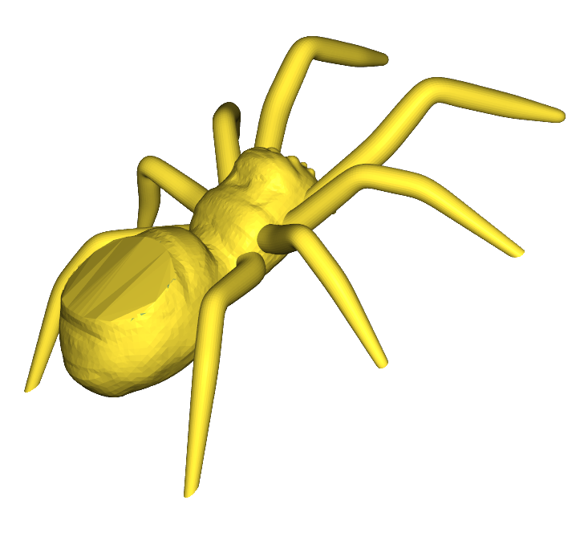
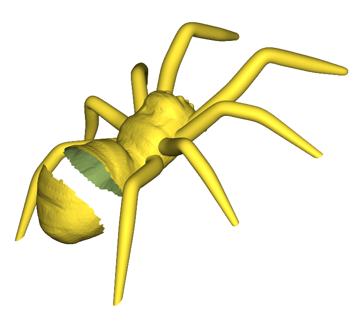
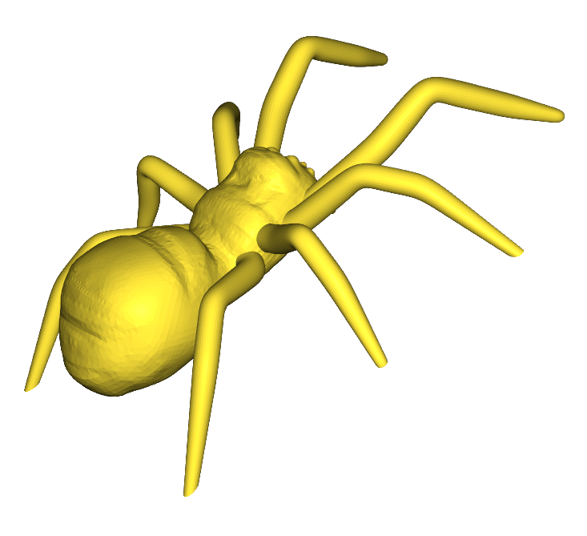

|
MeshLib Rust Docs
|
|
MeshLib Rust Docs
|
Namespaces | |
| namespace | cuda |
| namespace | distance_map_load |
| namespace | distance_map_save |
| namespace | features |
| namespace | filling_surface |
| namespace | fix_undercuts |
| namespace | float_grid_components |
| namespace | gcode_load |
| namespace | gcode_save |
| namespace | image_load |
| namespace | image_save |
| namespace | image_transform |
| namespace | lines_load |
| namespace | lines_save |
| namespace | locale |
| namespace | mesh_builder |
| namespace | mesh_components |
| namespace | mesh_load |
| namespace | mesh_save |
| namespace | nesting |
| namespace | object_save |
| namespace | parallel |
| namespace | phmap |
| namespace | planar_triangulation |
| namespace | point_cloud_components |
| namespace | points_load |
| namespace | points_save |
| namespace | polyline_components |
| namespace | raster_load |
| namespace | raster_save |
| namespace | scene_load |
| namespace | scene_save |
| namespace | self_intersections |
| namespace | triangulation_helpers |
| namespace | voxels_load |
| namespace | voxels_save |
| namespace | weighted_shell |
The ffi module holds the raw C declarations. The definitions of the safe wrappers mirror the C file hierarchy, and the modules named after the C++ namespaces re-export them.
| void meshlib::accumulate_face_centers | ( | accum:&mut meshlib::PointAccumulator | , |
| mp:&meshlib::MeshPart | , | ||
| xf:Option<&meshlib::AffineXf3f > | ) |
Adds in existing PointAccumulator all mesh face centers with the weight equal to face area Generated from function MR::accumulateFaceCenters.
Calls MR_accumulateFaceCenters().
| void meshlib::accumulate_line_centers | ( | accum:&mut meshlib::PointAccumulator | , |
| pl:&meshlib::Polyline3 | , | ||
| xf:Option<&meshlib::AffineXf3f > | ) |
Adds in existing PointAccumulator all line centers with the weight equal to the length line Generated from function MR::accumulateLineCenters.
Calls MR_accumulateLineCenters().
| void meshlib::accumulate_points_mr_point_cloud_part | ( | accum:&mut meshlib::PointAccumulator | , |
| pcp:&meshlib::PointCloudPart | , | ||
| xf:Option<&meshlib::AffineXf3f > | ) |
Adds in existing PointAccumulator all points from the cloud (region) with weight 1 Generated from function MR::accumulatePoints.
Calls MR_accumulatePoints_MR_PointCloudPart().
| void meshlib::accumulate_points_std_vector_mr_vector3f | ( | accum:&mut meshlib::PointAccumulator | , |
| points:&meshlib::std_vector_MR_Vector3f | , | ||
| xf:Option<&meshlib::AffineXf3f > | ) |
Adds in existing PointAccumulator all given points Generated from function MR::accumulatePoints.
Calls MR_accumulatePoints_std_vector_MR_Vector3f().
| void meshlib::accumulate_weighed_points | ( | accum:&mut meshlib::PointAccumulator | , |
| points:&meshlib::std_vector_MR_Vector3f | , | ||
| weights:&meshlib::std_vector_float | , | ||
| xf:Option<&meshlib::AffineXf3f > | ) |
Adds in existing PointAccumulator all given weighed points Generated from function MR::accumulateWeighedPoints.
Calls MR_accumulateWeighedPoints().
| void meshlib::add_base_to_planar_mesh | ( | mesh:&mut meshlib::Mesh | , |
| zOffset:f32 | ) |
given a planar mesh with boundary on input located in plane XY, packs and extends it along Z on zOffset (along -Z if zOffset is negative) to make a volumetric closed mesh note that this function also packs the mesh Generated from function MR::addBaseToPlanarMesh.
Calls MR_addBaseToPlanarMesh().
| void meshlib::add_left_band | ( | topology:&meshlib::MeshTopology | , |
| loop:&meshlib::std_vector_MR_EdgeId | , | ||
| addHere:&mut meshlib::FaceBitSet | ) |
adds all faces incident to loop vertices and located to the left from the loop to given FaceBitSet Generated from function MR::addLeftBand.
Calls MR_addLeftBand().
| auto meshlib::add_noise_mr_mesh | ( | mesh:&mut meshlib::Mesh | , |
| region:Option<&meshlib::VertBitSet > | , | ||
| settings:Option<&meshlib::NoiseSettings > | ) -> meshlib::Owned< meshlib::expected_void_std_string > |
Generated from function MR::addNoise.
Calls MR_addNoise_MR_Mesh().
| auto meshlib::add_noise_mr_vert_coords | ( | points:&mut meshlib::VertCoords | , |
| validVerts:&meshlib::VertBitSet | , | ||
| settings:&meshlib::NoiseSettings | ) -> meshlib::Owned< meshlib::expected_void_std_string > |
Adds noise to the points, using a normal distribution Generated from function MR::addNoise.
Calls MR_addNoise_MR_VertCoords().
| auto meshlib::align_contours_to_mesh | ( | mesh:&meshlib::Mesh | , |
| contours:&meshlib::std_vector_std_vector_MR_Vector2f | , | ||
| params:&meshlib::ContoursMeshAlignParams | ) -> meshlib::Owned< meshlib::expected_MR_Mesh_std_string > |
Creates planar mesh out of given contour and aligns it to given surface Generated from function MR::alignContoursToMesh.
Calls MR_alignContoursToMesh().
| auto meshlib::align_text_to_mesh | ( | mesh:&meshlib::Mesh | , |
| params:&meshlib::TextMeshAlignParams | ) -> meshlib::Owned< meshlib::expected_MR_Mesh_std_string > |
Creates symbol mesh and aligns it to given surface Generated from function MR::alignTextToMesh.
Calls MR_alignTextToMesh().
| auto meshlib::angle_double_mr_vector2d | ( | a:&meshlib::Vector2d | , |
| b:&meshlib::Vector2d | ) -> f64 |
angle in radians between two vectors Generated from function MR::angle<double>.
Calls MR_angle_double_MR_Vector2d().
| auto meshlib::angle_double_mr_vector3d | ( | a:&meshlib::Vector3d | , |
| b:&meshlib::Vector3d | ) -> f64 |
computes minimal angle in [0,pi] between two vectors; the function is symmetric: angle( a, b ) == angle( b, a ) Generated from function MR::angle<double>.
Calls MR_angle_double_MR_Vector3d().
| auto meshlib::angle_float_mr_vector2f | ( | a:&meshlib::Vector2f | , |
| b:&meshlib::Vector2f | ) -> f32 |
angle in radians between two vectors Generated from function MR::angle<float>.
Calls MR_angle_float_MR_Vector2f().
| auto meshlib::angle_float_mr_vector3f | ( | a:&meshlib::Vector3f | , |
| b:&meshlib::Vector3f | ) -> f32 |
computes minimal angle in [0,pi] between two vectors; the function is symmetric: angle( a, b ) == angle( b, a ) Generated from function MR::angle<float>.
Calls MR_angle_float_MR_Vector3f().
| auto meshlib::angle_int_mr_vector2i | ( | a:&meshlib::Vector2i | , |
| b:&meshlib::Vector2i | ) -> core::ffi::c_int |
angle in radians between two vectors Generated from function MR::angle<int>.
Calls MR_angle_int_MR_Vector2i().
| auto meshlib::angle_int_mr_vector3i | ( | a:&meshlib::Vector3i | , |
| b:&meshlib::Vector3i | ) -> core::ffi::c_int |
computes minimal angle in [0,pi] between two vectors; the function is symmetric: angle( a, b ) == angle( b, a ) Generated from function MR::angle<int>.
Calls MR_angle_int_MR_Vector3i().
| void meshlib::append_object_from_tree_recursive_mr_object | ( | obj:&meshlib::std_shared_ptr_MR_Object | , |
| res:&mut meshlib::std_vector_std_shared_ptr_MR_Object | , | ||
| type:&meshlib::ObjectSelectivityType | ) |
Generated from function MR::appendObjectFromTreeRecursive<MR::Object>.
Calls MR_appendObjectFromTreeRecursive_MR_Object().
| void meshlib::append_object_from_tree_recursive_mr_object_distance_map | ( | obj:&meshlib::std_shared_ptr_MR_Object | , |
| res:&mut meshlib::std_vector_std_shared_ptr_MR_ObjectDistanceMap | , | ||
| type:&meshlib::ObjectSelectivityType | ) |
Generated from function MR::appendObjectFromTreeRecursive<MR::ObjectDistanceMap>.
Calls MR_appendObjectFromTreeRecursive_MR_ObjectDistanceMap().
| void meshlib::append_object_from_tree_recursive_mr_object_lines | ( | obj:&meshlib::std_shared_ptr_MR_Object | , |
| res:&mut meshlib::std_vector_std_shared_ptr_MR_ObjectLines | , | ||
| type:&meshlib::ObjectSelectivityType | ) |
Generated from function MR::appendObjectFromTreeRecursive<MR::ObjectLines>.
Calls MR_appendObjectFromTreeRecursive_MR_ObjectLines().
| void meshlib::append_object_from_tree_recursive_mr_object_lines_holder | ( | obj:&meshlib::std_shared_ptr_MR_Object | , |
| res:&mut meshlib::std_vector_std_shared_ptr_MR_ObjectLinesHolder | , | ||
| type:&meshlib::ObjectSelectivityType | ) |
Generated from function MR::appendObjectFromTreeRecursive<MR::ObjectLinesHolder>.
Calls MR_appendObjectFromTreeRecursive_MR_ObjectLinesHolder().
| void meshlib::append_object_from_tree_recursive_mr_object_mesh | ( | obj:&meshlib::std_shared_ptr_MR_Object | , |
| res:&mut meshlib::std_vector_std_shared_ptr_MR_ObjectMesh | , | ||
| type:&meshlib::ObjectSelectivityType | ) |
Generated from function MR::appendObjectFromTreeRecursive<MR::ObjectMesh>.
Calls MR_appendObjectFromTreeRecursive_MR_ObjectMesh().
| void meshlib::append_object_from_tree_recursive_mr_object_mesh_holder | ( | obj:&meshlib::std_shared_ptr_MR_Object | , |
| res:&mut meshlib::std_vector_std_shared_ptr_MR_ObjectMeshHolder | , | ||
| type:&meshlib::ObjectSelectivityType | ) |
Generated from function MR::appendObjectFromTreeRecursive<MR::ObjectMeshHolder>.
Calls MR_appendObjectFromTreeRecursive_MR_ObjectMeshHolder().
| void meshlib::append_object_from_tree_recursive_mr_object_points | ( | obj:&meshlib::std_shared_ptr_MR_Object | , |
| res:&mut meshlib::std_vector_std_shared_ptr_MR_ObjectPoints | , | ||
| type:&meshlib::ObjectSelectivityType | ) |
Generated from function MR::appendObjectFromTreeRecursive<MR::ObjectPoints>.
Calls MR_appendObjectFromTreeRecursive_MR_ObjectPoints().
| void meshlib::append_object_from_tree_recursive_mr_object_points_holder | ( | obj:&meshlib::std_shared_ptr_MR_Object | , |
| res:&mut meshlib::std_vector_std_shared_ptr_MR_ObjectPointsHolder | , | ||
| type:&meshlib::ObjectSelectivityType | ) |
Generated from function MR::appendObjectFromTreeRecursive<MR::ObjectPointsHolder>.
Calls MR_appendObjectFromTreeRecursive_MR_ObjectPointsHolder().
| void meshlib::append_object_from_tree_recursive_mr_object_voxels | ( | obj:&meshlib::std_shared_ptr_MR_Object | , |
| res:&mut meshlib::std_vector_std_shared_ptr_MR_ObjectVoxels | , | ||
| type:&meshlib::ObjectSelectivityType | ) |
Generated from function MR::appendObjectFromTreeRecursive<MR::ObjectVoxels>.
Calls MR_appendObjectFromTreeRecursive_MR_ObjectVoxels().
| void meshlib::append_object_from_tree_recursive_mr_visual_object | ( | obj:&meshlib::std_shared_ptr_MR_Object | , |
| res:&mut meshlib::std_vector_std_shared_ptr_MR_VisualObject | , | ||
| type:&meshlib::ObjectSelectivityType | ) |
Generated from function MR::appendObjectFromTreeRecursive<MR::VisualObject>.
Calls MR_appendObjectFromTreeRecursive_MR_VisualObject().
| auto meshlib::apply_double_const_mr_affine_xf3d_ptr | ( | xf:Option<&meshlib::AffineXf3d > | , |
| p:&meshlib::Vector3f | ) -> meshlib::Vector3d |
converts given point in double precision and applies given transformation to it Generated from function MR::applyDouble.
Calls MR_applyDouble_const_MR_AffineXf3d_ptr().
| auto meshlib::apply_double_const_mr_matrix3d_ptr | ( | m:Option<&meshlib::Matrix3d > | , |
| n:&meshlib::Vector3f | ) -> meshlib::Vector3d |
converts given normal in double precision and applies given matrix to it Generated from function MR::applyDouble.
Calls MR_applyDouble_const_MR_Matrix3d_ptr().
| auto meshlib::apply_float_const_mr_affine_xf3d_ptr | ( | xf:Option<&meshlib::AffineXf3d > | , |
| p:&meshlib::Vector3f | ) -> meshlib::Vector3f |
returns the point as is or after application of given transform to it in double precision Generated from function MR::applyFloat.
Calls MR_applyFloat_const_MR_AffineXf3d_ptr().
| auto meshlib::apply_float_const_mr_matrix3d_ptr | ( | m:Option<&meshlib::Matrix3d > | , |
| n:&meshlib::Vector3f | ) -> meshlib::Vector3f |
returns the normal as is or after application of given matrix to it in double precision Generated from function MR::applyFloat.
Calls MR_applyFloat_const_MR_Matrix3d_ptr().
| auto meshlib::area_const_mr_face_bit_set_ptr | ( | topology:&meshlib::MeshTopology | , |
| points:&meshlib::VertCoords | , | ||
| fs:Option<&meshlib::FaceBitSet > | ) -> f64 |
computes the area of given face-region (or whole mesh) Generated from function MR::area.
Calls MR_area_const_MR_FaceBitSet_ptr().
| auto meshlib::area_double_mr_vector2d | ( | p:&meshlib::Vector2d | , |
| q:&meshlib::Vector2d | , | ||
| r:&meshlib::Vector2d | ) -> f64 |
computes twice the area of given triangle Generated from function MR::area<double>.
Calls MR_area_double_MR_Vector2d().
| auto meshlib::area_double_mr_vector3d | ( | p:&meshlib::Vector3d | , |
| q:&meshlib::Vector3d | , | ||
| r:&meshlib::Vector3d | ) -> f64 |
computes twice the area of given triangle Generated from function MR::area<double>.
Calls MR_area_double_MR_Vector3d().
| auto meshlib::area_float_mr_vector2f | ( | p:&meshlib::Vector2f | , |
| q:&meshlib::Vector2f | , | ||
| r:&meshlib::Vector2f | ) -> f32 |
computes twice the area of given triangle Generated from function MR::area<float>.
Calls MR_area_float_MR_Vector2f().
| auto meshlib::area_float_mr_vector3f | ( | p:&meshlib::Vector3f | , |
| q:&meshlib::Vector3f | , | ||
| r:&meshlib::Vector3f | ) -> f32 |
computes twice the area of given triangle Generated from function MR::area<float>.
Calls MR_area_float_MR_Vector3f().
| auto meshlib::area_mr_face_id | ( | topology:&meshlib::MeshTopology | , |
| points:&meshlib::VertCoords | , | ||
| f:meshlib::FaceId | ) -> f32 |
returns the area of given face Generated from function MR::area.
Calls MR_area_MR_FaceId().
| auto meshlib::as_selectivity_type_mr_object | ( | obj:&meshlib::std_shared_ptr_MR_Object | , |
| type:&meshlib::ObjectSelectivityType | ) -> meshlib::Owned< meshlib::std_shared_ptr_MR_Object > |
if input object is of given type then returns another pointer on it Generated from function MR::asSelectivityType<MR::Object>.
Calls MR_asSelectivityType_MR_Object().
| auto meshlib::as_selectivity_type_mr_object_distance_map | ( | obj:&meshlib::std_shared_ptr_MR_Object | , |
| type:&meshlib::ObjectSelectivityType | ) -> meshlib::Owned< meshlib::std_shared_ptr_MR_ObjectDistanceMap > |
if input object is of given type then returns another pointer on it Generated from function MR::asSelectivityType<MR::ObjectDistanceMap>.
Calls MR_asSelectivityType_MR_ObjectDistanceMap().
| auto meshlib::as_selectivity_type_mr_object_lines | ( | obj:&meshlib::std_shared_ptr_MR_Object | , |
| type:&meshlib::ObjectSelectivityType | ) -> meshlib::Owned< meshlib::std_shared_ptr_MR_ObjectLines > |
if input object is of given type then returns another pointer on it Generated from function MR::asSelectivityType<MR::ObjectLines>.
Calls MR_asSelectivityType_MR_ObjectLines().
| auto meshlib::as_selectivity_type_mr_object_lines_holder | ( | obj:&meshlib::std_shared_ptr_MR_Object | , |
| type:&meshlib::ObjectSelectivityType | ) -> meshlib::Owned< meshlib::std_shared_ptr_MR_ObjectLinesHolder > |
if input object is of given type then returns another pointer on it Generated from function MR::asSelectivityType<MR::ObjectLinesHolder>.
Calls MR_asSelectivityType_MR_ObjectLinesHolder().
| auto meshlib::as_selectivity_type_mr_object_mesh | ( | obj:&meshlib::std_shared_ptr_MR_Object | , |
| type:&meshlib::ObjectSelectivityType | ) -> meshlib::Owned< meshlib::std_shared_ptr_MR_ObjectMesh > |
if input object is of given type then returns another pointer on it Generated from function MR::asSelectivityType<MR::ObjectMesh>.
Calls MR_asSelectivityType_MR_ObjectMesh().
| auto meshlib::as_selectivity_type_mr_object_mesh_holder | ( | obj:&meshlib::std_shared_ptr_MR_Object | , |
| type:&meshlib::ObjectSelectivityType | ) -> meshlib::Owned< meshlib::std_shared_ptr_MR_ObjectMeshHolder > |
if input object is of given type then returns another pointer on it Generated from function MR::asSelectivityType<MR::ObjectMeshHolder>.
Calls MR_asSelectivityType_MR_ObjectMeshHolder().
| auto meshlib::as_selectivity_type_mr_object_points | ( | obj:&meshlib::std_shared_ptr_MR_Object | , |
| type:&meshlib::ObjectSelectivityType | ) -> meshlib::Owned< meshlib::std_shared_ptr_MR_ObjectPoints > |
if input object is of given type then returns another pointer on it Generated from function MR::asSelectivityType<MR::ObjectPoints>.
Calls MR_asSelectivityType_MR_ObjectPoints().
| auto meshlib::as_selectivity_type_mr_object_points_holder | ( | obj:&meshlib::std_shared_ptr_MR_Object | , |
| type:&meshlib::ObjectSelectivityType | ) -> meshlib::Owned< meshlib::std_shared_ptr_MR_ObjectPointsHolder > |
if input object is of given type then returns another pointer on it Generated from function MR::asSelectivityType<MR::ObjectPointsHolder>.
Calls MR_asSelectivityType_MR_ObjectPointsHolder().
| auto meshlib::as_selectivity_type_mr_object_voxels | ( | obj:&meshlib::std_shared_ptr_MR_Object | , |
| type:&meshlib::ObjectSelectivityType | ) -> meshlib::Owned< meshlib::std_shared_ptr_MR_ObjectVoxels > |
if input object is of given type then returns another pointer on it Generated from function MR::asSelectivityType<MR::ObjectVoxels>.
Calls MR_asSelectivityType_MR_ObjectVoxels().
| auto meshlib::as_selectivity_type_mr_visual_object | ( | obj:&meshlib::std_shared_ptr_MR_Object | , |
| type:&meshlib::ObjectSelectivityType | ) -> meshlib::Owned< meshlib::std_shared_ptr_MR_VisualObject > |
if input object is of given type then returns another pointer on it Generated from function MR::asSelectivityType<MR::VisualObject>.
Calls MR_asSelectivityType_MR_VisualObject().
| auto meshlib::as_string_mr_coloring_type | ( | ct:meshlib::ColoringType | ) | -> *const core::ffi::c_char |
returns string representation of enum values Generated from function MR::asString.
Calls MR_asString_MR_ColoringType().
| auto meshlib::as_string_mr_sign_detection_mode | ( | m:meshlib::SignDetectionMode | ) | -> *const core::ffi::c_char |
returns string representation of enum values Generated from function MR::asString.
Calls MR_asString_MR_SignDetectionMode().
| auto meshlib::auto_orient_local_triangulations | ( | pointCloud:&meshlib::PointCloud | , |
| triangs:&mut meshlib::AllLocalTriangulations | , | ||
| region:&meshlib::VertBitSet | , | ||
| progress:Option<&meshlib::std_function_bool_from_float > | , | ||
| outRep3:Option<&mut meshlib::Triangulation > | , | ||
| outRep2:Option<&mut meshlib::Triangulation > | ) -> bool |
orient neighbors around each point in
| region | so there will be as many triangles with same (and not opposite) orientation as possible Generated from function MR::autoOrientLocalTriangulations. |
Calls MR_autoOrientLocalTriangulations().
| auto meshlib::average_edge_length | ( | topology:&meshlib::MeshTopology | , |
| points:&meshlib::VertCoords | ) -> f32 |
computes average length of an edge in the mesh given by (topology, points) Generated from function MR::averageEdgeLength.
Calls MR_averageEdgeLength().
| auto meshlib::begin_const_mr_bit_set_ref | ( | a:&meshlib::BitSet | ) | -> meshlib::Owned< meshlib::SetBitIterator > |
Generated from function MR::begin.
Calls MR_begin_const_MR_BitSet_ref(). The reference to the parameter a might be preserved in the return value.
| auto meshlib::begin_const_mr_buffer_char_ref | ( | a:&meshlib::Buffer_char | ) | -> Option<&mut core::ffi::c_char > |
Generated from function MR::begin.
Calls MR_begin_const_MR_Buffer_char_ref(). The reference to the parameter a might be preserved in the return value.
| auto meshlib::begin_const_mr_buffer_mr_edge_id_mr_edge_id_ref | ( | a:&meshlib::Buffer_MR_EdgeId_MR_EdgeId | ) | -> Option<&mut meshlib::NoDefInit_MR_EdgeId > |
Generated from function MR::begin.
Calls MR_begin_const_MR_Buffer_MR_EdgeId_MR_EdgeId_ref(). The reference to the parameter a might be preserved in the return value.
| auto meshlib::begin_const_mr_buffer_mr_edge_id_mr_undirected_edge_id_ref | ( | a:&meshlib::Buffer_MR_EdgeId_MR_UndirectedEdgeId | ) | -> Option<&mut meshlib::NoDefInit_MR_EdgeId > |
Generated from function MR::begin.
Calls MR_begin_const_MR_Buffer_MR_EdgeId_MR_UndirectedEdgeId_ref(). The reference to the parameter a might be preserved in the return value.
| auto meshlib::begin_const_mr_buffer_mr_face_id_mr_face_id_ref | ( | a:&meshlib::Buffer_MR_FaceId_MR_FaceId | ) | -> Option<&mut meshlib::NoDefInit_MR_FaceId > |
Generated from function MR::begin.
Calls MR_begin_const_MR_Buffer_MR_FaceId_MR_FaceId_ref(). The reference to the parameter a might be preserved in the return value.
| auto meshlib::begin_const_mr_buffer_mr_face_id_ref | ( | a:&meshlib::Buffer_MR_FaceId | ) | -> Option<&mut meshlib::NoDefInit_MR_FaceId > |
Generated from function MR::begin.
Calls MR_begin_const_MR_Buffer_MR_FaceId_ref(). The reference to the parameter a might be preserved in the return value.
| auto meshlib::begin_const_mr_buffer_mr_graph_edge_id_mr_graph_edge_id_ref | ( | a:&meshlib::Buffer_MR_GraphEdgeId_MR_GraphEdgeId | ) | -> Option<&mut meshlib::NoDefInit_MR_GraphEdgeId > |
Generated from function MR::begin.
Calls MR_begin_const_MR_Buffer_MR_GraphEdgeId_MR_GraphEdgeId_ref(). The reference to the parameter a might be preserved in the return value.
| auto meshlib::begin_const_mr_buffer_mr_graph_vert_id_mr_graph_vert_id_ref | ( | a:&meshlib::Buffer_MR_GraphVertId_MR_GraphVertId | ) | -> Option<&mut meshlib::NoDefInit_MR_GraphVertId > |
Generated from function MR::begin.
Calls MR_begin_const_MR_Buffer_MR_GraphVertId_MR_GraphVertId_ref(). The reference to the parameter a might be preserved in the return value.
| auto meshlib::begin_const_mr_buffer_mr_id_mr_icp_elemt_tag_mr_id_mr_icp_elemt_tag_ref | ( | a:&meshlib::Buffer_MR_Id_MR_ICPElemtTag_MR_Id_MR_ICPElemtTag | ) | -> Option<&mut meshlib::NoDefInit_MR_Id_MR_ICPElemtTag > |
Generated from function MR::begin.
Calls MR_begin_const_MR_Buffer_MR_Id_MR_ICPElemtTag_MR_Id_MR_ICPElemtTag_ref(). The reference to the parameter a might be preserved in the return value.
| auto meshlib::begin_const_mr_buffer_mr_node_id_mr_node_id_ref | ( | a:&meshlib::Buffer_MR_NodeId_MR_NodeId | ) | -> Option<&mut meshlib::NoDefInit_MR_NodeId > |
Generated from function MR::begin.
Calls MR_begin_const_MR_Buffer_MR_NodeId_MR_NodeId_ref(). The reference to the parameter a might be preserved in the return value.
| auto meshlib::begin_const_mr_buffer_mr_obj_id_mr_obj_id_ref | ( | a:&meshlib::Buffer_MR_ObjId_MR_ObjId | ) | -> Option<&mut meshlib::NoDefInit_MR_ObjId > |
Generated from function MR::begin.
Calls MR_begin_const_MR_Buffer_MR_ObjId_MR_ObjId_ref(). The reference to the parameter a might be preserved in the return value.
| auto meshlib::begin_const_mr_buffer_mr_pixel_id_mr_pixel_id_ref | ( | a:&meshlib::Buffer_MR_PixelId_MR_PixelId | ) | -> Option<&mut meshlib::NoDefInit_MR_PixelId > |
Generated from function MR::begin.
Calls MR_begin_const_MR_Buffer_MR_PixelId_MR_PixelId_ref(). The reference to the parameter a might be preserved in the return value.
| auto meshlib::begin_const_mr_buffer_mr_region_id_mr_region_id_ref | ( | a:&meshlib::Buffer_MR_RegionId_MR_RegionId | ) | -> Option<&mut meshlib::NoDefInit_MR_RegionId > |
Generated from function MR::begin.
Calls MR_begin_const_MR_Buffer_MR_RegionId_MR_RegionId_ref(). The reference to the parameter a might be preserved in the return value.
| auto meshlib::begin_const_mr_buffer_mr_texture_id_mr_texture_id_ref | ( | a:&meshlib::Buffer_MR_TextureId_MR_TextureId | ) | -> Option<&mut meshlib::NoDefInit_MR_TextureId > |
Generated from function MR::begin.
Calls MR_begin_const_MR_Buffer_MR_TextureId_MR_TextureId_ref(). The reference to the parameter a might be preserved in the return value.
| auto meshlib::begin_const_mr_buffer_mr_undirected_edge_id_mr_undirected_edge_id_ref | ( | a:&meshlib::Buffer_MR_UndirectedEdgeId_MR_UndirectedEdgeId | ) | -> Option<&mut meshlib::NoDefInit_MR_UndirectedEdgeId > |
Generated from function MR::begin.
Calls MR_begin_const_MR_Buffer_MR_UndirectedEdgeId_MR_UndirectedEdgeId_ref(). The reference to the parameter a might be preserved in the return value.
| auto meshlib::begin_const_mr_buffer_mr_undirected_edge_id_ref | ( | a:&meshlib::Buffer_MR_UndirectedEdgeId | ) | -> Option<&mut meshlib::NoDefInit_MR_UndirectedEdgeId > |
Generated from function MR::begin.
Calls MR_begin_const_MR_Buffer_MR_UndirectedEdgeId_ref(). The reference to the parameter a might be preserved in the return value.
| auto meshlib::begin_const_mr_buffer_mr_vert_id_mr_vert_id_ref | ( | a:&meshlib::Buffer_MR_VertId_MR_VertId | ) | -> Option<&mut meshlib::NoDefInit_MR_VertId > |
Generated from function MR::begin.
Calls MR_begin_const_MR_Buffer_MR_VertId_MR_VertId_ref(). The reference to the parameter a might be preserved in the return value.
| auto meshlib::begin_const_mr_buffer_mr_vert_id_ref | ( | a:&meshlib::Buffer_MR_VertId | ) | -> Option<&mut meshlib::NoDefInit_MR_VertId > |
Generated from function MR::begin.
Calls MR_begin_const_MR_Buffer_MR_VertId_ref(). The reference to the parameter a might be preserved in the return value.
| auto meshlib::begin_const_mr_buffer_mr_voxel_id_mr_voxel_id_ref | ( | a:&meshlib::Buffer_MR_VoxelId_MR_VoxelId | ) | -> Option<&mut meshlib::NoDefInit_MR_VoxelId > |
Generated from function MR::begin.
Calls MR_begin_const_MR_Buffer_MR_VoxelId_MR_VoxelId_ref(). The reference to the parameter a might be preserved in the return value.
| auto meshlib::begin_const_mr_buffer_uint64_t_ref | ( | a:&meshlib::Buffer_uint64_t | ) | -> Option<&mut u64 > |
Generated from function MR::begin.
Calls MR_begin_const_MR_Buffer_uint64_t_ref(). The reference to the parameter a might be preserved in the return value.
| auto meshlib::begin_const_mr_buffer_unsigned_char_ref | ( | a:&meshlib::Buffer_unsigned_char | ) | -> Option<&mut core::ffi::c_uchar > |
Generated from function MR::begin.
Calls MR_begin_const_MR_Buffer_unsigned_char_ref(). The reference to the parameter a might be preserved in the return value.
| auto meshlib::begin_const_mr_edge_bit_set_ref | ( | a:&meshlib::EdgeBitSet | ) | -> meshlib::Owned< meshlib::EdgeSetBitIterator > |
Generated from function MR::begin.
Calls MR_begin_const_MR_EdgeBitSet_ref(). The reference to the parameter a might be preserved in the return value.
| auto meshlib::begin_const_mr_face_bit_set_ref | ( | a:&meshlib::FaceBitSet | ) | -> meshlib::Owned< meshlib::FaceSetBitIterator > |
Generated from function MR::begin.
Calls MR_begin_const_MR_FaceBitSet_ref(). The reference to the parameter a might be preserved in the return value.
| auto meshlib::begin_const_mr_graph_edge_bit_set_ref | ( | a:&meshlib::GraphEdgeBitSet | ) | -> meshlib::Owned< meshlib::SetBitIteratorT_MR_GraphEdgeBitSet > |
Generated from function MR::begin.
Calls MR_begin_const_MR_GraphEdgeBitSet_ref(). The reference to the parameter a might be preserved in the return value.
| auto meshlib::begin_const_mr_graph_vert_bit_set_ref | ( | a:&meshlib::GraphVertBitSet | ) | -> meshlib::Owned< meshlib::SetBitIteratorT_MR_GraphVertBitSet > |
Generated from function MR::begin.
Calls MR_begin_const_MR_GraphVertBitSet_ref(). The reference to the parameter a might be preserved in the return value.
| auto meshlib::begin_const_mr_iterator_range_mr_chunk_iterator_ref | ( | range:&meshlib::IteratorRange_MR_ChunkIterator | ) | -> meshlib::Owned< meshlib::ChunkIterator > |
Generated from function MR::begin.
Calls MR_begin_const_MR_IteratorRange_MR_ChunkIterator_ref(). The reference to the parameter range might be preserved in the return value.
| auto meshlib::begin_const_mr_iterator_range_mr_polyline_undirected_edge_iterator_ref | ( | range:&meshlib::IteratorRange_MR_PolylineUndirectedEdgeIterator | ) | -> meshlib::Owned< meshlib::PolylineUndirectedEdgeIterator > |
Generated from function MR::begin.
Calls MR_begin_const_MR_IteratorRange_MR_PolylineUndirectedEdgeIterator_ref(). The reference to the parameter range might be preserved in the return value.
| auto meshlib::begin_const_mr_iterator_range_mr_ring_iterator_mr_next_edge_same_left_ref | ( | range:&meshlib::IteratorRange_MR_RingIterator_MR_NextEdgeSameLeft | ) | -> meshlib::Owned< meshlib::RingIterator_MR_NextEdgeSameLeft > |
Generated from function MR::begin.
Calls MR_begin_const_MR_IteratorRange_MR_RingIterator_MR_NextEdgeSameLeft_ref(). The reference to the parameter range might be preserved in the return value.
| auto meshlib::begin_const_mr_iterator_range_mr_ring_iterator_mr_next_edge_same_origin_ref | ( | range:&meshlib::IteratorRange_MR_RingIterator_MR_NextEdgeSameOrigin | ) | -> meshlib::Owned< meshlib::RingIterator_MR_NextEdgeSameOrigin > |
Generated from function MR::begin.
Calls MR_begin_const_MR_IteratorRange_MR_RingIterator_MR_NextEdgeSameOrigin_ref(). The reference to the parameter range might be preserved in the return value.
| auto meshlib::begin_const_mr_iterator_range_mr_undirected_edge_iterator_ref | ( | range:&meshlib::IteratorRange_MR_UndirectedEdgeIterator | ) | -> meshlib::Owned< meshlib::UndirectedEdgeIterator > |
Generated from function MR::begin.
Calls MR_begin_const_MR_IteratorRange_MR_UndirectedEdgeIterator_ref(). The reference to the parameter range might be preserved in the return value.
| auto meshlib::begin_const_mr_node_bit_set_ref | ( | a:&meshlib::NodeBitSet | ) | -> meshlib::Owned< meshlib::SetBitIteratorT_MR_NodeBitSet > |
Generated from function MR::begin.
Calls MR_begin_const_MR_NodeBitSet_ref(). The reference to the parameter a might be preserved in the return value.
| auto meshlib::begin_const_mr_obj_bit_set_ref | ( | a:&meshlib::ObjBitSet | ) | -> meshlib::Owned< meshlib::SetBitIteratorT_MR_ObjBitSet > |
Generated from function MR::begin.
Calls MR_begin_const_MR_ObjBitSet_ref(). The reference to the parameter a might be preserved in the return value.
| auto meshlib::begin_const_mr_pixel_bit_set_ref | ( | a:&meshlib::PixelBitSet | ) | -> meshlib::Owned< meshlib::SetBitIteratorT_MR_PixelBitSet > |
Generated from function MR::begin.
Calls MR_begin_const_MR_PixelBitSet_ref(). The reference to the parameter a might be preserved in the return value.
| auto meshlib::begin_const_mr_region_bit_set_ref | ( | a:&meshlib::RegionBitSet | ) | -> meshlib::Owned< meshlib::SetBitIteratorT_MR_RegionBitSet > |
Generated from function MR::begin.
Calls MR_begin_const_MR_RegionBitSet_ref(). The reference to the parameter a might be preserved in the return value.
| auto meshlib::begin_const_mr_texture_bit_set_ref | ( | a:&meshlib::TextureBitSet | ) | -> meshlib::Owned< meshlib::SetBitIteratorT_MR_TextureBitSet > |
Generated from function MR::begin.
Calls MR_begin_const_MR_TextureBitSet_ref(). The reference to the parameter a might be preserved in the return value.
| auto meshlib::begin_const_mr_typed_bit_set_mr_id_mr_icp_elemt_tag_ref | ( | a:&meshlib::TypedBitSet_MR_Id_MR_ICPElemtTag | ) | -> meshlib::Owned< meshlib::SetBitIteratorT_MR_TypedBitSet_MR_Id_MR_ICPElemtTag > |
Generated from function MR::begin.
Calls MR_begin_const_MR_TypedBitSet_MR_Id_MR_ICPElemtTag_ref(). The reference to the parameter a might be preserved in the return value.
| auto meshlib::begin_const_mr_undirected_edge_bit_set_ref | ( | a:&meshlib::UndirectedEdgeBitSet | ) | -> meshlib::Owned< meshlib::UndirectedEdgeSetBitIterator > |
Generated from function MR::begin.
Calls MR_begin_const_MR_UndirectedEdgeBitSet_ref(). The reference to the parameter a might be preserved in the return value.
| auto meshlib::begin_const_mr_vert_bit_set_ref | ( | a:&meshlib::VertBitSet | ) | -> meshlib::Owned< meshlib::VertSetBitIterator > |
Generated from function MR::begin.
Calls MR_begin_const_MR_VertBitSet_ref(). The reference to the parameter a might be preserved in the return value.
| auto meshlib::begin_const_mr_voxel_bit_set_ref | ( | a:&meshlib::VoxelBitSet | ) | -> meshlib::Owned< meshlib::SetBitIteratorT_MR_VoxelBitSet > |
Generated from function MR::begin.
Calls MR_begin_const_MR_VoxelBitSet_ref(). The reference to the parameter a might be preserved in the return value.
| auto meshlib::begin_mr_buffer_char_ref | ( | a:&mut meshlib::Buffer_char | ) | -> Option<&mut core::ffi::c_char > |
Generated from function MR::begin.
Calls MR_begin_MR_Buffer_char_ref(). The reference to the parameter a might be preserved in the return value.
| auto meshlib::begin_mr_buffer_mr_edge_id_mr_edge_id_ref | ( | a:&mut meshlib::Buffer_MR_EdgeId_MR_EdgeId | ) | -> Option<&mut meshlib::NoDefInit_MR_EdgeId > |
Generated from function MR::begin.
Calls MR_begin_MR_Buffer_MR_EdgeId_MR_EdgeId_ref(). The reference to the parameter a might be preserved in the return value.
| auto meshlib::begin_mr_buffer_mr_edge_id_mr_undirected_edge_id_ref | ( | a:&mut meshlib::Buffer_MR_EdgeId_MR_UndirectedEdgeId | ) | -> Option<&mut meshlib::NoDefInit_MR_EdgeId > |
Generated from function MR::begin.
Calls MR_begin_MR_Buffer_MR_EdgeId_MR_UndirectedEdgeId_ref(). The reference to the parameter a might be preserved in the return value.
| auto meshlib::begin_mr_buffer_mr_face_id_mr_face_id_ref | ( | a:&mut meshlib::Buffer_MR_FaceId_MR_FaceId | ) | -> Option<&mut meshlib::NoDefInit_MR_FaceId > |
Generated from function MR::begin.
Calls MR_begin_MR_Buffer_MR_FaceId_MR_FaceId_ref(). The reference to the parameter a might be preserved in the return value.
| auto meshlib::begin_mr_buffer_mr_face_id_ref | ( | a:&mut meshlib::Buffer_MR_FaceId | ) | -> Option<&mut meshlib::NoDefInit_MR_FaceId > |
Generated from function MR::begin.
Calls MR_begin_MR_Buffer_MR_FaceId_ref(). The reference to the parameter a might be preserved in the return value.
| auto meshlib::begin_mr_buffer_mr_graph_edge_id_mr_graph_edge_id_ref | ( | a:&mut meshlib::Buffer_MR_GraphEdgeId_MR_GraphEdgeId | ) | -> Option<&mut meshlib::NoDefInit_MR_GraphEdgeId > |
Generated from function MR::begin.
Calls MR_begin_MR_Buffer_MR_GraphEdgeId_MR_GraphEdgeId_ref(). The reference to the parameter a might be preserved in the return value.
| auto meshlib::begin_mr_buffer_mr_graph_vert_id_mr_graph_vert_id_ref | ( | a:&mut meshlib::Buffer_MR_GraphVertId_MR_GraphVertId | ) | -> Option<&mut meshlib::NoDefInit_MR_GraphVertId > |
Generated from function MR::begin.
Calls MR_begin_MR_Buffer_MR_GraphVertId_MR_GraphVertId_ref(). The reference to the parameter a might be preserved in the return value.
| auto meshlib::begin_mr_buffer_mr_id_mr_icp_elemt_tag_mr_id_mr_icp_elemt_tag_ref | ( | a:&mut meshlib::Buffer_MR_Id_MR_ICPElemtTag_MR_Id_MR_ICPElemtTag | ) | -> Option<&mut meshlib::NoDefInit_MR_Id_MR_ICPElemtTag > |
Generated from function MR::begin.
Calls MR_begin_MR_Buffer_MR_Id_MR_ICPElemtTag_MR_Id_MR_ICPElemtTag_ref(). The reference to the parameter a might be preserved in the return value.
| auto meshlib::begin_mr_buffer_mr_node_id_mr_node_id_ref | ( | a:&mut meshlib::Buffer_MR_NodeId_MR_NodeId | ) | -> Option<&mut meshlib::NoDefInit_MR_NodeId > |
Generated from function MR::begin.
Calls MR_begin_MR_Buffer_MR_NodeId_MR_NodeId_ref(). The reference to the parameter a might be preserved in the return value.
| auto meshlib::begin_mr_buffer_mr_obj_id_mr_obj_id_ref | ( | a:&mut meshlib::Buffer_MR_ObjId_MR_ObjId | ) | -> Option<&mut meshlib::NoDefInit_MR_ObjId > |
Generated from function MR::begin.
Calls MR_begin_MR_Buffer_MR_ObjId_MR_ObjId_ref(). The reference to the parameter a might be preserved in the return value.
| auto meshlib::begin_mr_buffer_mr_pixel_id_mr_pixel_id_ref | ( | a:&mut meshlib::Buffer_MR_PixelId_MR_PixelId | ) | -> Option<&mut meshlib::NoDefInit_MR_PixelId > |
Generated from function MR::begin.
Calls MR_begin_MR_Buffer_MR_PixelId_MR_PixelId_ref(). The reference to the parameter a might be preserved in the return value.
| auto meshlib::begin_mr_buffer_mr_region_id_mr_region_id_ref | ( | a:&mut meshlib::Buffer_MR_RegionId_MR_RegionId | ) | -> Option<&mut meshlib::NoDefInit_MR_RegionId > |
Generated from function MR::begin.
Calls MR_begin_MR_Buffer_MR_RegionId_MR_RegionId_ref(). The reference to the parameter a might be preserved in the return value.
| auto meshlib::begin_mr_buffer_mr_texture_id_mr_texture_id_ref | ( | a:&mut meshlib::Buffer_MR_TextureId_MR_TextureId | ) | -> Option<&mut meshlib::NoDefInit_MR_TextureId > |
Generated from function MR::begin.
Calls MR_begin_MR_Buffer_MR_TextureId_MR_TextureId_ref(). The reference to the parameter a might be preserved in the return value.
| auto meshlib::begin_mr_buffer_mr_undirected_edge_id_mr_undirected_edge_id_ref | ( | a:&mut meshlib::Buffer_MR_UndirectedEdgeId_MR_UndirectedEdgeId | ) | -> Option<&mut meshlib::NoDefInit_MR_UndirectedEdgeId > |
Generated from function MR::begin.
Calls MR_begin_MR_Buffer_MR_UndirectedEdgeId_MR_UndirectedEdgeId_ref(). The reference to the parameter a might be preserved in the return value.
| auto meshlib::begin_mr_buffer_mr_undirected_edge_id_ref | ( | a:&mut meshlib::Buffer_MR_UndirectedEdgeId | ) | -> Option<&mut meshlib::NoDefInit_MR_UndirectedEdgeId > |
Generated from function MR::begin.
Calls MR_begin_MR_Buffer_MR_UndirectedEdgeId_ref(). The reference to the parameter a might be preserved in the return value.
| auto meshlib::begin_mr_buffer_mr_vert_id_mr_vert_id_ref | ( | a:&mut meshlib::Buffer_MR_VertId_MR_VertId | ) | -> Option<&mut meshlib::NoDefInit_MR_VertId > |
Generated from function MR::begin.
Calls MR_begin_MR_Buffer_MR_VertId_MR_VertId_ref(). The reference to the parameter a might be preserved in the return value.
| auto meshlib::begin_mr_buffer_mr_vert_id_ref | ( | a:&mut meshlib::Buffer_MR_VertId | ) | -> Option<&mut meshlib::NoDefInit_MR_VertId > |
Generated from function MR::begin.
Calls MR_begin_MR_Buffer_MR_VertId_ref(). The reference to the parameter a might be preserved in the return value.
| auto meshlib::begin_mr_buffer_mr_voxel_id_mr_voxel_id_ref | ( | a:&mut meshlib::Buffer_MR_VoxelId_MR_VoxelId | ) | -> Option<&mut meshlib::NoDefInit_MR_VoxelId > |
Generated from function MR::begin.
Calls MR_begin_MR_Buffer_MR_VoxelId_MR_VoxelId_ref(). The reference to the parameter a might be preserved in the return value.
| auto meshlib::begin_mr_buffer_uint64_t_ref | ( | a:&mut meshlib::Buffer_uint64_t | ) | -> Option<&mut u64 > |
Generated from function MR::begin.
Calls MR_begin_MR_Buffer_uint64_t_ref(). The reference to the parameter a might be preserved in the return value.
| auto meshlib::begin_mr_buffer_unsigned_char_ref | ( | a:&mut meshlib::Buffer_unsigned_char | ) | -> Option<&mut core::ffi::c_uchar > |
Generated from function MR::begin.
Calls MR_begin_MR_Buffer_unsigned_char_ref(). The reference to the parameter a might be preserved in the return value.
| auto meshlib::begin_mr_viewport_mask | ( | mask:&meshlib::ViewportMask | ) | -> meshlib::Owned< meshlib::ViewportIterator > |
Generated from function MR::begin.
Calls MR_begin_MR_ViewportMask(). The reference to the parameter mask might be preserved in the return value.
| auto meshlib::bend_contours_along_curve | ( | contours:&meshlib::std_vector_std_vector_MR_Vector2f | , |
| curve:&meshlib::CurveFunc | , | ||
| params:&meshlib::BendContoursAlongCurveParams | ) -> meshlib::Owned< meshlib::expected_MR_Mesh_std_string > |
Converts contours in thick mesh, and deforms it along given path Generated from function MR::bendContoursAlongCurve.
Calls MR_bendContoursAlongCurve().
| auto meshlib::bend_contours_along_surface_path_mr_geodesic_path | ( | contours:&meshlib::std_vector_std_vector_MR_Vector2f | , |
| mesh:&meshlib::Mesh | , | ||
| path:&meshlib::GeodesicPath | , | ||
| params:&meshlib::BendContoursAlongCurveParams | ) -> meshlib::Owned< meshlib::expected_MR_Mesh_std_string > |
Converts contours in thick mesh, and deforms it along given surface path: start->path->end Generated from function MR::bendContoursAlongSurfacePath.
Calls MR_bendContoursAlongSurfacePath_MR_GeodesicPath().
| auto meshlib::bend_contours_along_surface_path_std_vector_mr_edge_point | ( | contours:&meshlib::std_vector_std_vector_MR_Vector2f | , |
| mesh:&meshlib::Mesh | , | ||
| path:&meshlib::std_vector_MR_EdgePoint | , | ||
| params:&meshlib::BendContoursAlongCurveParams | ) -> meshlib::Owned< meshlib::expected_MR_Mesh_std_string > |
Converts contours in thick mesh, and deforms it along given surface path Generated from function MR::bendContoursAlongSurfacePath.
Calls MR_bendContoursAlongSurfacePath_std_vector_MR_EdgePoint().
| auto meshlib::bend_text_along_curve_mr_curve_func | ( | curve:&meshlib::CurveFunc | , |
| params:&meshlib::BendTextAlongCurveParams | ) -> meshlib::Owned< meshlib::expected_MR_Mesh_std_string > |
Creates symbol mesh and deforms it along given curve
| curve | converts (x in [0,1], pivotY) into position on curve Generated from function MR::bendTextAlongCurve. |
Calls MR_bendTextAlongCurve_MR_CurveFunc().
| auto meshlib::bend_text_along_curve_std_vector_mr_curve_point | ( | curve:&meshlib::std_vector_MR_CurvePoint | , |
| params:&meshlib::BendTextAlongCurveParams | ) -> meshlib::Owned< meshlib::expected_MR_Mesh_std_string > |
Creates symbol mesh and deforms it along given curve Generated from function MR::bendTextAlongCurve.
Calls MR_bendTextAlongCurve_std_vector_MR_CurvePoint().
| auto meshlib::bend_text_along_surface_path_mr_geodesic_path | ( | mesh:&meshlib::Mesh | , |
| path:&meshlib::GeodesicPath | , | ||
| params:&meshlib::BendTextAlongCurveParams | ) -> meshlib::Owned< meshlib::expected_MR_Mesh_std_string > |
Creates symbol mesh and deforms it along given surface path: start->path->end Generated from function MR::bendTextAlongSurfacePath.
Calls MR_bendTextAlongSurfacePath_MR_GeodesicPath().
| auto meshlib::bend_text_along_surface_path_std_vector_mr_edge_point | ( | mesh:&meshlib::Mesh | , |
| path:&meshlib::std_vector_MR_EdgePoint | , | ||
| params:&meshlib::BendTextAlongCurveParams | ) -> meshlib::Owned< meshlib::expected_MR_Mesh_std_string > |
Creates symbol mesh and deforms it along given surface path Generated from function MR::bendTextAlongSurfacePath.
Calls MR_bendTextAlongSurfacePath_std_vector_MR_EdgePoint().
| auto meshlib::best_quadrangle_diagonal | ( | a:&meshlib::Vector3f | , |
| b:&meshlib::Vector3f | , | ||
| c:&meshlib::Vector3f | , | ||
| d:&meshlib::Vector3f | ) -> bool |
given quadrangle ABCD, selects how to best triangulate it: false = by introducing BD diagonal and splitting ABCD on triangles ABD and DBC, true = by introducing AC diagonal and splitting ABCD on triangles ABC and ACD Generated from function MR::bestQuadrangleDiagonal.
Calls MR_bestQuadrangleDiagonal().
| auto meshlib::bit_cast_double_uint64_t | ( | from:& | u64 | ) | -> f64 |
std::bit_cast wrapper with the compiler's intrinsic fallback Generated from function MR::bit_cast<double, uint64_t>.
Calls MR_bit_cast_double_uint64_t().
| auto meshlib::bit_cast_float_unsigned_int | ( | from:&core::ffi::c_uint | ) | -> f32 |
std::bit_cast wrapper with the compiler's intrinsic fallback Generated from function MR::bit_cast<float, unsigned int>.
Calls MR_bit_cast_float_unsigned_int().
| auto meshlib::bit_cast_int_float | ( | from:& | f32 | ) | -> core::ffi::c_int |
std::bit_cast wrapper with the compiler's intrinsic fallback Generated from function MR::bit_cast<int, float>.
Calls MR_bit_cast_int_float().
| auto meshlib::bit_cast_uint64_t_double | ( | from:& | f64 | ) | -> u64 |
std::bit_cast wrapper with the compiler's intrinsic fallback Generated from function MR::bit_cast<uint64_t, double>.
Calls MR_bit_cast_uint64_t_double().
| auto meshlib::bit_cast_unsigned_int_float | ( | from:& | f32 | ) | -> core::ffi::c_uint |
std::bit_cast wrapper with the compiler's intrinsic fallback Generated from function MR::bit_cast<unsigned int, float>.
Calls MR_bit_cast_unsigned_int_float().
| auto meshlib::blend | ( | front:&meshlib::Color | , |
| back:&meshlib::Color | ) -> meshlib::Color |
Blend two colors together
Calls MR_blend().
| auto meshlib::boolean | ( | meshA:&meshlib::Mesh | , |
| meshB:&meshlib::Mesh | , | ||
| operation:meshlib::BooleanOperation | , | ||
| params:Option<&meshlib::BooleanParameters > | ) -> meshlib::Owned< meshlib::BooleanResult > |
Generated from function MR::boolean.
Calls MR_boolean().
| auto meshlib::boolean_move | ( | meshA:&mut meshlib::Mesh | , |
| meshB:&mut meshlib::Mesh | , | ||
| operation:meshlib::BooleanOperation | , | ||
| params:Option<&meshlib::BooleanParameters > | ) -> meshlib::Owned< meshlib::BooleanResult > |
Generated from function MR::boolean.
Calls MR_boolean_move().
| auto meshlib::boolean_with_xf | ( | meshA:&meshlib::Mesh | , |
| meshB:&meshlib::Mesh | , | ||
| operation:meshlib::BooleanOperation | , | ||
| rigidB2A:Option<&meshlib::AffineXf3f > | , | ||
| mapper:Option<&mut meshlib::BooleanResultMapper > | , | ||
| cb:Option<&meshlib::std_function_bool_from_float > | ) -> meshlib::Owned< meshlib::BooleanResult > |
Performs CSG operation on two meshes.
Makes new mesh - result of boolean operation on mesh A and mesh B
| meshA | Input mesh A |
| meshB | Input mesh B |
| operation | CSG operation to perform |
| rigidB2A | Transform from mesh B space to mesh A space |
| mapper | Optional output structure to map mesh A and mesh B topology to result mesh topology |
Generated from function MR::boolean.
Calls MR_boolean_withXf().
| auto meshlib::bridge_fill_all_holes | ( | mesh:&mut meshlib::Mesh | , |
| params:Option<&meshlib::FillHoleParams > | ) -> bool |
creates bridge edges between all holes of the mesh by calling makeInterHoleBridgeEdges, and fills all remaining holes;
Calls MR_bridgeFillAllHoles().
| auto meshlib::build_bottom | ( | mesh:&mut meshlib::Mesh | , |
| a:meshlib::EdgeId | , | ||
| dir:meshlib::Vector3f | , | ||
| holeExtension:f32 | , | ||
| outNewFaces:Option<&mut meshlib::FaceBitSet > | ) -> meshlib::EdgeId |
adds cylindrical extension of given hole represented by one of its edges (having no valid left face) by adding new vertices located in lowest point of the hole -dir*holeExtension and 2 * number_of_hole_edge triangles;
Calls MR_buildBottom().
| auto meshlib::build_cylinder_between_two_holes_2 | ( | mesh:&mut meshlib::Mesh | , |
| params:Option<&meshlib::StitchHolesParams > | ) -> bool |
Generated from function MR::buildCylinderBetweenTwoHoles.
Calls MR_buildCylinderBetweenTwoHoles_2().
| void meshlib::build_cylinder_between_two_holes_4 | ( | mesh:&mut meshlib::Mesh | , |
| a:meshlib::EdgeId | , | ||
| b:meshlib::EdgeId | , | ||
| params:Option<&meshlib::StitchHolesParams > | ) |
Generated from function MR::buildCylinderBetweenTwoHoles.
Calls MR_buildCylinderBetweenTwoHoles_4().
| auto meshlib::build_shortest_path_a_star_4 | ( | mesh:&meshlib::Mesh | , |
| start:meshlib::VertId | , | ||
| finish:meshlib::VertId | , | ||
| maxPathLen:Option< f32 > | ) -> meshlib::Owned< meshlib::std_vector_MR_EdgeId > |
finds the shortest path in euclidean metric from start to finish vertices using A* modification of Dijkstra algorithm, which is faster for near linear path; if no path can be found then empty path is returned Generated from function MR::buildShortestPathAStar.
Calls MR_buildShortestPathAStar_4().
| auto meshlib::build_shortest_path_a_star_6 | ( | mesh:&meshlib::Mesh | , |
| start:&meshlib::MeshTriPoint | , | ||
| finish:&meshlib::MeshTriPoint | , | ||
| outPathStart:Option<&mut meshlib::VertId > | , | ||
| outPathFinish:Option<&mut meshlib::VertId > | , | ||
| maxPathLen:Option< f32 > | ) -> meshlib::Owned< meshlib::std_vector_MR_EdgeId > |
finds the path from a vertex in start-triangle to a vertex in finish-triangle, so that the length start-first_vertex-...-last_vertex-finish is shortest in euclidean metric; using A* modification of Dijkstra algorithm, which is faster for near linear path; if no path can be found then empty path is returned Generated from function MR::buildShortestPathAStar.
Calls MR_buildShortestPathAStar_6().
| auto meshlib::build_shortest_path_bi_dir_4 | ( | mesh:&meshlib::Mesh | , |
| start:meshlib::VertId | , | ||
| finish:meshlib::VertId | , | ||
| maxPathLen:Option< f32 > | ) -> meshlib::Owned< meshlib::std_vector_MR_EdgeId > |
finds the shortest path in euclidean metric from start to finish vertices using bidirectional modification of Dijkstra algorithm, constructing the path simultaneously from both start and finish, which is faster for long paths; if no path can be found then empty path is returned Generated from function MR::buildShortestPathBiDir.
Calls MR_buildShortestPathBiDir_4().
| auto meshlib::build_shortest_path_bi_dir_6 | ( | mesh:&meshlib::Mesh | , |
| start:&meshlib::MeshTriPoint | , | ||
| finish:&meshlib::MeshTriPoint | , | ||
| outPathStart:Option<&mut meshlib::VertId > | , | ||
| outPathFinish:Option<&mut meshlib::VertId > | , | ||
| maxPathLen:Option< f32 > | ) -> meshlib::Owned< meshlib::std_vector_MR_EdgeId > |
finds the path from a vertex in start-triangle to a vertex in finish-triangle, so that the length start-first_vertex-...-last_vertex-finish is shortest in euclidean metric; using bidirectional modification of Dijkstra algorithm, constructing the path simultaneously from both start and finish, which is faster for long paths; if no path can be found then empty path is returned Generated from function MR::buildShortestPathBiDir.
Calls MR_buildShortestPathBiDir_6().
| auto meshlib::build_shortest_path_mr_vert_bit_set | ( | mesh:&meshlib::Mesh | , |
| start:meshlib::VertId | , | ||
| finish:&meshlib::VertBitSet | , | ||
| maxPathLen:Option< f32 > | ) -> meshlib::Owned< meshlib::std_vector_MR_EdgeId > |
builds shortest path in euclidean metric from start to finish vertices; if no path can be found then empty path is returned Generated from function MR::buildShortestPath.
Calls MR_buildShortestPath_MR_VertBitSet().
| auto meshlib::build_shortest_path_mr_vert_id | ( | mesh:&meshlib::Mesh | , |
| start:meshlib::VertId | , | ||
| finish:meshlib::VertId | , | ||
| maxPathLen:Option< f32 > | ) -> meshlib::Owned< meshlib::std_vector_MR_EdgeId > |
finds the shortest path in euclidean metric from start to finish vertices using Dijkstra algorithm; if no path can be found then empty path is returned Generated from function MR::buildShortestPath.
Calls MR_buildShortestPath_MR_VertId().
| auto meshlib::build_smallest_metric_path_bi_dir_5 | ( | topology:&meshlib::MeshTopology | , |
| metric:&meshlib::std_function_float_from_MR_EdgeId | , | ||
| start:meshlib::VertId | , | ||
| finish:meshlib::VertId | , | ||
| maxPathMetric:Option< f32 > | ) -> meshlib::Owned< meshlib::std_vector_MR_EdgeId > |
finds the smallest metric path from start vertex to finish vertex, using bidirectional modification of Dijkstra algorithm, constructing the path simultaneously from both start and finish, which is faster for long paths; if no path can be found then empty path is returned Generated from function MR::buildSmallestMetricPathBiDir.
Calls MR_buildSmallestMetricPathBiDir_5().
| auto meshlib::build_smallest_metric_path_bi_dir_9 | ( | topology:&meshlib::MeshTopology | , |
| metric:&meshlib::std_function_float_from_MR_EdgeId | , | ||
| starts:Option<&meshlib::TerminalVertex > | , | ||
| numStarts:core::ffi::c_int | , | ||
| finishes:Option<&meshlib::TerminalVertex > | , | ||
| numFinishes:core::ffi::c_int | , | ||
| outPathStart:Option<&mut meshlib::VertId > | , | ||
| outPathFinish:Option<&mut meshlib::VertId > | , | ||
| maxPathMetric:Option< f32 > | ) -> meshlib::Owned< meshlib::std_vector_MR_EdgeId > |
finds the smallest metric path from one of start vertices to one of the finish vertices, using bidirectional modification of Dijkstra algorithm, constructing the path simultaneously from both starts and finishes, which is faster for long paths; if no path can be found then empty path is returned Generated from function MR::buildSmallestMetricPathBiDir.
Calls MR_buildSmallestMetricPathBiDir_9().
| auto meshlib::build_smallest_metric_path_const_mr_mesh_topology_ref_mr_vert_bit_set | ( | topology:&meshlib::MeshTopology | , |
| metric:&meshlib::std_function_float_from_MR_EdgeId | , | ||
| start:meshlib::VertId | , | ||
| finish:&meshlib::VertBitSet | , | ||
| maxPathMetric:Option< f32 > | ) -> meshlib::Owned< meshlib::std_vector_MR_EdgeId > |
builds shortest path in given metric from start to finish vertices; if no path can be found then empty path is returned Generated from function MR::buildSmallestMetricPath.
Calls MR_buildSmallestMetricPath_const_MR_MeshTopology_ref_MR_VertBitSet().
| auto meshlib::build_smallest_metric_path_const_mr_mesh_topology_ref_mr_vert_id | ( | topology:&meshlib::MeshTopology | , |
| metric:&meshlib::std_function_float_from_MR_EdgeId | , | ||
| start:meshlib::VertId | , | ||
| finish:meshlib::VertId | , | ||
| maxPathMetric:Option< f32 > | ) -> meshlib::Owned< meshlib::std_vector_MR_EdgeId > |
builds shortest path in given metric from start to finish vertices; if no path can be found then empty path is returned Generated from function MR::buildSmallestMetricPath.
Calls MR_buildSmallestMetricPath_const_MR_MeshTopology_ref_MR_VertId().
| auto meshlib::build_smallest_metric_path_const_mr_vdb_volume_ref | ( | voxels:&meshlib::VdbVolume | , |
| metric:&meshlib::std_function_float_from_size_t_size_t | , | ||
| start:usize | , | ||
| finish:usize | , | ||
| cb:Option<&meshlib::std_function_bool_from_float > | ) -> meshlib::Owned< meshlib::std_vector_size_t > |
builds shortest path in given metric from start to finish voxels; if no path can be found then empty path is returned Generated from function MR::buildSmallestMetricPath.
Calls MR_buildSmallestMetricPath_const_MR_VdbVolume_ref().
| auto meshlib::bytes_string | ( | size:usize | ) | -> meshlib::Owned< meshlib::std_string > |
converts given size in string: [0,1024) -> nnn bytes [1024,1024*1024) -> nnn.nn Kb [1024*1024,1024*1024*1024) -> nnn.nn Mb ... Generated from function MR::bytesString.
Calls MR_bytesString().
| auto meshlib::calc_avg_colors | ( | cloud:&meshlib::PointCloud | , |
| colors:&meshlib::VertColors | , | ||
| tgtPoints:&meshlib::VertCoords | , | ||
| tgtVerts:&meshlib::VertBitSet | , | ||
| sigma:f32 | , | ||
| cb:Option<&meshlib::std_function_bool_from_float > | ) -> meshlib::Owned< meshlib::expected_MR_VertColors_std_string > |
given
| cloud | a point cloud |
| colors | colors of each point in the cloud |
| tgtPoints | some target points |
| tgtVerts | mask of valid target points |
| sigma | the distance of highest influence of a point |
| cb | progress callback computes the colors in valid target points by averaging the colors from the point cloud Generated from function MR::calcAvgColors. |
Calls MR_calcAvgColors().
| auto meshlib::calc_combined_fill_metric | ( | mesh:&meshlib::Mesh | , |
| filledRegion:&meshlib::FaceBitSet | , | ||
| metric:&meshlib::FillHoleMetric | ) -> f64 |
Computes combined metric after filling a hole Generated from function MR::calcCombinedFillMetric.
Calls MR_calcCombinedFillMetric().
| auto meshlib::calc_damerau_levenshtein_distance | ( | stringA:& | str, |
| stringB:& | str, | ||
| caseSensitive:Option< bool > | , | ||
| outLeftRightAddition:Option<&mut core::ffi::c_int > | ) -> core::ffi::c_int |
Calculates Damerau-Levenshtein distance between to strings
| outLeftRightAddition | if provided return amount of insertions to the left and to the right |
Generated from function MR::calcDamerauLevenshteinDistance.
Calls MR_calcDamerauLevenshteinDistance().
| auto meshlib::calc_dipoles_2 | ( | tree:&meshlib::AABBTree | , |
| mesh:&meshlib::Mesh | ) -> meshlib::Owned< meshlib::Dipoles > |
Generated from function MR::calcDipoles.
Calls MR_calcDipoles_2().
| void meshlib::calc_dipoles_3 | ( | dipoles:&mut meshlib::Dipoles | , |
| tree:&meshlib::AABBTree | , | ||
| mesh:&meshlib::Mesh | ) |
calculates dipoles for given mesh and AABB-tree Generated from function MR::calcDipoles.
Calls MR_calcDipoles_3().
| auto meshlib::calc_face_distances | ( | topology:&meshlib::MeshTopology | , |
| metric:&meshlib::std_function_float_from_MR_EdgeId | , | ||
| starts:&meshlib::FaceBitSet | , | ||
| settings:Option<&meshlib::FaceDistancesSettings > | ) -> meshlib::Owned< meshlib::std_optional_MR_FaceScalars > |
computes and returns the distance of traveling from one of start faces to all other reachable faces on the mesh; all unreachable faces will get FLT_MAX value;
| starts | all start faces will get value 0 in the result; |
| metric | metric(e) says the distance of traveling from left(e) to right(e) Generated from function MR::calcFaceDistances. |
Calls MR_calcFaceDistances().
| auto meshlib::calc_fast_winding_number | ( | dipoles:&meshlib::Dipoles | , |
| tree:&meshlib::AABBTree | , | ||
| mesh:&meshlib::Mesh | , | ||
| q:&meshlib::Vector3f | , | ||
| beta:f32 | , | ||
| skipFace:meshlib::FaceId | ) -> f32 |
compute approximate winding number at q;
| beta | determines the precision of the approximation: the more the better, recommended value 2 or more; if distance from q to the center of some triangle group is more than beta times the distance from the center to most distance triangle in the group then we use approximate formula |
| skipFace | this triangle (if it is close to q) will be skipped from summation Generated from function MR::calcFastWindingNumber. |
Calls MR_calcFastWindingNumber().
| auto meshlib::calc_length_mr_vector2d_double | ( | contour:&meshlib::std_vector_MR_Vector2d | ) | -> f64 |
returns sum length of the given contour
| R | is the type for the accumulation and for result Generated from function MR::calcLength<MR::Vector2d, double>. |
Calls MR_calcLength_MR_Vector2d_double().
| auto meshlib::calc_length_mr_vector2f_float | ( | contour:&meshlib::std_vector_MR_Vector2f | ) | -> f32 |
returns sum length of the given contour
| R | is the type for the accumulation and for result Generated from function MR::calcLength<MR::Vector2f, float>. |
Calls MR_calcLength_MR_Vector2f_float().
| auto meshlib::calc_length_mr_vector3d_double | ( | contour:&meshlib::std_vector_MR_Vector3d | ) | -> f64 |
returns sum length of the given contour
| R | is the type for the accumulation and for result Generated from function MR::calcLength<MR::Vector3d, double>. |
Calls MR_calcLength_MR_Vector3d_double().
| auto meshlib::calc_length_mr_vector3f_float | ( | contour:&meshlib::std_vector_MR_Vector3f | ) | -> f32 |
returns sum length of the given contour
| R | is the type for the accumulation and for result Generated from function MR::calcLength<MR::Vector3f, float>. |
Calls MR_calcLength_MR_Vector3f_float().
| auto meshlib::calc_oriented_area | ( | loop:&meshlib::std_vector_MR_EdgeId | , |
| mesh:&meshlib::Mesh | ) -> meshlib::Vector3d |
returns the vector with the magnitude equal to the area surrounded by the loop (if the loop is planar), and directed to see the loop in ccw order from the vector tip Generated from function MR::calcOrientedArea.
Calls MR_calcOrientedArea().
| auto meshlib::calc_oriented_area_double_double_std_vector_mr_vector2d | ( | contour:&meshlib::std_vector_MR_Vector2d | ) | -> f64 |
>0 for clockwise loop, < 0 for CCW loop
| R | is the type for the accumulation and for result Generated from function MR::calcOrientedArea<double, double>. |
Calls MR_calcOrientedArea_double_double_std_vector_MR_Vector2d().
| auto meshlib::calc_oriented_area_double_double_std_vector_mr_vector3d | ( | contour:&meshlib::std_vector_MR_Vector3d | ) | -> meshlib::Vector3d |
returns the vector with the magnitude equal to contour area, and directed to see the contour in ccw order from the vector tip
| R | is the type for the accumulation and for result Generated from function MR::calcOrientedArea<double, double>. |
Calls MR_calcOrientedArea_double_double_std_vector_MR_Vector3d().
| auto meshlib::calc_oriented_area_float_float_std_vector_mr_vector2f | ( | contour:&meshlib::std_vector_MR_Vector2f | ) | -> f32 |
>0 for clockwise loop, < 0 for CCW loop
| R | is the type for the accumulation and for result Generated from function MR::calcOrientedArea<float, float>. |
Calls MR_calcOrientedArea_float_float_std_vector_MR_Vector2f().
| auto meshlib::calc_oriented_area_float_float_std_vector_mr_vector3f | ( | contour:&meshlib::std_vector_MR_Vector3f | ) | -> meshlib::Vector3f |
returns the vector with the magnitude equal to contour area, and directed to see the contour in ccw order from the vector tip
| R | is the type for the accumulation and for result Generated from function MR::calcOrientedArea<float, float>. |
Calls MR_calcOrientedArea_float_float_std_vector_MR_Vector3f().
| auto meshlib::calc_origin_and_dimensions | ( | box:&meshlib::Box3f | , |
| voxelSize:f32 | ) -> meshlib::Owned< meshlib::OriginAndDimensions > |
computes origin and dimensions of voxel-grid to cover given 3D box with given spacing (voxelSize) Generated from function MR::calcOriginAndDimensions.
Calls MR_calcOriginAndDimensions().
| auto meshlib::calc_path_length | ( | path:&meshlib::std_vector_MR_EdgeId | , |
| mesh:&meshlib::Mesh | ) -> f64 |
Generated from function MR::calcPathLength.
Calls MR_calcPathLength().
| auto meshlib::calc_path_metric | ( | path:&meshlib::std_vector_MR_EdgeId | , |
| metric:&meshlib::std_function_float_from_MR_EdgeId | ) -> f64 |
computes summed metric of all edges in the path Generated from function MR::calcPathMetric.
Calls MR_calcPathMetric().
| auto meshlib::can_flip_edge | ( | topology:&meshlib::MeshTopology | , |
| edge:meshlib::EdgeId | , | ||
| region:Option<&meshlib::FaceBitSet > | , | ||
| notFlippable:Option<&meshlib::UndirectedEdgeBitSet > | , | ||
| vertRegion:Option<&meshlib::VertBitSet > | ) -> meshlib::FlipEdge |
consider topology and constraints to decide about flip possibility Generated from function MR::canFlipEdge.
Calls MR_canFlipEdge().
| auto meshlib::can_minimize_polynomial | ( | degree:usize | ) | -> bool |
Generated from function MR::canMinimizePolynomial<size_t>.
Calls MR_canMinimizePolynomial().
| auto meshlib::can_solve_polynomial | ( | degree:usize | ) | -> bool |
Generated from function MR::canSolvePolynomial<size_t>.
Calls MR_canSolvePolynomial().
| auto meshlib::ccw_1_const_mr_precise_vert_coords2_ptr | ( | vs:Option<&meshlib::PreciseVertCoords2 > | ) | -> bool |
Generated from function MR::ccw.
Calls MR_ccw_1_const_MR_PreciseVertCoords2_ptr().
| auto meshlib::ccw_1_std_array_mr_precise_vert_coords2_3 | ( | vs:&meshlib::std_array_MR_PreciseVertCoords2_3 | ) | -> bool |
return true if the smallest rotation from vector (vs[0]-vs[2]) to vector (vs[1]-vs[2]) is in counter-clock-wise direction; uses simulation-of-simplicity (assuming larger perturbations of points with smaller id) to avoid "vectors are collinear" Generated from function MR::ccw.
Calls MR_ccw_1_std_array_MR_PreciseVertCoords2_3().
| auto meshlib::ccw_2 | ( | a:&meshlib::Vector2i | , |
| b:&meshlib::Vector2i | ) -> bool |
return true if the smallest rotation from vector (a) to vector (b) is in counter-clock-wise direction; uses simulation-of-simplicity (assuming perturbations a >> b) to avoid "vectors are collinear" Generated from function MR::ccw.
Calls MR_ccw_2().
| auto meshlib::ccw_3 | ( | a:&meshlib::Vector2i | , |
| b:&meshlib::Vector2i | , | ||
| c:&meshlib::Vector2i | ) -> bool |
return true if the smallest rotation from vector (a-c) to vector (b-c) is in counter-clock-wise direction; uses simulation-of-simplicity (assuming perturbations a >> b >> c) to avoid "vectors are collinear" Generated from function MR::ccw.
Calls MR_ccw_3().
| auto meshlib::ccw_around_line_const_mr_precise_vert_coords_ptr | ( | vs:Option<&meshlib::PreciseVertCoords > | ) | -> bool |
Precise predicate for the rotational order of three half-planes around a directed line. The line passes via vs[0] and vs[1] and is directed from vs[0] to vs[1]; the three half-planes are bounded by that line and pass via vs[2], vs[3], vs[4] respectively. Returns true iff the half-planes follow one another in counter-clockwise order around the line, as seen by the viewer the line's direction points at. Only the rotation of every point around the line matters, so cyclic permutations of vs[2], vs[3], vs[4] do not change the result, while a swap of two of them, as well as a swap of vs[0] and vs[1], inverts it. Implemented via orient3d and inherits its simulation-of-simplicity, so the predicate is never "undefined" even if some of the points coincide; all five ids must be distinct. Generated from function MR::ccwAroundLine.
Calls MR_ccwAroundLine_const_MR_PreciseVertCoords_ptr().
| auto meshlib::ccw_around_line_std_array_mr_precise_vert_coords_5 | ( | vs:&meshlib::std_array_MR_PreciseVertCoords_5 | ) | -> bool |
Generated from function MR::ccwAroundLine.
Calls MR_ccwAroundLine_std_array_MR_PreciseVertCoords_5().
| auto meshlib::check_delone_quadrangle_in_mesh_4 | ( | mesh:&meshlib::Mesh | , |
| edge:meshlib::EdgeId | , | ||
| settings:Option<&meshlib::DeloneSettings > | , | ||
| deviationSqAfterFlip:Option<&mut f32 > | ) -> bool |
consider quadrangle formed by left and right triangles of given edge, and checks whether this edge satisfies Delone's condition in the quadrangle;
Calls MR_checkDeloneQuadrangleInMesh_4().
| auto meshlib::check_delone_quadrangle_in_mesh_5 | ( | topology:&meshlib::MeshTopology | , |
| points:&meshlib::VertCoords | , | ||
| edge:meshlib::EdgeId | , | ||
| settings:Option<&meshlib::DeloneSettings > | , | ||
| deviationSqAfterFlip:Option<&mut f32 > | ) -> bool |
Generated from function MR::checkDeloneQuadrangleInMesh.
Calls MR_checkDeloneQuadrangleInMesh_5().
| auto meshlib::check_delone_quadrangle_mr_vector3d | ( | a:&meshlib::Vector3d | , |
| b:&meshlib::Vector3d | , | ||
| c:&meshlib::Vector3d | , | ||
| d:&meshlib::Vector3d | , | ||
| maxAngleChange:Option< f64 > | ) -> bool |
given quadrangle ABCD, checks whether its edge AC satisfies Delone's condition; if dihedral angles 1) between triangles ABD and DBC and 2) between triangles ABC and ACD differ more than on maxAngleChange then also returns true to prevent flipping from 1) to 2) Generated from function MR::checkDeloneQuadrangle.
Calls MR_checkDeloneQuadrangle_MR_Vector3d().
| auto meshlib::check_delone_quadrangle_mr_vector3f | ( | a:&meshlib::Vector3f | , |
| b:&meshlib::Vector3f | , | ||
| c:&meshlib::Vector3f | , | ||
| d:&meshlib::Vector3f | , | ||
| maxAngleChange:Option< f32 > | ) -> bool |
converts arguments in double and calls above function Generated from function MR::checkDeloneQuadrangle.
Calls MR_checkDeloneQuadrangle_MR_Vector3f().
| auto meshlib::chunk_count | ( | totalSize:usize | , |
| chunkSize:usize | , | ||
| overlap:Option< usize > | ) -> usize |
returns the amount of chunks of given size required to cover the full array Generated from function MR::chunkCount.
Calls MR_chunkCount().
| auto meshlib::circumball_centers_double | ( | a:&meshlib::Vector3d | , |
| b:&meshlib::Vector3d | , | ||
| c:&meshlib::Vector3d | , | ||
| radius:f64 | , | ||
| centerPos:&mut meshlib::Vector3d | , | ||
| centerNeg:&mut meshlib::Vector3d | ) -> bool |
Given triangle ABC and ball radius, finds two centers of balls each touching all 3 triangle's vertices;
Calls MR_circumballCenters_double().
| auto meshlib::circumball_centers_float | ( | a:&meshlib::Vector3f | , |
| b:&meshlib::Vector3f | , | ||
| c:&meshlib::Vector3f | , | ||
| radius:f32 | , | ||
| centerPos:&mut meshlib::Vector3f | , | ||
| centerNeg:&mut meshlib::Vector3f | ) -> bool |
Given triangle ABC and ball radius, finds two centers of balls each touching all 3 triangle's vertices;
Calls MR_circumballCenters_float().
| auto meshlib::circumcircle_center_double_2 | ( | a:&meshlib::Vector3d | , |
| b:&meshlib::Vector3d | ) -> meshlib::Vector3d |
Computes the center of the the triangle's 0AB circumcircle Generated from function MR::circumcircleCenter<double>.
Calls MR_circumcircleCenter_double_2().
| auto meshlib::circumcircle_center_double_3 | ( | a:&meshlib::Vector3d | , |
| b:&meshlib::Vector3d | , | ||
| c:&meshlib::Vector3d | ) -> meshlib::Vector3d |
Computes the center of the the triangle's ABC circumcircle Generated from function MR::circumcircleCenter<double>.
Calls MR_circumcircleCenter_double_3().
| auto meshlib::circumcircle_center_float_2 | ( | a:&meshlib::Vector3f | , |
| b:&meshlib::Vector3f | ) -> meshlib::Vector3f |
Computes the center of the the triangle's 0AB circumcircle Generated from function MR::circumcircleCenter<float>.
Calls MR_circumcircleCenter_float_2().
| auto meshlib::circumcircle_center_float_3 | ( | a:&meshlib::Vector3f | , |
| b:&meshlib::Vector3f | , | ||
| c:&meshlib::Vector3f | ) -> meshlib::Vector3f |
Computes the center of the the triangle's ABC circumcircle Generated from function MR::circumcircleCenter<float>.
Calls MR_circumcircleCenter_float_3().
| auto meshlib::circumcircle_diameter | ( | topology:&meshlib::MeshTopology | , |
| points:&meshlib::VertCoords | , | ||
| f:meshlib::FaceId | ) -> f32 |
returns circumcircle diameter of given mesh triangle Generated from function MR::circumcircleDiameter.
Calls MR_circumcircleDiameter().
| auto meshlib::circumcircle_diameter_double | ( | a:&meshlib::Vector3d | , |
| b:&meshlib::Vector3d | , | ||
| c:&meshlib::Vector3d | ) -> f64 |
Computes the diameter of the triangle's ABC circumcircle Generated from function MR::circumcircleDiameter<double>.
Calls MR_circumcircleDiameter_double().
| auto meshlib::circumcircle_diameter_float | ( | a:&meshlib::Vector3f | , |
| b:&meshlib::Vector3f | , | ||
| c:&meshlib::Vector3f | ) -> f32 |
Computes the diameter of the triangle's ABC circumcircle Generated from function MR::circumcircleDiameter<float>.
Calls MR_circumcircleDiameter_float().
| auto meshlib::circumcircle_diameter_sq | ( | topology:&meshlib::MeshTopology | , |
| points:&meshlib::VertCoords | , | ||
| f:meshlib::FaceId | ) -> f32 |
returns squared circumcircle diameter of given mesh triangle Generated from function MR::circumcircleDiameterSq.
Calls MR_circumcircleDiameterSq().
| auto meshlib::circumcircle_diameter_sq_double | ( | a:&meshlib::Vector3d | , |
| b:&meshlib::Vector3d | , | ||
| c:&meshlib::Vector3d | ) -> f64 |
Computes the squared diameter of the triangle's ABC circumcircle; Generated from function MR::circumcircleDiameterSq<double>.
Calls MR_circumcircleDiameterSq_double().
| auto meshlib::circumcircle_diameter_sq_float | ( | a:&meshlib::Vector3f | , |
| b:&meshlib::Vector3f | , | ||
| c:&meshlib::Vector3f | ) -> f32 |
Computes the squared diameter of the triangle's ABC circumcircle; Generated from function MR::circumcircleDiameterSq<float>.
Calls MR_circumcircleDiameterSq_float().
| auto meshlib::classify_shell_vert | ( | mp:&meshlib::MeshPart | , |
| shellPoint:&meshlib::Vector3f | , | ||
| settings:Option<&meshlib::FindInnerShellSettings > | ) -> meshlib::Owned< meshlib::ShellVertexInfo > |
Tests
| shellPoint | from bidirectional shell constructed for an open |
| mp; |
Calls MR_classifyShellVert().
| auto meshlib::clone_region_2_std_shared_ptr_mr_object_lines | ( | objLines:&meshlib::std_shared_ptr_MR_ObjectLines | , |
| region:&meshlib::UndirectedEdgeBitSet | ) -> meshlib::Owned< meshlib::std_shared_ptr_MR_ObjectLines > |
constructs new ObjectLines containing the region of data from input object Generated from function MR::cloneRegion.
Calls MR_cloneRegion_2_std_shared_ptr_MR_ObjectLines().
| auto meshlib::clone_region_2_std_shared_ptr_mr_object_points | ( | objPoints:&meshlib::std_shared_ptr_MR_ObjectPoints | , |
| region:&meshlib::VertBitSet | ) -> meshlib::Owned< meshlib::std_shared_ptr_MR_ObjectPoints > |
constructs new ObjectPoints containing the region of data from input object does not copy selection Generated from function MR::cloneRegion.
Calls MR_cloneRegion_2_std_shared_ptr_MR_ObjectPoints().
| auto meshlib::clone_region_3 | ( | objMesh:&meshlib::std_shared_ptr_MR_ObjectMesh | , |
| region:&meshlib::FaceBitSet | , | ||
| copyTexture:Option< bool > | ) -> meshlib::Owned< meshlib::std_shared_ptr_MR_ObjectMesh > |
constructs new ObjectMesh containing the region of data from input object does not copy selection Generated from function MR::cloneRegion.
Calls MR_cloneRegion_3().
| auto meshlib::closest_point_in_triangle_double | ( | p:&meshlib::Vector3d | , |
| a:&meshlib::Vector3d | , | ||
| b:&meshlib::Vector3d | , | ||
| c:&meshlib::Vector3d | ) -> meshlib::Owned< meshlib::std_pair_MR_Vector3d_MR_TriPointd > |
Generated from function MR::closestPointInTriangle<double>.
Calls MR_closestPointInTriangle_double().
| auto meshlib::closest_point_in_triangle_float | ( | p:&meshlib::Vector3f | , |
| a:&meshlib::Vector3f | , | ||
| b:&meshlib::Vector3f | , | ||
| c:&meshlib::Vector3f | ) -> meshlib::Owned< meshlib::std_pair_MR_Vector3f_MR_TriPointf > |
Generated from function MR::closestPointInTriangle<float>.
Calls MR_closestPointInTriangle_float().
| auto meshlib::combine_x_yderivative_maps | ( | XYderivativeMaps:&meshlib::std_pair_MR_DistanceMap_MR_DistanceMap | ) | -> meshlib::Owned< meshlib::DistanceMap > |
fill another distance map pair with gradients across X and Y axes of the argument map Generated from function MR::combineXYderivativeMaps.
Calls MR_combineXYderivativeMaps().
| auto meshlib::common_files_name | ( | files:&meshlib::std_vector_std_filesystem_path | ) | -> meshlib::Owned< meshlib::std_string > |
in case of empty vector, returns "Empty" in case of single input file.ext, returns ".EXT" in case of multiple files with same extension, returns ".EXTs" otherwise returns "Files" Generated from function MR::commonFilesName.
Calls MR_commonFilesName().
| auto meshlib::compensate_radius | ( | mesh:&mut meshlib::Mesh | , |
| params:&meshlib::CompensateRadiusParams | ) -> meshlib::Owned< meshlib::expected_void_std_string > |
compensate spherical milling tool radius in given mesh region making it possible to mill it note that tool milling outer surface of the mesh also please note that boundaries of the region are fixed Generated from function MR::compensateRadius.
Calls MR_compensateRadius().
| auto meshlib::compress_zip_3 | ( | zipFile:& | str, |
| sourceFolder:& | str, | ||
| settings:Option<&meshlib::CompressZipSettings > | ) -> meshlib::Owned< meshlib::expected_void_std_string > |
compresses given folder in given zip-file
Generated from function MR::compressZip.
Calls MR_compressZip_3().
| auto meshlib::compress_zip_5 | ( | zipFile:& | str, |
| sourceFolder:& | str, | ||
| excludeFiles:&meshlib::std_vector_std_filesystem_path | , | ||
| password:Option<&core::ffi::c_char > | , | ||
| cb:Option<&meshlib::std_function_bool_from_float > | ) -> meshlib::Owned< meshlib::expected_void_std_string > |
compresses given folder in given zip-file
| excludeFiles | files that should not be included to result zip |
| password | if password is given then the archive will be encrypted |
| cb | an option to get progress notifications and cancel the operation |
Generated from function MR::compressZip.
Calls MR_compressZip_5().
| auto meshlib::compute_basin_volume | ( | mesh:&meshlib::Mesh | , |
| faces:&meshlib::FaceBitSet | , | ||
| level:f32 | ) -> f64 |
computes the volume of given mesh basin below given water level;
| faces | shall include all basin faces at least partially below the water level Generated from function MR::computeBasinVolume. |
Calls MR_computeBasinVolume().
| auto meshlib::compute_bounding_box | ( | topology:&meshlib::MeshTopology | , |
| points:&meshlib::VertCoords | , | ||
| region:Option<&meshlib::FaceBitSet > | , | ||
| toWorld:Option<&meshlib::AffineXf3f > | ) -> meshlib::Box3f |
passes through all given faces (or whole mesh if region == null) and finds the minimal bounding box containing all of them if toWorld transformation is given then returns minimal bounding box in world space Generated from function MR::computeBoundingBox.
Calls MR_computeBoundingBox().
| auto meshlib::compute_closest_surface_path_targets | ( | mesh:&meshlib::Mesh | , |
| starts:&meshlib::VertBitSet | , | ||
| ends:&meshlib::VertBitSet | , | ||
| vertRegion:Option<&meshlib::VertBitSet > | , | ||
| outSurfaceDistances:Option<&mut meshlib::VertScalars > | ) -> meshlib::Owned< meshlib::phmap::phmap_flat_hash_map_MR_VertId_MR_VertId_phmap_Hash_MR_VertId_phmap_EqualTo_MR_VertId_MR_Allocator_std_pair_const_MR_VertId_MR_VertId > |
for each vertex from (starts) finds the closest vertex from (ends) in geodesic sense
| vertRegion | consider paths going in this region only Generated from function MR::computeClosestSurfacePathTargets. |
Calls MR_computeClosestSurfacePathTargets().
| auto meshlib::compute_distance_map | ( | mp:&meshlib::MeshPart | , |
| params:&meshlib::MeshToDistanceMapParams | , | ||
| cb:Option<&meshlib::std_function_bool_from_float > | , | ||
| outSamples:Option<&mut meshlib::std_vector_MR_MeshTriPoint > | ) -> meshlib::Owned< meshlib::DistanceMap > |
computes distance (height) map for given projection parameters using float-precision for finding ray-mesh intersections, which is faster but less reliable Generated from function MR::computeDistanceMap.
Calls MR_computeDistanceMap().
| auto meshlib::compute_distance_map_d | ( | mp:&meshlib::MeshPart | , |
| params:&meshlib::MeshToDistanceMapParams | , | ||
| cb:Option<&meshlib::std_function_bool_from_float > | , | ||
| outSamples:Option<&mut meshlib::std_vector_MR_MeshTriPoint > | ) -> meshlib::Owned< meshlib::DistanceMap > |
computes distance (height) map for given projection parameters using double-precision for finding ray-mesh intersections, which is slower but more reliable Generated from function MR::computeDistanceMapD.
Calls MR_computeDistanceMapD().
| auto meshlib::compute_fast_marching_path | ( | mp:&meshlib::MeshPart | , |
| start:&meshlib::MeshTriPoint | , | ||
| end:&meshlib::MeshTriPoint | , | ||
| vertRegion:Option<&meshlib::VertBitSet > | , | ||
| outSurfaceDistances:Option<&mut meshlib::VertScalars > | ) -> meshlib::Owned< meshlib::expected_std_vector_MR_EdgePoint_MR_PathError > |
computes by Fast Marching method and returns intermediate points of approximately geodesic path from start to end, where it crosses mesh edges; the path can be limited to given region: in face-format inside mp, or in vert-format in vertRegion argument Generated from function MR::computeFastMarchingPath.
Calls MR_computeFastMarchingPath().
| auto meshlib::compute_float_coords | ( | conv:&meshlib::ConvertToFloatVector | , |
| intCoords:&meshlib::Vector_MR_Vector3i_MR_VertId | , | ||
| valid:Option<&meshlib::VertBitSet > | ) -> meshlib::Owned< meshlib::VertCoords > |
converts given integer coordinates into float points in parallel
| valid | if given then only valid coordinates are converted, and the content of other elements in the returned vector is undefined Generated from function MR::computeFloatCoords. |
Calls MR_computeFloatCoords().
| auto meshlib::compute_form_at_vertex | ( | mp:&meshlib::MeshPart | , |
| v:meshlib::VertId | , | ||
| stabilizer:f32 | , | ||
| angleWeigted:bool | , | ||
| creases:Option<&meshlib::UndirectedEdgeBitSet > | ) -> meshlib::Owned< meshlib::QuadraticForm3f > |
Computes quadratic form at given vertex of the initial surface before decimation.
Generated from function MR::computeFormAtVertex.
Calls MR_computeFormAtVertex().
| auto meshlib::compute_forms_at_vertices | ( | mp:&meshlib::MeshPart | , |
| stabilizer:f32 | , | ||
| angleWeigted:bool | , | ||
| creases:Option<&meshlib::UndirectedEdgeBitSet > | ) -> meshlib::Owned< meshlib::Vector_MR_QuadraticForm3f_MR_VertId > |
Computes quadratic forms at every vertex of mesh part before decimation.
Generated from function MR::computeFormsAtVertices.
Calls MR_computeFormsAtVertices().
| auto meshlib::compute_fpfh | ( | pointCloud:&meshlib::PointCloud | , |
| radius:f32 | , | ||
| progress:Option<&meshlib::std_function_bool_from_float > | ) -> meshlib::Owned< meshlib::expected_MR_Vector_std_array_float_33_MR_VertId_std_string > |
Computes Fast Point Feature Histograms for all valid points of given point cloud, which can be compared to find corresponding points in two clouds independently of their relative position; the descriptors do not change under rigid motions and uniform scaling of the cloud (if radius is scaled as well)
| radius | of neighborhood to consider, usually about 5 times larger than the distance between neighbour points |
Calls MR_computeFPFH().
| auto meshlib::compute_fpfh_uniqueness | ( | descriptors:&meshlib::Vector_std_array_float_33_MR_VertId | , |
| points:&meshlib::VertBitSet | ) -> meshlib::Owned< meshlib::VertScalars > |
Computes for each of given points how unusual its descriptor is: (d - mu) / sigma, where d is the distance of the point's descriptor from the mean descriptor of all given points, and mu and sigma are the mean and the standard deviation of these distances; positive for descriptors farther from the mean than average, negative for more typical ones; deviations |d - mu| up to 1e-6, which come from float rounding of equal descriptors, give 0 Generated from function MR::computeFPFHUniqueness.
Calls MR_computeFPFHUniqueness().
| auto meshlib::compute_geodesic_path | ( | mesh:&meshlib::Mesh | , |
| start:&meshlib::MeshTriPoint | , | ||
| end:&meshlib::MeshTriPoint | , | ||
| atype:Option< meshlib::GeodesicPathApprox > | , | ||
| maxGeodesicIters:Option< core::ffi::c_int > | ) -> meshlib::Owned< meshlib::expected_std_vector_MR_EdgePoint_MR_PathError > |
returns intermediate points of the geodesic path from start to end, where it crosses mesh edges; It is the same as calling computeGeodesicPathApprox() then reducePath() Generated from function MR::computeGeodesicPath.
Calls MR_computeGeodesicPath().
| auto meshlib::compute_geodesic_path_approx | ( | mesh:&meshlib::Mesh | , |
| start:&meshlib::MeshTriPoint | , | ||
| end:&meshlib::MeshTriPoint | , | ||
| atype:meshlib::GeodesicPathApprox | ) -> meshlib::Owned< meshlib::expected_std_vector_MR_EdgePoint_MR_PathError > |
computes by given method and returns intermediate points of approximately geodesic path from start to end, every next point is located in the same triangle with the previous point Generated from function MR::computeGeodesicPathApprox.
Calls MR_computeGeodesicPathApprox().
| auto meshlib::compute_grid_box | ( | workArea:&meshlib::Box3f | , |
| voxelSize:f32 | ) -> meshlib::Box3i |
Compute required voxel volume's dimensions for given work area Generated from function MR::computeGridBox.
Calls MR_computeGridBox().
| auto meshlib::compute_in_sphere_thickness_at_vertices | ( | mesh:&meshlib::Mesh | , |
| settings:&meshlib::InSphereSearchSettings | , | ||
| progress:Option<&meshlib::std_function_bool_from_float > | ) -> meshlib::Owned< meshlib::std_optional_MR_VertScalars > |
returns the thickness at each vertex as the diameter of the maximal inscribed sphere Generated from function MR::computeInSphereThicknessAtVertices.
Calls MR_computeInSphereThicknessAtVertices().
| auto meshlib::compute_int_coords | ( | conv:&meshlib::ConvertToIntVector | , |
| points:&meshlib::VertCoords | , | ||
| valid:Option<&meshlib::VertBitSet > | ) -> meshlib::Owned< meshlib::Vector_MR_Vector3i_MR_VertId > |
converts given points into integer coordinates in parallel
| valid | if given then only valid points are converted, and the content of other elements in the returned vector is undefined Generated from function MR::computeIntCoords. |
Calls MR_computeIntCoords().
| auto meshlib::compute_local_convexity_mr_mesh | ( | mesh:&meshlib::Mesh | , |
| radius:f32 | , | ||
| cb:Option<&meshlib::std_function_bool_from_float > | ) -> meshlib::Owned< meshlib::expected_MR_VertScalars_std_string > |
computes unitless convexity of the mesh at each vertex on the scale of given radius: for each vertex v considers the edge-connected region of triangles with the centers within given radius from v, finds the best plane for the vertices on the boundary of the region, and returns sum_f( distance( plane, triCenter( f ) ) * dot( plane.n, dirArea( f ) ) ) / radius^3, which approximates the signed volume between the region and the plane: positive in convex areas, negative in concave ones, independent of the sign of plane's normal Generated from function MR::computeLocalConvexity.
Calls MR_computeLocalConvexity_MR_Mesh().
| auto meshlib::compute_local_convexity_mr_point_cloud | ( | cloud:&meshlib::PointCloud | , |
| radius:f32 | , | ||
| cb:Option<&meshlib::std_function_bool_from_float > | ) -> meshlib::Owned< meshlib::expected_MR_VertScalars_std_string > |
computes unitless convexity of the point cloud with oriented normals at each point on the scale of given radius: for each point p considers n points q_i within given radius from p, finds the best plane for the furthest max( 3, sqrt( n ) ) of them, and returns pi * sum_i( distance( plane, q_i ) * dot( plane.n, N_i ) ) / ( sum_i |dot( plane.n, N_i )| * radius ), which approximates the same signed volume divided by radius^3 as the mesh version Generated from function MR::computeLocalConvexity.
Calls MR_computeLocalConvexity_MR_PointCloud().
| auto meshlib::compute_mesh_normals | ( | mesh:&meshlib::Mesh | ) | -> meshlib::Owned< meshlib::MeshNormals > |
computes both per-face and per-vertex normals more efficiently then just calling both previous functions Generated from function MR::computeMeshNormals.
Calls MR_computeMeshNormals().
| auto meshlib::compute_normal | ( | triangs:&meshlib::AllLocalTriangulations | , |
| points:&meshlib::VertCoords | , | ||
| v:meshlib::VertId | ) -> meshlib::Vector3f |
compute normal at point by averaging neighbor triangle normals weighted by triangle's angle at the point Generated from function MR::computeNormal.
Calls MR_computeNormal().
| auto meshlib::compute_per_corner_normals | ( | mesh:&meshlib::Mesh | , |
| creases:Option<&meshlib::UndirectedEdgeBitSet > | ) -> meshlib::Owned< meshlib::Vector_std_array_MR_Vector3f_3_MR_FaceId > |
returns a vector with corner normals in every element for valid mesh faces; corner normals of adjacent triangles are equal, unless they are separated by crease edges Generated from function MR::computePerCornerNormals.
Calls MR_computePerCornerNormals().
| auto meshlib::compute_per_face_normals | ( | mesh:&meshlib::Mesh | ) | -> meshlib::Owned< meshlib::FaceNormals > |
returns a vector with face-normal in every element for valid mesh faces Generated from function MR::computePerFaceNormals.
Calls MR_computePerFaceNormals().
| void meshlib::compute_per_face_normals4 | ( | mesh:&meshlib::Mesh | , |
| faceNormals:Option<&mut meshlib::Vector4f > | , | ||
| size:usize | ) |
fills buffer with face-normals as Vector4f for valid mesh faces Generated from function MR::computePerFaceNormals4.
Calls MR_computePerFaceNormals4().
| auto meshlib::compute_per_face_normals_topology | ( | topology:&meshlib::MeshTopology | , |
| points:&meshlib::VertCoords | ) -> meshlib::Owned< meshlib::FaceNormals > |
Generated from function MR::computePerFaceNormals.
Calls MR_computePerFaceNormals_topology().
| auto meshlib::compute_per_vert_normals | ( | mesh:&meshlib::Mesh | ) | -> meshlib::Owned< meshlib::VertCoords > |
returns a vector with vertex normals in every element for valid mesh vertices Generated from function MR::computePerVertNormals.
Calls MR_computePerVertNormals().
| auto meshlib::compute_per_vert_pseudo_normals | ( | mesh:&meshlib::Mesh | ) | -> meshlib::Owned< meshlib::VertCoords > |
returns a vector with vertex pseudonormals in every element for valid mesh vertices see http://citeseerx.ist.psu.edu/viewdoc/download?doi=10.1.1.107.9173&rep=rep1&type=pdf Generated from function MR::computePerVertPseudoNormals.
Calls MR_computePerVertPseudoNormals().
| auto meshlib::compute_ray_thickness_at_vertices | ( | mesh:&meshlib::Mesh | , |
| progress:Option<&meshlib::std_function_bool_from_float > | ) -> meshlib::Owned< meshlib::std_optional_MR_VertScalars > |
returns the distance from each vertex along minus normal to the nearest mesh intersection (or FLT_MAX if no intersection found) Generated from function MR::computeRayThicknessAtVertices.
Calls MR_computeRayThicknessAtVertices().
| auto meshlib::compute_sky_view_factor | ( | terrain:&meshlib::Mesh | , |
| samples:&meshlib::VertCoords | , | ||
| validSamples:&meshlib::VertBitSet | , | ||
| skyPatches:&meshlib::std_vector_MR_SkyPatch | , | ||
| outSkyRays:Option<&mut meshlib::BitSet > | , | ||
| outIntersections:Option<&mut meshlib::std_vector_MR_MeshIntersectionResult > | ) -> meshlib::Owned< meshlib::VertScalars > |
computes relative radiation in each valid sample point by emitting rays from that point in the sky: the radiation is 1.0f if all rays reach the sky not hitting the terrain; the radiation is 0.0f if all rays do not reach the sky because they are intercepted by the terrain;
| outSkyRays | - optional output bitset where for every valid sample i its rays are stored at indices [i*numPatches; (i+1)*numPatches), 0s for occluded rays (hitting the terrain) and 1s for the ones which don't hit anything and reach the sky |
| outIntersections | - optional output vector of MeshIntersectionResult for every valid sample point Generated from function MR::computeSkyViewFactor. |
Calls MR_computeSkyViewFactor().
| auto meshlib::compute_space_distances | ( | mesh:&meshlib::Mesh | , |
| start:&meshlib::PointOnFace | , | ||
| range:f32 | ) -> meshlib::Owned< meshlib::VertScalars > |
computes Euclidean 3D distances from given start point to all neighbor vertices within given
| range | and to first vertices with the distance more than range Generated from function MR::computeSpaceDistances. |
Calls MR_computeSpaceDistances().
| auto meshlib::compute_steepest_descent_path_4 | ( | mp:&meshlib::MeshPart | , |
| field:&meshlib::VertScalars | , | ||
| start:&meshlib::MeshTriPoint | , | ||
| settings:Option<&meshlib::ComputeSteepestDescentPathSettings > | ) -> meshlib::Owned< meshlib::std_vector_MR_EdgePoint > |
computes the path (edge points crossed by the path) staring in given point and moving in each triangle in minus gradient direction of given field; the path stops when it reaches a local minimum in the field or one of stop conditions in settings Generated from function MR::computeSteepestDescentPath.
Calls MR_computeSteepestDescentPath_4().
| void meshlib::compute_steepest_descent_path_5 | ( | mp:&meshlib::MeshPart | , |
| field:&meshlib::VertScalars | , | ||
| start:&meshlib::MeshTriPoint | , | ||
| outPath:Option<&mut meshlib::std_vector_MR_EdgePoint > | , | ||
| settings:Option<&meshlib::ComputeSteepestDescentPathSettings > | ) |
computes the path (edge points crossed by the path) staring in given point and moving in each triangle in minus gradient direction of given field, and outputs the path in
| outPath | if requested; the path stops when it reaches a local minimum in the field or one of stop conditions in settings Generated from function MR::computeSteepestDescentPath. |
Calls MR_computeSteepestDescentPath_5().
| auto meshlib::compute_surface_distances_5_mr_mesh_tri_point | ( | mesh:&meshlib::Mesh | , |
| start:&meshlib::MeshTriPoint | , | ||
| maxDist:Option< f32 > | , | ||
| region:Option<&meshlib::VertBitSet > | , | ||
| maxVertUpdates:Option< core::ffi::c_int > | ) -> meshlib::Owned< meshlib::VertScalars > |
computes path distances in mesh vertices from given start point, stopping when maxDist is reached; considered paths can go either along edges or straightly within triangles Generated from function MR::computeSurfaceDistances.
Calls MR_computeSurfaceDistances_5_MR_MeshTriPoint().
| auto meshlib::compute_surface_distances_5_mr_vert_bit_set | ( | mesh:&meshlib::Mesh | , |
| startVertices:&meshlib::VertBitSet | , | ||
| maxDist:Option< f32 > | , | ||
| region:Option<&meshlib::VertBitSet > | , | ||
| maxVertUpdates:Option< core::ffi::c_int > | ) -> meshlib::Owned< meshlib::VertScalars > |
computes path distances in mesh vertices from given start vertices, stopping when maxDist is reached; considered paths can go either along edges or straightly within triangles Generated from function MR::computeSurfaceDistances.
Calls MR_computeSurfaceDistances_5_MR_VertBitSet().
| auto meshlib::compute_surface_distances_5_phmap_flat_hash_map_mr_vert_id_float_phmap_hash_mr_vert_id_phmap_equal_to_mr_vert_id_mr_allocator_std_pair_const_mr_vert_id_float | ( | mesh:&meshlib::Mesh | , |
| startVertices:&meshlib::phmap::phmap_flat_hash_map_MR_VertId_float_phmap_Hash_MR_VertId_phmap_EqualTo_MR_VertId_MR_Allocator_std_pair_const_MR_VertId_float | , | ||
| maxDist:Option< f32 > | , | ||
| region:Option<&meshlib::VertBitSet > | , | ||
| maxVertUpdates:Option< core::ffi::c_int > | ) -> meshlib::Owned< meshlib::VertScalars > |
computes path distances in mesh vertices from given start vertices with values in them, stopping when maxDist is reached; considered paths can go either along edges or straightly within triangles Generated from function MR::computeSurfaceDistances.
Calls MR_computeSurfaceDistances_5_phmap_flat_hash_map_MR_VertId_float_phmap_Hash_MR_VertId_phmap_EqualTo_MR_VertId_MR_Allocator_std_pair_const_MR_VertId_float().
| auto meshlib::compute_surface_distances_5_std_vector_mr_mesh_tri_point | ( | mesh:&meshlib::Mesh | , |
| starts:&meshlib::std_vector_MR_MeshTriPoint | , | ||
| maxDist:Option< f32 > | , | ||
| region:Option<&meshlib::VertBitSet > | , | ||
| maxVertUpdates:Option< core::ffi::c_int > | ) -> meshlib::Owned< meshlib::VertScalars > |
computes path distances in mesh vertices from given start points, stopping when maxDist is reached; considered paths can go either along edges or straightly within triangles Generated from function MR::computeSurfaceDistances.
Calls MR_computeSurfaceDistances_5_std_vector_MR_MeshTriPoint().
| auto meshlib::compute_surface_distances_6_mr_mesh_tri_point | ( | mesh:&meshlib::Mesh | , |
| start:&meshlib::MeshTriPoint | , | ||
| end:&meshlib::MeshTriPoint | , | ||
| region:Option<&meshlib::VertBitSet > | , | ||
| endReached:Option<&mut bool > | , | ||
| maxVertUpdates:Option< core::ffi::c_int > | ) -> meshlib::Owned< meshlib::VertScalars > |
computes path distance in mesh vertices from given start point, stopping when all vertices in the face where end is located are reached;
considered paths can go either along edges or straightly within triangles
| endReached | if pointer provided it will receive whether a path from start to end exists Generated from function MR::computeSurfaceDistances. |
Calls MR_computeSurfaceDistances_6_MR_MeshTriPoint().
| auto meshlib::compute_surface_distances_6_mr_vert_bit_set | ( | mesh:&meshlib::Mesh | , |
| startVertices:&meshlib::VertBitSet | , | ||
| targetVertices:&meshlib::VertBitSet | , | ||
| maxDist:Option< f32 > | , | ||
| region:Option<&meshlib::VertBitSet > | , | ||
| maxVertUpdates:Option< core::ffi::c_int > | ) -> meshlib::Owned< meshlib::VertScalars > |
computes path distances in mesh vertices from given start vertices, stopping when all targetVertices or maxDist is reached; considered paths can go either along edges or straightly within triangles Generated from function MR::computeSurfaceDistances.
Calls MR_computeSurfaceDistances_6_MR_VertBitSet().
| auto meshlib::compute_surface_distances_6_std_vector_mr_mesh_tri_point | ( | mesh:&meshlib::Mesh | , |
| starts:&meshlib::std_vector_MR_MeshTriPoint | , | ||
| ends:&meshlib::std_vector_MR_MeshTriPoint | , | ||
| region:Option<&meshlib::VertBitSet > | , | ||
| endReached:Option<&mut bool > | , | ||
| maxVertUpdates:Option< core::ffi::c_int > | ) -> meshlib::Owned< meshlib::VertScalars > |
computes path distances in mesh vertices from given start points, stopping when all vertices of all faces containing
| ends | are reached; considered paths can go either along edges or straightly within triangles |
| endReached | if pointer provided it will receive whether a path from start to end exists Generated from function MR::computeSurfaceDistances. |
Calls MR_computeSurfaceDistances_6_std_vector_MR_MeshTriPoint().
| auto meshlib::compute_surface_path | ( | mp:&meshlib::MeshPart | , |
| start:&meshlib::MeshTriPoint | , | ||
| end:&meshlib::MeshTriPoint | , | ||
| maxGeodesicIters:Option< core::ffi::c_int > | , | ||
| vertRegion:Option<&meshlib::VertBitSet > | , | ||
| outSurfaceDistances:Option<&mut meshlib::VertScalars > | ) -> meshlib::Owned< meshlib::expected_std_vector_MR_EdgePoint_MR_PathError > |
returns intermediate points of the geodesic path from start to end, where it crosses mesh edges; the path can be limited to given region: in face-format inside mp, or in vert-format in vertRegion argument. It is the same as calling computeFastMarchingPath() then reducePath() Generated from function MR::computeSurfacePath.
Calls MR_computeSurfacePath().
| auto meshlib::compute_swept_volume_with_custom_tool_distance | ( | comp:&mut meshlib::IComputeToolDistance | , |
| params:&meshlib::ComputeSweptVolumeParameters | ) -> meshlib::Owned< meshlib::expected_MR_Mesh_std_string > |
Compute swept volume for given toolpath and tool Creates a distance-to-tool volume using custom tool distance computation object and converts it to mesh using the marching cubes algorithm Generated from function MR::computeSweptVolumeWithCustomToolDistance.
Calls MR_computeSweptVolumeWithCustomToolDistance().
| auto meshlib::compute_swept_volume_with_distance_volume | ( | params:&meshlib::ComputeSweptVolumeParameters | ) | -> meshlib::Owned< meshlib::expected_MR_Mesh_std_string > |
Compute swept volume for given toolpath and tool Creates a distance-to-tool volume and converts it to mesh using the marching cubes algorithm Generated from function MR::computeSweptVolumeWithDistanceVolume.
Calls MR_computeSweptVolumeWithDistanceVolume().
| auto meshlib::compute_swept_volume_with_mesh_movement | ( | params:&meshlib::ComputeSweptVolumeParameters | ) | -> meshlib::Owned< meshlib::expected_MR_Mesh_std_string > |
Compute swept volume for given toolpath and tool Builds mesh for each tool movement and joins them using voxel boolean Generated from function MR::computeSweptVolumeWithMeshMovement.
Calls MR_computeSweptVolumeWithMeshMovement().
| auto meshlib::compute_triangles_repetitions | ( | triangs:&meshlib::AllLocalTriangulations | ) | -> meshlib::std_array_int_4 |
computes statistics about the number of triangle repetitions in local triangulations Generated from function MR::computeTrianglesRepetitions.
Calls MR_computeTrianglesRepetitions().
| auto meshlib::compute_work_area | ( | toolpath:&meshlib::Polyline3 | , |
| tool:&meshlib::MeshPart | ) -> meshlib::Box3f |
Compute bounding box for swept volume for given tool and toolpath Generated from function MR::computeWorkArea.
Calls MR_computeWorkArea().
| auto meshlib::constant_cusp_tool_path | ( | mp:&meshlib::MeshPart | , |
| params:&meshlib::ConstantCuspParams | ) -> meshlib::Owned< meshlib::expected_MR_ToolPathResult_std_string > |
Computes a constant-cusp milling tool path for the given mesh. The toolpath is built from geodesic parallels diverging from a given start point or from the boundaries of selected areas. If neither is specified, the lowest section by XY plane will be used as a start contour. The mesh can be transformed using params.xf.
| mp | input mesh part to mill |
| params | milling and cusp parameters |
Calls MR_constantCuspToolPath().
| auto meshlib::constant_z_tool_path | ( | mp:&meshlib::MeshPart | , |
| params:&meshlib::ToolPathParams | ) -> meshlib::Owned< meshlib::expected_MR_ToolPathResult_std_string > |
Computes a Z-level (constant-Z) milling tool path for the given mesh. Sections are built along the Z-axis from top to bottom. The mesh can be transformed using params.xf.
| mp | input mesh part to mill |
| params | milling parameters (offsets, feeds, voxel size, etc.) |
Calls MR_constantZToolPath().
| auto meshlib::contains | ( | bitset:Option<&meshlib::FaceBitSet > | , |
| id:meshlib::FaceId | ) -> bool |
Generated from function MR::contains<MR::FaceId>.
Calls MR_contains().
| auto meshlib::contour_intersection | ( | contoursA:&meshlib::Polyline2 | , |
| contoursB:&meshlib::Polyline2 | , | ||
| params:&meshlib::ContourToDistanceMapParams | , | ||
| offsetInside:Option< f32 > | ) -> meshlib::Owned< meshlib::Polyline2 > |
computes the intersection of the shapes bounded by input 2d contours
input contours must be closed within the area of distance map and be consistently oriented (clockwise, that is leaving the bounded shapes from the left). the value of params.withSign must be true (checked with assert() inside the function)
Generated from function MR::contourIntersection.
Calls MR_contourIntersection().
| auto meshlib::contour_subtract | ( | contoursA:&meshlib::Polyline2 | , |
| contoursB:&meshlib::Polyline2 | , | ||
| params:&meshlib::ContourToDistanceMapParams | , | ||
| offsetInside:Option< f32 > | ) -> meshlib::Owned< meshlib::Polyline2 > |
computes the difference between the shapes bounded by contoursA and the shapes bounded by contoursB
input contours must be closed within the area of distance map and be consistently oriented (clockwise, that is leaving the bounded shapes from the left). the value of params.withSign must be true (checked with assert() inside the function)
Generated from function MR::contourSubtract.
Calls MR_contourSubtract().
| auto meshlib::contour_union | ( | contoursA:&meshlib::Polyline2 | , |
| contoursB:&meshlib::Polyline2 | , | ||
| params:&meshlib::ContourToDistanceMapParams | , | ||
| offsetInside:Option< f32 > | ) -> meshlib::Owned< meshlib::Polyline2 > |
computes the union of the shapes bounded by input 2d contours
input contours must be closed within the area of distance map and be consistently oriented (clockwise, that is leaving the bounded shapes from the left). the value of params.withSign must be true (checked with assert() inside the function)
Generated from function MR::contourUnion.
Calls MR_contourUnion().
| auto meshlib::convert_contour_to2d_std_vector_mr_vector2d | ( | from:&meshlib::std_vector_MR_Vector2d | ) | -> meshlib::Owned< meshlib::std_vector_MR_Vector2d > |
Generated from function MR::convertContourTo2d<std::vector<MR::Vector2d>>.
Calls MR_convertContourTo2d_std_vector_MR_Vector2d().
| auto meshlib::convert_contour_to2d_std_vector_mr_vector2f | ( | from:&meshlib::std_vector_MR_Vector2f | ) | -> meshlib::Owned< meshlib::std_vector_MR_Vector2d > |
Generated from function MR::convertContourTo2d<std::vector<MR::Vector2f>>.
Calls MR_convertContourTo2d_std_vector_MR_Vector2f().
| auto meshlib::convert_contour_to2d_std_vector_mr_vector3d | ( | from:&meshlib::std_vector_MR_Vector3d | ) | -> meshlib::Owned< meshlib::std_vector_MR_Vector2d > |
Generated from function MR::convertContourTo2d<std::vector<MR::Vector3d>>.
Calls MR_convertContourTo2d_std_vector_MR_Vector3d().
| auto meshlib::convert_contour_to2d_std_vector_mr_vector3f | ( | from:&meshlib::std_vector_MR_Vector3f | ) | -> meshlib::Owned< meshlib::std_vector_MR_Vector2d > |
Generated from function MR::convertContourTo2d<std::vector<MR::Vector3f>>.
Calls MR_convertContourTo2d_std_vector_MR_Vector3f().
| auto meshlib::convert_contour_to2f_std_vector_mr_vector2d | ( | from:&meshlib::std_vector_MR_Vector2d | ) | -> meshlib::Owned< meshlib::std_vector_MR_Vector2f > |
Generated from function MR::convertContourTo2f<std::vector<MR::Vector2d>>.
Calls MR_convertContourTo2f_std_vector_MR_Vector2d().
| auto meshlib::convert_contour_to2f_std_vector_mr_vector2f | ( | from:&meshlib::std_vector_MR_Vector2f | ) | -> meshlib::Owned< meshlib::std_vector_MR_Vector2f > |
Generated from function MR::convertContourTo2f<std::vector<MR::Vector2f>>.
Calls MR_convertContourTo2f_std_vector_MR_Vector2f().
| auto meshlib::convert_contour_to2f_std_vector_mr_vector3d | ( | from:&meshlib::std_vector_MR_Vector3d | ) | -> meshlib::Owned< meshlib::std_vector_MR_Vector2f > |
Generated from function MR::convertContourTo2f<std::vector<MR::Vector3d>>.
Calls MR_convertContourTo2f_std_vector_MR_Vector3d().
| auto meshlib::convert_contour_to2f_std_vector_mr_vector3f | ( | from:&meshlib::std_vector_MR_Vector3f | ) | -> meshlib::Owned< meshlib::std_vector_MR_Vector2f > |
Generated from function MR::convertContourTo2f<std::vector<MR::Vector3f>>.
Calls MR_convertContourTo2f_std_vector_MR_Vector3f().
| auto meshlib::convert_contour_to3d_std_vector_mr_vector2d | ( | from:&meshlib::std_vector_MR_Vector2d | ) | -> meshlib::Owned< meshlib::std_vector_MR_Vector3d > |
Generated from function MR::convertContourTo3d<std::vector<MR::Vector2d>>.
Calls MR_convertContourTo3d_std_vector_MR_Vector2d().
| auto meshlib::convert_contour_to3d_std_vector_mr_vector2f | ( | from:&meshlib::std_vector_MR_Vector2f | ) | -> meshlib::Owned< meshlib::std_vector_MR_Vector3d > |
Generated from function MR::convertContourTo3d<std::vector<MR::Vector2f>>.
Calls MR_convertContourTo3d_std_vector_MR_Vector2f().
| auto meshlib::convert_contour_to3d_std_vector_mr_vector3d | ( | from:&meshlib::std_vector_MR_Vector3d | ) | -> meshlib::Owned< meshlib::std_vector_MR_Vector3d > |
Generated from function MR::convertContourTo3d<std::vector<MR::Vector3d>>.
Calls MR_convertContourTo3d_std_vector_MR_Vector3d().
| auto meshlib::convert_contour_to3d_std_vector_mr_vector3f | ( | from:&meshlib::std_vector_MR_Vector3f | ) | -> meshlib::Owned< meshlib::std_vector_MR_Vector3d > |
Generated from function MR::convertContourTo3d<std::vector<MR::Vector3f>>.
Calls MR_convertContourTo3d_std_vector_MR_Vector3f().
| auto meshlib::convert_contour_to3f_std_vector_mr_vector2d | ( | from:&meshlib::std_vector_MR_Vector2d | ) | -> meshlib::Owned< meshlib::std_vector_MR_Vector3f > |
Generated from function MR::convertContourTo3f<std::vector<MR::Vector2d>>.
Calls MR_convertContourTo3f_std_vector_MR_Vector2d().
| auto meshlib::convert_contour_to3f_std_vector_mr_vector2f | ( | from:&meshlib::std_vector_MR_Vector2f | ) | -> meshlib::Owned< meshlib::std_vector_MR_Vector3f > |
Generated from function MR::convertContourTo3f<std::vector<MR::Vector2f>>.
Calls MR_convertContourTo3f_std_vector_MR_Vector2f().
| auto meshlib::convert_contour_to3f_std_vector_mr_vector3d | ( | from:&meshlib::std_vector_MR_Vector3d | ) | -> meshlib::Owned< meshlib::std_vector_MR_Vector3f > |
Generated from function MR::convertContourTo3f<std::vector<MR::Vector3d>>.
Calls MR_convertContourTo3f_std_vector_MR_Vector3d().
| auto meshlib::convert_contour_to3f_std_vector_mr_vector3f | ( | from:&meshlib::std_vector_MR_Vector3f | ) | -> meshlib::Owned< meshlib::std_vector_MR_Vector3f > |
Generated from function MR::convertContourTo3f<std::vector<MR::Vector3f>>.
Calls MR_convertContourTo3f_std_vector_MR_Vector3f().
| auto meshlib::convert_contours_to2d_std_vector_std_vector_mr_vector2d | ( | from:&meshlib::std_vector_std_vector_MR_Vector2d | ) | -> meshlib::Owned< meshlib::std_vector_std_vector_MR_Vector2d > |
Generated from function MR::convertContoursTo2d<std::vector<std::vector<MR::Vector2d>>>.
Calls MR_convertContoursTo2d_std_vector_std_vector_MR_Vector2d().
| auto meshlib::convert_contours_to2d_std_vector_std_vector_mr_vector2f | ( | from:&meshlib::std_vector_std_vector_MR_Vector2f | ) | -> meshlib::Owned< meshlib::std_vector_std_vector_MR_Vector2d > |
Generated from function MR::convertContoursTo2d<std::vector<std::vector<MR::Vector2f>>>.
Calls MR_convertContoursTo2d_std_vector_std_vector_MR_Vector2f().
| auto meshlib::convert_contours_to2d_std_vector_std_vector_mr_vector3d | ( | from:&meshlib::std_vector_std_vector_MR_Vector3d | ) | -> meshlib::Owned< meshlib::std_vector_std_vector_MR_Vector2d > |
Generated from function MR::convertContoursTo2d<std::vector<std::vector<MR::Vector3d>>>.
Calls MR_convertContoursTo2d_std_vector_std_vector_MR_Vector3d().
| auto meshlib::convert_contours_to2d_std_vector_std_vector_mr_vector3f | ( | from:&meshlib::std_vector_std_vector_MR_Vector3f | ) | -> meshlib::Owned< meshlib::std_vector_std_vector_MR_Vector2d > |
Generated from function MR::convertContoursTo2d<std::vector<std::vector<MR::Vector3f>>>.
Calls MR_convertContoursTo2d_std_vector_std_vector_MR_Vector3f().
| auto meshlib::convert_contours_to2f_std_vector_std_vector_mr_vector2d | ( | from:&meshlib::std_vector_std_vector_MR_Vector2d | ) | -> meshlib::Owned< meshlib::std_vector_std_vector_MR_Vector2f > |
Generated from function MR::convertContoursTo2f<std::vector<std::vector<MR::Vector2d>>>.
Calls MR_convertContoursTo2f_std_vector_std_vector_MR_Vector2d().
| auto meshlib::convert_contours_to2f_std_vector_std_vector_mr_vector2f | ( | from:&meshlib::std_vector_std_vector_MR_Vector2f | ) | -> meshlib::Owned< meshlib::std_vector_std_vector_MR_Vector2f > |
Generated from function MR::convertContoursTo2f<std::vector<std::vector<MR::Vector2f>>>.
Calls MR_convertContoursTo2f_std_vector_std_vector_MR_Vector2f().
| auto meshlib::convert_contours_to2f_std_vector_std_vector_mr_vector3d | ( | from:&meshlib::std_vector_std_vector_MR_Vector3d | ) | -> meshlib::Owned< meshlib::std_vector_std_vector_MR_Vector2f > |
Generated from function MR::convertContoursTo2f<std::vector<std::vector<MR::Vector3d>>>.
Calls MR_convertContoursTo2f_std_vector_std_vector_MR_Vector3d().
| auto meshlib::convert_contours_to2f_std_vector_std_vector_mr_vector3f | ( | from:&meshlib::std_vector_std_vector_MR_Vector3f | ) | -> meshlib::Owned< meshlib::std_vector_std_vector_MR_Vector2f > |
Generated from function MR::convertContoursTo2f<std::vector<std::vector<MR::Vector3f>>>.
Calls MR_convertContoursTo2f_std_vector_std_vector_MR_Vector3f().
| auto meshlib::convert_contours_to3d_std_vector_std_vector_mr_vector2d | ( | from:&meshlib::std_vector_std_vector_MR_Vector2d | ) | -> meshlib::Owned< meshlib::std_vector_std_vector_MR_Vector3d > |
Generated from function MR::convertContoursTo3d<std::vector<std::vector<MR::Vector2d>>>.
Calls MR_convertContoursTo3d_std_vector_std_vector_MR_Vector2d().
| auto meshlib::convert_contours_to3d_std_vector_std_vector_mr_vector2f | ( | from:&meshlib::std_vector_std_vector_MR_Vector2f | ) | -> meshlib::Owned< meshlib::std_vector_std_vector_MR_Vector3d > |
Generated from function MR::convertContoursTo3d<std::vector<std::vector<MR::Vector2f>>>.
Calls MR_convertContoursTo3d_std_vector_std_vector_MR_Vector2f().
| auto meshlib::convert_contours_to3d_std_vector_std_vector_mr_vector3d | ( | from:&meshlib::std_vector_std_vector_MR_Vector3d | ) | -> meshlib::Owned< meshlib::std_vector_std_vector_MR_Vector3d > |
Generated from function MR::convertContoursTo3d<std::vector<std::vector<MR::Vector3d>>>.
Calls MR_convertContoursTo3d_std_vector_std_vector_MR_Vector3d().
| auto meshlib::convert_contours_to3d_std_vector_std_vector_mr_vector3f | ( | from:&meshlib::std_vector_std_vector_MR_Vector3f | ) | -> meshlib::Owned< meshlib::std_vector_std_vector_MR_Vector3d > |
Generated from function MR::convertContoursTo3d<std::vector<std::vector<MR::Vector3f>>>.
Calls MR_convertContoursTo3d_std_vector_std_vector_MR_Vector3f().
| auto meshlib::convert_contours_to3f_std_vector_std_vector_mr_vector2d | ( | from:&meshlib::std_vector_std_vector_MR_Vector2d | ) | -> meshlib::Owned< meshlib::std_vector_std_vector_MR_Vector3f > |
Generated from function MR::convertContoursTo3f<std::vector<std::vector<MR::Vector2d>>>.
Calls MR_convertContoursTo3f_std_vector_std_vector_MR_Vector2d().
| auto meshlib::convert_contours_to3f_std_vector_std_vector_mr_vector2f | ( | from:&meshlib::std_vector_std_vector_MR_Vector2f | ) | -> meshlib::Owned< meshlib::std_vector_std_vector_MR_Vector3f > |
Generated from function MR::convertContoursTo3f<std::vector<std::vector<MR::Vector2f>>>.
Calls MR_convertContoursTo3f_std_vector_std_vector_MR_Vector2f().
| auto meshlib::convert_contours_to3f_std_vector_std_vector_mr_vector3d | ( | from:&meshlib::std_vector_std_vector_MR_Vector3d | ) | -> meshlib::Owned< meshlib::std_vector_std_vector_MR_Vector3f > |
Generated from function MR::convertContoursTo3f<std::vector<std::vector<MR::Vector3d>>>.
Calls MR_convertContoursTo3f_std_vector_std_vector_MR_Vector3d().
| auto meshlib::convert_contours_to3f_std_vector_std_vector_mr_vector3f | ( | from:&meshlib::std_vector_std_vector_MR_Vector3f | ) | -> meshlib::Owned< meshlib::std_vector_std_vector_MR_Vector3f > |
Generated from function MR::convertContoursTo3f<std::vector<std::vector<MR::Vector3f>>>.
Calls MR_convertContoursTo3f_std_vector_std_vector_MR_Vector3f().
| auto meshlib::convert_distance_map_to_image | ( | distMap:&meshlib::DistanceMap | , |
| threshold:Option< f32 > | ) -> meshlib::Owned< meshlib::Image > |
export distance map to a grayscale image
| threshold | - threshold of valid values [0.; 1.]. pixel with color less then threshold set invalid Generated from function MR::convertDistanceMapToImage. |
Calls MR_convertDistanceMapToImage().
| auto meshlib::convert_image_to_distance_map | ( | image:&meshlib::Image | , |
| threshold:Option< f32 > | , | ||
| invert:Option< bool > | ) -> meshlib::Owned< meshlib::expected_MR_DistanceMap_std_string > |
load distance map from a grayscale image:
| threshold | - threshold of valid values [0.; 1.]. pixel with color less then threshold set invalid |
| invert | - whether to invert values (min is white) or leave them as is (min is block) Generated from function MR::convertImageToDistanceMap. |
Calls MR_convertImageToDistanceMap().
| void meshlib::convert_int_float_all_verts | ( | mesh:&mut meshlib::Mesh | , |
| conv:&meshlib::CoordinateConverters | ) |
converts all vertices of the mesh first in integer-coordinates, and then back in float-coordinates; this is necessary to avoid small self-intersections near newly introduced vertices on cut-contours; this actually sligntly moves only small perentage of vertices near x=0 or y=0 or z=0 planes, where float-precision is higher than int-precision; newly introduced vertices on cut-contours are also converted, but we expected that they remain unchanged due to idempotent property of the conversion Generated from function MR::convertIntFloatAllVerts.
Calls MR_convertIntFloatAllVerts().
| auto meshlib::convert_mesh_tri_points_surface_offset_to_mesh_contours_float | ( | mesh:&meshlib::Mesh | , |
| surfaceLine:&meshlib::std_vector_MR_MeshTriPoint | , | ||
| offset:f32 | , | ||
| searchSettings:Option<&meshlib::SearchPathSettings > | ) -> meshlib::Owned< meshlib::expected_MR_OneMeshContours_std_string > |
the old names stay in the bindings, since scripts call them Generated from function MR::convertMeshTriPointsSurfaceOffsetToMeshContours.
Calls MR_convertMeshTriPointsSurfaceOffsetToMeshContours_float().
| auto meshlib::convert_mesh_tri_points_surface_offset_to_mesh_contours_std_function_float_func_from_int | ( | mesh:&meshlib::Mesh | , |
| surfaceLine:&meshlib::std_vector_MR_MeshTriPoint | , | ||
| offsetAtPoint:&meshlib::std_function_float_from_int | , | ||
| searchSettings:Option<&meshlib::SearchPathSettings > | ) -> meshlib::Owned< meshlib::expected_MR_OneMeshContours_std_string > |
Generated from function MR::convertMeshTriPointsSurfaceOffsetToMeshContours.
Calls MR_convertMeshTriPointsSurfaceOffsetToMeshContours_std_function_float_func_from_int().
| auto meshlib::convert_mesh_tri_points_to_closed_contour | ( | mesh:&meshlib::Mesh | , |
| surfaceLine:&meshlib::std_vector_MR_MeshTriPoint | , | ||
| searchSettings:Option<&meshlib::SearchPathSettings > | , | ||
| pivotIndices:Option<&mut meshlib::std_vector_int > | ) -> meshlib::Owned< meshlib::expected_MR_OneMeshContour_std_string > |
Generated from function MR::convertMeshTriPointsToClosedContour.
Calls MR_convertMeshTriPointsToClosedContour().
| auto meshlib::convert_mesh_tri_points_to_mesh_contour | ( | mesh:&meshlib::Mesh | , |
| surfaceLine:&meshlib::std_vector_MR_MeshTriPoint | , | ||
| searchSettings:Option<&meshlib::SearchPathSettings > | , | ||
| pivotIndices:Option<&mut meshlib::std_vector_int > | ) -> meshlib::Owned< meshlib::expected_MR_OneMeshContour_std_string > |
Generated from function MR::convertMeshTriPointsToMeshContour.
Calls MR_convertMeshTriPointsToMeshContour().
| auto meshlib::convert_raster_to_floats | ( | raster:&meshlib::Raster | , |
| dst:&mut meshlib::std_vector_float | ) -> meshlib::Owned< meshlib::expected_void_std_string > |
converts the values of a raster to floats as above, dst is resized to dims.x * dims.y * dims.z values (memory is reallocated only if its capacity is too small) Generated from function MR::convertRasterToFloats.
Calls MR_convertRasterToFloats().
| auto meshlib::convert_raster_to_image | ( | raster:&meshlib::Raster | ) | -> meshlib::Owned< meshlib::expected_MR_Image_std_string > |
converts a raster with one layer to an image (the rows are reordered from bottom to top):
Calls MR_convertRasterToImage().
| auto meshlib::convert_surface_path_with_ends_to_mesh_contour | ( | mesh:&meshlib::Mesh | , |
| start:&meshlib::MeshTriPoint | , | ||
| surfacePath:&meshlib::std_vector_MR_EdgePoint | , | ||
| end:&meshlib::MeshTriPoint | ) -> meshlib::Owned< meshlib::OneMeshContour > |
Generated from function MR::convertSurfacePathWithEndsToMeshContour.
Calls MR_convertSurfacePathWithEndsToMeshContour().
| auto meshlib::convert_surface_paths_to_mesh_contours | ( | mesh:&meshlib::Mesh | , |
| surfacePaths:&meshlib::std_vector_std_vector_MR_EdgePoint | ) -> meshlib::Owned< meshlib::OneMeshContours > |
Generated from function MR::convertSurfacePathsToMeshContours.
Calls MR_convertSurfacePathsToMeshContours().
| auto meshlib::copy_subdivide_pack_mesh | ( | mp:&meshlib::MeshPart | , |
| voxelSize:f32 | , | ||
| cb:Option<&meshlib::std_function_bool_from_float > | ) -> meshlib::Owned< meshlib::expected_MR_Mesh_std_string > |
creates a copy of given mesh part, subdivides it to get rid of too long edges compared with voxelSize, then packs resulting mesh, this is called typically in preparation for 3D space sampling with voxelSize step, and subdivision is important for making leaves of AABB tree not too big compared with voxelSize Generated from function MR::copySubdividePackMesh.
Calls MR_copySubdividePackMesh().
| auto meshlib::cotan | ( | topology:&meshlib::MeshTopology | , |
| points:&meshlib::VertCoords | , | ||
| ue:meshlib::UndirectedEdgeId | ) -> f32 |
computes sum of cotangents of the angle in the left and right triangles opposite to given edge, consider cotangents zero for not existing triangles Generated from function MR::cotan.
Calls MR_cotan().
| auto meshlib::cotan_double_2 | ( | t:&meshlib::std_array_MR_Vector3d_3 | , |
| absMaxVal:Option< f64 > | ) -> f64 |
given triangle by its three vertices: t[0], t[1], t[2], returns the cotangent of the angle at t[2], but not larger by magnitude than absMaxVal Generated from function MR::cotan<double>.
Calls MR_cotan_double_2().
| auto meshlib::cotan_double_3 | ( | a:f64 | , |
| b:f64 | , | ||
| c:f64 | ) -> f64 |
given (a, b, c) - the side lengths of a triangle, returns the cotangent of the angle opposite the side with length a see "An Algorithm for the Construction of Intrinsic Delaunay Triangulations with Applications to Digital Geometry Processing". https://page.math.tu-berlin.de/~bobenko/papers/InDel.pdf Generated from function MR::cotan<double>.
Calls MR_cotan_double_3().
| auto meshlib::cotan_float_2 | ( | t:&meshlib::std_array_MR_Vector3f_3 | , |
| absMaxVal:Option< f32 > | ) -> f32 |
given triangle by its three vertices: t[0], t[1], t[2], returns the cotangent of the angle at t[2], but not larger by magnitude than absMaxVal Generated from function MR::cotan<float>.
Calls MR_cotan_float_2().
| auto meshlib::cotan_float_3 | ( | a:f32 | , |
| b:f32 | , | ||
| c:f32 | ) -> f32 |
given (a, b, c) - the side lengths of a triangle, returns the cotangent of the angle opposite the side with length a see "An Algorithm for the Construction of Intrinsic Delaunay Triangulations with Applications to Digital Geometry Processing". https://page.math.tu-berlin.de/~bobenko/papers/InDel.pdf Generated from function MR::cotan<float>.
Calls MR_cotan_float_3().
| auto meshlib::count_inliers | ( | srcPoints:&meshlib::VertCoords | , |
| tgtPoints:&meshlib::VertCoords | , | ||
| matches:&meshlib::std_vector_std_pair_MR_VertId_MR_VertId | , | ||
| xf:&meshlib::AffineXf3f | , | ||
| inlierDistance:f32 | ) -> usize |
counts the matches (source point, target point) that given transformation maps within given distance from their target points Generated from function MR::countInliers.
Calls MR_countInliers().
| auto meshlib::count_voxels_with_value_greater | ( | grid:&meshlib::FloatGrid | , |
| value:f32 | ) -> usize |
returns number of voxels in the grid with value greater than given Generated from function MR::countVoxelsWithValueGreater.
Calls MR_countVoxelsWithValueGreater().
| auto meshlib::count_voxels_with_value_less | ( | grid:&meshlib::FloatGrid | , |
| value:f32 | ) -> usize |
returns number of voxels in the grid with value less than given Generated from function MR::countVoxelsWithValueLess.
Calls MR_countVoxelsWithValueLess().
| auto meshlib::count_voxels_with_value_pred | ( | grid:&meshlib::FloatGrid | , |
| pred:&meshlib::std_function_bool_from_float | ) -> usize |
returns number of velxes in the grid with pred(value) == true Generated from function MR::countVoxelsWithValuePred.
Calls MR_countVoxelsWithValuePred().
| auto meshlib::covering_radius_sq_double | ( | a:&meshlib::Vector3d | , |
| b:&meshlib::Vector3d | , | ||
| c:&meshlib::Vector3d | ) -> f64 |
Computes the squared maximal distance from a point of the triangle ABC to the nearest of its vertices, so the balls of that radius around the vertices cover the whole triangle. For non-obtuse triangles it is the squared circumradius, and for obtuse ones it can be much smaller than in the minimal enclosing circle, e.g. when the third vertex is near the longest edge Generated from function MR::coveringRadiusSq<double>.
Calls MR_coveringRadiusSq_double().
| auto meshlib::covering_radius_sq_float | ( | a:&meshlib::Vector3f | , |
| b:&meshlib::Vector3f | , | ||
| c:&meshlib::Vector3f | ) -> f32 |
Computes the squared maximal distance from a point of the triangle ABC to the nearest of its vertices, so the balls of that radius around the vertices cover the whole triangle. For non-obtuse triangles it is the squared circumradius, and for obtuse ones it can be much smaller than in the minimal enclosing circle, e.g. when the third vertex is near the longest edge Generated from function MR::coveringRadiusSq<float>.
Calls MR_coveringRadiusSq_float().
| auto meshlib::create_object | ( | className:& | str | ) | -> meshlib::Owned< meshlib::std_shared_ptr_MR_Object > |
the function to create new object instance by registered class name Generated from function MR::createObject.
Calls MR_createObject().
| auto meshlib::create_projection_transforms | ( | storageXf:&mut meshlib::AffineXf3f | , |
| pointXf:Option<&meshlib::AffineXf3f > | , | ||
| treeXf:Option<&meshlib::AffineXf3f > | ) -> meshlib::Owned< meshlib::MeshProjectionTransforms > |
Creates structure with simplified transforms for projection functions, with rigidXfPoint applied to point, and nonRigidXfTree applied to tree.
| storageXf | this argument will hold modified transfrom |
| pointXf | transform for points to be projected |
| treeXf | transform for tree's boxes |
Generated from function MR::createProjectionTransforms.
Calls MR_createProjectionTransforms().
| auto meshlib::create_root_form_object | ( | obj:&meshlib::std_shared_ptr_MR_Object | ) | -> meshlib::Owned< meshlib::std_shared_ptr_MR_SceneRootObject > |
Removes all obj children and attaches it to newly created SceneRootObject note that it does not respect obj xf Generated from function MR::createRootFormObject.
Calls MR_createRootFormObject().
| auto meshlib::create_symbol_contours | ( | params:&meshlib::SymbolMeshParams | ) | -> meshlib::Owned< meshlib::expected_std_vector_std_vector_MR_Vector2f_std_string > |
converts text string into set of contours Generated from function MR::createSymbolContours.
Calls MR_createSymbolContours().
| auto meshlib::create_symbols_mesh | ( | params:&meshlib::SymbolMeshParams | ) | -> meshlib::Owned< meshlib::expected_MR_Mesh_std_string > |
converts text string into Z-facing symbol mesh Generated from function MR::createSymbolsMesh.
Calls MR_createSymbolsMesh().
| auto meshlib::cropped | ( | grid:&meshlib::FloatGrid | , |
| box:&meshlib::Box3i | , | ||
| cb:Option<&meshlib::std_function_bool_from_float > | ) -> meshlib::Owned< meshlib::FloatGrid > |
returns cropped grid Generated from function MR::cropped.
Calls MR_cropped().
| auto meshlib::cross_double_mr_vector2d | ( | a:&meshlib::Vector2d | , |
| b:&meshlib::Vector2d | ) -> f64 |
cross product Generated from function MR::cross<double>.
Calls MR_cross_double_MR_Vector2d().
| auto meshlib::cross_double_mr_vector3d | ( | a:&meshlib::Vector3d | , |
| b:&meshlib::Vector3d | ) -> meshlib::Vector3d |
cross product Generated from function MR::cross<double>.
Calls MR_cross_double_MR_Vector3d().
| auto meshlib::cross_float_mr_vector2f | ( | a:&meshlib::Vector2f | , |
| b:&meshlib::Vector2f | ) -> f32 |
cross product Generated from function MR::cross<float>.
Calls MR_cross_float_MR_Vector2f().
| auto meshlib::cross_float_mr_vector3f | ( | a:&meshlib::Vector3f | , |
| b:&meshlib::Vector3f | ) -> meshlib::Vector3f |
cross product Generated from function MR::cross<float>.
Calls MR_cross_float_MR_Vector3f().
| auto meshlib::cross_int_mr_vector2i | ( | a:&meshlib::Vector2i | , |
| b:&meshlib::Vector2i | ) -> core::ffi::c_int |
cross product Generated from function MR::cross<int>.
Calls MR_cross_int_MR_Vector2i().
| auto meshlib::cross_int_mr_vector3i | ( | a:&meshlib::Vector3i | , |
| b:&meshlib::Vector3i | ) -> meshlib::Vector3i |
cross product Generated from function MR::cross<int>.
Calls MR_cross_int_MR_Vector3i().
| auto meshlib::curve_from_points_const_std_vector_mr_curve_point_ref | ( | cp:&meshlib::std_vector_MR_CurvePoint | , |
| outCurveLen:Option<&mut f32 > | ) -> meshlib::Owned< meshlib::expected_MR_CurveFunc_std_string > |
given a polyline by its vertices, returns curve function representing it; return an error if the polyline is less than 2 points or all points have exactly the same location
| outCurveLen | optional output of the total polyline length Generated from function MR::curveFromPoints. |
Calls MR_curveFromPoints_const_std_vector_MR_CurvePoint_ref().
| auto meshlib::curve_from_points_std_vector_mr_curve_point_rvalue_ref | ( | cp:&mut meshlib::std_vector_MR_CurvePoint | , |
| outCurveLen:Option<&mut f32 > | ) -> meshlib::Owned< meshlib::expected_MR_CurveFunc_std_string > |
Generated from function MR::curveFromPoints.
Calls MR_curveFromPoints_std_vector_MR_CurvePoint_rvalue_ref().
| auto meshlib::cut_along_edge_loop_mr_mesh | ( | mesh:&mut meshlib::Mesh | , |
| c0:&meshlib::std_vector_MR_EdgeId | ) -> meshlib::Owned< meshlib::std_vector_MR_EdgeId > |
given a closed loop of edges, splits the surface along that loop so that after return: 1) returned loop has the same size as input, with corresponding edges in same indexed elements of both; 2) all edges of c0 have no left faces; 3) all returned edges have no right faces; 4) vertices of the given mesh are updated Generated from function MR::cutAlongEdgeLoop.
Calls MR_cutAlongEdgeLoop_MR_Mesh().
| auto meshlib::cut_along_edge_loop_mr_mesh_topology | ( | topology:&mut meshlib::MeshTopology | , |
| c0:&meshlib::std_vector_MR_EdgeId | ) -> meshlib::Owned< meshlib::std_vector_MR_EdgeId > |
given a closed loop of edges, splits the surface along that loop so that after return: 1) returned loop has the same size as input, with corresponding edges in same indexed elements of both; 2) all edges of c0 have no left faces; 3) all returned edges have no right faces; Generated from function MR::cutAlongEdgeLoop.
Calls MR_cutAlongEdgeLoop_MR_MeshTopology().
| auto meshlib::cut_around_vert_sets | ( | mesh:&mut meshlib::Mesh | , |
| vertSets:&meshlib::std_vector_MR_VertBitSet | , | ||
| params:&meshlib::CutAroundVertSetsParams | , | ||
| cb:Option<&meshlib::std_function_bool_from_float > | ) -> meshlib::Owned< meshlib::expected_std_vector_MR_FaceBitSet_std_string > |
computes surface distance field around each vertex set up to (distance + gap), scales any two fields to be separated by gap, and cuts the mesh along isolines of each field at given distance; no two vertex sets may share a vertex; edges with both ends in one set are not cut and keep their ids;
Calls MR_cutAroundVertSets().
| auto meshlib::cut_mesh | ( | mesh:&mut meshlib::Mesh | , |
| contours:&meshlib::OneMeshContours | , | ||
| params:Option<&meshlib::CutMeshParameters > | ) -> meshlib::Owned< meshlib::CutMeshResult > |
Cuts mesh by given contours.
This function cuts mesh making new edges paths on place of input contours; a contour inside one face is connected with the rest of the face by new edges
| mesh | Input mesh that will be cut |
| contours | Input contours to cut mesh with, find more MR::OneMeshContours |
| params | Parameters describing some cut options, find more MR::CutMeshParameters |
Generated from function MR::cutMesh.
Calls MR_cutMesh().
| auto meshlib::cut_mesh_by_contour | ( | mesh:&mut meshlib::Mesh | , |
| contour:&meshlib::std_vector_MR_Vector3f | , | ||
| xf:Option<&meshlib::AffineXf3f > | ) -> meshlib::Owned< meshlib::expected_MR_FaceBitSet_std_string > |
Cuts mesh by contour by projecting all the points
| xf | transformation from the CSYS of contour to the CSYS of mesh |
mesh is modified, see cutMesh for info Calls MR_cutMeshByContour().
| auto meshlib::cut_mesh_by_contours | ( | mesh:&mut meshlib::Mesh | , |
| contours:&meshlib::std_vector_std_vector_MR_Vector3f | , | ||
| xf:Option<&meshlib::AffineXf3f > | ) -> meshlib::Owned< meshlib::expected_MR_FaceBitSet_std_string > |
Cuts mesh by contours by projecting all the points
| xf | transformation from the CSYS of contour to the CSYS of mesh |
mesh is modified, see cutMesh for info Calls MR_cutMeshByContours().
| auto meshlib::cut_mesh_by_projection | ( | mesh:&mut meshlib::Mesh | , |
| contours:&meshlib::std_vector_std_vector_MR_Vector3f | , | ||
| settings:&meshlib::CutByProjectionSettings | ) -> meshlib::Owned< meshlib::expected_std_vector_std_vector_MR_EdgeId_std_string > |
Performs orthographic projection with of given contours to mesh and cut result lines, fails if any point of contours has missed mesh on projection stage or cut contours contains self-intersections.
| mesh | for cutting, it will be changed |
| contours | for projection onto mesh |
| settings | to specify direction and contours to mesh space transformation |
Generated from function MR::cutMeshByProjection.
Calls MR_cutMeshByProjection().
| auto meshlib::dbl_area_double_1 | ( | t:&meshlib::std_array_MR_Vector3d_3 | ) | -> f64 |
computes twice the area of given triangle Generated from function MR::dblArea<double>.
Calls MR_dblArea_double_1().
| auto meshlib::dbl_area_double_3_mr_vector2d | ( | p:&meshlib::Vector2d | , |
| q:&meshlib::Vector2d | , | ||
| r:&meshlib::Vector2d | ) -> f64 |
computes twice the area of given triangle Generated from function MR::dblArea<double>.
Calls MR_dblArea_double_3_MR_Vector2d().
| auto meshlib::dbl_area_double_3_mr_vector3d | ( | p:&meshlib::Vector3d | , |
| q:&meshlib::Vector3d | , | ||
| r:&meshlib::Vector3d | ) -> f64 |
computes twice the area of given triangle Generated from function MR::dblArea<double>.
Calls MR_dblArea_double_3_MR_Vector3d().
| auto meshlib::dbl_area_float_1 | ( | t:&meshlib::std_array_MR_Vector3f_3 | ) | -> f32 |
computes twice the area of given triangle Generated from function MR::dblArea<float>.
Calls MR_dblArea_float_1().
| auto meshlib::dbl_area_float_3_mr_vector2f | ( | p:&meshlib::Vector2f | , |
| q:&meshlib::Vector2f | , | ||
| r:&meshlib::Vector2f | ) -> f32 |
computes twice the area of given triangle Generated from function MR::dblArea<float>.
Calls MR_dblArea_float_3_MR_Vector2f().
| auto meshlib::dbl_area_float_3_mr_vector3f | ( | p:&meshlib::Vector3f | , |
| q:&meshlib::Vector3f | , | ||
| r:&meshlib::Vector3f | ) -> f32 |
computes twice the area of given triangle Generated from function MR::dblArea<float>.
Calls MR_dblArea_float_3_MR_Vector3f().
| auto meshlib::dbl_area_mr_face_id | ( | topology:&meshlib::MeshTopology | , |
| points:&meshlib::VertCoords | , | ||
| f:meshlib::FaceId | ) -> f32 |
returns twice the area of given face Generated from function MR::dblArea.
Calls MR_dblArea_MR_FaceId().
| auto meshlib::dbl_area_mr_vert_id | ( | topology:&meshlib::MeshTopology | , |
| points:&meshlib::VertCoords | , | ||
| v:meshlib::VertId | ) -> f32 |
computes the length of summed directed double areas of all triangles around given vertex Generated from function MR::dblArea.
Calls MR_dblArea_MR_VertId().
| auto meshlib::dbl_area_sq_double | ( | p:&meshlib::Vector3d | , |
| q:&meshlib::Vector3d | , | ||
| r:&meshlib::Vector3d | ) -> f64 |
computes the square of double area of given triangle Generated from function MR::dblAreaSq<double>.
Calls MR_dblAreaSq_double().
| auto meshlib::dbl_area_sq_float | ( | p:&meshlib::Vector3f | , |
| q:&meshlib::Vector3f | , | ||
| r:&meshlib::Vector3f | ) -> f32 |
computes the square of double area of given triangle Generated from function MR::dblAreaSq<float>.
Calls MR_dblAreaSq_float().
| auto meshlib::deactivate_far_pairs | ( | pairs:&mut meshlib::IPointPairs | , |
| maxDistSq:f32 | ) -> usize |
reset active bit if pair distance is further than maxDistSq Generated from function MR::deactivateFarPairs.
Calls MR_deactivateFarPairs().
| auto meshlib::decimate_contour_std_vector_mr_vector2f | ( | contour:&mut meshlib::std_vector_MR_Vector2f | , |
| settings:Option<&meshlib::DecimatePolylineSettings_MR_Vector2f > | ) -> meshlib::Owned< meshlib::DecimatePolylineResult > |
Collapse edges in the contour according to the settings.
Generated from function MR::decimateContour.
Calls MR_decimateContour_std_vector_MR_Vector2f().
| auto meshlib::decimate_contour_std_vector_mr_vector3f | ( | contour:&mut meshlib::std_vector_MR_Vector3f | , |
| settings:Option<&meshlib::DecimatePolylineSettings_MR_Vector3f > | ) -> meshlib::Owned< meshlib::DecimatePolylineResult > |
Generated from function MR::decimateContour.
Calls MR_decimateContour_std_vector_MR_Vector3f().
| auto meshlib::decimate_mesh | ( | mesh:&mut meshlib::Mesh | , |
| settings:Option<&meshlib::DecimateSettings > | ) -> meshlib::Owned< meshlib::DecimateResult > |
Performs mesh simplification in mesh region according to the settings.


Generated from function MR::decimateMesh.
Calls MR_decimateMesh().
| auto meshlib::decimate_object_mesh_data | ( | data:&mut meshlib::ObjectMeshData | , |
| settings:&meshlib::DecimateSettings | ) -> meshlib::Owned< meshlib::DecimateResult > |
Performs mesh simplification with per-element attributes according to given settings;
settings.region limits the simplification like in decimateMesh (whole mesh if null), and face selection is not used as a region; the attributes without values for some mesh elements are padded with default values (see resizeAttributesToMesh) Generated from function MR::decimateObjectMeshData.
Calls MR_decimateObjectMeshData().
| auto meshlib::decimate_polyline_mr_polyline2 | ( | polyline:&mut meshlib::Polyline2 | , |
| settings:Option<&meshlib::DecimatePolylineSettings_MR_Vector2f > | ) -> meshlib::Owned< meshlib::DecimatePolylineResult > |
Collapse edges in the polyline according to the settings.
Generated from function MR::decimatePolyline.
Calls MR_decimatePolyline_MR_Polyline2().
| auto meshlib::decimate_polyline_mr_polyline3 | ( | polyline:&mut meshlib::Polyline3 | , |
| settings:Option<&meshlib::DecimatePolylineSettings_MR_Vector3f > | ) -> meshlib::Owned< meshlib::DecimatePolylineResult > |
Generated from function MR::decimatePolyline.
Calls MR_decimatePolyline_MR_Polyline3().
| auto meshlib::decode64 | ( | val:& | str | ) | -> meshlib::Owned< meshlib::std_vector_unsigned_char > |
decodes Base64 format into binary data Generated from function MR::decode64.
Calls MR_decode64().
| auto meshlib::decompress_zip_const_std_filesystem_path_ref_std_filesystem_path | ( | zipFile:& | str, |
| targetFolder:& | str, | ||
| password:Option<&core::ffi::c_char > | ) -> meshlib::Owned< meshlib::expected_void_std_string > |
decompresses given zip-file into given folder
| password | if password is given then it will be used to decipher encrypted archive |
Generated from function MR::decompressZip.
Calls MR_decompressZip_const_std_filesystem_path_ref_std_filesystem_path().
| auto meshlib::decompress_zip_const_std_filesystem_path_ref_std_function_expected_void_std_string_func_from_const_std_string_ref_std_vector_char_rvalue_ref | ( | zipFile:& | str, |
| callback:&meshlib::std_function_expected_void_std_string_from_const_std_string_ref_std_vector_char_rvalue_ref | , | ||
| password:Option<&core::ffi::c_char > | ) -> meshlib::Owned< meshlib::expected_void_std_string > |
decompresses given zip-file and passes every file from it to the callback without saving anything on disk; folder entries are skipped
| password | if password is given then it will be used to decipher encrypted archive |
Generated from function MR::decompressZip.
Calls MR_decompressZip_const_std_filesystem_path_ref_std_function_expected_void_std_string_func_from_const_std_string_ref_std_vector_char_rvalue_ref().
| auto meshlib::decompress_zip_std_istream_ref_std_filesystem_path | ( | zipStream:&mut meshlib::std_istream | , |
| targetFolder:& | str, | ||
| password:Option<&core::ffi::c_char > | ) -> meshlib::Owned< meshlib::expected_void_std_string > |
decompresses given binary stream (containing the data of a zip file only) into given folder
| password | if password is given then it will be used to decipher encrypted archive |
Generated from function MR::decompressZip.
Calls MR_decompressZip_std_istream_ref_std_filesystem_path().
| auto meshlib::decompress_zip_std_istream_ref_std_function_expected_void_std_string_func_from_const_std_string_ref_std_vector_char_rvalue_ref | ( | zipStream:&mut meshlib::std_istream | , |
| callback:&meshlib::std_function_expected_void_std_string_from_const_std_string_ref_std_vector_char_rvalue_ref | , | ||
| password:Option<&core::ffi::c_char > | ) -> meshlib::Owned< meshlib::expected_void_std_string > |
decompresses given binary stream (containing the data of a zip file only) and passes every file from it to the callback without saving anything on disk; folder entries are skipped
| password | if password is given then it will be used to decipher encrypted archive |
Generated from function MR::decompressZip.
Calls MR_decompressZip_std_istream_ref_std_function_expected_void_std_string_func_from_const_std_string_ref_std_vector_char_rvalue_ref().
| auto meshlib::del_region_keep_bd | ( | mesh:&mut meshlib::Mesh | , |
| region:Option<&meshlib::FaceBitSet > | , | ||
| keepLoneHoles:Option< bool > | ) -> meshlib::Owned< meshlib::std_vector_std_vector_MR_EdgeId > |
deletes all region faces, inner edges and vertices, but keeps boundary edges and vertices of the region (or whole mesh if region is null); if keepLoneHoles is set - keeps boundary even if it has no valid faces on other side returns edge loops, each having deleted region faces on the left, and not-region faces or holes on the right, passing any single edge from every loop to fillHole will close all appeared holes again Generated from function MR::delRegionKeepBd.
Calls MR_delRegionKeepBd().
| auto meshlib::delaunay_triangulation_xy_const_mr_point_cloud_ref | ( | cloud:&meshlib::PointCloud | , |
| cb:Option<&meshlib::std_function_bool_from_float > | ) -> meshlib::Owned< meshlib::expected_MR_Mesh_std_string > |
Creates Delaunay triangulation of valid points of the cloud projected on XY plane, vertex ids in the resulting mesh are the same as in the cloud (invalid points become invalid vertices) Generated from function MR::delaunayTriangulationXY.
Calls MR_delaunayTriangulationXY_const_MR_PointCloud_ref().
| auto meshlib::delaunay_triangulation_xy_mr_point_cloud_rvalue_ref | ( | cloud:&mut meshlib::PointCloud | , |
| cb:Option<&meshlib::std_function_bool_from_float > | ) -> meshlib::Owned< meshlib::expected_MR_Mesh_std_string > |
same as above, but moves cloud points into the resulting mesh instead of copying them Generated from function MR::delaunayTriangulationXY.
Calls MR_delaunayTriangulationXY_MR_PointCloud_rvalue_ref().
| auto meshlib::delaunay_triangulation_xy_mr_vert_coords | ( | points:&meshlib::VertCoords | , |
| cb:Option<&meshlib::std_function_bool_from_float > | ) -> meshlib::Owned< meshlib::expected_MR_Mesh_std_string > |
Creates Delaunay triangulation of given points projected on XY plane, the vertices of the resulting mesh have the original 3D coordinates and the same ids as the input points; points will be moved inside this function, so the argument is taken by value Generated from function MR::delaunayTriangulationXY.
Calls MR_delaunayTriangulationXY_MR_VertCoords().
| void meshlib::delete_faces_with_long_edges | ( | mesh:&mut meshlib::Mesh | , |
| maxEdgeLength:f32 | ) |
deletes all faces having at least one edge longer than maxEdgeLength Generated from function MR::deleteFacesWithLongEdges.
Calls MR_deleteFacesWithLongEdges().
| void meshlib::delete_target_faces_mr_mesh | ( | obj:&mut meshlib::Mesh | , |
| target:&meshlib::Mesh | ) |
Generated from function MR::deleteTargetFaces.
Calls MR_deleteTargetFaces_MR_Mesh().
| void meshlib::delete_target_faces_mr_vector3f | ( | obj:&mut meshlib::Mesh | , |
| targetCenter:&meshlib::Vector3f | ) |
deletes object faces with normals pointed to the target geometry center Generated from function MR::deleteTargetFaces.
Calls MR_deleteTargetFaces_MR_Vector3f().
| void meshlib::denoise_normals_5 | ( | mesh:&meshlib::Mesh | , |
| normals:&mut meshlib::FaceNormals | , | ||
| v:&meshlib::UndirectedEdgeScalars | , | ||
| gamma:f32 | , | ||
| region:Option<&meshlib::FaceBitSet > | ) |
Smooth face normals, given
| mesh | contains topology information and coordinates for equation weights |
| normals | input noisy normals and output smooth normals |
| v | edge indicator function (1 - smooth edge, 0 - crease edge) |
| gamma | the amount of smoothing: 0 - no smoothing, 1 - average smoothing, ... |
| region | if given, then only the normals of these faces are changed, and the normals of other faces act as fixed boundary conditions see the article "Mesh Denoising via a Novel Mumford-Shah Framework", equation (19) Generated from function MR::denoiseNormals. |
Calls MR_denoiseNormals_5().
| void meshlib::denoise_normals_6 | ( | topology:&meshlib::MeshTopology | , |
| points:&meshlib::VertCoords | , | ||
| normals:&mut meshlib::FaceNormals | , | ||
| v:&meshlib::UndirectedEdgeScalars | , | ||
| gamma:f32 | , | ||
| region:Option<&meshlib::FaceBitSet > | ) |
Generated from function MR::denoiseNormals.
Calls MR_denoiseNormals_6().
| auto meshlib::deserialize_object_tree | ( | path:& | str, |
| postDecompress:Option<&meshlib::std_function_void_from_const_std_filesystem_path_ref > | , | ||
| progressCb:Option<&meshlib::std_function_bool_from_float > | ) -> meshlib::Owned< meshlib::expected_MR_LoadedObjectT_std_string > |
loads objects tree from given scene file (zip/mru)
format specification: children are saved under folder with name of their parent object all objects parameters are saved in one JSON file in the root folder
if postDecompress is set, it is called after decompression loading is controlled with Object::deserializeModel_ and Object::deserializeFields_
Generated from function MR::deserializeObjectTree.
Calls MR_deserializeObjectTree().
| auto meshlib::deserialize_object_tree_from3mf | ( | file:& | str, |
| callback:Option<&meshlib::std_function_bool_from_float > | ) -> meshlib::Owned< meshlib::expected_MR_LoadedObjectT_std_string > |
loads scene from 3MF file in a new container object Generated from function MR::deserializeObjectTreeFrom3mf.
Calls MR_deserializeObjectTreeFrom3mf().
| auto meshlib::deserialize_object_tree_from_folder | ( | folder:& | str, |
| progressCb:Option<&meshlib::std_function_bool_from_float > | ) -> meshlib::Owned< meshlib::expected_MR_LoadedObjectT_std_string > |
loads objects tree from given scene folder
format specification: children are saved under folder with name of their parent object all objects parameters are saved in one JSON file in the root folder
loading is controlled with Object::deserializeModel_ and Object::deserializeFields_
Generated from function MR::deserializeObjectTreeFromFolder.
Calls MR_deserializeObjectTreeFromFolder().
| auto meshlib::deserialize_object_tree_from_gltf | ( | file:& | str, |
| callback:Option<&meshlib::std_function_bool_from_float > | ) -> meshlib::Owned< meshlib::expected_std_shared_ptr_MR_Object_std_string > |
loads scene from glTF file in a new container object Generated from function MR::deserializeObjectTreeFromGltf.
Calls MR_deserializeObjectTreeFromGltf().
| auto meshlib::deserialize_object_tree_from_model | ( | file:& | str, |
| callback:Option<&meshlib::std_function_bool_from_float > | ) -> meshlib::Owned< meshlib::expected_MR_LoadedObjectT_std_string > |
loads scene from .model file in a new container object Generated from function MR::deserializeObjectTreeFromModel.
Calls MR_deserializeObjectTreeFromModel().
| auto meshlib::dest_pnt | ( | topology:&meshlib::MeshTopology | , |
| points:&meshlib::VertCoords | , | ||
| e:meshlib::EdgeId | ) -> meshlib::Vector3f |
returns coordinates of the edge destination Generated from function MR::destPnt.
Calls MR_destPnt().
| auto meshlib::detect_basis_tunnels | ( | mp:&meshlib::MeshPart | , |
| metric:Option<&meshlib::std_function_float_from_MR_EdgeId > | , | ||
| progressCallback:Option<&meshlib::std_function_bool_from_float > | ) -> meshlib::Owned< meshlib::expected_std_vector_std_vector_MR_EdgeId_std_string > |
detects all not-contractible-in-point and not-equivalent tunnel loops on the mesh; trying to include in the loops the edges with the smallest metric; if no metric is given then discreteMinusAbsMeanCurvatureMetric will be used Generated from function MR::detectBasisTunnels.
Calls MR_detectBasisTunnels().
| auto meshlib::detect_lone_contours | ( | contours:&meshlib::Vector_MR_Vector_MR_VarEdgeTri | , |
| ignoreOpen:Option< bool > | ) -> meshlib::Owned< meshlib::std_vector_int > |
Detects contours that fully lay inside one triangle if ignoreOpen then do not mark non-closed contours as lone, even if they really are returns they indices in contours Generated from function MR::detectLoneContours.
Calls MR_detectLoneContours().
| auto meshlib::detect_tunnel_faces | ( | mp:&meshlib::MeshPart | , |
| settings:Option<&meshlib::DetectTunnelSettings > | ) -> meshlib::Owned< meshlib::expected_MR_FaceBitSet_std_string > |
returns tunnels as a number of faces; if you remove these faces and patch every boundary with disk, then the surface will be topology equivalent to sphere Generated from function MR::detectTunnelFaces.
Calls MR_detectTunnelFaces().
| auto meshlib::dihedral_angle | ( | topology:&meshlib::MeshTopology | , |
| points:&meshlib::VertCoords | , | ||
| e:meshlib::UndirectedEdgeId | ) -> f32 |
given an edge between two triangular faces, computes the dihedral angle between them: 0 if both faces are in the same plane, positive if the faces form convex surface, negative if the faces form concave surface; please consider the usage of faster dihedralAngleSin(e) and dihedralAngleCos(e) Generated from function MR::dihedralAngle.
Calls MR_dihedralAngle().
| auto meshlib::dihedral_angle_cos | ( | topology:&meshlib::MeshTopology | , |
| points:&meshlib::VertCoords | , | ||
| e:meshlib::UndirectedEdgeId | ) -> f32 |
given an edge between two triangular faces, computes cosine of dihedral angle between them: 1 if both faces are in the same plane, 0 if the surface makes right angle turn at the edge, -1 if the faces overlap one another Generated from function MR::dihedralAngleCos.
Calls MR_dihedralAngleCos().
| auto meshlib::dihedral_angle_cos_double | ( | leftNorm:&meshlib::Vector3d | , |
| rightNorm:&meshlib::Vector3d | ) -> f64 |
given two face normals, computes cosine of dihedral angle between the faces: 1 if both faces are in the same plane, 0 if the surface makes right angle turn at the edge, -1 if the faces overlap one another Generated from function MR::dihedralAngleCos<double>.
Calls MR_dihedralAngleCos_double().
| auto meshlib::dihedral_angle_cos_float | ( | leftNorm:&meshlib::Vector3f | , |
| rightNorm:&meshlib::Vector3f | ) -> f32 |
given two face normals, computes cosine of dihedral angle between the faces: 1 if both faces are in the same plane, 0 if the surface makes right angle turn at the edge, -1 if the faces overlap one another Generated from function MR::dihedralAngleCos<float>.
Calls MR_dihedralAngleCos_float().
| auto meshlib::dihedral_angle_double | ( | leftNorm:&meshlib::Vector3d | , |
| rightNorm:&meshlib::Vector3d | , | ||
| edgeVec:&meshlib::Vector3d | ) -> f64 |
given an edge direction between two faces with given normals (not necessary of unit length), computes the dihedral angle between the faces: 0 if both faces are in the same plane, positive if the faces form convex surface, negative if the faces form concave surface; please consider the usage of faster dihedralAngleSin(e) and dihedralAngleCos(e) Generated from function MR::dihedralAngle<double>.
Calls MR_dihedralAngle_double().
| auto meshlib::dihedral_angle_float | ( | leftNorm:&meshlib::Vector3f | , |
| rightNorm:&meshlib::Vector3f | , | ||
| edgeVec:&meshlib::Vector3f | ) -> f32 |
given an edge direction between two faces with given normals (not necessary of unit length), computes the dihedral angle between the faces: 0 if both faces are in the same plane, positive if the faces form convex surface, negative if the faces form concave surface; please consider the usage of faster dihedralAngleSin(e) and dihedralAngleCos(e) Generated from function MR::dihedralAngle<float>.
Calls MR_dihedralAngle_float().
| auto meshlib::dihedral_angle_sin | ( | topology:&meshlib::MeshTopology | , |
| points:&meshlib::VertCoords | , | ||
| e:meshlib::UndirectedEdgeId | ) -> f32 |
given an edge between two triangular faces, computes sine of dihedral angle between them: 0 if both faces are in the same plane, positive if the faces form convex surface, negative if the faces form concave surface Generated from function MR::dihedralAngleSin.
Calls MR_dihedralAngleSin().
| auto meshlib::dihedral_angle_sin_double | ( | leftNorm:&meshlib::Vector3d | , |
| rightNorm:&meshlib::Vector3d | , | ||
| edgeVec:&meshlib::Vector3d | ) -> f64 |
given an edge direction between two faces with given normals, computes sine of dihedral angle between the faces: 0 if both faces are in the same plane, positive if the faces form convex surface, negative if the faces form concave surface Generated from function MR::dihedralAngleSin<double>.
Calls MR_dihedralAngleSin_double().
| auto meshlib::dihedral_angle_sin_float | ( | leftNorm:&meshlib::Vector3f | , |
| rightNorm:&meshlib::Vector3f | , | ||
| edgeVec:&meshlib::Vector3f | ) -> f32 |
given an edge direction between two faces with given normals, computes sine of dihedral angle between the faces: 0 if both faces are in the same plane, positive if the faces form convex surface, negative if the faces form concave surface Generated from function MR::dihedralAngleSin<float>.
Calls MR_dihedralAngleSin_float().
| auto meshlib::dilate_region_4_mr_face_bit_set | ( | mesh:&meshlib::Mesh | , |
| region:&mut meshlib::FaceBitSet | , | ||
| dilation:f32 | , | ||
| callback:Option<&meshlib::std_function_bool_from_float > | ) -> bool |
expands the region (of faces or vertices) on given value (in meters). returns false if callback also returns false Generated from function MR::dilateRegion.
Calls MR_dilateRegion_4_MR_FaceBitSet().
| auto meshlib::dilate_region_4_mr_undirected_edge_bit_set | ( | mesh:&meshlib::Mesh | , |
| region:&mut meshlib::UndirectedEdgeBitSet | , | ||
| dilation:f32 | , | ||
| callback:Option<&meshlib::std_function_bool_from_float > | ) -> bool |
Generated from function MR::dilateRegion.
Calls MR_dilateRegion_4_MR_UndirectedEdgeBitSet().
| auto meshlib::dilate_region_4_mr_vert_bit_set | ( | mesh:&meshlib::Mesh | , |
| region:&mut meshlib::VertBitSet | , | ||
| dilation:f32 | , | ||
| callback:Option<&meshlib::std_function_bool_from_float > | ) -> bool |
Generated from function MR::dilateRegion.
Calls MR_dilateRegion_4_MR_VertBitSet().
| auto meshlib::dilate_region_5_const_mr_mesh_topology_ref_mr_face_bit_set | ( | topology:&meshlib::MeshTopology | , |
| points:&meshlib::VertCoords | , | ||
| region:&mut meshlib::FaceBitSet | , | ||
| dilation:f32 | , | ||
| callback:Option<&meshlib::std_function_bool_from_float > | ) -> bool |
Generated from function MR::dilateRegion.
Calls MR_dilateRegion_5_const_MR_MeshTopology_ref_MR_FaceBitSet().
| auto meshlib::dilate_region_5_const_mr_mesh_topology_ref_mr_undirected_edge_bit_set | ( | topology:&meshlib::MeshTopology | , |
| points:&meshlib::VertCoords | , | ||
| region:&mut meshlib::UndirectedEdgeBitSet | , | ||
| dilation:f32 | , | ||
| callback:Option<&meshlib::std_function_bool_from_float > | ) -> bool |
Generated from function MR::dilateRegion.
Calls MR_dilateRegion_5_const_MR_MeshTopology_ref_MR_UndirectedEdgeBitSet().
| auto meshlib::dilate_region_5_const_mr_mesh_topology_ref_mr_vert_bit_set | ( | topology:&meshlib::MeshTopology | , |
| points:&meshlib::VertCoords | , | ||
| region:&mut meshlib::VertBitSet | , | ||
| dilation:f32 | , | ||
| callback:Option<&meshlib::std_function_bool_from_float > | ) -> bool |
Generated from function MR::dilateRegion.
Calls MR_dilateRegion_5_const_MR_MeshTopology_ref_MR_VertBitSet().
| auto meshlib::dilate_region_5_const_mr_point_cloud_ref | ( | pointCloud:&meshlib::PointCloud | , |
| region:&mut meshlib::VertBitSet | , | ||
| dilation:f32 | , | ||
| cb:Option<&meshlib::std_function_bool_from_float > | , | ||
| xf:Option<&meshlib::AffineXf3f > | ) -> bool |
expands the region on given euclidian distance. returns false if callback also returns false Generated from function MR::dilateRegion.
Calls MR_dilateRegion_5_const_MR_PointCloud_ref().
| auto meshlib::dilate_region_by_metric_mr_face_bit_set | ( | topology:&meshlib::MeshTopology | , |
| metric:&meshlib::std_function_float_from_MR_EdgeId | , | ||
| region:&mut meshlib::FaceBitSet | , | ||
| dilation:f32 | , | ||
| callback:Option<&meshlib::std_function_bool_from_float > | ) -> bool |
expands the region (of faces or vertices) on given metric value. returns false if callback also returns false Generated from function MR::dilateRegionByMetric.
Calls MR_dilateRegionByMetric_MR_FaceBitSet().
| auto meshlib::dilate_region_by_metric_mr_undirected_edge_bit_set | ( | topology:&meshlib::MeshTopology | , |
| metric:&meshlib::std_function_float_from_MR_EdgeId | , | ||
| region:&mut meshlib::UndirectedEdgeBitSet | , | ||
| dilation:f32 | , | ||
| callback:Option<&meshlib::std_function_bool_from_float > | ) -> bool |
Generated from function MR::dilateRegionByMetric.
Calls MR_dilateRegionByMetric_MR_UndirectedEdgeBitSet().
| auto meshlib::dilate_region_by_metric_mr_vert_bit_set | ( | topology:&meshlib::MeshTopology | , |
| metric:&meshlib::std_function_float_from_MR_EdgeId | , | ||
| region:&mut meshlib::VertBitSet | , | ||
| dilation:f32 | , | ||
| callback:Option<&meshlib::std_function_bool_from_float > | ) -> bool |
Generated from function MR::dilateRegionByMetric.
Calls MR_dilateRegionByMetric_MR_VertBitSet().
| auto meshlib::dir_area | ( | topology:&meshlib::MeshTopology | , |
| points:&meshlib::VertCoords | , | ||
| fs:Option<&meshlib::FaceBitSet > | ) -> meshlib::Vector3d |
computes the sum of directed areas for faces from given region (or whole mesh) Generated from function MR::dirArea.
Calls MR_dirArea().
| auto meshlib::dir_dbl_area_double_1 | ( | t:&meshlib::std_array_MR_Vector3d_3 | ) | -> meshlib::Vector3d |
computes directed double area of given triangle Generated from function MR::dirDblArea<double>.
Calls MR_dirDblArea_double_1().
| auto meshlib::dir_dbl_area_double_2 | ( | q:&meshlib::Vector3d | , |
| r:&meshlib::Vector3d | ) -> meshlib::Vector3d |
computes directed double area of triangle 0QR Generated from function MR::dirDblArea<double>.
Calls MR_dirDblArea_double_2().
| auto meshlib::dir_dbl_area_double_3 | ( | p:&meshlib::Vector3d | , |
| q:&meshlib::Vector3d | , | ||
| r:&meshlib::Vector3d | ) -> meshlib::Vector3d |
computes directed double area of triangle PQR Generated from function MR::dirDblArea<double>.
Calls MR_dirDblArea_double_3().
| auto meshlib::dir_dbl_area_float_1 | ( | t:&meshlib::std_array_MR_Vector3f_3 | ) | -> meshlib::Vector3f |
computes directed double area of given triangle Generated from function MR::dirDblArea<float>.
Calls MR_dirDblArea_float_1().
| auto meshlib::dir_dbl_area_float_2 | ( | q:&meshlib::Vector3f | , |
| r:&meshlib::Vector3f | ) -> meshlib::Vector3f |
computes directed double area of triangle 0QR Generated from function MR::dirDblArea<float>.
Calls MR_dirDblArea_float_2().
| auto meshlib::dir_dbl_area_float_3 | ( | p:&meshlib::Vector3f | , |
| q:&meshlib::Vector3f | , | ||
| r:&meshlib::Vector3f | ) -> meshlib::Vector3f |
computes directed double area of triangle PQR Generated from function MR::dirDblArea<float>.
Calls MR_dirDblArea_float_3().
| auto meshlib::dir_dbl_area_mr_face_id | ( | topology:&meshlib::MeshTopology | , |
| points:&meshlib::VertCoords | , | ||
| f:meshlib::FaceId | ) -> meshlib::Vector3f |
computes directed double area for a triangular face from its vertices Generated from function MR::dirDblArea.
Calls MR_dirDblArea_MR_FaceId().
| auto meshlib::dir_dbl_area_mr_vert_id | ( | topology:&meshlib::MeshTopology | , |
| points:&meshlib::VertCoords | , | ||
| v:meshlib::VertId | ) -> meshlib::Vector3f |
computes sum of directed double areas of all triangles around given vertex Generated from function MR::dirDblArea.
Calls MR_dirDblArea_MR_VertId().
| auto meshlib::dir_dbl_areas | ( | topology:&meshlib::MeshTopology | , |
| points:&meshlib::VertCoords | , | ||
| region:Option<&meshlib::VertBitSet > | ) -> meshlib::Owned< meshlib::VertCoords > |
computes and returns the directed double area for every (region) vertex in the mesh Generated from function MR::dirDblAreas.
Calls MR_dirDblAreas().
| auto meshlib::discrete_abs_mean_curvature_metric_1 | ( | mesh:&meshlib::Mesh | ) | -> meshlib::Owned< meshlib::std_function_float_from_MR_EdgeId > |
returns edge's absolute discrete mean curvature as a metric; the metric is minimal in the planar regions of mesh; this metric is symmetric: m(e) == m(e.sym()) Generated from function MR::discreteAbsMeanCurvatureMetric.
Calls MR_discreteAbsMeanCurvatureMetric_1().
| auto meshlib::discrete_abs_mean_curvature_metric_2 | ( | topology:&meshlib::MeshTopology | , |
| points:&meshlib::VertCoords | ) -> meshlib::Owned< meshlib::std_function_float_from_MR_EdgeId > |
Generated from function MR::discreteAbsMeanCurvatureMetric.
Calls MR_discreteAbsMeanCurvatureMetric_2().
| auto meshlib::discrete_gaussian_curvature | ( | topology:&meshlib::MeshTopology | , |
| points:&meshlib::VertCoords | , | ||
| v:meshlib::VertId | , | ||
| outBoundaryVert:Option<&mut bool > | ) -> f32 |
computes discrete Gaussian curvature (or angle defect) at given vertex, which 0 in inner vertices on planar mesh parts and reaches 2*pi on needle's tip, see http://math.uchicago.edu/~may/REU2015/REUPapers/Upadhyay.pdf optionally returns whether the vertex is on boundary Generated from function MR::discreteGaussianCurvature.
Calls MR_discreteGaussianCurvature().
| auto meshlib::discrete_gaussian_curvatures | ( | topology:&meshlib::MeshTopology | , |
| points:&meshlib::VertCoords | , | ||
| region:Option<&meshlib::VertBitSet > | ) -> meshlib::Owned< meshlib::VertScalars > |
computes discrete Gaussian curvature (see discreteGaussianCurvature( v )) in the vertices of given region (or in all valid vertices if region is null), and puts 0 in all other vertices Generated from function MR::discreteGaussianCurvatures.
Calls MR_discreteGaussianCurvatures().
| auto meshlib::discrete_mean_curvature_mr_undirected_edge_id | ( | topology:&meshlib::MeshTopology | , |
| points:&meshlib::VertCoords | , | ||
| e:meshlib::UndirectedEdgeId | ) -> f32 |
computes discrete mean curvature in given edge, measures in length^-1; 0 for planar regions, positive for convex surface, negative for concave surface Generated from function MR::discreteMeanCurvature.
Calls MR_discreteMeanCurvature_MR_UndirectedEdgeId().
| auto meshlib::discrete_mean_curvature_mr_vert_id | ( | topology:&meshlib::MeshTopology | , |
| points:&meshlib::VertCoords | , | ||
| v:meshlib::VertId | ) -> f32 |
computes discrete mean curvature in given vertex, measures in length^-1; 0 for planar regions, positive for convex surface, negative for concave surface Generated from function MR::discreteMeanCurvature.
Calls MR_discreteMeanCurvature_MR_VertId().
| auto meshlib::discrete_mean_curvatures | ( | topology:&meshlib::MeshTopology | , |
| points:&meshlib::VertCoords | , | ||
| region:Option<&meshlib::VertBitSet > | ) -> meshlib::Owned< meshlib::VertScalars > |
computes discrete mean curvature (see discreteMeanCurvature( v )) in the vertices of given region (or in all valid vertices if region is null), and puts 0 in all other vertices Generated from function MR::discreteMeanCurvatures.
Calls MR_discreteMeanCurvatures().
| auto meshlib::discrete_minus_abs_mean_curvature_metric_1 | ( | mesh:&meshlib::Mesh | ) | -> meshlib::Owned< meshlib::std_function_float_from_MR_EdgeId > |
returns minus of edge's absolute discrete mean curvature as a metric; the metric is minimal in the most curved regions of mesh; this metric is symmetric: m(e) == m(e.sym()) Generated from function MR::discreteMinusAbsMeanCurvatureMetric.
Calls MR_discreteMinusAbsMeanCurvatureMetric_1().
| auto meshlib::discrete_minus_abs_mean_curvature_metric_2 | ( | topology:&meshlib::MeshTopology | , |
| points:&meshlib::VertCoords | ) -> meshlib::Owned< meshlib::std_function_float_from_MR_EdgeId > |
Generated from function MR::discreteMinusAbsMeanCurvatureMetric.
Calls MR_discreteMinusAbsMeanCurvatureMetric_2().
| auto meshlib::distance_double_mr_vector2d | ( | a:&meshlib::Vector2d | , |
| b:&meshlib::Vector2d | ) -> f64 |
distance between two points, better use distanceSq for higher performance Generated from function MR::distance<double>.
Calls MR_distance_double_MR_Vector2d().
| auto meshlib::distance_double_mr_vector3d | ( | a:&meshlib::Vector3d | , |
| b:&meshlib::Vector3d | ) -> f64 |
distance between two points, better use distanceSq for higher performance Generated from function MR::distance<double>.
Calls MR_distance_double_MR_Vector3d().
| auto meshlib::distance_float_mr_vector2f | ( | a:&meshlib::Vector2f | , |
| b:&meshlib::Vector2f | ) -> f32 |
distance between two points, better use distanceSq for higher performance Generated from function MR::distance<float>.
Calls MR_distance_float_MR_Vector2f().
| auto meshlib::distance_float_mr_vector3f | ( | a:&meshlib::Vector3f | , |
| b:&meshlib::Vector3f | ) -> f32 |
distance between two points, better use distanceSq for higher performance Generated from function MR::distance<float>.
Calls MR_distance_float_MR_Vector3f().
| auto meshlib::distance_map_from_contours_3 | ( | contours:&meshlib::Polyline2 | , |
| params:&meshlib::ContourToDistanceMapParams | , | ||
| options:Option<&meshlib::ContoursDistanceMapOptions > | ) -> meshlib::Owned< meshlib::DistanceMap > |
Computes distance of 2d contours according ContourToDistanceMapParams.
| options | - optional input and output options for distance map calculation, find more ContoursDistanceMapOptions |
Generated from function MR::distanceMapFromContours.
Calls MR_distanceMapFromContours_3().
| void meshlib::distance_map_from_contours_4 | ( | distMap:&mut meshlib::DistanceMap | , |
| polyline:&meshlib::Polyline2 | , | ||
| params:&meshlib::ContourToDistanceMapParams | , | ||
| options:Option<&meshlib::ContoursDistanceMapOptions > | ) |
Computes distance of 2d contours according ContourToDistanceMapParams.
| distMap | - preallocated distance map |
| options | - optional input and output options for distance map calculation, find more ContoursDistanceMapOptions |
Generated from function MR::distanceMapFromContours.
Calls MR_distanceMapFromContours_4().
| auto meshlib::distance_map_to2_d_iso_polyline | ( | distMap:&meshlib::DistanceMap | , |
| isoValue:f32 | ) -> meshlib::Owned< meshlib::Polyline2 > |
converts distance map to 2d iso-lines: iso-lines are created in space DistanceMap ( plane OXY with pixelSize = (1, 1) ) Generated from function MR::distanceMapTo2DIsoPolyline.
Calls MR_distanceMapTo2DIsoPolyline().
| auto meshlib::distance_map_to2_d_iso_polyline_params | ( | distMap:&meshlib::DistanceMap | , |
| params:&meshlib::ContourToDistanceMapParams | , | ||
| isoValue:f32 | ) -> meshlib::Owned< meshlib::Polyline2 > |
iso-lines are created in real space ( plane OXY with parameters according ContourToDistanceMapParams ) Generated from function MR::distanceMapTo2DIsoPolyline.
Calls MR_distanceMapTo2DIsoPolyline_params().
| auto meshlib::distance_map_to2_d_iso_polyline_pixel_size | ( | distMap:&meshlib::DistanceMap | , |
| pixelSize:f32 | , | ||
| isoValue:f32 | ) -> meshlib::Owned< meshlib::Polyline2 > |
Generated from function MR::distanceMapTo2DIsoPolyline.
Calls MR_distanceMapTo2DIsoPolyline_pixelSize().
| auto meshlib::distance_map_to2_d_iso_polyline_xf | ( | distMap:&meshlib::DistanceMap | , |
| xf:&meshlib::AffineXf3f | , | ||
| isoValue:f32 | , | ||
| useDepth:Option< bool > | ) -> meshlib::Owned< meshlib::std_pair_MR_Polyline2_MR_AffineXf3f > |
computes iso-lines of distance map corresponding to given iso-value; in second returns the transformation from 0XY plane to world;
| useDepth | true - the isolines will be located on distance map surface, false - isolines for any iso-value will be located on the common plane xf(0XY) Generated from function MR::distanceMapTo2DIsoPolyline. |
Calls MR_distanceMapTo2DIsoPolyline_xf().
| auto meshlib::distance_map_to_mesh | ( | distMap:&meshlib::DistanceMap | , |
| toWorld:&meshlib::AffineXf3f | , | ||
| cb:Option<&meshlib::std_function_bool_from_float > | ) -> meshlib::Owned< meshlib::expected_MR_Mesh_std_string > |
converts distance map into mesh and applies a transformation to all points Generated from function MR::distanceMapToMesh.
Calls MR_distanceMapToMesh().
| auto meshlib::distance_sq_double_mr_vector2d | ( | a:&meshlib::Vector2d | , |
| b:&meshlib::Vector2d | ) -> f64 |
squared distance between two points, which is faster to compute than just distance Generated from function MR::distanceSq<double>.
Calls MR_distanceSq_double_MR_Vector2d().
| auto meshlib::distance_sq_double_mr_vector3d | ( | a:&meshlib::Vector3d | , |
| b:&meshlib::Vector3d | ) -> f64 |
squared distance between two points, which is faster to compute than just distance Generated from function MR::distanceSq<double>.
Calls MR_distanceSq_double_MR_Vector3d().
| auto meshlib::distance_sq_float_mr_vector2f | ( | a:&meshlib::Vector2f | , |
| b:&meshlib::Vector2f | ) -> f32 |
squared distance between two points, which is faster to compute than just distance Generated from function MR::distanceSq<float>.
Calls MR_distanceSq_float_MR_Vector2f().
| auto meshlib::distance_sq_float_mr_vector3f | ( | a:&meshlib::Vector3f | , |
| b:&meshlib::Vector3f | ) -> f32 |
squared distance between two points, which is faster to compute than just distance Generated from function MR::distanceSq<float>.
Calls MR_distanceSq_float_MR_Vector3f().
| auto meshlib::distance_sq_int_mr_vector2i | ( | a:&meshlib::Vector2i | , |
| b:&meshlib::Vector2i | ) -> core::ffi::c_int |
squared distance between two points, which is faster to compute than just distance Generated from function MR::distanceSq<int>.
Calls MR_distanceSq_int_MR_Vector2i().
| auto meshlib::distance_sq_int_mr_vector3i | ( | a:&meshlib::Vector3i | , |
| b:&meshlib::Vector3i | ) -> core::ffi::c_int |
squared distance between two points, which is faster to compute than just distance Generated from function MR::distanceSq<int>.
Calls MR_distanceSq_int_MR_Vector3i().
| auto meshlib::div_double_mr_vector2d | ( | a:&meshlib::Vector2d | , |
| b:&meshlib::Vector2d | ) -> meshlib::Vector2d |
per component division Generated from function MR::div<double>.
Calls MR_div_double_MR_Vector2d().
| auto meshlib::div_double_mr_vector3d | ( | a:&meshlib::Vector3d | , |
| b:&meshlib::Vector3d | ) -> meshlib::Vector3d |
per component division Generated from function MR::div<double>.
Calls MR_div_double_MR_Vector3d().
| auto meshlib::div_float_mr_vector2f | ( | a:&meshlib::Vector2f | , |
| b:&meshlib::Vector2f | ) -> meshlib::Vector2f |
per component division Generated from function MR::div<float>.
Calls MR_div_float_MR_Vector2f().
| auto meshlib::div_float_mr_vector3f | ( | a:&meshlib::Vector3f | , |
| b:&meshlib::Vector3f | ) -> meshlib::Vector3f |
per component division Generated from function MR::div<float>.
Calls MR_div_float_MR_Vector3f().
| auto meshlib::div_int_mr_vector2i | ( | a:&meshlib::Vector2i | , |
| b:&meshlib::Vector2i | ) -> meshlib::Vector2i |
per component division Generated from function MR::div<int>.
Calls MR_div_int_MR_Vector2i().
| auto meshlib::div_int_mr_vector3i | ( | a:&meshlib::Vector3i | , |
| b:&meshlib::Vector3i | ) -> meshlib::Vector3i |
per component division Generated from function MR::div<int>.
Calls MR_div_int_MR_Vector3i().
| void meshlib::divide_mesh_with_plane | ( | data:&mut meshlib::ObjectMeshData | , |
| plane:&meshlib::Plane3f | , | ||
| divideParams:Option<&meshlib::DivideMeshWithPlaneParams > | ) |
divide mesh
| data | (with attributes) on two parts by given |
| plane | optionally fills and subdivides cut area Generated from function MR::divideMeshWithPlane. |
Calls MR_divideMeshWithPlane().
| auto meshlib::divide_with_plane | ( | points:&meshlib::PointCloud | , |
| plane:&meshlib::Plane3f | , | ||
| optOut:Option<&meshlib::DividePointCloudOptionalOutput > | ) -> meshlib::Owned< meshlib::PointCloud > |
This function cuts a point cloud with a plane, leaving only the part of mesh that lay in positive direction of normal
| points | Input point cloud that will be cut by the plane |
| plane | Input plane to cut point cloud with |
| optOut | optional output of the function Generated from function MR::divideWithPlane. |
Calls MR_divideWithPlane().
| auto meshlib::do_boolean_operation | ( | meshACut:&mut meshlib::Mesh | , |
| meshBCut:&mut meshlib::Mesh | , | ||
| cutEdgesA:&mut meshlib::std_vector_std_vector_MR_EdgeId | , | ||
| cutEdgesB:&mut meshlib::std_vector_std_vector_MR_EdgeId | , | ||
| operation:meshlib::BooleanOperation | , | ||
| rigidB2A:Option<&meshlib::AffineXf3f > | , | ||
| mapper:Option<&mut meshlib::BooleanResultMapper > | , | ||
| mergeAllNonIntersectingComponents:Option< bool > | , | ||
| intParams:Option<&meshlib::BooleanInternalParameters > | ) -> meshlib::Owned< meshlib::expected_MR_Mesh_std_string > |
Perform boolean operation on cut meshes
Calls MR_doBooleanOperation().
| auto meshlib::do_segment_line_intersect_mr_vector2d | ( | x:&meshlib::LineSegm2d | , |
| y:&meshlib::Line2d | , | ||
| xPos:Option<&mut f64 > | , | ||
| yPos:Option<&mut f64 > | ) -> bool |
returns true if 2D line segment and 2D line intersect, optionally outputs intersection point as a parameter on both Generated from function MR::doSegmentLineIntersect<MR::Vector2d>.
Calls MR_doSegmentLineIntersect_MR_Vector2d().
| auto meshlib::do_segment_line_intersect_mr_vector2f | ( | x:&meshlib::LineSegm2f | , |
| y:&meshlib::Line2f | , | ||
| xPos:Option<&mut f32 > | , | ||
| yPos:Option<&mut f32 > | ) -> bool |
returns true if 2D line segment and 2D line intersect, optionally outputs intersection point as a parameter on both Generated from function MR::doSegmentLineIntersect<MR::Vector2f>.
Calls MR_doSegmentLineIntersect_MR_Vector2f().
| auto meshlib::do_segment_segment_intersect | ( | vs:&meshlib::std_array_MR_PreciseVertCoords2_4 | ) | -> meshlib::Owned< meshlib::SegmentSegmentIntersectResult > |
checks whether the segments AB (indices 01) and segments CD (indices 23) intersect; uses simulation-of-simplicity to avoid edge-segment intersections and co-planarity Generated from function MR::doSegmentSegmentIntersect.
Calls MR_doSegmentSegmentIntersect().
| auto meshlib::do_segments_intersect_mr_vector2d | ( | x:&meshlib::LineSegm2d | , |
| y:&meshlib::LineSegm2d | , | ||
| xPos:Option<&mut f64 > | , | ||
| yPos:Option<&mut f64 > | ) -> bool |
returns true if two 2D segments intersect, optionally outputs intersection point as a parameter on both segments Generated from function MR::doSegmentsIntersect<MR::Vector2d>.
Calls MR_doSegmentsIntersect_MR_Vector2d().
| auto meshlib::do_segments_intersect_mr_vector2f | ( | x:&meshlib::LineSegm2f | , |
| y:&meshlib::LineSegm2f | , | ||
| xPos:Option<&mut f32 > | , | ||
| yPos:Option<&mut f32 > | ) -> bool |
returns true if two 2D segments intersect, optionally outputs intersection point as a parameter on both segments Generated from function MR::doSegmentsIntersect<MR::Vector2f>.
Calls MR_doSegmentsIntersect_MR_Vector2f().
| auto meshlib::do_triangle_segment_intersect | ( | vs:&meshlib::std_array_MR_PreciseVertCoords_5 | ) | -> meshlib::Owned< meshlib::TriangleSegmentIntersectResult > |
checks whether triangle ABC (vertices 0,1,2) and segment DE (vertices 3,4) intersect. Simulation-of-simplicity removes the degenerate cases (segment passing exactly through an edge or vertex of the triangle, or lying in the triangle's plane), so the answer is always a clean yes/no. Generated from function MR::doTriangleSegmentIntersect.
Calls MR_doTriangleSegmentIntersect().
| auto meshlib::do_triangles_overlap_double | ( | a:&meshlib::Vector2d | , |
| b:&meshlib::Vector2d | , | ||
| c:&meshlib::Vector2d | , | ||
| d:&meshlib::Vector2d | , | ||
| e:&meshlib::Vector2d | , | ||
| f:&meshlib::Vector2d | ) -> bool |
returns true if ABC and DEF overlaps or touches Generated from function MR::doTrianglesOverlap<double>.
Calls MR_doTrianglesOverlap_double().
| auto meshlib::do_triangles_overlap_float | ( | a:&meshlib::Vector2f | , |
| b:&meshlib::Vector2f | , | ||
| c:&meshlib::Vector2f | , | ||
| d:&meshlib::Vector2f | , | ||
| e:&meshlib::Vector2f | , | ||
| f:&meshlib::Vector2f | ) -> bool |
returns true if ABC and DEF overlaps or touches Generated from function MR::doTrianglesOverlap<float>.
Calls MR_doTrianglesOverlap_float().
| auto meshlib::dot_bool_mr_vector2b | ( | a:&meshlib::Vector2b | , |
| b:&meshlib::Vector2b | ) -> core::ffi::c_int |
dot product Generated from function MR::dot<bool>.
Calls MR_dot_bool_MR_Vector2b().
| auto meshlib::dot_bool_mr_vector3b | ( | a:&meshlib::Vector3b | , |
| b:&meshlib::Vector3b | ) -> core::ffi::c_int |
dot product Generated from function MR::dot<bool>.
Calls MR_dot_bool_MR_Vector3b().
| auto meshlib::dot_bool_mr_vector4b | ( | a:&meshlib::Vector4b | , |
| b:&meshlib::Vector4b | ) -> core::ffi::c_int |
dot product Generated from function MR::dot<bool>.
Calls MR_dot_bool_MR_Vector4b().
| auto meshlib::dot_double_mr_vector2d | ( | a:&meshlib::Vector2d | , |
| b:&meshlib::Vector2d | ) -> f64 |
dot product Generated from function MR::dot<double>.
Calls MR_dot_double_MR_Vector2d().
| auto meshlib::dot_double_mr_vector3d | ( | a:&meshlib::Vector3d | , |
| b:&meshlib::Vector3d | ) -> f64 |
dot product Generated from function MR::dot<double>.
Calls MR_dot_double_MR_Vector3d().
| auto meshlib::dot_double_mr_vector4d | ( | a:&meshlib::Vector4d | , |
| b:&meshlib::Vector4d | ) -> f64 |
dot product Generated from function MR::dot<double>.
Calls MR_dot_double_MR_Vector4d().
| auto meshlib::dot_float_mr_vector2f | ( | a:&meshlib::Vector2f | , |
| b:&meshlib::Vector2f | ) -> f32 |
dot product Generated from function MR::dot<float>.
Calls MR_dot_float_MR_Vector2f().
| auto meshlib::dot_float_mr_vector3f | ( | a:&meshlib::Vector3f | , |
| b:&meshlib::Vector3f | ) -> f32 |
dot product Generated from function MR::dot<float>.
Calls MR_dot_float_MR_Vector3f().
| auto meshlib::dot_float_mr_vector4f | ( | a:&meshlib::Vector4f | , |
| b:&meshlib::Vector4f | ) -> f32 |
dot product Generated from function MR::dot<float>.
Calls MR_dot_float_MR_Vector4f().
| auto meshlib::dot_int64_t_mr_vector2i64 | ( | a:&meshlib::Vector2i64 | , |
| b:&meshlib::Vector2i64 | ) -> i64 |
dot product Generated from function MR::dot<int64_t>.
Calls MR_dot_int64_t_MR_Vector2i64().
| auto meshlib::dot_int64_t_mr_vector3i64 | ( | a:&meshlib::Vector3i64 | , |
| b:&meshlib::Vector3i64 | ) -> i64 |
dot product Generated from function MR::dot<int64_t>.
Calls MR_dot_int64_t_MR_Vector3i64().
| auto meshlib::dot_int64_t_mr_vector4i64 | ( | a:&meshlib::Vector4i64 | , |
| b:&meshlib::Vector4i64 | ) -> i64 |
dot product Generated from function MR::dot<int64_t>.
Calls MR_dot_int64_t_MR_Vector4i64().
| auto meshlib::dot_int_mr_vector2i | ( | a:&meshlib::Vector2i | , |
| b:&meshlib::Vector2i | ) -> core::ffi::c_int |
dot product Generated from function MR::dot<int>.
Calls MR_dot_int_MR_Vector2i().
| auto meshlib::dot_int_mr_vector3i | ( | a:&meshlib::Vector3i | , |
| b:&meshlib::Vector3i | ) -> core::ffi::c_int |
dot product Generated from function MR::dot<int>.
Calls MR_dot_int_MR_Vector3i().
| auto meshlib::dot_int_mr_vector4i | ( | a:&meshlib::Vector4i | , |
| b:&meshlib::Vector4i | ) -> core::ffi::c_int |
dot product Generated from function MR::dot<int>.
Calls MR_dot_int_MR_Vector4i().
| auto meshlib::dot_unsigned_char_mr_vector3_unsigned_char | ( | a:&meshlib::Vector3_unsigned_char | , |
| b:&meshlib::Vector3_unsigned_char | ) -> core::ffi::c_int |
dot product Generated from function MR::dot<unsigned char>.
Calls MR_dot_unsigned_char_MR_Vector3_unsigned_char().
| auto meshlib::dot_unsigned_char_mr_vector4_unsigned_char | ( | a:&meshlib::Vector4_unsigned_char | , |
| b:&meshlib::Vector4_unsigned_char | ) -> core::ffi::c_int |
dot product Generated from function MR::dot<unsigned char>.
Calls MR_dot_unsigned_char_MR_Vector4_unsigned_char().
| auto meshlib::double_offset_mesh | ( | mp:&meshlib::MeshPart | , |
| offsetA:f32 | , | ||
| offsetB:f32 | , | ||
| params:Option<&meshlib::OffsetParameters > | ) -> meshlib::Owned< meshlib::expected_MR_Mesh_std_string > |
Offsets mesh by converting it to voxels and back two times only closed meshes allowed (only Offset mode) typically offsetA and offsetB have distinct signs Generated from function MR::doubleOffsetMesh.
Calls MR_doubleOffsetMesh().
| auto meshlib::double_offset_vdb | ( | mp:&meshlib::MeshPart | , |
| settings:&meshlib::DoubleOffsetSettings | ) -> meshlib::Owned< meshlib::expected_MR_Mesh_std_string > |
performs convention from mesh to voxel grid and back with offsetA, and than same with offsetB; if input mesh is not closed then the sign of distance field will be obtained using generalized winding number computation Generated from function MR::doubleOffsetVdb.
Calls MR_doubleOffsetVdb().
| auto meshlib::duplicate_multi_hole_vertices_1 | ( | mesh:&mut meshlib::Mesh | ) | -> core::ffi::c_int |
Duplicates all vertices having more than two boundary edges (and returns the number of duplications); this is equivalent to duplicateMultiHoleVertices( mesh, 1 ) Generated from function MR::duplicateMultiHoleVertices.
Calls MR_duplicateMultiHoleVertices_1().
| auto meshlib::duplicate_multi_hole_vertices_3 | ( | mesh:&mut meshlib::Mesh | , |
| maxHoles:core::ffi::c_int | , | ||
| dups:Option<&mut meshlib::std_vector_MR_MeshBuilder_VertDuplication > | ) -> core::ffi::c_int |
Duplicates each vertex having more than maxHoles edges without left face in its edge ring until at most maxHoles such edges remain everywhere, and returns the number of duplications; (optional) dups receives the pair (source vertex, duplicate vertex) of every duplication made; after calling it with maxHoles = 2, MeshBuilder::fromTriangles can reconstruct this mesh from its triangulation without dropping any face, and the vertices with just two triangle fans are not duplicated unnecessarily Generated from function MR::duplicateMultiHoleVertices.
Calls MR_duplicateMultiHoleVertices_3().
| auto meshlib::edge_abs_curv_metric_3 | ( | mesh:&meshlib::Mesh | , |
| angleSinFactor:Option< f32 > | , | ||
| angleSinForBoundary:Option< f32 > | ) -> meshlib::Owned< meshlib::std_function_float_from_MR_EdgeId > |
not-negative metric that depends both on edge's length and on the angle between its left and right faces (ignoring the different between convex and concave)
| angleSinFactor | multiplier before absolute value of dihedral angle sine in edge metric calculation: zero - planar case, larger values of (PI - dihedral angle) |
| angleSinForBoundary | consider this dihedral angle sine for boundary edges; this metric is symmetric: m(e) == m(e.sym()) Generated from function MR::edgeAbsCurvMetric. |
Calls MR_edgeAbsCurvMetric_3().
| auto meshlib::edge_abs_curv_metric_4 | ( | topology:&meshlib::MeshTopology | , |
| points:&meshlib::VertCoords | , | ||
| angleSinFactor:Option< f32 > | , | ||
| angleSinForBoundary:Option< f32 > | ) -> meshlib::Owned< meshlib::std_function_float_from_MR_EdgeId > |
Generated from function MR::edgeAbsCurvMetric.
Calls MR_edgeAbsCurvMetric_4().
| auto meshlib::edge_center | ( | topology:&meshlib::MeshTopology | , |
| points:&meshlib::VertCoords | , | ||
| e:meshlib::UndirectedEdgeId | ) -> meshlib::Vector3f |
computes the center of given edge Generated from function MR::edgeCenter.
Calls MR_edgeCenter().
| auto meshlib::edge_covering_radius_sq_double | ( | a:&meshlib::Vector3d | , |
| b:&meshlib::Vector3d | , | ||
| c:&meshlib::Vector3d | ) -> f64 |
Computes the squared maximal distance from a point of the segment AB to the nearest of the points A, B and C: this is where the balls of that radius around the three points stop covering the segment Generated from function MR::edgeCoveringRadiusSq<double>.
Calls MR_edgeCoveringRadiusSq_double().
| auto meshlib::edge_covering_radius_sq_float | ( | a:&meshlib::Vector3f | , |
| b:&meshlib::Vector3f | , | ||
| c:&meshlib::Vector3f | ) -> f32 |
Computes the squared maximal distance from a point of the segment AB to the nearest of the points A, B and C: this is where the balls of that radius around the three points stop covering the segment Generated from function MR::edgeCoveringRadiusSq<float>.
Calls MR_edgeCoveringRadiusSq_float().
| auto meshlib::edge_curv_metric_3 | ( | mesh:&meshlib::Mesh | , |
| angleSinFactor:Option< f32 > | , | ||
| angleSinForBoundary:Option< f32 > | ) -> meshlib::Owned< meshlib::std_function_float_from_MR_EdgeId > |
not-negative metric that depends both on edge's length and on the angle between its left and right faces
| angleSinFactor | multiplier before dihedral angle sine in edge metric calculation (positive to prefer concave angles, negative - convex) |
| angleSinForBoundary | consider this dihedral angle sine for boundary edges; this metric is symmetric: m(e) == m(e.sym()) Generated from function MR::edgeCurvMetric. |
Calls MR_edgeCurvMetric_3().
| auto meshlib::edge_curv_metric_4 | ( | topology:&meshlib::MeshTopology | , |
| points:&meshlib::VertCoords | , | ||
| angleSinFactor:Option< f32 > | , | ||
| angleSinForBoundary:Option< f32 > | ) -> meshlib::Owned< meshlib::std_function_float_from_MR_EdgeId > |
Generated from function MR::edgeCurvMetric.
Calls MR_edgeCurvMetric_4().
| auto meshlib::edge_dihedral_angle_metric_2 | ( | mesh:&meshlib::Mesh | , |
| params:Option<&meshlib::DihedralAngleProcessParams > | ) -> meshlib::Owned< meshlib::std_function_float_from_MR_EdgeId > |
this metric returns edge's dihedral angle computed by MR::dihedralAngle and post-processed based on the given parameters; returned value is NOT multiplied on edge's length as in other metrics; this metric is symmetric: m(e) == m(e.sym()) Generated from function MR::edgeDihedralAngleMetric.
Calls MR_edgeDihedralAngleMetric_2().
| auto meshlib::edge_dihedral_angle_metric_3 | ( | topology:&meshlib::MeshTopology | , |
| points:&meshlib::VertCoords | , | ||
| params:Option<&meshlib::DihedralAngleProcessParams > | ) -> meshlib::Owned< meshlib::std_function_float_from_MR_EdgeId > |
Generated from function MR::edgeDihedralAngleMetric.
Calls MR_edgeDihedralAngleMetric_3().
| auto meshlib::edge_length | ( | topology:&meshlib::MeshTopology | , |
| points:&meshlib::VertCoords | , | ||
| e:meshlib::UndirectedEdgeId | ) -> f32 |
returns Euclidean length of the edge Generated from function MR::edgeLength.
Calls MR_edgeLength().
| auto meshlib::edge_length_metric_1 | ( | mesh:&meshlib::Mesh | ) | -> meshlib::Owned< meshlib::std_function_float_from_MR_EdgeId > |
returns edge's length as a metric; this metric is symmetric: m(e) == m(e.sym()) Generated from function MR::edgeLengthMetric.
Calls MR_edgeLengthMetric_1().
| auto meshlib::edge_length_metric_2 | ( | topology:&meshlib::MeshTopology | , |
| points:&meshlib::VertCoords | ) -> meshlib::Owned< meshlib::std_function_float_from_MR_EdgeId > |
Generated from function MR::edgeLengthMetric.
Calls MR_edgeLengthMetric_2().
| auto meshlib::edge_length_sq | ( | topology:&meshlib::MeshTopology | , |
| points:&meshlib::VertCoords | , | ||
| e:meshlib::UndirectedEdgeId | ) -> f32 |
returns squared Euclidean length of the edge (faster to compute than length) Generated from function MR::edgeLengthSq.
Calls MR_edgeLengthSq().
| auto meshlib::edge_lengths | ( | topology:&meshlib::MeshTopology | , |
| points:&meshlib::VertCoords | ) -> meshlib::Owned< meshlib::UndirectedEdgeScalars > |
computes and returns the lengths of all edges in the mesh Generated from function MR::edgeLengths.
Calls MR_edgeLengths().
| auto meshlib::edge_maps_composition_const_mr_edge_map_ref | ( | a2b:&meshlib::EdgeMap | , |
| b2c:&meshlib::EdgeMap | ) -> meshlib::Owned< meshlib::EdgeMap > |
returns map a2c from a2b and b2c maps Generated from function MR::edgeMapsComposition.
Calls MR_edgeMapsComposition_const_MR_EdgeMap_ref().
| void meshlib::edge_maps_composition_mr_edge_map_ref | ( | a2b:&mut meshlib::EdgeMap | , |
| b2c:&meshlib::EdgeMap | ) |
updates a2b map to a2c map using b2c map Generated from function MR::edgeMapsComposition.
Calls MR_edgeMapsComposition_MR_EdgeMap_ref().
| auto meshlib::edge_path_to_contour3f | ( | mesh:&meshlib::Mesh | , |
| line:&meshlib::std_vector_MR_EdgeId | ) -> meshlib::Owned< meshlib::std_vector_MR_Vector3f > |
converts lines on mesh in 3D contours by computing coordinate of each point Generated from function MR::edgePathToContour3f.
Calls MR_edgePathToContour3f().
| auto meshlib::edge_paths_to_contours3f | ( | mesh:&meshlib::Mesh | , |
| lines:&meshlib::std_vector_std_vector_MR_EdgeId | ) -> meshlib::Owned< meshlib::std_vector_std_vector_MR_Vector3f > |
Generated from function MR::edgePathsToContours3f.
Calls MR_edgePathsToContours3f().
| auto meshlib::edge_point_3 | ( | topology:&meshlib::MeshTopology | , |
| points:&meshlib::VertCoords | , | ||
| ep:&meshlib::EdgePoint | ) -> meshlib::Vector3f |
computes coordinates of point given as edge and relative position on it Generated from function MR::edgePoint.
Calls MR_edgePoint_3().
| auto meshlib::edge_point_4 | ( | topology:&meshlib::MeshTopology | , |
| points:&meshlib::VertCoords | , | ||
| e:meshlib::EdgeId | , | ||
| f:f32 | ) -> meshlib::Vector3f |
returns a point on the edge: origin point for f=0 and destination point for f=1 Generated from function MR::edgePoint.
Calls MR_edgePoint_4().
| auto meshlib::edge_points_from_contours | ( | polyline:&meshlib::Polyline2 | , |
| pixelSize:f32 | , | ||
| threshold:f32 | ) -> meshlib::Owned< meshlib::std_vector_MR_Vector3f > |
Makes distance map and filter out pixels with large (>threshold) distance between closest points on contour in neighbor pixels Converts such points back in 3d space and return
Calls MR_edgePointsFromContours().
| auto meshlib::edge_segment | ( | topology:&meshlib::MeshTopology | , |
| points:&meshlib::VertCoords | , | ||
| e:meshlib::EdgeId | ) -> meshlib::Owned< meshlib::LineSegm3f > |
returns line segment of given edge Generated from function MR::edgeSegment.
Calls MR_edgeSegment().
| auto meshlib::edge_table_sym_metric | ( | topology:&meshlib::MeshTopology | , |
| metric:&meshlib::std_function_float_from_MR_EdgeId | ) -> meshlib::Owned< meshlib::std_function_float_from_MR_EdgeId > |
pre-computes the metric for all mesh edges to quickly return it later for any edge; input metric must be symmetric: metric(e) == metric(e.sym()) Generated from function MR::edgeTableSymMetric.
Calls MR_edgeTableSymMetric().
| auto meshlib::edge_vector | ( | topology:&meshlib::MeshTopology | , |
| points:&meshlib::VertCoords | , | ||
| e:meshlib::EdgeId | ) -> meshlib::Vector3f |
returns vector equal to edge destination point minus edge origin point Generated from function MR::edgeVector.
Calls MR_edgeVector().
| auto meshlib::edges_between_different_colors | ( | topology:&meshlib::MeshTopology | , |
| colors:&meshlib::FaceColors | ) -> meshlib::Owned< meshlib::UndirectedEdgeBitSet > |
return all edges separating faces with different colors Generated from function MR::edgesBetweenDifferentColors.
Calls MR_edgesBetweenDifferentColors().
| auto meshlib::edges_between_different_textures | ( | topology:&meshlib::MeshTopology | , |
| textures:&meshlib::TexturePerFace | ) -> meshlib::Owned< meshlib::UndirectedEdgeBitSet > |
return all edges separating faces with different textures Generated from function MR::edgesBetweenDifferentTextures.
Calls MR_edgesBetweenDifferentTextures().
| auto meshlib::eliminate_degree3_dest | ( | topology:&mut meshlib::MeshTopology | , |
| e:meshlib::EdgeId | , | ||
| region:Option<&mut meshlib::FaceBitSet > | ) -> meshlib::EdgeId |
if the destination of given edge has degree 3 and 3 incident triangles, then eliminates the destination vertex with all its edges and all but one faces, and returns valid remaining edge with same origin as e; if region is provided then eliminated triangles are excluded from it; otherwise returns invalid edge Generated from function MR::eliminateDegree3Dest.
Calls MR_eliminateDegree3Dest().
| auto meshlib::eliminate_degree3_vertices | ( | topology:&mut meshlib::MeshTopology | , |
| region:&mut meshlib::VertBitSet | , | ||
| fs:Option<&mut meshlib::FaceBitSet > | ) -> core::ffi::c_int |
eliminates from the mesh all vertices having degree 3 and 3 incident triangles from given region (which is updated); if
| fs | is provided then eliminated triangles are excluded from it; |
Calls MR_eliminateDegree3Vertices().
| auto meshlib::eliminate_double_tris | ( | topology:&mut meshlib::MeshTopology | , |
| e:meshlib::EdgeId | , | ||
| region:Option<&mut meshlib::FaceBitSet > | ) -> meshlib::EdgeId |
if the edge e has both left and right triangular faces and the degree of dest( e ) is 2, then eliminates left( e ), right( e ), e, e.sym(), next( e ), dest( e ), and returns prev( e ); if region is provided then eliminated faces are excluded from it; otherwise returns invalid edge Generated from function MR::eliminateDoubleTris.
Calls MR_eliminateDoubleTris().
| void meshlib::eliminate_double_tris_around | ( | topology:&mut meshlib::MeshTopology | , |
| v:meshlib::VertId | , | ||
| region:Option<&mut meshlib::FaceBitSet > | ) |
eliminates all double triangles around given vertex preserving vertex valid; if region is provided then eliminated triangles are excluded from it Generated from function MR::eliminateDoubleTrisAround.
Calls MR_eliminateDoubleTrisAround().
| auto meshlib::eliminate_tunnels_3 | ( | mesh:&mut meshlib::Mesh | , |
| region:Option<&meshlib::FaceBitSet > | , | ||
| settings:Option<&meshlib::DetectTunnelSettings > | ) -> meshlib::Owned< meshlib::expected_void_std_string > |
gets rid of the tunnels in the given region of mesh (or whole mesh if region is nullptr) by 1) detecting tunnels, 2) calling patchMesh, which 2a) deletes tunnel faces, and 2b) fills holes appeared Generated from function MR::eliminateTunnels.
Calls MR_eliminateTunnels_3().
| auto meshlib::eliminate_tunnels_4 | ( | mesh:&mut meshlib::Mesh | , |
| fillSettings:&meshlib::FillHoleNicelySettings | , | ||
| region:Option<&meshlib::FaceBitSet > | , | ||
| detectSettings:Option<&meshlib::DetectTunnelSettings > | ) -> meshlib::Owned< meshlib::expected_void_std_string > |
Generated from function MR::eliminateTunnels.
Calls MR_eliminateTunnels_4().
| auto meshlib::embed_structure_to_terrain | ( | terrain:&meshlib::Mesh | , |
| structure:&meshlib::Mesh | , | ||
| params:&meshlib::EmbeddedStructureParameters | ) -> meshlib::Owned< meshlib::expected_MR_Mesh_std_string > |
Returns terrain mesh with structure embedded to it, or error string terrain - mesh with +Z normal (not-closed mesh is expected) structure - mesh with one open contour and +Z normal, that will be embedded in terrain Generated from function MR::embedStructureToTerrain.
Calls MR_embedStructureToTerrain().
| auto meshlib::encode64 | ( | data:Option<&core::ffi::c_uchar > | , |
| size:usize | ) -> meshlib::Owned< meshlib::std_string > |
encodes binary data into textual Base64 format Generated from function MR::encode64.
Calls MR_encode64().
| auto meshlib::end_const_mr_bit_set_ref | ( | _1:&meshlib::BitSet | ) | -> meshlib::Owned< meshlib::SetBitIterator > |
Generated from function MR::end.
Calls MR_end_const_MR_BitSet_ref(). The reference to the parameter _1 might be preserved in the return value.
| auto meshlib::end_const_mr_buffer_char_ref | ( | a:&meshlib::Buffer_char | ) | -> Option<&mut core::ffi::c_char > |
Generated from function MR::end.
Calls MR_end_const_MR_Buffer_char_ref(). The reference to the parameter a might be preserved in the return value.
| auto meshlib::end_const_mr_buffer_mr_edge_id_mr_edge_id_ref | ( | a:&meshlib::Buffer_MR_EdgeId_MR_EdgeId | ) | -> Option<&mut meshlib::NoDefInit_MR_EdgeId > |
Generated from function MR::end.
Calls MR_end_const_MR_Buffer_MR_EdgeId_MR_EdgeId_ref(). The reference to the parameter a might be preserved in the return value.
| auto meshlib::end_const_mr_buffer_mr_edge_id_mr_undirected_edge_id_ref | ( | a:&meshlib::Buffer_MR_EdgeId_MR_UndirectedEdgeId | ) | -> Option<&mut meshlib::NoDefInit_MR_EdgeId > |
Generated from function MR::end.
Calls MR_end_const_MR_Buffer_MR_EdgeId_MR_UndirectedEdgeId_ref(). The reference to the parameter a might be preserved in the return value.
| auto meshlib::end_const_mr_buffer_mr_face_id_mr_face_id_ref | ( | a:&meshlib::Buffer_MR_FaceId_MR_FaceId | ) | -> Option<&mut meshlib::NoDefInit_MR_FaceId > |
Generated from function MR::end.
Calls MR_end_const_MR_Buffer_MR_FaceId_MR_FaceId_ref(). The reference to the parameter a might be preserved in the return value.
| auto meshlib::end_const_mr_buffer_mr_face_id_ref | ( | a:&meshlib::Buffer_MR_FaceId | ) | -> Option<&mut meshlib::NoDefInit_MR_FaceId > |
Generated from function MR::end.
Calls MR_end_const_MR_Buffer_MR_FaceId_ref(). The reference to the parameter a might be preserved in the return value.
| auto meshlib::end_const_mr_buffer_mr_graph_edge_id_mr_graph_edge_id_ref | ( | a:&meshlib::Buffer_MR_GraphEdgeId_MR_GraphEdgeId | ) | -> Option<&mut meshlib::NoDefInit_MR_GraphEdgeId > |
Generated from function MR::end.
Calls MR_end_const_MR_Buffer_MR_GraphEdgeId_MR_GraphEdgeId_ref(). The reference to the parameter a might be preserved in the return value.
| auto meshlib::end_const_mr_buffer_mr_graph_vert_id_mr_graph_vert_id_ref | ( | a:&meshlib::Buffer_MR_GraphVertId_MR_GraphVertId | ) | -> Option<&mut meshlib::NoDefInit_MR_GraphVertId > |
Generated from function MR::end.
Calls MR_end_const_MR_Buffer_MR_GraphVertId_MR_GraphVertId_ref(). The reference to the parameter a might be preserved in the return value.
| auto meshlib::end_const_mr_buffer_mr_id_mr_icp_elemt_tag_mr_id_mr_icp_elemt_tag_ref | ( | a:&meshlib::Buffer_MR_Id_MR_ICPElemtTag_MR_Id_MR_ICPElemtTag | ) | -> Option<&mut meshlib::NoDefInit_MR_Id_MR_ICPElemtTag > |
Generated from function MR::end.
Calls MR_end_const_MR_Buffer_MR_Id_MR_ICPElemtTag_MR_Id_MR_ICPElemtTag_ref(). The reference to the parameter a might be preserved in the return value.
| auto meshlib::end_const_mr_buffer_mr_node_id_mr_node_id_ref | ( | a:&meshlib::Buffer_MR_NodeId_MR_NodeId | ) | -> Option<&mut meshlib::NoDefInit_MR_NodeId > |
Generated from function MR::end.
Calls MR_end_const_MR_Buffer_MR_NodeId_MR_NodeId_ref(). The reference to the parameter a might be preserved in the return value.
| auto meshlib::end_const_mr_buffer_mr_obj_id_mr_obj_id_ref | ( | a:&meshlib::Buffer_MR_ObjId_MR_ObjId | ) | -> Option<&mut meshlib::NoDefInit_MR_ObjId > |
Generated from function MR::end.
Calls MR_end_const_MR_Buffer_MR_ObjId_MR_ObjId_ref(). The reference to the parameter a might be preserved in the return value.
| auto meshlib::end_const_mr_buffer_mr_pixel_id_mr_pixel_id_ref | ( | a:&meshlib::Buffer_MR_PixelId_MR_PixelId | ) | -> Option<&mut meshlib::NoDefInit_MR_PixelId > |
Generated from function MR::end.
Calls MR_end_const_MR_Buffer_MR_PixelId_MR_PixelId_ref(). The reference to the parameter a might be preserved in the return value.
| auto meshlib::end_const_mr_buffer_mr_region_id_mr_region_id_ref | ( | a:&meshlib::Buffer_MR_RegionId_MR_RegionId | ) | -> Option<&mut meshlib::NoDefInit_MR_RegionId > |
Generated from function MR::end.
Calls MR_end_const_MR_Buffer_MR_RegionId_MR_RegionId_ref(). The reference to the parameter a might be preserved in the return value.
| auto meshlib::end_const_mr_buffer_mr_texture_id_mr_texture_id_ref | ( | a:&meshlib::Buffer_MR_TextureId_MR_TextureId | ) | -> Option<&mut meshlib::NoDefInit_MR_TextureId > |
Generated from function MR::end.
Calls MR_end_const_MR_Buffer_MR_TextureId_MR_TextureId_ref(). The reference to the parameter a might be preserved in the return value.
| auto meshlib::end_const_mr_buffer_mr_undirected_edge_id_mr_undirected_edge_id_ref | ( | a:&meshlib::Buffer_MR_UndirectedEdgeId_MR_UndirectedEdgeId | ) | -> Option<&mut meshlib::NoDefInit_MR_UndirectedEdgeId > |
Generated from function MR::end.
Calls MR_end_const_MR_Buffer_MR_UndirectedEdgeId_MR_UndirectedEdgeId_ref(). The reference to the parameter a might be preserved in the return value.
| auto meshlib::end_const_mr_buffer_mr_undirected_edge_id_ref | ( | a:&meshlib::Buffer_MR_UndirectedEdgeId | ) | -> Option<&mut meshlib::NoDefInit_MR_UndirectedEdgeId > |
Generated from function MR::end.
Calls MR_end_const_MR_Buffer_MR_UndirectedEdgeId_ref(). The reference to the parameter a might be preserved in the return value.
| auto meshlib::end_const_mr_buffer_mr_vert_id_mr_vert_id_ref | ( | a:&meshlib::Buffer_MR_VertId_MR_VertId | ) | -> Option<&mut meshlib::NoDefInit_MR_VertId > |
Generated from function MR::end.
Calls MR_end_const_MR_Buffer_MR_VertId_MR_VertId_ref(). The reference to the parameter a might be preserved in the return value.
| auto meshlib::end_const_mr_buffer_mr_vert_id_ref | ( | a:&meshlib::Buffer_MR_VertId | ) | -> Option<&mut meshlib::NoDefInit_MR_VertId > |
Generated from function MR::end.
Calls MR_end_const_MR_Buffer_MR_VertId_ref(). The reference to the parameter a might be preserved in the return value.
| auto meshlib::end_const_mr_buffer_mr_voxel_id_mr_voxel_id_ref | ( | a:&meshlib::Buffer_MR_VoxelId_MR_VoxelId | ) | -> Option<&mut meshlib::NoDefInit_MR_VoxelId > |
Generated from function MR::end.
Calls MR_end_const_MR_Buffer_MR_VoxelId_MR_VoxelId_ref(). The reference to the parameter a might be preserved in the return value.
| auto meshlib::end_const_mr_buffer_uint64_t_ref | ( | a:&meshlib::Buffer_uint64_t | ) | -> Option<&mut u64 > |
Generated from function MR::end.
Calls MR_end_const_MR_Buffer_uint64_t_ref(). The reference to the parameter a might be preserved in the return value.
| auto meshlib::end_const_mr_buffer_unsigned_char_ref | ( | a:&meshlib::Buffer_unsigned_char | ) | -> Option<&mut core::ffi::c_uchar > |
Generated from function MR::end.
Calls MR_end_const_MR_Buffer_unsigned_char_ref(). The reference to the parameter a might be preserved in the return value.
| auto meshlib::end_const_mr_edge_bit_set_ref | ( | _1:&meshlib::EdgeBitSet | ) | -> meshlib::Owned< meshlib::EdgeSetBitIterator > |
Generated from function MR::end.
Calls MR_end_const_MR_EdgeBitSet_ref(). The reference to the parameter _1 might be preserved in the return value.
| auto meshlib::end_const_mr_face_bit_set_ref | ( | _1:&meshlib::FaceBitSet | ) | -> meshlib::Owned< meshlib::FaceSetBitIterator > |
Generated from function MR::end.
Calls MR_end_const_MR_FaceBitSet_ref(). The reference to the parameter _1 might be preserved in the return value.
| auto meshlib::end_const_mr_graph_edge_bit_set_ref | ( | _1:&meshlib::GraphEdgeBitSet | ) | -> meshlib::Owned< meshlib::SetBitIteratorT_MR_GraphEdgeBitSet > |
Generated from function MR::end.
Calls MR_end_const_MR_GraphEdgeBitSet_ref(). The reference to the parameter _1 might be preserved in the return value.
| auto meshlib::end_const_mr_graph_vert_bit_set_ref | ( | _1:&meshlib::GraphVertBitSet | ) | -> meshlib::Owned< meshlib::SetBitIteratorT_MR_GraphVertBitSet > |
Generated from function MR::end.
Calls MR_end_const_MR_GraphVertBitSet_ref(). The reference to the parameter _1 might be preserved in the return value.
| auto meshlib::end_const_mr_iterator_range_mr_chunk_iterator_ref | ( | range:&meshlib::IteratorRange_MR_ChunkIterator | ) | -> meshlib::Owned< meshlib::ChunkIterator > |
Generated from function MR::end.
Calls MR_end_const_MR_IteratorRange_MR_ChunkIterator_ref(). The reference to the parameter range might be preserved in the return value.
| auto meshlib::end_const_mr_iterator_range_mr_polyline_undirected_edge_iterator_ref | ( | range:&meshlib::IteratorRange_MR_PolylineUndirectedEdgeIterator | ) | -> meshlib::Owned< meshlib::PolylineUndirectedEdgeIterator > |
Generated from function MR::end.
Calls MR_end_const_MR_IteratorRange_MR_PolylineUndirectedEdgeIterator_ref(). The reference to the parameter range might be preserved in the return value.
| auto meshlib::end_const_mr_iterator_range_mr_ring_iterator_mr_next_edge_same_left_ref | ( | range:&meshlib::IteratorRange_MR_RingIterator_MR_NextEdgeSameLeft | ) | -> meshlib::Owned< meshlib::RingIterator_MR_NextEdgeSameLeft > |
Generated from function MR::end.
Calls MR_end_const_MR_IteratorRange_MR_RingIterator_MR_NextEdgeSameLeft_ref(). The reference to the parameter range might be preserved in the return value.
| auto meshlib::end_const_mr_iterator_range_mr_ring_iterator_mr_next_edge_same_origin_ref | ( | range:&meshlib::IteratorRange_MR_RingIterator_MR_NextEdgeSameOrigin | ) | -> meshlib::Owned< meshlib::RingIterator_MR_NextEdgeSameOrigin > |
Generated from function MR::end.
Calls MR_end_const_MR_IteratorRange_MR_RingIterator_MR_NextEdgeSameOrigin_ref(). The reference to the parameter range might be preserved in the return value.
| auto meshlib::end_const_mr_iterator_range_mr_undirected_edge_iterator_ref | ( | range:&meshlib::IteratorRange_MR_UndirectedEdgeIterator | ) | -> meshlib::Owned< meshlib::UndirectedEdgeIterator > |
Generated from function MR::end.
Calls MR_end_const_MR_IteratorRange_MR_UndirectedEdgeIterator_ref(). The reference to the parameter range might be preserved in the return value.
| auto meshlib::end_const_mr_node_bit_set_ref | ( | _1:&meshlib::NodeBitSet | ) | -> meshlib::Owned< meshlib::SetBitIteratorT_MR_NodeBitSet > |
Generated from function MR::end.
Calls MR_end_const_MR_NodeBitSet_ref(). The reference to the parameter _1 might be preserved in the return value.
| auto meshlib::end_const_mr_obj_bit_set_ref | ( | _1:&meshlib::ObjBitSet | ) | -> meshlib::Owned< meshlib::SetBitIteratorT_MR_ObjBitSet > |
Generated from function MR::end.
Calls MR_end_const_MR_ObjBitSet_ref(). The reference to the parameter _1 might be preserved in the return value.
| auto meshlib::end_const_mr_pixel_bit_set_ref | ( | _1:&meshlib::PixelBitSet | ) | -> meshlib::Owned< meshlib::SetBitIteratorT_MR_PixelBitSet > |
Generated from function MR::end.
Calls MR_end_const_MR_PixelBitSet_ref(). The reference to the parameter _1 might be preserved in the return value.
| auto meshlib::end_const_mr_region_bit_set_ref | ( | _1:&meshlib::RegionBitSet | ) | -> meshlib::Owned< meshlib::SetBitIteratorT_MR_RegionBitSet > |
Generated from function MR::end.
Calls MR_end_const_MR_RegionBitSet_ref(). The reference to the parameter _1 might be preserved in the return value.
| auto meshlib::end_const_mr_texture_bit_set_ref | ( | _1:&meshlib::TextureBitSet | ) | -> meshlib::Owned< meshlib::SetBitIteratorT_MR_TextureBitSet > |
Generated from function MR::end.
Calls MR_end_const_MR_TextureBitSet_ref(). The reference to the parameter _1 might be preserved in the return value.
| auto meshlib::end_const_mr_typed_bit_set_mr_id_mr_icp_elemt_tag_ref | ( | _1:&meshlib::TypedBitSet_MR_Id_MR_ICPElemtTag | ) | -> meshlib::Owned< meshlib::SetBitIteratorT_MR_TypedBitSet_MR_Id_MR_ICPElemtTag > |
Generated from function MR::end.
Calls MR_end_const_MR_TypedBitSet_MR_Id_MR_ICPElemtTag_ref(). The reference to the parameter _1 might be preserved in the return value.
| auto meshlib::end_const_mr_undirected_edge_bit_set_ref | ( | _1:&meshlib::UndirectedEdgeBitSet | ) | -> meshlib::Owned< meshlib::UndirectedEdgeSetBitIterator > |
Generated from function MR::end.
Calls MR_end_const_MR_UndirectedEdgeBitSet_ref(). The reference to the parameter _1 might be preserved in the return value.
| auto meshlib::end_const_mr_vert_bit_set_ref | ( | _1:&meshlib::VertBitSet | ) | -> meshlib::Owned< meshlib::VertSetBitIterator > |
Generated from function MR::end.
Calls MR_end_const_MR_VertBitSet_ref(). The reference to the parameter _1 might be preserved in the return value.
| auto meshlib::end_const_mr_voxel_bit_set_ref | ( | _1:&meshlib::VoxelBitSet | ) | -> meshlib::Owned< meshlib::SetBitIteratorT_MR_VoxelBitSet > |
Generated from function MR::end.
Calls MR_end_const_MR_VoxelBitSet_ref(). The reference to the parameter _1 might be preserved in the return value.
| auto meshlib::end_mr_buffer_char_ref | ( | a:&mut meshlib::Buffer_char | ) | -> Option<&mut core::ffi::c_char > |
Generated from function MR::end.
Calls MR_end_MR_Buffer_char_ref(). The reference to the parameter a might be preserved in the return value.
| auto meshlib::end_mr_buffer_mr_edge_id_mr_edge_id_ref | ( | a:&mut meshlib::Buffer_MR_EdgeId_MR_EdgeId | ) | -> Option<&mut meshlib::NoDefInit_MR_EdgeId > |
Generated from function MR::end.
Calls MR_end_MR_Buffer_MR_EdgeId_MR_EdgeId_ref(). The reference to the parameter a might be preserved in the return value.
| auto meshlib::end_mr_buffer_mr_edge_id_mr_undirected_edge_id_ref | ( | a:&mut meshlib::Buffer_MR_EdgeId_MR_UndirectedEdgeId | ) | -> Option<&mut meshlib::NoDefInit_MR_EdgeId > |
Generated from function MR::end.
Calls MR_end_MR_Buffer_MR_EdgeId_MR_UndirectedEdgeId_ref(). The reference to the parameter a might be preserved in the return value.
| auto meshlib::end_mr_buffer_mr_face_id_mr_face_id_ref | ( | a:&mut meshlib::Buffer_MR_FaceId_MR_FaceId | ) | -> Option<&mut meshlib::NoDefInit_MR_FaceId > |
Generated from function MR::end.
Calls MR_end_MR_Buffer_MR_FaceId_MR_FaceId_ref(). The reference to the parameter a might be preserved in the return value.
| auto meshlib::end_mr_buffer_mr_face_id_ref | ( | a:&mut meshlib::Buffer_MR_FaceId | ) | -> Option<&mut meshlib::NoDefInit_MR_FaceId > |
Generated from function MR::end.
Calls MR_end_MR_Buffer_MR_FaceId_ref(). The reference to the parameter a might be preserved in the return value.
| auto meshlib::end_mr_buffer_mr_graph_edge_id_mr_graph_edge_id_ref | ( | a:&mut meshlib::Buffer_MR_GraphEdgeId_MR_GraphEdgeId | ) | -> Option<&mut meshlib::NoDefInit_MR_GraphEdgeId > |
Generated from function MR::end.
Calls MR_end_MR_Buffer_MR_GraphEdgeId_MR_GraphEdgeId_ref(). The reference to the parameter a might be preserved in the return value.
| auto meshlib::end_mr_buffer_mr_graph_vert_id_mr_graph_vert_id_ref | ( | a:&mut meshlib::Buffer_MR_GraphVertId_MR_GraphVertId | ) | -> Option<&mut meshlib::NoDefInit_MR_GraphVertId > |
Generated from function MR::end.
Calls MR_end_MR_Buffer_MR_GraphVertId_MR_GraphVertId_ref(). The reference to the parameter a might be preserved in the return value.
| auto meshlib::end_mr_buffer_mr_id_mr_icp_elemt_tag_mr_id_mr_icp_elemt_tag_ref | ( | a:&mut meshlib::Buffer_MR_Id_MR_ICPElemtTag_MR_Id_MR_ICPElemtTag | ) | -> Option<&mut meshlib::NoDefInit_MR_Id_MR_ICPElemtTag > |
Generated from function MR::end.
Calls MR_end_MR_Buffer_MR_Id_MR_ICPElemtTag_MR_Id_MR_ICPElemtTag_ref(). The reference to the parameter a might be preserved in the return value.
| auto meshlib::end_mr_buffer_mr_node_id_mr_node_id_ref | ( | a:&mut meshlib::Buffer_MR_NodeId_MR_NodeId | ) | -> Option<&mut meshlib::NoDefInit_MR_NodeId > |
Generated from function MR::end.
Calls MR_end_MR_Buffer_MR_NodeId_MR_NodeId_ref(). The reference to the parameter a might be preserved in the return value.
| auto meshlib::end_mr_buffer_mr_obj_id_mr_obj_id_ref | ( | a:&mut meshlib::Buffer_MR_ObjId_MR_ObjId | ) | -> Option<&mut meshlib::NoDefInit_MR_ObjId > |
Generated from function MR::end.
Calls MR_end_MR_Buffer_MR_ObjId_MR_ObjId_ref(). The reference to the parameter a might be preserved in the return value.
| auto meshlib::end_mr_buffer_mr_pixel_id_mr_pixel_id_ref | ( | a:&mut meshlib::Buffer_MR_PixelId_MR_PixelId | ) | -> Option<&mut meshlib::NoDefInit_MR_PixelId > |
Generated from function MR::end.
Calls MR_end_MR_Buffer_MR_PixelId_MR_PixelId_ref(). The reference to the parameter a might be preserved in the return value.
| auto meshlib::end_mr_buffer_mr_region_id_mr_region_id_ref | ( | a:&mut meshlib::Buffer_MR_RegionId_MR_RegionId | ) | -> Option<&mut meshlib::NoDefInit_MR_RegionId > |
Generated from function MR::end.
Calls MR_end_MR_Buffer_MR_RegionId_MR_RegionId_ref(). The reference to the parameter a might be preserved in the return value.
| auto meshlib::end_mr_buffer_mr_texture_id_mr_texture_id_ref | ( | a:&mut meshlib::Buffer_MR_TextureId_MR_TextureId | ) | -> Option<&mut meshlib::NoDefInit_MR_TextureId > |
Generated from function MR::end.
Calls MR_end_MR_Buffer_MR_TextureId_MR_TextureId_ref(). The reference to the parameter a might be preserved in the return value.
| auto meshlib::end_mr_buffer_mr_undirected_edge_id_mr_undirected_edge_id_ref | ( | a:&mut meshlib::Buffer_MR_UndirectedEdgeId_MR_UndirectedEdgeId | ) | -> Option<&mut meshlib::NoDefInit_MR_UndirectedEdgeId > |
Generated from function MR::end.
Calls MR_end_MR_Buffer_MR_UndirectedEdgeId_MR_UndirectedEdgeId_ref(). The reference to the parameter a might be preserved in the return value.
| auto meshlib::end_mr_buffer_mr_undirected_edge_id_ref | ( | a:&mut meshlib::Buffer_MR_UndirectedEdgeId | ) | -> Option<&mut meshlib::NoDefInit_MR_UndirectedEdgeId > |
Generated from function MR::end.
Calls MR_end_MR_Buffer_MR_UndirectedEdgeId_ref(). The reference to the parameter a might be preserved in the return value.
| auto meshlib::end_mr_buffer_mr_vert_id_mr_vert_id_ref | ( | a:&mut meshlib::Buffer_MR_VertId_MR_VertId | ) | -> Option<&mut meshlib::NoDefInit_MR_VertId > |
Generated from function MR::end.
Calls MR_end_MR_Buffer_MR_VertId_MR_VertId_ref(). The reference to the parameter a might be preserved in the return value.
| auto meshlib::end_mr_buffer_mr_vert_id_ref | ( | a:&mut meshlib::Buffer_MR_VertId | ) | -> Option<&mut meshlib::NoDefInit_MR_VertId > |
Generated from function MR::end.
Calls MR_end_MR_Buffer_MR_VertId_ref(). The reference to the parameter a might be preserved in the return value.
| auto meshlib::end_mr_buffer_mr_voxel_id_mr_voxel_id_ref | ( | a:&mut meshlib::Buffer_MR_VoxelId_MR_VoxelId | ) | -> Option<&mut meshlib::NoDefInit_MR_VoxelId > |
Generated from function MR::end.
Calls MR_end_MR_Buffer_MR_VoxelId_MR_VoxelId_ref(). The reference to the parameter a might be preserved in the return value.
| auto meshlib::end_mr_buffer_uint64_t_ref | ( | a:&mut meshlib::Buffer_uint64_t | ) | -> Option<&mut u64 > |
Generated from function MR::end.
Calls MR_end_MR_Buffer_uint64_t_ref(). The reference to the parameter a might be preserved in the return value.
| auto meshlib::end_mr_buffer_unsigned_char_ref | ( | a:&mut meshlib::Buffer_unsigned_char | ) | -> Option<&mut core::ffi::c_uchar > |
Generated from function MR::end.
Calls MR_end_MR_Buffer_unsigned_char_ref(). The reference to the parameter a might be preserved in the return value.
| auto meshlib::end_mr_viewport_mask | ( | _1:&meshlib::ViewportMask | ) | -> meshlib::Owned< meshlib::ViewportIterator > |
Generated from function MR::end.
Calls MR_end_MR_ViewportMask(). The reference to the parameter _1 might be preserved in the return value.
| auto meshlib::equalize_tri_areas_3 | ( | mesh:&mut meshlib::Mesh | , |
| params:Option<&meshlib::MeshEqualizeTriAreasParams > | , | ||
| cb:Option<&meshlib::std_function_bool_from_float > | ) -> bool |
applies given number of iterations with movement toward vertexPosEqualNeiAreas() to the whole mesh ( or some region if it is specified )
Calls MR_equalizeTriAreas_3().
| auto meshlib::equalize_tri_areas_4 | ( | topology:&meshlib::MeshTopology | , |
| points:&mut meshlib::VertCoords | , | ||
| params:Option<&meshlib::MeshEqualizeTriAreasParams > | , | ||
| cb:Option<&meshlib::std_function_bool_from_float > | ) -> bool |
Generated from function MR::equalizeTriAreas.
Calls MR_equalizeTriAreas_4().
| auto meshlib::erode_region_4_mr_face_bit_set | ( | mesh:&meshlib::Mesh | , |
| region:&mut meshlib::FaceBitSet | , | ||
| dilation:f32 | , | ||
| callback:Option<&meshlib::std_function_bool_from_float > | ) -> bool |
shrinks the region (of faces or vertices) on given value (in meters). returns false if callback also returns false Generated from function MR::erodeRegion.
Calls MR_erodeRegion_4_MR_FaceBitSet().
| auto meshlib::erode_region_4_mr_undirected_edge_bit_set | ( | mesh:&meshlib::Mesh | , |
| region:&mut meshlib::UndirectedEdgeBitSet | , | ||
| dilation:f32 | , | ||
| callback:Option<&meshlib::std_function_bool_from_float > | ) -> bool |
Generated from function MR::erodeRegion.
Calls MR_erodeRegion_4_MR_UndirectedEdgeBitSet().
| auto meshlib::erode_region_4_mr_vert_bit_set | ( | mesh:&meshlib::Mesh | , |
| region:&mut meshlib::VertBitSet | , | ||
| dilation:f32 | , | ||
| callback:Option<&meshlib::std_function_bool_from_float > | ) -> bool |
Generated from function MR::erodeRegion.
Calls MR_erodeRegion_4_MR_VertBitSet().
| auto meshlib::erode_region_5_const_mr_mesh_topology_ref_mr_face_bit_set | ( | topology:&meshlib::MeshTopology | , |
| points:&meshlib::VertCoords | , | ||
| region:&mut meshlib::FaceBitSet | , | ||
| dilation:f32 | , | ||
| callback:Option<&meshlib::std_function_bool_from_float > | ) -> bool |
Generated from function MR::erodeRegion.
Calls MR_erodeRegion_5_const_MR_MeshTopology_ref_MR_FaceBitSet().
| auto meshlib::erode_region_5_const_mr_mesh_topology_ref_mr_undirected_edge_bit_set | ( | topology:&meshlib::MeshTopology | , |
| points:&meshlib::VertCoords | , | ||
| region:&mut meshlib::UndirectedEdgeBitSet | , | ||
| dilation:f32 | , | ||
| callback:Option<&meshlib::std_function_bool_from_float > | ) -> bool |
Generated from function MR::erodeRegion.
Calls MR_erodeRegion_5_const_MR_MeshTopology_ref_MR_UndirectedEdgeBitSet().
| auto meshlib::erode_region_5_const_mr_mesh_topology_ref_mr_vert_bit_set | ( | topology:&meshlib::MeshTopology | , |
| points:&meshlib::VertCoords | , | ||
| region:&mut meshlib::VertBitSet | , | ||
| dilation:f32 | , | ||
| callback:Option<&meshlib::std_function_bool_from_float > | ) -> bool |
Generated from function MR::erodeRegion.
Calls MR_erodeRegion_5_const_MR_MeshTopology_ref_MR_VertBitSet().
| auto meshlib::erode_region_5_const_mr_point_cloud_ref | ( | pointCloud:&meshlib::PointCloud | , |
| region:&mut meshlib::VertBitSet | , | ||
| erosion:f32 | , | ||
| cb:Option<&meshlib::std_function_bool_from_float > | , | ||
| xf:Option<&meshlib::AffineXf3f > | ) -> bool |
shrinks the region on given euclidian distance. returns false if callback also returns false Generated from function MR::erodeRegion.
Calls MR_erodeRegion_5_const_MR_PointCloud_ref().
| auto meshlib::erode_region_by_metric_mr_face_bit_set | ( | topology:&meshlib::MeshTopology | , |
| metric:&meshlib::std_function_float_from_MR_EdgeId | , | ||
| region:&mut meshlib::FaceBitSet | , | ||
| dilation:f32 | , | ||
| callback:Option<&meshlib::std_function_bool_from_float > | ) -> bool |
shrinks the region (of faces or vertices) on given metric value. returns false if callback also returns false Generated from function MR::erodeRegionByMetric.
Calls MR_erodeRegionByMetric_MR_FaceBitSet().
| auto meshlib::erode_region_by_metric_mr_undirected_edge_bit_set | ( | topology:&meshlib::MeshTopology | , |
| metric:&meshlib::std_function_float_from_MR_EdgeId | , | ||
| region:&mut meshlib::UndirectedEdgeBitSet | , | ||
| dilation:f32 | , | ||
| callback:Option<&meshlib::std_function_bool_from_float > | ) -> bool |
Generated from function MR::erodeRegionByMetric.
Calls MR_erodeRegionByMetric_MR_UndirectedEdgeBitSet().
| auto meshlib::erode_region_by_metric_mr_vert_bit_set | ( | topology:&meshlib::MeshTopology | , |
| metric:&meshlib::std_function_float_from_MR_EdgeId | , | ||
| region:&mut meshlib::VertBitSet | , | ||
| dilation:f32 | , | ||
| callback:Option<&meshlib::std_function_bool_from_float > | ) -> bool |
Generated from function MR::erodeRegionByMetric.
Calls MR_erodeRegionByMetric_MR_VertBitSet().
| void meshlib::eval_grid_min_max | ( | grid:&meshlib::FloatGrid | , |
| min:&mut | f32, | ||
| max:&mut | f32 ) |
eval min max value from FloatGrid Generated from function MR::evalGridMinMax.
Calls MR_evalGridMinMax().
| void meshlib::execute_hole_fill_plan | ( | mesh:&mut meshlib::Mesh | , |
| a0:meshlib::EdgeId | , | ||
| plan:&mut meshlib::HoleFillPlan | , | ||
| outNewFaces:Option<&mut meshlib::FaceBitSet > | ) |
quickly triangulates the face or hole to the left of (e) given the plan (quickly compared to fillHole function) Generated from function MR::executeHoleFillPlan.
Calls MR_executeHoleFillPlan().
| auto meshlib::expand_faces | ( | topology:&meshlib::MeshTopology | , |
| region:&meshlib::FaceBitSet | , | ||
| stopEdges:Option<&meshlib::UndirectedEdgeBitSet > | ) -> meshlib::Owned< meshlib::FaceBitSet > |
returns given region with all faces sharing an edge with a region face;
| stopEdges | - neighborhood via this edges will be ignored Generated from function MR::expandFaces. |
Calls MR_expandFaces().
| auto meshlib::expand_holes | ( | mesh:&mut meshlib::Mesh | , |
| expansion:f32 | , | ||
| cb:Option<&meshlib::std_function_bool_from_float > | ) -> bool |
Modifies mesh shifting each boundary vertex on the given expansion distance to make holes wider (for positive expansion values)
Calls MR_expandHoles().
| void meshlib::expand_mr_face_bit_set | ( | topology:&meshlib::MeshTopology | , |
| region:&mut meshlib::FaceBitSet | , | ||
| hops:Option< core::ffi::c_int > | ) |
adds to the region all faces within given number of hops (stars) from the initial region boundary Generated from function MR::expand.
Calls MR_expand_MR_FaceBitSet().
| auto meshlib::expand_mr_face_id | ( | topology:&meshlib::MeshTopology | , |
| f:meshlib::FaceId | , | ||
| hops:core::ffi::c_int | ) -> meshlib::Owned< meshlib::FaceBitSet > |
returns the region of all faces within given number of hops (stars) from the initial face Generated from function MR::expand.
Calls MR_expand_MR_FaceId().
| void meshlib::expand_mr_vert_bit_set | ( | topology:&meshlib::MeshTopology | , |
| region:&mut meshlib::VertBitSet | , | ||
| hops:Option< core::ffi::c_int > | ) |
adds to the region all vertices within given number of hops (stars) from the initial region boundary Generated from function MR::expand.
Calls MR_expand_MR_VertBitSet().
| auto meshlib::expand_mr_vert_id | ( | topology:&meshlib::MeshTopology | , |
| v:meshlib::VertId | , | ||
| hops:core::ffi::c_int | ) -> meshlib::Owned< meshlib::VertBitSet > |
returns the region of all vertices within given number of hops (stars) from the initial vertex Generated from function MR::expand.
Calls MR_expand_MR_VertId().
| void meshlib::expand_pixel_mask | ( | mask:&mut meshlib::PixelBitSet | , |
| indexer:&meshlib::RectIndexer | , | ||
| expansion:Option< core::ffi::c_int > | ) |
expands PixelBitSet with given number of steps Generated from function MR::expandPixelMask.
Calls MR_expandPixelMask().
| void meshlib::expand_voxels_mask | ( | mask:&mut meshlib::VoxelBitSet | , |
| indexer:&meshlib::VolumeIndexer | , | ||
| expansion:Option< core::ffi::c_int > | ) |
expands VoxelBitSet with given number of steps Generated from function MR::expandVoxelsMask.
Calls MR_expandVoxelsMask().
| auto meshlib::export_tool_path_to_g_code | ( | commands:&meshlib::std_vector_MR_GCommand | ) | -> meshlib::Owned< meshlib::std_shared_ptr_MR_ObjectGcode > |
Generates a G-Code object from a list of G-code commands
| commands | list of G-code move commands to export |
Calls MR_exportToolPathToGCode().
| auto meshlib::extend_all_holes | ( | mesh:&mut meshlib::Mesh | , |
| plane:&meshlib::Plane3f | , | ||
| outNewFaces:Option<&mut meshlib::FaceBitSet > | ) -> meshlib::Owned< meshlib::std_vector_MR_EdgeId > |
adds cylindrical extension of too all holes of the mesh by calling extendHole(...);
Calls MR_extendAllHoles().
| auto meshlib::extend_hole_mr_plane3f | ( | mesh:&mut meshlib::Mesh | , |
| a:meshlib::EdgeId | , | ||
| plane:&meshlib::Plane3f | , | ||
| outNewFaces:Option<&mut meshlib::FaceBitSet > | ) -> meshlib::EdgeId |
adds cylindrical extension of given hole represented by one of its edges (having no valid left face) by adding new vertices located in given plane and 2 * number_of_hole_edge triangles;
Calls MR_extendHole_MR_Plane3f().
| auto meshlib::extend_hole_std_function_mr_vector3f_func_from_const_mr_vector3f_ref | ( | mesh:&mut meshlib::Mesh | , |
| a:meshlib::EdgeId | , | ||
| getVertPos:&meshlib::std_function_MR_Vector3f_from_const_MR_Vector3f_ref | , | ||
| outNewFaces:Option<&mut meshlib::FaceBitSet > | ) -> meshlib::EdgeId |
adds extension of given hole represented by one of its edges (having no valid left face) by adding new vertices located at getVertPos( existing vertex position );
Calls MR_extendHole_std_function_MR_Vector3f_func_from_const_MR_Vector3f_ref().
| auto meshlib::extract_all_loops | ( | topology:&meshlib::MeshTopology | , |
| edges:&mut meshlib::EdgeBitSet | , | ||
| turn:meshlib::Turn | ) -> meshlib::Owned< meshlib::std_vector_std_vector_MR_EdgeId > |
tracks and returns all closed loops of edges from the given bit set; if at some reached vertex there are two or more edges originate with set bits in (edges), the path selects the leftmost or the rightmost option depending on
| turn; | the bits corresponding to loops are reset in (edges), and to remaining not-closed paths are kept Generated from function MR::extractAllLoops. |
Calls MR_extractAllLoops().
| auto meshlib::extract_all_paths | ( | topology:&meshlib::MeshTopology | , |
| edges:&mut meshlib::EdgeBitSet | , | ||
| turn:meshlib::Turn | ) -> meshlib::Owned< meshlib::std_vector_std_vector_MR_EdgeId > |
tracks and returns all closed and not-closed paths of edges from the given bit set; if at some reached vertex there are two or more edges originate with set bits in (edges), the path selects the leftmost or the rightmost option depending on
| turn; | on return all bits in (edges) are reset Generated from function MR::extractAllPaths. |
Calls MR_extractAllPaths().
| auto meshlib::extract_closed_loops_2 | ( | topology:&meshlib::MeshTopology | , |
| edges:&mut meshlib::EdgeBitSet | ) -> meshlib::Owned< meshlib::std_vector_std_vector_MR_EdgeId > |
finds all closed loops from given edges and removes them from edges Generated from function MR::extractClosedLoops.
Calls MR_extractClosedLoops_2().
| auto meshlib::extract_closed_loops_3 | ( | topology:&meshlib::MeshTopology | , |
| inEdges:&meshlib::std_vector_MR_EdgeId | , | ||
| outNotLoopEdges:Option<&mut meshlib::EdgeBitSet > | ) -> meshlib::Owned< meshlib::std_vector_std_vector_MR_EdgeId > |
Generated from function MR::extractClosedLoops.
Calls MR_extractClosedLoops_3().
| auto meshlib::extract_isolines_3 | ( | topology:&meshlib::MeshTopology | , |
| vertValues:&meshlib::std_function_float_from_MR_VertId | , | ||
| region:Option<&meshlib::FaceBitSet > | ) -> meshlib::Owned< meshlib::std_vector_std_vector_MR_EdgePoint > |
extracts all iso-lines from given scalar field and iso-value=0 Generated from function MR::extractIsolines.
Calls MR_extractIsolines_3().
| auto meshlib::extract_isolines_4 | ( | topology:&meshlib::MeshTopology | , |
| vertValues:&meshlib::VertScalars | , | ||
| isoValue:f32 | , | ||
| region:Option<&meshlib::FaceBitSet > | ) -> meshlib::Owned< meshlib::std_vector_std_vector_MR_EdgePoint > |
extracts all iso-lines from given scalar field and iso-value Generated from function MR::extractIsolines.
Calls MR_extractIsolines_4().
| auto meshlib::extract_longest_closed_loop | ( | mesh:&meshlib::Mesh | , |
| inEdges:&meshlib::std_vector_MR_EdgeId | ) -> meshlib::Owned< meshlib::std_vector_MR_EdgeId > |
Generated from function MR::extractLongestClosedLoop.
Calls MR_extractLongestClosedLoop().
| auto meshlib::extract_mesh_contours | ( | meshContours:&meshlib::OneMeshContours | ) | -> meshlib::Owned< meshlib::std_vector_std_vector_MR_Vector3f > |
Converts OneMeshContours contours representation to Contours3f: set of coordinates Generated from function MR::extractMeshContours.
Calls MR_extractMeshContours().
| auto meshlib::extract_opposite_path | ( | topology:&meshlib::MeshTopology | , |
| e0:meshlib::EdgeId | , | ||
| edges:&mut meshlib::EdgeBitSet | , | ||
| outPath:Option<&mut meshlib::std_vector_MR_EdgeId > | , | ||
| turn:meshlib::Turn | ) -> meshlib::EdgeId |
tracks the path of oppositely oriented edges to the edges with set bits in (edges), starting from (but not including) e0;
| turn | is treated as for forward paths, so the actual selection is reversed; the bits in (edges) for the opposites of tracked path edges are reset Generated from function MR::extractOppositePath. |
Calls MR_extractOppositePath().
| auto meshlib::extract_path | ( | topology:&meshlib::MeshTopology | , |
| e0:meshlib::EdgeId | , | ||
| edges:&mut meshlib::EdgeBitSet | , | ||
| outPath:Option<&mut meshlib::std_vector_MR_EdgeId > | , | ||
| turn:meshlib::Turn | ) -> meshlib::EdgeId |
tracks the path of edges with set bits in (edges) starting from (e0);
| turn; | the bits in (edges) for tracked path edges are reset Generated from function MR::extractPath. |
Calls MR_extractPath().
| auto meshlib::extract_plane_sections | ( | mp:&meshlib::MeshPart | , |
| plane:&meshlib::Plane3f | , | ||
| u:Option< meshlib::UseAABBTree > | ) -> meshlib::Owned< meshlib::std_vector_std_vector_MR_EdgePoint > |
extracts all plane sections of given mesh Generated from function MR::extractPlaneSections.
Calls MR_extractPlaneSections().
| auto meshlib::extract_sections_from_polyline | ( | polyline:&meshlib::Polyline3 | , |
| plane:&meshlib::Plane3f | , | ||
| eps:f32 | , | ||
| positiveEdges:Option<&mut meshlib::UndirectedEdgeBitSet > | ) -> meshlib::Owned< meshlib::std_vector_MR_EdgeSegment > |
This function cuts polyline with a plane
plane cuts an edge if one end of the edge is below the plane and the other is not
eps. Segments are oriented according by plane normal ( segment.a <= segment.b) | polyline | Input polyline that will be cut by the plane |
| plane | Input plane to cut polyline with |
| eps | Maximal distance from the plane |
| positiveEdges | Edges in a positive half-space relative to the plane or on the plane itself (only adds bits to the existing ones) Generated from function MR::extractSectionsFromPolyline. |
Calls MR_extractSectionsFromPolyline().
| auto meshlib::extract_xy_plane_sections | ( | mp:&meshlib::MeshPart | , |
| zLevel:f32 | , | ||
| u:Option< meshlib::UseAABBTree > | ) -> meshlib::Owned< meshlib::std_vector_std_vector_MR_EdgePoint > |
extracts all sections of given mesh with the plane z=zLevel Generated from function MR::extractXYPlaneSections.
Calls MR_extractXYPlaneSections().
| auto meshlib::face_maps_composition_const_mr_face_map_ref | ( | a2b:&meshlib::FaceMap | , |
| b2c:&meshlib::FaceMap | ) -> meshlib::Owned< meshlib::FaceMap > |
returns map a2c from a2b and b2c maps Generated from function MR::faceMapsComposition.
Calls MR_faceMapsComposition_const_MR_FaceMap_ref().
| void meshlib::face_maps_composition_mr_face_map_ref | ( | a2b:&mut meshlib::FaceMap | , |
| b2c:&meshlib::FaceMap | ) |
updates a2b map to a2c map using b2c map Generated from function MR::faceMapsComposition.
Calls MR_faceMapsComposition_MR_FaceMap_ref().
| auto meshlib::fill_contour_left_by_graph_cut_std_vector_mr_edge_id | ( | topology:&meshlib::MeshTopology | , |
| contour:&meshlib::std_vector_MR_EdgeId | , | ||
| metric:&meshlib::std_function_float_from_MR_EdgeId | , | ||
| progress:Option<&meshlib::std_function_bool_from_float > | ) -> meshlib::Owned< meshlib::FaceBitSet > |
Fills region located to the left from given contour, by minimizing the sum of metric over the boundary If the computations are terminated by progress, then returns the best approximation found by the moment of termination.
Generated from function MR::fillContourLeftByGraphCut.
Calls MR_fillContourLeftByGraphCut_std_vector_MR_EdgeId().
| auto meshlib::fill_contour_left_by_graph_cut_std_vector_std_vector_mr_edge_id | ( | topology:&meshlib::MeshTopology | , |
| contours:&meshlib::std_vector_std_vector_MR_EdgeId | , | ||
| metric:&meshlib::std_function_float_from_MR_EdgeId | , | ||
| progress:Option<&meshlib::std_function_bool_from_float > | ) -> meshlib::Owned< meshlib::FaceBitSet > |
Fills region located to the left from given contours, by minimizing the sum of metric over the boundary If the computations are terminated by progress, then returns the best approximation found by the moment of termination.
Generated from function MR::fillContourLeftByGraphCut.
Calls MR_fillContourLeftByGraphCut_std_vector_std_vector_MR_EdgeId().
| auto meshlib::fill_contour_left_std_vector_mr_edge_id | ( | topology:&meshlib::MeshTopology | , |
| contour:&meshlib::std_vector_MR_EdgeId | ) -> meshlib::Owned< meshlib::FaceBitSet > |
returns the region located to the left from the given edges; if the contour(s) are not separating and there is a tunnel connecting left and right side of the contour(s), then all faces from contour's connected components are returned; please use fillContourLeftByGraphCut for not-separating contours instead Generated from function MR::fillContourLeft.
Calls MR_fillContourLeft_std_vector_MR_EdgeId().
| auto meshlib::fill_contour_left_std_vector_std_vector_mr_edge_id | ( | topology:&meshlib::MeshTopology | , |
| contours:&meshlib::std_vector_std_vector_MR_EdgeId | ) -> meshlib::Owned< meshlib::FaceBitSet > |
Generated from function MR::fillContourLeft.
Calls MR_fillContourLeft_std_vector_std_vector_MR_EdgeId().
| auto meshlib::fill_contours2_d | ( | mesh:&mut meshlib::Mesh | , |
| holeRepresentativeEdges:&meshlib::std_vector_MR_EdgeId | ) -> meshlib::Owned< meshlib::expected_void_std_string > |
fill holes with border in same plane (i.e. after cut by plane)
| mesh | - mesh with holes |
| holeRepresentativeEdges | - each edge here represents a hole borders that should be filled should be not empty edges should have invalid left face (FaceId == -1) |
Generated from function MR::fillContours2D.
Calls MR_fillContours2D().
| auto meshlib::fill_contours2_d_plan | ( | mesh:&meshlib::Mesh | , |
| holeEdgeId:meshlib::EdgeId | , | ||
| cache:Option<&mut meshlib::IFillContours2DPlanCache > | ) -> meshlib::Owned< meshlib::expected_MR_HoleFillPlan_std_string > |
prepare filling plan for hole with border in same plane (i.e. after cut by plane)
| mesh | - mesh with hole |
| holeEdgeId | - the edge here represents a hole borders that should be filled edge should have invalid left face (FaceId == -1) |
| cache | - if not null, keeps the buffers of this call in it, see IFillContours2DPlanCache |
Generated from function MR::fillContours2DPlan.
Calls MR_fillContours2DPlan().
| void meshlib::fill_hole | ( | mesh:&mut meshlib::Mesh | , |
| a:meshlib::EdgeId | , | ||
| params:Option<&meshlib::FillHoleParams > | ) |
Fills hole in mesh
.
Fills given hole represented by one of its edges (having no valid left face),
uses fillHoleTrivially if cannot fill hole without multiple edges,
default metric: CircumscribedFillMetric


Next picture show, how newly generated faces can be smoothed MR::positionVertsSmoothly MR::subdivideMesh

| mesh | mesh with hole |
| a | EdgeId which represents hole (should not have valid left FaceId) |
| params | parameters of hole filling |
Generated from function MR::fillHole.
Calls MR_fillHole().
| auto meshlib::fill_hole_nicely | ( | mesh:&mut meshlib::Mesh | , |
| holeEdge:meshlib::EdgeId | , | ||
| settings:&meshlib::FillHoleNicelySettings | ) -> meshlib::Owned< meshlib::FaceBitSet > |
fills a hole in mesh specified by one of its edge, optionally subdivides new patch on smaller triangles, optionally make smooth connection with existing triangles outside the hole
Calls MR_fillHoleNicely().
| auto meshlib::fill_hole_trivially | ( | mesh:&mut meshlib::Mesh | , |
| a:meshlib::EdgeId | , | ||
| outNewFaces:Option<&mut meshlib::FaceBitSet > | ) -> meshlib::VertId |
Triangulates face of hole in mesh trivially
.
Fills given hole represented by one of its edges (having no valid left face)
by creating one new vertex in the centroid of boundary vertices and connecting new vertex with all boundary vertices.
Next picture show, how newly generated faces can be smoothed MR::positionVertsSmoothly MR::subdivideMesh
| mesh | mesh with hole |
| a | EdgeId points on the face or hole to the left that will be triangulated |
| outNewFaces | optional output newly generated faces |
Generated from function MR::fillHoleTrivially.
Calls MR_fillHoleTrivially().
| void meshlib::fill_holes | ( | mesh:&mut meshlib::Mesh | , |
| as:&meshlib::std_vector_MR_EdgeId | , | ||
| params:Option<&meshlib::FillHoleParams > | ) |
fill all holes given by their representative edges in
| as | Generated from function MR::fillHoles. |
Calls MR_fillHoles().
| auto meshlib::fill_holes_with_extra_points | ( | mesh:&mut meshlib::Mesh | , |
| extraPoints:&mut meshlib::PointCloud | , | ||
| params:Option<&meshlib::TriangulateHolesParams > | , | ||
| progressCb:Option<&meshlib::std_function_bool_from_float > | ) -> bool |
fills the holes in the mesh by adding triangles to it with the vertices in existing boundary vertices or given extra points (in any combination)
| extraPoints | must have either properly oriented normals or no normals, and it will be temporary modified during the call |
Calls MR_fillHolesWithExtraPoints().
| auto meshlib::fill_planar_hole | ( | data:&mut meshlib::ObjectMeshData | , |
| holeContours:&mut meshlib::std_vector_std_vector_MR_EdgeId | ) -> meshlib::Owned< meshlib::expected_void_std_string > |
given an ObjectMeshData and the contours of a planar hole in it, fills the hole using fillContours2D function and updates all per-element attributes; if some contours were not closed on input, then it closes them by adding a bridge edge in each Generated from function MR::fillPlanarHole.
Calls MR_fillPlanarHole().
| void meshlib::filter_crease_edges | ( | mesh:&meshlib::Mesh | , |
| creaseEdges:&mut meshlib::UndirectedEdgeBitSet | , | ||
| critLength:f32 | , | ||
| filterComponents:Option< bool > | , | ||
| filterBranches:Option< bool > | ) |
filters given edges using the following criteria: if filterComponents is true then connected components with summary length of their edges less than critLength will be excluded if filterBranches is true then branches shorter than critLength will be excluded Generated from function MR::filterCreaseEdges.
Calls MR_filterCreaseEdges().
| auto meshlib::filter_history_actions_vector | ( | historyVector:&mut meshlib::std_vector_std_shared_ptr_MR_HistoryAction | , |
| filteringCondition:&meshlib::std_function_bool_from_const_std_shared_ptr_MR_HistoryAction_ref | , | ||
| firstRedoIndex:Option< usize > | , | ||
| deepFiltering:Option< bool > | ) -> meshlib::Owned< meshlib::std_pair_bool_int > |
Remove actions from history actions vector that match the condition.
| firstRedoIndex | - set redo index for calculate how many actions removed before it |
| deepFiltering | - filter actions into combined actions |
Generated from function MR::filterHistoryActionsVector.
Calls MR_filterHistoryActionsVector().
| auto meshlib::find_active_bounds | ( | grid:&meshlib::FloatGrid | ) | -> meshlib::Box3i |
returns bounding box of active voxels in grid min: including max: excluding Generated from function MR::findActiveBounds.
Calls MR_findActiveBounds().
| auto meshlib::find_all_left_bd_edges | ( | topology:&meshlib::MeshTopology | , |
| region:Option<&meshlib::FaceBitSet > | , | ||
| innerMeshEdgesOnly:Option< bool > | ) -> meshlib::Owned< meshlib::EdgeBitSet > |
returns all edges (e) for which topology.isLeftBdEdge( e, region ) is true;
| innerMeshEdgesOnly | if true then edges with no right face are excluded Generated from function MR::findAllLeftBdEdges. |
Calls MR_findAllLeftBdEdges().
| auto meshlib::find_alpha_shape_4 | ( | cloud:&meshlib::PointCloud | , |
| radius:f32 | , | ||
| dups:Option<&mut meshlib::std_vector_MR_MeshBuilder_VertDuplication > | , | ||
| stats:Option<&mut meshlib::AlphaShapeStats > | ) -> meshlib::Owned< meshlib::Mesh > |
Generated from function MR::findAlphaShape.
Calls MR_findAlphaShape_4().
| auto meshlib::find_alpha_shape_5 | ( | cloud:&meshlib::PointCloud | , |
| radius:f32 | , | ||
| cb:&meshlib::std_function_bool_from_float | , | ||
| dups:Option<&mut meshlib::std_vector_MR_MeshBuilder_VertDuplication > | , | ||
| stats:Option<&mut meshlib::AlphaShapeStats > | ) -> meshlib::Owned< meshlib::std_optional_MR_Mesh > |
builds alpha-shape mesh with negative alpha = -1/radius; the mesh vertices are the cloud points with the same ids plus the ones appended by the duplication of non-manifold vertices, which
| dups | (if given) receives Generated from function MR::findAlphaShape. |
Calls MR_findAlphaShape_5().
| auto meshlib::find_alpha_shape_all_triangles_3_float | ( | cloud:&meshlib::PointCloud | , |
| radius:f32 | , | ||
| stats:Option<&mut meshlib::AlphaShapeStats > | ) -> meshlib::Owned< meshlib::Triangulation > |
Generated from function MR::findAlphaShapeAllTriangles.
Calls MR_findAlphaShapeAllTriangles_3_float().
| auto meshlib::find_alpha_shape_all_triangles_3_mr_alpha_shape_data | ( | cloud:&meshlib::PointCloud | , |
| data:&meshlib::AlphaShapeData | , | ||
| stats:Option<&mut meshlib::AlphaShapeStats > | ) -> meshlib::Owned< meshlib::Triangulation > |
Generated from function MR::findAlphaShapeAllTriangles.
Calls MR_findAlphaShapeAllTriangles_3_MR_AlphaShapeData().
| auto meshlib::find_alpha_shape_all_triangles_4_float | ( | cloud:&meshlib::PointCloud | , |
| radius:f32 | , | ||
| cb:&meshlib::std_function_bool_from_float | , | ||
| stats:Option<&mut meshlib::AlphaShapeStats > | ) -> meshlib::Owned< meshlib::std_optional_MR_Triangulation > |
finds all triangles of alpha-shape with negative alpha = -1/radius Generated from function MR::findAlphaShapeAllTriangles.
Calls MR_findAlphaShapeAllTriangles_4_float().
| auto meshlib::find_alpha_shape_all_triangles_4_mr_alpha_shape_data | ( | cloud:&meshlib::PointCloud | , |
| data:&meshlib::AlphaShapeData | , | ||
| cb:&meshlib::std_function_bool_from_float | , | ||
| stats:Option<&mut meshlib::AlphaShapeStats > | ) -> meshlib::Owned< meshlib::std_optional_MR_Triangulation > |
finds all triangles of alpha-shape given the data prepared by getAlphaShapeData for the same cloud (preferably with allPoints=true, since the triangles around all points will be searched) Generated from function MR::findAlphaShapeAllTriangles.
Calls MR_findAlphaShapeAllTriangles_4_MR_AlphaShapeData().
| void meshlib::find_alpha_shape_nei_triangles | ( | cloud:&meshlib::PointCloud | , |
| v:meshlib::VertId | , | ||
| data:&meshlib::AlphaShapeData | , | ||
| appendTris:&mut meshlib::Triangulation | , | ||
| neis:&mut meshlib::std_vector_MR_AlphaShapeNei | , | ||
| onlyLargerVids:bool | , | ||
| stats:Option<&mut meshlib::AlphaShapeStats > | ) |
finds all triangles of alpha-shape with negative alpha = -1/radius, where each triangle contains point v and two other points; the valid points sharing one position in the integer grid are merged: only the point with the smallest id among them appears in the triangles (in particular, v itself gets no triangles if it has such a twin), so the triangles found around all the points agree Generated from function MR::findAlphaShapeNeiTriangles.
Calls MR_findAlphaShapeNeiTriangles().
| auto meshlib::find_avg_points_radius | ( | pointCloud:&meshlib::PointCloud | , |
| avgPoints:core::ffi::c_int | , | ||
| samples:Option< core::ffi::c_int > | ) -> f32 |
Finds the radius of ball, so on average that ball contained avgPoints excluding the central point.
| samples | the number of test points to find given number of samples in each Generated from function MR::findAvgPointsRadius. |
Calls MR_findAvgPointsRadius().
| auto meshlib::find_ball_pivot_vertex | ( | cloud:&meshlib::PointCloud | , |
| vi:meshlib::VertId | , | ||
| vj:meshlib::VertId | , | ||
| vk:meshlib::VertId | , | ||
| data:&meshlib::AlphaShapeData | , | ||
| cands:&mut meshlib::std_vector_MR_BallPivotCandidate | ) -> meshlib::VertId |
pivots the ball of the given radius from triangle (vi, vj, vk) over its edge (vi, vj): among the points touchable by a ball together with vi and vj (except vk), ordered by the rotation of their half-planes counter-clockwise from vk's one around the line directed from vi to vj (as seen by the viewer the line's direction points at), finds the first point x such that the ball via vi, vj and x with the center on vk's side of the half-plane of x has none of those points nor vk strictly inside; the predicates are exact with simulation-of-simplicity resolving the ties; returns vk if no such point exists: the ball rotates to the other side of triangle (vi, vj, vk) touching no other point; the ball via vi, vj and vk with the center on the positive side of that triangle must exist and be empty, otherwise the returned point is not the one touched first by the rotating ball; in particular, for a triangle (vi, vj, vk) of findAlphaShapeAllTriangles, (vj, vi, x) is one of them as well, x being the returned point Generated from function MR::findBallPivotVertex.
Calls MR_findBallPivotVertex().
| auto meshlib::find_best_freeform_deformation | ( | box:&meshlib::Box3f | , |
| source:&meshlib::std_vector_MR_Vector3f | , | ||
| target:&meshlib::std_vector_MR_Vector3f | , | ||
| resolution:Option<&meshlib::Vector3i > | , | ||
| samplesToBox:Option<&meshlib::AffineXf3f > | ) -> meshlib::Owned< meshlib::std_vector_MR_Vector3f > |
Calculates best Free Form transform to fit given source->target deformation origin ref grid as box corners ( resolution parameter specifies how to divide box ) samplesToBox - if set used to transform source and target points to box space returns new positions of ref grid Generated from function MR::findBestFreeformDeformation.
Calls MR_findBestFreeformDeformation().
| void meshlib::find_boxed_tris_in_ball | ( | mp:&meshlib::MeshPart | , |
| ball:&meshlib::Ball3f | , | ||
| foundCallback:&meshlib::std_function_MR_Processing_from_MR_FaceId_MR_Ball3f_ref | ) |
enumerates all triangles with bounding boxes at least partially in the ball (the triangles themselves can be fully out of ball) until callback returns Stop; the ball during enumeration can shrink (new ball is always within the previous one) but never expand Generated from function MR::findBoxedTrisInBall.
Calls MR_findBoxedTrisInBall().
| auto meshlib::find_center_from_b_box | ( | topology:&meshlib::MeshTopology | , |
| points:&meshlib::VertCoords | ) -> meshlib::Vector3f |
computes bounding box and returns its center Generated from function MR::findCenterFromBBox.
Calls MR_findCenterFromBBox().
| auto meshlib::find_center_from_faces | ( | topology:&meshlib::MeshTopology | , |
| points:&meshlib::VertCoords | ) -> meshlib::Vector3f |
computes center of mass considering that density of all triangles is the same Generated from function MR::findCenterFromFaces.
Calls MR_findCenterFromFaces().
| auto meshlib::find_center_from_points | ( | topology:&meshlib::MeshTopology | , |
| points:&meshlib::VertCoords | ) -> meshlib::Vector3f |
computes average position of all valid mesh vertices Generated from function MR::findCenterFromPoints.
Calls MR_findCenterFromPoints().
| auto meshlib::find_close_vertices_1 | ( | smallestMap:&meshlib::VertMap | ) | -> meshlib::Owned< meshlib::VertBitSet > |
finds all close vertices, where for each vertex there is another one located within given distance; smallestMap is the result of findSmallestCloseVertices function call Generated from function MR::findCloseVertices.
Calls MR_findCloseVertices_1().
| auto meshlib::find_close_vertices_3_mr_mesh | ( | mesh:&meshlib::Mesh | , |
| closeDist:f32 | , | ||
| cb:Option<&meshlib::std_function_bool_from_float > | ) -> meshlib::Owned< meshlib::std_optional_MR_VertBitSet > |
finds all close vertices, where for each vertex there is another one located within given distance Generated from function MR::findCloseVertices.
Calls MR_findCloseVertices_3_MR_Mesh().
| auto meshlib::find_close_vertices_3_mr_point_cloud | ( | cloud:&meshlib::PointCloud | , |
| closeDist:f32 | , | ||
| cb:Option<&meshlib::std_function_bool_from_float > | ) -> meshlib::Owned< meshlib::std_optional_MR_VertBitSet > |
finds all close vertices, where for each vertex there is another one located within given distance Generated from function MR::findCloseVertices.
Calls MR_findCloseVertices_3_MR_PointCloud().
| auto meshlib::find_close_vertices_4 | ( | points:&meshlib::VertCoords | , |
| closeDist:f32 | , | ||
| valid:Option<&meshlib::VertBitSet > | , | ||
| cb:Option<&meshlib::std_function_bool_from_float > | ) -> meshlib::Owned< meshlib::std_optional_MR_VertBitSet > |
finds all close vertices, where for each vertex there is another one located within given distance Generated from function MR::findCloseVertices.
Calls MR_findCloseVertices_4().
| auto meshlib::find_closest_weighted_mesh_point | ( | loc:&meshlib::Vector3f | , |
| mesh:&meshlib::Mesh | , | ||
| params:&meshlib::DistanceFromWeightedPointsComputeParams | ) -> meshlib::Owned< meshlib::MeshPointAndDistance > |
consider a mesh where each vertex has additive weight, and this weight is linearly interpolated in mesh triangles, and the distance to a point is considered equal to (euclidean distance - weight), finds the point on given mesh with minimal distance to given 3D location Generated from function MR::findClosestWeightedMeshPoint.
Calls MR_findClosestWeightedMeshPoint().
| auto meshlib::find_closest_weighted_point | ( | loc:&meshlib::Vector3f | , |
| tree:&meshlib::AABBTreePoints | , | ||
| params:&meshlib::DistanceFromWeightedPointsComputeParams | ) -> meshlib::Owned< meshlib::PointAndDistance > |
consider a point cloud where each point has additive weight, and the distance to a point is considered equal to (euclidean distance - weight), finds the point with minimal distance to given 3D location Generated from function MR::findClosestWeightedPoint.
Calls MR_findClosestWeightedPoint().
| auto meshlib::find_colliding_edge_pairs | ( | a:&meshlib::Polyline2 | , |
| b:&meshlib::Polyline2 | , | ||
| rigidB2A:Option<&meshlib::AffineXf2f > | , | ||
| firstIntersectionOnly:Option< bool > | ) -> meshlib::Owned< meshlib::std_vector_MR_EdgePointPair > |
finds all pairs of colliding edges from two 2d polylines
| rigidB2A | rigid transformation from B-polyline space to A polyline space, nullptr considered as identity transformation |
| firstIntersectionOnly | if true then the function returns at most one pair of intersecting edges and returns faster |
Generated from function MR::findCollidingEdgePairs.
Calls MR_findCollidingEdgePairs().
| auto meshlib::find_colliding_edge_tris_precise | ( | a:&meshlib::MeshPart | , |
| b:&meshlib::MeshPart | , | ||
| conv:&meshlib::ConvertToIntVector | , | ||
| rigidB2A:Option<&meshlib::AffineXf3f > | , | ||
| anyIntersection:Option< bool > | ) -> meshlib::Owned< meshlib::Vector_MR_VarEdgeTri > |
finds all pairs of colliding edges from one mesh and triangle from another mesh
| rigidB2A | rigid transformation from B-mesh space to A mesh space, nullptr considered as identity transformation |
| anyIntersection | if true then the function returns as fast as it finds any intersection |
Generated from function MR::findCollidingEdgeTrisPrecise.
Calls MR_findCollidingEdgeTrisPrecise().
| auto meshlib::find_colliding_edge_tris_precise_edges_a | ( | a:&meshlib::Mesh | , |
| edgesA:&meshlib::std_vector_MR_EdgeId | , | ||
| b:&meshlib::Mesh | , | ||
| facesB:&meshlib::std_vector_MR_FaceId | , | ||
| conv:&meshlib::ConvertToIntVector | , | ||
| rigidB2A:Option<&meshlib::AffineXf3f > | ) -> meshlib::Owned< meshlib::std_vector_MR_EdgeTri > |
finds all intersections between every given edge from A and given triangles from B Generated from function MR::findCollidingEdgeTrisPrecise.
Calls MR_findCollidingEdgeTrisPrecise_edgesA().
| auto meshlib::find_colliding_edge_tris_precise_faces_a | ( | a:&meshlib::Mesh | , |
| facesA:&meshlib::std_vector_MR_FaceId | , | ||
| b:&meshlib::Mesh | , | ||
| edgesB:&meshlib::std_vector_MR_EdgeId | , | ||
| conv:&meshlib::ConvertToIntVector | , | ||
| rigidB2A:Option<&meshlib::AffineXf3f > | ) -> meshlib::Owned< meshlib::std_vector_MR_EdgeTri > |
finds all intersections between every given triangle from A and given edge from B Generated from function MR::findCollidingEdgeTrisPrecise.
Calls MR_findCollidingEdgeTrisPrecise_facesA().
| auto meshlib::find_colliding_edges | ( | a:&meshlib::Polyline2 | , |
| b:&meshlib::Polyline2 | , | ||
| rigidB2A:Option<&meshlib::AffineXf2f > | , | ||
| firstIntersectionOnly:Option< bool > | ) -> meshlib::Owned< meshlib::std_vector_MR_UndirectedEdgeUndirectedEdge > |
finds all pairs of colliding edges from two 2d polylines
| rigidB2A | rigid transformation from B-polyline space to A polyline space, nullptr considered as identity transformation |
| firstIntersectionOnly | if true then the function returns at most one pair of intersecting edges and returns faster |
Generated from function MR::findCollidingEdges.
Calls MR_findCollidingEdges().
| auto meshlib::find_colliding_edges_bitsets | ( | a:&meshlib::Polyline2 | , |
| b:&meshlib::Polyline2 | , | ||
| rigidB2A:Option<&meshlib::AffineXf2f > | ) -> meshlib::Owned< meshlib::std_pair_MR_UndirectedEdgeBitSet_MR_UndirectedEdgeBitSet > |
finds bitset per polyline with colliding edges
| rigidB2A | rigid transformation from B-polyline space to A polyline space, nullptr considered as identity transformation |
Generated from function MR::findCollidingEdgesBitsets.
Calls MR_findCollidingEdgesBitsets().
| auto meshlib::find_colliding_triangle_bitsets | ( | a:&meshlib::MeshPart | , |
| b:&meshlib::MeshPart | , | ||
| rigidB2A:Option<&meshlib::AffineXf3f > | ) -> meshlib::Owned< meshlib::std_pair_MR_FaceBitSet_MR_FaceBitSet > |
the same as findCollidingTriangles, but returns one bite set per mesh with colliding triangles Generated from function MR::findCollidingTriangleBitsets.
Calls MR_findCollidingTriangleBitsets().
| auto meshlib::find_colliding_triangles | ( | a:&meshlib::MeshPart | , |
| b:&meshlib::MeshPart | , | ||
| rigidB2A:Option<&meshlib::AffineXf3f > | , | ||
| firstIntersectionOnly:Option< bool > | ) -> meshlib::Owned< meshlib::std_vector_MR_FaceFace > |
finds all pairs of colliding triangles from two meshes or two mesh regions
| rigidB2A | rigid transformation from B-mesh space to A mesh space, nullptr considered as identity transformation |
| firstIntersectionOnly | if true then the function returns at most one pair of intersecting triangles and returns faster |
Generated from function MR::findCollidingTriangles.
Calls MR_findCollidingTriangles().
| auto meshlib::find_collision_status_3 | ( | a:&meshlib::MeshPart | , |
| b:&meshlib::MeshPart | , | ||
| rigidB2A:Option<&meshlib::AffineXf3f > | ) -> meshlib::MeshMeshCollisionStatus |
finds if two meshes are touching, colliding or inside each other
| rigidB2A | rigid transformation from B-mesh space to A mesh space, nullptr considered as identity transformation |
Generated from function MR::findCollisionStatus.
Calls MR_findCollisionStatus_3().
| auto meshlib::find_collision_status_5 | ( | a:&meshlib::MeshPart | , |
| b:&meshlib::MeshPart | , | ||
| distRes:&meshlib::MeshMeshDistanceResult | , | ||
| rigidB2A:Option<&meshlib::AffineXf3f > | , | ||
| collisions:Option<&mut meshlib::std_vector_MR_FaceFace > | ) -> meshlib::MeshMeshCollisionStatus |
finds if two meshes are touching, colliding or inside each other
| distRes | result of findDistance on these input |
| rigidB2A | rigid transformation from B-mesh space to A mesh space, nullptr considered as identity transformation |
| collisions | optional output collisions among A and B |
Generated from function MR::findCollisionStatus.
Calls MR_findCollisionStatus_5().
| auto meshlib::find_crease_edges | ( | topology:&meshlib::MeshTopology | , |
| points:&meshlib::VertCoords | , | ||
| angleFromPlanar:f32 | ) -> meshlib::Owned< meshlib::UndirectedEdgeBitSet > |
finds all mesh edges where dihedral angle is distinct from planar PI angle on at least given value Generated from function MR::findCreaseEdges.
Calls MR_findCreaseEdges().
| auto meshlib::find_degenerate_faces | ( | mp:&meshlib::MeshPart | , |
| criticalAspectRatio:Option< f32 > | , | ||
| cb:Option<&meshlib::std_function_bool_from_float > | ) -> meshlib::Owned< meshlib::expected_MR_FaceBitSet_std_string > |
finds faces having aspect ratio >= criticalAspectRatio Generated from function MR::findDegenerateFaces.
Calls MR_findDegenerateFaces().
| auto meshlib::find_dir_max_3_const_mr_vector2f_ref | ( | dir:&meshlib::Vector2f | , |
| polyline:&meshlib::Polyline2 | , | ||
| u:Option< meshlib::UseAABBTree > | ) -> meshlib::VertId |
finds the vertex in the polyline having the largest projection on given direction, optionally uses aabb-tree inside for faster computation Generated from function MR::findDirMax.
Calls MR_findDirMax_3_const_MR_Vector2f_ref().
| auto meshlib::find_dir_max_3_const_mr_vector3f_ref_mr_aabb_tree_points | ( | dir:&meshlib::Vector3f | , |
| tree:&meshlib::AABBTreePoints | , | ||
| region:Option<&meshlib::VertBitSet > | ) -> meshlib::VertId |
finds the point in the tree having the largest projection on given direction Generated from function MR::findDirMax.
Calls MR_findDirMax_3_const_MR_Vector3f_ref_MR_AABBTreePoints().
| auto meshlib::find_dir_max_3_const_mr_vector3f_ref_mr_mesh | ( | dir:&meshlib::Vector3f | , |
| m:&meshlib::Mesh | , | ||
| u:Option< meshlib::UseAABBTree > | ) -> meshlib::VertId |
finds the vertex in the mesh part having the largest projection on given direction, optionally uses aabb-tree inside for faster computation Generated from function MR::findDirMax.
Calls MR_findDirMax_3_const_MR_Vector3f_ref_MR_Mesh().
| auto meshlib::find_dir_max_3_const_mr_vector3f_ref_mr_mesh_part | ( | dir:&meshlib::Vector3f | , |
| mp:&meshlib::MeshPart | , | ||
| u:Option< meshlib::UseAABBTree > | ) -> meshlib::VertId |
finds the vertex in the mesh part having the largest projection on given direction, optionally uses aabb-tree inside for faster computation Generated from function MR::findDirMax.
Calls MR_findDirMax_3_const_MR_Vector3f_ref_MR_MeshPart().
| auto meshlib::find_dir_max_3_const_mr_vector3f_ref_mr_mesh_vert_part | ( | dir:&meshlib::Vector3f | , |
| mp:&meshlib::MeshVertPart | , | ||
| u:Option< meshlib::UseAABBTree > | ) -> meshlib::VertId |
finds the vertex in the mesh part having the largest projection on given direction, optionally uses aabb-points-tree inside for faster computation Generated from function MR::findDirMax.
Calls MR_findDirMax_3_const_MR_Vector3f_ref_MR_MeshVertPart().
| auto meshlib::find_dir_max_3_const_mr_vector3f_ref_mr_polyline3 | ( | dir:&meshlib::Vector3f | , |
| polyline:&meshlib::Polyline3 | , | ||
| u:Option< meshlib::UseAABBTree > | ) -> meshlib::VertId |
finds the vertex in the polyline having the largest projection on given direction, optionally uses aabb-tree inside for faster computation Generated from function MR::findDirMax.
Calls MR_findDirMax_3_const_MR_Vector3f_ref_MR_Polyline3().
| auto meshlib::find_dir_max_4 | ( | dir:&meshlib::Vector3f | , |
| cloud:&meshlib::PointCloud | , | ||
| region:Option<&meshlib::VertBitSet > | , | ||
| u:Option< meshlib::UseAABBTree > | ) -> meshlib::VertId |
finds the point in the cloud having the largest projection on given direction, optionally uses aabb-tree inside for faster computation Generated from function MR::findDirMax.
Calls MR_findDirMax_4().
| auto meshlib::find_dir_max_brute_force_2_const_mr_vector2f_ref | ( | dir:&meshlib::Vector2f | , |
| polyline:&meshlib::Polyline2 | ) -> meshlib::VertId |
finds the vertex in the polyline having the largest projection on given direction by traversing all valid vertices Generated from function MR::findDirMaxBruteForce.
Calls MR_findDirMaxBruteForce_2_const_MR_Vector2f_ref().
| auto meshlib::find_dir_max_brute_force_2_const_mr_vector3f_ref_mr_mesh_part | ( | dir:&meshlib::Vector3f | , |
| mp:&meshlib::MeshPart | ) -> meshlib::VertId |
finds the vertex in the mesh part having the largest projection on given direction by traversing all (region) faces Generated from function MR::findDirMaxBruteForce.
Calls MR_findDirMaxBruteForce_2_const_MR_Vector3f_ref_MR_MeshPart().
| auto meshlib::find_dir_max_brute_force_2_const_mr_vector3f_ref_mr_mesh_vert_part | ( | dir:&meshlib::Vector3f | , |
| mp:&meshlib::MeshVertPart | ) -> meshlib::VertId |
finds the vertex in the mesh part having the largest projection on given direction by traversing all (region) vertices Generated from function MR::findDirMaxBruteForce.
Calls MR_findDirMaxBruteForce_2_const_MR_Vector3f_ref_MR_MeshVertPart().
| auto meshlib::find_dir_max_brute_force_2_const_mr_vector3f_ref_mr_polyline3 | ( | dir:&meshlib::Vector3f | , |
| polyline:&meshlib::Polyline3 | ) -> meshlib::VertId |
finds the vertex in the polyline having the largest projection on given direction by traversing all valid vertices Generated from function MR::findDirMaxBruteForce.
Calls MR_findDirMaxBruteForce_2_const_MR_Vector3f_ref_MR_Polyline3().
| auto meshlib::find_dir_max_brute_force_3_const_mr_vector2f_ref | ( | dir:&meshlib::Vector2f | , |
| points:&meshlib::VertCoords2 | , | ||
| region:Option<&meshlib::VertBitSet > | ) -> meshlib::VertId |
finds the point having the largest projection on given direction by traversing all region points Generated from function MR::findDirMaxBruteForce.
Calls MR_findDirMaxBruteForce_3_const_MR_Vector2f_ref().
| auto meshlib::find_dir_max_brute_force_3_const_mr_vector3f_ref_mr_point_cloud | ( | dir:&meshlib::Vector3f | , |
| cloud:&meshlib::PointCloud | , | ||
| region:Option<&meshlib::VertBitSet > | ) -> meshlib::VertId |
finds the point in the cloud having the largest projection on given direction by traversing all valid points Generated from function MR::findDirMaxBruteForce.
Calls MR_findDirMaxBruteForce_3_const_MR_Vector3f_ref_MR_PointCloud().
| auto meshlib::find_dir_max_brute_force_3_const_mr_vector3f_ref_mr_vert_coords | ( | dir:&meshlib::Vector3f | , |
| points:&meshlib::VertCoords | , | ||
| region:Option<&meshlib::VertBitSet > | ) -> meshlib::VertId |
finds the point having the largest projection on given direction by traversing all region points Generated from function MR::findDirMaxBruteForce.
Calls MR_findDirMaxBruteForce_3_const_MR_Vector3f_ref_MR_VertCoords().
| auto meshlib::find_dir_min_max_brute_force_2_const_mr_vector2f_ref | ( | dir:&meshlib::Vector2f | , |
| polyline:&meshlib::Polyline2 | ) -> meshlib::Owned< meshlib::MinMaxArg_float_MR_VertId > |
finds the vertex in the polyline having the smallest and the largest projections on given direction by traversing all valid vertices Generated from function MR::findDirMinMaxBruteForce.
Calls MR_findDirMinMaxBruteForce_2_const_MR_Vector2f_ref().
| auto meshlib::find_dir_min_max_brute_force_2_const_mr_vector3f_ref_mr_mesh_part | ( | dir:&meshlib::Vector3f | , |
| mp:&meshlib::MeshPart | ) -> meshlib::Owned< meshlib::MinMaxArg_float_MR_VertId > |
finds the vertices in the mesh part having the smallest and the largest projections on given direction by traversing all (region) faces Generated from function MR::findDirMinMaxBruteForce.
Calls MR_findDirMinMaxBruteForce_2_const_MR_Vector3f_ref_MR_MeshPart().
| auto meshlib::find_dir_min_max_brute_force_2_const_mr_vector3f_ref_mr_mesh_vert_part | ( | dir:&meshlib::Vector3f | , |
| mp:&meshlib::MeshVertPart | ) -> meshlib::Owned< meshlib::MinMaxArg_float_MR_VertId > |
finds the vertices in the mesh part having the smallest and the largest projections on given direction by traversing all (region) vertices Generated from function MR::findDirMinMaxBruteForce.
Calls MR_findDirMinMaxBruteForce_2_const_MR_Vector3f_ref_MR_MeshVertPart().
| auto meshlib::find_dir_min_max_brute_force_2_const_mr_vector3f_ref_mr_polyline3 | ( | dir:&meshlib::Vector3f | , |
| polyline:&meshlib::Polyline3 | ) -> meshlib::Owned< meshlib::MinMaxArg_float_MR_VertId > |
finds the vertex in the polyline having the smallest and the largest projections on given direction by traversing all valid vertices Generated from function MR::findDirMinMaxBruteForce.
Calls MR_findDirMinMaxBruteForce_2_const_MR_Vector3f_ref_MR_Polyline3().
| auto meshlib::find_dir_min_max_brute_force_3_const_mr_vector2f_ref | ( | dir:&meshlib::Vector2f | , |
| points:&meshlib::VertCoords2 | , | ||
| region:Option<&meshlib::VertBitSet > | ) -> meshlib::Owned< meshlib::MinMaxArg_float_MR_VertId > |
finds the points having the smallest and the largest projections on given direction by traversing all region points Generated from function MR::findDirMinMaxBruteForce.
Calls MR_findDirMinMaxBruteForce_3_const_MR_Vector2f_ref().
| auto meshlib::find_dir_min_max_brute_force_3_const_mr_vector3f_ref_mr_point_cloud | ( | dir:&meshlib::Vector3f | , |
| cloud:&meshlib::PointCloud | , | ||
| region:Option<&meshlib::VertBitSet > | ) -> meshlib::Owned< meshlib::MinMaxArg_float_MR_VertId > |
finds the points in the cloud having the smallest and the largest projections on given direction by traversing all valid points Generated from function MR::findDirMinMaxBruteForce.
Calls MR_findDirMinMaxBruteForce_3_const_MR_Vector3f_ref_MR_PointCloud().
| auto meshlib::find_dir_min_max_brute_force_3_const_mr_vector3f_ref_mr_vert_coords | ( | dir:&meshlib::Vector3f | , |
| points:&meshlib::VertCoords | , | ||
| region:Option<&meshlib::VertBitSet > | ) -> meshlib::Owned< meshlib::MinMaxArg_float_MR_VertId > |
finds the points having the smallest and the largest projections on given direction by traversing all region points Generated from function MR::findDirMinMaxBruteForce.
Calls MR_findDirMinMaxBruteForce_3_const_MR_Vector3f_ref_MR_VertCoords().
| auto meshlib::find_disoriented_faces | ( | mesh:&meshlib::Mesh | , |
| params:Option<&meshlib::FindDisorientationParams > | ) -> meshlib::Owned< meshlib::expected_MR_FaceBitSet_std_string > |
returns all faces that are oriented inconsistently, based on number of ray intersections Generated from function MR::findDisorientedFaces.
Calls MR_findDisorientedFaces().
| auto meshlib::find_distance | ( | a:&meshlib::MeshPart | , |
| b:&meshlib::MeshPart | , | ||
| rigidB2A:Option<&meshlib::AffineXf3f > | , | ||
| upDistLimitSq:Option< f32 > | ) -> meshlib::Owned< meshlib::MeshMeshDistanceResult > |
computes minimal distance between two meshes or two mesh regions
| rigidB2A | rigid transformation from B-mesh space to A mesh space, nullptr considered as identity transformation |
| upDistLimitSq | upper limit on the distance in question, if the real distance is larger then the function exists returning upDistLimitSq and no valid points |
Generated from function MR::findDistance.
Calls MR_findDistance().
| void meshlib::find_edges_in_ball_mr_polyline2 | ( | polyline:&meshlib::Polyline2 | , |
| center:&meshlib::Vector2f | , | ||
| radius:f32 | , | ||
| foundCallback:&meshlib::std_function_void_from_MR_UndirectedEdgeId_const_MR_Vector2f_ref_float | , | ||
| xf:Option<&mut meshlib::AffineXf2f > | ) |
Finds all edges of given polyline that cross or touch given ball (center, radius) Generated from function MR::findEdgesInBall.
Calls MR_findEdgesInBall_MR_Polyline2().
| void meshlib::find_edges_in_ball_mr_polyline3 | ( | polyline:&meshlib::Polyline3 | , |
| center:&meshlib::Vector3f | , | ||
| radius:f32 | , | ||
| foundCallback:&meshlib::std_function_void_from_MR_UndirectedEdgeId_const_MR_Vector3f_ref_float | , | ||
| xf:Option<&mut meshlib::AffineXf3f > | ) |
Finds all edges of given polyline that cross or touch given ball (center, radius) Generated from function MR::findEdgesInBall.
Calls MR_findEdgesInBall_MR_Polyline3().
| auto meshlib::find_extreme_edges | ( | mesh:&meshlib::Mesh | , |
| field:&meshlib::VertScalars | , | ||
| type:meshlib::ExtremeEdgeType | ) -> meshlib::Owned< meshlib::UndirectedEdgeBitSet > |
computes all edges in the mesh, where the field not-increases both in left and right triangles Generated from function MR::findExtremeEdges.
Calls MR_findExtremeEdges().
| void meshlib::find_few_closest_points | ( | pt:&meshlib::Vector3f | , |
| pc:&meshlib::PointCloud | , | ||
| res:&mut meshlib::FewSmallest_MR_PointsProjectionResult | , | ||
| upDistLimitSq:Option< f32 > | , | ||
| xf:Option<&meshlib::AffineXf3f > | , | ||
| loDistLimitSq:Option< f32 > | ) |
finds a number of the closest points in the cloud (as configured in
| res) | to given point |
| upDistLimitSq | upper limit on the distance in question, points with larger distance than it will not be returned |
| xf | pointcloud-to-point transformation, if not specified then identity transformation is assumed |
| loDistLimitSq | low limit on the distance in question, the algorithm can return given number of points within this distance even skipping closer ones |
Generated from function MR::findFewClosestPoints.
Calls MR_findFewClosestPoints().
| auto meshlib::find_filter | ( | filters:&meshlib::std_vector_MR_IOFilter | , |
| extension:& | str ) -> meshlib::Owned< meshlib::std_optional_MR_IOFilter > |
find a corresponding filter for a given extension Generated from function MR::findFilter.
Calls MR_findFilter().
| auto meshlib::find_fpfh_matches | ( | srcDescriptors:&meshlib::Vector_std_array_float_33_MR_VertId | , |
| srcPoints:&meshlib::VertBitSet | , | ||
| tgtDescriptors:&meshlib::Vector_std_array_float_33_MR_VertId | , | ||
| tgtPoints:&meshlib::VertBitSet | , | ||
| mutual:Option< bool > | , | ||
| progress:Option<&meshlib::std_function_bool_from_float > | ) -> meshlib::Owned< meshlib::expected_std_vector_std_pair_MR_VertId_MR_VertId_std_string > |
Finds for every source point the target point with the closest descriptor (in Euclidean distance) by comparing all pairs of points, which is fast enough for clouds of several thousand points.
| mutual | if true, keeps only the pairs where the source point is also the closest one to the target point |
Calls MR_findFPFHMatches().
| auto meshlib::find_grid_points_inside_polyline | ( | polyline:&meshlib::Polyline2 | , |
| dims:&meshlib::Vector2i | , | ||
| origin:Option<&meshlib::Vector2f > | , | ||
| step:Option<&meshlib::Vector2f > | ) -> meshlib::Owned< meshlib::BitSet > |
checks every point ( step.x * x + origin.x, step.y * y + origin.y ) of a regular grid with 0 <= x < dims.x, 0 <= y < dims.y; gives the same results as isPointInsidePolyline, but traces only one ray per row of points
| step | step.x must be positive |
Calls MR_findGridPointsInsidePolyline().
| auto meshlib::find_half_space_points | ( | pc:&meshlib::PointCloud | , |
| plane:&meshlib::Plane3f | ) -> meshlib::Owned< meshlib::VertBitSet > |
| pc | Input point cloud that will be cut by the plane |
| plane | Input plane to cut point cloud with Generated from function MR::findHalfSpacePoints. |
Calls MR_findHalfSpacePoints().
| auto meshlib::find_hole_complicating_faces | ( | mesh:&meshlib::Mesh | ) | -> meshlib::Owned< meshlib::FaceBitSet > |
returns all faces that complicate one of mesh holes; hole is complicated if it passes via one vertex more than once; deleting such faces simplifies the holes and makes them easier to fill Generated from function MR::findHoleComplicatingFaces.
Calls MR_findHoleComplicatingFaces().
| auto meshlib::find_in_sphere_mr_mesh_point | ( | mesh:&meshlib::Mesh | , |
| m:&meshlib::MeshPoint | , | ||
| settings:&meshlib::InSphereSearchSettings | ) -> meshlib::Owned< meshlib::InSphere > |
finds maximal sphere inscribed in the mesh touching point (p) with center along the normal at (p) Generated from function MR::findInSphere.
Calls MR_findInSphere_MR_MeshPoint().
| auto meshlib::find_in_sphere_mr_vert_id | ( | mesh:&meshlib::Mesh | , |
| v:meshlib::VertId | , | ||
| settings:&meshlib::InSphereSearchSettings | ) -> meshlib::Owned< meshlib::InSphere > |
Generated from function MR::findInSphere.
Calls MR_findInSphere_MR_VertId().
| auto meshlib::find_inner_shell_faces_with_splits | ( | mp:&meshlib::MeshPart | , |
| shell:&mut meshlib::Mesh | , | ||
| settings:Option<&meshlib::FindInnerShellSettings > | ) -> meshlib::Owned< meshlib::FaceBitSet > |
Finds inner-shell faces on bidirectional
| shell | constructed for an open |
| mp; | The function will return all shell faces (after some subdivision) that have distance to mesh of same sign as settings.side Generated from function MR::findInnerShellFacesWithSplits. |
Calls MR_findInnerShellFacesWithSplits().
| auto meshlib::find_inner_shell_verts | ( | mp:&meshlib::MeshPart | , |
| shell:&meshlib::Mesh | , | ||
| settings:Option<&meshlib::FindInnerShellSettings > | ) -> meshlib::Owned< meshlib::VertBitSet > |
Finds inner-shell vertices on bidirectional
| shell | constructed for an open |
| mp; | The function will return all shell vertices that have distance to mesh of same sign as settings.side Generated from function MR::findInnerShellVerts. |
Calls MR_findInnerShellVerts().
| auto meshlib::find_inner_verts_of_degree | ( | topology:&meshlib::MeshTopology | , |
| n:core::ffi::c_int | , | ||
| region:Option<&meshlib::VertBitSet > | ) -> meshlib::Owned< meshlib::VertBitSet > |
finds all inner vertices in region with the given number of incident edges each Generated from function MR::findInnerVertsOfDegree.
Calls MR_findInnerVertsOfDegree().
| auto meshlib::find_intersection_contours | ( | meshA:&meshlib::Mesh | , |
| meshB:&meshlib::Mesh | , | ||
| rigidB2A:Option<&meshlib::AffineXf3f > | ) -> meshlib::Owned< meshlib::std_vector_std_vector_MR_Vector3f > |
returns intersection contours of given meshes Generated from function MR::findIntersectionContours.
Calls MR_findIntersectionContours().
| auto meshlib::find_left_boundary | ( | topology:&meshlib::MeshTopology | , |
| region:Option<&meshlib::FaceBitSet > | , | ||
| turn:Option< meshlib::Turn > | ) -> meshlib::Owned< meshlib::std_vector_std_vector_MR_EdgeId > |
returns all region boundary loops; every loop has region faces on the left, and not-region faces or holes on the right Generated from function MR::findLeftBoundary.
Calls MR_findLeftBoundary().
| auto meshlib::find_left_boundary_inside_mesh | ( | topology:&meshlib::MeshTopology | , |
| region:&meshlib::FaceBitSet | ) -> meshlib::Owned< meshlib::std_vector_std_vector_MR_EdgeId > |
returns all region boundary paths; every path has region faces on the left, and valid not-region faces on the right Generated from function MR::findLeftBoundaryInsideMesh.
Calls MR_findLeftBoundaryInsideMesh().
| auto meshlib::find_max_distance_sq_mr_mesh_part | ( | a:&meshlib::MeshPart | , |
| b:&meshlib::MeshPart | , | ||
| rigidB2A:Option<&meshlib::AffineXf3f > | , | ||
| maxDistanceSq:Option< f32 > | ) -> f32 |
returns the squared Hausdorff distance between two meshes, that is the maximum of squared distances from each mesh vertex to the other mesh (in both directions)
| rigidB2A | rigid transformation from B-mesh space to A mesh space, nullptr considered as identity transformation |
| maxDistanceSq | upper limit on the positive distance in question, if the real distance is larger than the function exists returning maxDistanceSq |
Generated from function MR::findMaxDistanceSq.
Calls MR_findMaxDistanceSq_MR_MeshPart().
| auto meshlib::find_max_distance_sq_mr_point_cloud | ( | a:&meshlib::PointCloud | , |
| b:&meshlib::PointCloud | , | ||
| rigidB2A:Option<&meshlib::AffineXf3f > | , | ||
| maxDistanceSq:Option< f32 > | ) -> f32 |
returns the squared Hausdorff distance between two point clouds, that is the maximum of squared distances from each point to the other cloud (in both directions)
| rigidB2A | rigid transformation from B-cloud space to A-cloud space, nullptr considered as identity transformation |
| maxDistanceSq | upper limit on the positive distance in question, if the real distance is larger than the function exists returning maxDistanceSq |
Generated from function MR::findMaxDistanceSq.
Calls MR_findMaxDistanceSq_MR_PointCloud().
| auto meshlib::find_max_distance_sq_one_way_mr_mesh_part | ( | a:&meshlib::MeshPart | , |
| b:&meshlib::MeshPart | , | ||
| rigidB2A:Option<&meshlib::AffineXf3f > | , | ||
| maxDistanceSq:Option< f32 > | ) -> f32 |
returns the maximum of the squared distances from each B-mesh vertex to A-mesh
| rigidB2A | rigid transformation from B-mesh space to A mesh space, nullptr considered as identity transformation |
| maxDistanceSq | upper limit on the positive distance in question, if the real distance is larger than the function exists returning maxDistanceSq |
Generated from function MR::findMaxDistanceSqOneWay.
Calls MR_findMaxDistanceSqOneWay_MR_MeshPart().
| auto meshlib::find_max_distance_sq_one_way_mr_point_cloud | ( | a:&meshlib::PointCloud | , |
| b:&meshlib::PointCloud | , | ||
| rigidB2A:Option<&meshlib::AffineXf3f > | , | ||
| maxDistanceSq:Option< f32 > | ) -> f32 |
returns the maximum of the squared distances from each B-point to A-cloud
| rigidB2A | rigid transformation from B-cloud space to A-cloud space, nullptr considered as identity transformation |
| maxDistanceSq | upper limit on the positive distance in question, if the real distance is larger than the function exists returning maxDistanceSq |
Generated from function MR::findMaxDistanceSqOneWay.
Calls MR_findMaxDistanceSqOneWay_MR_PointCloud().
| auto meshlib::find_max_projection_on_polyline | ( | points:&meshlib::VertCoords | , |
| polyline:&meshlib::Polyline3 | , | ||
| pointsRegion:Option<&meshlib::VertBitSet > | , | ||
| xf:Option<&mut meshlib::AffineXf3f > | , | ||
| loDistLimitSq:Option< f32 > | ) -> meshlib::Owned< meshlib::PolylineProjectionResult3Arg > |
for each of points (pointsRegion) computes the closest point on polyline and returns the point for which maximum distance is reached,
| xf | polyline-to-point transformation, if not specified then identity transformation is assumed |
| loDistLimitSq | low limit on the distance in question, if a point is found within this distance then it is immediately returned without searching for a closer one |
Generated from function MR::findMaxProjectionOnPolyline.
Calls MR_findMaxProjectionOnPolyline().
| void meshlib::find_mesh_edges_in_ball | ( | mesh:&meshlib::Mesh | , |
| tree:&meshlib::AABBTreePolyline3 | , | ||
| center:&meshlib::Vector3f | , | ||
| radius:f32 | , | ||
| foundCallback:&meshlib::std_function_void_from_MR_UndirectedEdgeId_const_MR_Vector3f_ref_float | , | ||
| xf:Option<&mut meshlib::AffineXf3f > | ) |
Finds all edges of given mesh edges (specified by the tree) that cross or touch given ball (center, radius) Generated from function MR::findMeshEdgesInBall.
Calls MR_findMeshEdgesInBall().
| auto meshlib::find_multiple_edges | ( | topology:&meshlib::MeshTopology | , |
| cb:Option<&meshlib::std_function_bool_from_float > | ) -> meshlib::Owned< meshlib::expected_std_vector_std_pair_MR_VertId_MR_VertId_std_string > |
Generated from function MR::findMultipleEdges.
Calls MR_findMultipleEdges().
| auto meshlib::find_n_closest_points_per_point | ( | pc:&meshlib::PointCloud | , |
| numNei:core::ffi::c_int | , | ||
| progress:Option<&meshlib::std_function_bool_from_float > | ) -> meshlib::Owned< meshlib::Buffer_MR_VertId > |
finds given number of closest points (excluding itself) to each valid point in the cloud;
| numNei | the number of closest points to find for each point |
Generated from function MR::findNClosestPointsPerPoint.
Calls MR_findNClosestPointsPerPoint().
| auto meshlib::find_neighbor_verts | ( | mesh:&meshlib::Mesh | , |
| start:&meshlib::PointOnFace | , | ||
| rangeSq:f32 | ) -> meshlib::Owned< meshlib::VertBitSet > |
calculates all neighbor vertices within a given range and to first vertices with the distance more than range
| rangeSq | square of range Generated from function MR::findNeighborVerts. |
Calls MR_findNeighborVerts().
| auto meshlib::find_not_smooth_faces | ( | mp:&meshlib::MeshPart | , |
| minAngle:Option< f32 > | , | ||
| cb:Option<&meshlib::std_function_bool_from_float > | ) -> meshlib::Owned< meshlib::expected_MR_FaceBitSet_std_string > |
find inner faces of the given mesh part, which has large angles with its 3 neighbours
| minAngle | threshold in radians, which is used in comparison of angles of face's planes, the large minAngle the less number of faces will be found Generated from function MR::findNotSmoothFaces. |
Calls MR_findNotSmoothFaces().
| auto meshlib::find_outer_layer | ( | mesh:&meshlib::Mesh | ) | -> meshlib::Owned< meshlib::FaceBitSet > |
given a double-layer mesh with one layer having normals outside and the other layer - inside, finds all faces of the outer layer; the algorithm first detects some seed faces of each layer by casting a ray from triangle's center in both directions along the normal; then remaining faces are redistributed toward the closest seed face Generated from function MR::findOuterLayer.
Calls MR_findOuterLayer().
| auto meshlib::find_outliers | ( | pc:&meshlib::PointCloud | , |
| params:&meshlib::FindOutliersParams | ) -> meshlib::Owned< meshlib::expected_MR_VertBitSet_std_string > |
Finding outlier points Generated from function MR::findOutliers.
Calls MR_findOutliers().
| auto meshlib::find_overhangs | ( | mesh:&meshlib::Mesh | , |
| settings:&meshlib::FindOverhangsSettings | ) -> meshlib::Owned< meshlib::expected_std_vector_MR_FaceBitSet_std_string > |
Find face regions that might create overhangs.
| mesh | - source mesh |
| settings | - parameters |
Calls MR_findOverhangs().
| auto meshlib::find_overlapping_tris | ( | mp:&meshlib::MeshPart | , |
| settings:&meshlib::FindOverlappingSettings | ) -> meshlib::Owned< meshlib::expected_MR_FaceBitSet_std_string > |
finds all triangles that have oppositely (or similarly, see minNormalDot) oriented close triangle in the mesh Generated from function MR::findOverlappingTris.
Calls MR_findOverlappingTris().
| auto meshlib::find_partial_lens | ( | cp:&meshlib::std_vector_MR_CurvePoint | , |
| outCurveLen:Option<&mut f32 > | ) -> meshlib::Owned< meshlib::expected_std_vector_float_std_string > |
given a polyline by its vertices, computes partial lengths along the polyline from the initial point; return an error if the polyline is less than 2 points or all points have exactly the same location
| outCurveLen | optional output of the total polyline length Generated from function MR::findPartialLens. |
Calls MR_findPartialLens().
| void meshlib::find_points_in_ball_mr_aabb_tree_points | ( | tree:&meshlib::AABBTreePoints | , |
| ball:&meshlib::Ball3f | , | ||
| foundCallback:&meshlib::std_function_MR_Processing_from_const_MR_PointsProjectionResult_ref_const_MR_Vector3f_ref_MR_Ball3f_ref | , | ||
| xf:Option<&meshlib::AffineXf3f > | ) |
Finds all points in tree that are inside or on the surface of given ball until callback returns Stop; the ball can shrink (new ball is always within the previous one) during the search but never expand
| xf | points-to-center transformation, if not specified then identity transformation is assumed Generated from function MR::findPointsInBall. |
Calls MR_findPointsInBall_MR_AABBTreePoints().
| void meshlib::find_points_in_ball_mr_mesh | ( | mesh:&meshlib::Mesh | , |
| ball:&meshlib::Ball3f | , | ||
| foundCallback:&meshlib::std_function_MR_Processing_from_const_MR_PointsProjectionResult_ref_const_MR_Vector3f_ref_MR_Ball3f_ref | , | ||
| xf:Option<&meshlib::AffineXf3f > | ) |
Finds all valid vertices of the mesh that are inside or on the surface of given ball until callback returns Stop; the ball can shrink (new ball is always within the previous one) during the search but never expand
| xf | points-to-center transformation, if not specified then identity transformation is assumed Generated from function MR::findPointsInBall. |
Calls MR_findPointsInBall_MR_Mesh().
| void meshlib::find_points_in_ball_mr_point_cloud | ( | pointCloud:&meshlib::PointCloud | , |
| ball:&meshlib::Ball3f | , | ||
| foundCallback:&meshlib::std_function_MR_Processing_from_const_MR_PointsProjectionResult_ref_const_MR_Vector3f_ref_MR_Ball3f_ref | , | ||
| xf:Option<&meshlib::AffineXf3f > | ) |
Finds all valid points of pointCloud that are inside or on the surface of given ball until callback returns Stop; the ball can shrink (new ball is always within the previous one) during the search but never expand
| xf | points-to-center transformation, if not specified then identity transformation is assumed Generated from function MR::findPointsInBall. |
Calls MR_findPointsInBall_MR_PointCloud().
| void meshlib::find_points_in_box_mr_aabb_tree_points | ( | tree:&meshlib::AABBTreePoints | , |
| box:&meshlib::Box3f | , | ||
| foundCallback:&meshlib::std_function_void_from_MR_VertId_const_MR_Vector3f_ref | , | ||
| xf:Option<&meshlib::AffineXf3f > | ) |
Finds all points in tree that are inside or on the surface of given box
| xf | points-to-center transformation, if not specified then identity transformation is assumed Generated from function MR::findPointsInBox. |
Calls MR_findPointsInBox_MR_AABBTreePoints().
| void meshlib::find_points_in_box_mr_mesh | ( | mesh:&meshlib::Mesh | , |
| box:&meshlib::Box3f | , | ||
| foundCallback:&meshlib::std_function_void_from_MR_VertId_const_MR_Vector3f_ref | , | ||
| xf:Option<&meshlib::AffineXf3f > | ) |
Finds all valid vertices of the mesh that are inside or on the surface of given box
| xf | points-to-center transformation, if not specified then identity transformation is assumed Generated from function MR::findPointsInBox. |
Calls MR_findPointsInBox_MR_Mesh().
| void meshlib::find_points_in_box_mr_point_cloud | ( | pointCloud:&meshlib::PointCloud | , |
| box:&meshlib::Box3f | , | ||
| foundCallback:&meshlib::std_function_void_from_MR_VertId_const_MR_Vector3f_ref | , | ||
| xf:Option<&meshlib::AffineXf3f > | ) |
Finds all valid points of pointCloud that are inside or on the surface of given box
| xf | points-to-center transformation, if not specified then identity transformation is assumed Generated from function MR::findPointsInBox. |
Calls MR_findPointsInBox_MR_PointCloud().
| auto meshlib::find_projection | ( | pt:&meshlib::Vector3f | , |
| mp:&meshlib::MeshPart | , | ||
| upDistLimitSq:Option< f32 > | , | ||
| xf:Option<&meshlib::AffineXf3f > | , | ||
| loDistLimitSq:Option< f32 > | , | ||
| validFaces:Option<&meshlib::std_function_bool_from_MR_FaceId > | , | ||
| validProjections:Option<&meshlib::std_function_bool_from_const_MR_MeshProjectionResult_ref > | ) -> meshlib::Owned< meshlib::MeshProjectionResult > |
computes the closest point on mesh (or its region) to given point
| upDistLimitSq | upper limit on the distance in question, if the real distance is larger then the function exits returning upDistLimitSq and no valid point |
| xf | mesh-to-point transformation, if not specified then identity transformation is assumed |
| loDistLimitSq | low limit on the distance in question, if a point is found within this distance then it is immediately returned without searching for a closer one |
| validFaces | if provided then only faces from there will be considered as projections |
| validProjections | if provided then only projections passed this test can be returned |
Generated from function MR::findProjection.
Calls MR_findProjection().
| auto meshlib::find_projection_on_mesh_edges_mr_line3f | ( | ln:&meshlib::Line3f | , |
| mesh:&meshlib::Mesh | , | ||
| tree:&meshlib::AABBTreePolyline3 | , | ||
| upDistLimitSq:Option< f32 > | , | ||
| xf:Option<&mut meshlib::AffineXf3f > | , | ||
| loDistLimitSq:Option< f32 > | ) -> meshlib::Owned< meshlib::PolylineProjectionResult3 > |
computes the closest point on the mesh edges (specified by the tree) to given straight line
| upDistLimitSq | upper limit on the distance in question, if the real distance is larger then the function exists returning upDistLimitSq and no valid point or edge |
| xf | polyline-to-point transformation, if not specified then identity transformation is assumed |
| loDistLimitSq | low limit on the distance in question, if a point is found within this distance then it is immediately returned without searching for a closer one |
Generated from function MR::findProjectionOnMeshEdges.
Calls MR_findProjectionOnMeshEdges_MR_Line3f().
| auto meshlib::find_projection_on_mesh_edges_mr_vector3f | ( | pt:&meshlib::Vector3f | , |
| mesh:&meshlib::Mesh | , | ||
| tree:&meshlib::AABBTreePolyline3 | , | ||
| upDistLimitSq:Option< f32 > | , | ||
| xf:Option<&mut meshlib::AffineXf3f > | , | ||
| loDistLimitSq:Option< f32 > | ) -> meshlib::Owned< meshlib::PolylineProjectionResult3 > |
computes the closest point on the mesh edges (specified by the tree) to given point
| upDistLimitSq | upper limit on the distance in question, if the real distance is larger then the function exists returning upDistLimitSq and no valid point or edge |
| xf | polyline-to-point transformation, if not specified then identity transformation is assumed |
| loDistLimitSq | low limit on the distance in question, if a point is found within this distance then it is immediately returned without searching for a closer one |
Generated from function MR::findProjectionOnMeshEdges.
Calls MR_findProjectionOnMeshEdges_MR_Vector3f().
| auto meshlib::find_projection_on_points_6 | ( | pt:&meshlib::Vector3f | , |
| pcp:&meshlib::PointCloudPart | , | ||
| upDistLimitSq:Option< f32 > | , | ||
| xf:Option<&meshlib::AffineXf3f > | , | ||
| loDistLimitSq:Option< f32 > | , | ||
| skipCb:Option<&meshlib::std_function_bool_from_MR_VertId > | ) -> meshlib::Owned< meshlib::PointsProjectionResult > |
computes the closest point on point cloud to given point
| upDistLimitSq | upper limit on the distance in question, if the real distance is larger then the function exits returning upDistLimitSq and no valid point |
| xf | pointcloud-to-point transformation, if not specified then identity transformation is assumed |
| loDistLimitSq | low limit on the distance in question, if a point is found within this distance then it is immediately returned without searching for a closer one |
| skipCb | callback to discard VertId projection candidate |
Generated from function MR::findProjectionOnPoints.
Calls MR_findProjectionOnPoints_6().
| auto meshlib::find_projection_on_points_7 | ( | pt:&meshlib::Vector3f | , |
| tree:&meshlib::AABBTreePoints | , | ||
| upDistLimitSq:Option< f32 > | , | ||
| xf:Option<&meshlib::AffineXf3f > | , | ||
| loDistLimitSq:Option< f32 > | , | ||
| region:Option<&meshlib::VertBitSet > | , | ||
| skipCb:Option<&meshlib::std_function_bool_from_MR_VertId > | ) -> meshlib::Owned< meshlib::PointsProjectionResult > |
computes the closest point on AABBTreePoints to given point
| upDistLimitSq | upper limit on the distance in question, if the real distance is larger then the function exits returning upDistLimitSq and no valid point |
| xf | pointcloud-to-point transformation, if not specified then identity transformation is assumed |
| loDistLimitSq | low limit on the distance in question, if a point is found within this distance then it is immediately returned without searching for a closer one |
| region | if not nullptr, all points not from the given region will be ignored |
| skipCb | callback to discard VertId projection candidate |
Generated from function MR::findProjectionOnPoints.
Calls MR_findProjectionOnPoints_7().
| auto meshlib::find_projection_on_polyline2 | ( | pt:&meshlib::Vector2f | , |
| polyline:&meshlib::Polyline2 | , | ||
| upDistLimitSq:Option< f32 > | , | ||
| xf:Option<&mut meshlib::AffineXf2f > | , | ||
| loDistLimitSq:Option< f32 > | ) -> meshlib::Owned< meshlib::PolylineProjectionResult2 > |
computes the closest point on polyline to given point
| upDistLimitSq | upper limit on the distance in question, if the real distance is larger then the function exists returning upDistLimitSq and no valid point or edge |
| xf | polyline-to-point transformation, if not specified then identity transformation is assumed |
| loDistLimitSq | low limit on the distance in question, if a point is found within this distance then it is immediately returned without searching for a closer one |
Generated from function MR::findProjectionOnPolyline2.
Calls MR_findProjectionOnPolyline2().
| auto meshlib::find_projection_on_polyline2_with_offset | ( | pt:&meshlib::Vector2f | , |
| polyline:&meshlib::Polyline2 | , | ||
| offsetPerEdge:&meshlib::UndirectedEdgeScalars | , | ||
| upDistLimit:Option< f32 > | , | ||
| xf:Option<&mut meshlib::AffineXf2f > | , | ||
| loDistLimit:Option< f32 > | ) -> meshlib::Owned< meshlib::Polyline2ProjectionWithOffsetResult > |
computes the closest point on polyline to given point, respecting each edge offset
| offsetPerEdge | offset for each edge of polyline |
| upDistLimit | upper limit on the distance in question, if the real distance is larger then the function exists returning upDistLimit and no valid point or edge |
| xf | polyline-to-point transformation, if not specified then identity transformation is assumed |
| loDistLimit | low limit on the distance in question, if a point is found within this distance then it is immediately returned without searching for a closer one |
Generated from function MR::findProjectionOnPolyline2WithOffset.
Calls MR_findProjectionOnPolyline2WithOffset().
| auto meshlib::find_projection_on_polyline_mr_line3f | ( | ln:&meshlib::Line3f | , |
| polyline:&meshlib::Polyline3 | , | ||
| upDistLimitSq:Option< f32 > | , | ||
| xf:Option<&mut meshlib::AffineXf3f > | , | ||
| loDistLimitSq:Option< f32 > | ) -> meshlib::Owned< meshlib::PolylineProjectionResult3 > |
computes the closest point on polyline to given straight line
| upDistLimitSq | upper limit on the distance in question, if the real distance is larger then the function exists returning upDistLimitSq and no valid point or edge |
| xf | polyline-to-point transformation, if not specified then identity transformation is assumed |
| loDistLimitSq | low limit on the distance in question, if a point is found within this distance then it is immediately returned without searching for a closer one |
Generated from function MR::findProjectionOnPolyline.
Calls MR_findProjectionOnPolyline_MR_Line3f().
| auto meshlib::find_projection_on_polyline_mr_vector3f | ( | pt:&meshlib::Vector3f | , |
| polyline:&meshlib::Polyline3 | , | ||
| upDistLimitSq:Option< f32 > | , | ||
| xf:Option<&mut meshlib::AffineXf3f > | , | ||
| loDistLimitSq:Option< f32 > | ) -> meshlib::Owned< meshlib::PolylineProjectionResult3 > |
computes the closest point on polyline to given point
| upDistLimitSq | upper limit on the distance in question, if the real distance is larger then the function exists returning upDistLimitSq and no valid point or edge |
| xf | polyline-to-point transformation, if not specified then identity transformation is assumed |
| loDistLimitSq | low limit on the distance in question, if a point is found within this distance then it is immediately returned without searching for a closer one |
Generated from function MR::findProjectionOnPolyline.
Calls MR_findProjectionOnPolyline_MR_Vector3f().
| auto meshlib::find_projection_on_polyline_with_offset | ( | pt:&meshlib::Vector3f | , |
| polyline:&meshlib::Polyline3 | , | ||
| offsetPerEdge:&meshlib::UndirectedEdgeScalars | , | ||
| upDistLimit:Option< f32 > | , | ||
| xf:Option<&mut meshlib::AffineXf3f > | , | ||
| loDistLimit:Option< f32 > | ) -> meshlib::Owned< meshlib::PolylineProjectionWithOffsetResult3 > |
computes the closest point on polyline to given point, respecting each edge offset
| offsetPerEdge | offset for each edge of polyline |
| upDistLimit | upper limit on the distance in question, if the real distance is larger then the function exists returning upDistLimit and no valid point or edge |
| xf | polyline-to-point transformation, if not specified then identity transformation is assumed |
| loDistLimit | low limit on the distance in question, if a point is found within this distance then it is immediately returned without searching for a closer one |
Generated from function MR::findProjectionOnPolylineWithOffset.
Calls MR_findProjectionOnPolylineWithOffset().
| auto meshlib::find_projection_subtree | ( | pt:&meshlib::Vector3f | , |
| mp:&meshlib::MeshPart | , | ||
| tree:&meshlib::AABBTree | , | ||
| upDistLimitSq:Option< f32 > | , | ||
| xf:Option<&meshlib::AffineXf3f > | , | ||
| loDistLimitSq:Option< f32 > | , | ||
| validFaces:Option<&meshlib::std_function_bool_from_MR_FaceId > | , | ||
| validProjections:Option<&meshlib::std_function_bool_from_const_MR_MeshProjectionResult_ref > | ) -> meshlib::Owned< meshlib::MeshProjectionResult > |
computes the closest point on mesh (or its region) to given point
| tree | explicitly given BVH-tree for whole mesh or part of mesh we are searching projection on, |
| upDistLimitSq | upper limit on the distance in question, if the real distance is larger then the function exits returning upDistLimitSq and no valid point |
| xf | mesh-to-point transformation, if not specified then identity transformation is assumed |
| loDistLimitSq | low limit on the distance in question, if a point is found within this distance then it is immediately returned without searching for a closer one |
| validFaces | if provided then only faces from there will be considered as projections |
| validProjections | if provided then only projections passed this test can be returned |
Generated from function MR::findProjectionSubtree.
Calls MR_findProjectionSubtree().
| auto meshlib::find_region_boundary_undirected_edges_inside_mesh | ( | topology:&meshlib::MeshTopology | , |
| region:&meshlib::FaceBitSet | ) -> meshlib::Owned< meshlib::UndirectedEdgeBitSet > |
returns all region boundary edges, where each edge has a region face on one side, and a valid not-region face on another side Generated from function MR::findRegionBoundaryUndirectedEdgesInsideMesh.
Calls MR_findRegionBoundaryUndirectedEdgesInsideMesh().
| auto meshlib::find_region_outer_faces | ( | topology:&meshlib::MeshTopology | , |
| region:&meshlib::FaceBitSet | ) -> meshlib::Owned< meshlib::FaceBitSet > |
Calls MR_findRegionOuterFaces().
| auto meshlib::find_repeated_oriented_triangles_2 | ( | triangs:&meshlib::AllLocalTriangulations | , |
| repetitions:core::ffi::c_int | ) -> meshlib::Owned< meshlib::Triangulation > |
from local triangulations returns all oriented triangles with given number of repetitions each in [1,3] Generated from function MR::findRepeatedOrientedTriangles.
Calls MR_findRepeatedOrientedTriangles_2().
| void meshlib::find_repeated_oriented_triangles_3 | ( | triangs:&meshlib::AllLocalTriangulations | , |
| outRep3:Option<&mut meshlib::Triangulation > | , | ||
| outRep2:Option<&mut meshlib::Triangulation > | ) |
from local triangulations returns all oriented triangles with 3 or 2 repetitions each; if both outRep3 and outRep2 are necessary then it is faster to call this function than above one Generated from function MR::findRepeatedOrientedTriangles.
Calls MR_findRepeatedOrientedTriangles_3().
| auto meshlib::find_repeated_unoriented_triangles | ( | triangs:&meshlib::AllLocalTriangulations | , |
| repetitions:core::ffi::c_int | ) -> meshlib::Owned< meshlib::std_vector_MR_UnorientedTriangle > |
from local triangulations returns all unoriented triangles with given number of repetitions each in [1,3] Generated from function MR::findRepeatedUnorientedTriangles.
Calls MR_findRepeatedUnorientedTriangles().
| auto meshlib::find_repeated_verts_on_hole_bd | ( | topology:&meshlib::MeshTopology | ) | -> meshlib::Owned< meshlib::VertBitSet > |
returns set bits for all vertices present on the boundary of a hole several times; Generated from function MR::findRepeatedVertsOnHoleBd.
Calls MR_findRepeatedVertsOnHoleBd().
| auto meshlib::find_right_boundary | ( | topology:&meshlib::MeshTopology | , |
| region:Option<&meshlib::FaceBitSet > | , | ||
| turn:Option< meshlib::Turn > | ) -> meshlib::Owned< meshlib::std_vector_std_vector_MR_EdgeId > |
returns all region boundary loops; every loop has region faces on the right, and not-region faces or holes on the left Generated from function MR::findRightBoundary.
Calls MR_findRightBoundary().
| auto meshlib::find_rigid_xf_ransac | ( | srcPoints:&meshlib::VertCoords | , |
| tgtPoints:&meshlib::VertCoords | , | ||
| matches:&meshlib::std_vector_std_pair_MR_VertId_MR_VertId | , | ||
| params:&meshlib::RigidXfRansacParams | , | ||
| progress:Option<&meshlib::std_function_bool_from_float > | ) -> meshlib::Owned< meshlib::expected_MR_AffineXf3f_std_string > |
Finds the rigid transformation of source points to target points from given matches, many of which can be wrong: tests the transformations through random samples of three matches and keeps the one with most inliers (or the largest overlap, see RigidXfRansacParams::overlapSrcPoints), then refines it by least squares fitting on all its inlier matches.
| matches | (source point, target point) pairs, e.g. from findFPFHMatches(...) |
Calls MR_findRigidXfRansac().
| auto meshlib::find_segment_boundaries | ( | topology:&meshlib::MeshTopology | , |
| groupOrder:&meshlib::std_vector_MR_FaceFace | , | ||
| numSegments:core::ffi::c_int | , | ||
| outFaceColors:Option<&mut meshlib::FaceColors > | ) -> meshlib::Owned< meshlib::UndirectedEdgeBitSet > |
executes grouping of segments till desired number of segments is reached, then returns the boundary edges in between the segments Generated from function MR::findSegmentBoundaries.
Calls MR_findSegmentBoundaries().
| auto meshlib::find_segment_segment_intersection_precise_1 | ( | vs:&meshlib::std_array_MR_PreciseVertCoords2_4 | ) | -> meshlib::Vector2i |
same for segments AB (indices 01) and CD (indices 23); when all four points lie on one line, uses vertex ids to select the intersection position consistent with the simulation-of-simplicity answers of ccw about every other vertex Generated from function MR::findSegmentSegmentIntersectionPrecise.
Calls MR_findSegmentSegmentIntersectionPrecise_1().
| auto meshlib::find_segment_segment_intersection_precise_4 | ( | a:&meshlib::Vector2i | , |
| b:&meshlib::Vector2i | , | ||
| c:&meshlib::Vector2i | , | ||
| d:&meshlib::Vector2i | ) -> meshlib::Vector2i |
finds intersection precise, using high precision int inside this function input should have intersection Generated from function MR::findSegmentSegmentIntersectionPrecise.
Calls MR_findSegmentSegmentIntersectionPrecise_4().
| auto meshlib::find_segment_segment_intersection_precise_5 | ( | a:&meshlib::Vector2f | , |
| b:&meshlib::Vector2f | , | ||
| c:&meshlib::Vector2f | , | ||
| d:&meshlib::Vector2f | , | ||
| converters:&meshlib::CoordinateConverters2 | ) -> meshlib::Vector2f |
finds intersection precise, using high precision int inside this function input should have intersection Generated from function MR::findSegmentSegmentIntersectionPrecise.
Calls MR_findSegmentSegmentIntersectionPrecise_5().
| auto meshlib::find_self_colliding_edge_pairs | ( | polyline:&meshlib::Polyline2 | ) | -> meshlib::Owned< meshlib::std_vector_MR_EdgePointPair > |
finds all pairs of colliding edges from 2d polyline Generated from function MR::findSelfCollidingEdgePairs.
Calls MR_findSelfCollidingEdgePairs().
| auto meshlib::find_self_colliding_edge_tris_precise | ( | mp:&meshlib::MeshPart | , |
| conv:&meshlib::ConvertToIntVector | , | ||
| anyIntersection:Option< bool > | , | ||
| rigidB2A:Option<&meshlib::AffineXf3f > | , | ||
| aVertSizes:Option< core::ffi::c_int > | ) -> meshlib::Owned< meshlib::std_vector_MR_EdgeTri > |
finds all pairs of colliding edges and triangle within one mesh
| anyIntersection | if true then the function returns as fast as it finds any intersection |
| rigidB2A | rigid transformation from B-mesh space to A mesh space, nullptr considered as identity transformation, might be useful to obtain same result as in boolean operation would for mesh B |
| aVertSizes | used in float to int conversion, might be useful to obtain same result as in boolean operation would for mesh B |
Generated from function MR::findSelfCollidingEdgeTrisPrecise.
Calls MR_findSelfCollidingEdgeTrisPrecise().
| auto meshlib::find_self_colliding_edges | ( | polyline:&meshlib::Polyline2 | ) | -> meshlib::Owned< meshlib::std_vector_MR_UndirectedEdgeUndirectedEdge > |
finds all pairs of colliding edges from 2d polyline Generated from function MR::findSelfCollidingEdges.
Calls MR_findSelfCollidingEdges().
| auto meshlib::find_self_colliding_edges_bs | ( | polyline:&meshlib::Polyline2 | ) | -> meshlib::Owned< meshlib::UndirectedEdgeBitSet > |
finds the union of all self-intersecting edges Generated from function MR::findSelfCollidingEdgesBS.
Calls MR_findSelfCollidingEdgesBS().
| auto meshlib::find_self_colliding_triangles | ( | mp:&meshlib::MeshPart | , |
| cb:Option<&meshlib::std_function_bool_from_float > | , | ||
| regionMap:Option<&meshlib::Face2RegionMap > | , | ||
| touchIsIntersection:Option< bool > | ) -> meshlib::Owned< meshlib::expected_std_vector_MR_FaceFace_std_string > |
finds all pairs of colliding triangles from one mesh or a region Generated from function MR::findSelfCollidingTriangles.
Calls MR_findSelfCollidingTriangles().
| auto meshlib::find_self_colliding_triangles_bs | ( | mp:&meshlib::MeshPart | , |
| cb:Option<&meshlib::std_function_bool_from_float > | , | ||
| regionMap:Option<&meshlib::Face2RegionMap > | , | ||
| touchIsIntersection:Option< bool > | ) -> meshlib::Owned< meshlib::expected_MR_FaceBitSet_std_string > |
the same findSelfCollidingTriangles but returns the union of all self-intersecting faces Generated from function MR::findSelfCollidingTrianglesBS.
Calls MR_findSelfCollidingTrianglesBS().
| auto meshlib::find_self_colliding_triangles_out_pairs | ( | mp:&meshlib::MeshPart | , |
| outCollidingPairs:Option<&mut meshlib::std_vector_MR_FaceFace > | , | ||
| cb:Option<&meshlib::std_function_bool_from_float > | , | ||
| regionMap:Option<&meshlib::Face2RegionMap > | , | ||
| touchIsIntersection:Option< bool > | ) -> meshlib::Owned< meshlib::expected_bool_std_string > |
finds all pairs (or the fact of any self-collision) of colliding triangles from one mesh or a region Generated from function MR::findSelfCollidingTriangles.
Calls MR_findSelfCollidingTriangles_outPairs().
| auto meshlib::find_sharp_edges | ( | topology:&meshlib::MeshTopology | , |
| points:&meshlib::VertCoords | , | ||
| minSharpCos:f32 | , | ||
| maxSharpCos:f32 | ) -> meshlib::Owned< meshlib::UndirectedEdgeBitSet > |
finds all mesh edges with the cosine of dihedral angle (see dihedralAngleCos) in [minSharpCos, maxSharpCos] Generated from function MR::findSharpEdges.
Calls MR_findSharpEdges().
| auto meshlib::find_short_edges | ( | mp:&meshlib::MeshPart | , |
| criticalLength:f32 | , | ||
| cb:Option<&meshlib::std_function_bool_from_float > | ) -> meshlib::Owned< meshlib::expected_MR_UndirectedEdgeBitSet_std_string > |
finds edges having length <= criticalLength Generated from function MR::findShortEdges.
Calls MR_findShortEdges().
| auto meshlib::find_shortest_co_loop | ( | mp:&meshlib::MeshPart | , |
| loop:&meshlib::std_vector_MR_EdgeId | ) -> meshlib::Owned< meshlib::expected_std_vector_MR_EdgeId_std_string > |
same as findSmallestMetricCoLoop with euclidean edge length metric Generated from function MR::findShortestCoLoop.
Calls MR_findShortestCoLoop().
| auto meshlib::find_shortest_equivalent_loops | ( | mp:&meshlib::MeshPart | , |
| loop:&meshlib::std_vector_MR_EdgeId | ) -> meshlib::Owned< meshlib::std_vector_std_vector_MR_EdgeId > |
same as findSmallestMetricEquivalentLoops with euclidean edge length metric Generated from function MR::findShortestEquivalentLoops.
Calls MR_findShortestEquivalentLoops().
| auto meshlib::find_shrinkwrap_positions | ( | mesh:&meshlib::Mesh | , |
| refMesh:&meshlib::Mesh | , | ||
| params:Option<&meshlib::ShrinkwrapParameters > | , | ||
| cb:Option<&meshlib::std_function_bool_from_float > | ) -> meshlib::Owned< meshlib::std_optional_MR_VertCoords > |
computes for every vertex of the mesh its closest point on the reference mesh, leaving the vertices having no projection within MeshProjectionParameters::upDistLimitSq in place; the result is expressed in the coordinates of the mesh being projected
Calls MR_findShrinkwrapPositions().
| auto meshlib::find_signed_distance_mr_mesh_part | ( | a:&meshlib::MeshPart | , |
| b:&meshlib::MeshPart | , | ||
| rigidB2A:Option<&meshlib::AffineXf3f > | , | ||
| upDistLimitSq:Option< f32 > | ) -> meshlib::Owned< meshlib::MeshMeshSignedDistanceResult > |
computes minimal distance between two meshes
| rigidB2A | rigid transformation from B-mesh space to A mesh space, nullptr considered as identity transformation |
| upDistLimitSq | upper limit on the squared distance in question, if the real distance is larger then the function exists returning +sqrt(upDistLimitSq) and no valid points |
Generated from function MR::findSignedDistance.
Calls MR_findSignedDistance_MR_MeshPart().
| auto meshlib::find_signed_distance_mr_vector3f | ( | pt:&meshlib::Vector3f | , |
| mp:&meshlib::MeshPart | , | ||
| upDistLimitSq:Option< f32 > | , | ||
| loDistLimitSq:Option< f32 > | ) -> meshlib::Owned< meshlib::std_optional_MR_SignedDistanceToMeshResult > |
computes the closest point on mesh (or its region) to given point, and finds the distance with sign to it (positive - outside, negative - inside the mesh)
| upDistLimitSq | upper limit on the distance in question, if the real distance is larger then the function exits returning nullopt |
| loDistLimitSq | low limit on the distance in question, if the real distance smaller then the function exits returning nullopt |
Generated from function MR::findSignedDistance.
Calls MR_findSignedDistance_MR_Vector3f().
| auto meshlib::find_signed_distances | ( | refMesh:&meshlib::Mesh | , |
| mesh:&meshlib::Mesh | , | ||
| params:Option<&meshlib::MeshProjectionParameters > | , | ||
| projector:Option<&mut meshlib::IPointsToMeshProjector > | ) -> meshlib::Owned< meshlib::VertScalars > |
Computes signed distances from valid vertices of test mesh to the closest point on the reference mesh: positive value - outside reference mesh, negative - inside reference mesh; this method can return wrong sign if the closest point is located on self-intersecting part of the mesh Generated from function MR::findSignedDistances.
Calls MR_findSignedDistances().
| auto meshlib::find_signed_distances_points | ( | refMesh:&meshlib::Mesh | , |
| testPoints:&meshlib::VertCoords | , | ||
| validTestPoints:Option<&meshlib::VertBitSet > | , | ||
| params:Option<&meshlib::MeshProjectionParameters > | , | ||
| projector:Option<&mut meshlib::IPointsToMeshProjector > | ) -> meshlib::Owned< meshlib::VertScalars > |
Computes signed distances from given test points to the closest point on the reference mesh: positive value - outside reference mesh, negative - inside reference mesh; this method can return wrong sign if the closest point is located on self-intersecting part of the mesh Generated from function MR::findSignedDistances.
Calls MR_findSignedDistances_points().
| auto meshlib::find_sky_rays | ( | terrain:&meshlib::Mesh | , |
| samples:&meshlib::VertCoords | , | ||
| validSamples:&meshlib::VertBitSet | , | ||
| skyPatches:&meshlib::std_vector_MR_SkyPatch | , | ||
| outIntersections:Option<&mut meshlib::std_vector_MR_MeshIntersectionResult > | ) -> meshlib::Owned< meshlib::BitSet > |
In each valid sample point tests the rays from that point in the sky;
| outIntersections | - optional output vector of MeshIntersectionResult for every valid sample point Generated from function MR::findSkyRays. |
Calls MR_findSkyRays().
| auto meshlib::find_smallest_close_vertices_3_mr_mesh | ( | mesh:&meshlib::Mesh | , |
| closeDist:f32 | , | ||
| cb:Option<&meshlib::std_function_bool_from_float > | ) -> meshlib::Owned< meshlib::std_optional_MR_VertMap > |
returns a map where each valid vertex is mapped to the smallest valid vertex Id located within given distance (including itself), and this smallest vertex is mapped to itself, each vertex not from valid set is mapped to itself Generated from function MR::findSmallestCloseVertices.
Calls MR_findSmallestCloseVertices_3_MR_Mesh().
| auto meshlib::find_smallest_close_vertices_3_mr_point_cloud | ( | cloud:&meshlib::PointCloud | , |
| closeDist:f32 | , | ||
| cb:Option<&meshlib::std_function_bool_from_float > | ) -> meshlib::Owned< meshlib::std_optional_MR_VertMap > |
returns a map where each valid vertex is mapped to the smallest valid vertex Id located within given distance (including itself), and this smallest vertex is mapped to itself, each vertex not from valid set is mapped to itself Generated from function MR::findSmallestCloseVertices.
Calls MR_findSmallestCloseVertices_3_MR_PointCloud().
| auto meshlib::find_smallest_close_vertices_4 | ( | points:&meshlib::VertCoords | , |
| closeDist:f32 | , | ||
| valid:Option<&meshlib::VertBitSet > | , | ||
| cb:Option<&meshlib::std_function_bool_from_float > | ) -> meshlib::Owned< meshlib::std_optional_MR_VertMap > |
returns a map where each valid vertex is mapped to the smallest valid vertex Id located within given distance (including itself), and this smallest vertex is mapped to itself, each vertex not from valid set is mapped to itself; the search tree is constructe inside Generated from function MR::findSmallestCloseVertices.
Calls MR_findSmallestCloseVertices_4().
| auto meshlib::find_smallest_close_vertices_using_tree | ( | points:&meshlib::VertCoords | , |
| closeDist:f32 | , | ||
| tree:&meshlib::AABBTreePoints | , | ||
| valid:Option<&meshlib::VertBitSet > | , | ||
| cb:Option<&meshlib::std_function_bool_from_float > | ) -> meshlib::Owned< meshlib::std_optional_MR_VertMap > |
returns a map where each valid vertex is mapped to the smallest valid vertex Id located within given distance (including itself), and this smallest vertex is mapped to itself, each vertex not from valid set is mapped to itself; given tree is used as is Generated from function MR::findSmallestCloseVerticesUsingTree.
Calls MR_findSmallestCloseVerticesUsingTree().
| auto meshlib::find_smallest_metric_co_loop | ( | topology:&meshlib::MeshTopology | , |
| loop:&meshlib::std_vector_MR_EdgeId | , | ||
| metric:&meshlib::std_function_float_from_MR_EdgeId | , | ||
| region:Option<&meshlib::FaceBitSet > | ) -> meshlib::Owned< meshlib::expected_std_vector_MR_EdgeId_std_string > |
given not-separating loop on input, finds the loop (also not-separation) that 1) goes from left side of input loop 2) returns to the input loop from its right side 3) goes along the input loop to become closed such that the resulting loop has minimal sum of given metric for its edges; edges 1) and 2) can be only inner or boundary to the given region (they must have region from left or from right) Generated from function MR::findSmallestMetricCoLoop.
Calls MR_findSmallestMetricCoLoop().
| auto meshlib::find_smallest_metric_equivalent_loops | ( | topology:&meshlib::MeshTopology | , |
| loop:&meshlib::std_vector_MR_EdgeId | , | ||
| metric:&meshlib::std_function_float_from_MR_EdgeId | , | ||
| region:Option<&meshlib::FaceBitSet > | ) -> meshlib::Owned< meshlib::std_vector_std_vector_MR_EdgeId > |
given not-separating loop on input, finds one or several loops such that 1) resulting loops together with input loop separate a part of mesh, 2) returned loops are oriented the same as input loop (and have the separated mesh part from the other side compared to input loop); 3) the sum of the given metric for their edges is minimal; 4) resulting edges can be only inner to the given region. Generated from function MR::findSmallestMetricEquivalentLoops.
Calls MR_findSmallestMetricEquivalentLoops().
| auto meshlib::find_spike_vertices | ( | topology:&meshlib::MeshTopology | , |
| points:&meshlib::VertCoords | , | ||
| minSumAngle:f32 | , | ||
| region:Option<&meshlib::VertBitSet > | , | ||
| cb:Option<&meshlib::std_function_bool_from_float > | ) -> meshlib::Owned< meshlib::expected_MR_VertBitSet_std_string > |
returns vertices where the sum of triangle angles is below given threshold Generated from function MR::findSpikeVertices.
Calls MR_findSpikeVertices().
| auto meshlib::find_steepest_descent_point_mr_edge_point | ( | mp:&meshlib::MeshPart | , |
| field:&meshlib::VertScalars | , | ||
| ep:&meshlib::EdgePoint | ) -> meshlib::Owned< meshlib::EdgePoint > |
finds the point along minus maximal gradient on the boundary of triangles around given point (the boundary of left and right edge triangles' union in case (ep) is inner edge point) Generated from function MR::findSteepestDescentPoint.
Calls MR_findSteepestDescentPoint_MR_EdgePoint().
| auto meshlib::find_steepest_descent_point_mr_mesh_tri_point | ( | mp:&meshlib::MeshPart | , |
| field:&meshlib::VertScalars | , | ||
| tp:&meshlib::MeshTriPoint | ) -> meshlib::Owned< meshlib::EdgePoint > |
finds the point along minus maximal gradient on the boundary of triangles around given point (the boundary of the triangle itself in case (tp) is inner triangle point) Generated from function MR::findSteepestDescentPoint.
Calls MR_findSteepestDescentPoint_MR_MeshTriPoint().
| auto meshlib::find_steepest_descent_point_mr_vert_id | ( | mp:&meshlib::MeshPart | , |
| field:&meshlib::VertScalars | , | ||
| v:meshlib::VertId | ) -> meshlib::Owned< meshlib::EdgePoint > |
finds the point along minus maximal gradient on the boundary of first ring boundary around given vertex Generated from function MR::findSteepestDescentPoint.
Calls MR_findSteepestDescentPoint_MR_VertId().
| auto meshlib::find_substring_case_insensitive | ( | string:& | str, |
| substring:& | str ) -> usize |
Finds the substring in the string.
Generated from function MR::findSubstringCaseInsensitive.
Calls MR_findSubstringCaseInsensitive().
| auto meshlib::find_tri_exit_pos_double | ( | b:&meshlib::Vector3d | , |
| c:&meshlib::Vector3d | , | ||
| grad:&meshlib::Vector3d | ) -> meshlib::Owned< meshlib::std_optional_double > |
consider triangle 0BC, where gradient of linear scalar field is given; computes the intersection of the ray (org=0, dir=-grad) with the open line segment BC Generated from function MR::findTriExitPos<double>.
Calls MR_findTriExitPos_double().
| auto meshlib::find_tri_exit_pos_float | ( | b:&meshlib::Vector3f | , |
| c:&meshlib::Vector3f | , | ||
| grad:&meshlib::Vector3f | ) -> meshlib::Owned< meshlib::std_optional_float > |
consider triangle 0BC, where gradient of linear scalar field is given; computes the intersection of the ray (org=0, dir=-grad) with the open line segment BC Generated from function MR::findTriExitPos<float>.
Calls MR_findTriExitPos_float().
| auto meshlib::find_tri_tri_distance_std_array_mr_vector3d_3 | ( | a:&meshlib::std_array_MR_Vector3d_3 | , |
| b:&meshlib::std_array_MR_Vector3d_3 | , | ||
| params:Option<&meshlib::TriTriDistanceParams_double > | ) -> meshlib::Owned< meshlib::TriTriDistanceResult_double > |
Generated from function MR::findTriTriDistance.
Calls MR_findTriTriDistance_std_array_MR_Vector3d_3().
| auto meshlib::find_tri_tri_distance_std_array_mr_vector3f_3 | ( | a:&meshlib::std_array_MR_Vector3f_3 | , |
| b:&meshlib::std_array_MR_Vector3f_3 | , | ||
| params:Option<&meshlib::TriTriDistanceParams_float > | ) -> meshlib::Owned< meshlib::TriTriDistanceResult_float > |
computes the closest points on two triangles Generated from function MR::findTriTriDistance.
Calls MR_findTriTriDistance_std_array_MR_Vector3f_3().
| auto meshlib::find_triangle_sections_by_xy_plane | ( | mp:&meshlib::MeshPart | , |
| zLevel:f32 | , | ||
| faces:Option<&mut meshlib::std_vector_MR_FaceId > | , | ||
| u:Option< meshlib::UseAABBTree > | ) -> meshlib::Owned< meshlib::std_vector_MR_LineSegm3f > |
finds all intersected triangles by the plane z=zLevel
| faces | optional output of the same size as return, where for each line segment one can find its triangle's id |
this function must be faster than extractXYPlaneSections function when connecting continuous contours take most of the time Generated from function MR::findTriangleSectionsByXYPlane.
Calls MR_findTriangleSectionsByXYPlane().
| auto meshlib::find_triangle_segment_intersection_precise | ( | a:&meshlib::Vector3f | , |
| b:&meshlib::Vector3f | , | ||
| c:&meshlib::Vector3f | , | ||
| d:&meshlib::Vector3f | , | ||
| e:&meshlib::Vector3f | , | ||
| converters:&meshlib::CoordinateConverters | ) -> meshlib::Vector3f |
finds intersection precise, using high precision int inside this function input should have intersection Generated from function MR::findTriangleSegmentIntersectionPrecise.
Calls MR_findTriangleSegmentIntersectionPrecise().
| auto meshlib::find_triangle_segment_intersection_precise_int | ( | ai:&meshlib::Vector3i | , |
| bi:&meshlib::Vector3i | , | ||
| ci:&meshlib::Vector3i | , | ||
| di:&meshlib::Vector3i | , | ||
| ei:&meshlib::Vector3i | ) -> meshlib::Owned< meshlib::std_optional_MR_Vector3i > |
the same as findTriangleSegmentIntersectionPrecise, but takes and returns integer coordinates; returns std::nullopt in the rare case when segment DE lies in the plane of triangle ABC without crossing its sides Generated from function MR::findTriangleSegmentIntersectionPreciseInt.
Calls MR_findTriangleSegmentIntersectionPreciseInt().
| auto meshlib::find_triple_face_intersections | ( | topology:&meshlib::MeshTopology | , |
| selfContours:&meshlib::Vector_MR_Vector_MR_VarEdgeTri | ) -> meshlib::Owned< meshlib::std_vector_MR_FaceFaceFace > |
given all self-intersection contours on a mesh, finds all intersecting triangle triples (every two triangles from a triple intersect); please note that not all such triples will have a common point Generated from function MR::findTripleFaceIntersections.
Calls MR_findTripleFaceIntersections().
| void meshlib::find_tris_in_ball | ( | mp:&meshlib::MeshPart | , |
| ball:&meshlib::Ball3f | , | ||
| foundCallback:&meshlib::std_function_MR_Processing_from_const_MR_MeshProjectionResult_ref_MR_Ball3f_ref | , | ||
| validFaces:Option<&meshlib::std_function_bool_from_MR_FaceId > | ) |
enumerates all triangles within the ball until callback returns Stop; the ball during enumeration can shrink (new ball is always within the previous one) but never expand Generated from function MR::findTrisInBall.
Calls MR_findTrisInBall().
| auto meshlib::find_twin_edge_pairs_mr_mesh | ( | mesh:&meshlib::Mesh | , |
| closeDist:f32 | ) -> meshlib::Owned< meshlib::std_vector_std_pair_MR_EdgeId_MR_EdgeId > |
finds pairs of twin edges (each twin edge will be present at least in one of pairs) Generated from function MR::findTwinEdgePairs.
Calls MR_findTwinEdgePairs_MR_Mesh().
| auto meshlib::find_twin_edge_pairs_mr_mesh_topology | ( | tp:&meshlib::MeshTopology | , |
| smallestClose:&meshlib::VertMap | ) -> meshlib::Owned< meshlib::std_vector_std_pair_MR_EdgeId_MR_EdgeId > |
finds pairs of twin edges (each twin edge will be present at least in one of pairs) smallestClose: map obtained with findSmallestCloseVertices function Generated from function MR::findTwinEdgePairs.
Calls MR_findTwinEdgePairs_MR_MeshTopology().
| auto meshlib::find_twin_edges_1 | ( | pairs:&meshlib::std_vector_std_pair_MR_EdgeId_MR_EdgeId | ) | -> meshlib::Owned< meshlib::EdgeBitSet > |
Generated from function MR::findTwinEdges.
Calls MR_findTwinEdges_1().
| auto meshlib::find_twin_edges_2 | ( | mesh:&meshlib::Mesh | , |
| closeDist:f32 | ) -> meshlib::Owned< meshlib::EdgeBitSet > |
finds all directed twin edges Generated from function MR::findTwinEdges.
Calls MR_findTwinEdges_2().
| auto meshlib::find_twin_undirected_edge_hash_map_1 | ( | pairs:&meshlib::std_vector_std_pair_MR_EdgeId_MR_EdgeId | ) | -> meshlib::Owned< meshlib::phmap::phmap_flat_hash_map_MR_UndirectedEdgeId_MR_UndirectedEdgeId_phmap_Hash_MR_UndirectedEdgeId_phmap_EqualTo_MR_UndirectedEdgeId_MR_Allocator_std_pair_const_MR_UndirectedEdgeId_MR_UndirectedEdgeId > |
Generated from function MR::findTwinUndirectedEdgeHashMap.
Calls MR_findTwinUndirectedEdgeHashMap_1().
| auto meshlib::find_twin_undirected_edge_hash_map_2 | ( | mesh:&meshlib::Mesh | , |
| closeDist:f32 | ) -> meshlib::Owned< meshlib::phmap::phmap_flat_hash_map_MR_UndirectedEdgeId_MR_UndirectedEdgeId_phmap_Hash_MR_UndirectedEdgeId_phmap_EqualTo_MR_UndirectedEdgeId_MR_Allocator_std_pair_const_MR_UndirectedEdgeId_MR_UndirectedEdgeId > |
provided that each edge has at most one twin, composes bidirectional mapping between twins Generated from function MR::findTwinUndirectedEdgeHashMap.
Calls MR_findTwinUndirectedEdgeHashMap_2().
| auto meshlib::find_twin_undirected_edges_1 | ( | pairs:&meshlib::std_vector_std_pair_MR_EdgeId_MR_EdgeId | ) | -> meshlib::Owned< meshlib::UndirectedEdgeBitSet > |
Generated from function MR::findTwinUndirectedEdges.
Calls MR_findTwinUndirectedEdges_1().
| auto meshlib::find_twin_undirected_edges_2 | ( | mesh:&meshlib::Mesh | , |
| closeDist:f32 | ) -> meshlib::Owned< meshlib::UndirectedEdgeBitSet > |
finds all undirected twin edges Generated from function MR::findTwinUndirectedEdges.
Calls MR_findTwinUndirectedEdges_2().
| auto meshlib::find_two_closest_points | ( | pc:&meshlib::PointCloud | , |
| progress:Option<&meshlib::std_function_bool_from_float > | ) -> meshlib::Owned< meshlib::std_pair_MR_VertId_MR_VertId > |
finds two closest points (first id < second id) in whole point cloud Generated from function MR::findTwoClosestPoints.
Calls MR_findTwoClosestPoints().
| auto meshlib::find_two_line_segm_closest_points_mr_line_segm3d | ( | a:&meshlib::LineSegm3d | , |
| b:&meshlib::LineSegm3d | ) -> meshlib::Owned< meshlib::TwoLineSegmClosestPoints_double > |
Generated from function MR::findTwoLineSegmClosestPoints.
Calls MR_findTwoLineSegmClosestPoints_MR_LineSegm3d().
| auto meshlib::find_two_line_segm_closest_points_mr_line_segm3f | ( | a:&meshlib::LineSegm3f | , |
| b:&meshlib::LineSegm3f | ) -> meshlib::Owned< meshlib::TwoLineSegmClosestPoints_float > |
computes the closest points on two line segments Generated from function MR::findTwoLineSegmClosestPoints.
Calls MR_findTwoLineSegmClosestPoints_MR_LineSegm3f().
| auto meshlib::find_two_segments_intersection | ( | ai:&meshlib::Vector3i | , |
| bi:&meshlib::Vector3i | , | ||
| ci:&meshlib::Vector3i | , | ||
| di:&meshlib::Vector3i | ) -> meshlib::Owned< meshlib::std_optional_MR_Vector3i > |
given two line segments AB and CD located in one plane, finds whether they intersect and if yes, computes their common point using integer-only arithmetic Generated from function MR::findTwoSegmentsIntersection.
Calls MR_findTwoSegmentsIntersection().
| auto meshlib::find_unique_fpfh_points_3 | ( | descriptors:&meshlib::Vector_std_array_float_33_MR_VertId | , |
| points:&meshlib::VertBitSet | , | ||
| beta:f32 | ) -> meshlib::Owned< meshlib::VertBitSet > |
Finds the points with unique descriptors, which are less likely to be matched ambiguously: the points whose distance from the mean descriptor of all given points is outside the interval mu +- beta * sigma, where mu and sigma are the mean and the standard deviation of these distances, i.e. |computeFPFHUniqueness(...)| > beta.
| beta | the half-width of the interval in standard deviations, non-negative, usually 1..2 Generated from function MR::findUniqueFPFHPoints. |
Calls MR_findUniqueFPFHPoints_3().
| auto meshlib::find_unique_fpfh_points_4 | ( | pointCloud:&meshlib::PointCloud | , |
| radius:f32 | , | ||
| beta:f32 | , | ||
| progress:Option<&meshlib::std_function_bool_from_float > | ) -> meshlib::Owned< meshlib::expected_MR_VertBitSet_std_string > |
Computes FPFH descriptors of all valid points of given point cloud and finds the points with unique descriptors among them.
| radius | of neighborhood to consider in computeFPFH(...) |
| beta | the half-width of the interval in standard deviations in findUniqueFPFHPoints(...), usually 1..2 Generated from function MR::findUniqueFPFHPoints. |
Calls MR_findUniqueFPFHPoints_4().
| auto meshlib::find_vertex_u_vs | ( | topology:&meshlib::MeshTopology | , |
| triCornerUvCoords:&meshlib::TriCornerUVCoords | ) -> meshlib::Owned< meshlib::std_optional_MR_VertCoords2 > |
if all mesh vertices have unique UV-coordinates in all triangles, then returns them; otherwise returns std::nullopt Generated from function MR::findVertexUVs.
Calls MR_findVertexUVs().
| auto meshlib::find_vertex_uv | ( | topology:&meshlib::MeshTopology | , |
| v:meshlib::VertId | , | ||
| triCornerUvCoords:&meshlib::TriCornerUVCoords | ) -> meshlib::Owned< meshlib::std_optional_MR_Vector2f > |
returns UV-coordinates at the given vertex if they are the same in all surrounding triangles; otherwise returns std::nullopt Generated from function MR::findVertexUV.
Calls MR_findVertexUV().
| auto meshlib::find_zcompensated_positions | ( | mesh:&meshlib::Mesh | , |
| params:&meshlib::ZCompensateParams | ) -> meshlib::Owned< meshlib::std_optional_MR_VertCoords > |
finds vertices positions of the mesh after z-compensation without modifying the mesh Generated from function MR::findZcompensatedPositions.
Calls MR_findZcompensatedPositions().
| auto meshlib::find_zcompensation_shifts | ( | mesh:&meshlib::Mesh | , |
| params:&meshlib::ZCompensateParams | ) -> meshlib::Owned< meshlib::std_optional_MR_VertScalars > |
finds the shift along z-axis for each vertex without modifying the mesh Generated from function MR::findZcompensationShifts.
Calls MR_findZcompensationShifts().
| void meshlib::fix_mesh_creases | ( | mesh:&mut meshlib::Mesh | , |
| params:Option<&meshlib::FixCreasesParams > | ) |
Finds creases edges and re-triangulates planar areas around them, useful to fix double faces Generated from function MR::fixMeshCreases.
Calls MR_fixMeshCreases().
| auto meshlib::fix_mesh_data_degeneracies | ( | data:&mut meshlib::ObjectMeshData | , |
| params:&meshlib::FixMeshDegeneraciesParams | ) -> meshlib::Owned< meshlib::expected_void_std_string > |
Fixes degenerate faces and short edges in the mesh of data like fixMeshDegeneracies, and keeps all per-element attributes of data valid: the elements from edge splits get the attributes of the split elements (interpolated for vertices), and the new elements of Mode::RemeshPatch get the attributes of the nearest points of the removed surface; with params.protectAttributeBorders = false the mesh is the same as from fixMeshDegeneracies, but an edge flip keeps the ids of the edge and of its two faces, so it can move a border between different face attributes, a selected edge or a crease to the other diagonal of the quadrangle Generated from function MR::fixMeshDataDegeneracies.
Calls MR_fixMeshDataDegeneracies().
| auto meshlib::fix_mesh_degeneracies | ( | mesh:&mut meshlib::Mesh | , |
| params:&meshlib::FixMeshDegeneraciesParams | ) -> meshlib::Owned< meshlib::expected_void_std_string > |
Fixes degenerate faces and short edges in mesh (changes topology) Generated from function MR::fixMeshDegeneracies.
Calls MR_fixMeshDegeneracies().
| void meshlib::fix_multiple_edges_1 | ( | mesh:&mut meshlib::Mesh | ) |
finds and resolves multiple edges Generated from function MR::fixMultipleEdges.
Calls MR_fixMultipleEdges_1().
| void meshlib::fix_multiple_edges_3 | ( | mesh:&mut meshlib::Mesh | , |
| multipleEdges:&meshlib::std_vector_std_pair_MR_VertId_MR_VertId | , | ||
| new2Old:Option<&mut meshlib::phmap::phmap_flat_hash_map_MR_FaceId_MR_FaceId_phmap_Hash_MR_FaceId_phmap_EqualTo_MR_FaceId_MR_Allocator_std_pair_const_MR_FaceId_MR_FaceId > | ) |
resolves given multiple edges, but splitting all but one edge in each group;
| new2Old | receives the mapping from each new face to the original face it was split from Generated from function MR::fixMultipleEdges. |
Calls MR_fixMultipleEdges_3().
| auto meshlib::float_grid_to_vdb_volume | ( | grid:&meshlib::FloatGrid | ) | -> meshlib::Owned< meshlib::VdbVolume > |
| auto meshlib::force_boolean | ( | meshA:&meshlib::Mesh | , |
| meshB:&meshlib::Mesh | , | ||
| operation:meshlib::BooleanOperation | , | ||
| params:Option<&meshlib::BooleanParameters > | ) -> meshlib::Owned< meshlib::BooleanResult > |
calls boolean in force mode, also unites close vertices and fills holes afterwards
Calls MR_forceBoolean().
| auto meshlib::from_same_triangle_double_mr_mesh_tri_pointd_ref | ( | topology:&meshlib::MeshTopology | , |
| a:&mut meshlib::MeshTriPointd | , | ||
| b:&mut meshlib::MeshTriPointd | ) -> bool |
returns true if points a and b are located insides or on a boundary of the same triangle; if true a.e and b.e are updated to have that triangle on the left Generated from function MR::fromSameTriangle<double>.
Calls MR_fromSameTriangle_double_MR_MeshTriPointd_ref().
| auto meshlib::from_same_triangle_double_mr_mesh_tri_pointd_rvalue_ref | ( | topology:&meshlib::MeshTopology | , |
| a:&mut meshlib::MeshTriPointd | , | ||
| b:&mut meshlib::MeshTriPointd | ) -> bool |
returns true if points a and b are located insides or on a boundary of the same triangle; if true a.e and b.e are updated to have that triangle on the left Generated from function MR::fromSameTriangle<double>.
Calls MR_fromSameTriangle_double_MR_MeshTriPointd_rvalue_ref().
| auto meshlib::from_same_triangle_float_mr_mesh_tri_point_ref | ( | topology:&meshlib::MeshTopology | , |
| a:&mut meshlib::MeshTriPoint | , | ||
| b:&mut meshlib::MeshTriPoint | ) -> bool |
returns true if points a and b are located insides or on a boundary of the same triangle; if true a.e and b.e are updated to have that triangle on the left Generated from function MR::fromSameTriangle<float>.
Calls MR_fromSameTriangle_float_MR_MeshTriPoint_ref().
| auto meshlib::from_same_triangle_float_mr_mesh_tri_point_rvalue_ref | ( | topology:&meshlib::MeshTopology | , |
| a:&mut meshlib::MeshTriPoint | , | ||
| b:&mut meshlib::MeshTriPoint | ) -> bool |
returns true if points a and b are located insides or on a boundary of the same triangle; if true a.e and b.e are updated to have that triangle on the left Generated from function MR::fromSameTriangle<float>.
Calls MR_fromSameTriangle_float_MR_MeshTriPoint_rvalue_ref().
| auto meshlib::function_volume_to_simple_volume | ( | volume:&meshlib::FunctionVolume | , |
| callback:Option<&meshlib::std_function_bool_from_float > | ) -> meshlib::Owned< meshlib::expected_MR_SimpleVolumeMinMax_std_string > |
converts function volume into simple volume Generated from function MR::functionVolumeToSimpleVolume.
Calls MR_functionVolumeToSimpleVolume().
| auto meshlib::function_volume_to_vdb_volume | ( | functoinVolume:&meshlib::FunctionVolume | , |
| cb:Option<&meshlib::std_function_bool_from_float > | ) -> meshlib::Owned< meshlib::VdbVolume > |
make VdbVolume from FunctionVolume make copy of data set minimum value as the background value Generated from function MR::functionVolumeToVdbVolume.
Calls MR_functionVolumeToVdbVolume().
| void meshlib::gaussian_filter | ( | grid:&mut meshlib::FloatGrid | , |
| width:core::ffi::c_int | , | ||
| iters:core::ffi::c_int | , | ||
| cb:Option<&meshlib::std_function_bool_from_float > | ) |
returns grid with gaussian filter applied Generated from function MR::gaussianFilter.
Calls MR_gaussianFilter().
| auto meshlib::gaussian_filtered | ( | grid:&meshlib::FloatGrid | , |
| width:core::ffi::c_int | , | ||
| iters:core::ffi::c_int | , | ||
| cb:Option<&meshlib::std_function_bool_from_float > | ) -> meshlib::Owned< meshlib::FloatGrid > |
Generated from function MR::gaussianFiltered.
Calls MR_gaussianFiltered().
| auto meshlib::general_offset_mesh | ( | mp:&meshlib::MeshPart | , |
| offset:f32 | , | ||
| params:&meshlib::GeneralOffsetParameters | ) -> meshlib::Owned< meshlib::expected_MR_Mesh_std_string > |
Offsets mesh by converting it to voxels and back using one of three modes specified in the parameters
Generated from function MR::generalOffsetMesh.
Calls MR_generalOffsetMesh().
| auto meshlib::geodesic_path_length | ( | mesh:&meshlib::Mesh | , |
| path:&meshlib::GeodesicPath | ) -> f32 |
computes the length of the given geodesic path Generated from function MR::geodesicPathLength.
Calls MR_geodesicPathLength().
| auto meshlib::geodesic_path_to_contour3f | ( | mesh:&meshlib::Mesh | , |
| path:&meshlib::GeodesicPath | ) -> meshlib::Owned< meshlib::std_vector_MR_Vector3f > |
returns coordinates of all vertices of the given path Generated from function MR::geodesicPathToContour3f.
Calls MR_geodesicPathToContour3f().
| auto meshlib::get_aligning_xf | ( | p2pl:&meshlib::PointToPlaneAligningTransform | , |
| mode:meshlib::ICPMode | , | ||
| angleLimit:f32 | , | ||
| scaleLimit:f32 | , | ||
| fixedRotationAxis:&meshlib::Vector3f | ) -> meshlib::AffineXf3d |
given prepared (p2pl) object, finds the best transformation from it of given type with given limitations on rotation angle and global scale Generated from function MR::getAligningXf.
Calls MR_getAligningXf().
| auto meshlib::get_all_filters | ( | ) | -> meshlib::Owned< meshlib::std_vector_MR_IOFilter > |
returns filters for all supported file formats for all types of objects Generated from function MR::getAllFilters.
Calls MR_getAllFilters().
| auto meshlib::get_all_objects_in_tree_mr_object | ( | root:Option<&mut meshlib::Object > | , |
| type:Option<&meshlib::ObjectSelectivityType > | ) -> meshlib::Owned< meshlib::std_vector_std_shared_ptr_MR_Object > |
Generated from function MR::getAllObjectsInTree<MR::Object>.
Calls MR_getAllObjectsInTree_MR_Object().
| auto meshlib::get_all_objects_in_tree_mr_object_distance_map | ( | root:Option<&mut meshlib::Object > | , |
| type:Option<&meshlib::ObjectSelectivityType > | ) -> meshlib::Owned< meshlib::std_vector_std_shared_ptr_MR_ObjectDistanceMap > |
Generated from function MR::getAllObjectsInTree<MR::ObjectDistanceMap>.
Calls MR_getAllObjectsInTree_MR_ObjectDistanceMap().
| auto meshlib::get_all_objects_in_tree_mr_object_lines | ( | root:Option<&mut meshlib::Object > | , |
| type:Option<&meshlib::ObjectSelectivityType > | ) -> meshlib::Owned< meshlib::std_vector_std_shared_ptr_MR_ObjectLines > |
Generated from function MR::getAllObjectsInTree<MR::ObjectLines>.
Calls MR_getAllObjectsInTree_MR_ObjectLines().
| auto meshlib::get_all_objects_in_tree_mr_object_lines_holder | ( | root:Option<&mut meshlib::Object > | , |
| type:Option<&meshlib::ObjectSelectivityType > | ) -> meshlib::Owned< meshlib::std_vector_std_shared_ptr_MR_ObjectLinesHolder > |
Generated from function MR::getAllObjectsInTree<MR::ObjectLinesHolder>.
Calls MR_getAllObjectsInTree_MR_ObjectLinesHolder().
| auto meshlib::get_all_objects_in_tree_mr_object_mesh | ( | root:Option<&mut meshlib::Object > | , |
| type:Option<&meshlib::ObjectSelectivityType > | ) -> meshlib::Owned< meshlib::std_vector_std_shared_ptr_MR_ObjectMesh > |
Generated from function MR::getAllObjectsInTree<MR::ObjectMesh>.
Calls MR_getAllObjectsInTree_MR_ObjectMesh().
| auto meshlib::get_all_objects_in_tree_mr_object_mesh_holder | ( | root:Option<&mut meshlib::Object > | , |
| type:Option<&meshlib::ObjectSelectivityType > | ) -> meshlib::Owned< meshlib::std_vector_std_shared_ptr_MR_ObjectMeshHolder > |
Generated from function MR::getAllObjectsInTree<MR::ObjectMeshHolder>.
Calls MR_getAllObjectsInTree_MR_ObjectMeshHolder().
| auto meshlib::get_all_objects_in_tree_mr_object_points | ( | root:Option<&mut meshlib::Object > | , |
| type:Option<&meshlib::ObjectSelectivityType > | ) -> meshlib::Owned< meshlib::std_vector_std_shared_ptr_MR_ObjectPoints > |
Generated from function MR::getAllObjectsInTree<MR::ObjectPoints>.
Calls MR_getAllObjectsInTree_MR_ObjectPoints().
| auto meshlib::get_all_objects_in_tree_mr_object_points_holder | ( | root:Option<&mut meshlib::Object > | , |
| type:Option<&meshlib::ObjectSelectivityType > | ) -> meshlib::Owned< meshlib::std_vector_std_shared_ptr_MR_ObjectPointsHolder > |
Generated from function MR::getAllObjectsInTree<MR::ObjectPointsHolder>.
Calls MR_getAllObjectsInTree_MR_ObjectPointsHolder().
| auto meshlib::get_all_objects_in_tree_mr_object_voxels | ( | root:Option<&mut meshlib::Object > | , |
| type:Option<&meshlib::ObjectSelectivityType > | ) -> meshlib::Owned< meshlib::std_vector_std_shared_ptr_MR_ObjectVoxels > |
Generated from function MR::getAllObjectsInTree<MR::ObjectVoxels>.
Calls MR_getAllObjectsInTree_MR_ObjectVoxels().
| auto meshlib::get_all_objects_in_tree_mr_visual_object | ( | root:Option<&mut meshlib::Object > | , |
| type:Option<&meshlib::ObjectSelectivityType > | ) -> meshlib::Owned< meshlib::std_vector_std_shared_ptr_MR_VisualObject > |
Generated from function MR::getAllObjectsInTree<MR::VisualObject>.
Calls MR_getAllObjectsInTree_MR_VisualObject().
| auto meshlib::get_alpha_shape_data | ( | cloud:&meshlib::PointCloud | , |
| radius:f32 | , | ||
| allPoints:bool | ) -> meshlib::Owned< meshlib::AlphaShapeData > |
prepares the data for the search of alpha-shape triangles with negative alpha = -1/radius in the cloud
| allPoints | whether to convert all valid points of the cloud in integer coordinates in parallel, which pays off if the triangles around many points will be searched Generated from function MR::getAlphaShapeData. |
Calls MR_getAlphaShapeData().
| auto meshlib::get_at | ( | bmap:&meshlib::Buffer_MR_UndirectedEdgeId_MR_UndirectedEdgeId | , |
| key:meshlib::UndirectedEdgeId | , | ||
| def:Option<&meshlib::UndirectedEdgeId > | ) -> meshlib::UndirectedEdgeId |
given some buffer map and a key, returns the value associated with the key, or default value if key is invalid Generated from function MR::getAt<MR::UndirectedEdgeId, MR::UndirectedEdgeId>.
Calls MR_getAt(). The reference to things referred to by the parameter bmap (if any) might be preserved in the return value.
| auto meshlib::get_boolean_points | ( | meshA:&meshlib::Mesh | , |
| meshB:&meshlib::Mesh | , | ||
| operation:meshlib::BooleanOperation | , | ||
| rigidB2A:Option<&meshlib::AffineXf3f > | ) -> meshlib::Owned< meshlib::expected_MR_BooleanResultPoints_std_string > |
Returns the points of mesh boolean's result mesh.
Returns vertices and intersection points of mesh that is result of boolean operation of mesh A and mesh B. Can be used as fast alternative for cases where the mesh topology can be ignored (bounding box, convex hull, etc.)
| meshA | Input mesh A |
| meshB | Input mesh B |
| operation | Boolean operation to perform |
| rigidB2A | Transform from mesh B space to mesh A space |
Generated from function MR::getBooleanPoints.
Calls MR_getBooleanPoints().
| auto meshlib::get_boundary_faces | ( | topology:&meshlib::MeshTopology | , |
| region:&meshlib::FaceBitSet | ) -> meshlib::Owned< meshlib::FaceBitSet > |
returns faces from given region that have at least one neighbor face with shared edge not from the region Generated from function MR::getBoundaryFaces.
Calls MR_getBoundaryFaces().
| auto meshlib::get_boundary_verts | ( | topology:&meshlib::MeshTopology | , |
| region:Option<&meshlib::FaceBitSet > | ) -> meshlib::Owned< meshlib::VertBitSet > |
composes the set of all boundary vertices for given region (or whole mesh if !region) Generated from function MR::getBoundaryVerts.
Calls MR_getBoundaryVerts().
| auto meshlib::get_cancel_message | ( | path:& | str | ) | -> meshlib::Owned< meshlib::std_string > |
Returns message showed when loading is canceled Generated from function MR::getCancelMessage.
Calls MR_getCancelMessage().
| auto meshlib::get_circumscribed_metric | ( | mesh:&meshlib::Mesh | ) | -> meshlib::Owned< meshlib::FillHoleMetric > |
This metric minimizes the sum of circumcircle radii for all triangles in the triangulation. It is rather fast to calculate, and it results in typically good triangulations. It is measured in length units. Generated from function MR::getCircumscribedMetric.
Calls MR_getCircumscribedMetric().
| auto meshlib::get_close_surface_fill_metric | ( | mesh:&meshlib::Mesh | , |
| closeSurface:&meshlib::Mesh | ) -> meshlib::Owned< meshlib::FillHoleMetric > |
This metric penalizes new triangles for getting far from closeSurface by projecting candidate face center on closeSurfce. While slower - it can produce better quality results for patching It is measured in squared length units. Generated from function MR::getCloseSurfaceFillMetric.
Calls MR_getCloseSurfaceFillMetric().
| auto meshlib::get_closest_edge_mr_mesh_tri_point | ( | topology:&meshlib::MeshTopology | , |
| points:&meshlib::VertCoords | , | ||
| p:&meshlib::MeshTriPoint | ) -> meshlib::UndirectedEdgeId |
returns one of three face edges, closest to given point Generated from function MR::getClosestEdge.
Calls MR_getClosestEdge_MR_MeshTriPoint().
| auto meshlib::get_closest_edge_mr_point_on_face | ( | topology:&meshlib::MeshTopology | , |
| points:&meshlib::VertCoords | , | ||
| p:&meshlib::PointOnFace | ) -> meshlib::UndirectedEdgeId |
returns one of three face edges, closest to given point Generated from function MR::getClosestEdge.
Calls MR_getClosestEdge_MR_PointOnFace().
| auto meshlib::get_closest_vertex_mr_mesh_tri_point | ( | topology:&meshlib::MeshTopology | , |
| points:&meshlib::VertCoords | , | ||
| p:&meshlib::MeshTriPoint | ) -> meshlib::VertId |
returns one of three face vertices, closest to given point Generated from function MR::getClosestVertex.
Calls MR_getClosestVertex_MR_MeshTriPoint().
| auto meshlib::get_closest_vertex_mr_point_on_face | ( | topology:&meshlib::MeshTopology | , |
| points:&meshlib::VertCoords | , | ||
| p:&meshlib::PointOnFace | ) -> meshlib::VertId |
returns one of three face vertices, closest to given point Generated from function MR::getClosestVertex.
Calls MR_getClosestVertex_MR_PointOnFace().
| auto meshlib::get_complex_fill_metric | ( | mesh:&meshlib::Mesh | , |
| e:meshlib::EdgeId | ) -> meshlib::Owned< meshlib::FillHoleMetric > |
This metric minimizes the sum of triangleMetric for all triangles in the triangulation plus the sum edgeMetric for all edges inside and on the boundary of the triangulation.
Where
triangleMetric is proportional to weighted triangle area and triangle aspect ratio
edgeMetric grows with angle between triangles as ( ( 1 - cos( x ) ) / ( 1 + cos( x ) ) ) ^ 4. It is unitless. Generated from function MR::getComplexFillMetric.
Calls MR_getComplexFillMetric().
| auto meshlib::get_complex_stitch_metric | ( | mesh:&meshlib::Mesh | ) | -> meshlib::Owned< meshlib::FillHoleMetric > |
This metric minimizes the sum of triangleMetric for all triangles in the triangulation plus the sum edgeMetric for all edges inside and on the boundary of the triangulation.
Where
triangleMetric is proportional to triangle aspect ratio
edgeMetric is proportional to ( 1 - dihedralAngleCos ) It is unitless. Generated from function MR::getComplexStitchMetric.
Calls MR_getComplexStitchMetric().
| auto meshlib::get_contour_plane_intersections | ( | path:&meshlib::std_vector_MR_Vector3f | , |
| plane:&meshlib::Plane3f | , | ||
| outIntersections:Option<&mut meshlib::std_vector_MR_Vector3f > | ) -> core::ffi::c_int |
finds all intersection points between given contour and plane, adds them in outIntersections and returns their number Generated from function MR::getContourPlaneIntersections.
Calls MR_getContourPlaneIntersections().
| auto meshlib::get_cpu_id | ( | ) | -> meshlib::Owned< meshlib::std_string > |
returns string identification of the CPU Generated from function MR::GetCpuId.
Calls MR_GetCpuId().
| auto meshlib::get_crossed_faces | ( | topology:&meshlib::MeshTopology | , |
| isoline:&meshlib::std_vector_MR_EdgePoint | ) -> meshlib::Owned< meshlib::FaceBitSet > |
for a consistently oriented isoline, returns all faces it goes inside Generated from function MR::getCrossedFaces.
Calls MR_getCrossedFaces().
| auto meshlib::get_current_process_id | ( | ) | -> core::ffi::c_uint |
return the current process's id (or 0 for Wasm) Generated from function MR::getCurrentProcessId.
Calls MR_getCurrentProcessId().
| auto meshlib::get_curve_point | ( | cp:&meshlib::std_vector_MR_CurvePoint | , |
| lens:&meshlib::std_vector_float | , | ||
| p:f32 | ) -> meshlib::Owned< meshlib::CurvePoint > |
given a polyline by its vertices, and partial lengths as computed by findPartialLens, finds the location of curve point at the given parameter with extrapolation if p outside [0, lens.back()], execution time is logarithmic relative to the number of points Generated from function MR::getCurvePoint.
Calls MR_getCurvePoint().
| auto meshlib::get_depth_first_object_mr_object | ( | root:Option<&mut meshlib::Object > | , |
| type:&meshlib::ObjectSelectivityType | ) -> meshlib::Owned< meshlib::std_shared_ptr_MR_Object > |
Generated from function MR::getDepthFirstObject<MR::Object>.
Calls MR_getDepthFirstObject_MR_Object().
| auto meshlib::get_depth_first_object_mr_object_distance_map | ( | root:Option<&mut meshlib::Object > | , |
| type:&meshlib::ObjectSelectivityType | ) -> meshlib::Owned< meshlib::std_shared_ptr_MR_ObjectDistanceMap > |
Generated from function MR::getDepthFirstObject<MR::ObjectDistanceMap>.
Calls MR_getDepthFirstObject_MR_ObjectDistanceMap().
| auto meshlib::get_depth_first_object_mr_object_lines | ( | root:Option<&mut meshlib::Object > | , |
| type:&meshlib::ObjectSelectivityType | ) -> meshlib::Owned< meshlib::std_shared_ptr_MR_ObjectLines > |
Generated from function MR::getDepthFirstObject<MR::ObjectLines>.
Calls MR_getDepthFirstObject_MR_ObjectLines().
| auto meshlib::get_depth_first_object_mr_object_lines_holder | ( | root:Option<&mut meshlib::Object > | , |
| type:&meshlib::ObjectSelectivityType | ) -> meshlib::Owned< meshlib::std_shared_ptr_MR_ObjectLinesHolder > |
Generated from function MR::getDepthFirstObject<MR::ObjectLinesHolder>.
Calls MR_getDepthFirstObject_MR_ObjectLinesHolder().
| auto meshlib::get_depth_first_object_mr_object_mesh | ( | root:Option<&mut meshlib::Object > | , |
| type:&meshlib::ObjectSelectivityType | ) -> meshlib::Owned< meshlib::std_shared_ptr_MR_ObjectMesh > |
Generated from function MR::getDepthFirstObject<MR::ObjectMesh>.
Calls MR_getDepthFirstObject_MR_ObjectMesh().
| auto meshlib::get_depth_first_object_mr_object_mesh_holder | ( | root:Option<&mut meshlib::Object > | , |
| type:&meshlib::ObjectSelectivityType | ) -> meshlib::Owned< meshlib::std_shared_ptr_MR_ObjectMeshHolder > |
Generated from function MR::getDepthFirstObject<MR::ObjectMeshHolder>.
Calls MR_getDepthFirstObject_MR_ObjectMeshHolder().
| auto meshlib::get_depth_first_object_mr_object_points | ( | root:Option<&mut meshlib::Object > | , |
| type:&meshlib::ObjectSelectivityType | ) -> meshlib::Owned< meshlib::std_shared_ptr_MR_ObjectPoints > |
Generated from function MR::getDepthFirstObject<MR::ObjectPoints>.
Calls MR_getDepthFirstObject_MR_ObjectPoints().
| auto meshlib::get_depth_first_object_mr_object_points_holder | ( | root:Option<&mut meshlib::Object > | , |
| type:&meshlib::ObjectSelectivityType | ) -> meshlib::Owned< meshlib::std_shared_ptr_MR_ObjectPointsHolder > |
Generated from function MR::getDepthFirstObject<MR::ObjectPointsHolder>.
Calls MR_getDepthFirstObject_MR_ObjectPointsHolder().
| auto meshlib::get_depth_first_object_mr_object_voxels | ( | root:Option<&mut meshlib::Object > | , |
| type:&meshlib::ObjectSelectivityType | ) -> meshlib::Owned< meshlib::std_shared_ptr_MR_ObjectVoxels > |
Generated from function MR::getDepthFirstObject<MR::ObjectVoxels>.
Calls MR_getDepthFirstObject_MR_ObjectVoxels().
| auto meshlib::get_depth_first_object_mr_visual_object | ( | root:Option<&mut meshlib::Object > | , |
| type:&meshlib::ObjectSelectivityType | ) -> meshlib::Owned< meshlib::std_shared_ptr_MR_VisualObject > |
Generated from function MR::getDepthFirstObject<MR::VisualObject>.
Calls MR_getDepthFirstObject_MR_VisualObject().
| auto meshlib::get_detailed_os_name | ( | ) | -> meshlib::Owned< meshlib::std_string > |
returns string with OS name with details Generated from function MR::GetDetailedOSName.
Calls MR_GetDetailedOSName().
| auto meshlib::get_dynamic_name | ( | action:&meshlib::std_shared_ptr_MR_HistoryAction | ) | -> meshlib::Owned< meshlib::std_optional_std_string > |
Returns dynamic name if the action is an instance of CombinedHistoryAction; otherwise returns std::nullopt. Generated from function MR::getDynamicName.
Calls MR_getDynamicName().
| auto meshlib::get_edge_length_fill_metric | ( | mesh:&meshlib::Mesh | ) | -> meshlib::Owned< meshlib::FillHoleMetric > |
Simple metric minimizing the sum of all edge lengths It is measured in length units. Generated from function MR::getEdgeLengthFillMetric.
Calls MR_getEdgeLengthFillMetric().
| auto meshlib::get_edge_length_stitch_metric | ( | mesh:&meshlib::Mesh | ) | -> meshlib::Owned< meshlib::FillHoleMetric > |
Forbids connecting vertices from the same hole
Simple metric minimizing edge length It is measured in length units. Generated from function MR::getEdgeLengthStitchMetric.
Calls MR_getEdgeLengthStitchMetric().
| auto meshlib::get_edge_ordering | ( | faceMap:&meshlib::FaceBMap | , |
| topology:&meshlib::MeshTopology | ) -> meshlib::Owned< meshlib::UndirectedEdgeBMap > |
compute the order of edges given the order of faces: edges near first faces also appear first;
| faceMap | old face id -> new face id Generated from function MR::getEdgeOrdering. |
Calls MR_getEdgeOrdering().
| auto meshlib::get_feature_direction | ( | feature:Option<&mut meshlib::FeatureObject > | ) | -> meshlib::Owned< meshlib::std_optional_MR_Vector3f > |
Using forEachObjectKind the template collects a list of features for which the method ...->getDirection() is available Generated from function MR::getFeatureDirection.
Calls MR_getFeatureDirection().
| auto meshlib::get_feature_normal | ( | feature:Option<&mut meshlib::FeatureObject > | ) | -> meshlib::Owned< meshlib::std_optional_MR_Vector3f > |
Using forEachObjectKind the template collects a list of features for which the method ...->getNormal() is available Generated from function MR::getFeatureNormal.
Calls MR_getFeatureNormal().
| auto meshlib::get_features_type_with_directions | ( | ) | -> meshlib::Owned< meshlib::std_unordered_set_std_string > |
Try to getDirection from specific feature using forEachObjectKind template. Returns nullopt is ...->getDirection() is not available for given feature type. Generated from function MR::getFeaturesTypeWithDirections.
Calls MR_getFeaturesTypeWithDirections().
| auto meshlib::get_features_type_with_normals | ( | ) | -> meshlib::Owned< meshlib::std_unordered_set_std_string > |
Try to getNormal from specific feature using forEachObjectKind template. Returns nullopt is ...->getNormal() is not available for given feature type. Generated from function MR::getFeaturesTypeWithNormals.
Calls MR_getFeaturesTypeWithNormals().
| auto meshlib::get_field_at_c | ( | b:&meshlib::Vector3f | , |
| c:&meshlib::Vector3f | , | ||
| vb:f32 | , | ||
| vc:&mut | f32 ) -> bool |
consider triangle 0bc, where a linear scalar field is defined in two points: v(0) = 0, v(b) = b; computes the field in c-point; returns false if field gradient enters c-point not from inside of the triangle Generated from function MR::getFieldAtC.
Calls MR_getFieldAtC().
| auto meshlib::get_hole_fill_plan | ( | mesh:&meshlib::Mesh | , |
| e:meshlib::EdgeId | , | ||
| params:Option<&meshlib::FillHoleParams > | ) -> meshlib::Owned< meshlib::HoleFillPlan > |
prepares the plan how to triangulate the face or hole to the left of (e) (not filling it immediately), several getHoleFillPlan can work in parallel Generated from function MR::getHoleFillPlan.
Calls MR_getHoleFillPlan().
| auto meshlib::get_hole_fill_plans | ( | mesh:&meshlib::Mesh | , |
| holeRepresentativeEdges:&meshlib::std_vector_MR_EdgeId | , | ||
| params:Option<&meshlib::FillHoleParams > | ) -> meshlib::Owned< meshlib::std_vector_MR_HoleFillPlan > |
prepares the plans how to triangulate the faces or holes, each given by a boundary edge (with filling target to the left), the plans are prepared in parallel with minimal memory allocation compared to manual calling of several getHoleFillPlan(), but it can inefficient when some holes are very complex Generated from function MR::getHoleFillPlans.
Calls MR_getHoleFillPlans().
| auto meshlib::get_home_directory | ( | ) | -> meshlib::Owned< meshlib::std_filesystem_path > |
returns home directory Generated from function MR::GetHomeDirectory.
Calls MR_GetHomeDirectory().
| auto meshlib::get_icp_status_info | ( | iterations:core::ffi::c_int | , |
| exitType:meshlib::ICPExitType | ) -> meshlib::Owned< meshlib::std_string > |
returns status info string Generated from function MR::getICPStatusInfo.
Calls MR_getICPStatusInfo().
| auto meshlib::get_incident_edges_mr_face_bit_set | ( | topology:&meshlib::MeshTopology | , |
| faces:&meshlib::FaceBitSet | ) -> meshlib::Owned< meshlib::UndirectedEdgeBitSet > |
composes the set of all undirected edges, having a face from given set from one of two sides Generated from function MR::getIncidentEdges.
Calls MR_getIncidentEdges_MR_FaceBitSet().
| auto meshlib::get_incident_edges_mr_undirected_edge_bit_set | ( | topology:&meshlib::MeshTopology | , |
| edges:&meshlib::UndirectedEdgeBitSet | ) -> meshlib::Owned< meshlib::UndirectedEdgeBitSet > |
composes the set of all undirected edges, having at least one common vertex with an edge from given set Generated from function MR::getIncidentEdges.
Calls MR_getIncidentEdges_MR_UndirectedEdgeBitSet().
| auto meshlib::get_incident_faces_mr_undirected_edge_bit_set | ( | topology:&meshlib::MeshTopology | , |
| edges:&meshlib::UndirectedEdgeBitSet | ) -> meshlib::Owned< meshlib::FaceBitSet > |
composes the set of all faces incident to given edges Generated from function MR::getIncidentFaces.
Calls MR_getIncidentFaces_MR_UndirectedEdgeBitSet().
| auto meshlib::get_incident_faces_mr_vert_bit_set | ( | topology:&meshlib::MeshTopology | , |
| verts:&meshlib::VertBitSet | ) -> meshlib::Owned< meshlib::FaceBitSet > |
composes the set of all faces incident to given vertices Generated from function MR::getIncidentFaces.
Calls MR_getIncidentFaces_MR_VertBitSet().
| auto meshlib::get_incident_verts | ( | topology:&meshlib::MeshTopology | , |
| faces:&meshlib::FaceBitSet | ) -> meshlib::Owned< meshlib::VertBitSet > |
composes the set of all vertices incident to given faces Generated from function MR::getIncidentVerts.
Calls MR_getIncidentVerts().
| auto meshlib::get_incident_verts_edges | ( | topology:&meshlib::MeshTopology | , |
| edges:&meshlib::UndirectedEdgeBitSet | ) -> meshlib::Owned< meshlib::VertBitSet > |
composes the set of all vertices incident to given edges Generated from function MR::getIncidentVerts.
Calls MR_getIncidentVerts_edges().
| auto meshlib::get_incident_verts_edges_store | ( | topology:&meshlib::MeshTopology | , |
| edges:Option<&meshlib::UndirectedEdgeBitSet > | , | ||
| store:&mut meshlib::VertBitSet | ) -> *const meshlib::ffi::MR_VertBitSet |
if edges-parameter is null pointer then simply returns the reference on all valid vertices; otherwise performs store = getIncidentVerts( topology, *edges ) and returns reference on store Generated from function MR::getIncidentVerts.
Calls MR_getIncidentVerts_edgesStore().
| auto meshlib::get_incident_verts_faces_store | ( | topology:&meshlib::MeshTopology | , |
| faces:Option<&meshlib::FaceBitSet > | , | ||
| store:&mut meshlib::VertBitSet | ) -> *const meshlib::ffi::MR_VertBitSet |
if faces-parameter is null pointer then simply returns the reference on all valid vertices; otherwise performs store = getIncidentVerts( topology, *faces ) and returns reference on store Generated from function MR::getIncidentVerts.
Calls MR_getIncidentVerts_facesStore().
| auto meshlib::get_inner_edges_mr_face_bit_set | ( | topology:&meshlib::MeshTopology | , |
| region:&meshlib::FaceBitSet | ) -> meshlib::Owned< meshlib::UndirectedEdgeBitSet > |
composes the set of all edges having both left and right in given region Generated from function MR::getInnerEdges.
Calls MR_getInnerEdges_MR_FaceBitSet().
| auto meshlib::get_inner_edges_mr_vert_bit_set | ( | topology:&meshlib::MeshTopology | , |
| verts:&meshlib::VertBitSet | ) -> meshlib::Owned< meshlib::UndirectedEdgeBitSet > |
composes the set of all edges with all their vertices in given set Generated from function MR::getInnerEdges.
Calls MR_getInnerEdges_MR_VertBitSet().
| auto meshlib::get_inner_faces | ( | topology:&meshlib::MeshTopology | , |
| verts:&meshlib::VertBitSet | ) -> meshlib::Owned< meshlib::FaceBitSet > |
composes the set of all faces with all their vertices in given set Generated from function MR::getInnerFaces.
Calls MR_getInnerFaces().
| auto meshlib::get_inner_verts_const_mr_face_bit_set_ptr | ( | topology:&meshlib::MeshTopology | , |
| region:Option<&meshlib::FaceBitSet > | ) -> meshlib::Owned< meshlib::VertBitSet > |
composes the set of all vertices not on the boundary of a hole and with all their adjacent faces in given set Generated from function MR::getInnerVerts.
Calls MR_getInnerVerts_const_MR_FaceBitSet_ptr().
| auto meshlib::get_inner_verts_mr_undirected_edge_bit_set | ( | topology:&meshlib::MeshTopology | , |
| edges:&meshlib::UndirectedEdgeBitSet | ) -> meshlib::Owned< meshlib::VertBitSet > |
composes the set of all vertices with all their edges in given set Generated from function MR::getInnerVerts.
Calls MR_getInnerVerts_MR_UndirectedEdgeBitSet().
| auto meshlib::get_left_tri_points_3 | ( | topology:&meshlib::MeshTopology | , |
| points:&meshlib::VertCoords | , | ||
| e:meshlib::EdgeId | ) -> meshlib::std_array_MR_Vector3f_3 |
returns three points of left face of e: res[0] = orgPnt( e ), res[1] = destPnt( e ) Generated from function MR::getLeftTriPoints.
Calls MR_getLeftTriPoints_3().
| void meshlib::get_left_tri_points_6 | ( | topology:&meshlib::MeshTopology | , |
| points:&meshlib::VertCoords | , | ||
| e:meshlib::EdgeId | , | ||
| v0:&mut meshlib::Vector3f | , | ||
| v1:&mut meshlib::Vector3f | , | ||
| v2:&mut meshlib::Vector3f | ) |
returns three points of left face of e: v0 = orgPnt( e ), v1 = destPnt( e ) Generated from function MR::getLeftTriPoints.
Calls MR_getLeftTriPoints_6().
| auto meshlib::get_max_dihedral_angle_metric | ( | mesh:&meshlib::Mesh | ) | -> meshlib::Owned< meshlib::FillHoleMetric > |
This metric minimizes the maximal dihedral angle between the faces in the triangulation and on its boundary It is measured in angle units. Generated from function MR::getMaxDihedralAngleMetric.
Calls MR_getMaxDihedralAngleMetric().
| auto meshlib::get_mean_sq_dist_to_plane | ( | pairs:&meshlib::IPointPairs | ) | -> f32 |
computes root-mean-square deviation from points to target planes Generated from function MR::getMeanSqDistToPlane.
Calls MR_getMeanSqDistToPlane().
| auto meshlib::get_mean_sq_dist_to_point | ( | pairs:&meshlib::IPointPairs | ) | -> f32 |
computes root-mean-square deviation between points Generated from function MR::getMeanSqDistToPoint.
Calls MR_getMeanSqDistToPoint().
| auto meshlib::get_mesh_or_points | ( | obj:Option<&meshlib::Object > | ) | -> meshlib::Owned< meshlib::std_optional_MR_MeshOrPoints > |
constructs MeshOrPoints from ObjectMesh or ObjectPoints, otherwise returns nullopt Generated from function MR::getMeshOrPoints.
Calls MR_getMeshOrPoints().
| auto meshlib::get_mesh_or_points_xf | ( | obj:Option<&meshlib::Object > | ) | -> meshlib::Owned< meshlib::std_optional_MR_MeshOrPointsXf > |
Generated from function MR::getMeshOrPointsXf.
Calls MR_getMeshOrPointsXf().
| auto meshlib::get_min_area_metric | ( | mesh:&meshlib::Mesh | ) | -> meshlib::Owned< meshlib::FillHoleMetric > |
This metric is for triangulation construction with minimal summed area of triangles. It is measured in squared length units. Warning: this metric can produce degenerated triangles Generated from function MR::getMinAreaMetric.
Calls MR_getMinAreaMetric().
| auto meshlib::get_min_tri_angle_metric | ( | mesh:&meshlib::Mesh | ) | -> meshlib::Owned< meshlib::FillHoleMetric > |
This metric maximizes the minimal angle among all faces in the triangulation Generated from function MR::getMinTriAngleMetric.
Calls MR_getMinTriAngleMetric().
| auto meshlib::get_mr_version_string | ( | ) | -> *const core::ffi::c_char |
returns version of MR Generated from function MR::GetMRVersionString.
Calls MR_GetMRVersionString().
| auto meshlib::get_neighbor_faces | ( | topology:&meshlib::MeshTopology | , |
| edges:&meshlib::UndirectedEdgeBitSet | ) -> meshlib::Owned< meshlib::FaceBitSet > |
composes the set of all left and right faces of given edges Generated from function MR::getNeighborFaces.
Calls MR_getNeighborFaces().
| auto meshlib::get_num_active_pairs | ( | pairs:&meshlib::IPointPairs | ) | -> usize |
computes the number of active pairs Generated from function MR::getNumActivePairs.
Calls MR_getNumActivePairs().
| auto meshlib::get_num_nodes | ( | numLeaves:core::ffi::c_int | ) | -> core::ffi::c_int |
returns the number of nodes in the binary tree with given number of leaves Generated from function MR::getNumNodes.
Calls MR_getNumNodes().
| auto meshlib::get_num_nodes_points | ( | numPoints:core::ffi::c_int | ) | -> core::ffi::c_int |
returns the number of nodes in the binary tree with given number of points Generated from function MR::getNumNodesPoints.
Calls MR_getNumNodesPoints().
| auto meshlib::get_num_samples | ( | pairs:&meshlib::IPointPairs | ) | -> usize |
returns the number of samples able to form pairs Generated from function MR::getNumSamples.
Calls MR_getNumSamples().
| void meshlib::get_one_mesh_intersection_contours | ( | meshA:&meshlib::Mesh | , |
| meshB:&meshlib::Mesh | , | ||
| contours:&meshlib::Vector_MR_Vector_MR_VarEdgeTri | , | ||
| outA:Option<&mut meshlib::OneMeshContours > | , | ||
| outB:Option<&mut meshlib::OneMeshContours > | , | ||
| converters:&meshlib::CoordinateConverters | , | ||
| rigidB2A:Option<&meshlib::AffineXf3f > | , | ||
| outPtsA:Option<&mut meshlib::std_vector_std_vector_MR_Vector3f > | , | ||
| addSelfyTerminalVerts:Option< bool > | ) |
Converts contours given in topological terms as the intersections of one mesh's edge and another mesh's triangle (ContinuousContours), into contours of meshA and/or meshB given as a sequence of (primitive id and Cartesian coordinates); converters are required for better precision in case of degenerations; note that contours should not have intersections Generated from function MR::getOneMeshIntersectionContours.
Calls MR_getOneMeshIntersectionContours().
| auto meshlib::get_one_mesh_self_intersection_contours | ( | mesh:&meshlib::Mesh | , |
| contours:&meshlib::Vector_MR_Vector_MR_VarEdgeTri | , | ||
| converters:&meshlib::CoordinateConverters | , | ||
| rigidB2A:Option<&meshlib::AffineXf3f > | ) -> meshlib::Owned< meshlib::OneMeshContours > |
Converts ordered continuous self contours of single meshes to OneMeshContours converters are required for better precision in case of degenerations Generated from function MR::getOneMeshSelfIntersectionContours.
Calls MR_getOneMeshSelfIntersectionContours().
| auto meshlib::get_optimal_face_ordering | ( | mesh:&meshlib::Mesh | ) | -> meshlib::Owned< meshlib::FaceBMap > |
computes optimal order of faces: old face id -> new face id, the order is similar as in AABB tree, but faster to compute Generated from function MR::getOptimalFaceOrdering.
Calls MR_getOptimalFaceOrdering().
| auto meshlib::get_os_no_spaces | ( | ) | -> meshlib::Owned< meshlib::std_string > |
returns string identification of the OS and, on Arm (or any macOS), of the CPU architecture, e.g. Windows_arm64 Generated from function MR::getOSNoSpaces.
Calls MR_getOSNoSpaces().
| auto meshlib::get_parallel_plane_fill_metric | ( | mesh:&meshlib::Mesh | , |
| e:meshlib::EdgeId | , | ||
| plane:Option<&meshlib::Plane3f > | ) -> meshlib::Owned< meshlib::FillHoleMetric > |
This metric minimizes summary projection of new edges to plane normal, (try do produce edges parallel to plane) It is measured in length units. Generated from function MR::getParallelPlaneFillMetric.
Calls MR_getParallelPlaneFillMetric().
| auto meshlib::get_path_edges_in_plane | ( | mesh:&meshlib::Mesh | , |
| path:&meshlib::std_vector_MR_EdgeId | , | ||
| plane:&meshlib::Plane3f | , | ||
| tolerance:Option< f32 > | , | ||
| outInPlaneEdges:Option<&mut meshlib::std_vector_MR_EdgeId > | ) -> core::ffi::c_int |
finds all path edges located in given plane with given tolerance, adds them in outInPlaneEdges and returns their number Generated from function MR::getPathEdgesInPlane.
Calls MR_getPathEdgesInPlane().
| auto meshlib::get_path_plane_intersections | ( | mesh:&meshlib::Mesh | , |
| path:&meshlib::std_vector_MR_EdgeId | , | ||
| plane:&meshlib::Plane3f | , | ||
| outIntersections:Option<&mut meshlib::std_vector_MR_EdgePoint > | ) -> core::ffi::c_int |
finds all intersection points between given path and plane, adds them in outIntersections and returns their number Generated from function MR::getPathPlaneIntersections.
Calls MR_getPathPlaneIntersections().
| auto meshlib::get_picked_point_normal | ( | object:&meshlib::VisualObject | , |
| point:&meshlib::std_variant_std_monostate_MR_MeshTriPoint_MR_EdgePoint_MR_VertId | , | ||
| interpolated:Option< bool > | ) -> meshlib::Owned< meshlib::std_optional_MR_Vector3f > |
Returns object normal in local coordinates at given point,
| interpolated | if true returns interpolated normal for mesh object, otherwise returns flat normal returns std::nullopt if object or point is invalid, or if it is ObjectLines or ObjectPoints without normals Generated from function MR::getPickedPointNormal. |
Calls MR_getPickedPointNormal().
| auto meshlib::get_picked_point_position | ( | object:&meshlib::VisualObject | , |
| point:&meshlib::std_variant_std_monostate_MR_MeshTriPoint_MR_EdgePoint_MR_VertId | ) -> meshlib::Owned< meshlib::std_optional_MR_Vector3f > |
Converts given point into local coordinates of its object, returns std::nullopt if object or point is invalid, or if it does not present in the object's topology Generated from function MR::getPickedPointPosition.
Calls MR_getPickedPointPosition().
| auto meshlib::get_planar_hole_fill_plan | ( | mesh:&meshlib::Mesh | , |
| e:meshlib::EdgeId | , | ||
| allowSweptLine:Option< bool > | ) -> meshlib::Owned< meshlib::HoleFillPlan > |
prepares the plan how to triangulate the planar face or planar hole to the left of (e) (not filling it immediately), several getPlanarHoleFillPlan can work in parallel if allowSweptLine is set - tries to use faster swept line triangulation for larger holes but do not resolve multiple edges in any way (OK in most cases) Generated from function MR::getPlanarHoleFillPlan.
Calls MR_getPlanarHoleFillPlan().
| auto meshlib::get_planar_hole_fill_plans | ( | mesh:&meshlib::Mesh | , |
| holeRepresentativeEdges:&meshlib::std_vector_MR_EdgeId | ) -> meshlib::Owned< meshlib::std_vector_MR_HoleFillPlan > |
prepares the plans how to triangulate the planar faces or holes, each given by a boundary edge (with filling target to the left), the plans are prepared in parallel with minimal memory allocation compared to manual calling of several getPlanarHoleFillPlan(), but it can inefficient when some holes are very complex Generated from function MR::getPlanarHoleFillPlans.
Calls MR_getPlanarHoleFillPlans().
| auto meshlib::get_plane3d | ( | topology:&meshlib::MeshTopology | , |
| points:&meshlib::VertCoords | , | ||
| f:meshlib::FaceId | ) -> meshlib::Owned< meshlib::Plane3d > |
Generated from function MR::getPlane3d.
Calls MR_getPlane3d().
| auto meshlib::get_plane3f | ( | topology:&meshlib::MeshTopology | , |
| points:&meshlib::VertCoords | , | ||
| f:meshlib::FaceId | ) -> meshlib::Owned< meshlib::Plane3f > |
returns the plane containing given triangular face with normal looking outwards Generated from function MR::getPlane3f.
Calls MR_getPlane3f().
| auto meshlib::get_plane_fill_metric | ( | mesh:&meshlib::Mesh | , |
| e:meshlib::EdgeId | ) -> meshlib::Owned< meshlib::FillHoleMetric > |
Same as getCircumscribedFillMetric, but with extra penalty for the triangles having normals looking in the opposite side of plane containing left of (e). It is measured in length units. Generated from function MR::getPlaneFillMetric.
Calls MR_getPlaneFillMetric().
| auto meshlib::get_plane_normalized_fill_metric | ( | mesh:&meshlib::Mesh | , |
| e:meshlib::EdgeId | ) -> meshlib::Owned< meshlib::FillHoleMetric > |
Similar to getPlaneFillMetric with extra penalty for the triangles having normals looking in the opposite side of plane containing left of (e), but the metric minimizes the sum of circumcircle radius times aspect ratio for all triangles in the triangulation. It is measured in length units. Generated from function MR::getPlaneNormalizedFillMetric.
Calls MR_getPlaneNormalizedFillMetric().
| auto meshlib::get_region_boundary_verts | ( | topology:&meshlib::MeshTopology | , |
| region:&meshlib::FaceBitSet | ) -> meshlib::Owned< meshlib::VertBitSet > |
composes the set of all boundary vertices for given region, unlike getBoundaryVerts the vertices of mesh boundary having no incident not-region faces are not returned Generated from function MR::getRegionBoundaryVerts.
Calls MR_getRegionBoundaryVerts().
| auto meshlib::get_region_edges | ( | topology:&meshlib::MeshTopology | , |
| faces:&meshlib::FaceBitSet | ) -> meshlib::Owned< meshlib::EdgeBitSet > |
composes the set of all edges, having a face from given set at the left Generated from function MR::getRegionEdges.
Calls MR_getRegionEdges().
| auto meshlib::get_region_inner_verts | ( | topology:&meshlib::MeshTopology | , |
| region:&meshlib::FaceBitSet | ) -> meshlib::Owned< meshlib::VertBitSet > |
composes the set of all vertices with at least one incident face and all their incident faces in given region, unlike getInnerVerts the vertices on the boundary of a hole are returned as well; equivalent to getIncidentVerts( topology, region ) - getRegionBoundaryVerts( topology, region ) but faster Generated from function MR::getRegionInnerVerts.
Calls MR_getRegionInnerVerts().
| auto meshlib::get_scalar_type_min_max | ( | scalarType:meshlib::ScalarType | ) | -> meshlib::Box1d |
returns the minimal and the maximal values of given type, or zeros for ScalarType::Unknown Generated from function MR::getScalarTypeMinMax.
Calls MR_getScalarTypeMinMax().
| auto meshlib::get_scalar_type_size | ( | scalarType:meshlib::ScalarType | ) | -> usize |
returns the size in bytes of a value of given type, or 0 for ScalarType::Unknown Generated from function MR::getScalarTypeSize.
Calls MR_getScalarTypeSize().
| auto meshlib::get_std_cerr | ( | ) | -> *mut meshlib::ffi::MR_std_ostream |
Returns the stderr stream, buffered.
Calls MR_GetStdCerr().
| auto meshlib::get_std_cin | ( | ) | -> *mut meshlib::ffi::MR_std_istream |
Returns the stdin stream.
Calls MR_GetStdCin().
| auto meshlib::get_std_clog | ( | ) | -> *mut meshlib::ffi::MR_std_ostream |
Returns the stderr stream, unbuffered.
Calls MR_GetStdClog().
| auto meshlib::get_std_cout | ( | ) | -> *mut meshlib::ffi::MR_std_ostream |
Returns the stdout stream.
Calls MR_GetStdCout().
| auto meshlib::get_subdivide_part | ( | valids:&meshlib::FaceBitSet | , |
| subdivideParts:usize | , | ||
| myPart:usize | ) -> meshlib::Owned< meshlib::FaceBitSet > |
returns given subdivision part of all valid faces; parallel threads shall be able to safely modify these bits because they do not share any block with other parts
Generated from function MR::getSubdividePart.
Calls MR_getSubdividePart().
| auto meshlib::get_sum_sq_dist_to_plane | ( | pairs:&meshlib::IPointPairs | , |
| inaccuracy:& | f64 ) -> meshlib::Owned< meshlib::NumSum > |
computes the number of active pairs and the sum of squared deviation from points to target planes or the difference between the squared distances between points to target planes and inaccuracy Generated from function MR::getSumSqDistToPlane.
Calls MR_getSumSqDistToPlane().
| auto meshlib::get_sum_sq_dist_to_point | ( | pairs:&meshlib::IPointPairs | , |
| inaccuracy:& | f64 ) -> meshlib::Owned< meshlib::NumSum > |
computes the number of active pairs and the sum of squared distances between points or the difference between the squared distances between points and inaccuracy Generated from function MR::getSumSqDistToPoint.
Calls MR_getSumSqDistToPoint().
| auto meshlib::get_surface_paths_via_vertices | ( | mesh:&meshlib::Mesh | , |
| vs:&meshlib::VertBitSet | ) -> meshlib::Owned< meshlib::std_vector_std_vector_MR_EdgePoint > |
returns a set of mesh lines passing via most of given vertices in auto-selected order; the lines try to avoid sharp turns in the vertices Generated from function MR::getSurfacePathsViaVertices.
Calls MR_getSurfacePathsViaVertices().
| auto meshlib::get_system_memory | ( | ) | -> meshlib::Owned< meshlib::SystemMemory > |
return information about memory available in the system Generated from function MR::getSystemMemory.
Calls MR_getSystemMemory().
| auto meshlib::get_temp_directory | ( | ) | -> meshlib::Owned< meshlib::std_filesystem_path > |
returns temp directory Generated from function MR::GetTempDirectory.
Calls MR_GetTempDirectory().
| auto meshlib::get_to_float_converter | ( | box:&meshlib::Box3d | ) | -> meshlib::Owned< meshlib::ConvertToFloatVector > |
| auto meshlib::get_to_int_converter | ( | box:&meshlib::Box3d | ) | -> meshlib::Owned< meshlib::ConvertToIntVector > |
| auto meshlib::get_topmost_objects_mr_object | ( | root:Option<&mut meshlib::Object > | , |
| type:Option<&meshlib::ObjectSelectivityType > | , | ||
| visibilityCheck:Option< bool > | ) -> meshlib::Owned< meshlib::std_vector_std_shared_ptr_MR_Object > |
Returns all topmost objects of given type (if an object is returned, its children are not) excluding root Generated from function MR::getTopmostObjects<MR::Object>.
Calls MR_getTopmostObjects_MR_Object().
| auto meshlib::get_topmost_objects_mr_object_distance_map | ( | root:Option<&mut meshlib::Object > | , |
| type:Option<&meshlib::ObjectSelectivityType > | , | ||
| visibilityCheck:Option< bool > | ) -> meshlib::Owned< meshlib::std_vector_std_shared_ptr_MR_ObjectDistanceMap > |
Returns all topmost objects of given type (if an object is returned, its children are not) excluding root Generated from function MR::getTopmostObjects<MR::ObjectDistanceMap>.
Calls MR_getTopmostObjects_MR_ObjectDistanceMap().
| auto meshlib::get_topmost_objects_mr_object_lines | ( | root:Option<&mut meshlib::Object > | , |
| type:Option<&meshlib::ObjectSelectivityType > | , | ||
| visibilityCheck:Option< bool > | ) -> meshlib::Owned< meshlib::std_vector_std_shared_ptr_MR_ObjectLines > |
Returns all topmost objects of given type (if an object is returned, its children are not) excluding root Generated from function MR::getTopmostObjects<MR::ObjectLines>.
Calls MR_getTopmostObjects_MR_ObjectLines().
| auto meshlib::get_topmost_objects_mr_object_lines_holder | ( | root:Option<&mut meshlib::Object > | , |
| type:Option<&meshlib::ObjectSelectivityType > | , | ||
| visibilityCheck:Option< bool > | ) -> meshlib::Owned< meshlib::std_vector_std_shared_ptr_MR_ObjectLinesHolder > |
Returns all topmost objects of given type (if an object is returned, its children are not) excluding root Generated from function MR::getTopmostObjects<MR::ObjectLinesHolder>.
Calls MR_getTopmostObjects_MR_ObjectLinesHolder().
| auto meshlib::get_topmost_objects_mr_object_mesh | ( | root:Option<&mut meshlib::Object > | , |
| type:Option<&meshlib::ObjectSelectivityType > | , | ||
| visibilityCheck:Option< bool > | ) -> meshlib::Owned< meshlib::std_vector_std_shared_ptr_MR_ObjectMesh > |
Returns all topmost objects of given type (if an object is returned, its children are not) excluding root Generated from function MR::getTopmostObjects<MR::ObjectMesh>.
Calls MR_getTopmostObjects_MR_ObjectMesh().
| auto meshlib::get_topmost_objects_mr_object_mesh_holder | ( | root:Option<&mut meshlib::Object > | , |
| type:Option<&meshlib::ObjectSelectivityType > | , | ||
| visibilityCheck:Option< bool > | ) -> meshlib::Owned< meshlib::std_vector_std_shared_ptr_MR_ObjectMeshHolder > |
Returns all topmost objects of given type (if an object is returned, its children are not) excluding root Generated from function MR::getTopmostObjects<MR::ObjectMeshHolder>.
Calls MR_getTopmostObjects_MR_ObjectMeshHolder().
| auto meshlib::get_topmost_objects_mr_object_points | ( | root:Option<&mut meshlib::Object > | , |
| type:Option<&meshlib::ObjectSelectivityType > | , | ||
| visibilityCheck:Option< bool > | ) -> meshlib::Owned< meshlib::std_vector_std_shared_ptr_MR_ObjectPoints > |
Returns all topmost objects of given type (if an object is returned, its children are not) excluding root Generated from function MR::getTopmostObjects<MR::ObjectPoints>.
Calls MR_getTopmostObjects_MR_ObjectPoints().
| auto meshlib::get_topmost_objects_mr_object_points_holder | ( | root:Option<&mut meshlib::Object > | , |
| type:Option<&meshlib::ObjectSelectivityType > | , | ||
| visibilityCheck:Option< bool > | ) -> meshlib::Owned< meshlib::std_vector_std_shared_ptr_MR_ObjectPointsHolder > |
Returns all topmost objects of given type (if an object is returned, its children are not) excluding root Generated from function MR::getTopmostObjects<MR::ObjectPointsHolder>.
Calls MR_getTopmostObjects_MR_ObjectPointsHolder().
| auto meshlib::get_topmost_objects_mr_object_voxels | ( | root:Option<&mut meshlib::Object > | , |
| type:Option<&meshlib::ObjectSelectivityType > | , | ||
| visibilityCheck:Option< bool > | ) -> meshlib::Owned< meshlib::std_vector_std_shared_ptr_MR_ObjectVoxels > |
Returns all topmost objects of given type (if an object is returned, its children are not) excluding root Generated from function MR::getTopmostObjects<MR::ObjectVoxels>.
Calls MR_getTopmostObjects_MR_ObjectVoxels().
| auto meshlib::get_topmost_objects_mr_visual_object | ( | root:Option<&mut meshlib::Object > | , |
| type:Option<&meshlib::ObjectSelectivityType > | , | ||
| visibilityCheck:Option< bool > | ) -> meshlib::Owned< meshlib::std_vector_std_shared_ptr_MR_VisualObject > |
Returns all topmost objects of given type (if an object is returned, its children are not) excluding root Generated from function MR::getTopmostObjects<MR::VisualObject>.
Calls MR_getTopmostObjects_MR_VisualObject().
| auto meshlib::get_topmost_visible_objects_mr_object | ( | root:Option<&mut meshlib::Object > | , |
| type:Option<&meshlib::ObjectSelectivityType > | ) -> meshlib::Owned< meshlib::std_vector_std_shared_ptr_MR_Object > |
Returns all topmost visible objects of given type (if an object is returned, its children are not) excluding root Generated from function MR::getTopmostVisibleObjects<MR::Object>.
Calls MR_getTopmostVisibleObjects_MR_Object().
| auto meshlib::get_topmost_visible_objects_mr_object_distance_map | ( | root:Option<&mut meshlib::Object > | , |
| type:Option<&meshlib::ObjectSelectivityType > | ) -> meshlib::Owned< meshlib::std_vector_std_shared_ptr_MR_ObjectDistanceMap > |
Returns all topmost visible objects of given type (if an object is returned, its children are not) excluding root Generated from function MR::getTopmostVisibleObjects<MR::ObjectDistanceMap>.
Calls MR_getTopmostVisibleObjects_MR_ObjectDistanceMap().
| auto meshlib::get_topmost_visible_objects_mr_object_lines | ( | root:Option<&mut meshlib::Object > | , |
| type:Option<&meshlib::ObjectSelectivityType > | ) -> meshlib::Owned< meshlib::std_vector_std_shared_ptr_MR_ObjectLines > |
Returns all topmost visible objects of given type (if an object is returned, its children are not) excluding root Generated from function MR::getTopmostVisibleObjects<MR::ObjectLines>.
Calls MR_getTopmostVisibleObjects_MR_ObjectLines().
| auto meshlib::get_topmost_visible_objects_mr_object_lines_holder | ( | root:Option<&mut meshlib::Object > | , |
| type:Option<&meshlib::ObjectSelectivityType > | ) -> meshlib::Owned< meshlib::std_vector_std_shared_ptr_MR_ObjectLinesHolder > |
Returns all topmost visible objects of given type (if an object is returned, its children are not) excluding root Generated from function MR::getTopmostVisibleObjects<MR::ObjectLinesHolder>.
Calls MR_getTopmostVisibleObjects_MR_ObjectLinesHolder().
| auto meshlib::get_topmost_visible_objects_mr_object_mesh | ( | root:Option<&mut meshlib::Object > | , |
| type:Option<&meshlib::ObjectSelectivityType > | ) -> meshlib::Owned< meshlib::std_vector_std_shared_ptr_MR_ObjectMesh > |
Returns all topmost visible objects of given type (if an object is returned, its children are not) excluding root Generated from function MR::getTopmostVisibleObjects<MR::ObjectMesh>.
Calls MR_getTopmostVisibleObjects_MR_ObjectMesh().
| auto meshlib::get_topmost_visible_objects_mr_object_mesh_holder | ( | root:Option<&mut meshlib::Object > | , |
| type:Option<&meshlib::ObjectSelectivityType > | ) -> meshlib::Owned< meshlib::std_vector_std_shared_ptr_MR_ObjectMeshHolder > |
Returns all topmost visible objects of given type (if an object is returned, its children are not) excluding root Generated from function MR::getTopmostVisibleObjects<MR::ObjectMeshHolder>.
Calls MR_getTopmostVisibleObjects_MR_ObjectMeshHolder().
| auto meshlib::get_topmost_visible_objects_mr_object_points | ( | root:Option<&mut meshlib::Object > | , |
| type:Option<&meshlib::ObjectSelectivityType > | ) -> meshlib::Owned< meshlib::std_vector_std_shared_ptr_MR_ObjectPoints > |
Returns all topmost visible objects of given type (if an object is returned, its children are not) excluding root Generated from function MR::getTopmostVisibleObjects<MR::ObjectPoints>.
Calls MR_getTopmostVisibleObjects_MR_ObjectPoints().
| auto meshlib::get_topmost_visible_objects_mr_object_points_holder | ( | root:Option<&mut meshlib::Object > | , |
| type:Option<&meshlib::ObjectSelectivityType > | ) -> meshlib::Owned< meshlib::std_vector_std_shared_ptr_MR_ObjectPointsHolder > |
Returns all topmost visible objects of given type (if an object is returned, its children are not) excluding root Generated from function MR::getTopmostVisibleObjects<MR::ObjectPointsHolder>.
Calls MR_getTopmostVisibleObjects_MR_ObjectPointsHolder().
| auto meshlib::get_topmost_visible_objects_mr_object_voxels | ( | root:Option<&mut meshlib::Object > | , |
| type:Option<&meshlib::ObjectSelectivityType > | ) -> meshlib::Owned< meshlib::std_vector_std_shared_ptr_MR_ObjectVoxels > |
Returns all topmost visible objects of given type (if an object is returned, its children are not) excluding root Generated from function MR::getTopmostVisibleObjects<MR::ObjectVoxels>.
Calls MR_getTopmostVisibleObjects_MR_ObjectVoxels().
| auto meshlib::get_topmost_visible_objects_mr_visual_object | ( | root:Option<&mut meshlib::Object > | , |
| type:Option<&meshlib::ObjectSelectivityType > | ) -> meshlib::Owned< meshlib::std_vector_std_shared_ptr_MR_VisualObject > |
Returns all topmost visible objects of given type (if an object is returned, its children are not) excluding root Generated from function MR::getTopmostVisibleObjects<MR::VisualObject>.
Calls MR_getTopmostVisibleObjects_MR_VisualObject().
| auto meshlib::get_tri_points_3 | ( | topology:&meshlib::MeshTopology | , |
| points:&meshlib::VertCoords | , | ||
| f:meshlib::FaceId | ) -> meshlib::std_array_MR_Vector3f_3 |
returns three points of given face Generated from function MR::getTriPoints.
Calls MR_getTriPoints_3().
| void meshlib::get_tri_points_6 | ( | topology:&meshlib::MeshTopology | , |
| points:&meshlib::VertCoords | , | ||
| f:meshlib::FaceId | , | ||
| v0:&mut meshlib::Vector3f | , | ||
| v1:&mut meshlib::Vector3f | , | ||
| v2:&mut meshlib::Vector3f | ) |
returns three points of given face Generated from function MR::getTriPoints.
Calls MR_getTriPoints_6().
| auto meshlib::get_type_converter | ( | scalarType:meshlib::ScalarType | , |
| range:&meshlib::Box1d | ) -> meshlib::Owned< meshlib::std_function_float_from_const_char_ptr > |
get a function to convert binary data of specified format type to a scalar value: integer values are mapped from given range to [0, 1], floating-point values are returned as they are
| scalarType | - binary format type |
| range | - (for integer types only) the range of possible values, e.g. getScalarTypeMinMax( scalarType ) Generated from function MR::getTypeConverter. |
Calls MR_getTypeConverter().
| auto meshlib::get_universal_metric | ( | mesh:&meshlib::Mesh | ) | -> meshlib::Owned< meshlib::FillHoleMetric > |
This metric consists of two parts 1) for each triangle: it is the circumcircle diameter, this avoids the appearance of degenerate triangles; 2) for each edge: square root of double total area of triangles to its left and right times the factor depending extensionally on absolute dihedral angle between left and right triangles, this makes visually triangulated surface as smooth as possible. It is measured in length units. For planar holes it is the same as getCircumscribedMetric. Generated from function MR::getUniversalMetric.
Calls MR_getUniversalMetric().
| auto meshlib::get_user_config_dir | ( | ) | -> meshlib::Owned< meshlib::std_filesystem_path > |
return path to the folder with user config file(s) Generated from function MR::getUserConfigDir.
Calls MR_getUserConfigDir().
| auto meshlib::get_user_config_file_path | ( | ) | -> meshlib::Owned< meshlib::std_filesystem_path > |
returns path of config file in APPDATA Generated from function MR::getUserConfigFilePath.
Calls MR_getUserConfigFilePath().
| auto meshlib::get_value | ( | grid:&meshlib::FloatGrid | , |
| p:&meshlib::Vector3i | ) -> f32 |
returns the value at given voxel Generated from function MR::getValue.
Calls MR_getValue().
| auto meshlib::get_vector_converters | ( | a:&meshlib::MeshPart | , |
| b:&meshlib::MeshPart | , | ||
| rigidB2A:Option<&meshlib::AffineXf3f > | ) -> meshlib::Owned< meshlib::CoordinateConverters > |
| auto meshlib::get_vector_converters_one_part | ( | a:&meshlib::MeshPart | ) | -> meshlib::Owned< meshlib::CoordinateConverters > |
| auto meshlib::get_vertex_as_mesh_tri_point | ( | topology:&meshlib::MeshTopology | , |
| e:meshlib::EdgeId | , | ||
| v:meshlib::VertId | ) -> meshlib::Owned< meshlib::MeshTriPoint > |
returns MeshTriPoint representation of given vertex with given edge field; or invalid MeshTriPoint if it is not possible Generated from function MR::getVertexAsMeshTriPoint<float>.
Calls MR_getVertexAsMeshTriPoint().
| auto meshlib::get_vertex_ordering_mr_face_b_map | ( | faceMap:&meshlib::FaceBMap | , |
| topology:&meshlib::MeshTopology | ) -> meshlib::Owned< meshlib::VertBMap > |
compute the order of vertices given the order of faces: vertices near first faces also appear first;
| faceMap | old face id -> new face id Generated from function MR::getVertexOrdering. |
Calls MR_getVertexOrdering_MR_FaceBMap().
| auto meshlib::get_vertex_ordering_mr_mesh_topology | ( | topology:&meshlib::MeshTopology | , |
| region:&meshlib::VertBitSet | ) -> meshlib::Owned< meshlib::std_vector_MR_VertId > |
returns all vertices from given region ordered in each connected component in breadth-first way Generated from function MR::getVertexOrdering.
Calls MR_getVertexOrdering_MR_MeshTopology().
| auto meshlib::get_vertical_stitch_metric | ( | mesh:&meshlib::Mesh | , |
| upDir:&meshlib::Vector3f | ) -> meshlib::Owned< meshlib::FillHoleMetric > |
Forbids connecting vertices from the same hole
penalize for large area and face normal deviation from upDir
All new faces should be parallel to given direction It is measured in power 4 length units (e.g. meters^4). Generated from function MR::getVerticalStitchMetric.
Calls MR_getVerticalStitchMetric().
| auto meshlib::get_vertical_stitch_metric_edge_based | ( | mesh:&meshlib::Mesh | , |
| upDir:&meshlib::Vector3f | ) -> meshlib::Owned< meshlib::FillHoleMetric > |
Forbids connecting vertices from the same hole
penalize for long edges and its deviation from upDir
All new faces should be parallel to given direction It is measured in squared length units. Generated from function MR::getVerticalStitchMetricEdgeBased.
Calls MR_getVerticalStitchMetricEdgeBased().
| auto meshlib::get_xf_from_oxy_plane_1 | ( | contours:&meshlib::std_vector_std_vector_MR_Vector3f | ) | -> meshlib::AffineXf3f |
computes the transformation that maps O into center mass of contours' points OXY into best plane containing the points Generated from function MR::getXfFromOxyPlane.
Calls MR_getXfFromOxyPlane_1().
| auto meshlib::get_xf_from_oxy_plane_2 | ( | mesh:&meshlib::Mesh | , |
| paths:&meshlib::std_vector_std_vector_MR_EdgeId | ) -> meshlib::AffineXf3f |
Generated from function MR::getXfFromOxyPlane.
Calls MR_getXfFromOxyPlane_2().
| auto meshlib::gradient_in_tri_double_4 | ( | b:&meshlib::Vector3d | , |
| c:&meshlib::Vector3d | , | ||
| vb:f64 | , | ||
| vc:f64 | ) -> meshlib::Owned< meshlib::std_optional_MR_Vector3d > |
Consider triangle 0BC, where a linear scalar field is defined in all 3 vertices: v(0) = 0, v(b) = vb, v(c) = vc; returns field gradient in the triangle or std::nullopt if the triangle is degenerate Generated from function MR::gradientInTri<double>.
Calls MR_gradientInTri_double_4().
| auto meshlib::gradient_in_tri_double_6 | ( | a:&meshlib::Vector3d | , |
| b:&meshlib::Vector3d | , | ||
| c:&meshlib::Vector3d | , | ||
| va:f64 | , | ||
| vb:f64 | , | ||
| vc:f64 | ) -> meshlib::Owned< meshlib::std_optional_MR_Vector3d > |
Consider triangle ABC, where a linear scalar field is defined in all 3 vertices: v(a) = va, v(b) = vb, v(c) = vc; returns field gradient in the triangle or std::nullopt if the triangle is degenerate Generated from function MR::gradientInTri<double>.
Calls MR_gradientInTri_double_6().
| auto meshlib::gradient_in_tri_float_4 | ( | b:&meshlib::Vector3f | , |
| c:&meshlib::Vector3f | , | ||
| vb:f32 | , | ||
| vc:f32 | ) -> meshlib::Owned< meshlib::std_optional_MR_Vector3f > |
Consider triangle 0BC, where a linear scalar field is defined in all 3 vertices: v(0) = 0, v(b) = vb, v(c) = vc; returns field gradient in the triangle or std::nullopt if the triangle is degenerate Generated from function MR::gradientInTri<float>.
Calls MR_gradientInTri_float_4().
| auto meshlib::gradient_in_tri_float_6 | ( | a:&meshlib::Vector3f | , |
| b:&meshlib::Vector3f | , | ||
| c:&meshlib::Vector3f | , | ||
| va:f32 | , | ||
| vb:f32 | , | ||
| vc:f32 | ) -> meshlib::Owned< meshlib::std_optional_MR_Vector3f > |
Consider triangle ABC, where a linear scalar field is defined in all 3 vertices: v(a) = va, v(b) = vb, v(c) = vc; returns field gradient in the triangle or std::nullopt if the triangle is degenerate Generated from function MR::gradientInTri<float>.
Calls MR_gradientInTri_float_6().
| auto meshlib::grid_to_mesh_const_mr_float_grid_ref | ( | grid:&meshlib::FloatGrid | , |
| settings:&meshlib::GridToMeshSettings | ) -> meshlib::Owned< meshlib::expected_MR_Mesh_std_string > |
converts OpenVDB Grid into mesh using Dual Marching Cubes algorithm Generated from function MR::gridToMesh.
Calls MR_gridToMesh_const_MR_FloatGrid_ref().
| auto meshlib::grid_to_mesh_mr_float_grid_rvalue_ref | ( | grid:&mut meshlib::FloatGrid | , |
| settings:&meshlib::GridToMeshSettings | ) -> meshlib::Owned< meshlib::expected_MR_Mesh_std_string > |
converts OpenVDB Grid into mesh using Dual Marching Cubes algorithm; deletes grid in the middle to reduce peak memory consumption Generated from function MR::gridToMesh.
Calls MR_gridToMesh_MR_FloatGrid_rvalue_ref().
| void meshlib::hard_smooth_tetrahedrons_2 | ( | mesh:&mut meshlib::Mesh | , |
| region:Option<&meshlib::VertBitSet > | ) |
move all region vertices with exactly three neighbor vertices in the center of the neighbors Generated from function MR::hardSmoothTetrahedrons.
Calls MR_hardSmoothTetrahedrons_2().
| void meshlib::hard_smooth_tetrahedrons_3 | ( | topology:&meshlib::MeshTopology | , |
| points:&mut meshlib::VertCoords | , | ||
| region:Option<&meshlib::VertBitSet > | ) |
Generated from function MR::hardSmoothTetrahedrons.
Calls MR_hardSmoothTetrahedrons_3().
| auto meshlib::has_any_isoline_3 | ( | topology:&meshlib::MeshTopology | , |
| vertValues:&meshlib::std_function_float_from_MR_VertId | , | ||
| region:Option<&meshlib::FaceBitSet > | ) -> bool |
quickly returns true if extractIsolines produce not-empty set for the same arguments Generated from function MR::hasAnyIsoline.
Calls MR_hasAnyIsoline_3().
| auto meshlib::has_any_isoline_4 | ( | topology:&meshlib::MeshTopology | , |
| vertValues:&meshlib::VertScalars | , | ||
| isoValue:f32 | , | ||
| region:Option<&meshlib::FaceBitSet > | ) -> bool |
quickly returns true if extractIsolines produce not-empty set for the same arguments Generated from function MR::hasAnyIsoline.
Calls MR_hasAnyIsoline_4().
| auto meshlib::has_any_plane_section | ( | mp:&meshlib::MeshPart | , |
| plane:&meshlib::Plane3f | , | ||
| u:Option< meshlib::UseAABBTree > | ) -> bool |
quickly returns true if extractPlaneSections produce not-empty set for the same arguments Generated from function MR::hasAnyPlaneSection.
Calls MR_hasAnyPlaneSection().
| auto meshlib::has_any_xy_plane_section | ( | mp:&meshlib::MeshPart | , |
| zLevel:f32 | , | ||
| u:Option< meshlib::UseAABBTree > | ) -> bool |
quickly returns true if extractXYPlaneSections produce not-empty set for the same arguments Generated from function MR::hasAnyXYPlaneSection.
Calls MR_hasAnyXYPlaneSection().
| auto meshlib::has_bom | ( | str:& | str | ) | -> bool |
checks if the given string starts with the UTF-8 byte-order mark Generated from function MR::hasBom.
Calls MR_hasBom().
| auto meshlib::has_format_placeholders | ( | str:& | str | ) | -> bool |
Returns true if str has at least one {...} formatting placeholder. Generated from function MR::hasFormatPlaceholders.
Calls MR_hasFormatPlaceholders().
| auto meshlib::has_multiple_edges | ( | topology:&meshlib::MeshTopology | ) | -> bool |
Generated from function MR::hasMultipleEdges.
Calls MR_hasMultipleEdges().
| auto meshlib::has_prohibited_chars | ( | line:& | str | ) | -> bool |
returns true if line contains at least one character (c) for which isProhibitedChar(c)==true Generated from function MR::hasProhibitedChars.
Calls MR_hasProhibitedChars().
| auto meshlib::heap_bytes_float | ( | vec:&meshlib::std_vector_float | ) | -> usize |
returns the amount of memory given vector occupies on heap Generated from function MR::heapBytes<float>.
Calls MR_heapBytes_float().
| auto meshlib::heap_bytes_mr_bit_set | ( | bs:&meshlib::BitSet | ) | -> usize |
returns the amount of memory given BitSet occupies on heap Generated from function MR::heapBytes.
Calls MR_heapBytes_MR_BitSet().
| auto meshlib::heap_bytes_mr_color | ( | vec:&meshlib::std_vector_MR_Color | ) | -> usize |
returns the amount of memory given vector occupies on heap Generated from function MR::heapBytes<MR::Color>.
Calls MR_heapBytes_MR_Color().
| auto meshlib::heap_bytes_mr_float_grid | ( | grid:&meshlib::FloatGrid | ) | -> usize |
returns the amount of heap memory occupied by grid Generated from function MR::heapBytes.
Calls MR_heapBytes_MR_FloatGrid().
| auto meshlib::heap_bytes_mr_mesh | ( | ptr:&meshlib::std_shared_ptr_MR_Mesh | ) | -> usize |
returns the amount of memory this smart pointer and its pointed object own together on heap Generated from function MR::heapBytes<MR::Mesh>.
Calls MR_heapBytes_MR_Mesh().
| auto meshlib::heap_bytes_mr_mesh_texture_mr_texture_id | ( | vec:&meshlib::Vector_MR_MeshTexture_MR_TextureId | ) | -> usize |
Generated from function MR::heapBytes<MR::MeshTexture, MR::TextureId>.
Calls MR_heapBytes_MR_MeshTexture_MR_TextureId().
| auto meshlib::heap_bytes_mr_object | ( | ptr:&meshlib::std_shared_ptr_MR_Object | ) | -> usize |
returns the amount of memory this smart pointer and its pointed object own together on heap Generated from function MR::heapBytes<MR::Object>.
Calls MR_heapBytes_MR_Object().
| auto meshlib::heap_bytes_mr_point_cloud | ( | ptr:&meshlib::std_shared_ptr_MR_PointCloud | ) | -> usize |
returns the amount of memory this smart pointer and its pointed object own together on heap Generated from function MR::heapBytes<MR::PointCloud>.
Calls MR_heapBytes_MR_PointCloud().
| auto meshlib::heap_bytes_mr_polyline3 | ( | ptr:&meshlib::std_shared_ptr_MR_Polyline3 | ) | -> usize |
returns the amount of memory this smart pointer and its pointed object own together on heap Generated from function MR::heapBytes<MR::Polyline3>.
Calls MR_heapBytes_MR_Polyline3().
| auto meshlib::heap_bytes_size_t | ( | vec:&meshlib::std_vector_size_t | ) | -> usize |
returns the amount of memory given vector occupies on heap Generated from function MR::heapBytes<size_t>.
Calls MR_heapBytes_size_t().
| auto meshlib::heap_bytes_std_shared_ptr_mr_object | ( | vec:&meshlib::std_vector_std_shared_ptr_MR_Object | ) | -> usize |
returns the amount of memory given vector occupies on heap Generated from function MR::heapBytes<std::shared_ptr<MR::Object>>.
Calls MR_heapBytes_std_shared_ptr_MR_Object().
| auto meshlib::hole_dir_area | ( | topology:&meshlib::MeshTopology | , |
| points:&meshlib::VertCoords | , | ||
| e:meshlib::EdgeId | ) -> meshlib::Vector3d |
computes directed area of the hole specified by one of its edges with no valid left face (left is hole); if the hole is planar then returned vector is orthogonal to the plane pointing outside and its magnitude is equal to hole area Generated from function MR::holeDirArea.
Calls MR_holeDirArea().
| auto meshlib::hole_perimeter | ( | topology:&meshlib::MeshTopology | , |
| points:&meshlib::VertCoords | , | ||
| e:meshlib::EdgeId | ) -> f64 |
computes the perimeter of the hole specified by one of its edges with no valid left face (left is hole) Generated from function MR::holePerimeter.
Calls MR_holePerimeter().
| auto meshlib::identity_metric | ( | ) | -> meshlib::Owned< meshlib::std_function_float_from_MR_EdgeId > |
metric returning 1 for every edge Generated from function MR::identityMetric.
Calls MR_identityMetric().
| auto meshlib::improve_sampling | ( | cloud:&meshlib::PointCloud | , |
| samples:&mut meshlib::VertBitSet | , | ||
| settings:&meshlib::ImproveSamplingSettings | ) -> bool |
Finds more representative sampling starting from a given one following k-means method;
| samples | input and output selected sample points from |
| cloud; |
Calls MR_improveSampling().
| auto meshlib::in_circle_const_mr_precise_vert_coords2_ptr | ( | vs:Option<&meshlib::PreciseVertCoords2 > | ) | -> bool |
Generated from function MR::inCircle.
Calls MR_inCircle_const_MR_PreciseVertCoords2_ptr().
| auto meshlib::in_circle_std_array_mr_precise_vert_coords2_4 | ( | vs:&meshlib::std_array_MR_PreciseVertCoords2_4 | ) | -> bool |
return true if 4th point in array lays inside circumcircle of first 3 points based triangle Generated from function MR::inCircle.
Calls MR_inCircle_std_array_MR_PreciseVertCoords2_4().
| auto meshlib::in_sphere_2 | ( | vs:&meshlib::std_array_MR_PreciseVertCoords_4 | , |
| rSq:i64 | ) -> meshlib::InSphereResult |
checks whether the point vs[3] is strictly inside the sphere of radius sqrt(rSq) passing via points vs[0], vs[1], vs[2], with the center located on the positive side of plane vs[0]vs[1]vs[2] (same convention as in the overload above); full simulation-of-simplicity semantics: the answer equals the answer of the plain predicate on the symbolically perturbed points, where the point with rank r among the four (by ascending ids) receives +eps^(9*L^r) to x, +eps^(3*L^r) to y, +eps^(L^r) to z with L = 128, eps -> +0 (z gets the largest perturbation as in getPointDegrees, but the ladder between the ranks is 128: it exceeds the maximal degree-weight of one point in the predicate polynomials, which makes the resolution independent of whether the ranks are computed among 3 or among all 4 points); consequently:
Calls MR_inSphere_2().
| auto meshlib::in_sphere_5 | ( | a:&meshlib::Vector3i | , |
| b:&meshlib::Vector3i | , | ||
| c:&meshlib::Vector3i | , | ||
| d:&meshlib::Vector3i | , | ||
| rSq:i64 | ) -> meshlib::InSphereResult |
checks whether the point D is strictly inside the sphere of radius sqrt(rSq) passing via points A, B, C, whose center is located on the positive side of plane ABC (in the half-space pointed at by cross( b - a, c - a ) from the plane); returns OnSphere when D is exactly on the sphere; cyclic permutations of (A, B, C) do not change the result, a swap of two of them selects the mirror sphere; rSq must be given in the same integer grid units as the point coordinates Generated from function MR::inSphere.
Calls MR_inSphere_5().
| auto meshlib::in_sphere_double | ( | a:&meshlib::Vector3d | , |
| b:&meshlib::Vector3d | , | ||
| c:&meshlib::Vector3d | , | ||
| d:&meshlib::Vector3d | , | ||
| rSq:f64 | ) -> meshlib::InSphereResult |
checks whether the point d is strictly inside the sphere of radius sqrt(rSq) passing via points a, b, c, whose center is located on the positive side of plane abc, in floating-point; see the comment on InSphereTester above for the limitations Generated from function MR::inSphere<double>.
Calls MR_inSphere_double().
| auto meshlib::in_sphere_float | ( | a:&meshlib::Vector3f | , |
| b:&meshlib::Vector3f | , | ||
| c:&meshlib::Vector3f | , | ||
| d:&meshlib::Vector3f | , | ||
| rSq:f32 | ) -> meshlib::InSphereResult |
checks whether the point d is strictly inside the sphere of radius sqrt(rSq) passing via points a, b, c, whose center is located on the positive side of plane abc, in floating-point; see the comment on InSphereTester above for the limitations Generated from function MR::inSphere<float>.
Calls MR_inSphere_float().
| void meshlib::inflate1 | ( | topology:&meshlib::MeshTopology | , |
| points:&mut meshlib::VertCoords | , | ||
| verts:&meshlib::VertBitSet | , | ||
| pressure:f32 | ) |
Inflates (in one of two sides) given mesh region, putting given vertices in such positions to make smooth surface inside verts-region, but sharp on its boundary; this function makes just 1 iteration of inflation and is used inside inflate(...) Generated from function MR::inflate1.
Calls MR_inflate1().
| void meshlib::inflate_3 | ( | mesh:&mut meshlib::Mesh | , |
| verts:&meshlib::VertBitSet | , | ||
| settings:&meshlib::InflateSettings | ) |
Inflates (in one of two sides) given mesh region, putting given vertices in such positions to make smooth surface inside verts-region, but sharp on its boundary;
| verts | must not include all vertices of a mesh connected component Generated from function MR::inflate. |
Calls MR_inflate_3().
| void meshlib::inflate_4 | ( | topology:&meshlib::MeshTopology | , |
| points:&mut meshlib::VertCoords | , | ||
| verts:&meshlib::VertBitSet | , | ||
| settings:&meshlib::InflateSettings | ) |
Generated from function MR::inflate.
Calls MR_inflate_4().
| auto meshlib::int_log2 | ( | n:usize | ) | -> core::ffi::c_int |
integer binary logarithm: 0 -> 0 1 -> 1 [2,4) -> 2 [4,8) -> 3 ... Generated from function MR::intLog2.
Calls MR_intLog2().
| auto meshlib::interpolate_arcs | ( | commands:&mut meshlib::std_vector_MR_GCommand | , |
| params:&meshlib::ArcInterpolationParams | , | ||
| axis:meshlib::Axis | ) -> meshlib::Owned< meshlib::expected_void_std_string > |
Interpolates the given path with circular arc moves
| commands | G-code command list to simplify in place |
| params | arc interpolation tolerance parameters |
| axis | principal axis used for interpolation |
Calls MR_interpolateArcs().
| auto meshlib::interpolate_lines | ( | commands:&mut meshlib::std_vector_MR_GCommand | , |
| params:&meshlib::LineInterpolationParams | , | ||
| axis:meshlib::Axis | ) -> meshlib::Owned< meshlib::expected_void_std_string > |
Interpolates runs of collinear points with a single linear move
| commands | G-code command list to simplify in place |
| params | line interpolation tolerance parameters |
| axis | principal axis used for interpolation |
Calls MR_interpolateLines().
| void meshlib::interpolate_scalars_smoothly_3_mr_mesh | ( | mesh:&meshlib::Mesh | , |
| field:&mut meshlib::VertScalars | , | ||
| params:&meshlib::InterpolateScalarsParams | ) |
Computes the values of scalar field in region vertices to make it harmonic there: each value becomes the weighted mean of the values in neighbor vertices, while the values in all other vertices remain fixed; with non-negative edge weights and zero stabilizers, the computed values never leave the range of the fixed values Generated from function MR::interpolateScalarsSmoothly.
Calls MR_interpolateScalarsSmoothly_3_MR_Mesh().
| void meshlib::interpolate_scalars_smoothly_3_mr_mesh_topology | ( | topology:&meshlib::MeshTopology | , |
| field:&mut meshlib::VertScalars | , | ||
| params:&meshlib::InterpolateScalarsParams | ) |
this overload has no access to mesh points, so it requires params.edgeWeights == EdgeWeights::Unit and params.vmass == VertexMass::Unit Generated from function MR::interpolateScalarsSmoothly.
Calls MR_interpolateScalarsSmoothly_3_MR_MeshTopology().
| void meshlib::interpolate_scalars_smoothly_4 | ( | topology:&meshlib::MeshTopology | , |
| points:&meshlib::VertCoords | , | ||
| field:&mut meshlib::VertScalars | , | ||
| params:&meshlib::InterpolateScalarsParams | ) |
Generated from function MR::interpolateScalarsSmoothly.
Calls MR_interpolateScalarsSmoothly_4().
| auto meshlib::intersection | ( | segm1:&meshlib::LineSegm2f | , |
| segm2:&meshlib::LineSegm2f | ) -> meshlib::Owned< meshlib::std_optional_MR_Vector2f > |
finds an intersection between a segm1 and a segm2
Calls MR_intersection().
| auto meshlib::is_closed_mr_vector_mr_var_edge_tri | ( | contour:&meshlib::Vector_MR_VarEdgeTri | ) | -> bool |
returns true if contour is closed Generated from function MR::isClosed.
Calls MR_isClosed_MR_Vector_MR_VarEdgeTri().
| auto meshlib::is_closed_std_vector_mr_vector3f | ( | c:&meshlib::std_vector_MR_Vector3f | ) | -> bool |
Generated from function MR::isClosed.
Calls MR_isClosed_std_vector_MR_Vector3f().
| auto meshlib::is_consistently_oriented | ( | topology:&meshlib::MeshTopology | , |
| isoline:&meshlib::std_vector_MR_EdgePoint | ) -> bool |
returns true if left(isoline[i].e) == right(isoline[i+1].e) and valid for all i; all above functions produce consistently oriented lines Generated from function MR::isConsistentlyOriented.
Calls MR_isConsistentlyOriented().
| auto meshlib::is_covered_by_vertices | ( | mp:&meshlib::MeshPart | , |
| radius:f32 | ) -> bool |
returns true if every point of the mesh part is within the radius from one of the vertices of its triangle, which is exactly when meshToDensePointCloud( mp, radius ) returns the vertices of the mesh and no other samples Generated from function MR::isCoveredByVertices.
Calls MR_isCoveredByVertices().
| auto meshlib::is_degree3_dest | ( | topology:&meshlib::MeshTopology | , |
| e:meshlib::EdgeId | ) -> bool |
returns true if the destination of given edge has degree 3 and 3 incident triangles Generated from function MR::isDegree3Dest.
Calls MR_isDegree3Dest().
| auto meshlib::is_edge_between_double_tris | ( | topology:&meshlib::MeshTopology | , |
| e:meshlib::EdgeId | ) -> bool |
returns true if the edge e has both left and right triangular faces and the degree of dest( e ) is 2 Generated from function MR::isEdgeBetweenDoubleTris.
Calls MR_isEdgeBetweenDoubleTris().
| auto meshlib::is_edge_loop | ( | topology:&meshlib::MeshTopology | , |
| edges:&meshlib::std_vector_MR_EdgeId | ) -> bool |
returns true if every next edge starts where previous edge ends, and start vertex coincides with finish vertex Generated from function MR::isEdgeLoop.
Calls MR_isEdgeLoop().
| auto meshlib::is_edge_path | ( | topology:&meshlib::MeshTopology | , |
| edges:&meshlib::std_vector_MR_EdgeId | ) -> bool |
returns true if every next edge starts where previous edge ends Generated from function MR::isEdgePath.
Calls MR_isEdgePath().
| auto meshlib::is_filling_multiple_edge_free | ( | topology:&meshlib::MeshTopology | , |
| plan:&meshlib::HoleFillPlan | ) -> bool |
returns true if executeHoleFillPlan() with the same topology and plan does not introduce any edge with the same end-vertices as any existed edge in the mesh; note: this function can be used for checking a fill plan that was generated before filling other holes Generated from function MR::isFillingMultipleEdgeFree.
Calls MR_isFillingMultipleEdgeFree().
| auto meshlib::is_hole_bd | ( | topology:&meshlib::MeshTopology | , |
| loop:&meshlib::std_vector_MR_EdgeId | ) -> bool |
returns true if given loop is a boundary of one hole in given mesh topology:
Calls MR_isHoleBd().
| auto meshlib::is_inside_mr_mesh_part | ( | a:&meshlib::MeshPart | , |
| b:&meshlib::MeshPart | , | ||
| rigidB2A:Option<&meshlib::AffineXf3f > | ) -> bool |
checks that arbitrary mesh part A is inside of closed mesh part B
| rigidB2A | rigid transformation from B-mesh space to A mesh space, nullptr considered as identity transformation |
Generated from function MR::isInside.
Calls MR_isInside_MR_MeshPart().
| auto meshlib::is_inside_mr_polyline2 | ( | a:&meshlib::Polyline2 | , |
| b:&meshlib::Polyline2 | , | ||
| rigidB2A:Option<&meshlib::AffineXf2f > | ) -> bool |
checks that arbitrary 2d polyline A is inside of closed 2d polyline B
| rigidB2A | rigid transformation from B-polyline space to A polyline space, nullptr considered as identity transformation |
Generated from function MR::isInside.
Calls MR_isInside_MR_Polyline2().
| auto meshlib::is_loop_outer | ( | mesh:&meshlib::Mesh | , |
| loop:&meshlib::std_vector_MR_EdgeId | ) -> bool |
returns true if the loop mostly surrounds a mesh (loop's geometrical center is located inside of mesh at an average loop's point), or false if the loop mostly surrounds a tunnel inside mesh (loop's geometrical center is located outside of mesh at an average loop's point) Generated from function MR::isLoopOuter.
Calls MR_isLoopOuter().
| auto meshlib::is_nan_fast | ( | f:f32 | ) | -> bool |
quickly tests whether given float is not-a-number Generated from function MR::isNanFast.
Calls MR_isNanFast().
| auto meshlib::is_non_intersecting_inside_3 | ( | a:&meshlib::MeshPart | , |
| b:&meshlib::MeshPart | , | ||
| rigidB2A:Option<&meshlib::AffineXf3f > | ) -> bool |
checks that arbitrary mesh part A is inside of closed mesh part B The version of isInside without collision check; it is user's responsibility to guarantee that the meshes don't collide If B is open, A is outside of B when the point of A tested projects on the boundary of B
| rigidB2A | rigid transformation from B-mesh space to A mesh space, nullptr considered as identity transformation |
Generated from function MR::isNonIntersectingInside.
Calls MR_isNonIntersectingInside_3().
| auto meshlib::is_non_intersecting_inside_4 | ( | a:&meshlib::Mesh | , |
| partFace:meshlib::FaceId | , | ||
| b:&meshlib::MeshPart | , | ||
| rigidB2A:Option<&meshlib::AffineXf3f > | ) -> bool |
checks that arbitrary mesh A part (whole part is represented by one face partFace) is inside of closed mesh part B The version of isInside without collision check; it is user's responsibility to guarantee that the meshes don't collide If B is open, A is outside of B when the point of A tested projects on the boundary of B
| rigidB2A | rigid transformation from B-mesh space to A mesh space, nullptr considered as identity transformation |
Generated from function MR::isNonIntersectingInside.
Calls MR_isNonIntersectingInside_4().
| auto meshlib::is_non_intersecting_inside_precise | ( | a:&meshlib::Mesh | , |
| partFace:meshlib::FaceId | , | ||
| b:&meshlib::MeshPart | , | ||
| conv:&meshlib::CoordinateConverters | , | ||
| aVertShift:core::ffi::c_int | , | ||
| bVertShift:core::ffi::c_int | , | ||
| xfA:Option<&meshlib::AffineXf3f > | , | ||
| xfB:Option<&meshlib::AffineXf3f > | ) -> bool |
checks that arbitrary mesh A part (whole part is represented by one face partFace) is inside of closed mesh part B The version of isNonIntersectingInside deciding by the precise orient3d predicate, which is never undefined, unlike the sign of the distance in the area where the meshes touch one another If B is open, A is outside of B when the vertex of A tested projects on the boundary of B
| conv | float-to-int converter valid for the points of both meshes after the transformations below |
| aVertShift | the value added to the vertex ids of mesh a, and |
| bVertShift | - of mesh b; the shifted ids must be distinct, and every call on the same meshes must shift them equally, because the simulation of simplicity of orient3d depends on them |
| xfA | transformation of mesh a into the space of conv, nullptr considered as identity transformation |
| xfB | transformation of mesh b into the space of conv, nullptr considered as identity transformation |
Generated from function MR::isNonIntersectingInsidePrecise.
Calls MR_isNonIntersectingInsidePrecise().
| auto meshlib::is_point_in_line_double | ( | p:&meshlib::Vector3d | , |
| a:&meshlib::Vector3d | , | ||
| b:&meshlib::Vector3d | ) -> bool |
returns true if AB line contains point P Generated from function MR::isPointInLine<double>.
Calls MR_isPointInLine_double().
| auto meshlib::is_point_in_line_float | ( | p:&meshlib::Vector3f | , |
| a:&meshlib::Vector3f | , | ||
| b:&meshlib::Vector3f | ) -> bool |
returns true if AB line contains point P Generated from function MR::isPointInLine<float>.
Calls MR_isPointInLine_float().
| auto meshlib::is_point_in_plane_double | ( | p:&meshlib::Vector3d | , |
| a:&meshlib::Vector3d | , | ||
| b:&meshlib::Vector3d | , | ||
| c:&meshlib::Vector3d | ) -> bool |
returns true if ABC plane contains point P Generated from function MR::isPointInPlane<double>.
Calls MR_isPointInPlane_double().
| auto meshlib::is_point_in_plane_float | ( | p:&meshlib::Vector3f | , |
| a:&meshlib::Vector3f | , | ||
| b:&meshlib::Vector3f | , | ||
| c:&meshlib::Vector3f | ) -> bool |
returns true if ABC plane contains point P Generated from function MR::isPointInPlane<float>.
Calls MR_isPointInPlane_float().
| auto meshlib::is_point_in_segm_double | ( | p:&meshlib::Vector3d | , |
| a:&meshlib::Vector3d | , | ||
| b:&meshlib::Vector3d | ) -> bool |
returns true if AB segment contains point P Generated from function MR::isPointInSegm<double>.
Calls MR_isPointInSegm_double().
| auto meshlib::is_point_in_segm_float | ( | p:&meshlib::Vector3f | , |
| a:&meshlib::Vector3f | , | ||
| b:&meshlib::Vector3f | ) -> bool |
returns true if AB segment contains point P Generated from function MR::isPointInSegm<float>.
Calls MR_isPointInSegm_float().
| auto meshlib::is_point_in_triangle_double_mr_vector2d | ( | p:&meshlib::Vector2d | , |
| a:&meshlib::Vector2d | , | ||
| b:&meshlib::Vector2d | , | ||
| c:&meshlib::Vector2d | ) -> bool |
returns true if ABC triangle contains point P Generated from function MR::isPointInTriangle<double>.
Calls MR_isPointInTriangle_double_MR_Vector2d().
| auto meshlib::is_point_in_triangle_double_mr_vector3d | ( | p:&meshlib::Vector3d | , |
| a:&meshlib::Vector3d | , | ||
| b:&meshlib::Vector3d | , | ||
| c:&meshlib::Vector3d | ) -> bool |
returns true if ABC triangle contains point P Generated from function MR::isPointInTriangle<double>.
Calls MR_isPointInTriangle_double_MR_Vector3d().
| auto meshlib::is_point_in_triangle_float_mr_vector2f | ( | p:&meshlib::Vector2f | , |
| a:&meshlib::Vector2f | , | ||
| b:&meshlib::Vector2f | , | ||
| c:&meshlib::Vector2f | ) -> bool |
returns true if ABC triangle contains point P Generated from function MR::isPointInTriangle<float>.
Calls MR_isPointInTriangle_float_MR_Vector2f().
| auto meshlib::is_point_in_triangle_float_mr_vector3f | ( | p:&meshlib::Vector3f | , |
| a:&meshlib::Vector3f | , | ||
| b:&meshlib::Vector3f | , | ||
| c:&meshlib::Vector3f | ) -> bool |
returns true if ABC triangle contains point P Generated from function MR::isPointInTriangle<float>.
Calls MR_isPointInTriangle_float_MR_Vector3f().
| auto meshlib::is_point_inside_polyline | ( | polyline:&meshlib::Polyline2 | , |
| point:&meshlib::Vector2f | ) -> bool |
detect if given point is inside polyline, by counting ray intersections
| polyline | input polyline |
| point | input point |
Generated from function MR::isPointInsidePolyline.
Calls MR_isPointInsidePolyline().
| auto meshlib::is_prohibited_char | ( | c:core::ffi::c_char | ) | -> bool |
returns true if the given character is any of prohibited in filenames in any of OSes https://stackoverflow.com/q/1976007/7325599 Generated from function MR::isProhibitedChar.
Calls MR_isProhibitedChar().
| auto meshlib::is_supported_file_in_subfolders | ( | folder:& | str | ) | -> bool |
checks if there are any supported files folder and subfolders Generated from function MR::isSupportedFileInSubfolders.
Calls MR_isSupportedFileInSubfolders().
| auto meshlib::is_vertex_repeated_on_hole_bd | ( | topology:&meshlib::MeshTopology | , |
| v:meshlib::VertId | ) -> meshlib::EdgeId |
if given vertex is present on the boundary of some hole several times then returns an edge of this hole (without left); returns invalid edge otherwise (not a boundary vertex, or it is present only once on the boundary of each hole it pertains to) Generated from function MR::isVertexRepeatedOnHoleBd.
Calls MR_isVertexRepeatedOnHoleBd().
| auto meshlib::lacing_tool_path | ( | mp:&meshlib::MeshPart | , |
| params:&meshlib::ToolPathParams | , | ||
| cutDirection:meshlib::Axis | ) -> meshlib::Owned< meshlib::expected_MR_ToolPathResult_std_string > |
Computes a lacing (raster) milling tool path for the given mesh. This is a traditional lace-roughing toolpath; slices are built along the axis defined by cutDirection.
| mp | input mesh part to mill |
| params | milling parameters (offsets, feeds, voxel size, etc.) |
| cutDirection | axis along which slices are built (Axis::X or Axis::Y) |
Calls MR_lacingToolPath().
| auto meshlib::left_cotan | ( | topology:&meshlib::MeshTopology | , |
| points:&meshlib::VertCoords | , | ||
| e:meshlib::EdgeId | ) -> f32 |
computes cotangent of the angle in the left( e ) triangle opposite to e, and returns 0 if left face does not exist Generated from function MR::leftCotan.
Calls MR_leftCotan().
| auto meshlib::left_dir_dbl_area | ( | topology:&meshlib::MeshTopology | , |
| points:&meshlib::VertCoords | , | ||
| e:meshlib::EdgeId | ) -> meshlib::Vector3f |
computes directed double area of left triangular face of given edge Generated from function MR::leftDirDblArea.
Calls MR_leftDirDblArea().
| auto meshlib::left_normal | ( | topology:&meshlib::MeshTopology | , |
| points:&meshlib::VertCoords | , | ||
| e:meshlib::EdgeId | ) -> meshlib::Vector3f |
computes triangular face normal from its vertices Generated from function MR::leftNormal.
Calls MR_leftNormal().
| auto meshlib::left_ring0 | ( | topology:&meshlib::MeshTopology | , |
| edge:meshlib::EdgeId | ) -> meshlib::Owned< meshlib::IteratorRange_MR_RingIterator_MR_NextEdgeSameLeft > |
to iterate over all edges with same left face as firstEdge (EXCLUDING firstEdge) for ( Edge e : leftRing0( topology, firstEdge ) ) ... Generated from function MR::leftRing0.
Calls MR_leftRing0().
| auto meshlib::left_ring_mr_edge_id | ( | topology:&meshlib::MeshTopology | , |
| edge:meshlib::EdgeId | ) -> meshlib::Owned< meshlib::IteratorRange_MR_RingIterator_MR_NextEdgeSameLeft > |
to iterate over all edges with same left face as firstEdge (INCLUDING firstEdge) for ( Edge e : leftRing( topology, firstEdge ) ) ... Generated from function MR::leftRing.
Calls MR_leftRing_MR_EdgeId().
| auto meshlib::left_ring_mr_face_id | ( | topology:&meshlib::MeshTopology | , |
| f:meshlib::FaceId | ) -> meshlib::Owned< meshlib::IteratorRange_MR_RingIterator_MR_NextEdgeSameLeft > |
Generated from function MR::leftRing.
Calls MR_leftRing_MR_FaceId().
| auto meshlib::left_tangent | ( | topology:&meshlib::MeshTopology | , |
| points:&meshlib::VertCoords | , | ||
| e:meshlib::EdgeId | ) -> meshlib::Vector3f |
computes unit vector that is both orthogonal to given edge and to the normal of its left triangle, the vector is directed inside left triangle Generated from function MR::leftTangent.
Calls MR_leftTangent().
| auto meshlib::load_ascii_stl_as_tri_mesh_std_filesystem_path | ( | file:& | str, |
| settings:Option<&meshlib::MeshLoadSettings > | ) -> meshlib::Owned< meshlib::expected_MR_TriMesh_std_string > |
loads mesh as TriMesh (without building topology) from file in textual .STL format; only settings.callback and settings.telemetrySignal are used here Generated from function MR::loadASCIIStlAsTriMesh.
Calls MR_loadASCIIStlAsTriMesh_std_filesystem_path().
| auto meshlib::load_ascii_stl_as_tri_mesh_std_istream | ( | in:&mut meshlib::std_istream | , |
| settings:Option<&meshlib::MeshLoadSettings > | ) -> meshlib::Owned< meshlib::expected_MR_TriMesh_std_string > |
loads mesh as TriMesh (without building topology) from stream in textual .STL format; only settings.callback and settings.telemetrySignal are used here Generated from function MR::loadASCIIStlAsTriMesh.
Calls MR_loadASCIIStlAsTriMesh_std_istream().
| auto meshlib::load_ascii_stl_std_filesystem_path | ( | file:& | str, |
| settings:Option<&meshlib::MeshLoadSettings > | ) -> meshlib::Owned< meshlib::expected_MR_Mesh_std_string > |
loads mesh from file in textual .STL format Generated from function MR::loadASCIIStl.
Calls MR_loadASCIIStl_std_filesystem_path().
| auto meshlib::load_ascii_stl_std_istream | ( | in:&mut meshlib::std_istream | , |
| settings:Option<&meshlib::MeshLoadSettings > | ) -> meshlib::Owned< meshlib::expected_MR_Mesh_std_string > |
loads mesh from stream in textual .STL format Generated from function MR::loadASCIIStl.
Calls MR_loadASCIIStl_std_istream().
| auto meshlib::load_binary_stl_as_tri_mesh | ( | in:&mut meshlib::std_istream | , |
| settings:Option<&meshlib::MeshLoadSettings > | ) -> meshlib::Owned< meshlib::expected_MR_TriMesh_std_string > |
loads mesh as TriMesh (without building topology) from stream in binary .STL format; important on Windows: in stream must be open in binary mode; only settings.callback and settings.telemetrySignal are used here Generated from function MR::loadBinaryStlAsTriMesh.
Calls MR_loadBinaryStlAsTriMesh().
| auto meshlib::load_binary_stl_std_filesystem_path | ( | file:& | str, |
| settings:Option<&meshlib::MeshLoadSettings > | ) -> meshlib::Owned< meshlib::expected_MR_Mesh_std_string > |
loads mesh from file in binary .STL format Generated from function MR::loadBinaryStl.
Calls MR_loadBinaryStl_std_filesystem_path().
| auto meshlib::load_binary_stl_std_istream | ( | in:&mut meshlib::std_istream | , |
| settings:Option<&meshlib::MeshLoadSettings > | ) -> meshlib::Owned< meshlib::expected_MR_Mesh_std_string > |
loads mesh from stream in binary .STL format; important on Windows: in stream must be open in binary mode Generated from function MR::loadBinaryStl.
Calls MR_loadBinaryStl_std_istream().
| auto meshlib::load_dxf_std_filesystem_path | ( | path:& | str, |
| settings:Option<&meshlib::MeshLoadSettings > | ) -> meshlib::Owned< meshlib::expected_MR_Mesh_std_string > |
loads mesh from file in .DXF format; Generated from function MR::loadDxf.
Calls MR_loadDxf_std_filesystem_path().
| auto meshlib::load_dxf_std_istream | ( | in:&mut meshlib::std_istream | , |
| settings:Option<&meshlib::MeshLoadSettings > | ) -> meshlib::Owned< meshlib::expected_MR_Mesh_std_string > |
loads mesh from stream in .DXF format; Generated from function MR::loadDxf.
Calls MR_loadDxf_std_istream().
| void meshlib::load_io_extras | ( | ) |
Generated from function MR::loadIOExtras.
Calls MR_loadIOExtras().
| auto meshlib::load_mesh_2 | ( | file:& | str, |
| settings:Option<&meshlib::MeshLoadSettings > | ) -> meshlib::Owned< meshlib::expected_MR_Mesh_std_string > |
loads mesh from file in the format detected from file extension Generated from function MR::loadMesh.
Calls MR_loadMesh_2().
| auto meshlib::load_mesh_3 | ( | in:&mut meshlib::std_istream | , |
| extension:& | str, | ||
| settings:Option<&meshlib::MeshLoadSettings > | ) -> meshlib::Owned< meshlib::expected_MR_Mesh_std_string > |
loads mesh from stream in the format detected from given extension-string (*.ext); important on Windows: in stream must be open in binary mode Generated from function MR::loadMesh.
Calls MR_loadMesh_3().
| auto meshlib::load_mrmesh_std_filesystem_path | ( | file:& | str, |
| settings:Option<&meshlib::MeshLoadSettings > | ) -> meshlib::Owned< meshlib::expected_MR_Mesh_std_string > |
loads mesh from file in internal MeshLib format Generated from function MR::loadMrmesh.
Calls MR_loadMrmesh_std_filesystem_path().
| auto meshlib::load_mrmesh_std_istream | ( | in:&mut meshlib::std_istream | , |
| settings:Option<&meshlib::MeshLoadSettings > | ) -> meshlib::Owned< meshlib::expected_MR_Mesh_std_string > |
loads mesh from stream in internal MeshLib format; important on Windows: in stream must be open in binary mode Generated from function MR::loadMrmesh.
Calls MR_loadMrmesh_std_istream().
| auto meshlib::load_obj_std_filesystem_path | ( | file:& | str, |
| settings:Option<&meshlib::MeshLoadSettings > | ) -> meshlib::Owned< meshlib::expected_MR_Mesh_std_string > |
loads mesh from file in .OBJ format Generated from function MR::loadObj.
Calls MR_loadObj_std_filesystem_path().
| auto meshlib::load_obj_std_istream | ( | in:&mut meshlib::std_istream | , |
| settings:Option<&meshlib::MeshLoadSettings > | ) -> meshlib::Owned< meshlib::expected_MR_Mesh_std_string > |
loads mesh from stream in .OBJ format; important on Windows: in stream must be open in binary mode Generated from function MR::loadObj.
Calls MR_loadObj_std_istream().
| auto meshlib::load_object_from_file | ( | filename:& | str, |
| callback:Option<&meshlib::std_function_bool_from_float > | ) -> meshlib::Owned< meshlib::expected_MR_LoadedObjects_std_string > |
load all objects (or any type: mesh, lines, points, voxels or scene) from file
| callback | - callback function to set progress (for progress bar) |
Generated from function MR::loadObjectFromFile.
Calls MR_loadObjectFromFile().
| auto meshlib::load_off_std_filesystem_path | ( | file:& | str, |
| settings:Option<&meshlib::MeshLoadSettings > | ) -> meshlib::Owned< meshlib::expected_MR_Mesh_std_string > |
loads mesh from file in .OFF format Generated from function MR::loadOff.
Calls MR_loadOff_std_filesystem_path().
| auto meshlib::load_off_std_istream | ( | in:&mut meshlib::std_istream | , |
| settings:Option<&meshlib::MeshLoadSettings > | ) -> meshlib::Owned< meshlib::expected_MR_Mesh_std_string > |
loads mesh from stream in .OFF format Generated from function MR::loadOff.
Calls MR_loadOff_std_istream().
| auto meshlib::load_ply_const_std_filesystem_path_ref | ( | file:& | str, |
| settings:Option<&meshlib::MeshLoadSettings > | ) -> meshlib::Owned< meshlib::expected_MR_Mesh_std_string > |
loads mesh from file in .PLY format; Generated from function MR::loadPly.
Calls MR_loadPly_const_std_filesystem_path_ref().
| auto meshlib::load_ply_std_istream_ref_mr_mesh_load_settings | ( | in:&mut meshlib::std_istream | , |
| settings:Option<&meshlib::MeshLoadSettings > | ) -> meshlib::Owned< meshlib::expected_MR_Mesh_std_string > |
loads mesh from stream in .PLY format; important on Windows: in stream must be open in binary mode Generated from function MR::loadPly.
Calls MR_loadPly_std_istream_ref_MR_MeshLoadSettings().
| auto meshlib::load_ply_std_istream_ref_mr_ply_load_params | ( | in:&mut meshlib::std_istream | , |
| params:&meshlib::PlyLoadParams | ) -> meshlib::Owned< meshlib::expected_MR_VertCoords_std_string > |
Generated from function MR::loadPly.
Calls MR_loadPly_std_istream_ref_MR_PlyLoadParams().
| auto meshlib::load_scene_from_any_supported_format | ( | path:& | str, |
| callback:Option<&meshlib::std_function_bool_from_float > | ) -> meshlib::Owned< meshlib::expected_MR_LoadedObjectT_std_string > |
tries to load scene from every format listed in SceneFormatFilters Generated from function MR::loadSceneFromAnySupportedFormat.
Calls MR_loadSceneFromAnySupportedFormat().
| auto meshlib::load_stl_std_filesystem_path | ( | file:& | str, |
| settings:Option<&meshlib::MeshLoadSettings > | ) -> meshlib::Owned< meshlib::expected_MR_Mesh_std_string > |
loads mesh from file in any .STL format: both binary and ASCII Generated from function MR::loadStl.
Calls MR_loadStl_std_filesystem_path().
| auto meshlib::load_stl_std_istream | ( | in:&mut meshlib::std_istream | , |
| settings:Option<&meshlib::MeshLoadSettings > | ) -> meshlib::Owned< meshlib::expected_MR_Mesh_std_string > |
loads mesh from stream in any .STL format: both binary and ASCII; important on Windows: in stream must be open in binary mode Generated from function MR::loadStl.
Calls MR_loadStl_std_istream().
| auto meshlib::make_arrow | ( | base:&meshlib::Vector3f | , |
| vert:&meshlib::Vector3f | , | ||
| thickness:Option<&f32 > | , | ||
| coneRadius:Option<&f32 > | , | ||
| coneSize:Option< f32 > | , | ||
| qual:Option< core::ffi::c_int > | ) -> meshlib::Owned< meshlib::Mesh > |
creates hollow arrow from the 'base' to the 'vert'. Number of points on the circle 'qual' is between 3 and 256 Generated from function MR::makeArrow.
Calls MR_makeArrow().
| auto meshlib::make_basis_axes | ( | size:Option<&f32 > | , |
| thickness:Option<&f32 > | , | ||
| coneRadius:Option<&f32 > | , | ||
| coneSize:Option< f32 > | , | ||
| qual:Option< core::ffi::c_int > | ) -> meshlib::Owned< meshlib::Mesh > |
creates the mesh with 3 axis arrows Generated from function MR::makeBasisAxes.
Calls MR_makeBasisAxes().
| auto meshlib::make_box_mesh | ( | box:&meshlib::Box3f | ) | -> meshlib::Owned< meshlib::Mesh > |
creates mesh visualizing a box Generated from function MR::makeBoxMesh.
Calls MR_makeBoxMesh().
| auto meshlib::make_bridge | ( | topology:&mut meshlib::MeshTopology | , |
| a:meshlib::EdgeId | , | ||
| b:meshlib::EdgeId | , | ||
| outNewFaces:Option<&mut meshlib::FaceBitSet > | ) -> meshlib::Owned< meshlib::MakeBridgeResult > |
creates a bridge between two boundary edges a and b (both having no valid left face); bridge consists of two triangles in general or of one triangle if a and b are neighboring edges on the boundary;
Calls MR_makeBridge().
| auto meshlib::make_bridge_edge | ( | topology:&mut meshlib::MeshTopology | , |
| a:meshlib::EdgeId | , | ||
| b:meshlib::EdgeId | ) -> meshlib::EdgeId |
creates a new bridge edge between origins of two boundary edges a and b (both having no valid left face);
Calls MR_makeBridgeEdge().
| auto meshlib::make_close_to_mesh_volume | ( | mp:&meshlib::MeshPart | , |
| params:&meshlib::CloseToMeshVolumeParams | ) -> meshlib::Owned< meshlib::expected_MR_SimpleBinaryVolume_std_string > |
makes a binary volume with close-to-surface predicate values according to the given parameters Generated from function MR::makeCloseToMeshVolume.
Calls MR_makeCloseToMeshVolume().
| auto meshlib::make_cone | ( | radius0:Option< f32 > | , |
| length:Option< f32 > | , | ||
| resolution:Option< core::ffi::c_int > | ) -> meshlib::Owned< meshlib::Mesh > |
Makes cone mesh by calling makeCylinderAdvanced with the top radius 0. Generated from function MR::makeCone.
Calls MR_makeCone().
| auto meshlib::make_convex_hull_1_mr_mesh | ( | in:&meshlib::Mesh | ) | -> meshlib::Owned< meshlib::Mesh > |
Generated from function MR::makeConvexHull.
Calls MR_makeConvexHull_1_MR_Mesh().
| auto meshlib::make_convex_hull_1_mr_point_cloud | ( | in:&meshlib::PointCloud | ) | -> meshlib::Owned< meshlib::Mesh > |
Generated from function MR::makeConvexHull.
Calls MR_makeConvexHull_1_MR_PointCloud().
| auto meshlib::make_convex_hull_1_std_vector_mr_vector2f | ( | points:&meshlib::std_vector_MR_Vector2f | ) | -> meshlib::Owned< meshlib::std_vector_MR_Vector2f > |
computes the contour of convex hull from given input points Generated from function MR::makeConvexHull.
Calls MR_makeConvexHull_1_std_vector_MR_Vector2f().
| auto meshlib::make_convex_hull_2 | ( | points:&meshlib::VertCoords | , |
| validPoints:&meshlib::VertBitSet | ) -> meshlib::Owned< meshlib::Mesh > |
computes the mesh of convex hull from given input points Generated from function MR::makeConvexHull.
Calls MR_makeConvexHull_2().
| auto meshlib::make_cube | ( | size:Option<&meshlib::Vector3f > | , |
| base:Option<&meshlib::Vector3f > | ) -> meshlib::Owned< meshlib::Mesh > |
creates box mesh with given min-corner (base) and given size in every dimension; with default parameters, creates unit cube mesh with the centroid in (0,0,0) Generated from function MR::makeCube.
Calls MR_makeCube().
| auto meshlib::make_cube_topology | ( | ) | -> meshlib::Owned< meshlib::MeshTopology > |
creates cube's topology with 8 vertices, 12 triangular faces, 18 undirected edges. The order of vertices: 0_v: x=min, y=min, z=min 1_v: x=min, y=max, z=min 2_v: x=max, y=max, z=min 3_v: x=max, y=min, z=min 4_v: x=min, y=min, z=max 5_v: x=min, y=max, z=max 6_v: x=max, y=max, z=max 7_v: x=max, y=min, z=max Generated from function MR::makeCubeTopology.
Calls MR_makeCubeTopology().
| auto meshlib::make_cylinder | ( | radius:Option< f32 > | , |
| length:Option< f32 > | , | ||
| resolution:Option< core::ffi::c_int > | ) -> meshlib::Owned< meshlib::Mesh > |
Draws cylinder with radius 'radius', height - 'length', its base have 'resolution' sides Generated from function MR::makeCylinder.
Calls MR_makeCylinder().
| auto meshlib::make_cylinder_advanced | ( | radius0:Option< f32 > | , |
| radius1:Option< f32 > | , | ||
| start_angle:Option< f32 > | , | ||
| arc_size:Option< f32 > | , | ||
| length:Option< f32 > | , | ||
| resolution:Option< core::ffi::c_int > | ) -> meshlib::Owned< meshlib::Mesh > |
Generated from function MR::makeCylinderAdvanced.
Calls MR_makeCylinderAdvanced().
| auto meshlib::make_decimated_object_mesh_data | ( | obj:&meshlib::ObjectMesh | , |
| settings:&meshlib::DecimateSettings | , | ||
| outRes:Option<&mut meshlib::DecimateResult > | ) -> meshlib::Owned< meshlib::std_optional_MR_ObjectMeshData > |
returns the data of decimated mesh given ObjectMesh (which remains unchanged) and decimation parameters Generated from function MR::makeDecimatedObjectMeshData.
Calls MR_makeDecimatedObjectMeshData().
| auto meshlib::make_degenerate_band_around_hole | ( | mesh:&mut meshlib::Mesh | , |
| a:meshlib::EdgeId | , | ||
| outNewFaces:Option<&mut meshlib::FaceBitSet > | ) -> meshlib::EdgeId |
creates a band of degenerate triangles around given hole;
Calls MR_makeDegenerateBandAroundHole().
| void meshlib::make_degenerate_band_around_region | ( | mesh:&mut meshlib::Mesh | , |
| region:&meshlib::FaceBitSet | , | ||
| params:Option<&meshlib::MakeDegenerateBandAroundRegionParams > | ) |
Create a band of degenerate faces along the border of the specified region and the rest of the mesh.
The function is useful for extruding the region without changing the existing faces and creating holes
| mesh | - the target mesh |
| region | - the region required to be separated by a band of degenerate faces |
| params | - optional output parameters |
Generated from function MR::makeDegenerateBandAroundRegion.
Calls MR_makeDegenerateBandAroundRegion().
| auto meshlib::make_degenerate_double | ( | t:&meshlib::std_array_MR_Vector3d_3 | ) | -> meshlib::std_array_MR_Vector3d_3 |
make degenerate triangle (all 3 points on a line) that maximally resembles the input one and has the same centroid Generated from function MR::makeDegenerate<double>.
Calls MR_makeDegenerate_double().
| auto meshlib::make_degenerate_float | ( | t:&meshlib::std_array_MR_Vector3f_3 | ) | -> meshlib::std_array_MR_Vector3f_3 |
make degenerate triangle (all 3 points on a line) that maximally resembles the input one and has the same centroid Generated from function MR::makeDegenerate<float>.
Calls MR_makeDegenerate_float().
| auto meshlib::make_delone_edge_flips_4_mr_edge_length_mesh | ( | mesh:&mut meshlib::EdgeLengthMesh | , |
| settings:Option<&meshlib::IntrinsicDeloneSettings > | , | ||
| numIters:Option< core::ffi::c_int > | , | ||
| progressCallback:Option<&meshlib::std_function_bool_from_float > | ) -> core::ffi::c_int |
improves mesh triangulation by performing flipping of edges to satisfy Intrinsic Delaunay local property, consider every edge at most numIters times,
| numIters | Maximal iteration count |
| progressCallback | Callback to report algorithm progress and cancel it by user request see "An Algorithm for the Construction of Intrinsic Delaunay Triangulations with Applications to Digital Geometry Processing". https://page.math.tu-berlin.de/~bobenko/papers/InDel.pdf Generated from function MR::makeDeloneEdgeFlips. |
Calls MR_makeDeloneEdgeFlips_4_MR_EdgeLengthMesh().
| auto meshlib::make_delone_edge_flips_4_mr_mesh | ( | mesh:&mut meshlib::Mesh | , |
| settings:Option<&meshlib::DeloneSettings > | , | ||
| numIters:Option< core::ffi::c_int > | , | ||
| progressCallback:Option<&meshlib::std_function_bool_from_float > | ) -> core::ffi::c_int |
improves mesh triangulation by performing flipping of edges to satisfy Delone local property, consider every edge at most numIters times, and allow surface deviation at most on given value during every individual flip,
| numIters | Maximal iteration count |
| progressCallback | Callback to report algorithm progress and cancel it by user request Generated from function MR::makeDeloneEdgeFlips. |
Calls MR_makeDeloneEdgeFlips_4_MR_Mesh().
| auto meshlib::make_delone_edge_flips_5 | ( | topology:&mut meshlib::MeshTopology | , |
| points:&meshlib::VertCoords | , | ||
| settings:Option<&meshlib::DeloneSettings > | , | ||
| numIters:Option< core::ffi::c_int > | , | ||
| progressCallback:Option<&meshlib::std_function_bool_from_float > | ) -> core::ffi::c_int |
Generated from function MR::makeDeloneEdgeFlips.
Calls MR_makeDeloneEdgeFlips_5().
| void meshlib::make_delone_origin_ring_3 | ( | mesh:&mut meshlib::Mesh | , |
| e:meshlib::EdgeId | , | ||
| settings:Option<&meshlib::DeloneSettings > | ) |
improves mesh triangulation in a ring of vertices with common origin and represented by edge e Generated from function MR::makeDeloneOriginRing.
Calls MR_makeDeloneOriginRing_3().
| void meshlib::make_delone_origin_ring_4 | ( | topology:&mut meshlib::MeshTopology | , |
| points:&meshlib::VertCoords | , | ||
| e:meshlib::EdgeId | , | ||
| settings:Option<&meshlib::DeloneSettings > | ) |
Generated from function MR::makeDeloneOriginRing.
Calls MR_makeDeloneOriginRing_4().
| auto meshlib::make_fill_contours2_d_plan_cache | ( | ) | -> meshlib::Owned< meshlib::IFillContours2DPlanCache > |
creates a cache for fillContours2DPlan Generated from function MR::makeFillContours2DPlanCache.
Calls MR_makeFillContours2DPlanCache().
| auto meshlib::make_free_form_origin_grid | ( | box:&meshlib::Box3f | , |
| resolution:&meshlib::Vector3i | ) -> meshlib::Owned< meshlib::std_vector_MR_Vector3f > |
Returns positions of grid points in given box with given resolution Generated from function MR::makeFreeFormOriginGrid.
Calls MR_makeFreeFormOriginGrid().
| auto meshlib::make_hash_map_with_seq_nums | ( | bs:&meshlib::BitSet | ) | -> meshlib::Owned< meshlib::phmap::phmap_flat_hash_map_size_t_size_t_phmap_Hash_size_t_phmap_EqualTo_size_t_MR_Allocator_std_pair_const_size_t_size_t > |
creates a HashMap where for each set bit of input bitset its sequential number starting from 0 is returned Generated from function MR::makeHashMapWithSeqNums.
Calls MR_makeHashMapWithSeqNums().
| auto meshlib::make_inside_mesh_volume | ( | mp:&meshlib::MeshPart | , |
| params:&meshlib::DistanceVolumeParams | , | ||
| rule:Option< meshlib::InsideMeshRule > | ) -> meshlib::Owned< meshlib::expected_MR_SimpleBinaryVolume_std_string > |
makes a binary volume, where a voxel gets 1 if its center is inside closed mesh according to given rule, and 0 otherwise; it casts one ray per row of voxels and finds the intersections with precise predicates, so no distances are computed, unlike in meshToDistanceVolume followed by thresholding at zero Generated from function MR::makeInsideMeshVolume.
Calls MR_makeInsideMeshVolume().
| auto meshlib::make_inside_mesh_volume_vdb | ( | mp:&meshlib::MeshPart | , |
| params:&meshlib::DistanceVolumeParams | ) -> meshlib::Owned< meshlib::expected_MR_SimpleBinaryVolume_std_string > |
makes a binary volume, where a voxel gets 1 if its center is inside closed mesh, and 0 otherwise; it is computed by OpenVDB in a narrow band of half a voxel, 15-30 times slower than makeInsideMeshVolume (512^3 voxels and 2.6M triangles on a 12-core Ryzen 9 3900X: 1.3-2.8 s vs 0.08 s); inside are all voxels separated from infinity by the surface, ignoring triangle orientation: enclosed cavities and the space between nested layers are filled, and overlapping parts of a self-intersecting surface are united Generated from function MR::makeInsideMeshVolumeVdb.
Calls MR_makeInsideMeshVolumeVdb().
| auto meshlib::make_inter_hole_bridge_edges_2 | ( | mesh:&mut meshlib::Mesh | , |
| holeRepresentativeEdges:&meshlib::std_vector_MR_EdgeId | ) -> meshlib::Owned< meshlib::std_vector_MR_EdgeId > |
creates bridge edges between pairs of vertices of different holes, if both vertices in a pair are closest one to another, every holeRepresentativeEdges[h] must have no left face (hole to the left),
Calls MR_makeInterHoleBridgeEdges_2().
| auto meshlib::make_inter_hole_bridge_edges_3 | ( | topology:&mut meshlib::MeshTopology | , |
| points:&meshlib::VertCoords | , | ||
| holeRepresentativeEdges:&meshlib::std_vector_MR_EdgeId | ) -> meshlib::Owned< meshlib::std_vector_MR_EdgeId > |
Generated from function MR::makeInterHoleBridgeEdges.
Calls MR_makeInterHoleBridgeEdges_3().
| auto meshlib::make_level_of_details | ( | mesh:&mut meshlib::Mesh | , |
| maxDepth:core::ffi::c_int | ) -> meshlib::Owned< meshlib::std_shared_ptr_MR_Object > |
divides given mesh into hierarchy of mesh objects: the deepest level of the hierarchy has all details from the original mesh; top levels have progressively less number of objects and less details in each; the number of faces in any object on any level is about the same. Generated from function MR::makeLevelOfDetails.
Calls MR_makeLevelOfDetails().
| auto meshlib::make_movement_build_body | ( | body:&meshlib::std_vector_std_vector_MR_Vector3f | , |
| trajectory:&meshlib::std_vector_std_vector_MR_Vector3f | , | ||
| params:Option<&meshlib::MovementBuildBodyParams > | ) -> meshlib::Owned< meshlib::Mesh > |
makes mesh by moving body along trajectory if allowRotation rotate it in corners Generated from function MR::makeMovementBuildBody.
Calls MR_makeMovementBuildBody().
| auto meshlib::make_normals | ( | pointCloud:&meshlib::PointCloud | , |
| avgNeighborhoodSize:Option< core::ffi::c_int > | ) -> meshlib::Owned< meshlib::VertCoords > |
Makes consistent normals for valid points of given point cloud.
| avgNeighborhoodSize | avg num of neighbors of each individual point [[deprecated( "use makeOrientedNormals(...) instead" )]] Generated from function MR::makeNormals. |
Calls MR_makeNormals().
| auto meshlib::make_object_distance_map_from_file | ( | file:& | str, |
| callback:Option<&meshlib::std_function_bool_from_float > | ) -> meshlib::Owned< meshlib::expected_MR_ObjectDistanceMap_std_string > |
loads distance map from given file in new object Generated from function MR::makeObjectDistanceMapFromFile.
Calls MR_makeObjectDistanceMapFromFile().
| auto meshlib::make_object_from_mesh_file | ( | file:& | str, |
| cb:Option<&meshlib::std_function_bool_from_float > | , | ||
| returnOnlyMesh:Option< bool > | ) -> meshlib::Owned< meshlib::expected_MR_LoadedObjectT_std_string > |
loads data from given file and makes either ObjectMesh, ObjectLines or ObjectPoints (if the file has points or edges but not faces) Generated from function MR::makeObjectFromMeshFile.
Calls MR_makeObjectFromMeshFile().
| auto meshlib::make_object_from_voxels_file | ( | file:& | str, |
| callback:Option<&meshlib::std_function_bool_from_float > | ) -> meshlib::Owned< meshlib::expected_MR_LoadedObjects_std_string > |
Generated from function MR::makeObjectFromVoxelsFile.
Calls MR_makeObjectFromVoxelsFile().
| auto meshlib::make_object_gcode_from_file | ( | file:& | str, |
| callback:Option<&meshlib::std_function_bool_from_float > | ) -> meshlib::Owned< meshlib::expected_MR_ObjectGcode_std_string > |
loads gcode from given file in new object Generated from function MR::makeObjectGcodeFromFile.
Calls MR_makeObjectGcodeFromFile().
| auto meshlib::make_object_lines_from_file | ( | file:& | str, |
| callback:Option<&meshlib::std_function_bool_from_float > | ) -> meshlib::Owned< meshlib::expected_MR_ObjectLines_std_string > |
loads lines from given file in new object Generated from function MR::makeObjectLinesFromFile.
Calls MR_makeObjectLinesFromFile().
| auto meshlib::make_object_mesh | ( | objName:& | str, |
| data:&meshlib::LoadedMeshData | ) -> meshlib::Owned< meshlib::LoadedObjectT > |
constructs new ObjectMesh from the given data Generated from function MR::makeObjectMesh.
Calls MR_makeObjectMesh().
| auto meshlib::make_object_mesh_from_file | ( | file:& | str, |
| cb:Option<&meshlib::std_function_bool_from_float > | ) -> meshlib::Owned< meshlib::expected_MR_LoadedObjectT_MR_ObjectMesh_std_string > |
loads mesh from given file in new object Generated from function MR::makeObjectMeshFromFile.
Calls MR_makeObjectMeshFromFile().
| auto meshlib::make_object_points_from_file | ( | file:& | str, |
| callback:Option<&meshlib::std_function_bool_from_float > | ) -> meshlib::Owned< meshlib::expected_MR_ObjectPoints_std_string > |
loads points from given file in new object Generated from function MR::makeObjectPointsFromFile.
Calls MR_makeObjectPointsFromFile().
| auto meshlib::make_object_voxels_from_file | ( | file:& | str, |
| callback:Option<&meshlib::std_function_bool_from_float > | ) -> meshlib::Owned< meshlib::expected_std_vector_std_shared_ptr_MR_ObjectVoxels_std_string > |
loads voxels from given file in new object Generated from function MR::makeObjectVoxelsFromFile.
Calls MR_makeObjectVoxelsFromFile().
| auto meshlib::make_open_cone | ( | radius:Option< f32 > | , |
| zApex:Option< f32 > | , | ||
| zBase:Option< f32 > | , | ||
| numCircleSegments:Option< core::ffi::c_int > | ) -> meshlib::Owned< meshlib::Mesh > |
A hollow cone. Generated from function MR::makeOpenCone.
Calls MR_makeOpenCone().
| auto meshlib::make_open_cylinder | ( | radius:Option< f32 > | , |
| z1:Option< f32 > | , | ||
| z2:Option< f32 > | , | ||
| numCircleSegments:Option< core::ffi::c_int > | ) -> meshlib::Owned< meshlib::Mesh > |
A hollow cylinder. Generated from function MR::makeOpenCylinder.
Calls MR_makeOpenCylinder().
| auto meshlib::make_oriented_normals_float | ( | pointCloud:&meshlib::PointCloud | , |
| radius:f32 | , | ||
| progress:Option<&meshlib::std_function_bool_from_float > | ) -> meshlib::Owned< meshlib::std_optional_MR_VertCoords > |
Makes normals for valid points of given point cloud; directions of close points are selected to be consistent;.
| radius | of neighborhood to consider |
Calls MR_makeOrientedNormals_float().
| auto meshlib::make_oriented_normals_mr_all_local_triangulations | ( | pointCloud:&meshlib::PointCloud | , |
| triangs:&mut meshlib::AllLocalTriangulations | , | ||
| progress:Option<&meshlib::std_function_bool_from_float > | ) -> meshlib::Owned< meshlib::std_optional_MR_VertCoords > |
Makes normals for valid points of given point cloud; directions of close points are selected to be consistent;.
| triangs | triangulation neighbours of each point, which are oriented during the call as well |
Calls MR_makeOrientedNormals_MR_AllLocalTriangulations().
| auto meshlib::make_outer_half_torus | ( | primaryRadius:Option< f32 > | , |
| secondaryRadius:Option< f32 > | , | ||
| primaryResolution:Option< core::ffi::c_int > | , | ||
| secondaryResolution:Option< core::ffi::c_int > | , | ||
| points:Option<&mut meshlib::std_vector_MR_Vector3f > | ) -> meshlib::Owned< meshlib::Mesh > |
creates torus without inner half faces main application - testing fillHole and Stitch Generated from function MR::makeOuterHalfTorus.
Calls MR_makeOuterHalfTorus().
| auto meshlib::make_parallelepiped | ( | side:Option<&meshlib::Vector3f > | , |
| base:&meshlib::Vector3f | ) -> meshlib::Owned< meshlib::Mesh > |
creates parallelepiped mesh with given min-corner base and given directional vectors size Generated from function MR::makeParallelepiped.
Calls MR_makeParallelepiped().
| auto meshlib::make_plane | ( | ) | -> meshlib::Owned< meshlib::Mesh > |
Makes square plane 1x1 size with center at (0,0,0) and (0,0,1) normal Generated from function MR::makePlane.
Calls MR_makePlane().
| auto meshlib::make_prism | ( | baseLength:f32 | , |
| leftAngle:f32 | , | ||
| rightAngle:f32 | , | ||
| height:Option< f32 > | ) -> meshlib::Owned< meshlib::Mesh > |
Creates a triangular prism. One edge of its base lies on 'x' axis and has 'baseLength' in length. 'leftAngle' and 'rightAngle' specify two adjacent angles axis of a prism is parallel to 'z' axis Generated from function MR::makePrism.
Calls MR_makePrism().
| auto meshlib::make_quad_bridge | ( | topology:&mut meshlib::MeshTopology | , |
| a:meshlib::EdgeId | , | ||
| b:meshlib::EdgeId | , | ||
| outNewFaces:Option<&mut meshlib::FaceBitSet > | ) -> meshlib::Owned< meshlib::MakeBridgeResult > |
creates a bridge between two boundary edges a and b (both having no valid left face); bridge consists of one quadrangle in general (beware that it cannot be rendered) or of one triangle if a and b are neighboring edges on the boundary;
Calls MR_makeQuadBridge().
| auto meshlib::make_regular_grid_mesh_2 | ( | pc:&meshlib::VertCoords | , |
| cb:Option<&meshlib::std_function_bool_from_float > | ) -> meshlib::Owned< meshlib::expected_MR_Mesh_std_string > |
Creates regular mesh from monotone (connects point with closed x, y neighbors) points Generated from function MR::makeRegularGridMesh.
Calls MR_makeRegularGridMesh_2().
| auto meshlib::make_regular_grid_mesh_6 | ( | width:usize | , |
| height:usize | , | ||
| validator:&meshlib::std_function_bool_from_size_t_size_t | , | ||
| positioner:&meshlib::std_function_MR_Vector3f_from_size_t_size_t | , | ||
| faceValidator:Option<&meshlib::std_function_bool_from_size_t_size_t_size_t_size_t_size_t_size_t > | , | ||
| cb:Option<&meshlib::std_function_bool_from_float > | ) -> meshlib::Owned< meshlib::expected_MR_Mesh_std_string > |
Creates regular mesh with points in valid grid lattice Generated from function MR::makeRegularGridMesh.
Calls MR_makeRegularGridMesh_6().
| auto meshlib::make_rigid_xf_mr_affine_xf3d | ( | mp:&meshlib::MeshPart | , |
| meshXf:&meshlib::AffineXf3d | ) -> meshlib::AffineXf3d |
given a mesh part and its arbitrary transformation, computes and returns the rigid transformation that best approximates meshXf Generated from function MR::makeRigidXf.
Calls MR_makeRigidXf_MR_AffineXf3d().
| auto meshlib::make_rigid_xf_mr_affine_xf3f | ( | mp:&meshlib::MeshPart | , |
| meshXf:&meshlib::AffineXf3f | ) -> meshlib::AffineXf3f |
Generated from function MR::makeRigidXf.
Calls MR_makeRigidXf_MR_AffineXf3f().
| auto meshlib::make_signed_by_winding_number | ( | grid:&mut meshlib::FloatGrid | , |
| voxelSize:&meshlib::Vector3f | , | ||
| refMesh:&meshlib::Mesh | , | ||
| settings:&meshlib::MakeSignedByWindingNumberSettings | ) -> meshlib::Owned< meshlib::expected_void_std_string > |
set signs for unsigned distance field grid using generalized winding number computed at voxel grid point from refMesh Generated from function MR::makeSignedByWindingNumber.
Calls MR_makeSignedByWindingNumber().
| auto meshlib::make_smooth_bridge | ( | mesh:&mut meshlib::Mesh | , |
| a:meshlib::EdgeId | , | ||
| b:meshlib::EdgeId | , | ||
| samplingStep:f32 | , | ||
| outNewFaces:Option<&mut meshlib::FaceBitSet > | ) -> meshlib::Owned< meshlib::MakeBridgeResult > |
creates a bridge between two boundary edges a and b (both having no valid left face); bridge consists of strip of quadrangles (each consisting of two triangles) in general or of some triangles if a and b are neighboring edges on the boundary; the bridge is made as smooth as possible with small angles in between its links and on the boundary with existed triangles;
| samplingStep | boundaries of the bridge will be subdivided until the distance between neighbor points becomes less than this distance |
Calls MR_makeSmoothBridge().
| auto meshlib::make_solid_of_revolution | ( | profile:&meshlib::std_vector_MR_Vector2f | , |
| resolution:Option< core::ffi::c_int > | ) -> meshlib::Owned< meshlib::Mesh > |
Makes a solid-of-revolution mesh. The resulting mesh is symmetrical about the z-axis. The profile points must be in the format { distance to the z-axis; z value }. Generated from function MR::makeSolidOfRevolution.
Calls MR_makeSolidOfRevolution().
| auto meshlib::make_sphere | ( | params:&meshlib::SphereParams | ) | -> meshlib::Owned< meshlib::Mesh > |
creates a mesh of sphere with irregular triangulation Generated from function MR::makeSphere.
Calls MR_makeSphere().
| auto meshlib::make_spline_2 | ( | controlPoints:&meshlib::std_vector_MR_Vector3f | , |
| settings:&meshlib::SplineSettings | ) -> meshlib::Owned< meshlib::MarkedContour3f > |
| controlPoints | ordered point the spline to interpolate |
Calls MR_makeSpline_2().
| auto meshlib::make_spline_3_float | ( | in:&meshlib::MarkedContour3f | , |
| markStability:Option< f32 > | , | ||
| normals:Option<&meshlib::std_vector_MR_Vector3f > | ) -> meshlib::Owned< meshlib::MarkedContour3f > |
| in | input marked contour |
| markStability | a positive value, the more the value the closer marked points will be to their original positions |
| normals | if provided the curve at marked points will try to be orthogonal to given normal there |
Calls MR_makeSpline_3_float().
| auto meshlib::make_spline_3_std_vector_mr_vector3f | ( | in:&meshlib::MarkedContour3f | , |
| normals:&meshlib::std_vector_MR_Vector3f | , | ||
| markStability:Option< f32 > | ) -> meshlib::Owned< meshlib::MarkedContour3f > |
| in | input marked contour |
| normals | the curve at marked points will try to be orthogonal to given normal there |
| markStability | a positive value, the more the value the closer marked points will be to their original positions |
Calls MR_makeSpline_3_std_vector_MR_Vector3f().
| auto meshlib::make_subdivided_object_mesh_data | ( | obj:&meshlib::ObjectMesh | , |
| settings:&meshlib::SubdivideSettings | ) -> meshlib::Owned< meshlib::ObjectMeshData > |
returns the data of subdivided mesh given ObjectMesh (which remains unchanged) and subdivision parameters Generated from function MR::makeSubdividedObjectMeshData.
Calls MR_makeSubdividedObjectMeshData().
| auto meshlib::make_thick_mesh | ( | m:&meshlib::Mesh | , |
| params:&meshlib::ThickenParams | ) -> meshlib::Owned< meshlib::Mesh > |
given a mesh m, representing a surface, creates new closed mesh by cloning mirrored mesh, and shifting original part and cloned part in different directions according to params, if original mesh was open then stitches corresponding boundaries of two parts Generated from function MR::makeThickMesh.
Calls MR_makeThickMesh().
| auto meshlib::make_torus | ( | primaryRadius:Option< f32 > | , |
| secondaryRadius:Option< f32 > | , | ||
| primaryResolution:Option< core::ffi::c_int > | , | ||
| secondaryResolution:Option< core::ffi::c_int > | , | ||
| points:Option<&mut meshlib::std_vector_MR_Vector3f > | ) -> meshlib::Owned< meshlib::Mesh > |
Z is symmetry axis of this torus points - optional out points of main circle Generated from function MR::makeTorus.
Calls MR_makeTorus().
| auto meshlib::make_torus_with_components | ( | primaryRadius:Option< f32 > | , |
| secondaryRadius:Option< f32 > | , | ||
| primaryResolution:Option< core::ffi::c_int > | , | ||
| secondaryResolution:Option< core::ffi::c_int > | , | ||
| points:Option<&mut meshlib::std_vector_MR_Vector3f > | ) -> meshlib::Owned< meshlib::Mesh > |
creates torus with empty sectors main application - testing Components Generated from function MR::makeTorusWithComponents.
Calls MR_makeTorusWithComponents().
| auto meshlib::make_torus_with_self_intersections | ( | primaryRadius:Option< f32 > | , |
| secondaryRadius:Option< f32 > | , | ||
| primaryResolution:Option< core::ffi::c_int > | , | ||
| secondaryResolution:Option< core::ffi::c_int > | , | ||
| points:Option<&mut meshlib::std_vector_MR_Vector3f > | ) -> meshlib::Owned< meshlib::Mesh > |
creates torus with empty sectors main application - testing Components Generated from function MR::makeTorusWithSelfIntersections.
Calls MR_makeTorusWithSelfIntersections().
| auto meshlib::make_torus_with_spikes | ( | primaryRadius:Option< f32 > | , |
| secondaryRadiusInner:Option< f32 > | , | ||
| secondaryRadiusOuter:Option< f32 > | , | ||
| primaryResolution:Option< core::ffi::c_int > | , | ||
| secondaryResolution:Option< core::ffi::c_int > | , | ||
| points:Option<&mut meshlib::std_vector_MR_Vector3f > | ) -> meshlib::Owned< meshlib::Mesh > |
creates torus with some handed-up points main application - testing fixSpikes and Relax Generated from function MR::makeTorusWithSpikes.
Calls MR_makeTorusWithSpikes().
| auto meshlib::make_torus_with_undercut | ( | primaryRadius:Option< f32 > | , |
| secondaryRadiusInner:Option< f32 > | , | ||
| secondaryRadiusOuter:Option< f32 > | , | ||
| primaryResolution:Option< core::ffi::c_int > | , | ||
| secondaryResolution:Option< core::ffi::c_int > | , | ||
| points:Option<&mut meshlib::std_vector_MR_Vector3f > | ) -> meshlib::Owned< meshlib::Mesh > |
creates torus with inner protruding half as undercut main application - testing fixUndercuts Generated from function MR::makeTorusWithUndercut.
Calls MR_makeTorusWithUndercut().
| auto meshlib::make_uniform_sampled_cloud | ( | pointCloud:&meshlib::PointCloud | , |
| settings:&meshlib::UniformSamplingSettings | ) -> meshlib::Owned< meshlib::std_optional_MR_PointCloud > |
Composes new point cloud consisting of uniform samples of original point cloud; returns std::nullopt if it was terminated by the callback Generated from function MR::makeUniformSampledCloud.
Calls MR_makeUniformSampledCloud().
| auto meshlib::make_unoriented_normals_4_float | ( | pointCloud:&meshlib::PointCloud | , |
| radius:f32 | , | ||
| progress:Option<&meshlib::std_function_bool_from_float > | , | ||
| orient:Option< meshlib::OrientNormals > | ) -> meshlib::Owned< meshlib::std_optional_MR_VertCoords > |
Makes normals for valid points of given point cloud by directing them along the normal of best plane through the neighbours.
| radius | of neighborhood to consider |
| orient | OrientNormals::Smart here means orientation from best fit plane |
Calls MR_makeUnorientedNormals_4_float().
| auto meshlib::make_unoriented_normals_4_mr_all_local_triangulations | ( | pointCloud:&meshlib::PointCloud | , |
| triangs:&meshlib::AllLocalTriangulations | , | ||
| progress:Option<&meshlib::std_function_bool_from_float > | , | ||
| orient:Option< meshlib::OrientNormals > | ) -> meshlib::Owned< meshlib::std_optional_MR_VertCoords > |
Makes normals for valid points of given point cloud by averaging neighbor triangle normals weighted by triangle's angle.
| triangs | triangulation neighbours of each point |
| orient | OrientNormals::Smart here means orientation from normals of neigbour triangles |
Calls MR_makeUnorientedNormals_4_MR_AllLocalTriangulations().
| auto meshlib::make_unoriented_normals_5 | ( | pointCloud:&meshlib::PointCloud | , |
| closeVerts:&meshlib::Buffer_MR_VertId | , | ||
| numNei:core::ffi::c_int | , | ||
| progress:Option<&meshlib::std_function_bool_from_float > | , | ||
| orient:Option< meshlib::OrientNormals > | ) -> meshlib::Owned< meshlib::std_optional_MR_VertCoords > |
Makes normals for valid points of given point cloud by directing them along the normal of best plane through the neighbours.
| closeVerts | a buffer where for every valid point i its neighbours are stored at indices [i*numNei; (i+1)*numNei) |
| orient | OrientNormals::Smart here means orientation from best fit plane |
Calls MR_makeUnorientedNormals_5().
| auto meshlib::make_uv_sphere | ( | radius:Option< f32 > | , |
| horisontalResolution:Option< core::ffi::c_int > | , | ||
| verticalResolution:Option< core::ffi::c_int > | ) -> meshlib::Owned< meshlib::Mesh > |
creates a mesh of sphere with regular triangulation (parallels and meridians) Generated from function MR::makeUVSphere.
Calls MR_makeUVSphere().
| auto meshlib::map_edge_const_mr_map_or_hash_map_mr_undirected_edge_id_mr_edge_id_ref_mr_edge_id | ( | m:&meshlib::MapOrHashMap_MR_UndirectedEdgeId_MR_EdgeId | , |
| src:meshlib::EdgeId | ) -> meshlib::EdgeId |
given input edge (src), converts its id using given map Generated from function MR::mapEdge.
Calls MR_mapEdge_const_MR_MapOrHashMap_MR_UndirectedEdgeId_MR_EdgeId_ref_MR_EdgeId().
| auto meshlib::map_edge_const_mr_map_or_hash_map_mr_undirected_edge_id_mr_edge_id_ref_mr_undirected_edge_id | ( | m:&meshlib::MapOrHashMap_MR_UndirectedEdgeId_MR_EdgeId | , |
| src:meshlib::UndirectedEdgeId | ) -> meshlib::UndirectedEdgeId |
given input edge (src), converts its id using given map Generated from function MR::mapEdge.
Calls MR_mapEdge_const_MR_MapOrHashMap_MR_UndirectedEdgeId_MR_EdgeId_ref_MR_UndirectedEdgeId().
| auto meshlib::map_edge_const_mr_undirected_edge_b_map_ref | ( | map:&meshlib::UndirectedEdgeBMap | , |
| src:meshlib::UndirectedEdgeId | ) -> meshlib::UndirectedEdgeId |
given input edge (src), converts its id using given map Generated from function MR::mapEdge.
Calls MR_mapEdge_const_MR_UndirectedEdgeBMap_ref().
| auto meshlib::map_edge_const_mr_whole_edge_map_ref_mr_edge_id | ( | map:&meshlib::WholeEdgeMap | , |
| src:meshlib::EdgeId | ) -> meshlib::EdgeId |
given input edge (src), converts its id using given map Generated from function MR::mapEdge.
Calls MR_mapEdge_const_MR_WholeEdgeMap_ref_MR_EdgeId().
| auto meshlib::map_edge_const_mr_whole_edge_map_ref_mr_undirected_edge_id | ( | map:&meshlib::WholeEdgeMap | , |
| src:meshlib::UndirectedEdgeId | ) -> meshlib::UndirectedEdgeId |
given input edge (src), converts its id using given map Generated from function MR::mapEdge.
Calls MR_mapEdge_const_MR_WholeEdgeMap_ref_MR_UndirectedEdgeId().
| auto meshlib::map_edge_const_phmap_flat_hash_map_mr_undirected_edge_id_mr_edge_id_phmap_hash_mr_undirected_edge_id_phmap_equal_to_mr_undirected_edge_id_mr_allocator_std_pair_const_mr_undirected_edge_id_mr_edge_id_ref_mr_edge_id | ( | map:&meshlib::phmap::phmap_flat_hash_map_MR_UndirectedEdgeId_MR_EdgeId_phmap_Hash_MR_UndirectedEdgeId_phmap_EqualTo_MR_UndirectedEdgeId_MR_Allocator_std_pair_const_MR_UndirectedEdgeId_MR_EdgeId | , |
| src:meshlib::EdgeId | ) -> meshlib::EdgeId |
given input edge (src), converts its id using given map Generated from function MR::mapEdge.
Calls MR_mapEdge_const_phmap_flat_hash_map_MR_UndirectedEdgeId_MR_EdgeId_phmap_Hash_MR_UndirectedEdgeId_phmap_EqualTo_MR_UndirectedEdgeId_MR_Allocator_std_pair_const_MR_UndirectedEdgeId_MR_EdgeId_ref_MR_EdgeId().
| auto meshlib::map_edge_const_phmap_flat_hash_map_mr_undirected_edge_id_mr_edge_id_phmap_hash_mr_undirected_edge_id_phmap_equal_to_mr_undirected_edge_id_mr_allocator_std_pair_const_mr_undirected_edge_id_mr_edge_id_ref_mr_undirected_edge_id | ( | map:&meshlib::phmap::phmap_flat_hash_map_MR_UndirectedEdgeId_MR_EdgeId_phmap_Hash_MR_UndirectedEdgeId_phmap_EqualTo_MR_UndirectedEdgeId_MR_Allocator_std_pair_const_MR_UndirectedEdgeId_MR_EdgeId | , |
| src:meshlib::UndirectedEdgeId | ) -> meshlib::UndirectedEdgeId |
given input edge (src), converts its id using given map Generated from function MR::mapEdge.
Calls MR_mapEdge_const_phmap_flat_hash_map_MR_UndirectedEdgeId_MR_EdgeId_phmap_Hash_MR_UndirectedEdgeId_phmap_EqualTo_MR_UndirectedEdgeId_MR_Allocator_std_pair_const_MR_UndirectedEdgeId_MR_EdgeId_ref_MR_UndirectedEdgeId().
| auto meshlib::map_edges_mr_undirected_edge_b_map | ( | map:&meshlib::UndirectedEdgeBMap | , |
| src:&meshlib::UndirectedEdgeBitSet | ) -> meshlib::Owned< meshlib::UndirectedEdgeBitSet > |
given input bit-set (src), converts each id corresponding to set bit using given map, and sets its bit in the resulting bit set Generated from function MR::mapEdges.
Calls MR_mapEdges_MR_UndirectedEdgeBMap().
| auto meshlib::map_edges_mr_whole_edge_map | ( | map:&meshlib::WholeEdgeMap | , |
| src:&meshlib::UndirectedEdgeBitSet | ) -> meshlib::Owned< meshlib::UndirectedEdgeBitSet > |
given input bit-set (src), converts each id corresponding to set bit using given map, and sets its bit in the resulting bit set Generated from function MR::mapEdges.
Calls MR_mapEdges_MR_WholeEdgeMap().
| auto meshlib::map_edges_phmap_flat_hash_map_mr_undirected_edge_id_mr_edge_id_phmap_hash_mr_undirected_edge_id_phmap_equal_to_mr_undirected_edge_id_mr_allocator_std_pair_const_mr_undirected_edge_id_mr_edge_id | ( | map:&meshlib::phmap::phmap_flat_hash_map_MR_UndirectedEdgeId_MR_EdgeId_phmap_Hash_MR_UndirectedEdgeId_phmap_EqualTo_MR_UndirectedEdgeId_MR_Allocator_std_pair_const_MR_UndirectedEdgeId_MR_EdgeId | , |
| src:&meshlib::UndirectedEdgeBitSet | ) -> meshlib::Owned< meshlib::UndirectedEdgeBitSet > |
given input bit-set (src), converts each id corresponding to set bit using given map, and sets its bit in the resulting bit set Generated from function MR::mapEdges.
Calls MR_mapEdges_phmap_flat_hash_map_MR_UndirectedEdgeId_MR_EdgeId_phmap_Hash_MR_UndirectedEdgeId_phmap_EqualTo_MR_UndirectedEdgeId_MR_Allocator_std_pair_const_MR_UndirectedEdgeId_MR_EdgeId().
| auto meshlib::marching_cubes_as_tri_mesh_mr_function_volume | ( | volume:&meshlib::FunctionVolume | , |
| params:Option<&meshlib::MarchingCubesParams > | ) -> meshlib::Owned< meshlib::expected_MR_TriMesh_std_string > |
Generated from function MR::marchingCubesAsTriMesh.
Calls MR_marchingCubesAsTriMesh_MR_FunctionVolume().
| auto meshlib::marching_cubes_as_tri_mesh_mr_simple_binary_volume | ( | volume:&meshlib::SimpleBinaryVolume | , |
| params:Option<&meshlib::MarchingCubesParams > | ) -> meshlib::Owned< meshlib::expected_MR_TriMesh_std_string > |
Generated from function MR::marchingCubesAsTriMesh.
Calls MR_marchingCubesAsTriMesh_MR_SimpleBinaryVolume().
| auto meshlib::marching_cubes_as_tri_mesh_mr_simple_volume | ( | volume:&meshlib::SimpleVolume | , |
| params:Option<&meshlib::MarchingCubesParams > | ) -> meshlib::Owned< meshlib::expected_MR_TriMesh_std_string > |
Generated from function MR::marchingCubesAsTriMesh.
Calls MR_marchingCubesAsTriMesh_MR_SimpleVolume().
| auto meshlib::marching_cubes_as_tri_mesh_mr_simple_volume_min_max | ( | volume:&meshlib::SimpleVolumeMinMax | , |
| params:Option<&meshlib::MarchingCubesParams > | ) -> meshlib::Owned< meshlib::expected_MR_TriMesh_std_string > |
Generated from function MR::marchingCubesAsTriMesh.
Calls MR_marchingCubesAsTriMesh_MR_SimpleVolumeMinMax().
| auto meshlib::marching_cubes_as_tri_mesh_mr_vdb_volume | ( | volume:&meshlib::VdbVolume | , |
| params:Option<&meshlib::MarchingCubesParams > | ) -> meshlib::Owned< meshlib::expected_MR_TriMesh_std_string > |
Generated from function MR::marchingCubesAsTriMesh.
Calls MR_marchingCubesAsTriMesh_MR_VdbVolume().
| auto meshlib::marching_cubes_mr_function_volume | ( | volume:&meshlib::FunctionVolume | , |
| params:Option<&meshlib::MarchingCubesParams > | ) -> meshlib::Owned< meshlib::expected_MR_Mesh_std_string > |
makes Mesh from FunctionVolume with given settings using Marching Cubes algorithm Generated from function MR::marchingCubes.
Calls MR_marchingCubes_MR_FunctionVolume().
| auto meshlib::marching_cubes_mr_simple_binary_volume | ( | volume:&meshlib::SimpleBinaryVolume | , |
| params:Option<&meshlib::MarchingCubesParams > | ) -> meshlib::Owned< meshlib::expected_MR_Mesh_std_string > |
makes Mesh from SimpleBinaryVolume with given settings using Marching Cubes algorithm Generated from function MR::marchingCubes.
Calls MR_marchingCubes_MR_SimpleBinaryVolume().
| auto meshlib::marching_cubes_mr_simple_volume | ( | volume:&meshlib::SimpleVolume | , |
| params:Option<&meshlib::MarchingCubesParams > | ) -> meshlib::Owned< meshlib::expected_MR_Mesh_std_string > |
makes Mesh from SimpleVolume with given settings using Marching Cubes algorithm Generated from function MR::marchingCubes.
Calls MR_marchingCubes_MR_SimpleVolume().
| auto meshlib::marching_cubes_mr_simple_volume_min_max | ( | volume:&meshlib::SimpleVolumeMinMax | , |
| params:Option<&meshlib::MarchingCubesParams > | ) -> meshlib::Owned< meshlib::expected_MR_Mesh_std_string > |
makes Mesh from SimpleVolumeMinMax with given settings using Marching Cubes algorithm Generated from function MR::marchingCubes.
Calls MR_marchingCubes_MR_SimpleVolumeMinMax().
| auto meshlib::marching_cubes_mr_vdb_volume | ( | volume:&meshlib::VdbVolume | , |
| params:Option<&meshlib::MarchingCubesParams > | ) -> meshlib::Owned< meshlib::expected_MR_Mesh_std_string > |
| auto meshlib::marked_contour | ( | in:&meshlib::std_vector_MR_Vector3f | ) | -> meshlib::Owned< meshlib::MarkedContour3f > |
Calls MR_markedContour().
| auto meshlib::marked_first_last | ( | in:&meshlib::std_vector_MR_Vector3f | ) | -> meshlib::Owned< meshlib::MarkedContour3f > |
Calls MR_markedFirstLast().
| auto meshlib::mc_offset_mesh | ( | mp:&meshlib::MeshPart | , |
| offset:f32 | , | ||
| params:Option<&meshlib::OffsetParameters > | , | ||
| outputs:Option<&meshlib::McOffsetMeshOutputs > | ) -> meshlib::Owned< meshlib::expected_MR_Mesh_std_string > |
Offsets mesh by converting it to distance field in voxels (using OpenVDB library if SignDetectionMode::OpenVDB or our implementation otherwise) and back using standard Marching Cubes, as opposed to Dual Marching Cubes in offsetMesh(...) Generated from function MR::mcOffsetMesh.
Calls MR_mcOffsetMesh().
| auto meshlib::mc_shell_mesh_region | ( | mesh:&meshlib::Mesh | , |
| region:&meshlib::FaceBitSet | , | ||
| offset:f32 | , | ||
| params:&meshlib::BaseShellParameters | , | ||
| outMap:Option<&mut meshlib::Vector_MR_VoxelId_MR_FaceId > | ) -> meshlib::Owned< meshlib::expected_MR_Mesh_std_string > |
Constructs a shell around selected mesh region with the properties that every point on the shall must
Calls MR_mcShellMeshRegion().
| auto meshlib::merge_1_std_vector_std_shared_ptr_mr_object_lines | ( | objsLines:&meshlib::std_vector_std_shared_ptr_MR_ObjectLines | ) | -> meshlib::Owned< meshlib::std_shared_ptr_MR_ObjectLines > |
constructs new ObjectLines containing the union of valid data from all input objects Generated from function MR::merge.
Calls MR_merge_1_std_vector_std_shared_ptr_MR_ObjectLines().
| auto meshlib::merge_1_std_vector_std_shared_ptr_mr_object_points | ( | objsPoints:&meshlib::std_vector_std_shared_ptr_MR_ObjectPoints | ) | -> meshlib::Owned< meshlib::std_shared_ptr_MR_ObjectPoints > |
constructs new ObjectPoints containing the union of valid points from all input objects Generated from function MR::merge.
Calls MR_merge_1_std_vector_std_shared_ptr_MR_ObjectPoints().
| auto meshlib::merge_2 | ( | objsMesh:&meshlib::std_vector_std_shared_ptr_MR_ObjectMesh | , |
| options:Option<&meshlib::ObjectMeshMergeOptions > | ) -> meshlib::Owned< meshlib::std_shared_ptr_MR_ObjectMesh > |
constructs new ObjectMesh containing the union of valid data from all input objects Generated from function MR::merge.
Calls MR_merge_2().
| void meshlib::mesh_denoise_via_normals | ( | mesh:&mut meshlib::Mesh | , |
| settings:Option<&meshlib::DenoiseViaNormalsSettings > | ) |
Reduces noise in given mesh, see the article "Mesh Denoising via a Novel Mumford-Shah Framework" Generated from function MR::meshDenoiseViaNormals.
Calls MR_meshDenoiseViaNormals().
| auto meshlib::mesh_denoise_via_normals_progress | ( | mesh:&mut meshlib::Mesh | , |
| settings:&meshlib::DenoiseViaNormalsSettings | , | ||
| cb:&meshlib::std_function_bool_from_float | ) -> bool |
the same, reporting the progress in (cb); returns false if the operation was canceled from it Generated from function MR::meshDenoiseViaNormals.
Calls MR_meshDenoiseViaNormals_progress().
| void meshlib::mesh_denoise_with_creases_3 | ( | mesh:&mut meshlib::Mesh | , |
| creases:&meshlib::UndirectedEdgeBitSet | , | ||
| settings:Option<&meshlib::DenoiseWithCreasesSettings > | ) |
Reduces noise in given mesh, keeping the edges from (creases) sharp, see the article "Mesh Denoising via a Novel Mumford-Shah Framework"; unlike meshDenoiseViaNormals, the creases are given by the caller and not detected automatically Generated from function MR::meshDenoiseWithCreases.
Calls MR_meshDenoiseWithCreases_3().
| auto meshlib::mesh_denoise_with_creases_4_mr_mesh | ( | mesh:&mut meshlib::Mesh | , |
| creases:&meshlib::UndirectedEdgeBitSet | , | ||
| settings:&meshlib::DenoiseWithCreasesSettings | , | ||
| cb:&meshlib::std_function_bool_from_float | ) -> bool |
the same, reporting the progress in (cb); returns false if the operation was canceled from it Generated from function MR::meshDenoiseWithCreases.
Calls MR_meshDenoiseWithCreases_4_MR_Mesh().
| void meshlib::mesh_denoise_with_creases_4_mr_mesh_topology | ( | topology:&meshlib::MeshTopology | , |
| points:&mut meshlib::VertCoords | , | ||
| creases:&meshlib::UndirectedEdgeBitSet | , | ||
| settings:Option<&meshlib::DenoiseWithCreasesSettings > | ) |
Generated from function MR::meshDenoiseWithCreases.
Calls MR_meshDenoiseWithCreases_4_MR_MeshTopology().
| auto meshlib::mesh_denoise_with_creases_5 | ( | topology:&meshlib::MeshTopology | , |
| points:&mut meshlib::VertCoords | , | ||
| creases:&meshlib::UndirectedEdgeBitSet | , | ||
| settings:&meshlib::DenoiseWithCreasesSettings | , | ||
| cb:&meshlib::std_function_bool_from_float | ) -> bool |
Generated from function MR::meshDenoiseWithCreases.
Calls MR_meshDenoiseWithCreases_5().
| auto meshlib::mesh_from_voxels_mask | ( | volume:&meshlib::VdbVolume | , |
| mask:&meshlib::VoxelBitSet | ) -> meshlib::Owned< meshlib::expected_MR_Mesh_std_string > |
Creates mesh from voxels mask.
| mask | in space of whole volume density inside mask is expected to be higher then outside |
Generated from function MR::meshFromVoxelsMask.
Calls MR_meshFromVoxelsMask().
| auto meshlib::mesh_on_edge_split_attribute | ( | mesh:&meshlib::Mesh | , |
| params:&meshlib::MeshAttributesToUpdate | ) -> meshlib::Owned< meshlib::std_function_void_from_MR_EdgeId_MR_EdgeId > |
Generated from function MR::meshOnEdgeSplitAttribute.
Calls MR_meshOnEdgeSplitAttribute().
| auto meshlib::mesh_on_edge_split_face_attribute | ( | mesh:&meshlib::Mesh | , |
| params:&meshlib::MeshAttributesToUpdate | ) -> meshlib::Owned< meshlib::std_function_void_from_MR_EdgeId_MR_EdgeId > |
Generated from function MR::meshOnEdgeSplitFaceAttribute.
Calls MR_meshOnEdgeSplitFaceAttribute().
| auto meshlib::mesh_on_edge_split_vert_attribute | ( | mesh:&meshlib::Mesh | , |
| params:&meshlib::MeshAttributesToUpdate | ) -> meshlib::Owned< meshlib::std_function_void_from_MR_EdgeId_MR_EdgeId > |
Generated from function MR::meshOnEdgeSplitVertAttribute.
Calls MR_meshOnEdgeSplitVertAttribute().
| auto meshlib::mesh_path_curve_points_mr_geodesic_path | ( | mesh:&meshlib::Mesh | , |
| path:&meshlib::GeodesicPath | ) -> meshlib::Owned< meshlib::std_vector_MR_CurvePoint > |
converts polyline given as a number of MeshTriPoint/MeshEdgePoint into CurvePoints Generated from function MR::meshPathCurvePoints.
Calls MR_meshPathCurvePoints_MR_GeodesicPath().
| auto meshlib::mesh_path_curve_points_std_vector_mr_edge_point | ( | mesh:&meshlib::Mesh | , |
| path:&meshlib::std_vector_MR_EdgePoint | ) -> meshlib::Owned< meshlib::std_vector_MR_CurvePoint > |
Generated from function MR::meshPathCurvePoints.
Calls MR_meshPathCurvePoints_std_vector_MR_EdgePoint().
| auto meshlib::mesh_pre_collapse_vert_attribute | ( | mesh:&meshlib::Mesh | , |
| params:&meshlib::MeshAttributesToUpdate | ) -> meshlib::Owned< meshlib::std_function_bool_from_MR_EdgeId_const_MR_Vector3f_ref > |
Please use this callback when you decimate a mesh with associated data with each vertex recalculate texture coordinates and mesh vertex colors for vertices moved during decimation usage example
Generated from function MR::meshPreCollapseVertAttribute.
Calls MR_meshPreCollapseVertAttribute().
| auto meshlib::mesh_region_to_indicator_volume | ( | mesh:&meshlib::Mesh | , |
| region:&meshlib::FaceBitSet | , | ||
| offset:f32 | , | ||
| params:&meshlib::DistanceVolumeParams | ) -> meshlib::Owned< meshlib::expected_MR_SimpleVolumeMinMax_std_string > |
returns a volume filled with the values: (unsigned distance to region-part) - (unsigned distance to not-region-part); v < 0: this point is within offset distance to region-part of mesh and it is closer to region-part than to not-region-part Generated from function MR::meshRegionToIndicatorVolume.
Calls MR_meshRegionToIndicatorVolume().
| auto meshlib::mesh_to_dense_point_cloud | ( | mp:&meshlib::MeshPart | , |
| radius:f32 | , | ||
| normals:Option< meshlib::VertNormalsMode > | , | ||
| cb:Option<&meshlib::std_function_bool_from_float > | ) -> meshlib::Owned< meshlib::expected_MR_PointCloud_std_string > |
Converts the mesh or its part in a point cloud dense enough to stop any ball of given radius: no ball of the radius can pass through the sampled surface without touching at least one point of the cloud, because every point of that surface is within the radius from some point of the cloud. The cloud consists of 1) all vertices of the sampled faces, having the same ids as in the mesh; 2) samples inside every triangle that its own vertices cannot cover, and on the edges of it. A triangle needs no samples at all, however long its edges are, if every point of it is within the radius from one of its vertices, as in a sliver with the third vertex near the longest edge. Please note that the number of samples grows as 1/radius^2.
| mp | the mesh or the part of it to be covered; nothing outside the part is sampled |
| normals | unless No, the normals of the cloud are set as well: AreaWeighted - the normals of the mesh vertices, and their interpolation in the samples on the edges and inside the triangles; AngleWeighted - Mesh::pseudonormal in every point: of the vertex, of the edge on an edge, of the triangle inside it Generated from function MR::meshToDensePointCloud. |
Calls MR_meshToDensePointCloud().
| auto meshlib::mesh_to_direction_volume | ( | params:&meshlib::MeshToDirectionVolumeParams | ) | -> meshlib::Owned< meshlib::expected_std_array_MR_SimpleVolumeMinMax_3_std_string > |
Converts mesh into 4d voxels, so that each cell in 3d space holds the direction from the closest point on mesh to the cell position. Resulting volume is encoded by 3 separate 3d volumes, corresponding to x, y and z components of vectors respectively.
| params | Expected to have valid (not null) projector, with invoked method IPointsToMeshProjector::updateMeshData Generated from function MR::meshToDirectionVolume. |
Calls MR_meshToDirectionVolume().
| auto meshlib::mesh_to_distance_field | ( | mp:&meshlib::MeshPart | , |
| xf:&meshlib::AffineXf3f | , | ||
| voxelSize:&meshlib::Vector3f | , | ||
| surfaceOffset:Option< f32 > | , | ||
| cb:Option<&meshlib::std_function_bool_from_float > | ) -> meshlib::Owned< meshlib::FloatGrid > |
does not require closed surface, resulting grid cannot be used for boolean operations, surfaceOffset - the number of voxels around surface to calculate distance in (should be positive) returns null if was canceled by progress callback Generated from function MR::meshToDistanceField.
Calls MR_meshToDistanceField().
| auto meshlib::mesh_to_distance_function_volume | ( | mp:&meshlib::MeshPart | , |
| params:&meshlib::MeshToDistanceVolumeParams | ) -> meshlib::Owned< meshlib::FunctionVolume > |
makes FunctionVolume representing (signed or unsigned) distances from Mesh with given settings Generated from function MR::meshToDistanceFunctionVolume.
Calls MR_meshToDistanceFunctionVolume().
| auto meshlib::mesh_to_distance_vdb_volume | ( | mp:&meshlib::MeshPart | , |
| params:Option<&meshlib::MeshToVolumeParams > | ) -> meshlib::Owned< meshlib::expected_MR_VdbVolume_std_string > |
converts mesh (or its part) into a volume filled with signed or unsigned distances to mesh using OpenVDB library; for signed distances the mesh must be closed; *params.outXf is untouched Generated from function MR::meshToDistanceVdbVolume.
Calls MR_meshToDistanceVdbVolume().
| auto meshlib::mesh_to_distance_volume | ( | mp:&meshlib::MeshPart | , |
| params:&meshlib::MeshToDistanceVolumeParams | ) -> meshlib::Owned< meshlib::expected_MR_SimpleVolumeMinMax_std_string > |
makes SimpleVolume filled with (signed or unsigned) distances from Mesh with given settings Generated from function MR::meshToDistanceVolume.
Calls MR_meshToDistanceVolume().
| auto meshlib::mesh_to_level_set | ( | mp:&meshlib::MeshPart | , |
| xf:&meshlib::AffineXf3f | , | ||
| voxelSize:&meshlib::Vector3f | , | ||
| surfaceOffset:Option< f32 > | , | ||
| cb:Option<&meshlib::std_function_bool_from_float > | ) -> meshlib::Owned< meshlib::FloatGrid > |
closed surface is required surfaceOffset - number voxels around surface to calculate distance in (should be positive) returns null if was canceled by progress callback Generated from function MR::meshToLevelSet.
Calls MR_meshToLevelSet().
| auto meshlib::mesh_to_point_cloud | ( | mesh:&meshlib::Mesh | , |
| normals:Option< meshlib::VertNormalsMode > | , | ||
| verts:Option<&meshlib::VertBitSet > | ) -> meshlib::Owned< meshlib::PointCloud > |
converts the mesh vertices (or only given ones) in a point cloud with the same vertex ids Generated from function MR::meshToPointCloud.
Calls MR_meshToPointCloud().
| auto meshlib::mesh_to_volume | ( | mp:&meshlib::MeshPart | , |
| params:Option<&meshlib::MeshToVolumeParams > | ) -> meshlib::Owned< meshlib::expected_MR_VdbVolume_std_string > |
converts mesh (or its part) into a volume filled with signed or unsigned distances to mesh using OpenVDB library; for signed distances the mesh must be closed; prior to conversion, world space is shifted to ensure that the bounding box of offset mesh is in positive quarter-space, and the shift is written in *params.outXf Generated from function MR::meshToVolume.
Calls MR_meshToVolume().
| auto meshlib::min_triangle_angle_double | ( | a:&meshlib::Vector3d | , |
| b:&meshlib::Vector3d | , | ||
| c:&meshlib::Vector3d | ) -> f64 |
Generated from function MR::minTriangleAngle<double>.
Calls MR_minTriangleAngle_double().
| auto meshlib::min_triangle_angle_float | ( | a:&meshlib::Vector3f | , |
| b:&meshlib::Vector3f | , | ||
| c:&meshlib::Vector3f | ) -> f32 |
Generated from function MR::minTriangleAngle<float>.
Calls MR_minTriangleAngle_float().
| auto meshlib::min_triangle_angle_sin_double | ( | a:&meshlib::Vector3d | , |
| b:&meshlib::Vector3d | , | ||
| c:&meshlib::Vector3d | ) -> f64 |
Computes sine of minimal angle in ABC triangle, which is equal to ratio of minimal edge length to circumcircle diameter Generated from function MR::minTriangleAngleSin<double>.
Calls MR_minTriangleAngleSin_double().
| auto meshlib::min_triangle_angle_sin_float | ( | a:&meshlib::Vector3f | , |
| b:&meshlib::Vector3f | , | ||
| c:&meshlib::Vector3f | ) -> f32 |
Computes sine of minimal angle in ABC triangle, which is equal to ratio of minimal edge length to circumcircle diameter Generated from function MR::minTriangleAngleSin<float>.
Calls MR_minTriangleAngleSin_float().
| auto meshlib::mincircle_diameter_sq_double | ( | a:&meshlib::Vector3d | , |
| b:&meshlib::Vector3d | , | ||
| c:&meshlib::Vector3d | ) -> f64 |
Computes the squared diameter of the smallest enclosed circle around ABC; For acute triangles it is the same as circumcircle, for obtuse triangles - the circle with the longest triangle's edge as a diameter Generated from function MR::mincircleDiameterSq<double>.
Calls MR_mincircleDiameterSq_double().
| auto meshlib::mincircle_diameter_sq_float | ( | a:&meshlib::Vector3f | , |
| b:&meshlib::Vector3f | , | ||
| c:&meshlib::Vector3f | ) -> f32 |
Computes the squared diameter of the smallest enclosed circle around ABC; For acute triangles it is the same as circumcircle, for obtuse triangles - the circle with the longest triangle's edge as a diameter Generated from function MR::mincircleDiameterSq<float>.
Calls MR_mincircleDiameterSq_float().
| auto meshlib::mix_metrics | ( | f:&meshlib::FillHoleMetric | , |
| g:&meshlib::FillHoleMetric | , | ||
| mix:Option<&meshlib::std_function_double_from_double_double > | ) -> meshlib::Owned< meshlib::FillHoleMetric > |
Compose two metrics together: return metrics are mix(f.metric,g.metric). Default mix is sum
Calls MR_mixMetrics().
| auto meshlib::mixed_double_double | ( | a:&meshlib::Vector3d | , |
| b:&meshlib::Vector3d | , | ||
| c:&meshlib::Vector3d | ) -> f64 |
mixed product Generated from function MR::mixed<double, double>.
Calls MR_mixed_double_double().
| auto meshlib::mixed_float_float | ( | a:&meshlib::Vector3f | , |
| b:&meshlib::Vector3f | , | ||
| c:&meshlib::Vector3f | ) -> f32 |
mixed product Generated from function MR::mixed<float, float>.
Calls MR_mixed_float_float().
| auto meshlib::mixed_int_int | ( | a:&meshlib::Vector3i | , |
| b:&meshlib::Vector3i | , | ||
| c:&meshlib::Vector3i | ) -> core::ffi::c_int |
mixed product Generated from function MR::mixed<int, int>.
Calls MR_mixed_int_int().
| auto meshlib::move_mesh_to_voxel_max_deriv_mr_function_volume | ( | mesh:&mut meshlib::Mesh | , |
| meshXf:&meshlib::AffineXf3f | , | ||
| volume:&meshlib::FunctionVolume | , | ||
| volumeXf:&meshlib::AffineXf3f | , | ||
| settings:&meshlib::MoveMeshToVoxelMaxDerivSettings | , | ||
| callback:Option<&meshlib::std_function_bool_from_float > | ) -> meshlib::Owned< meshlib::expected_MR_VertBitSet_std_string > |
Moves each vertex along its normal to the minimize (with sign, i.e. maximize the absolute value with negative sign) the derivative of voxels.
Calls MR_moveMeshToVoxelMaxDeriv_MR_FunctionVolume().
| auto meshlib::move_mesh_to_voxel_max_deriv_mr_simple_volume_min_max | ( | mesh:&mut meshlib::Mesh | , |
| meshXf:&meshlib::AffineXf3f | , | ||
| volume:&meshlib::SimpleVolumeMinMax | , | ||
| volumeXf:&meshlib::AffineXf3f | , | ||
| settings:&meshlib::MoveMeshToVoxelMaxDerivSettings | , | ||
| callback:Option<&meshlib::std_function_bool_from_float > | ) -> meshlib::Owned< meshlib::expected_MR_VertBitSet_std_string > |
Moves each vertex along its normal to the minimize (with sign, i.e. maximize the absolute value with negative sign) the derivative of voxels.
Calls MR_moveMeshToVoxelMaxDeriv_MR_SimpleVolumeMinMax().
| auto meshlib::move_mesh_to_voxel_max_deriv_mr_vdb_volume | ( | mesh:&mut meshlib::Mesh | , |
| meshXf:&meshlib::AffineXf3f | , | ||
| volume:&meshlib::VdbVolume | , | ||
| volumeXf:&meshlib::AffineXf3f | , | ||
| settings:&meshlib::MoveMeshToVoxelMaxDerivSettings | , | ||
| callback:Option<&meshlib::std_function_bool_from_float > | ) -> meshlib::Owned< meshlib::expected_MR_VertBitSet_std_string > |
Moves each vertex along its normal to the minimize (with sign, i.e. maximize the absolute value with negative sign) the derivative of voxels.
Calls MR_moveMeshToVoxelMaxDeriv_MR_VdbVolume().
| auto meshlib::mult_double_mr_vector2d | ( | a:&meshlib::Vector2d | , |
| b:&meshlib::Vector2d | ) -> meshlib::Vector2d |
per component multiplication Generated from function MR::mult<double>.
Calls MR_mult_double_MR_Vector2d().
| auto meshlib::mult_double_mr_vector3d | ( | a:&meshlib::Vector3d | , |
| b:&meshlib::Vector3d | ) -> meshlib::Vector3d |
per component multiplication Generated from function MR::mult<double>.
Calls MR_mult_double_MR_Vector3d().
| auto meshlib::mult_float_mr_vector2f | ( | a:&meshlib::Vector2f | , |
| b:&meshlib::Vector2f | ) -> meshlib::Vector2f |
per component multiplication Generated from function MR::mult<float>.
Calls MR_mult_float_MR_Vector2f().
| auto meshlib::mult_float_mr_vector3f | ( | a:&meshlib::Vector3f | , |
| b:&meshlib::Vector3f | ) -> meshlib::Vector3f |
per component multiplication Generated from function MR::mult<float>.
Calls MR_mult_float_MR_Vector3f().
| auto meshlib::mult_int_mr_vector2i | ( | a:&meshlib::Vector2i | , |
| b:&meshlib::Vector2i | ) -> meshlib::Vector2i |
per component multiplication Generated from function MR::mult<int>.
Calls MR_mult_int_MR_Vector2i().
| auto meshlib::mult_int_mr_vector3i | ( | a:&meshlib::Vector3i | , |
| b:&meshlib::Vector3i | ) -> meshlib::Vector3i |
per component multiplication Generated from function MR::mult<int>.
Calls MR_mult_int_MR_Vector3i().
| auto meshlib::multi_model_grid_sampling | ( | models:&meshlib::Vector_MR_ModelPointsData_MR_ObjId | , |
| voxelSize:f32 | , | ||
| cb:Option<&meshlib::std_function_bool_from_float > | ) -> meshlib::Owned< meshlib::std_optional_std_vector_MR_ObjVertId > |
performs sampling of several models respecting their world transformations subdivides models bounding box on voxels of approximately given size and returns at most one point per voxel; if voxelSize<=0 then returns all points from all models as samples; returns std::nullopt if it was terminated by the callback Generated from function MR::multiModelGridSampling.
Calls MR_multiModelGridSampling().
| void meshlib::multi_ray_mesh_intersect | ( | meshPart:&meshlib::MeshPart | , |
| origins:&meshlib::std_vector_MR_Vector3f | , | ||
| dirs:&meshlib::std_vector_MR_Vector3f | , | ||
| result:&meshlib::MultiRayMeshIntersectResult | , | ||
| rayStart:Option< f32 > | , | ||
| rayEnd:Option< f32 > | , | ||
| closestIntersect:Option< bool > | , | ||
| validFaces:Option<&meshlib::std_function_bool_from_MR_FaceId > | ) |
Finds intersections between a mesh and multiple rays in parallel (in float-precision). rayStart and rayEnd define the interval on all rays to detect an intersection. vadidFaces if given then all faces for which false is returned will be skipped Generated from function MR::multiRayMeshIntersect.
Calls MR_multiRayMeshIntersect().
| auto meshlib::normal_double_1 | ( | t:&meshlib::std_array_MR_Vector3d_3 | ) | -> meshlib::Vector3d |
computes unit normal of the given triangle Generated from function MR::normal<double>.
Calls MR_normal_double_1().
| auto meshlib::normal_double_2 | ( | q:&meshlib::Vector3d | , |
| r:&meshlib::Vector3d | ) -> meshlib::Vector3d |
computes unit normal of triangle 0QR Generated from function MR::normal<double>.
Calls MR_normal_double_2().
| auto meshlib::normal_double_3 | ( | p:&meshlib::Vector3d | , |
| q:&meshlib::Vector3d | , | ||
| r:&meshlib::Vector3d | ) -> meshlib::Vector3d |
computes unit normal of triangle PQR Generated from function MR::normal<double>.
Calls MR_normal_double_3().
| auto meshlib::normal_float_1 | ( | t:&meshlib::std_array_MR_Vector3f_3 | ) | -> meshlib::Vector3f |
computes unit normal of the given triangle Generated from function MR::normal<float>.
Calls MR_normal_float_1().
| auto meshlib::normal_float_2 | ( | q:&meshlib::Vector3f | , |
| r:&meshlib::Vector3f | ) -> meshlib::Vector3f |
computes unit normal of triangle 0QR Generated from function MR::normal<float>.
Calls MR_normal_float_2().
| auto meshlib::normal_float_3 | ( | p:&meshlib::Vector3f | , |
| q:&meshlib::Vector3f | , | ||
| r:&meshlib::Vector3f | ) -> meshlib::Vector3f |
computes unit normal of triangle PQR Generated from function MR::normal<float>.
Calls MR_normal_float_3().
| auto meshlib::normal_mr_face_id | ( | topology:&meshlib::MeshTopology | , |
| points:&meshlib::VertCoords | , | ||
| f:meshlib::FaceId | ) -> meshlib::Vector3f |
computes triangular face normal from its vertices Generated from function MR::normal.
Calls MR_normal_MR_FaceId().
| auto meshlib::normal_mr_mesh_tri_point | ( | topology:&meshlib::MeshTopology | , |
| points:&meshlib::VertCoords | , | ||
| p:&meshlib::MeshTriPoint | ) -> meshlib::Vector3f |
computes normal in three vertices of p's triangle, then interpolates them using barycentric coordinates and normalizes again; this is the same normal as in rendering with smooth shading Generated from function MR::normal.
Calls MR_normal_MR_MeshTriPoint().
| auto meshlib::normal_mr_vert_id | ( | topology:&meshlib::MeshTopology | , |
| points:&meshlib::VertCoords | , | ||
| v:meshlib::VertId | ) -> meshlib::Vector3f |
computes normal in a vertex using sum of directed areas of neighboring triangles Generated from function MR::normal.
Calls MR_normal_MR_VertId().
| auto meshlib::object_has_selectable_children | ( | object:&meshlib::Object | , |
| recurse:Option< bool > | ) -> bool |
returns whether the object has selectable children
| recurse | - if true, look up for selectable children at any depth Generated from function MR::objectHasSelectableChildren. |
Calls MR_objectHasSelectableChildren().
| auto meshlib::offset_contours_3_float | ( | contours:&meshlib::std_vector_std_vector_MR_Vector2f | , |
| offset:f32 | , | ||
| params:Option<&meshlib::OffsetContoursParams > | ) -> meshlib::Owned< meshlib::std_vector_std_vector_MR_Vector2f > |
offsets 2d contours in plane Generated from function MR::offsetContours.
Calls MR_offsetContours_3_float().
| auto meshlib::offset_contours_3_std_function_float_func_from_int_int | ( | contours:&meshlib::std_vector_std_vector_MR_Vector2f | , |
| offset:&meshlib::std_function_float_from_int_int | , | ||
| params:Option<&meshlib::OffsetContoursParams > | ) -> meshlib::Owned< meshlib::std_vector_std_vector_MR_Vector2f > |
offsets 2d contours in plane Generated from function MR::offsetContours.
Calls MR_offsetContours_3_std_function_float_func_from_int_int().
| auto meshlib::offset_contours_4_float | ( | contours:&meshlib::std_vector_std_vector_MR_Vector3f | , |
| offset:f32 | , | ||
| params:Option<&meshlib::OffsetContoursParams > | , | ||
| zParmas:Option<&meshlib::OffsetContoursRestoreZParams > | ) -> meshlib::Owned< meshlib::std_vector_std_vector_MR_Vector3f > |
offsets 3d contours in XY plane Generated from function MR::offsetContours.
Calls MR_offsetContours_4_float().
| auto meshlib::offset_contours_4_std_function_float_func_from_int_int | ( | contours:&meshlib::std_vector_std_vector_MR_Vector3f | , |
| offset:&meshlib::std_function_float_from_int_int | , | ||
| params:Option<&meshlib::OffsetContoursParams > | , | ||
| zParmas:Option<&meshlib::OffsetContoursRestoreZParams > | ) -> meshlib::Owned< meshlib::std_vector_std_vector_MR_Vector3f > |
offsets 3d contours in XY plane Generated from function MR::offsetContours.
Calls MR_offsetContours_4_std_function_float_func_from_int_int().
| auto meshlib::offset_mesh | ( | mp:&meshlib::MeshPart | , |
| offset:f32 | , | ||
| params:Option<&meshlib::OffsetParameters > | ) -> meshlib::Owned< meshlib::expected_MR_Mesh_std_string > |
Offsets mesh by converting it to distance field in voxels using OpenVDB library, signDetectionMode = Unsigned(from OpenVDB) | OpenVDB | HoleWindingRule, and then converts back using OpenVDB library (dual marching cubes), so result mesh is always closed Generated from function MR::offsetMesh.
Calls MR_offsetMesh().
| auto meshlib::offset_one_direction | ( | mp:&meshlib::MeshPart | , |
| offset:f32 | , | ||
| params:Option<&meshlib::GeneralOffsetParameters > | ) -> meshlib::Owned< meshlib::expected_MR_Mesh_std_string > |
offsets given MeshPart in one direction only (positive or negative) if your input mesh is open then please specify params.signDetectionMode = SignDetectionMode::Unsigned if your input mesh is closed this function is equivalent to generalOffsetMesh, but in SignDetectionMode::Unsigned mode it will only keep one side (just like for open mesh) unlike thickenMesh this functions does not keep original mesh in result Generated from function MR::offsetOneDirection.
Calls MR_offsetOneDirection().
| auto meshlib::offset_polyline | ( | polyline:&meshlib::Polyline3 | , |
| offset:f32 | , | ||
| params:Option<&meshlib::OffsetParameters > | ) -> meshlib::Owned< meshlib::expected_MR_Mesh_std_string > |
Offsets polyline by converting it to voxels and building iso-surface do offset in all directions so result mesh is always closed params.signDetectionMode is ignored (always assumed SignDetectionMode::Unsigned) Generated from function MR::offsetPolyline.
Calls MR_offsetPolyline().
| auto meshlib::offset_surface_line_float | ( | mesh:&meshlib::Mesh | , |
| surfaceLine:&meshlib::std_vector_MR_MeshTriPoint | , | ||
| offset:f32 | ) -> meshlib::Owned< meshlib::expected_std_vector_std_vector_MR_Vector3f_std_string > |
Returns contours in mesh space that are offset from surfaceLine on offset amount in all directions.
| mesh | mesh to perform offset on |
| surfaceLine | surface line to perofrm offset from |
| offset | amount of offset, note that absolute value is used |
Calls MR_offsetSurfaceLine_float().
| auto meshlib::offset_surface_line_std_function_float_func_from_int | ( | mesh:&meshlib::Mesh | , |
| surfaceLine:&meshlib::std_vector_MR_MeshTriPoint | , | ||
| offsetAtPoint:&meshlib::std_function_float_from_int | ) -> meshlib::Owned< meshlib::expected_std_vector_std_vector_MR_Vector3f_std_string > |
Returns contours in mesh space that are offset from surfaceLine on offsetAtPoint amount in all directions.
| mesh | mesh to perform offset on |
| surfaceLine | surface line to perofrm offset from |
| offsetAtPoint | function that can return different amount of offset in different point (argument is index of point in surfaceLine), note that absolute value is used |
Calls MR_offsetSurfaceLine_std_function_float_func_from_int().
| auto meshlib::offset_surface_line_to_mesh_contours_float | ( | mesh:&meshlib::Mesh | , |
| surfaceLine:&meshlib::std_vector_MR_MeshTriPoint | , | ||
| offset:f32 | , | ||
| searchSettings:Option<&meshlib::SearchPathSettings > | ) -> meshlib::Owned< meshlib::expected_MR_OneMeshContours_std_string > |
Makes continuous contour by iso-line from mesh tri points, if first and last meshTriPoint is the same, makes closed contour.
Finds shortest paths between neighbor surfaceLine and build offset contour on surface for MR::cutMesh input. An isoline that reaches the mesh boundary is an open contour (closed = false) from a boundary edge to a boundary edge; the other isolines are closed, with the last intersection equal to the first one
| offset | amount of offset form given point, note that absolute value is used and isoline in both direction returned |
| searchSettings | settings for search geodesic path |
Calls MR_offsetSurfaceLineToMeshContours_float().
| auto meshlib::offset_surface_line_to_mesh_contours_std_function_float_func_from_int | ( | mesh:&meshlib::Mesh | , |
| surfaceLine:&meshlib::std_vector_MR_MeshTriPoint | , | ||
| offsetAtPoint:&meshlib::std_function_float_from_int | , | ||
| searchSettings:Option<&meshlib::SearchPathSettings > | ) -> meshlib::Owned< meshlib::expected_MR_OneMeshContours_std_string > |
Makes continuous contour by iso-line from mesh tri points, if first and last meshTriPoint is the same, makes closed contour.
Finds shortest paths between neighbor surfaceLine and build offset contour on surface for MR::cutMesh input. An isoline that reaches the mesh boundary is an open contour (closed = false) from a boundary edge to a boundary edge; the other isolines are closed, with the last intersection equal to the first one
| offsetAtPoint | functor that returns amount of offset form arg point, note that absolute value is used and isoline in both direction returned |
| searchSettings | settings for search geodesic path |
Calls MR_offsetSurfaceLineToMeshContours_std_function_float_func_from_int().
| auto meshlib::offset_verts | ( | mesh:&mut meshlib::Mesh | , |
| offset:&meshlib::std_function_float_from_MR_VertId | , | ||
| cb:Option<&meshlib::std_function_bool_from_float > | ) -> bool |
Modifies mesh shifting each vertex along its pseudonormal by the corresponding offset
Calls MR_offsetVerts().
| auto meshlib::op_add_assign_mr_float_grid | ( | a:&mut meshlib::FloatGrid | , |
| b:&mut meshlib::FloatGrid | ) -> meshlib::Owned< meshlib::FloatGrid > |
union operation on two signed distance fields
Calls MR_add_assign_MR_FloatGrid().
| auto meshlib::op_add_assign_mr_matrix2b | ( | a:&mut meshlib::Matrix2b | , |
| b:&meshlib::Matrix2b | ) -> *mut meshlib::Matrix2b |
Generated from function MR::operator+=.
Calls MR_add_assign_MR_Matrix2b().
| auto meshlib::op_add_assign_mr_matrix2d | ( | a:&mut meshlib::Matrix2d | , |
| b:&meshlib::Matrix2d | ) -> *mut meshlib::Matrix2d |
Generated from function MR::operator+=.
Calls MR_add_assign_MR_Matrix2d().
| auto meshlib::op_add_assign_mr_matrix2f | ( | a:&mut meshlib::Matrix2f | , |
| b:&meshlib::Matrix2f | ) -> *mut meshlib::Matrix2f |
Generated from function MR::operator+=.
Calls MR_add_assign_MR_Matrix2f().
| auto meshlib::op_add_assign_mr_matrix2i | ( | a:&mut meshlib::Matrix2i | , |
| b:&meshlib::Matrix2i | ) -> *mut meshlib::Matrix2i |
Generated from function MR::operator+=.
Calls MR_add_assign_MR_Matrix2i().
| auto meshlib::op_add_assign_mr_matrix2i64 | ( | a:&mut meshlib::Matrix2i64 | , |
| b:&meshlib::Matrix2i64 | ) -> *mut meshlib::Matrix2i64 |
Generated from function MR::operator+=.
Calls MR_add_assign_MR_Matrix2i64().
| auto meshlib::op_add_assign_mr_matrix3_unsigned_char | ( | a:&mut meshlib::Matrix3_unsigned_char | , |
| b:&meshlib::Matrix3_unsigned_char | ) -> *mut meshlib::ffi::MR_Matrix3_unsigned_char |
Generated from function MR::operator+=.
Calls MR_add_assign_MR_Matrix3_unsigned_char().
| auto meshlib::op_add_assign_mr_matrix3b | ( | a:&mut meshlib::Matrix3b | , |
| b:&meshlib::Matrix3b | ) -> *mut meshlib::Matrix3b |
Generated from function MR::operator+=.
Calls MR_add_assign_MR_Matrix3b().
| auto meshlib::op_add_assign_mr_matrix3d | ( | a:&mut meshlib::Matrix3d | , |
| b:&meshlib::Matrix3d | ) -> *mut meshlib::Matrix3d |
Generated from function MR::operator+=.
Calls MR_add_assign_MR_Matrix3d().
| auto meshlib::op_add_assign_mr_matrix3f | ( | a:&mut meshlib::Matrix3f | , |
| b:&meshlib::Matrix3f | ) -> *mut meshlib::Matrix3f |
Generated from function MR::operator+=.
Calls MR_add_assign_MR_Matrix3f().
| auto meshlib::op_add_assign_mr_matrix3i | ( | a:&mut meshlib::Matrix3i | , |
| b:&meshlib::Matrix3i | ) -> *mut meshlib::Matrix3i |
Generated from function MR::operator+=.
Calls MR_add_assign_MR_Matrix3i().
| auto meshlib::op_add_assign_mr_matrix3i64 | ( | a:&mut meshlib::Matrix3i64 | , |
| b:&meshlib::Matrix3i64 | ) -> *mut meshlib::Matrix3i64 |
Generated from function MR::operator+=.
Calls MR_add_assign_MR_Matrix3i64().
| auto meshlib::op_add_assign_mr_matrix4_unsigned_char | ( | a:&mut meshlib::Matrix4_unsigned_char | , |
| b:&meshlib::Matrix4_unsigned_char | ) -> *mut meshlib::ffi::MR_Matrix4_unsigned_char |
Generated from function MR::operator+=.
Calls MR_add_assign_MR_Matrix4_unsigned_char().
| auto meshlib::op_add_assign_mr_matrix4b | ( | a:&mut meshlib::Matrix4b | , |
| b:&meshlib::Matrix4b | ) -> *mut meshlib::Matrix4b |
Generated from function MR::operator+=.
Calls MR_add_assign_MR_Matrix4b().
| auto meshlib::op_add_assign_mr_matrix4d | ( | a:&mut meshlib::Matrix4d | , |
| b:&meshlib::Matrix4d | ) -> *mut meshlib::Matrix4d |
Generated from function MR::operator+=.
Calls MR_add_assign_MR_Matrix4d().
| auto meshlib::op_add_assign_mr_matrix4f | ( | a:&mut meshlib::Matrix4f | , |
| b:&meshlib::Matrix4f | ) -> *mut meshlib::Matrix4f |
Generated from function MR::operator+=.
Calls MR_add_assign_MR_Matrix4f().
| auto meshlib::op_add_assign_mr_matrix4i | ( | a:&mut meshlib::Matrix4i | , |
| b:&meshlib::Matrix4i | ) -> *mut meshlib::Matrix4i |
Generated from function MR::operator+=.
Calls MR_add_assign_MR_Matrix4i().
| auto meshlib::op_add_assign_mr_matrix4i64 | ( | a:&mut meshlib::Matrix4i64 | , |
| b:&meshlib::Matrix4i64 | ) -> *mut meshlib::Matrix4i64 |
Generated from function MR::operator+=.
Calls MR_add_assign_MR_Matrix4i64().
| auto meshlib::op_add_assign_mr_transformed_mesh | ( | a:&mut meshlib::TransformedMesh | , |
| b:&meshlib::TransformedMesh | ) -> *mut meshlib::ffi::MR_TransformedMesh |
union operation on two meshes Generated from function MR::operator+=.
Calls MR_add_assign_MR_TransformedMesh().
| auto meshlib::op_add_assign_mr_vector2b | ( | a:&mut meshlib::Vector2b | , |
| b:&meshlib::Vector2b | ) -> *mut meshlib::Vector2b |
Generated from function MR::operator+=.
Calls MR_add_assign_MR_Vector2b().
| auto meshlib::op_add_assign_mr_vector2d | ( | a:&mut meshlib::Vector2d | , |
| b:&meshlib::Vector2d | ) -> *mut meshlib::Vector2d |
Generated from function MR::operator+=.
Calls MR_add_assign_MR_Vector2d().
| auto meshlib::op_add_assign_mr_vector2f | ( | a:&mut meshlib::Vector2f | , |
| b:&meshlib::Vector2f | ) -> *mut meshlib::Vector2f |
Generated from function MR::operator+=.
Calls MR_add_assign_MR_Vector2f().
| auto meshlib::op_add_assign_mr_vector2i | ( | a:&mut meshlib::Vector2i | , |
| b:&meshlib::Vector2i | ) -> *mut meshlib::Vector2i |
Generated from function MR::operator+=.
Calls MR_add_assign_MR_Vector2i().
| auto meshlib::op_add_assign_mr_vector2i64 | ( | a:&mut meshlib::Vector2i64 | , |
| b:&meshlib::Vector2i64 | ) -> *mut meshlib::Vector2i64 |
Generated from function MR::operator+=.
Calls MR_add_assign_MR_Vector2i64().
| auto meshlib::op_add_assign_mr_vector3_unsigned_char | ( | a:&mut meshlib::Vector3_unsigned_char | , |
| b:&meshlib::Vector3_unsigned_char | ) -> *mut meshlib::ffi::MR_Vector3_unsigned_char |
Generated from function MR::operator+=.
Calls MR_add_assign_MR_Vector3_unsigned_char().
| auto meshlib::op_add_assign_mr_vector3b | ( | a:&mut meshlib::Vector3b | , |
| b:&meshlib::Vector3b | ) -> *mut meshlib::Vector3b |
Generated from function MR::operator+=.
Calls MR_add_assign_MR_Vector3b().
| auto meshlib::op_add_assign_mr_vector3d | ( | a:&mut meshlib::Vector3d | , |
| b:&meshlib::Vector3d | ) -> *mut meshlib::Vector3d |
Generated from function MR::operator+=.
Calls MR_add_assign_MR_Vector3d().
| auto meshlib::op_add_assign_mr_vector3f | ( | a:&mut meshlib::Vector3f | , |
| b:&meshlib::Vector3f | ) -> *mut meshlib::Vector3f |
Generated from function MR::operator+=.
Calls MR_add_assign_MR_Vector3f().
| auto meshlib::op_add_assign_mr_vector3i | ( | a:&mut meshlib::Vector3i | , |
| b:&meshlib::Vector3i | ) -> *mut meshlib::Vector3i |
Generated from function MR::operator+=.
Calls MR_add_assign_MR_Vector3i().
| auto meshlib::op_add_assign_mr_vector3i64 | ( | a:&mut meshlib::Vector3i64 | , |
| b:&meshlib::Vector3i64 | ) -> *mut meshlib::Vector3i64 |
Generated from function MR::operator+=.
Calls MR_add_assign_MR_Vector3i64().
| auto meshlib::op_add_assign_mr_vector4_unsigned_char | ( | a:&mut meshlib::Vector4_unsigned_char | , |
| b:&meshlib::Vector4_unsigned_char | ) -> *mut meshlib::ffi::MR_Vector4_unsigned_char |
Generated from function MR::operator+=.
Calls MR_add_assign_MR_Vector4_unsigned_char().
| auto meshlib::op_add_assign_mr_vector4b | ( | a:&mut meshlib::Vector4b | , |
| b:&meshlib::Vector4b | ) -> *mut meshlib::Vector4b |
Generated from function MR::operator+=.
Calls MR_add_assign_MR_Vector4b().
| auto meshlib::op_add_assign_mr_vector4d | ( | a:&mut meshlib::Vector4d | , |
| b:&meshlib::Vector4d | ) -> *mut meshlib::Vector4d |
Generated from function MR::operator+=.
Calls MR_add_assign_MR_Vector4d().
| auto meshlib::op_add_assign_mr_vector4f | ( | a:&mut meshlib::Vector4f | , |
| b:&meshlib::Vector4f | ) -> *mut meshlib::Vector4f |
Generated from function MR::operator+=.
Calls MR_add_assign_MR_Vector4f().
| auto meshlib::op_add_assign_mr_vector4i | ( | a:&mut meshlib::Vector4i | , |
| b:&meshlib::Vector4i | ) -> *mut meshlib::Vector4i |
Generated from function MR::operator+=.
Calls MR_add_assign_MR_Vector4i().
| auto meshlib::op_add_assign_mr_vector4i64 | ( | a:&mut meshlib::Vector4i64 | , |
| b:&meshlib::Vector4i64 | ) -> *mut meshlib::Vector4i64 |
Generated from function MR::operator+=.
Calls MR_add_assign_MR_Vector4i64().
| auto meshlib::op_add_mr_color | ( | a:&meshlib::Color | , |
| b:&meshlib::Color | ) -> meshlib::Color |
Generated from function MR::operator+.
Calls MR_add_MR_Color().
| auto meshlib::op_add_mr_edge_id_int | ( | id:meshlib::EdgeId | , |
| a:core::ffi::c_int | ) -> meshlib::EdgeId |
Generated from function MR::operator+<MR::EdgeTag>.
Calls MR_add_MR_EdgeId_int().
| auto meshlib::op_add_mr_edge_id_size_t | ( | id:meshlib::EdgeId | , |
| a:usize | ) -> meshlib::EdgeId |
Generated from function MR::operator+<MR::EdgeTag>.
Calls MR_add_MR_EdgeId_size_t().
| auto meshlib::op_add_mr_edge_id_unsigned_int | ( | id:meshlib::EdgeId | , |
| a:core::ffi::c_uint | ) -> meshlib::EdgeId |
Generated from function MR::operator+<MR::EdgeTag>.
Calls MR_add_MR_EdgeId_unsigned_int().
| auto meshlib::op_add_mr_float_grid | ( | a:&meshlib::FloatGrid | , |
| b:&meshlib::FloatGrid | ) -> meshlib::Owned< meshlib::FloatGrid > |
union operation on two signed distance fields
Calls MR_add_MR_FloatGrid().
| auto meshlib::op_add_mr_matrix2b | ( | a:&meshlib::Matrix2b | , |
| b:&meshlib::Matrix2b | ) -> meshlib::Matrix2i |
NOTE: We use std::declval() in the operators below because libclang 18 in our binding generator is bugged and chokes on decltyping a.x and such. TODO fix this when we update libclang. Generated from function MR::operator+.
Calls MR_add_MR_Matrix2b().
| auto meshlib::op_add_mr_matrix2d | ( | a:&meshlib::Matrix2d | , |
| b:&meshlib::Matrix2d | ) -> meshlib::Matrix2d |
NOTE: We use std::declval() in the operators below because libclang 18 in our binding generator is bugged and chokes on decltyping a.x and such. TODO fix this when we update libclang. Generated from function MR::operator+.
Calls MR_add_MR_Matrix2d().
| auto meshlib::op_add_mr_matrix2f | ( | a:&meshlib::Matrix2f | , |
| b:&meshlib::Matrix2f | ) -> meshlib::Matrix2f |
NOTE: We use std::declval() in the operators below because libclang 18 in our binding generator is bugged and chokes on decltyping a.x and such. TODO fix this when we update libclang. Generated from function MR::operator+.
Calls MR_add_MR_Matrix2f().
| auto meshlib::op_add_mr_matrix2i | ( | a:&meshlib::Matrix2i | , |
| b:&meshlib::Matrix2i | ) -> meshlib::Matrix2i |
NOTE: We use std::declval() in the operators below because libclang 18 in our binding generator is bugged and chokes on decltyping a.x and such. TODO fix this when we update libclang. Generated from function MR::operator+.
Calls MR_add_MR_Matrix2i().
| auto meshlib::op_add_mr_matrix2i64 | ( | a:&meshlib::Matrix2i64 | , |
| b:&meshlib::Matrix2i64 | ) -> meshlib::Matrix2i64 |
NOTE: We use std::declval() in the operators below because libclang 18 in our binding generator is bugged and chokes on decltyping a.x and such. TODO fix this when we update libclang. Generated from function MR::operator+.
Calls MR_add_MR_Matrix2i64().
| auto meshlib::op_add_mr_matrix3_unsigned_char | ( | a:&meshlib::Matrix3_unsigned_char | , |
| b:&meshlib::Matrix3_unsigned_char | ) -> meshlib::Matrix3i |
NOTE: We use std::declval() in the operators below because libclang 18 in our binding generator is bugged and chokes on decltyping a.x and such. TODO fix this when we update libclang. Generated from function MR::operator+.
Calls MR_add_MR_Matrix3_unsigned_char().
| auto meshlib::op_add_mr_matrix3b | ( | a:&meshlib::Matrix3b | , |
| b:&meshlib::Matrix3b | ) -> meshlib::Matrix3i |
NOTE: We use std::declval() in the operators below because libclang 18 in our binding generator is bugged and chokes on decltyping a.x and such. TODO fix this when we update libclang. Generated from function MR::operator+.
Calls MR_add_MR_Matrix3b().
| auto meshlib::op_add_mr_matrix3d | ( | a:&meshlib::Matrix3d | , |
| b:&meshlib::Matrix3d | ) -> meshlib::Matrix3d |
NOTE: We use std::declval() in the operators below because libclang 18 in our binding generator is bugged and chokes on decltyping a.x and such. TODO fix this when we update libclang. Generated from function MR::operator+.
Calls MR_add_MR_Matrix3d().
| auto meshlib::op_add_mr_matrix3f | ( | a:&meshlib::Matrix3f | , |
| b:&meshlib::Matrix3f | ) -> meshlib::Matrix3f |
NOTE: We use std::declval() in the operators below because libclang 18 in our binding generator is bugged and chokes on decltyping a.x and such. TODO fix this when we update libclang. Generated from function MR::operator+.
Calls MR_add_MR_Matrix3f().
| auto meshlib::op_add_mr_matrix3i | ( | a:&meshlib::Matrix3i | , |
| b:&meshlib::Matrix3i | ) -> meshlib::Matrix3i |
NOTE: We use std::declval() in the operators below because libclang 18 in our binding generator is bugged and chokes on decltyping a.x and such. TODO fix this when we update libclang. Generated from function MR::operator+.
Calls MR_add_MR_Matrix3i().
| auto meshlib::op_add_mr_matrix3i64 | ( | a:&meshlib::Matrix3i64 | , |
| b:&meshlib::Matrix3i64 | ) -> meshlib::Matrix3i64 |
NOTE: We use std::declval() in the operators below because libclang 18 in our binding generator is bugged and chokes on decltyping a.x and such. TODO fix this when we update libclang. Generated from function MR::operator+.
Calls MR_add_MR_Matrix3i64().
| auto meshlib::op_add_mr_matrix4_unsigned_char | ( | a:&meshlib::Matrix4_unsigned_char | , |
| b:&meshlib::Matrix4_unsigned_char | ) -> meshlib::Matrix4i |
NOTE: We use std::declval() in the operators below because libclang 18 in our binding generator is bugged and chokes on decltyping a.x and such. TODO fix this when we update libclang. Generated from function MR::operator+.
Calls MR_add_MR_Matrix4_unsigned_char().
| auto meshlib::op_add_mr_matrix4b | ( | a:&meshlib::Matrix4b | , |
| b:&meshlib::Matrix4b | ) -> meshlib::Matrix4i |
NOTE: We use std::declval() in the operators below because libclang 18 in our binding generator is bugged and chokes on decltyping a.x and such. TODO fix this when we update libclang. Generated from function MR::operator+.
Calls MR_add_MR_Matrix4b().
| auto meshlib::op_add_mr_matrix4d | ( | a:&meshlib::Matrix4d | , |
| b:&meshlib::Matrix4d | ) -> meshlib::Matrix4d |
NOTE: We use std::declval() in the operators below because libclang 18 in our binding generator is bugged and chokes on decltyping a.x and such. TODO fix this when we update libclang. Generated from function MR::operator+.
Calls MR_add_MR_Matrix4d().
| auto meshlib::op_add_mr_matrix4f | ( | a:&meshlib::Matrix4f | , |
| b:&meshlib::Matrix4f | ) -> meshlib::Matrix4f |
NOTE: We use std::declval() in the operators below because libclang 18 in our binding generator is bugged and chokes on decltyping a.x and such. TODO fix this when we update libclang. Generated from function MR::operator+.
Calls MR_add_MR_Matrix4f().
| auto meshlib::op_add_mr_matrix4i | ( | a:&meshlib::Matrix4i | , |
| b:&meshlib::Matrix4i | ) -> meshlib::Matrix4i |
NOTE: We use std::declval() in the operators below because libclang 18 in our binding generator is bugged and chokes on decltyping a.x and such. TODO fix this when we update libclang. Generated from function MR::operator+.
Calls MR_add_MR_Matrix4i().
| auto meshlib::op_add_mr_matrix4i64 | ( | a:&meshlib::Matrix4i64 | , |
| b:&meshlib::Matrix4i64 | ) -> meshlib::Matrix4i64 |
NOTE: We use std::declval() in the operators below because libclang 18 in our binding generator is bugged and chokes on decltyping a.x and such. TODO fix this when we update libclang. Generated from function MR::operator+.
Calls MR_add_MR_Matrix4i64().
| auto meshlib::op_add_mr_node_id_int | ( | id:meshlib::NodeId | , |
| a:core::ffi::c_int | ) -> meshlib::NodeId |
Generated from function MR::operator+<MR::NodeTag>.
Calls MR_add_MR_NodeId_int().
| auto meshlib::op_add_mr_node_id_size_t | ( | id:meshlib::NodeId | , |
| a:usize | ) -> meshlib::NodeId |
Generated from function MR::operator+<MR::NodeTag>.
Calls MR_add_MR_NodeId_size_t().
| auto meshlib::op_add_mr_node_id_unsigned_int | ( | id:meshlib::NodeId | , |
| a:core::ffi::c_uint | ) -> meshlib::NodeId |
Generated from function MR::operator+<MR::NodeTag>.
Calls MR_add_MR_NodeId_unsigned_int().
| auto meshlib::op_add_mr_num_sum | ( | a:&meshlib::NumSum | , |
| b:&meshlib::NumSum | ) -> meshlib::Owned< meshlib::NumSum > |
Generated from function MR::operator+.
Calls MR_add_MR_NumSum().
| auto meshlib::op_add_mr_vector2b | ( | a:&meshlib::Vector2b | , |
| b:&meshlib::Vector2b | ) -> meshlib::Vector2i |
Generated from function MR::operator+.
Calls MR_add_MR_Vector2b().
| auto meshlib::op_add_mr_vector2d | ( | a:&meshlib::Vector2d | , |
| b:&meshlib::Vector2d | ) -> meshlib::Vector2d |
Generated from function MR::operator+.
Calls MR_add_MR_Vector2d().
| auto meshlib::op_add_mr_vector2f | ( | a:&meshlib::Vector2f | , |
| b:&meshlib::Vector2f | ) -> meshlib::Vector2f |
Generated from function MR::operator+.
Calls MR_add_MR_Vector2f().
| auto meshlib::op_add_mr_vector2i | ( | a:&meshlib::Vector2i | , |
| b:&meshlib::Vector2i | ) -> meshlib::Vector2i |
Generated from function MR::operator+.
Calls MR_add_MR_Vector2i().
| auto meshlib::op_add_mr_vector2i64 | ( | a:&meshlib::Vector2i64 | , |
| b:&meshlib::Vector2i64 | ) -> meshlib::Vector2i64 |
Generated from function MR::operator+.
Calls MR_add_MR_Vector2i64().
| auto meshlib::op_add_mr_vector3_unsigned_char | ( | a:&meshlib::Vector3_unsigned_char | , |
| b:&meshlib::Vector3_unsigned_char | ) -> meshlib::Vector3i |
Generated from function MR::operator+.
Calls MR_add_MR_Vector3_unsigned_char().
| auto meshlib::op_add_mr_vector3b | ( | a:&meshlib::Vector3b | , |
| b:&meshlib::Vector3b | ) -> meshlib::Vector3i |
Generated from function MR::operator+.
Calls MR_add_MR_Vector3b().
| auto meshlib::op_add_mr_vector3d | ( | a:&meshlib::Vector3d | , |
| b:&meshlib::Vector3d | ) -> meshlib::Vector3d |
Generated from function MR::operator+.
Calls MR_add_MR_Vector3d().
| auto meshlib::op_add_mr_vector3f | ( | a:&meshlib::Vector3f | , |
| b:&meshlib::Vector3f | ) -> meshlib::Vector3f |
Generated from function MR::operator+.
Calls MR_add_MR_Vector3f().
| auto meshlib::op_add_mr_vector3i | ( | a:&meshlib::Vector3i | , |
| b:&meshlib::Vector3i | ) -> meshlib::Vector3i |
Generated from function MR::operator+.
Calls MR_add_MR_Vector3i().
| auto meshlib::op_add_mr_vector3i64 | ( | a:&meshlib::Vector3i64 | , |
| b:&meshlib::Vector3i64 | ) -> meshlib::Vector3i64 |
Generated from function MR::operator+.
Calls MR_add_MR_Vector3i64().
| auto meshlib::op_add_mr_vector4_unsigned_char | ( | a:&meshlib::Vector4_unsigned_char | , |
| b:&meshlib::Vector4_unsigned_char | ) -> meshlib::Vector4i |
Generated from function MR::operator+.
Calls MR_add_MR_Vector4_unsigned_char().
| auto meshlib::op_add_mr_vector4b | ( | a:&meshlib::Vector4b | , |
| b:&meshlib::Vector4b | ) -> meshlib::Vector4i |
Generated from function MR::operator+.
Calls MR_add_MR_Vector4b().
| auto meshlib::op_add_mr_vector4d | ( | a:&meshlib::Vector4d | , |
| b:&meshlib::Vector4d | ) -> meshlib::Vector4d |
Generated from function MR::operator+.
Calls MR_add_MR_Vector4d().
| auto meshlib::op_add_mr_vector4f | ( | a:&meshlib::Vector4f | , |
| b:&meshlib::Vector4f | ) -> meshlib::Vector4f |
Generated from function MR::operator+.
Calls MR_add_MR_Vector4f().
| auto meshlib::op_add_mr_vector4i | ( | a:&meshlib::Vector4i | , |
| b:&meshlib::Vector4i | ) -> meshlib::Vector4i |
Generated from function MR::operator+.
Calls MR_add_MR_Vector4i().
| auto meshlib::op_add_mr_vector4i64 | ( | a:&meshlib::Vector4i64 | , |
| b:&meshlib::Vector4i64 | ) -> meshlib::Vector4i64 |
Generated from function MR::operator+.
Calls MR_add_MR_Vector4i64().
| auto meshlib::op_add_mr_voxel_id_int | ( | id:meshlib::VoxelId | , |
| a:core::ffi::c_int | ) -> meshlib::VoxelId |
Generated from function MR::operator+<MR::VoxelTag>.
Calls MR_add_MR_VoxelId_int().
| auto meshlib::op_add_mr_voxel_id_size_t | ( | id:meshlib::VoxelId | , |
| a:usize | ) -> meshlib::VoxelId |
Generated from function MR::operator+<MR::VoxelTag>.
Calls MR_add_MR_VoxelId_size_t().
| auto meshlib::op_add_mr_voxel_id_unsigned_int | ( | id:meshlib::VoxelId | , |
| a:core::ffi::c_uint | ) -> meshlib::VoxelId |
Generated from function MR::operator+<MR::VoxelTag>.
Calls MR_add_MR_VoxelId_unsigned_int().
| auto meshlib::op_bitand_assign_mr_basic_ui_render_task_interaction_mask | ( | a:&mut meshlib::BasicUiRenderTask_InteractionMask | , |
| b:meshlib::BasicUiRenderTask_InteractionMask | ) -> &mut meshlib::BasicUiRenderTask_InteractionMask |
Generated from function MR::operator&=.
Calls MR_bitand_assign_MR_BasicUiRenderTask_InteractionMask().
| auto meshlib::op_bitand_assign_mr_depth_function | ( | a:&mut meshlib::DepthFunction | , |
| b:meshlib::DepthFunction | ) -> &mut meshlib::DepthFunction |
Generated from function MR::operator&=.
Calls MR_bitand_assign_MR_DepthFunction().
| auto meshlib::op_bitand_assign_mr_outlier_type_mask | ( | a:&mut meshlib::OutlierTypeMask | , |
| b:meshlib::OutlierTypeMask | ) -> &mut meshlib::OutlierTypeMask |
Generated from function MR::operator&=.
Calls MR_bitand_assign_MR_OutlierTypeMask().
| auto meshlib::op_bitand_assign_mr_quarter_bit | ( | a:&mut meshlib::QuarterBit | , |
| b:meshlib::QuarterBit | ) -> &mut meshlib::QuarterBit |
Generated from function MR::operator&=.
Calls MR_bitand_assign_MR_QuarterBit().
| auto meshlib::op_bitand_assign_mr_render_model_pass_mask | ( | a:&mut meshlib::RenderModelPassMask | , |
| b:meshlib::RenderModelPassMask | ) -> &mut meshlib::RenderModelPassMask |
Generated from function MR::operator&=.
Calls MR_bitand_assign_MR_RenderModelPassMask().
| auto meshlib::op_bitand_mr_basic_ui_render_task_interaction_mask | ( | a:meshlib::BasicUiRenderTask_InteractionMask | , |
| b:meshlib::BasicUiRenderTask_InteractionMask | ) -> meshlib::BasicUiRenderTask_InteractionMask |
Generated from function MR::operator&.
Calls MR_bitand_MR_BasicUiRenderTask_InteractionMask().
| auto meshlib::op_bitand_mr_bit_set | ( | a:&meshlib::BitSet | , |
| b:&meshlib::BitSet | ) -> meshlib::Owned< meshlib::BitSet > |
Generated from function MR::operator&.
Calls MR_bitand_MR_BitSet().
| auto meshlib::op_bitand_mr_depth_function | ( | a:meshlib::DepthFunction | , |
| b:meshlib::DepthFunction | ) -> meshlib::DepthFunction |
Generated from function MR::operator&.
Calls MR_bitand_MR_DepthFunction().
| auto meshlib::op_bitand_mr_edge_bit_set | ( | a:&meshlib::EdgeBitSet | , |
| b:&meshlib::EdgeBitSet | ) -> meshlib::Owned< meshlib::EdgeBitSet > |
Generated from function MR::operator&.
Calls MR_bitand_MR_EdgeBitSet().
| auto meshlib::op_bitand_mr_face_bit_set | ( | a:&meshlib::FaceBitSet | , |
| b:&meshlib::FaceBitSet | ) -> meshlib::Owned< meshlib::FaceBitSet > |
Generated from function MR::operator&.
Calls MR_bitand_MR_FaceBitSet().
| auto meshlib::op_bitand_mr_graph_edge_bit_set | ( | a:&meshlib::GraphEdgeBitSet | , |
| b:&meshlib::GraphEdgeBitSet | ) -> meshlib::Owned< meshlib::GraphEdgeBitSet > |
Generated from function MR::operator&.
Calls MR_bitand_MR_GraphEdgeBitSet().
| auto meshlib::op_bitand_mr_graph_vert_bit_set | ( | a:&meshlib::GraphVertBitSet | , |
| b:&meshlib::GraphVertBitSet | ) -> meshlib::Owned< meshlib::GraphVertBitSet > |
Generated from function MR::operator&.
Calls MR_bitand_MR_GraphVertBitSet().
| auto meshlib::op_bitand_mr_node_bit_set | ( | a:&meshlib::NodeBitSet | , |
| b:&meshlib::NodeBitSet | ) -> meshlib::Owned< meshlib::NodeBitSet > |
Generated from function MR::operator&.
Calls MR_bitand_MR_NodeBitSet().
| auto meshlib::op_bitand_mr_obj_bit_set | ( | a:&meshlib::ObjBitSet | , |
| b:&meshlib::ObjBitSet | ) -> meshlib::Owned< meshlib::ObjBitSet > |
Generated from function MR::operator&.
Calls MR_bitand_MR_ObjBitSet().
| auto meshlib::op_bitand_mr_outlier_type_mask | ( | a:meshlib::OutlierTypeMask | , |
| b:meshlib::OutlierTypeMask | ) -> meshlib::OutlierTypeMask |
Generated from function MR::operator&.
Calls MR_bitand_MR_OutlierTypeMask().
| auto meshlib::op_bitand_mr_pixel_bit_set | ( | a:&meshlib::PixelBitSet | , |
| b:&meshlib::PixelBitSet | ) -> meshlib::Owned< meshlib::PixelBitSet > |
Generated from function MR::operator&.
Calls MR_bitand_MR_PixelBitSet().
| auto meshlib::op_bitand_mr_quarter_bit | ( | a:meshlib::QuarterBit | , |
| b:meshlib::QuarterBit | ) -> meshlib::QuarterBit |
Generated from function MR::operator&.
Calls MR_bitand_MR_QuarterBit().
| auto meshlib::op_bitand_mr_region_bit_set | ( | a:&meshlib::RegionBitSet | , |
| b:&meshlib::RegionBitSet | ) -> meshlib::Owned< meshlib::RegionBitSet > |
Generated from function MR::operator&.
Calls MR_bitand_MR_RegionBitSet().
| auto meshlib::op_bitand_mr_render_model_pass_mask | ( | a:meshlib::RenderModelPassMask | , |
| b:meshlib::RenderModelPassMask | ) -> meshlib::RenderModelPassMask |
Generated from function MR::operator&.
Calls MR_bitand_MR_RenderModelPassMask().
| auto meshlib::op_bitand_mr_texture_bit_set | ( | a:&meshlib::TextureBitSet | , |
| b:&meshlib::TextureBitSet | ) -> meshlib::Owned< meshlib::TextureBitSet > |
Generated from function MR::operator&.
Calls MR_bitand_MR_TextureBitSet().
| auto meshlib::op_bitand_mr_typed_bit_set_mr_id_mr_icp_elemt_tag | ( | a:&meshlib::TypedBitSet_MR_Id_MR_ICPElemtTag | , |
| b:&meshlib::TypedBitSet_MR_Id_MR_ICPElemtTag | ) -> meshlib::Owned< meshlib::TypedBitSet_MR_Id_MR_ICPElemtTag > |
Generated from function MR::operator&.
Calls MR_bitand_MR_TypedBitSet_MR_Id_MR_ICPElemtTag().
| auto meshlib::op_bitand_mr_undirected_edge_bit_set | ( | a:&meshlib::UndirectedEdgeBitSet | , |
| b:&meshlib::UndirectedEdgeBitSet | ) -> meshlib::Owned< meshlib::UndirectedEdgeBitSet > |
Generated from function MR::operator&.
Calls MR_bitand_MR_UndirectedEdgeBitSet().
| auto meshlib::op_bitand_mr_vert_bit_set | ( | a:&meshlib::VertBitSet | , |
| b:&meshlib::VertBitSet | ) -> meshlib::Owned< meshlib::VertBitSet > |
Generated from function MR::operator&.
Calls MR_bitand_MR_VertBitSet().
| auto meshlib::op_bitand_mr_viewport_mask | ( | a:&meshlib::ViewportMask | , |
| b:&meshlib::ViewportMask | ) -> meshlib::Owned< meshlib::ViewportMask > |
Generated from function MR::operator&.
Calls MR_bitand_MR_ViewportMask().
| auto meshlib::op_bitand_mr_voxel_bit_set | ( | a:&meshlib::VoxelBitSet | , |
| b:&meshlib::VoxelBitSet | ) -> meshlib::Owned< meshlib::VoxelBitSet > |
Generated from function MR::operator&.
Calls MR_bitand_MR_VoxelBitSet().
| auto meshlib::op_bitor_assign_mr_basic_ui_render_task_interaction_mask | ( | a:&mut meshlib::BasicUiRenderTask_InteractionMask | , |
| b:meshlib::BasicUiRenderTask_InteractionMask | ) -> &mut meshlib::BasicUiRenderTask_InteractionMask |
Generated from function MR::operator|=.
Calls MR_bitor_assign_MR_BasicUiRenderTask_InteractionMask().
| auto meshlib::op_bitor_assign_mr_depth_function | ( | a:&mut meshlib::DepthFunction | , |
| b:meshlib::DepthFunction | ) -> &mut meshlib::DepthFunction |
Generated from function MR::operator|=.
Calls MR_bitor_assign_MR_DepthFunction().
| auto meshlib::op_bitor_assign_mr_outlier_type_mask | ( | a:&mut meshlib::OutlierTypeMask | , |
| b:meshlib::OutlierTypeMask | ) -> &mut meshlib::OutlierTypeMask |
Generated from function MR::operator|=.
Calls MR_bitor_assign_MR_OutlierTypeMask().
| auto meshlib::op_bitor_assign_mr_quarter_bit | ( | a:&mut meshlib::QuarterBit | , |
| b:meshlib::QuarterBit | ) -> &mut meshlib::QuarterBit |
Generated from function MR::operator|=.
Calls MR_bitor_assign_MR_QuarterBit().
| auto meshlib::op_bitor_assign_mr_render_model_pass_mask | ( | a:&mut meshlib::RenderModelPassMask | , |
| b:meshlib::RenderModelPassMask | ) -> &mut meshlib::RenderModelPassMask |
Generated from function MR::operator|=.
Calls MR_bitor_assign_MR_RenderModelPassMask().
| auto meshlib::op_bitor_mr_basic_ui_render_task_interaction_mask | ( | a:meshlib::BasicUiRenderTask_InteractionMask | , |
| b:meshlib::BasicUiRenderTask_InteractionMask | ) -> meshlib::BasicUiRenderTask_InteractionMask |
Generated from function MR::operator|.
Calls MR_bitor_MR_BasicUiRenderTask_InteractionMask().
| auto meshlib::op_bitor_mr_bit_set | ( | a:&meshlib::BitSet | , |
| b:&meshlib::BitSet | ) -> meshlib::Owned< meshlib::BitSet > |
Generated from function MR::operator|.
Calls MR_bitor_MR_BitSet().
| auto meshlib::op_bitor_mr_depth_function | ( | a:meshlib::DepthFunction | , |
| b:meshlib::DepthFunction | ) -> meshlib::DepthFunction |
Generated from function MR::operator|.
Calls MR_bitor_MR_DepthFunction().
| auto meshlib::op_bitor_mr_edge_bit_set | ( | a:&meshlib::EdgeBitSet | , |
| b:&meshlib::EdgeBitSet | ) -> meshlib::Owned< meshlib::EdgeBitSet > |
Generated from function MR::operator|.
Calls MR_bitor_MR_EdgeBitSet().
| auto meshlib::op_bitor_mr_face_bit_set | ( | a:&meshlib::FaceBitSet | , |
| b:&meshlib::FaceBitSet | ) -> meshlib::Owned< meshlib::FaceBitSet > |
Generated from function MR::operator|.
Calls MR_bitor_MR_FaceBitSet().
| auto meshlib::op_bitor_mr_graph_edge_bit_set | ( | a:&meshlib::GraphEdgeBitSet | , |
| b:&meshlib::GraphEdgeBitSet | ) -> meshlib::Owned< meshlib::GraphEdgeBitSet > |
Generated from function MR::operator|.
Calls MR_bitor_MR_GraphEdgeBitSet().
| auto meshlib::op_bitor_mr_graph_vert_bit_set | ( | a:&meshlib::GraphVertBitSet | , |
| b:&meshlib::GraphVertBitSet | ) -> meshlib::Owned< meshlib::GraphVertBitSet > |
Generated from function MR::operator|.
Calls MR_bitor_MR_GraphVertBitSet().
| auto meshlib::op_bitor_mr_node_bit_set | ( | a:&meshlib::NodeBitSet | , |
| b:&meshlib::NodeBitSet | ) -> meshlib::Owned< meshlib::NodeBitSet > |
Generated from function MR::operator|.
Calls MR_bitor_MR_NodeBitSet().
| auto meshlib::op_bitor_mr_obj_bit_set | ( | a:&meshlib::ObjBitSet | , |
| b:&meshlib::ObjBitSet | ) -> meshlib::Owned< meshlib::ObjBitSet > |
Generated from function MR::operator|.
Calls MR_bitor_MR_ObjBitSet().
| auto meshlib::op_bitor_mr_outlier_type_mask | ( | a:meshlib::OutlierTypeMask | , |
| b:meshlib::OutlierTypeMask | ) -> meshlib::OutlierTypeMask |
Generated from function MR::operator|.
Calls MR_bitor_MR_OutlierTypeMask().
| auto meshlib::op_bitor_mr_pixel_bit_set | ( | a:&meshlib::PixelBitSet | , |
| b:&meshlib::PixelBitSet | ) -> meshlib::Owned< meshlib::PixelBitSet > |
Generated from function MR::operator|.
Calls MR_bitor_MR_PixelBitSet().
| auto meshlib::op_bitor_mr_quarter_bit | ( | a:meshlib::QuarterBit | , |
| b:meshlib::QuarterBit | ) -> meshlib::QuarterBit |
Generated from function MR::operator|.
Calls MR_bitor_MR_QuarterBit().
| auto meshlib::op_bitor_mr_region_bit_set | ( | a:&meshlib::RegionBitSet | , |
| b:&meshlib::RegionBitSet | ) -> meshlib::Owned< meshlib::RegionBitSet > |
Generated from function MR::operator|.
Calls MR_bitor_MR_RegionBitSet().
| auto meshlib::op_bitor_mr_render_model_pass_mask | ( | a:meshlib::RenderModelPassMask | , |
| b:meshlib::RenderModelPassMask | ) -> meshlib::RenderModelPassMask |
Generated from function MR::operator|.
Calls MR_bitor_MR_RenderModelPassMask().
| auto meshlib::op_bitor_mr_texture_bit_set | ( | a:&meshlib::TextureBitSet | , |
| b:&meshlib::TextureBitSet | ) -> meshlib::Owned< meshlib::TextureBitSet > |
Generated from function MR::operator|.
Calls MR_bitor_MR_TextureBitSet().
| auto meshlib::op_bitor_mr_typed_bit_set_mr_id_mr_icp_elemt_tag | ( | a:&meshlib::TypedBitSet_MR_Id_MR_ICPElemtTag | , |
| b:&meshlib::TypedBitSet_MR_Id_MR_ICPElemtTag | ) -> meshlib::Owned< meshlib::TypedBitSet_MR_Id_MR_ICPElemtTag > |
Generated from function MR::operator|.
Calls MR_bitor_MR_TypedBitSet_MR_Id_MR_ICPElemtTag().
| auto meshlib::op_bitor_mr_undirected_edge_bit_set | ( | a:&meshlib::UndirectedEdgeBitSet | , |
| b:&meshlib::UndirectedEdgeBitSet | ) -> meshlib::Owned< meshlib::UndirectedEdgeBitSet > |
Generated from function MR::operator|.
Calls MR_bitor_MR_UndirectedEdgeBitSet().
| auto meshlib::op_bitor_mr_vert_bit_set | ( | a:&meshlib::VertBitSet | , |
| b:&meshlib::VertBitSet | ) -> meshlib::Owned< meshlib::VertBitSet > |
Generated from function MR::operator|.
Calls MR_bitor_MR_VertBitSet().
| auto meshlib::op_bitor_mr_viewport_mask | ( | a:&meshlib::ViewportMask | , |
| b:&meshlib::ViewportMask | ) -> meshlib::Owned< meshlib::ViewportMask > |
Generated from function MR::operator|.
Calls MR_bitor_MR_ViewportMask().
| auto meshlib::op_bitor_mr_voxel_bit_set | ( | a:&meshlib::VoxelBitSet | , |
| b:&meshlib::VoxelBitSet | ) -> meshlib::Owned< meshlib::VoxelBitSet > |
Generated from function MR::operator|.
Calls MR_bitor_MR_VoxelBitSet().
| auto meshlib::op_bitor_std_vector_mr_io_filter | ( | a:&meshlib::std_vector_MR_IOFilter | , |
| b:&meshlib::std_vector_MR_IOFilter | ) -> meshlib::Owned< meshlib::std_vector_MR_IOFilter > |
returns union of input filters Generated from function MR::operator|.
Calls MR_bitor_std_vector_MR_IOFilter().
| auto meshlib::op_compl_mr_basic_ui_render_task_interaction_mask | ( | a:meshlib::BasicUiRenderTask_InteractionMask | ) | -> meshlib::BasicUiRenderTask_InteractionMask |
Generated from function MR::operator~.
Calls MR_compl_MR_BasicUiRenderTask_InteractionMask().
| auto meshlib::op_compl_mr_depth_function | ( | a:meshlib::DepthFunction | ) | -> meshlib::DepthFunction |
Generated from function MR::operator~.
Calls MR_compl_MR_DepthFunction().
| auto meshlib::op_compl_mr_outlier_type_mask | ( | a:meshlib::OutlierTypeMask | ) | -> meshlib::OutlierTypeMask |
Generated from function MR::operator~.
Calls MR_compl_MR_OutlierTypeMask().
| auto meshlib::op_compl_mr_quarter_bit | ( | a:meshlib::QuarterBit | ) | -> meshlib::QuarterBit |
Generated from function MR::operator~.
Calls MR_compl_MR_QuarterBit().
| auto meshlib::op_compl_mr_render_model_pass_mask | ( | a:meshlib::RenderModelPassMask | ) | -> meshlib::RenderModelPassMask |
Generated from function MR::operator~.
Calls MR_compl_MR_RenderModelPassMask().
| auto meshlib::op_div_assign_mr_matrix2b_bool | ( | a:&mut meshlib::Matrix2b | , |
| b:bool | ) -> &mut meshlib::Matrix2b |
Generated from function MR::operator/=.
Calls MR_div_assign_MR_Matrix2b_bool().
| auto meshlib::op_div_assign_mr_matrix2d_double | ( | a:&mut meshlib::Matrix2d | , |
| b:f64 | ) -> &mut meshlib::Matrix2d |
Generated from function MR::operator/=.
Calls MR_div_assign_MR_Matrix2d_double().
| auto meshlib::op_div_assign_mr_matrix2f_float | ( | a:&mut meshlib::Matrix2f | , |
| b:f32 | ) -> &mut meshlib::Matrix2f |
Generated from function MR::operator/=.
Calls MR_div_assign_MR_Matrix2f_float().
| auto meshlib::op_div_assign_mr_matrix2i64_int64_t | ( | a:&mut meshlib::Matrix2i64 | , |
| b:i64 | ) -> &mut meshlib::Matrix2i64 |
Generated from function MR::operator/=.
Calls MR_div_assign_MR_Matrix2i64_int64_t().
| auto meshlib::op_div_assign_mr_matrix2i_int | ( | a:&mut meshlib::Matrix2i | , |
| b:core::ffi::c_int | ) -> &mut meshlib::Matrix2i |
Generated from function MR::operator/=.
Calls MR_div_assign_MR_Matrix2i_int().
| auto meshlib::op_div_assign_mr_matrix3_unsigned_char_unsigned_char | ( | a:&mut meshlib::Matrix3_unsigned_char | , |
| b:core::ffi::c_uchar | ) -> &mut meshlib::Matrix3_unsigned_char |
Generated from function MR::operator/=.
Calls MR_div_assign_MR_Matrix3_unsigned_char_unsigned_char().
| auto meshlib::op_div_assign_mr_matrix3b_bool | ( | a:&mut meshlib::Matrix3b | , |
| b:bool | ) -> &mut meshlib::Matrix3b |
Generated from function MR::operator/=.
Calls MR_div_assign_MR_Matrix3b_bool().
| auto meshlib::op_div_assign_mr_matrix3d_double | ( | a:&mut meshlib::Matrix3d | , |
| b:f64 | ) -> &mut meshlib::Matrix3d |
Generated from function MR::operator/=.
Calls MR_div_assign_MR_Matrix3d_double().
| auto meshlib::op_div_assign_mr_matrix3f_float | ( | a:&mut meshlib::Matrix3f | , |
| b:f32 | ) -> &mut meshlib::Matrix3f |
Generated from function MR::operator/=.
Calls MR_div_assign_MR_Matrix3f_float().
| auto meshlib::op_div_assign_mr_matrix3i64_int64_t | ( | a:&mut meshlib::Matrix3i64 | , |
| b:i64 | ) -> &mut meshlib::Matrix3i64 |
Generated from function MR::operator/=.
Calls MR_div_assign_MR_Matrix3i64_int64_t().
| auto meshlib::op_div_assign_mr_matrix3i_int | ( | a:&mut meshlib::Matrix3i | , |
| b:core::ffi::c_int | ) -> &mut meshlib::Matrix3i |
Generated from function MR::operator/=.
Calls MR_div_assign_MR_Matrix3i_int().
| auto meshlib::op_div_assign_mr_matrix4_unsigned_char_unsigned_char | ( | a:&mut meshlib::Matrix4_unsigned_char | , |
| b:core::ffi::c_uchar | ) -> &mut meshlib::Matrix4_unsigned_char |
Generated from function MR::operator/=.
Calls MR_div_assign_MR_Matrix4_unsigned_char_unsigned_char().
| auto meshlib::op_div_assign_mr_matrix4b_bool | ( | a:&mut meshlib::Matrix4b | , |
| b:bool | ) -> &mut meshlib::Matrix4b |
Generated from function MR::operator/=.
Calls MR_div_assign_MR_Matrix4b_bool().
| auto meshlib::op_div_assign_mr_matrix4d_double | ( | a:&mut meshlib::Matrix4d | , |
| b:f64 | ) -> &mut meshlib::Matrix4d |
Generated from function MR::operator/=.
Calls MR_div_assign_MR_Matrix4d_double().
| auto meshlib::op_div_assign_mr_matrix4f_float | ( | a:&mut meshlib::Matrix4f | , |
| b:f32 | ) -> &mut meshlib::Matrix4f |
Generated from function MR::operator/=.
Calls MR_div_assign_MR_Matrix4f_float().
| auto meshlib::op_div_assign_mr_matrix4i64_int64_t | ( | a:&mut meshlib::Matrix4i64 | , |
| b:i64 | ) -> &mut meshlib::Matrix4i64 |
Generated from function MR::operator/=.
Calls MR_div_assign_MR_Matrix4i64_int64_t().
| auto meshlib::op_div_assign_mr_matrix4i_int | ( | a:&mut meshlib::Matrix4i | , |
| b:core::ffi::c_int | ) -> &mut meshlib::Matrix4i |
Generated from function MR::operator/=.
Calls MR_div_assign_MR_Matrix4i_int().
| auto meshlib::op_div_assign_mr_vector2b_bool | ( | a:&mut meshlib::Vector2b | , |
| b:bool | ) -> &mut meshlib::Vector2b |
Generated from function MR::operator/=.
Calls MR_div_assign_MR_Vector2b_bool().
| auto meshlib::op_div_assign_mr_vector2d_double | ( | a:&mut meshlib::Vector2d | , |
| b:f64 | ) -> &mut meshlib::Vector2d |
Generated from function MR::operator/=.
Calls MR_div_assign_MR_Vector2d_double().
| auto meshlib::op_div_assign_mr_vector2f_float | ( | a:&mut meshlib::Vector2f | , |
| b:f32 | ) -> &mut meshlib::Vector2f |
Generated from function MR::operator/=.
Calls MR_div_assign_MR_Vector2f_float().
| auto meshlib::op_div_assign_mr_vector2i64_int64_t | ( | a:&mut meshlib::Vector2i64 | , |
| b:i64 | ) -> &mut meshlib::Vector2i64 |
Generated from function MR::operator/=.
Calls MR_div_assign_MR_Vector2i64_int64_t().
| auto meshlib::op_div_assign_mr_vector2i_int | ( | a:&mut meshlib::Vector2i | , |
| b:core::ffi::c_int | ) -> &mut meshlib::Vector2i |
Generated from function MR::operator/=.
Calls MR_div_assign_MR_Vector2i_int().
| auto meshlib::op_div_assign_mr_vector3_unsigned_char_unsigned_char | ( | a:&mut meshlib::Vector3_unsigned_char | , |
| b:core::ffi::c_uchar | ) -> &mut meshlib::Vector3_unsigned_char |
Generated from function MR::operator/=.
Calls MR_div_assign_MR_Vector3_unsigned_char_unsigned_char().
| auto meshlib::op_div_assign_mr_vector3b_bool | ( | a:&mut meshlib::Vector3b | , |
| b:bool | ) -> &mut meshlib::Vector3b |
Generated from function MR::operator/=.
Calls MR_div_assign_MR_Vector3b_bool().
| auto meshlib::op_div_assign_mr_vector3d_double | ( | a:&mut meshlib::Vector3d | , |
| b:f64 | ) -> &mut meshlib::Vector3d |
Generated from function MR::operator/=.
Calls MR_div_assign_MR_Vector3d_double().
| auto meshlib::op_div_assign_mr_vector3f_float | ( | a:&mut meshlib::Vector3f | , |
| b:f32 | ) -> &mut meshlib::Vector3f |
Generated from function MR::operator/=.
Calls MR_div_assign_MR_Vector3f_float().
| auto meshlib::op_div_assign_mr_vector3i64_int64_t | ( | a:&mut meshlib::Vector3i64 | , |
| b:i64 | ) -> &mut meshlib::Vector3i64 |
Generated from function MR::operator/=.
Calls MR_div_assign_MR_Vector3i64_int64_t().
| auto meshlib::op_div_assign_mr_vector3i_int | ( | a:&mut meshlib::Vector3i | , |
| b:core::ffi::c_int | ) -> &mut meshlib::Vector3i |
Generated from function MR::operator/=.
Calls MR_div_assign_MR_Vector3i_int().
| auto meshlib::op_div_assign_mr_vector4_unsigned_char_unsigned_char | ( | a:&mut meshlib::Vector4_unsigned_char | , |
| b:core::ffi::c_uchar | ) -> &mut meshlib::Vector4_unsigned_char |
Generated from function MR::operator/=.
Calls MR_div_assign_MR_Vector4_unsigned_char_unsigned_char().
| auto meshlib::op_div_assign_mr_vector4b_bool | ( | a:&mut meshlib::Vector4b | , |
| b:bool | ) -> &mut meshlib::Vector4b |
Generated from function MR::operator/=.
Calls MR_div_assign_MR_Vector4b_bool().
| auto meshlib::op_div_assign_mr_vector4d_double | ( | a:&mut meshlib::Vector4d | , |
| b:f64 | ) -> &mut meshlib::Vector4d |
Generated from function MR::operator/=.
Calls MR_div_assign_MR_Vector4d_double().
| auto meshlib::op_div_assign_mr_vector4f_float | ( | a:&mut meshlib::Vector4f | , |
| b:f32 | ) -> &mut meshlib::Vector4f |
Generated from function MR::operator/=.
Calls MR_div_assign_MR_Vector4f_float().
| auto meshlib::op_div_assign_mr_vector4i64_int64_t | ( | a:&mut meshlib::Vector4i64 | , |
| b:i64 | ) -> &mut meshlib::Vector4i64 |
Generated from function MR::operator/=.
Calls MR_div_assign_MR_Vector4i64_int64_t().
| auto meshlib::op_div_assign_mr_vector4i_int | ( | a:&mut meshlib::Vector4i | , |
| b:core::ffi::c_int | ) -> &mut meshlib::Vector4i |
Generated from function MR::operator/=.
Calls MR_div_assign_MR_Vector4i_int().
| auto meshlib::op_div_mr_color_float | ( | b:&meshlib::Color | , |
| a:f32 | ) -> meshlib::Color |
Generated from function MR::operator/.
Calls MR_div_MR_Color_float().
| auto meshlib::op_div_mr_matrix2b_bool | ( | b:meshlib::Matrix2b | , |
| a:bool | ) -> meshlib::Matrix2i |
Generated from function MR::operator/.
Calls MR_div_MR_Matrix2b_bool().
| auto meshlib::op_div_mr_matrix2d_double | ( | b:meshlib::Matrix2d | , |
| a:f64 | ) -> meshlib::Matrix2d |
Generated from function MR::operator/.
Calls MR_div_MR_Matrix2d_double().
| auto meshlib::op_div_mr_matrix2f_float | ( | b:meshlib::Matrix2f | , |
| a:f32 | ) -> meshlib::Matrix2f |
Generated from function MR::operator/.
Calls MR_div_MR_Matrix2f_float().
| auto meshlib::op_div_mr_matrix2i64_int64_t | ( | b:meshlib::Matrix2i64 | , |
| a:i64 | ) -> meshlib::Matrix2i64 |
Generated from function MR::operator/.
Calls MR_div_MR_Matrix2i64_int64_t().
| auto meshlib::op_div_mr_matrix2i_int | ( | b:meshlib::Matrix2i | , |
| a:core::ffi::c_int | ) -> meshlib::Matrix2i |
Generated from function MR::operator/.
Calls MR_div_MR_Matrix2i_int().
| auto meshlib::op_div_mr_matrix3_unsigned_char_unsigned_char | ( | b:&meshlib::Matrix3_unsigned_char | , |
| a:core::ffi::c_uchar | ) -> meshlib::Matrix3i |
Generated from function MR::operator/.
Calls MR_div_MR_Matrix3_unsigned_char_unsigned_char().
| auto meshlib::op_div_mr_matrix3b_bool | ( | b:meshlib::Matrix3b | , |
| a:bool | ) -> meshlib::Matrix3i |
Generated from function MR::operator/.
Calls MR_div_MR_Matrix3b_bool().
| auto meshlib::op_div_mr_matrix3d_double | ( | b:meshlib::Matrix3d | , |
| a:f64 | ) -> meshlib::Matrix3d |
Generated from function MR::operator/.
Calls MR_div_MR_Matrix3d_double().
| auto meshlib::op_div_mr_matrix3f_float | ( | b:meshlib::Matrix3f | , |
| a:f32 | ) -> meshlib::Matrix3f |
Generated from function MR::operator/.
Calls MR_div_MR_Matrix3f_float().
| auto meshlib::op_div_mr_matrix3i64_int64_t | ( | b:meshlib::Matrix3i64 | , |
| a:i64 | ) -> meshlib::Matrix3i64 |
Generated from function MR::operator/.
Calls MR_div_MR_Matrix3i64_int64_t().
| auto meshlib::op_div_mr_matrix3i_int | ( | b:meshlib::Matrix3i | , |
| a:core::ffi::c_int | ) -> meshlib::Matrix3i |
Generated from function MR::operator/.
Calls MR_div_MR_Matrix3i_int().
| auto meshlib::op_div_mr_matrix4_unsigned_char_unsigned_char | ( | b:&meshlib::Matrix4_unsigned_char | , |
| a:core::ffi::c_uchar | ) -> meshlib::Matrix4i |
Generated from function MR::operator/.
Calls MR_div_MR_Matrix4_unsigned_char_unsigned_char().
| auto meshlib::op_div_mr_matrix4b_bool | ( | b:meshlib::Matrix4b | , |
| a:bool | ) -> meshlib::Matrix4i |
Generated from function MR::operator/.
Calls MR_div_MR_Matrix4b_bool().
| auto meshlib::op_div_mr_matrix4d_double | ( | b:meshlib::Matrix4d | , |
| a:f64 | ) -> meshlib::Matrix4d |
Generated from function MR::operator/.
Calls MR_div_MR_Matrix4d_double().
| auto meshlib::op_div_mr_matrix4f_float | ( | b:meshlib::Matrix4f | , |
| a:f32 | ) -> meshlib::Matrix4f |
Generated from function MR::operator/.
Calls MR_div_MR_Matrix4f_float().
| auto meshlib::op_div_mr_matrix4i64_int64_t | ( | b:meshlib::Matrix4i64 | , |
| a:i64 | ) -> meshlib::Matrix4i64 |
Generated from function MR::operator/.
Calls MR_div_MR_Matrix4i64_int64_t().
| auto meshlib::op_div_mr_matrix4i_int | ( | b:meshlib::Matrix4i | , |
| a:core::ffi::c_int | ) -> meshlib::Matrix4i |
Generated from function MR::operator/.
Calls MR_div_MR_Matrix4i_int().
| auto meshlib::op_div_mr_vector2b_bool | ( | b:meshlib::Vector2b | , |
| a:bool | ) -> meshlib::Vector2i |
Generated from function MR::operator/.
Calls MR_div_MR_Vector2b_bool().
| auto meshlib::op_div_mr_vector2d_double | ( | b:meshlib::Vector2d | , |
| a:f64 | ) -> meshlib::Vector2d |
Generated from function MR::operator/.
Calls MR_div_MR_Vector2d_double().
| auto meshlib::op_div_mr_vector2f_float | ( | b:meshlib::Vector2f | , |
| a:f32 | ) -> meshlib::Vector2f |
Generated from function MR::operator/.
Calls MR_div_MR_Vector2f_float().
| auto meshlib::op_div_mr_vector2i64_int64_t | ( | b:meshlib::Vector2i64 | , |
| a:i64 | ) -> meshlib::Vector2i64 |
Generated from function MR::operator/.
Calls MR_div_MR_Vector2i64_int64_t().
| auto meshlib::op_div_mr_vector2i_int | ( | b:meshlib::Vector2i | , |
| a:core::ffi::c_int | ) -> meshlib::Vector2i |
Generated from function MR::operator/.
Calls MR_div_MR_Vector2i_int().
| auto meshlib::op_div_mr_vector3_unsigned_char_unsigned_char | ( | b:&meshlib::Vector3_unsigned_char | , |
| a:core::ffi::c_uchar | ) -> meshlib::Vector3i |
Generated from function MR::operator/.
Calls MR_div_MR_Vector3_unsigned_char_unsigned_char().
| auto meshlib::op_div_mr_vector3b_bool | ( | b:meshlib::Vector3b | , |
| a:bool | ) -> meshlib::Vector3i |
Generated from function MR::operator/.
Calls MR_div_MR_Vector3b_bool().
| auto meshlib::op_div_mr_vector3d_double | ( | b:meshlib::Vector3d | , |
| a:f64 | ) -> meshlib::Vector3d |
Generated from function MR::operator/.
Calls MR_div_MR_Vector3d_double().
| auto meshlib::op_div_mr_vector3f_float | ( | b:meshlib::Vector3f | , |
| a:f32 | ) -> meshlib::Vector3f |
Generated from function MR::operator/.
Calls MR_div_MR_Vector3f_float().
| auto meshlib::op_div_mr_vector3i64_int64_t | ( | b:meshlib::Vector3i64 | , |
| a:i64 | ) -> meshlib::Vector3i64 |
Generated from function MR::operator/.
Calls MR_div_MR_Vector3i64_int64_t().
| auto meshlib::op_div_mr_vector3i_int | ( | b:meshlib::Vector3i | , |
| a:core::ffi::c_int | ) -> meshlib::Vector3i |
Generated from function MR::operator/.
Calls MR_div_MR_Vector3i_int().
| auto meshlib::op_div_mr_vector4_unsigned_char_unsigned_char | ( | b:&meshlib::Vector4_unsigned_char | , |
| a:core::ffi::c_uchar | ) -> meshlib::Vector4i |
Generated from function MR::operator/.
Calls MR_div_MR_Vector4_unsigned_char_unsigned_char().
| auto meshlib::op_div_mr_vector4b_bool | ( | b:meshlib::Vector4b | , |
| a:bool | ) -> meshlib::Vector4i |
Generated from function MR::operator/.
Calls MR_div_MR_Vector4b_bool().
| auto meshlib::op_div_mr_vector4d_double | ( | b:meshlib::Vector4d | , |
| a:f64 | ) -> meshlib::Vector4d |
Generated from function MR::operator/.
Calls MR_div_MR_Vector4d_double().
| auto meshlib::op_div_mr_vector4f_float | ( | b:meshlib::Vector4f | , |
| a:f32 | ) -> meshlib::Vector4f |
Generated from function MR::operator/.
Calls MR_div_MR_Vector4f_float().
| auto meshlib::op_div_mr_vector4i64_int64_t | ( | b:meshlib::Vector4i64 | , |
| a:i64 | ) -> meshlib::Vector4i64 |
Generated from function MR::operator/.
Calls MR_div_MR_Vector4i64_int64_t().
| auto meshlib::op_div_mr_vector4i_int | ( | b:meshlib::Vector4i | , |
| a:core::ffi::c_int | ) -> meshlib::Vector4i |
Generated from function MR::operator/.
Calls MR_div_MR_Vector4i_int().
| auto meshlib::op_equal_mr_affine_xf2d | ( | a:&meshlib::AffineXf2d | , |
| b:&meshlib::AffineXf2d | ) -> bool |
Generated from function MR::operator==.
Calls MR_equal_MR_AffineXf2d().
| auto meshlib::op_equal_mr_affine_xf2f | ( | a:&meshlib::AffineXf2f | , |
| b:&meshlib::AffineXf2f | ) -> bool |
Generated from function MR::operator==.
Calls MR_equal_MR_AffineXf2f().
| auto meshlib::op_equal_mr_affine_xf3d | ( | a:&meshlib::AffineXf3d | , |
| b:&meshlib::AffineXf3d | ) -> bool |
Generated from function MR::operator==.
Calls MR_equal_MR_AffineXf3d().
| auto meshlib::op_equal_mr_affine_xf3f | ( | a:&meshlib::AffineXf3f | , |
| b:&meshlib::AffineXf3f | ) -> bool |
Generated from function MR::operator==.
Calls MR_equal_MR_AffineXf3f().
| auto meshlib::op_equal_mr_bit_set | ( | a:&meshlib::BitSet | , |
| b:&meshlib::BitSet | ) -> bool |
compare that two bit sets have the same set bits (they can be equal even if sizes are distinct but last bits are off) Generated from function MR::operator==.
Calls MR_equal_MR_BitSet().
| auto meshlib::op_equal_mr_color | ( | a:&meshlib::Color | , |
| b:&meshlib::Color | ) -> bool |
Generated from function MR::operator==.
Calls MR_equal_MR_Color().
| auto meshlib::op_equal_mr_edge_set_bit_iterator | ( | a:&meshlib::EdgeSetBitIterator | , |
| b:&meshlib::EdgeSetBitIterator | ) -> bool |
Generated from function MR::operator==.
Calls MR_equal_MR_EdgeSetBitIterator().
| auto meshlib::op_equal_mr_edge_tri | ( | a:&meshlib::EdgeTri | , |
| b:&meshlib::EdgeTri | ) -> bool |
Generated from function MR::operator==.
Calls MR_equal_MR_EdgeTri().
| auto meshlib::op_equal_mr_face_bit_set | ( | a:&meshlib::FaceBitSet | , |
| b:&meshlib::FaceBitSet | ) -> bool |
Generated from function MR::operator==<MR::FaceId>.
Calls MR_equal_MR_FaceBitSet().
| auto meshlib::op_equal_mr_face_set_bit_iterator | ( | a:&meshlib::FaceSetBitIterator | , |
| b:&meshlib::FaceSetBitIterator | ) -> bool |
Generated from function MR::operator==.
Calls MR_equal_MR_FaceSetBitIterator().
| auto meshlib::op_equal_mr_icp_pair_data | ( | _1:&meshlib::ICPPairData | , |
| _2:&meshlib::ICPPairData | ) -> bool |
Generated from function MR::operator==.
Calls MR_equal_MR_ICPPairData().
| auto meshlib::op_equal_mr_matrix2b | ( | a:&meshlib::Matrix2b | , |
| b:&meshlib::Matrix2b | ) -> bool |
Generated from function MR::operator==.
Calls MR_equal_MR_Matrix2b().
| auto meshlib::op_equal_mr_matrix2d | ( | a:&meshlib::Matrix2d | , |
| b:&meshlib::Matrix2d | ) -> bool |
Generated from function MR::operator==.
Calls MR_equal_MR_Matrix2d().
| auto meshlib::op_equal_mr_matrix2f | ( | a:&meshlib::Matrix2f | , |
| b:&meshlib::Matrix2f | ) -> bool |
Generated from function MR::operator==.
Calls MR_equal_MR_Matrix2f().
| auto meshlib::op_equal_mr_matrix2i | ( | a:&meshlib::Matrix2i | , |
| b:&meshlib::Matrix2i | ) -> bool |
Generated from function MR::operator==.
Calls MR_equal_MR_Matrix2i().
| auto meshlib::op_equal_mr_matrix2i64 | ( | a:&meshlib::Matrix2i64 | , |
| b:&meshlib::Matrix2i64 | ) -> bool |
Generated from function MR::operator==.
Calls MR_equal_MR_Matrix2i64().
| auto meshlib::op_equal_mr_matrix3_unsigned_char | ( | a:&meshlib::Matrix3_unsigned_char | , |
| b:&meshlib::Matrix3_unsigned_char | ) -> bool |
Generated from function MR::operator==.
Calls MR_equal_MR_Matrix3_unsigned_char().
| auto meshlib::op_equal_mr_matrix3b | ( | a:&meshlib::Matrix3b | , |
| b:&meshlib::Matrix3b | ) -> bool |
Generated from function MR::operator==.
Calls MR_equal_MR_Matrix3b().
| auto meshlib::op_equal_mr_matrix3d | ( | a:&meshlib::Matrix3d | , |
| b:&meshlib::Matrix3d | ) -> bool |
Generated from function MR::operator==.
Calls MR_equal_MR_Matrix3d().
| auto meshlib::op_equal_mr_matrix3f | ( | a:&meshlib::Matrix3f | , |
| b:&meshlib::Matrix3f | ) -> bool |
Generated from function MR::operator==.
Calls MR_equal_MR_Matrix3f().
| auto meshlib::op_equal_mr_matrix3i | ( | a:&meshlib::Matrix3i | , |
| b:&meshlib::Matrix3i | ) -> bool |
Generated from function MR::operator==.
Calls MR_equal_MR_Matrix3i().
| auto meshlib::op_equal_mr_matrix3i64 | ( | a:&meshlib::Matrix3i64 | , |
| b:&meshlib::Matrix3i64 | ) -> bool |
Generated from function MR::operator==.
Calls MR_equal_MR_Matrix3i64().
| auto meshlib::op_equal_mr_matrix4_unsigned_char | ( | a:&meshlib::Matrix4_unsigned_char | , |
| b:&meshlib::Matrix4_unsigned_char | ) -> bool |
Generated from function MR::operator==.
Calls MR_equal_MR_Matrix4_unsigned_char().
| auto meshlib::op_equal_mr_matrix4b | ( | a:&meshlib::Matrix4b | , |
| b:&meshlib::Matrix4b | ) -> bool |
Generated from function MR::operator==.
Calls MR_equal_MR_Matrix4b().
| auto meshlib::op_equal_mr_matrix4d | ( | a:&meshlib::Matrix4d | , |
| b:&meshlib::Matrix4d | ) -> bool |
Generated from function MR::operator==.
Calls MR_equal_MR_Matrix4d().
| auto meshlib::op_equal_mr_matrix4f | ( | a:&meshlib::Matrix4f | , |
| b:&meshlib::Matrix4f | ) -> bool |
Generated from function MR::operator==.
Calls MR_equal_MR_Matrix4f().
| auto meshlib::op_equal_mr_matrix4i | ( | a:&meshlib::Matrix4i | , |
| b:&meshlib::Matrix4i | ) -> bool |
Generated from function MR::operator==.
Calls MR_equal_MR_Matrix4i().
| auto meshlib::op_equal_mr_matrix4i64 | ( | a:&meshlib::Matrix4i64 | , |
| b:&meshlib::Matrix4i64 | ) -> bool |
Generated from function MR::operator==.
Calls MR_equal_MR_Matrix4i64().
| auto meshlib::op_equal_mr_obj_face_id | ( | _1:&meshlib::ObjFaceId | , |
| _2:&meshlib::ObjFaceId | ) -> bool |
Generated from function MR::operator==.
Calls MR_equal_MR_ObjFaceId().
| auto meshlib::op_equal_mr_obj_vert_id | ( | _1:&meshlib::ObjVertId | , |
| _2:&meshlib::ObjVertId | ) -> bool |
Generated from function MR::operator==.
Calls MR_equal_MR_ObjVertId().
| auto meshlib::op_equal_mr_phmap_flat_hash_map_int_mr_box3i_phmap_hash_int32_t_phmap_equal_to_int_mr_allocator_std_pair_const_int_mr_box3i_const_iterator | ( | a:&meshlib::phmap::phmap_flat_hash_map_int_MR_Box3i_phmap_Hash_int32_t_phmap_EqualTo_int_MR_Allocator_std_pair_const_int_MR_Box3i_const_iterator | , |
| b:&meshlib::phmap::phmap_flat_hash_map_int_MR_Box3i_phmap_Hash_int32_t_phmap_EqualTo_int_MR_Allocator_std_pair_const_int_MR_Box3i_const_iterator | ) -> bool |
Compares two const iterators for equality.
Calls MR_equal_MR_phmap_flat_hash_map_int_MR_Box3i_phmap_Hash_int32_t_phmap_EqualTo_int_MR_Allocator_std_pair_const_int_MR_Box3i_const_iterator().
| auto meshlib::op_equal_mr_phmap_flat_hash_map_mr_edge_id_mr_edge_id_phmap_hash_mr_edge_id_phmap_equal_to_mr_edge_id_mr_allocator_std_pair_const_mr_edge_id_mr_edge_id_const_iterator | ( | a:&meshlib::phmap::phmap_flat_hash_map_MR_EdgeId_MR_EdgeId_phmap_Hash_MR_EdgeId_phmap_EqualTo_MR_EdgeId_MR_Allocator_std_pair_const_MR_EdgeId_MR_EdgeId_const_iterator | , |
| b:&meshlib::phmap::phmap_flat_hash_map_MR_EdgeId_MR_EdgeId_phmap_Hash_MR_EdgeId_phmap_EqualTo_MR_EdgeId_MR_Allocator_std_pair_const_MR_EdgeId_MR_EdgeId_const_iterator | ) -> bool |
Compares two const iterators for equality.
Calls MR_equal_MR_phmap_flat_hash_map_MR_EdgeId_MR_EdgeId_phmap_Hash_MR_EdgeId_phmap_EqualTo_MR_EdgeId_MR_Allocator_std_pair_const_MR_EdgeId_MR_EdgeId_const_iterator().
| auto meshlib::op_equal_mr_phmap_flat_hash_map_mr_face_id_mr_face_id_phmap_hash_mr_face_id_phmap_equal_to_mr_face_id_mr_allocator_std_pair_const_mr_face_id_mr_face_id_const_iterator | ( | a:&meshlib::phmap::phmap_flat_hash_map_MR_FaceId_MR_FaceId_phmap_Hash_MR_FaceId_phmap_EqualTo_MR_FaceId_MR_Allocator_std_pair_const_MR_FaceId_MR_FaceId_const_iterator | , |
| b:&meshlib::phmap::phmap_flat_hash_map_MR_FaceId_MR_FaceId_phmap_Hash_MR_FaceId_phmap_EqualTo_MR_FaceId_MR_Allocator_std_pair_const_MR_FaceId_MR_FaceId_const_iterator | ) -> bool |
Compares two const iterators for equality.
Calls MR_equal_MR_phmap_flat_hash_map_MR_FaceId_MR_FaceId_phmap_Hash_MR_FaceId_phmap_EqualTo_MR_FaceId_MR_Allocator_std_pair_const_MR_FaceId_MR_FaceId_const_iterator().
| auto meshlib::op_equal_mr_phmap_flat_hash_map_mr_graph_edge_id_mr_graph_edge_id_phmap_hash_mr_graph_edge_id_phmap_equal_to_mr_graph_edge_id_mr_allocator_std_pair_const_mr_graph_edge_id_mr_graph_edge_id_const_iterator | ( | a:&meshlib::phmap::phmap_flat_hash_map_MR_GraphEdgeId_MR_GraphEdgeId_phmap_Hash_MR_GraphEdgeId_phmap_EqualTo_MR_GraphEdgeId_MR_Allocator_std_pair_const_MR_GraphEdgeId_MR_GraphEdgeId_const_iterator | , |
| b:&meshlib::phmap::phmap_flat_hash_map_MR_GraphEdgeId_MR_GraphEdgeId_phmap_Hash_MR_GraphEdgeId_phmap_EqualTo_MR_GraphEdgeId_MR_Allocator_std_pair_const_MR_GraphEdgeId_MR_GraphEdgeId_const_iterator | ) -> bool |
Compares two const iterators for equality.
Calls MR_equal_MR_phmap_flat_hash_map_MR_GraphEdgeId_MR_GraphEdgeId_phmap_Hash_MR_GraphEdgeId_phmap_EqualTo_MR_GraphEdgeId_MR_Allocator_std_pair_const_MR_GraphEdgeId_MR_GraphEdgeId_const_iterator().
| auto meshlib::op_equal_mr_phmap_flat_hash_map_mr_graph_vert_id_mr_graph_vert_id_phmap_hash_mr_graph_vert_id_phmap_equal_to_mr_graph_vert_id_mr_allocator_std_pair_const_mr_graph_vert_id_mr_graph_vert_id_const_iterator | ( | a:&meshlib::phmap::phmap_flat_hash_map_MR_GraphVertId_MR_GraphVertId_phmap_Hash_MR_GraphVertId_phmap_EqualTo_MR_GraphVertId_MR_Allocator_std_pair_const_MR_GraphVertId_MR_GraphVertId_const_iterator | , |
| b:&meshlib::phmap::phmap_flat_hash_map_MR_GraphVertId_MR_GraphVertId_phmap_Hash_MR_GraphVertId_phmap_EqualTo_MR_GraphVertId_MR_Allocator_std_pair_const_MR_GraphVertId_MR_GraphVertId_const_iterator | ) -> bool |
Compares two const iterators for equality.
Calls MR_equal_MR_phmap_flat_hash_map_MR_GraphVertId_MR_GraphVertId_phmap_Hash_MR_GraphVertId_phmap_EqualTo_MR_GraphVertId_MR_Allocator_std_pair_const_MR_GraphVertId_MR_GraphVertId_const_iterator().
| auto meshlib::op_equal_mr_phmap_flat_hash_map_mr_id_mr_icp_elemt_tag_mr_id_mr_icp_elemt_tag_phmap_hash_mr_id_mr_icp_elemt_tag_phmap_equal_to_mr_id_mr_icp_elemt_tag_mr_allocator_std_pair_const_mr_id_mr_icp_elemt_tag_mr_id_mr_icp_elemt_tag_const_iterator | ( | a:&meshlib::phmap::phmap_flat_hash_map_MR_Id_MR_ICPElemtTag_MR_Id_MR_ICPElemtTag_phmap_Hash_MR_Id_MR_ICPElemtTag_phmap_EqualTo_MR_Id_MR_ICPElemtTag_MR_Allocator_std_pair_const_MR_Id_MR_ICPElemtTag_MR_Id_MR_ICPElemtTag_const_iterator | , |
| b:&meshlib::phmap::phmap_flat_hash_map_MR_Id_MR_ICPElemtTag_MR_Id_MR_ICPElemtTag_phmap_Hash_MR_Id_MR_ICPElemtTag_phmap_EqualTo_MR_Id_MR_ICPElemtTag_MR_Allocator_std_pair_const_MR_Id_MR_ICPElemtTag_MR_Id_MR_ICPElemtTag_const_iterator | ) -> bool |
Compares two const iterators for equality.
Calls MR_equal_MR_phmap_flat_hash_map_MR_Id_MR_ICPElemtTag_MR_Id_MR_ICPElemtTag_phmap_Hash_MR_Id_MR_ICPElemtTag_phmap_EqualTo_MR_Id_MR_ICPElemtTag_MR_Allocator_std_pair_const_MR_Id_MR_ICPElemtTag_MR_Id_MR_ICPElemtTag_const_iterator().
| auto meshlib::op_equal_mr_phmap_flat_hash_map_mr_node_id_mr_node_id_phmap_hash_mr_node_id_phmap_equal_to_mr_node_id_mr_allocator_std_pair_const_mr_node_id_mr_node_id_const_iterator | ( | a:&meshlib::phmap::phmap_flat_hash_map_MR_NodeId_MR_NodeId_phmap_Hash_MR_NodeId_phmap_EqualTo_MR_NodeId_MR_Allocator_std_pair_const_MR_NodeId_MR_NodeId_const_iterator | , |
| b:&meshlib::phmap::phmap_flat_hash_map_MR_NodeId_MR_NodeId_phmap_Hash_MR_NodeId_phmap_EqualTo_MR_NodeId_MR_Allocator_std_pair_const_MR_NodeId_MR_NodeId_const_iterator | ) -> bool |
Compares two const iterators for equality.
Calls MR_equal_MR_phmap_flat_hash_map_MR_NodeId_MR_NodeId_phmap_Hash_MR_NodeId_phmap_EqualTo_MR_NodeId_MR_Allocator_std_pair_const_MR_NodeId_MR_NodeId_const_iterator().
| auto meshlib::op_equal_mr_phmap_flat_hash_map_mr_obj_id_mr_obj_id_phmap_hash_mr_obj_id_phmap_equal_to_mr_obj_id_mr_allocator_std_pair_const_mr_obj_id_mr_obj_id_const_iterator | ( | a:&meshlib::phmap::phmap_flat_hash_map_MR_ObjId_MR_ObjId_phmap_Hash_MR_ObjId_phmap_EqualTo_MR_ObjId_MR_Allocator_std_pair_const_MR_ObjId_MR_ObjId_const_iterator | , |
| b:&meshlib::phmap::phmap_flat_hash_map_MR_ObjId_MR_ObjId_phmap_Hash_MR_ObjId_phmap_EqualTo_MR_ObjId_MR_Allocator_std_pair_const_MR_ObjId_MR_ObjId_const_iterator | ) -> bool |
Compares two const iterators for equality.
Calls MR_equal_MR_phmap_flat_hash_map_MR_ObjId_MR_ObjId_phmap_Hash_MR_ObjId_phmap_EqualTo_MR_ObjId_MR_Allocator_std_pair_const_MR_ObjId_MR_ObjId_const_iterator().
| auto meshlib::op_equal_mr_phmap_flat_hash_map_mr_pixel_id_mr_pixel_id_phmap_hash_mr_pixel_id_phmap_equal_to_mr_pixel_id_mr_allocator_std_pair_const_mr_pixel_id_mr_pixel_id_const_iterator | ( | a:&meshlib::phmap::phmap_flat_hash_map_MR_PixelId_MR_PixelId_phmap_Hash_MR_PixelId_phmap_EqualTo_MR_PixelId_MR_Allocator_std_pair_const_MR_PixelId_MR_PixelId_const_iterator | , |
| b:&meshlib::phmap::phmap_flat_hash_map_MR_PixelId_MR_PixelId_phmap_Hash_MR_PixelId_phmap_EqualTo_MR_PixelId_MR_Allocator_std_pair_const_MR_PixelId_MR_PixelId_const_iterator | ) -> bool |
Compares two const iterators for equality.
Calls MR_equal_MR_phmap_flat_hash_map_MR_PixelId_MR_PixelId_phmap_Hash_MR_PixelId_phmap_EqualTo_MR_PixelId_MR_Allocator_std_pair_const_MR_PixelId_MR_PixelId_const_iterator().
| auto meshlib::op_equal_mr_phmap_flat_hash_map_mr_region_id_mr_region_id_phmap_hash_mr_region_id_phmap_equal_to_mr_region_id_mr_allocator_std_pair_const_mr_region_id_mr_region_id_const_iterator | ( | a:&meshlib::phmap::phmap_flat_hash_map_MR_RegionId_MR_RegionId_phmap_Hash_MR_RegionId_phmap_EqualTo_MR_RegionId_MR_Allocator_std_pair_const_MR_RegionId_MR_RegionId_const_iterator | , |
| b:&meshlib::phmap::phmap_flat_hash_map_MR_RegionId_MR_RegionId_phmap_Hash_MR_RegionId_phmap_EqualTo_MR_RegionId_MR_Allocator_std_pair_const_MR_RegionId_MR_RegionId_const_iterator | ) -> bool |
Compares two const iterators for equality.
Calls MR_equal_MR_phmap_flat_hash_map_MR_RegionId_MR_RegionId_phmap_Hash_MR_RegionId_phmap_EqualTo_MR_RegionId_MR_Allocator_std_pair_const_MR_RegionId_MR_RegionId_const_iterator().
| auto meshlib::op_equal_mr_phmap_flat_hash_map_mr_texture_id_mr_texture_id_phmap_hash_mr_texture_id_phmap_equal_to_mr_texture_id_mr_allocator_std_pair_const_mr_texture_id_mr_texture_id_const_iterator | ( | a:&meshlib::phmap::phmap_flat_hash_map_MR_TextureId_MR_TextureId_phmap_Hash_MR_TextureId_phmap_EqualTo_MR_TextureId_MR_Allocator_std_pair_const_MR_TextureId_MR_TextureId_const_iterator | , |
| b:&meshlib::phmap::phmap_flat_hash_map_MR_TextureId_MR_TextureId_phmap_Hash_MR_TextureId_phmap_EqualTo_MR_TextureId_MR_Allocator_std_pair_const_MR_TextureId_MR_TextureId_const_iterator | ) -> bool |
Compares two const iterators for equality.
Calls MR_equal_MR_phmap_flat_hash_map_MR_TextureId_MR_TextureId_phmap_Hash_MR_TextureId_phmap_EqualTo_MR_TextureId_MR_Allocator_std_pair_const_MR_TextureId_MR_TextureId_const_iterator().
| auto meshlib::op_equal_mr_phmap_flat_hash_map_mr_undirected_edge_id_int_phmap_hash_mr_undirected_edge_id_phmap_equal_to_mr_undirected_edge_id_mr_allocator_std_pair_const_mr_undirected_edge_id_int_const_iterator | ( | a:&meshlib::phmap::phmap_flat_hash_map_MR_UndirectedEdgeId_int_phmap_Hash_MR_UndirectedEdgeId_phmap_EqualTo_MR_UndirectedEdgeId_MR_Allocator_std_pair_const_MR_UndirectedEdgeId_int_const_iterator | , |
| b:&meshlib::phmap::phmap_flat_hash_map_MR_UndirectedEdgeId_int_phmap_Hash_MR_UndirectedEdgeId_phmap_EqualTo_MR_UndirectedEdgeId_MR_Allocator_std_pair_const_MR_UndirectedEdgeId_int_const_iterator | ) -> bool |
Compares two const iterators for equality.
Calls MR_equal_MR_phmap_flat_hash_map_MR_UndirectedEdgeId_int_phmap_Hash_MR_UndirectedEdgeId_phmap_EqualTo_MR_UndirectedEdgeId_MR_Allocator_std_pair_const_MR_UndirectedEdgeId_int_const_iterator().
| auto meshlib::op_equal_mr_phmap_flat_hash_map_mr_undirected_edge_id_mr_edge_id_phmap_hash_mr_undirected_edge_id_phmap_equal_to_mr_undirected_edge_id_mr_allocator_std_pair_const_mr_undirected_edge_id_mr_edge_id_const_iterator | ( | a:&meshlib::phmap::phmap_flat_hash_map_MR_UndirectedEdgeId_MR_EdgeId_phmap_Hash_MR_UndirectedEdgeId_phmap_EqualTo_MR_UndirectedEdgeId_MR_Allocator_std_pair_const_MR_UndirectedEdgeId_MR_EdgeId_const_iterator | , |
| b:&meshlib::phmap::phmap_flat_hash_map_MR_UndirectedEdgeId_MR_EdgeId_phmap_Hash_MR_UndirectedEdgeId_phmap_EqualTo_MR_UndirectedEdgeId_MR_Allocator_std_pair_const_MR_UndirectedEdgeId_MR_EdgeId_const_iterator | ) -> bool |
Compares two const iterators for equality.
Calls MR_equal_MR_phmap_flat_hash_map_MR_UndirectedEdgeId_MR_EdgeId_phmap_Hash_MR_UndirectedEdgeId_phmap_EqualTo_MR_UndirectedEdgeId_MR_Allocator_std_pair_const_MR_UndirectedEdgeId_MR_EdgeId_const_iterator().
| auto meshlib::op_equal_mr_phmap_flat_hash_map_mr_undirected_edge_id_mr_undirected_edge_id_phmap_hash_mr_undirected_edge_id_phmap_equal_to_mr_undirected_edge_id_mr_allocator_std_pair_const_mr_undirected_edge_id_mr_undirected_edge_id_const_iterator | ( | a:&meshlib::phmap::phmap_flat_hash_map_MR_UndirectedEdgeId_MR_UndirectedEdgeId_phmap_Hash_MR_UndirectedEdgeId_phmap_EqualTo_MR_UndirectedEdgeId_MR_Allocator_std_pair_const_MR_UndirectedEdgeId_MR_UndirectedEdgeId_const_iterator | , |
| b:&meshlib::phmap::phmap_flat_hash_map_MR_UndirectedEdgeId_MR_UndirectedEdgeId_phmap_Hash_MR_UndirectedEdgeId_phmap_EqualTo_MR_UndirectedEdgeId_MR_Allocator_std_pair_const_MR_UndirectedEdgeId_MR_UndirectedEdgeId_const_iterator | ) -> bool |
Compares two const iterators for equality.
Calls MR_equal_MR_phmap_flat_hash_map_MR_UndirectedEdgeId_MR_UndirectedEdgeId_phmap_Hash_MR_UndirectedEdgeId_phmap_EqualTo_MR_UndirectedEdgeId_MR_Allocator_std_pair_const_MR_UndirectedEdgeId_MR_UndirectedEdgeId_const_iterator().
| auto meshlib::op_equal_mr_phmap_flat_hash_map_mr_vert_id_float_phmap_hash_mr_vert_id_phmap_equal_to_mr_vert_id_mr_allocator_std_pair_const_mr_vert_id_float_const_iterator | ( | a:&meshlib::phmap::phmap_flat_hash_map_MR_VertId_float_phmap_Hash_MR_VertId_phmap_EqualTo_MR_VertId_MR_Allocator_std_pair_const_MR_VertId_float_const_iterator | , |
| b:&meshlib::phmap::phmap_flat_hash_map_MR_VertId_float_phmap_Hash_MR_VertId_phmap_EqualTo_MR_VertId_MR_Allocator_std_pair_const_MR_VertId_float_const_iterator | ) -> bool |
Compares two const iterators for equality.
Calls MR_equal_MR_phmap_flat_hash_map_MR_VertId_float_phmap_Hash_MR_VertId_phmap_EqualTo_MR_VertId_MR_Allocator_std_pair_const_MR_VertId_float_const_iterator().
| auto meshlib::op_equal_mr_phmap_flat_hash_map_mr_vert_id_mr_flow_aggregator_flows_phmap_hash_mr_vert_id_phmap_equal_to_mr_vert_id_mr_allocator_std_pair_const_mr_vert_id_mr_flow_aggregator_flows_const_iterator | ( | a:&meshlib::phmap::phmap_flat_hash_map_MR_VertId_MR_FlowAggregator_Flows_phmap_Hash_MR_VertId_phmap_EqualTo_MR_VertId_MR_Allocator_std_pair_const_MR_VertId_MR_FlowAggregator_Flows_const_iterator | , |
| b:&meshlib::phmap::phmap_flat_hash_map_MR_VertId_MR_FlowAggregator_Flows_phmap_Hash_MR_VertId_phmap_EqualTo_MR_VertId_MR_Allocator_std_pair_const_MR_VertId_MR_FlowAggregator_Flows_const_iterator | ) -> bool |
Compares two const iterators for equality.
Calls MR_equal_MR_phmap_flat_hash_map_MR_VertId_MR_FlowAggregator_Flows_phmap_Hash_MR_VertId_phmap_EqualTo_MR_VertId_MR_Allocator_std_pair_const_MR_VertId_MR_FlowAggregator_Flows_const_iterator().
| auto meshlib::op_equal_mr_phmap_flat_hash_map_mr_vert_id_mr_vert_id_phmap_hash_mr_vert_id_phmap_equal_to_mr_vert_id_mr_allocator_std_pair_const_mr_vert_id_mr_vert_id_const_iterator | ( | a:&meshlib::phmap::phmap_flat_hash_map_MR_VertId_MR_VertId_phmap_Hash_MR_VertId_phmap_EqualTo_MR_VertId_MR_Allocator_std_pair_const_MR_VertId_MR_VertId_const_iterator | , |
| b:&meshlib::phmap::phmap_flat_hash_map_MR_VertId_MR_VertId_phmap_Hash_MR_VertId_phmap_EqualTo_MR_VertId_MR_Allocator_std_pair_const_MR_VertId_MR_VertId_const_iterator | ) -> bool |
Compares two const iterators for equality.
Calls MR_equal_MR_phmap_flat_hash_map_MR_VertId_MR_VertId_phmap_Hash_MR_VertId_phmap_EqualTo_MR_VertId_MR_Allocator_std_pair_const_MR_VertId_MR_VertId_const_iterator().
| auto meshlib::op_equal_mr_phmap_flat_hash_map_mr_vert_id_mr_vert_path_info_phmap_hash_mr_vert_id_phmap_equal_to_mr_vert_id_mr_allocator_std_pair_const_mr_vert_id_mr_vert_path_info_const_iterator | ( | a:&meshlib::phmap::phmap_flat_hash_map_MR_VertId_MR_VertPathInfo_phmap_Hash_MR_VertId_phmap_EqualTo_MR_VertId_MR_Allocator_std_pair_const_MR_VertId_MR_VertPathInfo_const_iterator | , |
| b:&meshlib::phmap::phmap_flat_hash_map_MR_VertId_MR_VertPathInfo_phmap_Hash_MR_VertId_phmap_EqualTo_MR_VertId_MR_Allocator_std_pair_const_MR_VertId_MR_VertPathInfo_const_iterator | ) -> bool |
Compares two const iterators for equality.
Calls MR_equal_MR_phmap_flat_hash_map_MR_VertId_MR_VertPathInfo_phmap_Hash_MR_VertId_phmap_EqualTo_MR_VertId_MR_Allocator_std_pair_const_MR_VertId_MR_VertPathInfo_const_iterator().
| auto meshlib::op_equal_mr_phmap_flat_hash_map_mr_voxel_id_mr_voxel_id_phmap_hash_mr_voxel_id_phmap_equal_to_mr_voxel_id_mr_allocator_std_pair_const_mr_voxel_id_mr_voxel_id_const_iterator | ( | a:&meshlib::phmap::phmap_flat_hash_map_MR_VoxelId_MR_VoxelId_phmap_Hash_MR_VoxelId_phmap_EqualTo_MR_VoxelId_MR_Allocator_std_pair_const_MR_VoxelId_MR_VoxelId_const_iterator | , |
| b:&meshlib::phmap::phmap_flat_hash_map_MR_VoxelId_MR_VoxelId_phmap_Hash_MR_VoxelId_phmap_EqualTo_MR_VoxelId_MR_Allocator_std_pair_const_MR_VoxelId_MR_VoxelId_const_iterator | ) -> bool |
Compares two const iterators for equality.
Calls MR_equal_MR_phmap_flat_hash_map_MR_VoxelId_MR_VoxelId_phmap_Hash_MR_VoxelId_phmap_EqualTo_MR_VoxelId_MR_Allocator_std_pair_const_MR_VoxelId_MR_VoxelId_const_iterator().
| auto meshlib::op_equal_mr_phmap_flat_hash_map_size_t_size_t_phmap_hash_size_t_phmap_equal_to_size_t_mr_allocator_std_pair_const_size_t_size_t_const_iterator | ( | a:&meshlib::phmap::phmap_flat_hash_map_size_t_size_t_phmap_Hash_size_t_phmap_EqualTo_size_t_MR_Allocator_std_pair_const_size_t_size_t_const_iterator | , |
| b:&meshlib::phmap::phmap_flat_hash_map_size_t_size_t_phmap_Hash_size_t_phmap_EqualTo_size_t_MR_Allocator_std_pair_const_size_t_size_t_const_iterator | ) -> bool |
Compares two const iterators for equality.
Calls MR_equal_MR_phmap_flat_hash_map_size_t_size_t_phmap_Hash_size_t_phmap_EqualTo_size_t_MR_Allocator_std_pair_const_size_t_size_t_const_iterator().
| auto meshlib::op_equal_mr_phmap_flat_hash_map_size_t_std_array_mr_vert_id_3_phmap_hash_size_t_phmap_equal_to_size_t_mr_allocator_std_pair_const_size_t_std_array_mr_vert_id_3_const_iterator | ( | a:&meshlib::phmap::phmap_flat_hash_map_size_t_std_array_MR_VertId_3_phmap_Hash_size_t_phmap_EqualTo_size_t_MR_Allocator_std_pair_const_size_t_std_array_MR_VertId_3_const_iterator | , |
| b:&meshlib::phmap::phmap_flat_hash_map_size_t_std_array_MR_VertId_3_phmap_Hash_size_t_phmap_EqualTo_size_t_MR_Allocator_std_pair_const_size_t_std_array_MR_VertId_3_const_iterator | ) -> bool |
Compares two const iterators for equality.
Calls MR_equal_MR_phmap_flat_hash_map_size_t_std_array_MR_VertId_3_phmap_Hash_size_t_phmap_EqualTo_size_t_MR_Allocator_std_pair_const_size_t_std_array_MR_VertId_3_const_iterator().
| auto meshlib::op_equal_mr_phmap_flat_hash_map_std_filesystem_path_std_string_phmap_hash_std_filesystem_path_phmap_equal_to_std_filesystem_path_mr_allocator_std_pair_const_std_filesystem_path_std_string_const_iterator | ( | a:&meshlib::phmap::phmap_flat_hash_map_std_filesystem_path_std_string_phmap_Hash_std_filesystem_path_phmap_EqualTo_std_filesystem_path_MR_Allocator_std_pair_const_std_filesystem_path_std_string_const_iterator | , |
| b:&meshlib::phmap::phmap_flat_hash_map_std_filesystem_path_std_string_phmap_Hash_std_filesystem_path_phmap_EqualTo_std_filesystem_path_MR_Allocator_std_pair_const_std_filesystem_path_std_string_const_iterator | ) -> bool |
Compares two const iterators for equality.
Calls MR_equal_MR_phmap_flat_hash_map_std_filesystem_path_std_string_phmap_Hash_std_filesystem_path_phmap_EqualTo_std_filesystem_path_MR_Allocator_std_pair_const_std_filesystem_path_std_string_const_iterator().
| auto meshlib::op_equal_mr_point_pair | ( | _1:&meshlib::PointPair | , |
| _2:&meshlib::PointPair | ) -> bool |
Generated from function MR::operator==.
Calls MR_equal_MR_PointPair().
| auto meshlib::op_equal_mr_ring_iterator_mr_next_edge_same_left | ( | a:&meshlib::RingIterator_MR_NextEdgeSameLeft | , |
| b:&meshlib::RingIterator_MR_NextEdgeSameLeft | ) -> bool |
Generated from function MR::operator==.
Calls MR_equal_MR_RingIterator_MR_NextEdgeSameLeft().
| auto meshlib::op_equal_mr_ring_iterator_mr_next_edge_same_origin | ( | a:&meshlib::RingIterator_MR_NextEdgeSameOrigin | , |
| b:&meshlib::RingIterator_MR_NextEdgeSameOrigin | ) -> bool |
Generated from function MR::operator==.
Calls MR_equal_MR_RingIterator_MR_NextEdgeSameOrigin().
| auto meshlib::op_equal_mr_set_bit_iterator | ( | a:&meshlib::SetBitIterator | , |
| b:&meshlib::SetBitIterator | ) -> bool |
Generated from function MR::operator==.
Calls MR_equal_MR_SetBitIterator().
| auto meshlib::op_equal_mr_set_bit_iterator_t_mr_graph_edge_bit_set | ( | a:&meshlib::SetBitIteratorT_MR_GraphEdgeBitSet | , |
| b:&meshlib::SetBitIteratorT_MR_GraphEdgeBitSet | ) -> bool |
Generated from function MR::operator==.
Calls MR_equal_MR_SetBitIteratorT_MR_GraphEdgeBitSet().
| auto meshlib::op_equal_mr_set_bit_iterator_t_mr_graph_vert_bit_set | ( | a:&meshlib::SetBitIteratorT_MR_GraphVertBitSet | , |
| b:&meshlib::SetBitIteratorT_MR_GraphVertBitSet | ) -> bool |
Generated from function MR::operator==.
Calls MR_equal_MR_SetBitIteratorT_MR_GraphVertBitSet().
| auto meshlib::op_equal_mr_set_bit_iterator_t_mr_node_bit_set | ( | a:&meshlib::SetBitIteratorT_MR_NodeBitSet | , |
| b:&meshlib::SetBitIteratorT_MR_NodeBitSet | ) -> bool |
Generated from function MR::operator==.
Calls MR_equal_MR_SetBitIteratorT_MR_NodeBitSet().
| auto meshlib::op_equal_mr_set_bit_iterator_t_mr_obj_bit_set | ( | a:&meshlib::SetBitIteratorT_MR_ObjBitSet | , |
| b:&meshlib::SetBitIteratorT_MR_ObjBitSet | ) -> bool |
Generated from function MR::operator==.
Calls MR_equal_MR_SetBitIteratorT_MR_ObjBitSet().
| auto meshlib::op_equal_mr_set_bit_iterator_t_mr_pixel_bit_set | ( | a:&meshlib::SetBitIteratorT_MR_PixelBitSet | , |
| b:&meshlib::SetBitIteratorT_MR_PixelBitSet | ) -> bool |
Generated from function MR::operator==.
Calls MR_equal_MR_SetBitIteratorT_MR_PixelBitSet().
| auto meshlib::op_equal_mr_set_bit_iterator_t_mr_region_bit_set | ( | a:&meshlib::SetBitIteratorT_MR_RegionBitSet | , |
| b:&meshlib::SetBitIteratorT_MR_RegionBitSet | ) -> bool |
Generated from function MR::operator==.
Calls MR_equal_MR_SetBitIteratorT_MR_RegionBitSet().
| auto meshlib::op_equal_mr_set_bit_iterator_t_mr_texture_bit_set | ( | a:&meshlib::SetBitIteratorT_MR_TextureBitSet | , |
| b:&meshlib::SetBitIteratorT_MR_TextureBitSet | ) -> bool |
Generated from function MR::operator==.
Calls MR_equal_MR_SetBitIteratorT_MR_TextureBitSet().
| auto meshlib::op_equal_mr_set_bit_iterator_t_mr_typed_bit_set_mr_id_mr_icp_elemt_tag | ( | a:&meshlib::SetBitIteratorT_MR_TypedBitSet_MR_Id_MR_ICPElemtTag | , |
| b:&meshlib::SetBitIteratorT_MR_TypedBitSet_MR_Id_MR_ICPElemtTag | ) -> bool |
Generated from function MR::operator==.
Calls MR_equal_MR_SetBitIteratorT_MR_TypedBitSet_MR_Id_MR_ICPElemtTag().
| auto meshlib::op_equal_mr_set_bit_iterator_t_mr_voxel_bit_set | ( | a:&meshlib::SetBitIteratorT_MR_VoxelBitSet | , |
| b:&meshlib::SetBitIteratorT_MR_VoxelBitSet | ) -> bool |
Generated from function MR::operator==.
Calls MR_equal_MR_SetBitIteratorT_MR_VoxelBitSet().
| auto meshlib::op_equal_mr_sphere2d | ( | a:&meshlib::Sphere2d | , |
| b:&meshlib::Sphere2d | ) -> bool |
Generated from function MR::operator==.
Calls MR_equal_MR_Sphere2d().
| auto meshlib::op_equal_mr_sphere2f | ( | a:&meshlib::Sphere2f | , |
| b:&meshlib::Sphere2f | ) -> bool |
Generated from function MR::operator==.
Calls MR_equal_MR_Sphere2f().
| auto meshlib::op_equal_mr_sphere3d | ( | a:&meshlib::Sphere3d | , |
| b:&meshlib::Sphere3d | ) -> bool |
Generated from function MR::operator==.
Calls MR_equal_MR_Sphere3d().
| auto meshlib::op_equal_mr_sphere3f | ( | a:&meshlib::Sphere3f | , |
| b:&meshlib::Sphere3f | ) -> bool |
Generated from function MR::operator==.
Calls MR_equal_MR_Sphere3f().
| auto meshlib::op_equal_mr_std_set_std_string_const_iterator | ( | a:&meshlib::std_set_std_string_const_iterator | , |
| b:&meshlib::std_set_std_string_const_iterator | ) -> bool |
Compares two const iterators for equality.
Calls MR_equal_MR_std_set_std_string_const_iterator().
| auto meshlib::op_equal_mr_std_unordered_set_std_string_const_iterator | ( | a:&meshlib::std_unordered_set_std_string_const_iterator | , |
| b:&meshlib::std_unordered_set_std_string_const_iterator | ) -> bool |
Compares two const iterators for equality.
Calls MR_equal_MR_std_unordered_set_std_string_const_iterator().
| auto meshlib::op_equal_mr_undirected_edge_iterator | ( | a:&meshlib::UndirectedEdgeIterator | , |
| b:&meshlib::UndirectedEdgeIterator | ) -> bool |
Generated from function MR::operator==.
Calls MR_equal_MR_UndirectedEdgeIterator().
| auto meshlib::op_equal_mr_undirected_edge_set_bit_iterator | ( | a:&meshlib::UndirectedEdgeSetBitIterator | , |
| b:&meshlib::UndirectedEdgeSetBitIterator | ) -> bool |
Generated from function MR::operator==.
Calls MR_equal_MR_UndirectedEdgeSetBitIterator().
| auto meshlib::op_equal_mr_unoriented_triangle | ( | a:&meshlib::UnorientedTriangle | , |
| b:&meshlib::UnorientedTriangle | ) -> bool |
Generated from function MR::operator==.
Calls MR_equal_MR_UnorientedTriangle().
| auto meshlib::op_equal_mr_vector2b | ( | a:&meshlib::Vector2b | , |
| b:&meshlib::Vector2b | ) -> bool |
Generated from function MR::operator==.
Calls MR_equal_MR_Vector2b().
| auto meshlib::op_equal_mr_vector2d | ( | a:&meshlib::Vector2d | , |
| b:&meshlib::Vector2d | ) -> bool |
Generated from function MR::operator==.
Calls MR_equal_MR_Vector2d().
| auto meshlib::op_equal_mr_vector2f | ( | a:&meshlib::Vector2f | , |
| b:&meshlib::Vector2f | ) -> bool |
Generated from function MR::operator==.
Calls MR_equal_MR_Vector2f().
| auto meshlib::op_equal_mr_vector2i | ( | a:&meshlib::Vector2i | , |
| b:&meshlib::Vector2i | ) -> bool |
Generated from function MR::operator==.
Calls MR_equal_MR_Vector2i().
| auto meshlib::op_equal_mr_vector2i64 | ( | a:&meshlib::Vector2i64 | , |
| b:&meshlib::Vector2i64 | ) -> bool |
Generated from function MR::operator==.
Calls MR_equal_MR_Vector2i64().
| auto meshlib::op_equal_mr_vector3_unsigned_char | ( | a:&meshlib::Vector3_unsigned_char | , |
| b:&meshlib::Vector3_unsigned_char | ) -> bool |
Generated from function MR::operator==.
Calls MR_equal_MR_Vector3_unsigned_char().
| auto meshlib::op_equal_mr_vector3b | ( | a:&meshlib::Vector3b | , |
| b:&meshlib::Vector3b | ) -> bool |
Generated from function MR::operator==.
Calls MR_equal_MR_Vector3b().
| auto meshlib::op_equal_mr_vector3d | ( | a:&meshlib::Vector3d | , |
| b:&meshlib::Vector3d | ) -> bool |
Generated from function MR::operator==.
Calls MR_equal_MR_Vector3d().
| auto meshlib::op_equal_mr_vector3f | ( | a:&meshlib::Vector3f | , |
| b:&meshlib::Vector3f | ) -> bool |
Generated from function MR::operator==.
Calls MR_equal_MR_Vector3f().
| auto meshlib::op_equal_mr_vector3i | ( | a:&meshlib::Vector3i | , |
| b:&meshlib::Vector3i | ) -> bool |
Generated from function MR::operator==.
Calls MR_equal_MR_Vector3i().
| auto meshlib::op_equal_mr_vector3i64 | ( | a:&meshlib::Vector3i64 | , |
| b:&meshlib::Vector3i64 | ) -> bool |
Generated from function MR::operator==.
Calls MR_equal_MR_Vector3i64().
| auto meshlib::op_equal_mr_vector4_unsigned_char | ( | a:&meshlib::Vector4_unsigned_char | , |
| b:&meshlib::Vector4_unsigned_char | ) -> bool |
Generated from function MR::operator==.
Calls MR_equal_MR_Vector4_unsigned_char().
| auto meshlib::op_equal_mr_vector4b | ( | a:&meshlib::Vector4b | , |
| b:&meshlib::Vector4b | ) -> bool |
Generated from function MR::operator==.
Calls MR_equal_MR_Vector4b().
| auto meshlib::op_equal_mr_vector4d | ( | a:&meshlib::Vector4d | , |
| b:&meshlib::Vector4d | ) -> bool |
Generated from function MR::operator==.
Calls MR_equal_MR_Vector4d().
| auto meshlib::op_equal_mr_vector4f | ( | a:&meshlib::Vector4f | , |
| b:&meshlib::Vector4f | ) -> bool |
Generated from function MR::operator==.
Calls MR_equal_MR_Vector4f().
| auto meshlib::op_equal_mr_vector4i | ( | a:&meshlib::Vector4i | , |
| b:&meshlib::Vector4i | ) -> bool |
Generated from function MR::operator==.
Calls MR_equal_MR_Vector4i().
| auto meshlib::op_equal_mr_vector4i64 | ( | a:&meshlib::Vector4i64 | , |
| b:&meshlib::Vector4i64 | ) -> bool |
Generated from function MR::operator==.
Calls MR_equal_MR_Vector4i64().
| auto meshlib::op_equal_mr_vert_bit_set | ( | a:&meshlib::VertBitSet | , |
| b:&meshlib::VertBitSet | ) -> bool |
Generated from function MR::operator==<MR::VertId>.
Calls MR_equal_MR_VertBitSet().
| auto meshlib::op_equal_mr_vert_set_bit_iterator | ( | a:&meshlib::VertSetBitIterator | , |
| b:&meshlib::VertSetBitIterator | ) -> bool |
Generated from function MR::operator==.
Calls MR_equal_MR_VertSetBitIterator().
| auto meshlib::op_equal_mr_viewport_iterator | ( | a:&meshlib::ViewportIterator | , |
| b:&meshlib::ViewportIterator | ) -> bool |
Generated from function MR::operator==.
Calls MR_equal_MR_ViewportIterator().
| auto meshlib::op_input_mr_affine_xf2d | ( | s:&mut meshlib::std_istream | , |
| xf:&mut meshlib::AffineXf2d | ) -> *mut meshlib::ffi::MR_std_istream |
Generated from function MR::operator>>.
Calls MR_input_MR_AffineXf2d().
| auto meshlib::op_input_mr_affine_xf2f | ( | s:&mut meshlib::std_istream | , |
| xf:&mut meshlib::AffineXf2f | ) -> *mut meshlib::ffi::MR_std_istream |
Generated from function MR::operator>>.
Calls MR_input_MR_AffineXf2f().
| auto meshlib::op_input_mr_affine_xf3d | ( | s:&mut meshlib::std_istream | , |
| xf:&mut meshlib::AffineXf3d | ) -> *mut meshlib::ffi::MR_std_istream |
Generated from function MR::operator>>.
Calls MR_input_MR_AffineXf3d().
| auto meshlib::op_input_mr_affine_xf3f | ( | s:&mut meshlib::std_istream | , |
| xf:&mut meshlib::AffineXf3f | ) -> *mut meshlib::ffi::MR_std_istream |
Generated from function MR::operator>>.
Calls MR_input_MR_AffineXf3f().
| auto meshlib::op_input_mr_bit_set | ( | s:&mut meshlib::std_istream | , |
| bs:&mut meshlib::BitSet | ) -> *mut meshlib::ffi::MR_std_istream |
Generated from function MR::operator>>.
Calls MR_input_MR_BitSet().
| auto meshlib::op_input_mr_box1d | ( | s:&mut meshlib::std_istream | , |
| box:&mut meshlib::Box1d | ) -> *mut meshlib::ffi::MR_std_istream |
Generated from function MR::operator>>.
Calls MR_input_MR_Box1d().
| auto meshlib::op_input_mr_box1f | ( | s:&mut meshlib::std_istream | , |
| box:&mut meshlib::Box1f | ) -> *mut meshlib::ffi::MR_std_istream |
Generated from function MR::operator>>.
Calls MR_input_MR_Box1f().
| auto meshlib::op_input_mr_box1i | ( | s:&mut meshlib::std_istream | , |
| box:&mut meshlib::Box1i | ) -> *mut meshlib::ffi::MR_std_istream |
Generated from function MR::operator>>.
Calls MR_input_MR_Box1i().
| auto meshlib::op_input_mr_box1i64 | ( | s:&mut meshlib::std_istream | , |
| box:&mut meshlib::Box1i64 | ) -> *mut meshlib::ffi::MR_std_istream |
Generated from function MR::operator>>.
Calls MR_input_MR_Box1i64().
| auto meshlib::op_input_mr_box2d | ( | s:&mut meshlib::std_istream | , |
| box:&mut meshlib::Box2d | ) -> *mut meshlib::ffi::MR_std_istream |
Generated from function MR::operator>>.
Calls MR_input_MR_Box2d().
| auto meshlib::op_input_mr_box2f | ( | s:&mut meshlib::std_istream | , |
| box:&mut meshlib::Box2f | ) -> *mut meshlib::ffi::MR_std_istream |
Generated from function MR::operator>>.
Calls MR_input_MR_Box2f().
| auto meshlib::op_input_mr_box2i | ( | s:&mut meshlib::std_istream | , |
| box:&mut meshlib::Box2i | ) -> *mut meshlib::ffi::MR_std_istream |
Generated from function MR::operator>>.
Calls MR_input_MR_Box2i().
| auto meshlib::op_input_mr_box2i64 | ( | s:&mut meshlib::std_istream | , |
| box:&mut meshlib::Box2i64 | ) -> *mut meshlib::ffi::MR_std_istream |
Generated from function MR::operator>>.
Calls MR_input_MR_Box2i64().
| auto meshlib::op_input_mr_box3d | ( | s:&mut meshlib::std_istream | , |
| box:&mut meshlib::Box3d | ) -> *mut meshlib::ffi::MR_std_istream |
Generated from function MR::operator>>.
Calls MR_input_MR_Box3d().
| auto meshlib::op_input_mr_box3f | ( | s:&mut meshlib::std_istream | , |
| box:&mut meshlib::Box3f | ) -> *mut meshlib::ffi::MR_std_istream |
Generated from function MR::operator>>.
Calls MR_input_MR_Box3f().
| auto meshlib::op_input_mr_box3i | ( | s:&mut meshlib::std_istream | , |
| box:&mut meshlib::Box3i | ) -> *mut meshlib::ffi::MR_std_istream |
Generated from function MR::operator>>.
Calls MR_input_MR_Box3i().
| auto meshlib::op_input_mr_box3i64 | ( | s:&mut meshlib::std_istream | , |
| box:&mut meshlib::Box3i64 | ) -> *mut meshlib::ffi::MR_std_istream |
Generated from function MR::operator>>.
Calls MR_input_MR_Box3i64().
| auto meshlib::op_input_mr_box_unsigned_short | ( | s:&mut meshlib::std_istream | , |
| box:&mut meshlib::Box_unsigned_short | ) -> *mut meshlib::ffi::MR_std_istream |
Generated from function MR::operator>>.
Calls MR_input_MR_Box_unsigned_short().
| auto meshlib::op_input_mr_line2d | ( | s:&mut meshlib::std_istream | , |
| l:&mut meshlib::Line2d | ) -> *mut meshlib::ffi::MR_std_istream |
Generated from function MR::operator>>.
Calls MR_input_MR_Line2d().
| auto meshlib::op_input_mr_line2f | ( | s:&mut meshlib::std_istream | , |
| l:&mut meshlib::Line2f | ) -> *mut meshlib::ffi::MR_std_istream |
Generated from function MR::operator>>.
Calls MR_input_MR_Line2f().
| auto meshlib::op_input_mr_line3d | ( | s:&mut meshlib::std_istream | , |
| l:&mut meshlib::Line3d | ) -> *mut meshlib::ffi::MR_std_istream |
Generated from function MR::operator>>.
Calls MR_input_MR_Line3d().
| auto meshlib::op_input_mr_line3f | ( | s:&mut meshlib::std_istream | , |
| l:&mut meshlib::Line3f | ) -> *mut meshlib::ffi::MR_std_istream |
Generated from function MR::operator>>.
Calls MR_input_MR_Line3f().
| auto meshlib::op_input_mr_matrix2b | ( | s:&mut meshlib::std_istream | , |
| mat:&mut meshlib::Matrix2b | ) -> *mut meshlib::ffi::MR_std_istream |
Generated from function MR::operator>>.
Calls MR_input_MR_Matrix2b().
| auto meshlib::op_input_mr_matrix2d | ( | s:&mut meshlib::std_istream | , |
| mat:&mut meshlib::Matrix2d | ) -> *mut meshlib::ffi::MR_std_istream |
Generated from function MR::operator>>.
Calls MR_input_MR_Matrix2d().
| auto meshlib::op_input_mr_matrix2f | ( | s:&mut meshlib::std_istream | , |
| mat:&mut meshlib::Matrix2f | ) -> *mut meshlib::ffi::MR_std_istream |
Generated from function MR::operator>>.
Calls MR_input_MR_Matrix2f().
| auto meshlib::op_input_mr_matrix2i | ( | s:&mut meshlib::std_istream | , |
| mat:&mut meshlib::Matrix2i | ) -> *mut meshlib::ffi::MR_std_istream |
Generated from function MR::operator>>.
Calls MR_input_MR_Matrix2i().
| auto meshlib::op_input_mr_matrix2i64 | ( | s:&mut meshlib::std_istream | , |
| mat:&mut meshlib::Matrix2i64 | ) -> *mut meshlib::ffi::MR_std_istream |
Generated from function MR::operator>>.
Calls MR_input_MR_Matrix2i64().
| auto meshlib::op_input_mr_matrix3_unsigned_char | ( | s:&mut meshlib::std_istream | , |
| mat:&mut meshlib::Matrix3_unsigned_char | ) -> *mut meshlib::ffi::MR_std_istream |
Generated from function MR::operator>>.
Calls MR_input_MR_Matrix3_unsigned_char().
| auto meshlib::op_input_mr_matrix3b | ( | s:&mut meshlib::std_istream | , |
| mat:&mut meshlib::Matrix3b | ) -> *mut meshlib::ffi::MR_std_istream |
Generated from function MR::operator>>.
Calls MR_input_MR_Matrix3b().
| auto meshlib::op_input_mr_matrix3d | ( | s:&mut meshlib::std_istream | , |
| mat:&mut meshlib::Matrix3d | ) -> *mut meshlib::ffi::MR_std_istream |
Generated from function MR::operator>>.
Calls MR_input_MR_Matrix3d().
| auto meshlib::op_input_mr_matrix3f | ( | s:&mut meshlib::std_istream | , |
| mat:&mut meshlib::Matrix3f | ) -> *mut meshlib::ffi::MR_std_istream |
Generated from function MR::operator>>.
Calls MR_input_MR_Matrix3f().
| auto meshlib::op_input_mr_matrix3i | ( | s:&mut meshlib::std_istream | , |
| mat:&mut meshlib::Matrix3i | ) -> *mut meshlib::ffi::MR_std_istream |
Generated from function MR::operator>>.
Calls MR_input_MR_Matrix3i().
| auto meshlib::op_input_mr_matrix3i64 | ( | s:&mut meshlib::std_istream | , |
| mat:&mut meshlib::Matrix3i64 | ) -> *mut meshlib::ffi::MR_std_istream |
Generated from function MR::operator>>.
Calls MR_input_MR_Matrix3i64().
| auto meshlib::op_input_mr_matrix4_unsigned_char | ( | s:&mut meshlib::std_istream | , |
| mat:&mut meshlib::Matrix4_unsigned_char | ) -> *mut meshlib::ffi::MR_std_istream |
Generated from function MR::operator>>.
Calls MR_input_MR_Matrix4_unsigned_char().
| auto meshlib::op_input_mr_matrix4b | ( | s:&mut meshlib::std_istream | , |
| mat:&mut meshlib::Matrix4b | ) -> *mut meshlib::ffi::MR_std_istream |
Generated from function MR::operator>>.
Calls MR_input_MR_Matrix4b().
| auto meshlib::op_input_mr_matrix4d | ( | s:&mut meshlib::std_istream | , |
| mat:&mut meshlib::Matrix4d | ) -> *mut meshlib::ffi::MR_std_istream |
Generated from function MR::operator>>.
Calls MR_input_MR_Matrix4d().
| auto meshlib::op_input_mr_matrix4f | ( | s:&mut meshlib::std_istream | , |
| mat:&mut meshlib::Matrix4f | ) -> *mut meshlib::ffi::MR_std_istream |
Generated from function MR::operator>>.
Calls MR_input_MR_Matrix4f().
| auto meshlib::op_input_mr_matrix4i | ( | s:&mut meshlib::std_istream | , |
| mat:&mut meshlib::Matrix4i | ) -> *mut meshlib::ffi::MR_std_istream |
Generated from function MR::operator>>.
Calls MR_input_MR_Matrix4i().
| auto meshlib::op_input_mr_matrix4i64 | ( | s:&mut meshlib::std_istream | , |
| mat:&mut meshlib::Matrix4i64 | ) -> *mut meshlib::ffi::MR_std_istream |
Generated from function MR::operator>>.
Calls MR_input_MR_Matrix4i64().
| auto meshlib::op_input_mr_plane3d | ( | s:&mut meshlib::std_istream | , |
| pl:&mut meshlib::Plane3d | ) -> *mut meshlib::ffi::MR_std_istream |
Generated from function MR::operator>>.
Calls MR_input_MR_Plane3d().
| auto meshlib::op_input_mr_plane3f | ( | s:&mut meshlib::std_istream | , |
| pl:&mut meshlib::Plane3f | ) -> *mut meshlib::ffi::MR_std_istream |
Generated from function MR::operator>>.
Calls MR_input_MR_Plane3f().
| auto meshlib::op_input_mr_point_on_face | ( | s:&mut meshlib::std_istream | , |
| pof:&mut meshlib::PointOnFace | ) -> *mut meshlib::ffi::MR_std_istream |
Generated from function MR::operator>>.
Calls MR_input_MR_PointOnFace().
| auto meshlib::op_input_mr_tri_pointd | ( | s:&mut meshlib::std_istream | , |
| tp:&mut meshlib::TriPointd | ) -> *mut meshlib::ffi::MR_std_istream |
Generated from function MR::operator>>.
Calls MR_input_MR_TriPointd().
| auto meshlib::op_input_mr_tri_pointf | ( | s:&mut meshlib::std_istream | , |
| tp:&mut meshlib::TriPointf | ) -> *mut meshlib::ffi::MR_std_istream |
Generated from function MR::operator>>.
Calls MR_input_MR_TriPointf().
| auto meshlib::op_input_mr_vector2b | ( | s:&mut meshlib::std_istream | , |
| vec:&mut meshlib::Vector2b | ) -> *mut meshlib::ffi::MR_std_istream |
Generated from function MR::operator>>.
Calls MR_input_MR_Vector2b().
| auto meshlib::op_input_mr_vector2d | ( | s:&mut meshlib::std_istream | , |
| vec:&mut meshlib::Vector2d | ) -> *mut meshlib::ffi::MR_std_istream |
Generated from function MR::operator>>.
Calls MR_input_MR_Vector2d().
| auto meshlib::op_input_mr_vector2f | ( | s:&mut meshlib::std_istream | , |
| vec:&mut meshlib::Vector2f | ) -> *mut meshlib::ffi::MR_std_istream |
Generated from function MR::operator>>.
Calls MR_input_MR_Vector2f().
| auto meshlib::op_input_mr_vector2i | ( | s:&mut meshlib::std_istream | , |
| vec:&mut meshlib::Vector2i | ) -> *mut meshlib::ffi::MR_std_istream |
Generated from function MR::operator>>.
Calls MR_input_MR_Vector2i().
| auto meshlib::op_input_mr_vector2i64 | ( | s:&mut meshlib::std_istream | , |
| vec:&mut meshlib::Vector2i64 | ) -> *mut meshlib::ffi::MR_std_istream |
Generated from function MR::operator>>.
Calls MR_input_MR_Vector2i64().
| auto meshlib::op_input_mr_vector3_unsigned_char | ( | s:&mut meshlib::std_istream | , |
| vec:&mut meshlib::Vector3_unsigned_char | ) -> *mut meshlib::ffi::MR_std_istream |
Generated from function MR::operator>>.
Calls MR_input_MR_Vector3_unsigned_char().
| auto meshlib::op_input_mr_vector3b | ( | s:&mut meshlib::std_istream | , |
| vec:&mut meshlib::Vector3b | ) -> *mut meshlib::ffi::MR_std_istream |
Generated from function MR::operator>>.
Calls MR_input_MR_Vector3b().
| auto meshlib::op_input_mr_vector3d | ( | s:&mut meshlib::std_istream | , |
| vec:&mut meshlib::Vector3d | ) -> *mut meshlib::ffi::MR_std_istream |
Generated from function MR::operator>>.
Calls MR_input_MR_Vector3d().
| auto meshlib::op_input_mr_vector3f | ( | s:&mut meshlib::std_istream | , |
| vec:&mut meshlib::Vector3f | ) -> *mut meshlib::ffi::MR_std_istream |
Generated from function MR::operator>>.
Calls MR_input_MR_Vector3f().
| auto meshlib::op_input_mr_vector3i | ( | s:&mut meshlib::std_istream | , |
| vec:&mut meshlib::Vector3i | ) -> *mut meshlib::ffi::MR_std_istream |
Generated from function MR::operator>>.
Calls MR_input_MR_Vector3i().
| auto meshlib::op_input_mr_vector3i64 | ( | s:&mut meshlib::std_istream | , |
| vec:&mut meshlib::Vector3i64 | ) -> *mut meshlib::ffi::MR_std_istream |
Generated from function MR::operator>>.
Calls MR_input_MR_Vector3i64().
| auto meshlib::op_input_mr_vector4_unsigned_char | ( | s:&mut meshlib::std_istream | , |
| vec:&mut meshlib::Vector4_unsigned_char | ) -> *mut meshlib::ffi::MR_std_istream |
Generated from function MR::operator>>.
Calls MR_input_MR_Vector4_unsigned_char().
| auto meshlib::op_input_mr_vector4b | ( | s:&mut meshlib::std_istream | , |
| vec:&mut meshlib::Vector4b | ) -> *mut meshlib::ffi::MR_std_istream |
Generated from function MR::operator>>.
Calls MR_input_MR_Vector4b().
| auto meshlib::op_input_mr_vector4d | ( | s:&mut meshlib::std_istream | , |
| vec:&mut meshlib::Vector4d | ) -> *mut meshlib::ffi::MR_std_istream |
Generated from function MR::operator>>.
Calls MR_input_MR_Vector4d().
| auto meshlib::op_input_mr_vector4f | ( | s:&mut meshlib::std_istream | , |
| vec:&mut meshlib::Vector4f | ) -> *mut meshlib::ffi::MR_std_istream |
Generated from function MR::operator>>.
Calls MR_input_MR_Vector4f().
| auto meshlib::op_input_mr_vector4i | ( | s:&mut meshlib::std_istream | , |
| vec:&mut meshlib::Vector4i | ) -> *mut meshlib::ffi::MR_std_istream |
Generated from function MR::operator>>.
Calls MR_input_MR_Vector4i().
| auto meshlib::op_input_mr_vector4i64 | ( | s:&mut meshlib::std_istream | , |
| vec:&mut meshlib::Vector4i64 | ) -> *mut meshlib::ffi::MR_std_istream |
Generated from function MR::operator>>.
Calls MR_input_MR_Vector4i64().
| auto meshlib::op_less_mr_vert_distance | ( | a:&meshlib::VertDistance | , |
| b:&meshlib::VertDistance | ) -> bool |
smaller distance to be the first Generated from function MR::operator<.
Calls MR_less_MR_VertDistance().
| auto meshlib::op_mul_assign_mr_basic_ui_render_task_interaction_mask_bool | ( | a:&mut meshlib::BasicUiRenderTask_InteractionMask | , |
| b:bool | ) -> &mut meshlib::BasicUiRenderTask_InteractionMask |
Generated from function MR::operator*=.
Calls MR_mul_assign_MR_BasicUiRenderTask_InteractionMask_bool().
| auto meshlib::op_mul_assign_mr_depth_function_bool | ( | a:&mut meshlib::DepthFunction | , |
| b:bool | ) -> &mut meshlib::DepthFunction |
Generated from function MR::operator*=.
Calls MR_mul_assign_MR_DepthFunction_bool().
| auto meshlib::op_mul_assign_mr_float_grid | ( | a:&mut meshlib::FloatGrid | , |
| b:&mut meshlib::FloatGrid | ) -> meshlib::Owned< meshlib::FloatGrid > |
intersection operation on two signed distance fields
Calls MR_mul_assign_MR_FloatGrid().
| auto meshlib::op_mul_assign_mr_matrix2b_bool | ( | a:&mut meshlib::Matrix2b | , |
| b:bool | ) -> &mut meshlib::Matrix2b |
Generated from function MR::operator*=.
Calls MR_mul_assign_MR_Matrix2b_bool().
| auto meshlib::op_mul_assign_mr_matrix2d_double | ( | a:&mut meshlib::Matrix2d | , |
| b:f64 | ) -> &mut meshlib::Matrix2d |
Generated from function MR::operator*=.
Calls MR_mul_assign_MR_Matrix2d_double().
| auto meshlib::op_mul_assign_mr_matrix2f_float | ( | a:&mut meshlib::Matrix2f | , |
| b:f32 | ) -> &mut meshlib::Matrix2f |
Generated from function MR::operator*=.
Calls MR_mul_assign_MR_Matrix2f_float().
| auto meshlib::op_mul_assign_mr_matrix2i64_int64_t | ( | a:&mut meshlib::Matrix2i64 | , |
| b:i64 | ) -> &mut meshlib::Matrix2i64 |
Generated from function MR::operator*=.
Calls MR_mul_assign_MR_Matrix2i64_int64_t().
| auto meshlib::op_mul_assign_mr_matrix2i_int | ( | a:&mut meshlib::Matrix2i | , |
| b:core::ffi::c_int | ) -> &mut meshlib::Matrix2i |
Generated from function MR::operator*=.
Calls MR_mul_assign_MR_Matrix2i_int().
| auto meshlib::op_mul_assign_mr_matrix3_unsigned_char_unsigned_char | ( | a:&mut meshlib::Matrix3_unsigned_char | , |
| b:core::ffi::c_uchar | ) -> &mut meshlib::Matrix3_unsigned_char |
Generated from function MR::operator*=.
Calls MR_mul_assign_MR_Matrix3_unsigned_char_unsigned_char().
| auto meshlib::op_mul_assign_mr_matrix3b_bool | ( | a:&mut meshlib::Matrix3b | , |
| b:bool | ) -> &mut meshlib::Matrix3b |
Generated from function MR::operator*=.
Calls MR_mul_assign_MR_Matrix3b_bool().
| auto meshlib::op_mul_assign_mr_matrix3d_double | ( | a:&mut meshlib::Matrix3d | , |
| b:f64 | ) -> &mut meshlib::Matrix3d |
Generated from function MR::operator*=.
Calls MR_mul_assign_MR_Matrix3d_double().
| auto meshlib::op_mul_assign_mr_matrix3f_float | ( | a:&mut meshlib::Matrix3f | , |
| b:f32 | ) -> &mut meshlib::Matrix3f |
Generated from function MR::operator*=.
Calls MR_mul_assign_MR_Matrix3f_float().
| auto meshlib::op_mul_assign_mr_matrix3i64_int64_t | ( | a:&mut meshlib::Matrix3i64 | , |
| b:i64 | ) -> &mut meshlib::Matrix3i64 |
Generated from function MR::operator*=.
Calls MR_mul_assign_MR_Matrix3i64_int64_t().
| auto meshlib::op_mul_assign_mr_matrix3i_int | ( | a:&mut meshlib::Matrix3i | , |
| b:core::ffi::c_int | ) -> &mut meshlib::Matrix3i |
Generated from function MR::operator*=.
Calls MR_mul_assign_MR_Matrix3i_int().
| auto meshlib::op_mul_assign_mr_matrix4_unsigned_char_unsigned_char | ( | a:&mut meshlib::Matrix4_unsigned_char | , |
| b:core::ffi::c_uchar | ) -> &mut meshlib::Matrix4_unsigned_char |
Generated from function MR::operator*=.
Calls MR_mul_assign_MR_Matrix4_unsigned_char_unsigned_char().
| auto meshlib::op_mul_assign_mr_matrix4b_bool | ( | a:&mut meshlib::Matrix4b | , |
| b:bool | ) -> &mut meshlib::Matrix4b |
Generated from function MR::operator*=.
Calls MR_mul_assign_MR_Matrix4b_bool().
| auto meshlib::op_mul_assign_mr_matrix4d_double | ( | a:&mut meshlib::Matrix4d | , |
| b:f64 | ) -> &mut meshlib::Matrix4d |
Generated from function MR::operator*=.
Calls MR_mul_assign_MR_Matrix4d_double().
| auto meshlib::op_mul_assign_mr_matrix4f_float | ( | a:&mut meshlib::Matrix4f | , |
| b:f32 | ) -> &mut meshlib::Matrix4f |
Generated from function MR::operator*=.
Calls MR_mul_assign_MR_Matrix4f_float().
| auto meshlib::op_mul_assign_mr_matrix4i64_int64_t | ( | a:&mut meshlib::Matrix4i64 | , |
| b:i64 | ) -> &mut meshlib::Matrix4i64 |
Generated from function MR::operator*=.
Calls MR_mul_assign_MR_Matrix4i64_int64_t().
| auto meshlib::op_mul_assign_mr_matrix4i_int | ( | a:&mut meshlib::Matrix4i | , |
| b:core::ffi::c_int | ) -> &mut meshlib::Matrix4i |
Generated from function MR::operator*=.
Calls MR_mul_assign_MR_Matrix4i_int().
| auto meshlib::op_mul_assign_mr_outlier_type_mask_bool | ( | a:&mut meshlib::OutlierTypeMask | , |
| b:bool | ) -> &mut meshlib::OutlierTypeMask |
Generated from function MR::operator*=.
Calls MR_mul_assign_MR_OutlierTypeMask_bool().
| auto meshlib::op_mul_assign_mr_quarter_bit_bool | ( | a:&mut meshlib::QuarterBit | , |
| b:bool | ) -> &mut meshlib::QuarterBit |
Generated from function MR::operator*=.
Calls MR_mul_assign_MR_QuarterBit_bool().
| auto meshlib::op_mul_assign_mr_render_model_pass_mask_bool | ( | a:&mut meshlib::RenderModelPassMask | , |
| b:bool | ) -> &mut meshlib::RenderModelPassMask |
Generated from function MR::operator*=.
Calls MR_mul_assign_MR_RenderModelPassMask_bool().
| auto meshlib::op_mul_assign_mr_transformed_mesh | ( | a:&mut meshlib::TransformedMesh | , |
| b:&meshlib::TransformedMesh | ) -> *mut meshlib::ffi::MR_TransformedMesh |
intersection operation on two meshes Generated from function MR::operator*=.
Calls MR_mul_assign_MR_TransformedMesh().
| auto meshlib::op_mul_assign_mr_vector2b_bool | ( | a:&mut meshlib::Vector2b | , |
| b:bool | ) -> &mut meshlib::Vector2b |
Generated from function MR::operator*=.
Calls MR_mul_assign_MR_Vector2b_bool().
| auto meshlib::op_mul_assign_mr_vector2d_double | ( | a:&mut meshlib::Vector2d | , |
| b:f64 | ) -> &mut meshlib::Vector2d |
Generated from function MR::operator*=.
Calls MR_mul_assign_MR_Vector2d_double().
| auto meshlib::op_mul_assign_mr_vector2f_float | ( | a:&mut meshlib::Vector2f | , |
| b:f32 | ) -> &mut meshlib::Vector2f |
Generated from function MR::operator*=.
Calls MR_mul_assign_MR_Vector2f_float().
| auto meshlib::op_mul_assign_mr_vector2i64_int64_t | ( | a:&mut meshlib::Vector2i64 | , |
| b:i64 | ) -> &mut meshlib::Vector2i64 |
Generated from function MR::operator*=.
Calls MR_mul_assign_MR_Vector2i64_int64_t().
| auto meshlib::op_mul_assign_mr_vector2i_int | ( | a:&mut meshlib::Vector2i | , |
| b:core::ffi::c_int | ) -> &mut meshlib::Vector2i |
Generated from function MR::operator*=.
Calls MR_mul_assign_MR_Vector2i_int().
| auto meshlib::op_mul_assign_mr_vector3_unsigned_char_unsigned_char | ( | a:&mut meshlib::Vector3_unsigned_char | , |
| b:core::ffi::c_uchar | ) -> &mut meshlib::Vector3_unsigned_char |
Generated from function MR::operator*=.
Calls MR_mul_assign_MR_Vector3_unsigned_char_unsigned_char().
| auto meshlib::op_mul_assign_mr_vector3b_bool | ( | a:&mut meshlib::Vector3b | , |
| b:bool | ) -> &mut meshlib::Vector3b |
Generated from function MR::operator*=.
Calls MR_mul_assign_MR_Vector3b_bool().
| auto meshlib::op_mul_assign_mr_vector3d_double | ( | a:&mut meshlib::Vector3d | , |
| b:f64 | ) -> &mut meshlib::Vector3d |
Generated from function MR::operator*=.
Calls MR_mul_assign_MR_Vector3d_double().
| auto meshlib::op_mul_assign_mr_vector3f_float | ( | a:&mut meshlib::Vector3f | , |
| b:f32 | ) -> &mut meshlib::Vector3f |
Generated from function MR::operator*=.
Calls MR_mul_assign_MR_Vector3f_float().
| auto meshlib::op_mul_assign_mr_vector3i64_int64_t | ( | a:&mut meshlib::Vector3i64 | , |
| b:i64 | ) -> &mut meshlib::Vector3i64 |
Generated from function MR::operator*=.
Calls MR_mul_assign_MR_Vector3i64_int64_t().
| auto meshlib::op_mul_assign_mr_vector3i_int | ( | a:&mut meshlib::Vector3i | , |
| b:core::ffi::c_int | ) -> &mut meshlib::Vector3i |
Generated from function MR::operator*=.
Calls MR_mul_assign_MR_Vector3i_int().
| auto meshlib::op_mul_assign_mr_vector4_unsigned_char_unsigned_char | ( | a:&mut meshlib::Vector4_unsigned_char | , |
| b:core::ffi::c_uchar | ) -> &mut meshlib::Vector4_unsigned_char |
Generated from function MR::operator*=.
Calls MR_mul_assign_MR_Vector4_unsigned_char_unsigned_char().
| auto meshlib::op_mul_assign_mr_vector4b_bool | ( | a:&mut meshlib::Vector4b | , |
| b:bool | ) -> &mut meshlib::Vector4b |
Generated from function MR::operator*=.
Calls MR_mul_assign_MR_Vector4b_bool().
| auto meshlib::op_mul_assign_mr_vector4d_double | ( | a:&mut meshlib::Vector4d | , |
| b:f64 | ) -> &mut meshlib::Vector4d |
Generated from function MR::operator*=.
Calls MR_mul_assign_MR_Vector4d_double().
| auto meshlib::op_mul_assign_mr_vector4f_float | ( | a:&mut meshlib::Vector4f | , |
| b:f32 | ) -> &mut meshlib::Vector4f |
Generated from function MR::operator*=.
Calls MR_mul_assign_MR_Vector4f_float().
| auto meshlib::op_mul_assign_mr_vector4i64_int64_t | ( | a:&mut meshlib::Vector4i64 | , |
| b:i64 | ) -> &mut meshlib::Vector4i64 |
Generated from function MR::operator*=.
Calls MR_mul_assign_MR_Vector4i64_int64_t().
| auto meshlib::op_mul_assign_mr_vector4i_int | ( | a:&mut meshlib::Vector4i | , |
| b:core::ffi::c_int | ) -> &mut meshlib::Vector4i |
Generated from function MR::operator*=.
Calls MR_mul_assign_MR_Vector4i_int().
| auto meshlib::op_mul_bool_mr_basic_ui_render_task_interaction_mask | ( | a:bool | , |
| b:meshlib::BasicUiRenderTask_InteractionMask | ) -> meshlib::BasicUiRenderTask_InteractionMask |
Generated from function MR::operator*.
Calls MR_mul_bool_MR_BasicUiRenderTask_InteractionMask().
| auto meshlib::op_mul_bool_mr_depth_function | ( | a:bool | , |
| b:meshlib::DepthFunction | ) -> meshlib::DepthFunction |
Generated from function MR::operator*.
Calls MR_mul_bool_MR_DepthFunction().
| auto meshlib::op_mul_bool_mr_matrix2b | ( | a:bool | , |
| b:&meshlib::Matrix2b | ) -> meshlib::Matrix2i |
Generated from function MR::operator*.
Calls MR_mul_bool_MR_Matrix2b().
| auto meshlib::op_mul_bool_mr_matrix3b | ( | a:bool | , |
| b:&meshlib::Matrix3b | ) -> meshlib::Matrix3i |
Generated from function MR::operator*.
Calls MR_mul_bool_MR_Matrix3b().
| auto meshlib::op_mul_bool_mr_matrix4b | ( | a:bool | , |
| b:&meshlib::Matrix4b | ) -> meshlib::Matrix4i |
Generated from function MR::operator*.
Calls MR_mul_bool_MR_Matrix4b().
| auto meshlib::op_mul_bool_mr_outlier_type_mask | ( | a:bool | , |
| b:meshlib::OutlierTypeMask | ) -> meshlib::OutlierTypeMask |
Generated from function MR::operator*.
Calls MR_mul_bool_MR_OutlierTypeMask().
| auto meshlib::op_mul_bool_mr_quarter_bit | ( | a:bool | , |
| b:meshlib::QuarterBit | ) -> meshlib::QuarterBit |
Generated from function MR::operator*.
Calls MR_mul_bool_MR_QuarterBit().
| auto meshlib::op_mul_bool_mr_render_model_pass_mask | ( | a:bool | , |
| b:meshlib::RenderModelPassMask | ) -> meshlib::RenderModelPassMask |
Generated from function MR::operator*.
Calls MR_mul_bool_MR_RenderModelPassMask().
| auto meshlib::op_mul_bool_mr_vector2b | ( | a:bool | , |
| b:&meshlib::Vector2b | ) -> meshlib::Vector2i |
Generated from function MR::operator*.
Calls MR_mul_bool_MR_Vector2b().
| auto meshlib::op_mul_bool_mr_vector3b | ( | a:bool | , |
| b:&meshlib::Vector3b | ) -> meshlib::Vector3i |
Generated from function MR::operator*.
Calls MR_mul_bool_MR_Vector3b().
| auto meshlib::op_mul_bool_mr_vector4b | ( | a:bool | , |
| b:&meshlib::Vector4b | ) -> meshlib::Vector4i |
Generated from function MR::operator*.
Calls MR_mul_bool_MR_Vector4b().
| auto meshlib::op_mul_double_mr_matrix2d | ( | a:f64 | , |
| b:&meshlib::Matrix2d | ) -> meshlib::Matrix2d |
Generated from function MR::operator*.
Calls MR_mul_double_MR_Matrix2d().
| auto meshlib::op_mul_double_mr_matrix3d | ( | a:f64 | , |
| b:&meshlib::Matrix3d | ) -> meshlib::Matrix3d |
Generated from function MR::operator*.
Calls MR_mul_double_MR_Matrix3d().
| auto meshlib::op_mul_double_mr_matrix4d | ( | a:f64 | , |
| b:&meshlib::Matrix4d | ) -> meshlib::Matrix4d |
Generated from function MR::operator*.
Calls MR_mul_double_MR_Matrix4d().
| auto meshlib::op_mul_double_mr_vector2d | ( | a:f64 | , |
| b:&meshlib::Vector2d | ) -> meshlib::Vector2d |
Generated from function MR::operator*.
Calls MR_mul_double_MR_Vector2d().
| auto meshlib::op_mul_double_mr_vector3d | ( | a:f64 | , |
| b:&meshlib::Vector3d | ) -> meshlib::Vector3d |
Generated from function MR::operator*.
Calls MR_mul_double_MR_Vector3d().
| auto meshlib::op_mul_double_mr_vector4d | ( | a:f64 | , |
| b:&meshlib::Vector4d | ) -> meshlib::Vector4d |
Generated from function MR::operator*.
Calls MR_mul_double_MR_Vector4d().
| auto meshlib::op_mul_float_mr_color | ( | a:f32 | , |
| b:&meshlib::Color | ) -> meshlib::Color |
Generated from function MR::operator*.
Calls MR_mul_float_MR_Color().
| auto meshlib::op_mul_float_mr_matrix2f | ( | a:f32 | , |
| b:&meshlib::Matrix2f | ) -> meshlib::Matrix2f |
Generated from function MR::operator*.
Calls MR_mul_float_MR_Matrix2f().
| auto meshlib::op_mul_float_mr_matrix3f | ( | a:f32 | , |
| b:&meshlib::Matrix3f | ) -> meshlib::Matrix3f |
Generated from function MR::operator*.
Calls MR_mul_float_MR_Matrix3f().
| auto meshlib::op_mul_float_mr_matrix4f | ( | a:f32 | , |
| b:&meshlib::Matrix4f | ) -> meshlib::Matrix4f |
Generated from function MR::operator*.
Calls MR_mul_float_MR_Matrix4f().
| auto meshlib::op_mul_float_mr_vector2f | ( | a:f32 | , |
| b:&meshlib::Vector2f | ) -> meshlib::Vector2f |
Generated from function MR::operator*.
Calls MR_mul_float_MR_Vector2f().
| auto meshlib::op_mul_float_mr_vector3f | ( | a:f32 | , |
| b:&meshlib::Vector3f | ) -> meshlib::Vector3f |
Generated from function MR::operator*.
Calls MR_mul_float_MR_Vector3f().
| auto meshlib::op_mul_float_mr_vector4f | ( | a:f32 | , |
| b:&meshlib::Vector4f | ) -> meshlib::Vector4f |
Generated from function MR::operator*.
Calls MR_mul_float_MR_Vector4f().
| auto meshlib::op_mul_int64_t_mr_matrix2i64 | ( | a:i64 | , |
| b:&meshlib::Matrix2i64 | ) -> meshlib::Matrix2i64 |
Generated from function MR::operator*.
Calls MR_mul_int64_t_MR_Matrix2i64().
| auto meshlib::op_mul_int64_t_mr_matrix3i64 | ( | a:i64 | , |
| b:&meshlib::Matrix3i64 | ) -> meshlib::Matrix3i64 |
Generated from function MR::operator*.
Calls MR_mul_int64_t_MR_Matrix3i64().
| auto meshlib::op_mul_int64_t_mr_matrix4i64 | ( | a:i64 | , |
| b:&meshlib::Matrix4i64 | ) -> meshlib::Matrix4i64 |
Generated from function MR::operator*.
Calls MR_mul_int64_t_MR_Matrix4i64().
| auto meshlib::op_mul_int64_t_mr_vector2i64 | ( | a:i64 | , |
| b:&meshlib::Vector2i64 | ) -> meshlib::Vector2i64 |
Generated from function MR::operator*.
Calls MR_mul_int64_t_MR_Vector2i64().
| auto meshlib::op_mul_int64_t_mr_vector3i64 | ( | a:i64 | , |
| b:&meshlib::Vector3i64 | ) -> meshlib::Vector3i64 |
Generated from function MR::operator*.
Calls MR_mul_int64_t_MR_Vector3i64().
| auto meshlib::op_mul_int64_t_mr_vector4i64 | ( | a:i64 | , |
| b:&meshlib::Vector4i64 | ) -> meshlib::Vector4i64 |
Generated from function MR::operator*.
Calls MR_mul_int64_t_MR_Vector4i64().
| auto meshlib::op_mul_int_mr_matrix2i | ( | a:core::ffi::c_int | , |
| b:&meshlib::Matrix2i | ) -> meshlib::Matrix2i |
Generated from function MR::operator*.
Calls MR_mul_int_MR_Matrix2i().
| auto meshlib::op_mul_int_mr_matrix3i | ( | a:core::ffi::c_int | , |
| b:&meshlib::Matrix3i | ) -> meshlib::Matrix3i |
Generated from function MR::operator*.
Calls MR_mul_int_MR_Matrix3i().
| auto meshlib::op_mul_int_mr_matrix4i | ( | a:core::ffi::c_int | , |
| b:&meshlib::Matrix4i | ) -> meshlib::Matrix4i |
Generated from function MR::operator*.
Calls MR_mul_int_MR_Matrix4i().
| auto meshlib::op_mul_int_mr_vector2i | ( | a:core::ffi::c_int | , |
| b:&meshlib::Vector2i | ) -> meshlib::Vector2i |
Generated from function MR::operator*.
Calls MR_mul_int_MR_Vector2i().
| auto meshlib::op_mul_int_mr_vector3i | ( | a:core::ffi::c_int | , |
| b:&meshlib::Vector3i | ) -> meshlib::Vector3i |
Generated from function MR::operator*.
Calls MR_mul_int_MR_Vector3i().
| auto meshlib::op_mul_int_mr_vector4i | ( | a:core::ffi::c_int | , |
| b:&meshlib::Vector4i | ) -> meshlib::Vector4i |
Generated from function MR::operator*.
Calls MR_mul_int_MR_Vector4i().
| auto meshlib::op_mul_mr_affine_xf2d | ( | u:&meshlib::AffineXf2d | , |
| v:&meshlib::AffineXf2d | ) -> meshlib::AffineXf2d |
composition of two transformations: \(y = (u * v) ( x ) = u( v( x ) ) = ( u.A * ( v.A * x + v.b ) + u.b ) = ( u.A * v.A ) * x + ( u.A * v.b + u.b )\) Generated from function MR::operator*.
Calls MR_mul_MR_AffineXf2d().
| auto meshlib::op_mul_mr_affine_xf2f | ( | u:&meshlib::AffineXf2f | , |
| v:&meshlib::AffineXf2f | ) -> meshlib::AffineXf2f |
composition of two transformations: \(y = (u * v) ( x ) = u( v( x ) ) = ( u.A * ( v.A * x + v.b ) + u.b ) = ( u.A * v.A ) * x + ( u.A * v.b + u.b )\) Generated from function MR::operator*.
Calls MR_mul_MR_AffineXf2f().
| auto meshlib::op_mul_mr_affine_xf3d | ( | u:&meshlib::AffineXf3d | , |
| v:&meshlib::AffineXf3d | ) -> meshlib::AffineXf3d |
composition of two transformations: \(y = (u * v) ( x ) = u( v( x ) ) = ( u.A * ( v.A * x + v.b ) + u.b ) = ( u.A * v.A ) * x + ( u.A * v.b + u.b )\) Generated from function MR::operator*.
Calls MR_mul_MR_AffineXf3d().
| auto meshlib::op_mul_mr_affine_xf3f | ( | u:&meshlib::AffineXf3f | , |
| v:&meshlib::AffineXf3f | ) -> meshlib::AffineXf3f |
composition of two transformations: \(y = (u * v) ( x ) = u( v( x ) ) = ( u.A * ( v.A * x + v.b ) + u.b ) = ( u.A * v.A ) * x + ( u.A * v.b + u.b )\) Generated from function MR::operator*.
Calls MR_mul_MR_AffineXf3f().
| auto meshlib::op_mul_mr_basic_ui_render_task_interaction_mask_bool | ( | a:meshlib::BasicUiRenderTask_InteractionMask | , |
| b:bool | ) -> meshlib::BasicUiRenderTask_InteractionMask |
Generated from function MR::operator*.
Calls MR_mul_MR_BasicUiRenderTask_InteractionMask_bool().
| auto meshlib::op_mul_mr_color_float | ( | b:&meshlib::Color | , |
| a:f32 | ) -> meshlib::Color |
Generated from function MR::operator*.
Calls MR_mul_MR_Color_float().
| auto meshlib::op_mul_mr_depth_function_bool | ( | a:meshlib::DepthFunction | , |
| b:bool | ) -> meshlib::DepthFunction |
Generated from function MR::operator*.
Calls MR_mul_MR_DepthFunction_bool().
| auto meshlib::op_mul_mr_float_grid | ( | a:&meshlib::FloatGrid | , |
| b:&meshlib::FloatGrid | ) -> meshlib::Owned< meshlib::FloatGrid > |
intersection operation on two signed distance fields
Calls MR_mul_MR_FloatGrid().
| auto meshlib::op_mul_mr_matrix2b | ( | a:&meshlib::Matrix2b | , |
| b:&meshlib::Matrix2b | ) -> meshlib::Matrix2i |
product of two matrices Generated from function MR::operator*.
Calls MR_mul_MR_Matrix2b().
| auto meshlib::op_mul_mr_matrix2b_bool | ( | b:&meshlib::Matrix2b | , |
| a:bool | ) -> meshlib::Matrix2i |
Generated from function MR::operator*.
Calls MR_mul_MR_Matrix2b_bool().
| auto meshlib::op_mul_mr_matrix2b_mr_vector2b | ( | a:&meshlib::Matrix2b | , |
| b:&meshlib::Vector2b | ) -> meshlib::Vector2i |
x = a * b Generated from function MR::operator*.
Calls MR_mul_MR_Matrix2b_MR_Vector2b().
| auto meshlib::op_mul_mr_matrix2d | ( | a:&meshlib::Matrix2d | , |
| b:&meshlib::Matrix2d | ) -> meshlib::Matrix2d |
product of two matrices Generated from function MR::operator*.
Calls MR_mul_MR_Matrix2d().
| auto meshlib::op_mul_mr_matrix2d_double | ( | b:&meshlib::Matrix2d | , |
| a:f64 | ) -> meshlib::Matrix2d |
Generated from function MR::operator*.
Calls MR_mul_MR_Matrix2d_double().
| auto meshlib::op_mul_mr_matrix2d_mr_vector2d | ( | a:&meshlib::Matrix2d | , |
| b:&meshlib::Vector2d | ) -> meshlib::Vector2d |
x = a * b Generated from function MR::operator*.
Calls MR_mul_MR_Matrix2d_MR_Vector2d().
| auto meshlib::op_mul_mr_matrix2f | ( | a:&meshlib::Matrix2f | , |
| b:&meshlib::Matrix2f | ) -> meshlib::Matrix2f |
product of two matrices Generated from function MR::operator*.
Calls MR_mul_MR_Matrix2f().
| auto meshlib::op_mul_mr_matrix2f_float | ( | b:&meshlib::Matrix2f | , |
| a:f32 | ) -> meshlib::Matrix2f |
Generated from function MR::operator*.
Calls MR_mul_MR_Matrix2f_float().
| auto meshlib::op_mul_mr_matrix2f_mr_vector2f | ( | a:&meshlib::Matrix2f | , |
| b:&meshlib::Vector2f | ) -> meshlib::Vector2f |
x = a * b Generated from function MR::operator*.
Calls MR_mul_MR_Matrix2f_MR_Vector2f().
| auto meshlib::op_mul_mr_matrix2i | ( | a:&meshlib::Matrix2i | , |
| b:&meshlib::Matrix2i | ) -> meshlib::Matrix2i |
product of two matrices Generated from function MR::operator*.
Calls MR_mul_MR_Matrix2i().
| auto meshlib::op_mul_mr_matrix2i64 | ( | a:&meshlib::Matrix2i64 | , |
| b:&meshlib::Matrix2i64 | ) -> meshlib::Matrix2i64 |
product of two matrices Generated from function MR::operator*.
Calls MR_mul_MR_Matrix2i64().
| auto meshlib::op_mul_mr_matrix2i64_int64_t | ( | b:&meshlib::Matrix2i64 | , |
| a:i64 | ) -> meshlib::Matrix2i64 |
Generated from function MR::operator*.
Calls MR_mul_MR_Matrix2i64_int64_t().
| auto meshlib::op_mul_mr_matrix2i64_mr_vector2i64 | ( | a:&meshlib::Matrix2i64 | , |
| b:&meshlib::Vector2i64 | ) -> meshlib::Vector2i64 |
x = a * b Generated from function MR::operator*.
Calls MR_mul_MR_Matrix2i64_MR_Vector2i64().
| auto meshlib::op_mul_mr_matrix2i_int | ( | b:&meshlib::Matrix2i | , |
| a:core::ffi::c_int | ) -> meshlib::Matrix2i |
Generated from function MR::operator*.
Calls MR_mul_MR_Matrix2i_int().
| auto meshlib::op_mul_mr_matrix2i_mr_vector2i | ( | a:&meshlib::Matrix2i | , |
| b:&meshlib::Vector2i | ) -> meshlib::Vector2i |
x = a * b Generated from function MR::operator*.
Calls MR_mul_MR_Matrix2i_MR_Vector2i().
| auto meshlib::op_mul_mr_matrix3_unsigned_char | ( | a:&meshlib::Matrix3_unsigned_char | , |
| b:&meshlib::Matrix3_unsigned_char | ) -> meshlib::Matrix3i |
product of two matrices Generated from function MR::operator*.
Calls MR_mul_MR_Matrix3_unsigned_char().
| auto meshlib::op_mul_mr_matrix3_unsigned_char_mr_vector3_unsigned_char | ( | a:&meshlib::Matrix3_unsigned_char | , |
| b:&meshlib::Vector3_unsigned_char | ) -> meshlib::Vector3i |
x = a * b Generated from function MR::operator*.
Calls MR_mul_MR_Matrix3_unsigned_char_MR_Vector3_unsigned_char().
| auto meshlib::op_mul_mr_matrix3_unsigned_char_unsigned_char | ( | b:&meshlib::Matrix3_unsigned_char | , |
| a:core::ffi::c_uchar | ) -> meshlib::Matrix3i |
Generated from function MR::operator*.
Calls MR_mul_MR_Matrix3_unsigned_char_unsigned_char().
| auto meshlib::op_mul_mr_matrix3b | ( | a:&meshlib::Matrix3b | , |
| b:&meshlib::Matrix3b | ) -> meshlib::Matrix3i |
product of two matrices Generated from function MR::operator*.
Calls MR_mul_MR_Matrix3b().
| auto meshlib::op_mul_mr_matrix3b_bool | ( | b:&meshlib::Matrix3b | , |
| a:bool | ) -> meshlib::Matrix3i |
Generated from function MR::operator*.
Calls MR_mul_MR_Matrix3b_bool().
| auto meshlib::op_mul_mr_matrix3b_mr_vector3b | ( | a:&meshlib::Matrix3b | , |
| b:&meshlib::Vector3b | ) -> meshlib::Vector3i |
x = a * b Generated from function MR::operator*.
Calls MR_mul_MR_Matrix3b_MR_Vector3b().
| auto meshlib::op_mul_mr_matrix3d | ( | a:&meshlib::Matrix3d | , |
| b:&meshlib::Matrix3d | ) -> meshlib::Matrix3d |
product of two matrices Generated from function MR::operator*.
Calls MR_mul_MR_Matrix3d().
| auto meshlib::op_mul_mr_matrix3d_double | ( | b:&meshlib::Matrix3d | , |
| a:f64 | ) -> meshlib::Matrix3d |
Generated from function MR::operator*.
Calls MR_mul_MR_Matrix3d_double().
| auto meshlib::op_mul_mr_matrix3d_mr_vector3d | ( | a:&meshlib::Matrix3d | , |
| b:&meshlib::Vector3d | ) -> meshlib::Vector3d |
x = a * b Generated from function MR::operator*.
Calls MR_mul_MR_Matrix3d_MR_Vector3d().
| auto meshlib::op_mul_mr_matrix3f | ( | a:&meshlib::Matrix3f | , |
| b:&meshlib::Matrix3f | ) -> meshlib::Matrix3f |
product of two matrices Generated from function MR::operator*.
Calls MR_mul_MR_Matrix3f().
| auto meshlib::op_mul_mr_matrix3f_float | ( | b:&meshlib::Matrix3f | , |
| a:f32 | ) -> meshlib::Matrix3f |
Generated from function MR::operator*.
Calls MR_mul_MR_Matrix3f_float().
| auto meshlib::op_mul_mr_matrix3f_mr_vector3f | ( | a:&meshlib::Matrix3f | , |
| b:&meshlib::Vector3f | ) -> meshlib::Vector3f |
x = a * b Generated from function MR::operator*.
Calls MR_mul_MR_Matrix3f_MR_Vector3f().
| auto meshlib::op_mul_mr_matrix3i | ( | a:&meshlib::Matrix3i | , |
| b:&meshlib::Matrix3i | ) -> meshlib::Matrix3i |
product of two matrices Generated from function MR::operator*.
Calls MR_mul_MR_Matrix3i().
| auto meshlib::op_mul_mr_matrix3i64 | ( | a:&meshlib::Matrix3i64 | , |
| b:&meshlib::Matrix3i64 | ) -> meshlib::Matrix3i64 |
product of two matrices Generated from function MR::operator*.
Calls MR_mul_MR_Matrix3i64().
| auto meshlib::op_mul_mr_matrix3i64_int64_t | ( | b:&meshlib::Matrix3i64 | , |
| a:i64 | ) -> meshlib::Matrix3i64 |
Generated from function MR::operator*.
Calls MR_mul_MR_Matrix3i64_int64_t().
| auto meshlib::op_mul_mr_matrix3i64_mr_vector3i64 | ( | a:&meshlib::Matrix3i64 | , |
| b:&meshlib::Vector3i64 | ) -> meshlib::Vector3i64 |
x = a * b Generated from function MR::operator*.
Calls MR_mul_MR_Matrix3i64_MR_Vector3i64().
| auto meshlib::op_mul_mr_matrix3i_int | ( | b:&meshlib::Matrix3i | , |
| a:core::ffi::c_int | ) -> meshlib::Matrix3i |
Generated from function MR::operator*.
Calls MR_mul_MR_Matrix3i_int().
| auto meshlib::op_mul_mr_matrix3i_mr_vector3i | ( | a:&meshlib::Matrix3i | , |
| b:&meshlib::Vector3i | ) -> meshlib::Vector3i |
x = a * b Generated from function MR::operator*.
Calls MR_mul_MR_Matrix3i_MR_Vector3i().
| auto meshlib::op_mul_mr_matrix4_unsigned_char | ( | a:&meshlib::Matrix4_unsigned_char | , |
| b:&meshlib::Matrix4_unsigned_char | ) -> meshlib::Matrix4i |
product of two matrices Generated from function MR::operator*.
Calls MR_mul_MR_Matrix4_unsigned_char().
| auto meshlib::op_mul_mr_matrix4_unsigned_char_mr_vector4_unsigned_char | ( | a:&meshlib::Matrix4_unsigned_char | , |
| b:&meshlib::Vector4_unsigned_char | ) -> meshlib::Vector4i |
x = a * b Generated from function MR::operator*.
Calls MR_mul_MR_Matrix4_unsigned_char_MR_Vector4_unsigned_char().
| auto meshlib::op_mul_mr_matrix4_unsigned_char_unsigned_char | ( | b:&meshlib::Matrix4_unsigned_char | , |
| a:core::ffi::c_uchar | ) -> meshlib::Matrix4i |
Generated from function MR::operator*.
Calls MR_mul_MR_Matrix4_unsigned_char_unsigned_char().
| auto meshlib::op_mul_mr_matrix4b | ( | a:&meshlib::Matrix4b | , |
| b:&meshlib::Matrix4b | ) -> meshlib::Matrix4i |
product of two matrices Generated from function MR::operator*.
Calls MR_mul_MR_Matrix4b().
| auto meshlib::op_mul_mr_matrix4b_bool | ( | b:&meshlib::Matrix4b | , |
| a:bool | ) -> meshlib::Matrix4i |
Generated from function MR::operator*.
Calls MR_mul_MR_Matrix4b_bool().
| auto meshlib::op_mul_mr_matrix4b_mr_vector4b | ( | a:&meshlib::Matrix4b | , |
| b:&meshlib::Vector4b | ) -> meshlib::Vector4i |
x = a * b Generated from function MR::operator*.
Calls MR_mul_MR_Matrix4b_MR_Vector4b().
| auto meshlib::op_mul_mr_matrix4d | ( | a:&meshlib::Matrix4d | , |
| b:&meshlib::Matrix4d | ) -> meshlib::Matrix4d |
product of two matrices Generated from function MR::operator*.
Calls MR_mul_MR_Matrix4d().
| auto meshlib::op_mul_mr_matrix4d_double | ( | b:&meshlib::Matrix4d | , |
| a:f64 | ) -> meshlib::Matrix4d |
Generated from function MR::operator*.
Calls MR_mul_MR_Matrix4d_double().
| auto meshlib::op_mul_mr_matrix4d_mr_vector4d | ( | a:&meshlib::Matrix4d | , |
| b:&meshlib::Vector4d | ) -> meshlib::Vector4d |
x = a * b Generated from function MR::operator*.
Calls MR_mul_MR_Matrix4d_MR_Vector4d().
| auto meshlib::op_mul_mr_matrix4f | ( | a:&meshlib::Matrix4f | , |
| b:&meshlib::Matrix4f | ) -> meshlib::Matrix4f |
product of two matrices Generated from function MR::operator*.
Calls MR_mul_MR_Matrix4f().
| auto meshlib::op_mul_mr_matrix4f_float | ( | b:&meshlib::Matrix4f | , |
| a:f32 | ) -> meshlib::Matrix4f |
Generated from function MR::operator*.
Calls MR_mul_MR_Matrix4f_float().
| auto meshlib::op_mul_mr_matrix4f_mr_vector4f | ( | a:&meshlib::Matrix4f | , |
| b:&meshlib::Vector4f | ) -> meshlib::Vector4f |
x = a * b Generated from function MR::operator*.
Calls MR_mul_MR_Matrix4f_MR_Vector4f().
| auto meshlib::op_mul_mr_matrix4i | ( | a:&meshlib::Matrix4i | , |
| b:&meshlib::Matrix4i | ) -> meshlib::Matrix4i |
product of two matrices Generated from function MR::operator*.
Calls MR_mul_MR_Matrix4i().
| auto meshlib::op_mul_mr_matrix4i64 | ( | a:&meshlib::Matrix4i64 | , |
| b:&meshlib::Matrix4i64 | ) -> meshlib::Matrix4i64 |
product of two matrices Generated from function MR::operator*.
Calls MR_mul_MR_Matrix4i64().
| auto meshlib::op_mul_mr_matrix4i64_int64_t | ( | b:&meshlib::Matrix4i64 | , |
| a:i64 | ) -> meshlib::Matrix4i64 |
Generated from function MR::operator*.
Calls MR_mul_MR_Matrix4i64_int64_t().
| auto meshlib::op_mul_mr_matrix4i64_mr_vector4i64 | ( | a:&meshlib::Matrix4i64 | , |
| b:&meshlib::Vector4i64 | ) -> meshlib::Vector4i64 |
x = a * b Generated from function MR::operator*.
Calls MR_mul_MR_Matrix4i64_MR_Vector4i64().
| auto meshlib::op_mul_mr_matrix4i_int | ( | b:&meshlib::Matrix4i | , |
| a:core::ffi::c_int | ) -> meshlib::Matrix4i |
Generated from function MR::operator*.
Calls MR_mul_MR_Matrix4i_int().
| auto meshlib::op_mul_mr_matrix4i_mr_vector4i | ( | a:&meshlib::Matrix4i | , |
| b:&meshlib::Vector4i | ) -> meshlib::Vector4i |
x = a * b Generated from function MR::operator*.
Calls MR_mul_MR_Matrix4i_MR_Vector4i().
| auto meshlib::op_mul_mr_outlier_type_mask_bool | ( | a:meshlib::OutlierTypeMask | , |
| b:bool | ) -> meshlib::OutlierTypeMask |
Generated from function MR::operator*.
Calls MR_mul_MR_OutlierTypeMask_bool().
| auto meshlib::op_mul_mr_quarter_bit_bool | ( | a:meshlib::QuarterBit | , |
| b:bool | ) -> meshlib::QuarterBit |
Generated from function MR::operator*.
Calls MR_mul_MR_QuarterBit_bool().
| auto meshlib::op_mul_mr_render_model_pass_mask_bool | ( | a:meshlib::RenderModelPassMask | , |
| b:bool | ) -> meshlib::RenderModelPassMask |
Generated from function MR::operator*.
Calls MR_mul_MR_RenderModelPassMask_bool().
| auto meshlib::op_mul_mr_vector2b_bool | ( | b:&meshlib::Vector2b | , |
| a:bool | ) -> meshlib::Vector2i |
Generated from function MR::operator*.
Calls MR_mul_MR_Vector2b_bool().
| auto meshlib::op_mul_mr_vector2d_double | ( | b:&meshlib::Vector2d | , |
| a:f64 | ) -> meshlib::Vector2d |
Generated from function MR::operator*.
Calls MR_mul_MR_Vector2d_double().
| auto meshlib::op_mul_mr_vector2f_float | ( | b:&meshlib::Vector2f | , |
| a:f32 | ) -> meshlib::Vector2f |
Generated from function MR::operator*.
Calls MR_mul_MR_Vector2f_float().
| auto meshlib::op_mul_mr_vector2i64_int64_t | ( | b:&meshlib::Vector2i64 | , |
| a:i64 | ) -> meshlib::Vector2i64 |
Generated from function MR::operator*.
Calls MR_mul_MR_Vector2i64_int64_t().
| auto meshlib::op_mul_mr_vector2i_int | ( | b:&meshlib::Vector2i | , |
| a:core::ffi::c_int | ) -> meshlib::Vector2i |
Generated from function MR::operator*.
Calls MR_mul_MR_Vector2i_int().
| auto meshlib::op_mul_mr_vector3_unsigned_char_unsigned_char | ( | b:&meshlib::Vector3_unsigned_char | , |
| a:core::ffi::c_uchar | ) -> meshlib::Vector3i |
Generated from function MR::operator*.
Calls MR_mul_MR_Vector3_unsigned_char_unsigned_char().
| auto meshlib::op_mul_mr_vector3b_bool | ( | b:&meshlib::Vector3b | , |
| a:bool | ) -> meshlib::Vector3i |
Generated from function MR::operator*.
Calls MR_mul_MR_Vector3b_bool().
| auto meshlib::op_mul_mr_vector3d_double | ( | b:&meshlib::Vector3d | , |
| a:f64 | ) -> meshlib::Vector3d |
Generated from function MR::operator*.
Calls MR_mul_MR_Vector3d_double().
| auto meshlib::op_mul_mr_vector3f_float | ( | b:&meshlib::Vector3f | , |
| a:f32 | ) -> meshlib::Vector3f |
Generated from function MR::operator*.
Calls MR_mul_MR_Vector3f_float().
| auto meshlib::op_mul_mr_vector3i64_int64_t | ( | b:&meshlib::Vector3i64 | , |
| a:i64 | ) -> meshlib::Vector3i64 |
Generated from function MR::operator*.
Calls MR_mul_MR_Vector3i64_int64_t().
| auto meshlib::op_mul_mr_vector3i_int | ( | b:&meshlib::Vector3i | , |
| a:core::ffi::c_int | ) -> meshlib::Vector3i |
Generated from function MR::operator*.
Calls MR_mul_MR_Vector3i_int().
| auto meshlib::op_mul_mr_vector4_unsigned_char_unsigned_char | ( | b:&meshlib::Vector4_unsigned_char | , |
| a:core::ffi::c_uchar | ) -> meshlib::Vector4i |
Generated from function MR::operator*.
Calls MR_mul_MR_Vector4_unsigned_char_unsigned_char().
| auto meshlib::op_mul_mr_vector4b_bool | ( | b:&meshlib::Vector4b | , |
| a:bool | ) -> meshlib::Vector4i |
Generated from function MR::operator*.
Calls MR_mul_MR_Vector4b_bool().
| auto meshlib::op_mul_mr_vector4d_double | ( | b:&meshlib::Vector4d | , |
| a:f64 | ) -> meshlib::Vector4d |
Generated from function MR::operator*.
Calls MR_mul_MR_Vector4d_double().
| auto meshlib::op_mul_mr_vector4f_float | ( | b:&meshlib::Vector4f | , |
| a:f32 | ) -> meshlib::Vector4f |
Generated from function MR::operator*.
Calls MR_mul_MR_Vector4f_float().
| auto meshlib::op_mul_mr_vector4i64_int64_t | ( | b:&meshlib::Vector4i64 | , |
| a:i64 | ) -> meshlib::Vector4i64 |
Generated from function MR::operator*.
Calls MR_mul_MR_Vector4i64_int64_t().
| auto meshlib::op_mul_mr_vector4i_int | ( | b:&meshlib::Vector4i | , |
| a:core::ffi::c_int | ) -> meshlib::Vector4i |
Generated from function MR::operator*.
Calls MR_mul_MR_Vector4i_int().
| auto meshlib::op_mul_unsigned_char_mr_matrix3_unsigned_char | ( | a:core::ffi::c_uchar | , |
| b:&meshlib::Matrix3_unsigned_char | ) -> meshlib::Matrix3i |
Generated from function MR::operator*.
Calls MR_mul_unsigned_char_MR_Matrix3_unsigned_char().
| auto meshlib::op_mul_unsigned_char_mr_matrix4_unsigned_char | ( | a:core::ffi::c_uchar | , |
| b:&meshlib::Matrix4_unsigned_char | ) -> meshlib::Matrix4i |
Generated from function MR::operator*.
Calls MR_mul_unsigned_char_MR_Matrix4_unsigned_char().
| auto meshlib::op_mul_unsigned_char_mr_vector3_unsigned_char | ( | a:core::ffi::c_uchar | , |
| b:&meshlib::Vector3_unsigned_char | ) -> meshlib::Vector3i |
Generated from function MR::operator*.
Calls MR_mul_unsigned_char_MR_Vector3_unsigned_char().
| auto meshlib::op_mul_unsigned_char_mr_vector4_unsigned_char | ( | a:core::ffi::c_uchar | , |
| b:&meshlib::Vector4_unsigned_char | ) -> meshlib::Vector4i |
Generated from function MR::operator*.
Calls MR_mul_unsigned_char_MR_Vector4_unsigned_char().
| auto meshlib::op_neg_mr_vector2b | ( | a:&meshlib::Vector2b | ) | -> meshlib::Vector2i |
Generated from function MR::operator-.
Calls MR_neg_MR_Vector2b().
| auto meshlib::op_neg_mr_vector2d | ( | a:&meshlib::Vector2d | ) | -> meshlib::Vector2d |
Generated from function MR::operator-.
Calls MR_neg_MR_Vector2d().
| auto meshlib::op_neg_mr_vector2f | ( | a:&meshlib::Vector2f | ) | -> meshlib::Vector2f |
Generated from function MR::operator-.
Calls MR_neg_MR_Vector2f().
| auto meshlib::op_neg_mr_vector2i | ( | a:&meshlib::Vector2i | ) | -> meshlib::Vector2i |
Generated from function MR::operator-.
Calls MR_neg_MR_Vector2i().
| auto meshlib::op_neg_mr_vector2i64 | ( | a:&meshlib::Vector2i64 | ) | -> meshlib::Vector2i64 |
Generated from function MR::operator-.
Calls MR_neg_MR_Vector2i64().
| auto meshlib::op_neg_mr_vector3_unsigned_char | ( | a:&meshlib::Vector3_unsigned_char | ) | -> meshlib::Vector3i |
Generated from function MR::operator-.
Calls MR_neg_MR_Vector3_unsigned_char().
| auto meshlib::op_neg_mr_vector3b | ( | a:&meshlib::Vector3b | ) | -> meshlib::Vector3i |
Generated from function MR::operator-.
Calls MR_neg_MR_Vector3b().
| auto meshlib::op_neg_mr_vector3d | ( | a:&meshlib::Vector3d | ) | -> meshlib::Vector3d |
Generated from function MR::operator-.
Calls MR_neg_MR_Vector3d().
| auto meshlib::op_neg_mr_vector3f | ( | a:&meshlib::Vector3f | ) | -> meshlib::Vector3f |
Generated from function MR::operator-.
Calls MR_neg_MR_Vector3f().
| auto meshlib::op_neg_mr_vector3i | ( | a:&meshlib::Vector3i | ) | -> meshlib::Vector3i |
Generated from function MR::operator-.
Calls MR_neg_MR_Vector3i().
| auto meshlib::op_neg_mr_vector3i64 | ( | a:&meshlib::Vector3i64 | ) | -> meshlib::Vector3i64 |
Generated from function MR::operator-.
Calls MR_neg_MR_Vector3i64().
| auto meshlib::op_neg_mr_vector4_unsigned_char | ( | a:&meshlib::Vector4_unsigned_char | ) | -> meshlib::Vector4i |
Generated from function MR::operator-.
Calls MR_neg_MR_Vector4_unsigned_char().
| auto meshlib::op_neg_mr_vector4b | ( | a:&meshlib::Vector4b | ) | -> meshlib::Vector4i |
Generated from function MR::operator-.
Calls MR_neg_MR_Vector4b().
| auto meshlib::op_neg_mr_vector4d | ( | a:&meshlib::Vector4d | ) | -> meshlib::Vector4d |
Generated from function MR::operator-.
Calls MR_neg_MR_Vector4d().
| auto meshlib::op_neg_mr_vector4f | ( | a:&meshlib::Vector4f | ) | -> meshlib::Vector4f |
Generated from function MR::operator-.
Calls MR_neg_MR_Vector4f().
| auto meshlib::op_neg_mr_vector4i | ( | a:&meshlib::Vector4i | ) | -> meshlib::Vector4i |
Generated from function MR::operator-.
Calls MR_neg_MR_Vector4i().
| auto meshlib::op_neg_mr_vector4i64 | ( | a:&meshlib::Vector4i64 | ) | -> meshlib::Vector4i64 |
Generated from function MR::operator-.
Calls MR_neg_MR_Vector4i64().
| auto meshlib::op_not_equal_mr_affine_xf2d | ( | a:&meshlib::AffineXf2d | , |
| b:&meshlib::AffineXf2d | ) -> bool |
Generated from function MR::operator!=.
Calls MR_not_equal_MR_AffineXf2d().
| auto meshlib::op_not_equal_mr_affine_xf2f | ( | a:&meshlib::AffineXf2f | , |
| b:&meshlib::AffineXf2f | ) -> bool |
Generated from function MR::operator!=.
Calls MR_not_equal_MR_AffineXf2f().
| auto meshlib::op_not_equal_mr_affine_xf3d | ( | a:&meshlib::AffineXf3d | , |
| b:&meshlib::AffineXf3d | ) -> bool |
Generated from function MR::operator!=.
Calls MR_not_equal_MR_AffineXf3d().
| auto meshlib::op_not_equal_mr_affine_xf3f | ( | a:&meshlib::AffineXf3f | , |
| b:&meshlib::AffineXf3f | ) -> bool |
Generated from function MR::operator!=.
Calls MR_not_equal_MR_AffineXf3f().
| auto meshlib::op_not_equal_mr_color | ( | a:&meshlib::Color | , |
| b:&meshlib::Color | ) -> bool |
Generated from function MR::operator!=.
Calls MR_not_equal_MR_Color().
| auto meshlib::op_not_equal_mr_matrix2b | ( | a:&meshlib::Matrix2b | , |
| b:&meshlib::Matrix2b | ) -> bool |
Generated from function MR::operator!=.
Calls MR_not_equal_MR_Matrix2b().
| auto meshlib::op_not_equal_mr_matrix2d | ( | a:&meshlib::Matrix2d | , |
| b:&meshlib::Matrix2d | ) -> bool |
Generated from function MR::operator!=.
Calls MR_not_equal_MR_Matrix2d().
| auto meshlib::op_not_equal_mr_matrix2f | ( | a:&meshlib::Matrix2f | , |
| b:&meshlib::Matrix2f | ) -> bool |
Generated from function MR::operator!=.
Calls MR_not_equal_MR_Matrix2f().
| auto meshlib::op_not_equal_mr_matrix2i | ( | a:&meshlib::Matrix2i | , |
| b:&meshlib::Matrix2i | ) -> bool |
Generated from function MR::operator!=.
Calls MR_not_equal_MR_Matrix2i().
| auto meshlib::op_not_equal_mr_matrix2i64 | ( | a:&meshlib::Matrix2i64 | , |
| b:&meshlib::Matrix2i64 | ) -> bool |
Generated from function MR::operator!=.
Calls MR_not_equal_MR_Matrix2i64().
| auto meshlib::op_not_equal_mr_matrix3_unsigned_char | ( | a:&meshlib::Matrix3_unsigned_char | , |
| b:&meshlib::Matrix3_unsigned_char | ) -> bool |
Generated from function MR::operator!=.
Calls MR_not_equal_MR_Matrix3_unsigned_char().
| auto meshlib::op_not_equal_mr_matrix3b | ( | a:&meshlib::Matrix3b | , |
| b:&meshlib::Matrix3b | ) -> bool |
Generated from function MR::operator!=.
Calls MR_not_equal_MR_Matrix3b().
| auto meshlib::op_not_equal_mr_matrix3d | ( | a:&meshlib::Matrix3d | , |
| b:&meshlib::Matrix3d | ) -> bool |
Generated from function MR::operator!=.
Calls MR_not_equal_MR_Matrix3d().
| auto meshlib::op_not_equal_mr_matrix3f | ( | a:&meshlib::Matrix3f | , |
| b:&meshlib::Matrix3f | ) -> bool |
Generated from function MR::operator!=.
Calls MR_not_equal_MR_Matrix3f().
| auto meshlib::op_not_equal_mr_matrix3i | ( | a:&meshlib::Matrix3i | , |
| b:&meshlib::Matrix3i | ) -> bool |
Generated from function MR::operator!=.
Calls MR_not_equal_MR_Matrix3i().
| auto meshlib::op_not_equal_mr_matrix3i64 | ( | a:&meshlib::Matrix3i64 | , |
| b:&meshlib::Matrix3i64 | ) -> bool |
Generated from function MR::operator!=.
Calls MR_not_equal_MR_Matrix3i64().
| auto meshlib::op_not_equal_mr_matrix4_unsigned_char | ( | a:&meshlib::Matrix4_unsigned_char | , |
| b:&meshlib::Matrix4_unsigned_char | ) -> bool |
Generated from function MR::operator!=.
Calls MR_not_equal_MR_Matrix4_unsigned_char().
| auto meshlib::op_not_equal_mr_matrix4b | ( | a:&meshlib::Matrix4b | , |
| b:&meshlib::Matrix4b | ) -> bool |
Generated from function MR::operator!=.
Calls MR_not_equal_MR_Matrix4b().
| auto meshlib::op_not_equal_mr_matrix4d | ( | a:&meshlib::Matrix4d | , |
| b:&meshlib::Matrix4d | ) -> bool |
Generated from function MR::operator!=.
Calls MR_not_equal_MR_Matrix4d().
| auto meshlib::op_not_equal_mr_matrix4f | ( | a:&meshlib::Matrix4f | , |
| b:&meshlib::Matrix4f | ) -> bool |
Generated from function MR::operator!=.
Calls MR_not_equal_MR_Matrix4f().
| auto meshlib::op_not_equal_mr_matrix4i | ( | a:&meshlib::Matrix4i | , |
| b:&meshlib::Matrix4i | ) -> bool |
Generated from function MR::operator!=.
Calls MR_not_equal_MR_Matrix4i().
| auto meshlib::op_not_equal_mr_matrix4i64 | ( | a:&meshlib::Matrix4i64 | , |
| b:&meshlib::Matrix4i64 | ) -> bool |
Generated from function MR::operator!=.
Calls MR_not_equal_MR_Matrix4i64().
| auto meshlib::op_not_equal_mr_polyline_undirected_edge_iterator | ( | a:&meshlib::PolylineUndirectedEdgeIterator | , |
| b:&meshlib::PolylineUndirectedEdgeIterator | ) -> bool |
Generated from function MR::operator!=.
Calls MR_not_equal_MR_PolylineUndirectedEdgeIterator().
| auto meshlib::op_not_equal_mr_ring_iterator_mr_next_edge_same_left | ( | a:&meshlib::RingIterator_MR_NextEdgeSameLeft | , |
| b:&meshlib::RingIterator_MR_NextEdgeSameLeft | ) -> bool |
Generated from function MR::operator!=.
Calls MR_not_equal_MR_RingIterator_MR_NextEdgeSameLeft().
| auto meshlib::op_not_equal_mr_ring_iterator_mr_next_edge_same_origin | ( | a:&meshlib::RingIterator_MR_NextEdgeSameOrigin | , |
| b:&meshlib::RingIterator_MR_NextEdgeSameOrigin | ) -> bool |
Generated from function MR::operator!=.
Calls MR_not_equal_MR_RingIterator_MR_NextEdgeSameOrigin().
| auto meshlib::op_not_equal_mr_undirected_edge_iterator | ( | a:&meshlib::UndirectedEdgeIterator | , |
| b:&meshlib::UndirectedEdgeIterator | ) -> bool |
Generated from function MR::operator!=.
Calls MR_not_equal_MR_UndirectedEdgeIterator().
| auto meshlib::op_not_equal_mr_vector2b | ( | a:&meshlib::Vector2b | , |
| b:&meshlib::Vector2b | ) -> bool |
Generated from function MR::operator!=.
Calls MR_not_equal_MR_Vector2b().
| auto meshlib::op_not_equal_mr_vector2d | ( | a:&meshlib::Vector2d | , |
| b:&meshlib::Vector2d | ) -> bool |
Generated from function MR::operator!=.
Calls MR_not_equal_MR_Vector2d().
| auto meshlib::op_not_equal_mr_vector2f | ( | a:&meshlib::Vector2f | , |
| b:&meshlib::Vector2f | ) -> bool |
Generated from function MR::operator!=.
Calls MR_not_equal_MR_Vector2f().
| auto meshlib::op_not_equal_mr_vector2i | ( | a:&meshlib::Vector2i | , |
| b:&meshlib::Vector2i | ) -> bool |
Generated from function MR::operator!=.
Calls MR_not_equal_MR_Vector2i().
| auto meshlib::op_not_equal_mr_vector2i64 | ( | a:&meshlib::Vector2i64 | , |
| b:&meshlib::Vector2i64 | ) -> bool |
Generated from function MR::operator!=.
Calls MR_not_equal_MR_Vector2i64().
| auto meshlib::op_not_equal_mr_vector3_unsigned_char | ( | a:&meshlib::Vector3_unsigned_char | , |
| b:&meshlib::Vector3_unsigned_char | ) -> bool |
Generated from function MR::operator!=.
Calls MR_not_equal_MR_Vector3_unsigned_char().
| auto meshlib::op_not_equal_mr_vector3b | ( | a:&meshlib::Vector3b | , |
| b:&meshlib::Vector3b | ) -> bool |
Generated from function MR::operator!=.
Calls MR_not_equal_MR_Vector3b().
| auto meshlib::op_not_equal_mr_vector3d | ( | a:&meshlib::Vector3d | , |
| b:&meshlib::Vector3d | ) -> bool |
Generated from function MR::operator!=.
Calls MR_not_equal_MR_Vector3d().
| auto meshlib::op_not_equal_mr_vector3f | ( | a:&meshlib::Vector3f | , |
| b:&meshlib::Vector3f | ) -> bool |
Generated from function MR::operator!=.
Calls MR_not_equal_MR_Vector3f().
| auto meshlib::op_not_equal_mr_vector3i | ( | a:&meshlib::Vector3i | , |
| b:&meshlib::Vector3i | ) -> bool |
Generated from function MR::operator!=.
Calls MR_not_equal_MR_Vector3i().
| auto meshlib::op_not_equal_mr_vector3i64 | ( | a:&meshlib::Vector3i64 | , |
| b:&meshlib::Vector3i64 | ) -> bool |
Generated from function MR::operator!=.
Calls MR_not_equal_MR_Vector3i64().
| auto meshlib::op_not_equal_mr_vector4_unsigned_char | ( | a:&meshlib::Vector4_unsigned_char | , |
| b:&meshlib::Vector4_unsigned_char | ) -> bool |
Generated from function MR::operator!=.
Calls MR_not_equal_MR_Vector4_unsigned_char().
| auto meshlib::op_not_equal_mr_vector4b | ( | a:&meshlib::Vector4b | , |
| b:&meshlib::Vector4b | ) -> bool |
Generated from function MR::operator!=.
Calls MR_not_equal_MR_Vector4b().
| auto meshlib::op_not_equal_mr_vector4d | ( | a:&meshlib::Vector4d | , |
| b:&meshlib::Vector4d | ) -> bool |
Generated from function MR::operator!=.
Calls MR_not_equal_MR_Vector4d().
| auto meshlib::op_not_equal_mr_vector4f | ( | a:&meshlib::Vector4f | , |
| b:&meshlib::Vector4f | ) -> bool |
Generated from function MR::operator!=.
Calls MR_not_equal_MR_Vector4f().
| auto meshlib::op_not_equal_mr_vector4i | ( | a:&meshlib::Vector4i | , |
| b:&meshlib::Vector4i | ) -> bool |
Generated from function MR::operator!=.
Calls MR_not_equal_MR_Vector4i().
| auto meshlib::op_not_equal_mr_vector4i64 | ( | a:&meshlib::Vector4i64 | , |
| b:&meshlib::Vector4i64 | ) -> bool |
Generated from function MR::operator!=.
Calls MR_not_equal_MR_Vector4i64().
| auto meshlib::op_pos_mr_vector2b | ( | a:&meshlib::Vector2b | ) | -> &meshlib::Vector2b |
NOTE: We use std::declval() in the operators below because libclang 18 in our binding generator is bugged and chokes on decltyping a.x and such. TODO fix this when we update libclang. Generated from function MR::operator+.
Calls MR_pos_MR_Vector2b().
| auto meshlib::op_pos_mr_vector2d | ( | a:&meshlib::Vector2d | ) | -> &meshlib::Vector2d |
NOTE: We use std::declval() in the operators below because libclang 18 in our binding generator is bugged and chokes on decltyping a.x and such. TODO fix this when we update libclang. Generated from function MR::operator+.
Calls MR_pos_MR_Vector2d().
| auto meshlib::op_pos_mr_vector2f | ( | a:&meshlib::Vector2f | ) | -> &meshlib::Vector2f |
NOTE: We use std::declval() in the operators below because libclang 18 in our binding generator is bugged and chokes on decltyping a.x and such. TODO fix this when we update libclang. Generated from function MR::operator+.
Calls MR_pos_MR_Vector2f().
| auto meshlib::op_pos_mr_vector2i | ( | a:&meshlib::Vector2i | ) | -> &meshlib::Vector2i |
NOTE: We use std::declval() in the operators below because libclang 18 in our binding generator is bugged and chokes on decltyping a.x and such. TODO fix this when we update libclang. Generated from function MR::operator+.
Calls MR_pos_MR_Vector2i().
| auto meshlib::op_pos_mr_vector2i64 | ( | a:&meshlib::Vector2i64 | ) | -> &meshlib::Vector2i64 |
NOTE: We use std::declval() in the operators below because libclang 18 in our binding generator is bugged and chokes on decltyping a.x and such. TODO fix this when we update libclang. Generated from function MR::operator+.
Calls MR_pos_MR_Vector2i64().
| auto meshlib::op_pos_mr_vector3_unsigned_char | ( | a:&meshlib::Vector3_unsigned_char | ) | -> &meshlib::Vector3_unsigned_char |
NOTE: We use std::declval() in the operators below because libclang 18 in our binding generator is bugged and chokes on decltyping a.x and such. TODO fix this when we update libclang. Generated from function MR::operator+.
Calls MR_pos_MR_Vector3_unsigned_char().
| auto meshlib::op_pos_mr_vector3b | ( | a:&meshlib::Vector3b | ) | -> &meshlib::Vector3b |
NOTE: We use std::declval() in the operators below because libclang 18 in our binding generator is bugged and chokes on decltyping a.x and such. TODO fix this when we update libclang. Generated from function MR::operator+.
Calls MR_pos_MR_Vector3b().
| auto meshlib::op_pos_mr_vector3d | ( | a:&meshlib::Vector3d | ) | -> &meshlib::Vector3d |
NOTE: We use std::declval() in the operators below because libclang 18 in our binding generator is bugged and chokes on decltyping a.x and such. TODO fix this when we update libclang. Generated from function MR::operator+.
Calls MR_pos_MR_Vector3d().
| auto meshlib::op_pos_mr_vector3f | ( | a:&meshlib::Vector3f | ) | -> &meshlib::Vector3f |
NOTE: We use std::declval() in the operators below because libclang 18 in our binding generator is bugged and chokes on decltyping a.x and such. TODO fix this when we update libclang. Generated from function MR::operator+.
Calls MR_pos_MR_Vector3f().
| auto meshlib::op_pos_mr_vector3i | ( | a:&meshlib::Vector3i | ) | -> &meshlib::Vector3i |
NOTE: We use std::declval() in the operators below because libclang 18 in our binding generator is bugged and chokes on decltyping a.x and such. TODO fix this when we update libclang. Generated from function MR::operator+.
Calls MR_pos_MR_Vector3i().
| auto meshlib::op_pos_mr_vector3i64 | ( | a:&meshlib::Vector3i64 | ) | -> &meshlib::Vector3i64 |
NOTE: We use std::declval() in the operators below because libclang 18 in our binding generator is bugged and chokes on decltyping a.x and such. TODO fix this when we update libclang. Generated from function MR::operator+.
Calls MR_pos_MR_Vector3i64().
| auto meshlib::op_pos_mr_vector4_unsigned_char | ( | a:&meshlib::Vector4_unsigned_char | ) | -> &meshlib::Vector4_unsigned_char |
NOTE: We use std::declval() in the operators below because libclang 18 in our binding generator is bugged and chokes on decltyping a.x and such. TODO fix this when we update libclang. Generated from function MR::operator+.
Calls MR_pos_MR_Vector4_unsigned_char().
| auto meshlib::op_pos_mr_vector4b | ( | a:&meshlib::Vector4b | ) | -> &meshlib::Vector4b |
NOTE: We use std::declval() in the operators below because libclang 18 in our binding generator is bugged and chokes on decltyping a.x and such. TODO fix this when we update libclang. Generated from function MR::operator+.
Calls MR_pos_MR_Vector4b().
| auto meshlib::op_pos_mr_vector4d | ( | a:&meshlib::Vector4d | ) | -> &meshlib::Vector4d |
NOTE: We use std::declval() in the operators below because libclang 18 in our binding generator is bugged and chokes on decltyping a.x and such. TODO fix this when we update libclang. Generated from function MR::operator+.
Calls MR_pos_MR_Vector4d().
| auto meshlib::op_pos_mr_vector4f | ( | a:&meshlib::Vector4f | ) | -> &meshlib::Vector4f |
NOTE: We use std::declval() in the operators below because libclang 18 in our binding generator is bugged and chokes on decltyping a.x and such. TODO fix this when we update libclang. Generated from function MR::operator+.
Calls MR_pos_MR_Vector4f().
| auto meshlib::op_pos_mr_vector4i | ( | a:&meshlib::Vector4i | ) | -> &meshlib::Vector4i |
NOTE: We use std::declval() in the operators below because libclang 18 in our binding generator is bugged and chokes on decltyping a.x and such. TODO fix this when we update libclang. Generated from function MR::operator+.
Calls MR_pos_MR_Vector4i().
| auto meshlib::op_pos_mr_vector4i64 | ( | a:&meshlib::Vector4i64 | ) | -> &meshlib::Vector4i64 |
NOTE: We use std::declval() in the operators below because libclang 18 in our binding generator is bugged and chokes on decltyping a.x and such. TODO fix this when we update libclang. Generated from function MR::operator+.
Calls MR_pos_MR_Vector4i64().
| auto meshlib::op_print_mr_affine_xf2d | ( | s:&mut meshlib::std_ostream | , |
| xf:&meshlib::AffineXf2d | ) -> *mut meshlib::ffi::MR_std_ostream |
Generated from function MR::operator<<.
Calls MR_print_MR_AffineXf2d().
| auto meshlib::op_print_mr_affine_xf2f | ( | s:&mut meshlib::std_ostream | , |
| xf:&meshlib::AffineXf2f | ) -> *mut meshlib::ffi::MR_std_ostream |
Generated from function MR::operator<<.
Calls MR_print_MR_AffineXf2f().
| auto meshlib::op_print_mr_affine_xf3d | ( | s:&mut meshlib::std_ostream | , |
| xf:&meshlib::AffineXf3d | ) -> *mut meshlib::ffi::MR_std_ostream |
Generated from function MR::operator<<.
Calls MR_print_MR_AffineXf3d().
| auto meshlib::op_print_mr_affine_xf3f | ( | s:&mut meshlib::std_ostream | , |
| xf:&meshlib::AffineXf3f | ) -> *mut meshlib::ffi::MR_std_ostream |
Generated from function MR::operator<<.
Calls MR_print_MR_AffineXf3f().
| auto meshlib::op_print_mr_bit_set | ( | s:&mut meshlib::std_ostream | , |
| bs:&meshlib::BitSet | ) -> *mut meshlib::ffi::MR_std_ostream |
Generated from function MR::operator<<.
Calls MR_print_MR_BitSet().
| auto meshlib::op_print_mr_box1d | ( | s:&mut meshlib::std_ostream | , |
| box:&meshlib::Box1d | ) -> *mut meshlib::ffi::MR_std_ostream |
Generated from function MR::operator<<.
Calls MR_print_MR_Box1d().
| auto meshlib::op_print_mr_box1f | ( | s:&mut meshlib::std_ostream | , |
| box:&meshlib::Box1f | ) -> *mut meshlib::ffi::MR_std_ostream |
Generated from function MR::operator<<.
Calls MR_print_MR_Box1f().
| auto meshlib::op_print_mr_box1i | ( | s:&mut meshlib::std_ostream | , |
| box:&meshlib::Box1i | ) -> *mut meshlib::ffi::MR_std_ostream |
Generated from function MR::operator<<.
Calls MR_print_MR_Box1i().
| auto meshlib::op_print_mr_box1i64 | ( | s:&mut meshlib::std_ostream | , |
| box:&meshlib::Box1i64 | ) -> *mut meshlib::ffi::MR_std_ostream |
Generated from function MR::operator<<.
Calls MR_print_MR_Box1i64().
| auto meshlib::op_print_mr_box2d | ( | s:&mut meshlib::std_ostream | , |
| box:&meshlib::Box2d | ) -> *mut meshlib::ffi::MR_std_ostream |
Generated from function MR::operator<<.
Calls MR_print_MR_Box2d().
| auto meshlib::op_print_mr_box2f | ( | s:&mut meshlib::std_ostream | , |
| box:&meshlib::Box2f | ) -> *mut meshlib::ffi::MR_std_ostream |
Generated from function MR::operator<<.
Calls MR_print_MR_Box2f().
| auto meshlib::op_print_mr_box2i | ( | s:&mut meshlib::std_ostream | , |
| box:&meshlib::Box2i | ) -> *mut meshlib::ffi::MR_std_ostream |
Generated from function MR::operator<<.
Calls MR_print_MR_Box2i().
| auto meshlib::op_print_mr_box2i64 | ( | s:&mut meshlib::std_ostream | , |
| box:&meshlib::Box2i64 | ) -> *mut meshlib::ffi::MR_std_ostream |
Generated from function MR::operator<<.
Calls MR_print_MR_Box2i64().
| auto meshlib::op_print_mr_box3d | ( | s:&mut meshlib::std_ostream | , |
| box:&meshlib::Box3d | ) -> *mut meshlib::ffi::MR_std_ostream |
Generated from function MR::operator<<.
Calls MR_print_MR_Box3d().
| auto meshlib::op_print_mr_box3f | ( | s:&mut meshlib::std_ostream | , |
| box:&meshlib::Box3f | ) -> *mut meshlib::ffi::MR_std_ostream |
Generated from function MR::operator<<.
Calls MR_print_MR_Box3f().
| auto meshlib::op_print_mr_box3i | ( | s:&mut meshlib::std_ostream | , |
| box:&meshlib::Box3i | ) -> *mut meshlib::ffi::MR_std_ostream |
Generated from function MR::operator<<.
Calls MR_print_MR_Box3i().
| auto meshlib::op_print_mr_box3i64 | ( | s:&mut meshlib::std_ostream | , |
| box:&meshlib::Box3i64 | ) -> *mut meshlib::ffi::MR_std_ostream |
Generated from function MR::operator<<.
Calls MR_print_MR_Box3i64().
| auto meshlib::op_print_mr_box_unsigned_short | ( | s:&mut meshlib::std_ostream | , |
| box:&meshlib::Box_unsigned_short | ) -> *mut meshlib::ffi::MR_std_ostream |
Generated from function MR::operator<<.
Calls MR_print_MR_Box_unsigned_short().
| auto meshlib::op_print_mr_line2d | ( | s:&mut meshlib::std_ostream | , |
| l:&meshlib::Line2d | ) -> *mut meshlib::ffi::MR_std_ostream |
Generated from function MR::operator<<.
Calls MR_print_MR_Line2d().
| auto meshlib::op_print_mr_line2f | ( | s:&mut meshlib::std_ostream | , |
| l:&meshlib::Line2f | ) -> *mut meshlib::ffi::MR_std_ostream |
Generated from function MR::operator<<.
Calls MR_print_MR_Line2f().
| auto meshlib::op_print_mr_line3d | ( | s:&mut meshlib::std_ostream | , |
| l:&meshlib::Line3d | ) -> *mut meshlib::ffi::MR_std_ostream |
Generated from function MR::operator<<.
Calls MR_print_MR_Line3d().
| auto meshlib::op_print_mr_line3f | ( | s:&mut meshlib::std_ostream | , |
| l:&meshlib::Line3f | ) -> *mut meshlib::ffi::MR_std_ostream |
Generated from function MR::operator<<.
Calls MR_print_MR_Line3f().
| auto meshlib::op_print_mr_matrix2b | ( | s:&mut meshlib::std_ostream | , |
| mat:&meshlib::Matrix2b | ) -> *mut meshlib::ffi::MR_std_ostream |
Generated from function MR::operator<<.
Calls MR_print_MR_Matrix2b().
| auto meshlib::op_print_mr_matrix2d | ( | s:&mut meshlib::std_ostream | , |
| mat:&meshlib::Matrix2d | ) -> *mut meshlib::ffi::MR_std_ostream |
Generated from function MR::operator<<.
Calls MR_print_MR_Matrix2d().
| auto meshlib::op_print_mr_matrix2f | ( | s:&mut meshlib::std_ostream | , |
| mat:&meshlib::Matrix2f | ) -> *mut meshlib::ffi::MR_std_ostream |
Generated from function MR::operator<<.
Calls MR_print_MR_Matrix2f().
| auto meshlib::op_print_mr_matrix2i | ( | s:&mut meshlib::std_ostream | , |
| mat:&meshlib::Matrix2i | ) -> *mut meshlib::ffi::MR_std_ostream |
Generated from function MR::operator<<.
Calls MR_print_MR_Matrix2i().
| auto meshlib::op_print_mr_matrix2i64 | ( | s:&mut meshlib::std_ostream | , |
| mat:&meshlib::Matrix2i64 | ) -> *mut meshlib::ffi::MR_std_ostream |
Generated from function MR::operator<<.
Calls MR_print_MR_Matrix2i64().
| auto meshlib::op_print_mr_matrix3_unsigned_char | ( | s:&mut meshlib::std_ostream | , |
| mat:&meshlib::Matrix3_unsigned_char | ) -> *mut meshlib::ffi::MR_std_ostream |
Generated from function MR::operator<<.
Calls MR_print_MR_Matrix3_unsigned_char().
| auto meshlib::op_print_mr_matrix3b | ( | s:&mut meshlib::std_ostream | , |
| mat:&meshlib::Matrix3b | ) -> *mut meshlib::ffi::MR_std_ostream |
Generated from function MR::operator<<.
Calls MR_print_MR_Matrix3b().
| auto meshlib::op_print_mr_matrix3d | ( | s:&mut meshlib::std_ostream | , |
| mat:&meshlib::Matrix3d | ) -> *mut meshlib::ffi::MR_std_ostream |
Generated from function MR::operator<<.
Calls MR_print_MR_Matrix3d().
| auto meshlib::op_print_mr_matrix3f | ( | s:&mut meshlib::std_ostream | , |
| mat:&meshlib::Matrix3f | ) -> *mut meshlib::ffi::MR_std_ostream |
Generated from function MR::operator<<.
Calls MR_print_MR_Matrix3f().
| auto meshlib::op_print_mr_matrix3i | ( | s:&mut meshlib::std_ostream | , |
| mat:&meshlib::Matrix3i | ) -> *mut meshlib::ffi::MR_std_ostream |
Generated from function MR::operator<<.
Calls MR_print_MR_Matrix3i().
| auto meshlib::op_print_mr_matrix3i64 | ( | s:&mut meshlib::std_ostream | , |
| mat:&meshlib::Matrix3i64 | ) -> *mut meshlib::ffi::MR_std_ostream |
Generated from function MR::operator<<.
Calls MR_print_MR_Matrix3i64().
| auto meshlib::op_print_mr_matrix4_unsigned_char | ( | s:&mut meshlib::std_ostream | , |
| mat:&meshlib::Matrix4_unsigned_char | ) -> *mut meshlib::ffi::MR_std_ostream |
Generated from function MR::operator<<.
Calls MR_print_MR_Matrix4_unsigned_char().
| auto meshlib::op_print_mr_matrix4b | ( | s:&mut meshlib::std_ostream | , |
| mat:&meshlib::Matrix4b | ) -> *mut meshlib::ffi::MR_std_ostream |
Generated from function MR::operator<<.
Calls MR_print_MR_Matrix4b().
| auto meshlib::op_print_mr_matrix4d | ( | s:&mut meshlib::std_ostream | , |
| mat:&meshlib::Matrix4d | ) -> *mut meshlib::ffi::MR_std_ostream |
Generated from function MR::operator<<.
Calls MR_print_MR_Matrix4d().
| auto meshlib::op_print_mr_matrix4f | ( | s:&mut meshlib::std_ostream | , |
| mat:&meshlib::Matrix4f | ) -> *mut meshlib::ffi::MR_std_ostream |
Generated from function MR::operator<<.
Calls MR_print_MR_Matrix4f().
| auto meshlib::op_print_mr_matrix4i | ( | s:&mut meshlib::std_ostream | , |
| mat:&meshlib::Matrix4i | ) -> *mut meshlib::ffi::MR_std_ostream |
Generated from function MR::operator<<.
Calls MR_print_MR_Matrix4i().
| auto meshlib::op_print_mr_matrix4i64 | ( | s:&mut meshlib::std_ostream | , |
| mat:&meshlib::Matrix4i64 | ) -> *mut meshlib::ffi::MR_std_ostream |
Generated from function MR::operator<<.
Calls MR_print_MR_Matrix4i64().
| auto meshlib::op_print_mr_plane3d | ( | s:&mut meshlib::std_ostream | , |
| pl:&meshlib::Plane3d | ) -> *mut meshlib::ffi::MR_std_ostream |
Generated from function MR::operator<<.
Calls MR_print_MR_Plane3d().
| auto meshlib::op_print_mr_plane3f | ( | s:&mut meshlib::std_ostream | , |
| pl:&meshlib::Plane3f | ) -> *mut meshlib::ffi::MR_std_ostream |
Generated from function MR::operator<<.
Calls MR_print_MR_Plane3f().
| auto meshlib::op_print_mr_point_on_face | ( | s:&mut meshlib::std_ostream | , |
| pof:&meshlib::PointOnFace | ) -> *mut meshlib::ffi::MR_std_ostream |
Generated from function MR::operator<<.
Calls MR_print_MR_PointOnFace().
| auto meshlib::op_print_mr_tri_pointd | ( | s:&mut meshlib::std_ostream | , |
| tp:&meshlib::TriPointd | ) -> *mut meshlib::ffi::MR_std_ostream |
Generated from function MR::operator<<.
Calls MR_print_MR_TriPointd().
| auto meshlib::op_print_mr_tri_pointf | ( | s:&mut meshlib::std_ostream | , |
| tp:&meshlib::TriPointf | ) -> *mut meshlib::ffi::MR_std_ostream |
Generated from function MR::operator<<.
Calls MR_print_MR_TriPointf().
| auto meshlib::op_print_mr_vector2b | ( | s:&mut meshlib::std_ostream | , |
| vec:&meshlib::Vector2b | ) -> *mut meshlib::ffi::MR_std_ostream |
Generated from function MR::operator<<.
Calls MR_print_MR_Vector2b().
| auto meshlib::op_print_mr_vector2d | ( | s:&mut meshlib::std_ostream | , |
| vec:&meshlib::Vector2d | ) -> *mut meshlib::ffi::MR_std_ostream |
Generated from function MR::operator<<.
Calls MR_print_MR_Vector2d().
| auto meshlib::op_print_mr_vector2f | ( | s:&mut meshlib::std_ostream | , |
| vec:&meshlib::Vector2f | ) -> *mut meshlib::ffi::MR_std_ostream |
Generated from function MR::operator<<.
Calls MR_print_MR_Vector2f().
| auto meshlib::op_print_mr_vector2i | ( | s:&mut meshlib::std_ostream | , |
| vec:&meshlib::Vector2i | ) -> *mut meshlib::ffi::MR_std_ostream |
Generated from function MR::operator<<.
Calls MR_print_MR_Vector2i().
| auto meshlib::op_print_mr_vector2i64 | ( | s:&mut meshlib::std_ostream | , |
| vec:&meshlib::Vector2i64 | ) -> *mut meshlib::ffi::MR_std_ostream |
Generated from function MR::operator<<.
Calls MR_print_MR_Vector2i64().
| auto meshlib::op_print_mr_vector3_unsigned_char | ( | s:&mut meshlib::std_ostream | , |
| vec:&meshlib::Vector3_unsigned_char | ) -> *mut meshlib::ffi::MR_std_ostream |
Generated from function MR::operator<<.
Calls MR_print_MR_Vector3_unsigned_char().
| auto meshlib::op_print_mr_vector3b | ( | s:&mut meshlib::std_ostream | , |
| vec:&meshlib::Vector3b | ) -> *mut meshlib::ffi::MR_std_ostream |
Generated from function MR::operator<<.
Calls MR_print_MR_Vector3b().
| auto meshlib::op_print_mr_vector3d | ( | s:&mut meshlib::std_ostream | , |
| vec:&meshlib::Vector3d | ) -> *mut meshlib::ffi::MR_std_ostream |
Generated from function MR::operator<<.
Calls MR_print_MR_Vector3d().
| auto meshlib::op_print_mr_vector3f | ( | s:&mut meshlib::std_ostream | , |
| vec:&meshlib::Vector3f | ) -> *mut meshlib::ffi::MR_std_ostream |
Generated from function MR::operator<<.
Calls MR_print_MR_Vector3f().
| auto meshlib::op_print_mr_vector3i | ( | s:&mut meshlib::std_ostream | , |
| vec:&meshlib::Vector3i | ) -> *mut meshlib::ffi::MR_std_ostream |
Generated from function MR::operator<<.
Calls MR_print_MR_Vector3i().
| auto meshlib::op_print_mr_vector3i64 | ( | s:&mut meshlib::std_ostream | , |
| vec:&meshlib::Vector3i64 | ) -> *mut meshlib::ffi::MR_std_ostream |
Generated from function MR::operator<<.
Calls MR_print_MR_Vector3i64().
| auto meshlib::op_print_mr_vector4_unsigned_char | ( | s:&mut meshlib::std_ostream | , |
| vec:&meshlib::Vector4_unsigned_char | ) -> *mut meshlib::ffi::MR_std_ostream |
Generated from function MR::operator<<.
Calls MR_print_MR_Vector4_unsigned_char().
| auto meshlib::op_print_mr_vector4b | ( | s:&mut meshlib::std_ostream | , |
| vec:&meshlib::Vector4b | ) -> *mut meshlib::ffi::MR_std_ostream |
Generated from function MR::operator<<.
Calls MR_print_MR_Vector4b().
| auto meshlib::op_print_mr_vector4d | ( | s:&mut meshlib::std_ostream | , |
| vec:&meshlib::Vector4d | ) -> *mut meshlib::ffi::MR_std_ostream |
Generated from function MR::operator<<.
Calls MR_print_MR_Vector4d().
| auto meshlib::op_print_mr_vector4f | ( | s:&mut meshlib::std_ostream | , |
| vec:&meshlib::Vector4f | ) -> *mut meshlib::ffi::MR_std_ostream |
Generated from function MR::operator<<.
Calls MR_print_MR_Vector4f().
| auto meshlib::op_print_mr_vector4i | ( | s:&mut meshlib::std_ostream | , |
| vec:&meshlib::Vector4i | ) -> *mut meshlib::ffi::MR_std_ostream |
Generated from function MR::operator<<.
Calls MR_print_MR_Vector4i().
| auto meshlib::op_print_mr_vector4i64 | ( | s:&mut meshlib::std_ostream | , |
| vec:&meshlib::Vector4i64 | ) -> *mut meshlib::ffi::MR_std_ostream |
Generated from function MR::operator<<.
Calls MR_print_MR_Vector4i64().
| auto meshlib::op_sub_assign_mr_float_grid | ( | a:&mut meshlib::FloatGrid | , |
| b:&mut meshlib::FloatGrid | ) -> meshlib::Owned< meshlib::FloatGrid > |
difference operation on two signed distance fields
Calls MR_sub_assign_MR_FloatGrid().
| auto meshlib::op_sub_assign_mr_matrix2b | ( | a:&mut meshlib::Matrix2b | , |
| b:&meshlib::Matrix2b | ) -> *mut meshlib::Matrix2b |
Generated from function MR::operator-=.
Calls MR_sub_assign_MR_Matrix2b().
| auto meshlib::op_sub_assign_mr_matrix2d | ( | a:&mut meshlib::Matrix2d | , |
| b:&meshlib::Matrix2d | ) -> *mut meshlib::Matrix2d |
Generated from function MR::operator-=.
Calls MR_sub_assign_MR_Matrix2d().
| auto meshlib::op_sub_assign_mr_matrix2f | ( | a:&mut meshlib::Matrix2f | , |
| b:&meshlib::Matrix2f | ) -> *mut meshlib::Matrix2f |
Generated from function MR::operator-=.
Calls MR_sub_assign_MR_Matrix2f().
| auto meshlib::op_sub_assign_mr_matrix2i | ( | a:&mut meshlib::Matrix2i | , |
| b:&meshlib::Matrix2i | ) -> *mut meshlib::Matrix2i |
Generated from function MR::operator-=.
Calls MR_sub_assign_MR_Matrix2i().
| auto meshlib::op_sub_assign_mr_matrix2i64 | ( | a:&mut meshlib::Matrix2i64 | , |
| b:&meshlib::Matrix2i64 | ) -> *mut meshlib::Matrix2i64 |
Generated from function MR::operator-=.
Calls MR_sub_assign_MR_Matrix2i64().
| auto meshlib::op_sub_assign_mr_matrix3_unsigned_char | ( | a:&mut meshlib::Matrix3_unsigned_char | , |
| b:&meshlib::Matrix3_unsigned_char | ) -> *mut meshlib::ffi::MR_Matrix3_unsigned_char |
Generated from function MR::operator-=.
Calls MR_sub_assign_MR_Matrix3_unsigned_char().
| auto meshlib::op_sub_assign_mr_matrix3b | ( | a:&mut meshlib::Matrix3b | , |
| b:&meshlib::Matrix3b | ) -> *mut meshlib::Matrix3b |
Generated from function MR::operator-=.
Calls MR_sub_assign_MR_Matrix3b().
| auto meshlib::op_sub_assign_mr_matrix3d | ( | a:&mut meshlib::Matrix3d | , |
| b:&meshlib::Matrix3d | ) -> *mut meshlib::Matrix3d |
Generated from function MR::operator-=.
Calls MR_sub_assign_MR_Matrix3d().
| auto meshlib::op_sub_assign_mr_matrix3f | ( | a:&mut meshlib::Matrix3f | , |
| b:&meshlib::Matrix3f | ) -> *mut meshlib::Matrix3f |
Generated from function MR::operator-=.
Calls MR_sub_assign_MR_Matrix3f().
| auto meshlib::op_sub_assign_mr_matrix3i | ( | a:&mut meshlib::Matrix3i | , |
| b:&meshlib::Matrix3i | ) -> *mut meshlib::Matrix3i |
Generated from function MR::operator-=.
Calls MR_sub_assign_MR_Matrix3i().
| auto meshlib::op_sub_assign_mr_matrix3i64 | ( | a:&mut meshlib::Matrix3i64 | , |
| b:&meshlib::Matrix3i64 | ) -> *mut meshlib::Matrix3i64 |
Generated from function MR::operator-=.
Calls MR_sub_assign_MR_Matrix3i64().
| auto meshlib::op_sub_assign_mr_matrix4_unsigned_char | ( | a:&mut meshlib::Matrix4_unsigned_char | , |
| b:&meshlib::Matrix4_unsigned_char | ) -> *mut meshlib::ffi::MR_Matrix4_unsigned_char |
Generated from function MR::operator-=.
Calls MR_sub_assign_MR_Matrix4_unsigned_char().
| auto meshlib::op_sub_assign_mr_matrix4b | ( | a:&mut meshlib::Matrix4b | , |
| b:&meshlib::Matrix4b | ) -> *mut meshlib::Matrix4b |
Generated from function MR::operator-=.
Calls MR_sub_assign_MR_Matrix4b().
| auto meshlib::op_sub_assign_mr_matrix4d | ( | a:&mut meshlib::Matrix4d | , |
| b:&meshlib::Matrix4d | ) -> *mut meshlib::Matrix4d |
Generated from function MR::operator-=.
Calls MR_sub_assign_MR_Matrix4d().
| auto meshlib::op_sub_assign_mr_matrix4f | ( | a:&mut meshlib::Matrix4f | , |
| b:&meshlib::Matrix4f | ) -> *mut meshlib::Matrix4f |
Generated from function MR::operator-=.
Calls MR_sub_assign_MR_Matrix4f().
| auto meshlib::op_sub_assign_mr_matrix4i | ( | a:&mut meshlib::Matrix4i | , |
| b:&meshlib::Matrix4i | ) -> *mut meshlib::Matrix4i |
Generated from function MR::operator-=.
Calls MR_sub_assign_MR_Matrix4i().
| auto meshlib::op_sub_assign_mr_matrix4i64 | ( | a:&mut meshlib::Matrix4i64 | , |
| b:&meshlib::Matrix4i64 | ) -> *mut meshlib::Matrix4i64 |
Generated from function MR::operator-=.
Calls MR_sub_assign_MR_Matrix4i64().
| auto meshlib::op_sub_assign_mr_transformed_mesh | ( | a:&mut meshlib::TransformedMesh | , |
| b:&meshlib::TransformedMesh | ) -> *mut meshlib::ffi::MR_TransformedMesh |
difference operation on two meshes Generated from function MR::operator-=.
Calls MR_sub_assign_MR_TransformedMesh().
| auto meshlib::op_sub_assign_mr_vector2b | ( | a:&mut meshlib::Vector2b | , |
| b:&meshlib::Vector2b | ) -> *mut meshlib::Vector2b |
Generated from function MR::operator-=.
Calls MR_sub_assign_MR_Vector2b().
| auto meshlib::op_sub_assign_mr_vector2d | ( | a:&mut meshlib::Vector2d | , |
| b:&meshlib::Vector2d | ) -> *mut meshlib::Vector2d |
Generated from function MR::operator-=.
Calls MR_sub_assign_MR_Vector2d().
| auto meshlib::op_sub_assign_mr_vector2f | ( | a:&mut meshlib::Vector2f | , |
| b:&meshlib::Vector2f | ) -> *mut meshlib::Vector2f |
Generated from function MR::operator-=.
Calls MR_sub_assign_MR_Vector2f().
| auto meshlib::op_sub_assign_mr_vector2i | ( | a:&mut meshlib::Vector2i | , |
| b:&meshlib::Vector2i | ) -> *mut meshlib::Vector2i |
Generated from function MR::operator-=.
Calls MR_sub_assign_MR_Vector2i().
| auto meshlib::op_sub_assign_mr_vector2i64 | ( | a:&mut meshlib::Vector2i64 | , |
| b:&meshlib::Vector2i64 | ) -> *mut meshlib::Vector2i64 |
Generated from function MR::operator-=.
Calls MR_sub_assign_MR_Vector2i64().
| auto meshlib::op_sub_assign_mr_vector3_unsigned_char | ( | a:&mut meshlib::Vector3_unsigned_char | , |
| b:&meshlib::Vector3_unsigned_char | ) -> *mut meshlib::ffi::MR_Vector3_unsigned_char |
Generated from function MR::operator-=.
Calls MR_sub_assign_MR_Vector3_unsigned_char().
| auto meshlib::op_sub_assign_mr_vector3b | ( | a:&mut meshlib::Vector3b | , |
| b:&meshlib::Vector3b | ) -> *mut meshlib::Vector3b |
Generated from function MR::operator-=.
Calls MR_sub_assign_MR_Vector3b().
| auto meshlib::op_sub_assign_mr_vector3d | ( | a:&mut meshlib::Vector3d | , |
| b:&meshlib::Vector3d | ) -> *mut meshlib::Vector3d |
Generated from function MR::operator-=.
Calls MR_sub_assign_MR_Vector3d().
| auto meshlib::op_sub_assign_mr_vector3f | ( | a:&mut meshlib::Vector3f | , |
| b:&meshlib::Vector3f | ) -> *mut meshlib::Vector3f |
Generated from function MR::operator-=.
Calls MR_sub_assign_MR_Vector3f().
| auto meshlib::op_sub_assign_mr_vector3i | ( | a:&mut meshlib::Vector3i | , |
| b:&meshlib::Vector3i | ) -> *mut meshlib::Vector3i |
Generated from function MR::operator-=.
Calls MR_sub_assign_MR_Vector3i().
| auto meshlib::op_sub_assign_mr_vector3i64 | ( | a:&mut meshlib::Vector3i64 | , |
| b:&meshlib::Vector3i64 | ) -> *mut meshlib::Vector3i64 |
Generated from function MR::operator-=.
Calls MR_sub_assign_MR_Vector3i64().
| auto meshlib::op_sub_assign_mr_vector4_unsigned_char | ( | a:&mut meshlib::Vector4_unsigned_char | , |
| b:&meshlib::Vector4_unsigned_char | ) -> *mut meshlib::ffi::MR_Vector4_unsigned_char |
Generated from function MR::operator-=.
Calls MR_sub_assign_MR_Vector4_unsigned_char().
| auto meshlib::op_sub_assign_mr_vector4b | ( | a:&mut meshlib::Vector4b | , |
| b:&meshlib::Vector4b | ) -> *mut meshlib::Vector4b |
Generated from function MR::operator-=.
Calls MR_sub_assign_MR_Vector4b().
| auto meshlib::op_sub_assign_mr_vector4d | ( | a:&mut meshlib::Vector4d | , |
| b:&meshlib::Vector4d | ) -> *mut meshlib::Vector4d |
Generated from function MR::operator-=.
Calls MR_sub_assign_MR_Vector4d().
| auto meshlib::op_sub_assign_mr_vector4f | ( | a:&mut meshlib::Vector4f | , |
| b:&meshlib::Vector4f | ) -> *mut meshlib::Vector4f |
Generated from function MR::operator-=.
Calls MR_sub_assign_MR_Vector4f().
| auto meshlib::op_sub_assign_mr_vector4i | ( | a:&mut meshlib::Vector4i | , |
| b:&meshlib::Vector4i | ) -> *mut meshlib::Vector4i |
Generated from function MR::operator-=.
Calls MR_sub_assign_MR_Vector4i().
| auto meshlib::op_sub_assign_mr_vector4i64 | ( | a:&mut meshlib::Vector4i64 | , |
| b:&meshlib::Vector4i64 | ) -> *mut meshlib::Vector4i64 |
Generated from function MR::operator-=.
Calls MR_sub_assign_MR_Vector4i64().
| auto meshlib::op_sub_mr_bit_set | ( | a:&meshlib::BitSet | , |
| b:&meshlib::BitSet | ) -> meshlib::Owned< meshlib::BitSet > |
Generated from function MR::operator-.
Calls MR_sub_MR_BitSet().
| auto meshlib::op_sub_mr_color | ( | a:&meshlib::Color | , |
| b:&meshlib::Color | ) -> meshlib::Color |
Generated from function MR::operator-.
Calls MR_sub_MR_Color().
| auto meshlib::op_sub_mr_edge_bit_set | ( | a:&meshlib::EdgeBitSet | , |
| b:&meshlib::EdgeBitSet | ) -> meshlib::Owned< meshlib::EdgeBitSet > |
Generated from function MR::operator-.
Calls MR_sub_MR_EdgeBitSet().
| auto meshlib::op_sub_mr_face_bit_set | ( | a:&meshlib::FaceBitSet | , |
| b:&meshlib::FaceBitSet | ) -> meshlib::Owned< meshlib::FaceBitSet > |
Generated from function MR::operator-.
Calls MR_sub_MR_FaceBitSet().
| auto meshlib::op_sub_mr_float_grid | ( | a:&meshlib::FloatGrid | , |
| b:&meshlib::FloatGrid | ) -> meshlib::Owned< meshlib::FloatGrid > |
difference operation on two signed distance fields
Calls MR_sub_MR_FloatGrid().
| auto meshlib::op_sub_mr_graph_edge_bit_set | ( | a:&meshlib::GraphEdgeBitSet | , |
| b:&meshlib::GraphEdgeBitSet | ) -> meshlib::Owned< meshlib::GraphEdgeBitSet > |
Generated from function MR::operator-.
Calls MR_sub_MR_GraphEdgeBitSet().
| auto meshlib::op_sub_mr_graph_vert_bit_set | ( | a:&meshlib::GraphVertBitSet | , |
| b:&meshlib::GraphVertBitSet | ) -> meshlib::Owned< meshlib::GraphVertBitSet > |
Generated from function MR::operator-.
Calls MR_sub_MR_GraphVertBitSet().
| auto meshlib::op_sub_mr_matrix2b | ( | a:&meshlib::Matrix2b | , |
| b:&meshlib::Matrix2b | ) -> meshlib::Matrix2i |
Generated from function MR::operator-.
Calls MR_sub_MR_Matrix2b().
| auto meshlib::op_sub_mr_matrix2d | ( | a:&meshlib::Matrix2d | , |
| b:&meshlib::Matrix2d | ) -> meshlib::Matrix2d |
Generated from function MR::operator-.
Calls MR_sub_MR_Matrix2d().
| auto meshlib::op_sub_mr_matrix2f | ( | a:&meshlib::Matrix2f | , |
| b:&meshlib::Matrix2f | ) -> meshlib::Matrix2f |
Generated from function MR::operator-.
Calls MR_sub_MR_Matrix2f().
| auto meshlib::op_sub_mr_matrix2i | ( | a:&meshlib::Matrix2i | , |
| b:&meshlib::Matrix2i | ) -> meshlib::Matrix2i |
Generated from function MR::operator-.
Calls MR_sub_MR_Matrix2i().
| auto meshlib::op_sub_mr_matrix2i64 | ( | a:&meshlib::Matrix2i64 | , |
| b:&meshlib::Matrix2i64 | ) -> meshlib::Matrix2i64 |
Generated from function MR::operator-.
Calls MR_sub_MR_Matrix2i64().
| auto meshlib::op_sub_mr_matrix3_unsigned_char | ( | a:&meshlib::Matrix3_unsigned_char | , |
| b:&meshlib::Matrix3_unsigned_char | ) -> meshlib::Matrix3i |
Generated from function MR::operator-.
Calls MR_sub_MR_Matrix3_unsigned_char().
| auto meshlib::op_sub_mr_matrix3b | ( | a:&meshlib::Matrix3b | , |
| b:&meshlib::Matrix3b | ) -> meshlib::Matrix3i |
Generated from function MR::operator-.
Calls MR_sub_MR_Matrix3b().
| auto meshlib::op_sub_mr_matrix3d | ( | a:&meshlib::Matrix3d | , |
| b:&meshlib::Matrix3d | ) -> meshlib::Matrix3d |
Generated from function MR::operator-.
Calls MR_sub_MR_Matrix3d().
| auto meshlib::op_sub_mr_matrix3f | ( | a:&meshlib::Matrix3f | , |
| b:&meshlib::Matrix3f | ) -> meshlib::Matrix3f |
Generated from function MR::operator-.
Calls MR_sub_MR_Matrix3f().
| auto meshlib::op_sub_mr_matrix3i | ( | a:&meshlib::Matrix3i | , |
| b:&meshlib::Matrix3i | ) -> meshlib::Matrix3i |
Generated from function MR::operator-.
Calls MR_sub_MR_Matrix3i().
| auto meshlib::op_sub_mr_matrix3i64 | ( | a:&meshlib::Matrix3i64 | , |
| b:&meshlib::Matrix3i64 | ) -> meshlib::Matrix3i64 |
Generated from function MR::operator-.
Calls MR_sub_MR_Matrix3i64().
| auto meshlib::op_sub_mr_matrix4_unsigned_char | ( | a:&meshlib::Matrix4_unsigned_char | , |
| b:&meshlib::Matrix4_unsigned_char | ) -> meshlib::Matrix4i |
Generated from function MR::operator-.
Calls MR_sub_MR_Matrix4_unsigned_char().
| auto meshlib::op_sub_mr_matrix4b | ( | a:&meshlib::Matrix4b | , |
| b:&meshlib::Matrix4b | ) -> meshlib::Matrix4i |
Generated from function MR::operator-.
Calls MR_sub_MR_Matrix4b().
| auto meshlib::op_sub_mr_matrix4d | ( | a:&meshlib::Matrix4d | , |
| b:&meshlib::Matrix4d | ) -> meshlib::Matrix4d |
Generated from function MR::operator-.
Calls MR_sub_MR_Matrix4d().
| auto meshlib::op_sub_mr_matrix4f | ( | a:&meshlib::Matrix4f | , |
| b:&meshlib::Matrix4f | ) -> meshlib::Matrix4f |
Generated from function MR::operator-.
Calls MR_sub_MR_Matrix4f().
| auto meshlib::op_sub_mr_matrix4i | ( | a:&meshlib::Matrix4i | , |
| b:&meshlib::Matrix4i | ) -> meshlib::Matrix4i |
Generated from function MR::operator-.
Calls MR_sub_MR_Matrix4i().
| auto meshlib::op_sub_mr_matrix4i64 | ( | a:&meshlib::Matrix4i64 | , |
| b:&meshlib::Matrix4i64 | ) -> meshlib::Matrix4i64 |
Generated from function MR::operator-.
Calls MR_sub_MR_Matrix4i64().
| auto meshlib::op_sub_mr_node_bit_set | ( | a:&meshlib::NodeBitSet | , |
| b:&meshlib::NodeBitSet | ) -> meshlib::Owned< meshlib::NodeBitSet > |
Generated from function MR::operator-.
Calls MR_sub_MR_NodeBitSet().
| auto meshlib::op_sub_mr_obj_bit_set | ( | a:&meshlib::ObjBitSet | , |
| b:&meshlib::ObjBitSet | ) -> meshlib::Owned< meshlib::ObjBitSet > |
Generated from function MR::operator-.
Calls MR_sub_MR_ObjBitSet().
| auto meshlib::op_sub_mr_pixel_bit_set | ( | a:&meshlib::PixelBitSet | , |
| b:&meshlib::PixelBitSet | ) -> meshlib::Owned< meshlib::PixelBitSet > |
Generated from function MR::operator-.
Calls MR_sub_MR_PixelBitSet().
| auto meshlib::op_sub_mr_region_bit_set | ( | a:&meshlib::RegionBitSet | , |
| b:&meshlib::RegionBitSet | ) -> meshlib::Owned< meshlib::RegionBitSet > |
Generated from function MR::operator-.
Calls MR_sub_MR_RegionBitSet().
| auto meshlib::op_sub_mr_texture_bit_set | ( | a:&meshlib::TextureBitSet | , |
| b:&meshlib::TextureBitSet | ) -> meshlib::Owned< meshlib::TextureBitSet > |
Generated from function MR::operator-.
Calls MR_sub_MR_TextureBitSet().
| auto meshlib::op_sub_mr_typed_bit_set_mr_id_mr_icp_elemt_tag | ( | a:&meshlib::TypedBitSet_MR_Id_MR_ICPElemtTag | , |
| b:&meshlib::TypedBitSet_MR_Id_MR_ICPElemtTag | ) -> meshlib::Owned< meshlib::TypedBitSet_MR_Id_MR_ICPElemtTag > |
Generated from function MR::operator-.
Calls MR_sub_MR_TypedBitSet_MR_Id_MR_ICPElemtTag().
| auto meshlib::op_sub_mr_undirected_edge_bit_set | ( | a:&meshlib::UndirectedEdgeBitSet | , |
| b:&meshlib::UndirectedEdgeBitSet | ) -> meshlib::Owned< meshlib::UndirectedEdgeBitSet > |
Generated from function MR::operator-.
Calls MR_sub_MR_UndirectedEdgeBitSet().
| auto meshlib::op_sub_mr_vector2b | ( | a:&meshlib::Vector2b | , |
| b:&meshlib::Vector2b | ) -> meshlib::Vector2i |
Generated from function MR::operator-.
Calls MR_sub_MR_Vector2b().
| auto meshlib::op_sub_mr_vector2d | ( | a:&meshlib::Vector2d | , |
| b:&meshlib::Vector2d | ) -> meshlib::Vector2d |
Generated from function MR::operator-.
Calls MR_sub_MR_Vector2d().
| auto meshlib::op_sub_mr_vector2f | ( | a:&meshlib::Vector2f | , |
| b:&meshlib::Vector2f | ) -> meshlib::Vector2f |
Generated from function MR::operator-.
Calls MR_sub_MR_Vector2f().
| auto meshlib::op_sub_mr_vector2i | ( | a:&meshlib::Vector2i | , |
| b:&meshlib::Vector2i | ) -> meshlib::Vector2i |
Generated from function MR::operator-.
Calls MR_sub_MR_Vector2i().
| auto meshlib::op_sub_mr_vector2i64 | ( | a:&meshlib::Vector2i64 | , |
| b:&meshlib::Vector2i64 | ) -> meshlib::Vector2i64 |
Generated from function MR::operator-.
Calls MR_sub_MR_Vector2i64().
| auto meshlib::op_sub_mr_vector3_unsigned_char | ( | a:&meshlib::Vector3_unsigned_char | , |
| b:&meshlib::Vector3_unsigned_char | ) -> meshlib::Vector3i |
Generated from function MR::operator-.
Calls MR_sub_MR_Vector3_unsigned_char().
| auto meshlib::op_sub_mr_vector3b | ( | a:&meshlib::Vector3b | , |
| b:&meshlib::Vector3b | ) -> meshlib::Vector3i |
Generated from function MR::operator-.
Calls MR_sub_MR_Vector3b().
| auto meshlib::op_sub_mr_vector3d | ( | a:&meshlib::Vector3d | , |
| b:&meshlib::Vector3d | ) -> meshlib::Vector3d |
Generated from function MR::operator-.
Calls MR_sub_MR_Vector3d().
| auto meshlib::op_sub_mr_vector3f | ( | a:&meshlib::Vector3f | , |
| b:&meshlib::Vector3f | ) -> meshlib::Vector3f |
Generated from function MR::operator-.
Calls MR_sub_MR_Vector3f().
| auto meshlib::op_sub_mr_vector3i | ( | a:&meshlib::Vector3i | , |
| b:&meshlib::Vector3i | ) -> meshlib::Vector3i |
Generated from function MR::operator-.
Calls MR_sub_MR_Vector3i().
| auto meshlib::op_sub_mr_vector3i64 | ( | a:&meshlib::Vector3i64 | , |
| b:&meshlib::Vector3i64 | ) -> meshlib::Vector3i64 |
Generated from function MR::operator-.
Calls MR_sub_MR_Vector3i64().
| auto meshlib::op_sub_mr_vector4_unsigned_char | ( | a:&meshlib::Vector4_unsigned_char | , |
| b:&meshlib::Vector4_unsigned_char | ) -> meshlib::Vector4i |
Generated from function MR::operator-.
Calls MR_sub_MR_Vector4_unsigned_char().
| auto meshlib::op_sub_mr_vector4b | ( | a:&meshlib::Vector4b | , |
| b:&meshlib::Vector4b | ) -> meshlib::Vector4i |
Generated from function MR::operator-.
Calls MR_sub_MR_Vector4b().
| auto meshlib::op_sub_mr_vector4d | ( | a:&meshlib::Vector4d | , |
| b:&meshlib::Vector4d | ) -> meshlib::Vector4d |
Generated from function MR::operator-.
Calls MR_sub_MR_Vector4d().
| auto meshlib::op_sub_mr_vector4f | ( | a:&meshlib::Vector4f | , |
| b:&meshlib::Vector4f | ) -> meshlib::Vector4f |
Generated from function MR::operator-.
Calls MR_sub_MR_Vector4f().
| auto meshlib::op_sub_mr_vector4i | ( | a:&meshlib::Vector4i | , |
| b:&meshlib::Vector4i | ) -> meshlib::Vector4i |
Generated from function MR::operator-.
Calls MR_sub_MR_Vector4i().
| auto meshlib::op_sub_mr_vector4i64 | ( | a:&meshlib::Vector4i64 | , |
| b:&meshlib::Vector4i64 | ) -> meshlib::Vector4i64 |
Generated from function MR::operator-.
Calls MR_sub_MR_Vector4i64().
| auto meshlib::op_sub_mr_vert_bit_set | ( | a:&meshlib::VertBitSet | , |
| b:&meshlib::VertBitSet | ) -> meshlib::Owned< meshlib::VertBitSet > |
Generated from function MR::operator-.
Calls MR_sub_MR_VertBitSet().
| auto meshlib::op_sub_mr_voxel_bit_set | ( | a:&meshlib::VoxelBitSet | , |
| b:&meshlib::VoxelBitSet | ) -> meshlib::Owned< meshlib::VoxelBitSet > |
Generated from function MR::operator-.
Calls MR_sub_MR_VoxelBitSet().
| auto meshlib::op_sub_mr_voxel_id_int | ( | id:meshlib::VoxelId | , |
| a:core::ffi::c_int | ) -> meshlib::VoxelId |
Generated from function MR::operator-<MR::VoxelTag>.
Calls MR_sub_MR_VoxelId_int().
| auto meshlib::op_sub_mr_voxel_id_size_t | ( | id:meshlib::VoxelId | , |
| a:usize | ) -> meshlib::VoxelId |
Generated from function MR::operator-<MR::VoxelTag>.
Calls MR_sub_MR_VoxelId_size_t().
| auto meshlib::op_sub_mr_voxel_id_unsigned_int | ( | id:meshlib::VoxelId | , |
| a:core::ffi::c_uint | ) -> meshlib::VoxelId |
Generated from function MR::operator-<MR::VoxelTag>.
Calls MR_sub_MR_VoxelId_unsigned_int().
| auto meshlib::op_xor_mr_bit_set | ( | a:&meshlib::BitSet | , |
| b:&meshlib::BitSet | ) -> meshlib::Owned< meshlib::BitSet > |
Generated from function MR::operator^.
Calls MR_xor_MR_BitSet().
| auto meshlib::op_xor_mr_edge_bit_set | ( | a:&meshlib::EdgeBitSet | , |
| b:&meshlib::EdgeBitSet | ) -> meshlib::Owned< meshlib::EdgeBitSet > |
Generated from function MR::operator^.
Calls MR_xor_MR_EdgeBitSet().
| auto meshlib::op_xor_mr_face_bit_set | ( | a:&meshlib::FaceBitSet | , |
| b:&meshlib::FaceBitSet | ) -> meshlib::Owned< meshlib::FaceBitSet > |
Generated from function MR::operator^.
Calls MR_xor_MR_FaceBitSet().
| auto meshlib::op_xor_mr_graph_edge_bit_set | ( | a:&meshlib::GraphEdgeBitSet | , |
| b:&meshlib::GraphEdgeBitSet | ) -> meshlib::Owned< meshlib::GraphEdgeBitSet > |
Generated from function MR::operator^.
Calls MR_xor_MR_GraphEdgeBitSet().
| auto meshlib::op_xor_mr_graph_vert_bit_set | ( | a:&meshlib::GraphVertBitSet | , |
| b:&meshlib::GraphVertBitSet | ) -> meshlib::Owned< meshlib::GraphVertBitSet > |
Generated from function MR::operator^.
Calls MR_xor_MR_GraphVertBitSet().
| auto meshlib::op_xor_mr_node_bit_set | ( | a:&meshlib::NodeBitSet | , |
| b:&meshlib::NodeBitSet | ) -> meshlib::Owned< meshlib::NodeBitSet > |
Generated from function MR::operator^.
Calls MR_xor_MR_NodeBitSet().
| auto meshlib::op_xor_mr_obj_bit_set | ( | a:&meshlib::ObjBitSet | , |
| b:&meshlib::ObjBitSet | ) -> meshlib::Owned< meshlib::ObjBitSet > |
Generated from function MR::operator^.
Calls MR_xor_MR_ObjBitSet().
| auto meshlib::op_xor_mr_pixel_bit_set | ( | a:&meshlib::PixelBitSet | , |
| b:&meshlib::PixelBitSet | ) -> meshlib::Owned< meshlib::PixelBitSet > |
Generated from function MR::operator^.
Calls MR_xor_MR_PixelBitSet().
| auto meshlib::op_xor_mr_region_bit_set | ( | a:&meshlib::RegionBitSet | , |
| b:&meshlib::RegionBitSet | ) -> meshlib::Owned< meshlib::RegionBitSet > |
Generated from function MR::operator^.
Calls MR_xor_MR_RegionBitSet().
| auto meshlib::op_xor_mr_texture_bit_set | ( | a:&meshlib::TextureBitSet | , |
| b:&meshlib::TextureBitSet | ) -> meshlib::Owned< meshlib::TextureBitSet > |
Generated from function MR::operator^.
Calls MR_xor_MR_TextureBitSet().
| auto meshlib::op_xor_mr_typed_bit_set_mr_id_mr_icp_elemt_tag | ( | a:&meshlib::TypedBitSet_MR_Id_MR_ICPElemtTag | , |
| b:&meshlib::TypedBitSet_MR_Id_MR_ICPElemtTag | ) -> meshlib::Owned< meshlib::TypedBitSet_MR_Id_MR_ICPElemtTag > |
Generated from function MR::operator^.
Calls MR_xor_MR_TypedBitSet_MR_Id_MR_ICPElemtTag().
| auto meshlib::op_xor_mr_undirected_edge_bit_set | ( | a:&meshlib::UndirectedEdgeBitSet | , |
| b:&meshlib::UndirectedEdgeBitSet | ) -> meshlib::Owned< meshlib::UndirectedEdgeBitSet > |
Generated from function MR::operator^.
Calls MR_xor_MR_UndirectedEdgeBitSet().
| auto meshlib::op_xor_mr_vert_bit_set | ( | a:&meshlib::VertBitSet | , |
| b:&meshlib::VertBitSet | ) -> meshlib::Owned< meshlib::VertBitSet > |
Generated from function MR::operator^.
Calls MR_xor_MR_VertBitSet().
| auto meshlib::op_xor_mr_viewport_mask | ( | a:&meshlib::ViewportMask | , |
| b:&meshlib::ViewportMask | ) -> meshlib::Owned< meshlib::ViewportMask > |
Generated from function MR::operator^.
Calls MR_xor_MR_ViewportMask().
| auto meshlib::op_xor_mr_voxel_bit_set | ( | a:&meshlib::VoxelBitSet | , |
| b:&meshlib::VoxelBitSet | ) -> meshlib::Owned< meshlib::VoxelBitSet > |
Generated from function MR::operator^.
Calls MR_xor_MR_VoxelBitSet().
| auto meshlib::open_document | ( | path:& | str | ) | -> bool |
Opens given file (or directory) in associated application Generated from function MR::OpenDocument.
Calls MR_OpenDocument().
| void meshlib::open_link | ( | url:& | str | ) |
Opens given link in default browser Generated from function MR::OpenLink.
Calls MR_OpenLink().
| auto meshlib::opposite_mr_out_edge | ( | e:meshlib::OutEdge | ) | -> meshlib::OutEdge |
Generated from function MR::opposite.
Calls MR_opposite_MR_OutEdge().
| auto meshlib::opposite_mr_out_edge2 | ( | e:meshlib::OutEdge2 | ) | -> meshlib::OutEdge2 |
Generated from function MR::opposite.
Calls MR_opposite_MR_OutEdge2().
| auto meshlib::order_intersection_contours | ( | topologyA:&meshlib::MeshTopology | , |
| topologyB:&meshlib::MeshTopology | , | ||
| intersections:&meshlib::Vector_MR_VarEdgeTri | ) -> meshlib::Owned< meshlib::Vector_MR_Vector_MR_VarEdgeTri > |
Combines unordered input intersections (and flips orientation of intersected edges from mesh B) into ordered oriented contours with the properties:
Calls MR_orderIntersectionContours().
| auto meshlib::order_self_intersection_contours | ( | topology:&meshlib::MeshTopology | , |
| intersections:&meshlib::std_vector_MR_EdgeTri | ) -> meshlib::Owned< meshlib::Vector_MR_Vector_MR_VarEdgeTri > |
Combines unordered input self-intersections (and flips orientation of some intersected edges) into ordered oriented contours with the properties:
Calls MR_orderSelfIntersectionContours().
| auto meshlib::org_pnt | ( | topology:&meshlib::MeshTopology | , |
| points:&meshlib::VertCoords | , | ||
| e:meshlib::EdgeId | ) -> meshlib::Vector3f |
returns coordinates of the edge origin Generated from function MR::orgPnt.
Calls MR_orgPnt().
| auto meshlib::org_ring0 | ( | topology:&meshlib::MeshTopology | , |
| edge:meshlib::EdgeId | ) -> meshlib::Owned< meshlib::IteratorRange_MR_RingIterator_MR_NextEdgeSameOrigin > |
to iterate over all edges with same origin vertex as firstEdge (EXCLUDING firstEdge) for ( Edge e : orgRing0( topology, firstEdge ) ) ... Generated from function MR::orgRing0.
Calls MR_orgRing0().
| auto meshlib::org_ring_mr_edge_id | ( | topology:&meshlib::MeshTopology | , |
| edge:meshlib::EdgeId | ) -> meshlib::Owned< meshlib::IteratorRange_MR_RingIterator_MR_NextEdgeSameOrigin > |
to iterate over all edges with same origin vertex as firstEdge (INCLUDING firstEdge) for ( Edge e : orgRing( topology, firstEdge ) ) ... Generated from function MR::orgRing.
Calls MR_orgRing_MR_EdgeId().
| auto meshlib::org_ring_mr_vert_id | ( | topology:&meshlib::MeshTopology | , |
| v:meshlib::VertId | ) -> meshlib::Owned< meshlib::IteratorRange_MR_RingIterator_MR_NextEdgeSameOrigin > |
Generated from function MR::orgRing.
Calls MR_orgRing_MR_VertId().
| auto meshlib::orient3d_1_const_mr_precise_vert_coords_ptr | ( | vs:Option<&meshlib::PreciseVertCoords > | ) | -> bool |
Same predicate as orient3d( a, b, c, d ) evaluated on vs[0..3].pt, but first sorts the four vertices by their id (ascending, flipping the result once per swap). The simulation-of-simplicity perturbation depends on vertex id, so sorting makes the result depend only on the set of four vertices and not on the order they are passed in: every call involving the same four vertices agrees, which keeps orientation decisions consistent mesh-wide. Generated from function MR::orient3d.
Calls MR_orient3d_1_const_MR_PreciseVertCoords_ptr().
| auto meshlib::orient3d_1_std_array_mr_precise_vert_coords_4 | ( | vs:&meshlib::std_array_MR_PreciseVertCoords_4 | ) | -> bool |
Generated from function MR::orient3d.
Calls MR_orient3d_1_std_array_MR_PreciseVertCoords_4().
| auto meshlib::orient3d_3 | ( | a:&meshlib::Vector3i | , |
| b:&meshlib::Vector3i | , | ||
| c:&meshlib::Vector3i | ) -> bool |
Precise orientation predicate for the origin against the plane of triangle ABC. Returns true iff dot( a, cross( b, c ) ) > 0, i.e. (a, b, c) form a right-handed vector triple / the tetrahedron (origin, a, b, c) has positive signed volume. Geometrically the origin then lies on the side that the right-hand normal cross( b - a, c - a ) of triangle ABC points away from (equivalently, seen from the origin A->B->C winds clockwise). Simulation-of-simplicity resolves the degenerate case dot( a, cross( b, c ) ) == 0 (origin exactly on plane ABC) deterministically, so the predicate is never "undefined". Generated from function MR::orient3d.
Calls MR_orient3d_3().
| auto meshlib::orient3d_4 | ( | a:&meshlib::Vector3i | , |
| b:&meshlib::Vector3i | , | ||
| c:&meshlib::Vector3i | , | ||
| d:&meshlib::Vector3i | ) -> bool |
Precise orientation predicate for point D against the plane of triangle ABC (the general case of the 3-argument overload above, which tests the origin instead of D). Returns true iff dot( a - d, cross( b - d, c - d ) ) > 0, i.e. the tetrahedron (d, a, b, c) has positive signed volume. Geometrically D then lies on the side that the right-hand normal cross( b - a, c - a ) of triangle ABC points away from (equivalently, seen from D the vertices A->B->C wind clockwise). Simulation-of-simplicity resolves the degenerate case (D exactly on plane ABC) deterministically, so the predicate is never "undefined". Generated from function MR::orient3d.
Calls MR_orient3d_4().
| void meshlib::orient_local_triangulations_mr_vert_coords | ( | triangs:&mut meshlib::AllLocalTriangulations | , |
| coords:&meshlib::VertCoords | , | ||
| region:&meshlib::VertBitSet | , | ||
| targetDir:&meshlib::VertCoords | ) |
orient neighbors around each point in
| region | so they will be in clockwise order if look from the tip of target direction Generated from function MR::orientLocalTriangulations. |
Calls MR_orientLocalTriangulations_MR_VertCoords().
| void meshlib::orient_local_triangulations_std_function_mr_vector3f_func_from_mr_vert_id | ( | triangs:&mut meshlib::AllLocalTriangulations | , |
| coords:&meshlib::VertCoords | , | ||
| region:&meshlib::VertBitSet | , | ||
| targetDir:&meshlib::std_function_MR_Vector3f_from_MR_VertId | ) |
Generated from function MR::orientLocalTriangulations.
Calls MR_orientLocalTriangulations_std_function_MR_Vector3f_func_from_MR_VertId().
| auto meshlib::orient_normals_4_float | ( | pointCloud:&meshlib::PointCloud | , |
| normals:&mut meshlib::VertCoords | , | ||
| radius:f32 | , | ||
| progress:Option<&meshlib::std_function_bool_from_float > | ) -> bool |
Select orientation of given normals to make directions of close points consistent;.
| radius | of neighborhood to consider |
Calls MR_orientNormals_4_float().
| auto meshlib::orient_normals_4_mr_all_local_triangulations | ( | pointCloud:&meshlib::PointCloud | , |
| normals:&mut meshlib::VertCoords | , | ||
| triangs:&meshlib::AllLocalTriangulations | , | ||
| progress:Option<&meshlib::std_function_bool_from_float > | ) -> bool |
Select orientation of given normals to make directions of close points consistent;.
| triangs | triangulation neighbours of each point |
Calls MR_orientNormals_4_MR_AllLocalTriangulations().
| auto meshlib::orient_normals_5 | ( | pointCloud:&meshlib::PointCloud | , |
| normals:&mut meshlib::VertCoords | , | ||
| closeVerts:&meshlib::Buffer_MR_VertId | , | ||
| numNei:core::ffi::c_int | , | ||
| progress:Option<&meshlib::std_function_bool_from_float > | ) -> bool |
Select orientation of given normals to make directions of close points consistent;.
| closeVerts | a buffer where for every valid point i its neighbours are stored at indices [i*numNei; (i+1)*numNei) |
Calls MR_orientNormals_5().
| auto meshlib::orient_paraboloid3d_3 | ( | a:&meshlib::Vector2i | , |
| b:&meshlib::Vector2i | , | ||
| c:&meshlib::Vector2i | ) -> bool |
considers 3D points obtained from 2D inputs by moving each point on paraboloid: z = x*x+y*y; returns true if the plane with orientated triangle ABC has D point at the left; uses simulation-of-simplicity to avoid "D is exactly on plane" Generated from function MR::orientParaboloid3d.
Calls MR_orientParaboloid3d_3().
| auto meshlib::orient_paraboloid3d_4 | ( | a:&meshlib::Vector2i | , |
| b:&meshlib::Vector2i | , | ||
| c:&meshlib::Vector2i | , | ||
| d:&meshlib::Vector2i | ) -> bool |
Generated from function MR::orientParaboloid3d.
Calls MR_orientParaboloid3d_4().
| auto meshlib::pack | ( | pts:&meshlib::ObjectPoints | , |
| reorder:meshlib::Reorder | , | ||
| newValidVerts:Option<&mut meshlib::VertBitSet > | , | ||
| cb:Option<&meshlib::std_function_bool_from_float > | ) -> meshlib::Owned< meshlib::std_shared_ptr_MR_ObjectPoints > |
constructs new ObjectPoints containing the packed version of input points,
| newValidVerts | if given, then use them instead of valid points from pts |
Calls MR_pack().
| auto meshlib::parse_first_num | ( | str:& | str, |
| num:&mut core::ffi::c_int | ) -> meshlib::Owned< meshlib::expected_void_std_string > |
reads the first integer number in the line Generated from function MR::parseFirstNum.
Calls MR_parseFirstNum().
| auto meshlib::parse_polygon | ( | str:& | str, |
| vertId:Option<&mut meshlib::VertId > | , | ||
| numPoints:Option<&mut core::ffi::c_int > | ) -> meshlib::Owned< meshlib::expected_void_std_string > |
reads the polygon points and optional number of polygon points example N vertex0 vertex1 ... vertexN Generated from function MR::parsePolygon.
Calls MR_parsePolygon().
| auto meshlib::partial_offset_mesh | ( | mp:&meshlib::MeshPart | , |
| offset:f32 | , | ||
| params:Option<&meshlib::GeneralOffsetParameters > | ) -> meshlib::Owned< meshlib::expected_MR_Mesh_std_string > |
Offsets mesh part by converting it to voxels and back and unite it with original mesh (via boolean) note: only OffsetParameters.signDetectionMode = SignDetectionMode::Unsigned will work in this function Generated from function MR::partialOffsetMesh.
Calls MR_partialOffsetMesh().
| auto meshlib::patch_mesh | ( | mesh:&mut meshlib::Mesh | , |
| patchBS:&meshlib::FaceBitSet | , | ||
| settings:Option<&meshlib::FillHoleNicelySettings > | ) -> meshlib::Owned< meshlib::FaceBitSet > |
removes patchBS from mesh and fills every hole appeared with new triangles using fillHoleNicely and settings; if 'settings.subdivideSettings.maxEdgeLen' <= 0 uses patch boundary average edge length * 1.5f returns new faces Generated from function MR::patchMesh.
Calls MR_patchMesh().
| auto meshlib::patch_mesh_by_groups | ( | mesh:&mut meshlib::Mesh | , |
| faces:&meshlib::FaceBitSet | , | ||
| angleThreshold:Option< f32 > | , | ||
| settings:Option<&meshlib::FillHoleNicelySettings > | ) -> meshlib::Owned< meshlib::FaceBitSet > |
splits given faces on groups separated by sharp edges (see MeshComponents::getAllComponentsMapBySharpEdges), then removes each group and fills the appeared holes separately using patchMesh; if patch subdivision splits a face of a not yet patched group or of an earlier patch, the new half is added to that group or to the result
Calls MR_patchMeshByGroups().
| void meshlib::plane_mesh_intersect | ( | meshPart:&meshlib::MeshPart | , |
| plane:&meshlib::Plane3f | , | ||
| fs:Option<&mut meshlib::FaceBitSet > | , | ||
| ues:Option<&mut meshlib::UndirectedEdgeBitSet > | , | ||
| vs:Option<&mut meshlib::VertBitSet > | , | ||
| fsVec:Option<&mut meshlib::std_vector_MR_FaceId > | ) |
given mesh part and arbitrary plane, outputs
| fs | triangles from boxes crossed or touched by the plane |
| ues | edges of these triangles |
| vs | vertices of these triangles |
| fsVec | triangles from boxes crossed or touched by the plane in unspecified order Generated from function MR::planeMeshIntersect. |
Calls MR_planeMeshIntersect().
| auto meshlib::plane_section_to_contour2f | ( | mesh:&meshlib::Mesh | , |
| section:&meshlib::std_vector_MR_EdgePoint | , | ||
| meshToPlane:&meshlib::AffineXf3f | ) -> meshlib::Owned< meshlib::std_vector_MR_Vector2f > |
converts PlaneSections in 2D contours by computing coordinate of each point, applying given xf to it, and retaining only x and y Generated from function MR::planeSectionToContour2f.
Calls MR_planeSectionToContour2f().
| auto meshlib::plane_sections_to_contours2f | ( | mesh:&meshlib::Mesh | , |
| sections:&meshlib::std_vector_std_vector_MR_EdgePoint | , | ||
| meshToPlane:&meshlib::AffineXf3f | ) -> meshlib::Owned< meshlib::std_vector_std_vector_MR_Vector2f > |
Generated from function MR::planeSectionsToContours2f.
Calls MR_planeSectionsToContours2f().
| auto meshlib::point_grid_sampling | ( | pcp:&meshlib::PointCloudPart | , |
| voxelSize:f32 | , | ||
| cb:Option<&meshlib::std_function_bool_from_float > | ) -> meshlib::Owned< meshlib::std_optional_MR_VertBitSet > |
performs sampling of cloud points; subdivides point cloud bounding box on voxels of approximately given size and returns at most one point per voxel; if voxelSize<=0 then returns all valid points as samples; returns std::nullopt if it was terminated by the callback Generated from function MR::pointGridSampling.
Calls MR_pointGridSampling().
| auto meshlib::point_iterative_sampling | ( | cloud:&meshlib::PointCloud | , |
| numSamples:core::ffi::c_int | , | ||
| cb:Option<&meshlib::std_function_bool_from_float > | ) -> meshlib::Owned< meshlib::std_optional_MR_VertBitSet > |
performs sampling of cloud points by iteratively removing one point with minimal metric (describing distance to the closest point and previous nearby removals), thus allowing stopping at any given number of samples; returns std::nullopt if it was terminated by the callback Generated from function MR::pointIterativeSampling.
Calls MR_pointIterativeSampling().
| auto meshlib::point_on_object_to_picked_point | ( | object:Option<&meshlib::VisualObject > | , |
| pos:&meshlib::PointOnObject | ) -> meshlib::Owned< meshlib::std_variant_std_monostate_MR_MeshTriPoint_MR_EdgePoint_MR_VertId > |
Converts PointOnObject coordinates depending on the object type to the PickedPoint variant; returns std::monostate if the pick does not address an existing element of the object Generated from function MR::pointOnObjectToPickedPoint.
Calls MR_pointOnObjectToPickedPoint().
| auto meshlib::point_uniform_sampling | ( | pointCloud:&meshlib::PointCloud | , |
| settings:&meshlib::UniformSamplingSettings | ) -> meshlib::Owned< meshlib::std_optional_MR_VertBitSet > |
Sample vertices, removing ones that are too close; returns std::nullopt if it was terminated by the callback Generated from function MR::pointUniformSampling.
Calls MR_pointUniformSampling().
| auto meshlib::points_to_distance_function_volume | ( | cloud:&meshlib::PointCloud | , |
| params:&meshlib::PointsToDistanceVolumeParams | ) -> meshlib::Owned< meshlib::FunctionVolume > |
makes FunctionVolume representing signed distances to points with normals Generated from function MR::pointsToDistanceFunctionVolume.
Calls MR_pointsToDistanceFunctionVolume().
| auto meshlib::points_to_distance_volume | ( | cloud:&meshlib::PointCloud | , |
| params:&meshlib::PointsToDistanceVolumeParams | ) -> meshlib::Owned< meshlib::expected_MR_SimpleVolume_std_string > |
makes SimpleVolume filled with signed distances to points with normals Generated from function MR::pointsToDistanceVolume.
Calls MR_pointsToDistanceVolume().
| auto meshlib::points_to_mesh_fusion | ( | cloud:&meshlib::PointCloud | , |
| params:&meshlib::PointsToMeshParameters | ) -> meshlib::Owned< meshlib::expected_MR_Mesh_std_string > |
makes mesh from points with normals by constructing intermediate volume with signed distances and then using marching cubes algorithm to extract the surface from there Generated from function MR::pointsToMeshFusion.
Calls MR_pointsToMeshFusion().
| auto meshlib::polyline_offset | ( | polyline:&meshlib::Polyline2 | , |
| pixelSize:f32 | , | ||
| offset:f32 | ) -> meshlib::Owned< meshlib::Polyline2 > |
constructs an offset contour for given polyline Generated from function MR::polylineOffset.
Calls MR_polylineOffset().
| auto meshlib::polyline_to_distance_field | ( | polyline:&meshlib::Polyline3 | , |
| params:&meshlib::PolylineToDistanceVolumeParams | ) -> meshlib::Owned< meshlib::expected_MR_FloatGrid_std_string > |
convert polyline to voxels distance field Generated from function MR::polylineToDistanceField.
Calls MR_polylineToDistanceField().
| auto meshlib::polyline_to_function_volume | ( | polyline:&meshlib::Polyline3 | , |
| params:&meshlib::PolylineToVolumeParams | ) -> meshlib::Owned< meshlib::expected_MR_FunctionVolume_std_string > |
convert polyline to function volume Generated from function MR::polylineToFunctionVolume.
Calls MR_polylineToFunctionVolume().
| auto meshlib::polyline_to_simple_volume | ( | polyline:&meshlib::Polyline3 | , |
| params:&meshlib::PolylineToVolumeParams | ) -> meshlib::Owned< meshlib::expected_MR_SimpleVolume_std_string > |
convert polyline to simple volume Generated from function MR::polylineToSimpleVolume.
Calls MR_polylineToSimpleVolume().
| auto meshlib::polyline_to_vdb_volume | ( | polyline:&meshlib::Polyline3 | , |
| params:&meshlib::PolylineToDistanceVolumeParams | ) -> meshlib::Owned< meshlib::expected_MR_VdbVolume_std_string > |
convert polyline to VDB volume Generated from function MR::polylineToVdbVolume.
Calls MR_polylineToVdbVolume().
| auto meshlib::pos_from_tri_edge_lengths_double | ( | a:f64 | , |
| b:f64 | , | ||
| c:f64 | ) -> meshlib::Owned< meshlib::std_optional_MR_Vector2d > |
given the lengths of 3 edges of triangle ABC, and assuming that point B has coordinates (0,0); point A - (0,c); computes the coordinates of point C (where c.x >= 0) or returns std::nullopt if input lengths are invalid for a triangle Generated from function MR::posFromTriEdgeLengths<double>.
Calls MR_posFromTriEdgeLengths_double().
| auto meshlib::pos_from_tri_edge_lengths_float | ( | a:f32 | , |
| b:f32 | , | ||
| c:f32 | ) -> meshlib::Owned< meshlib::std_optional_MR_Vector2f > |
given the lengths of 3 edges of triangle ABC, and assuming that point B has coordinates (0,0); point A - (0,c); computes the coordinates of point C (where c.x >= 0) or returns std::nullopt if input lengths are invalid for a triangle Generated from function MR::posFromTriEdgeLengths<float>.
Calls MR_posFromTriEdgeLengths_float().
| void meshlib::position_verts_smoothly_5 | ( | mesh:&mut meshlib::Mesh | , |
| verts:&meshlib::VertBitSet | , | ||
| edgeWeights:Option< meshlib::EdgeWeights > | , | ||
| vmass:Option< meshlib::VertexMass > | , | ||
| fixedSharpVertices:Option<&meshlib::VertBitSet > | ) |
Puts given vertices in such positions to make smooth surface both inside verts-region and on its boundary;
| verts | must not include all vertices of a mesh connected component |
| fixedSharpVertices | in these vertices the surface can be not-smooth Generated from function MR::positionVertsSmoothly. |
Calls MR_positionVertsSmoothly_5().
| void meshlib::position_verts_smoothly_6 | ( | topology:&meshlib::MeshTopology | , |
| points:&mut meshlib::VertCoords | , | ||
| verts:&meshlib::VertBitSet | , | ||
| edgeWeights:Option< meshlib::EdgeWeights > | , | ||
| vmass:Option< meshlib::VertexMass > | , | ||
| fixedSharpVertices:Option<&meshlib::VertBitSet > | ) |
Generated from function MR::positionVertsSmoothly.
Calls MR_positionVertsSmoothly_6().
| void meshlib::position_verts_smoothly_sharp_bd_2_mr_position_verts_smoothly_params | ( | mesh:&mut meshlib::Mesh | , |
| params:&meshlib::PositionVertsSmoothlyParams | ) |
Puts given vertices in such positions to make smooth surface inside verts-region, but sharp on its boundary; Generated from function MR::positionVertsSmoothlySharpBd.
Calls MR_positionVertsSmoothlySharpBd_2_MR_PositionVertsSmoothlyParams().
| void meshlib::position_verts_smoothly_sharp_bd_2_mr_vert_bit_set | ( | mesh:&mut meshlib::Mesh | , |
| verts:&meshlib::VertBitSet | ) |
Generated from function MR::positionVertsSmoothlySharpBd.
Calls MR_positionVertsSmoothlySharpBd_2_MR_VertBitSet().
| void meshlib::position_verts_smoothly_sharp_bd_3 | ( | topology:&meshlib::MeshTopology | , |
| points:&mut meshlib::VertCoords | , | ||
| params:&meshlib::PositionVertsSmoothlyParams | ) |
Generated from function MR::positionVertsSmoothlySharpBd.
Calls MR_positionVertsSmoothlySharpBd_3().
| void meshlib::position_verts_with_spacing_2 | ( | mesh:&mut meshlib::Mesh | , |
| settings:&meshlib::SpacingSettings | ) |
Moves given vertices to make the distances between them as specified Generated from function MR::positionVertsWithSpacing.
Calls MR_positionVertsWithSpacing_2().
| void meshlib::position_verts_with_spacing_3 | ( | topology:&meshlib::MeshTopology | , |
| points:&mut meshlib::VertCoords | , | ||
| settings:&meshlib::SpacingSettings | ) |
Generated from function MR::positionVertsWithSpacing.
Calls MR_positionVertsWithSpacing_3().
| auto meshlib::postprocess_mesh_from_voxels | ( | mesh:&mut meshlib::Mesh | , |
| params:&meshlib::MeshFromVoxelsPostProcessingParams | , | ||
| progress:Option<&meshlib::std_function_bool_from_float > | ) -> meshlib::Owned< meshlib::expected_void_std_string > |
improves mesh received from a marching cubes algorithm by 1) flipping some edges to reduce total angle on the surface (optional) 2) decimating the mesh with a possible error smaller than voxel size (optional) Generated from function MR::postprocessMeshFromVoxels.
Calls MR_postprocessMeshFromVoxels().
| void meshlib::print_current_timer_branch | ( | ) |
prints current timer branch Generated from function MR::printCurrentTimerBranch.
Calls MR_printCurrentTimerBranch().
| void meshlib::print_timing_tree | ( | minTimeSec:Option< f64 > | ) |
prints the current timing tree
| minTimeSec | omit printing records with time spent less than given value in seconds Generated from function MR::printTimingTree. |
Calls MR_printTimingTree().
| void meshlib::print_timing_tree_at_end | ( | on:bool | , |
| minTimeSec:Option< f64 > | ) |
enables or disables printing of timing tree when application terminates
| minTimeSec | omit printing records with time spent less than given value in seconds Generated from function MR::printTimingTreeAtEnd. |
Calls MR_printTimingTreeAtEnd().
| void meshlib::process_close_triangles | ( | mp:&meshlib::MeshPart | , |
| t:&meshlib::std_array_MR_Vector3f_3 | , | ||
| rangeSq:f32 | , | ||
| call:&meshlib::std_function_MR_ProcessOneResult_from_const_MR_Vector3f_ref_MR_FaceId_const_MR_Vector3f_ref_float | ) |
invokes given callback for all triangles from given mesh part located not further than given squared distance from t-triangle Generated from function MR::processCloseTriangles.
Calls MR_processCloseTriangles().
| auto meshlib::proj_area | ( | topology:&meshlib::MeshTopology | , |
| points:&meshlib::VertCoords | , | ||
| dir:&meshlib::Vector3f | , | ||
| fs:Option<&meshlib::FaceBitSet > | ) -> f64 |
computes the sum of absolute projected area of faces from given region (or whole mesh) as visible if look from given direction Generated from function MR::projArea.
Calls MR_projArea().
| auto meshlib::project_object_mesh_data | ( | oldMeshData:&meshlib::ObjectMeshData | , |
| newMeshData:&mut meshlib::ObjectMeshData | , | ||
| region:Option<&meshlib::FaceBitSet > | , | ||
| params:Option<&meshlib::ProjectAttributeParams > | ) -> meshlib::Owned< meshlib::expected_void_std_string > |
finds attributes of new mesh by projecting faces/vertices on old mesh
| oldMeshData | old mesh along with input attributes |
| newMeshData | new mesh along with output attributes |
| region | optional input region for projecting (useful if newMesh is changed part of old mesh) |
| params | parameters of projecting Generated from function MR::projectObjectMeshData. |
Calls MR_projectObjectMeshData().
| void meshlib::project_on_all | ( | pt:&meshlib::Vector3f | , |
| tree:&meshlib::AABBTreeObjects | , | ||
| upDistLimitSq:f32 | , | ||
| callback:&meshlib::std_function_void_from_MR_ObjId_MR_MeshOrPoints_ProjectionResult | , | ||
| skipObjId:Option<&meshlib::ObjId > | ) |
finds closest point on every object within given distance Generated from function MR::projectOnAll.
Calls MR_projectOnAll().
| auto meshlib::project_spline | ( | mesh:&meshlib::Mesh | , |
| spline:&meshlib::MarkedContour3f | ) -> meshlib::Owned< meshlib::std_vector_MR_Vector3f > |
every control point of the spline is moved to the closest point on the given mesh; every not-control point of the spline is moved to the closest point in the region between two control points Generated from function MR::projectSpline.
Calls MR_projectSpline().
| auto meshlib::project_spline_as_mtp | ( | mesh:&meshlib::Mesh | , |
| spline:&meshlib::MarkedContour3f | ) -> meshlib::Owned< meshlib::std_vector_MR_MeshTriPoint > |
every control point of the spline is moved to the closest point on the given mesh; every not-control point of the spline is moved to the closest point in the region between two control points Generated from function MR::projectSplineAsMTP.
Calls MR_projectSplineAsMTP().
| auto meshlib::project_world_point_onto_object | ( | p:&meshlib::Vector3f | , |
| obj:&meshlib::Object | ) -> meshlib::Owned< meshlib::MeshOrPoints_ProjectionResult > |
Projects a point onto an object, in world space. Returns .valid() == false if this object type isn't projectable onto. Generated from function MR::projectWorldPointOntoObject.
Calls MR_projectWorldPointOntoObject().
| auto meshlib::project_world_point_onto_objects_recursive | ( | p:&meshlib::Vector3f | , |
| root:Option<&meshlib::Object > | , | ||
| projectPred:Option<&meshlib::std_function_bool_from_const_MR_Object_ref > | , | ||
| recursePred:Option<&meshlib::std_function_bool_from_const_MR_Object_ref > | ) -> meshlib::Owned< meshlib::MeshOrPoints_ProjectionResult > |
Recursively visits the objects and projects the point on each one. Returns the closest projection. If root is null, the scene root is used. Not passing SceneRoot::get() directly to avoid including that header. If projectPred is specified and false, will not project onto this object. If recursePred is specified and false, will not visit the children of this object. Generated from function MR::projectWorldPointOntoObjectsRecursive.
Calls MR_projectWorldPointOntoObjectsRecursive().
| auto meshlib::protected_func | ( | unprotectedFunc:&meshlib::std_function_void | ) | -> meshlib::Owned< meshlib::std_function_void > |
returns a function, which executes protectedRun( unprotectedFunc ), logging a possible exception but always returning For example, executing in Release configuration the following line does not terminate the program: std::thread( protectedFunc( []() { throw std::runtime_error( "Ops" ); } ) ).join(); Generated from function MR::protectedFunc.
Calls MR_protectedFunc().
| auto meshlib::protected_run | ( | task:&meshlib::std_function_void | ) | -> meshlib::Owned< meshlib::expected_void_std_string > |
in Debug configuration: simply executes given task, returns no error; in Release configuration: executes given task inside C++ try-catch block, returns exception's info as error string; on Windows it also catches structured exceptions (SEH) Generated from function MR::protectedRun.
Calls MR_protectedRun().
| auto meshlib::pseudonormal_mr_mesh_tri_point | ( | topology:&meshlib::MeshTopology | , |
| points:&meshlib::VertCoords | , | ||
| p:&meshlib::MeshTriPoint | , | ||
| region:Option<&meshlib::FaceBitSet > | ) -> meshlib::Vector3f |
returns pseudonormal in corresponding face/edge/vertex for signed distance calculation as suggested in the article "Signed Distance Computation Using the Angle Weighted Pseudonormal" by J. Andreas Baerentzen and Henrik Aanaes, https://backend.orbit.dtu.dk/ws/portalfiles/portal/3977815/B_rentzen.pdf unlike normal( const MeshTriPoint & p ), this is not a smooth function Generated from function MR::pseudonormal.
Calls MR_pseudonormal_MR_MeshTriPoint().
| auto meshlib::pseudonormal_mr_undirected_edge_id | ( | topology:&meshlib::MeshTopology | , |
| points:&meshlib::VertCoords | , | ||
| e:meshlib::UndirectedEdgeId | , | ||
| region:Option<&meshlib::FaceBitSet > | ) -> meshlib::Vector3f |
computes normalized half sum of face normals sharing given edge (only (region) faces will be considered); Generated from function MR::pseudonormal.
Calls MR_pseudonormal_MR_UndirectedEdgeId().
| auto meshlib::pseudonormal_mr_vert_id | ( | topology:&meshlib::MeshTopology | , |
| points:&meshlib::VertCoords | , | ||
| v:meshlib::VertId | , | ||
| region:Option<&meshlib::FaceBitSet > | ) -> meshlib::Vector3f |
computes angle-weighted sum of normals of incident faces of given vertex (only (region) faces will be considered); the sum is normalized before returning Generated from function MR::pseudonormal.
Calls MR_pseudonormal_MR_VertId().
| void meshlib::put_scan_file_name_in_z | ( | scans:&meshlib::std_vector_std_filesystem_path | , |
| zOrder:&mut meshlib::std_vector_MR_SliceInfo | ) |
Read layer heights from given scan file names Generated from function MR::putScanFileNameInZ.
Calls MR_putScanFileNameInZ().
| void meshlib::put_simple_volume_in_dense_grid | ( | grid:&mut meshlib::FloatGrid | , |
| minCoord:&meshlib::Vector3i | , | ||
| simpleVolume:&meshlib::SimpleVolume | , | ||
| cb:Option<&meshlib::std_function_bool_from_float > | ) |
Copy given simpleVolume into the grid, starting at minCoord Uses multithreaded copying, so the function is not thread safe. The overloads taking openvdb::FloatGrid and its Accessor are declared in MRVDBFloatGrid.h Generated from function MR::putSimpleVolumeInDenseGrid.
Calls MR_putSimpleVolumeInDenseGrid().
| auto meshlib::quadrangle_other_diagonal_double | ( | a:f64 | , |
| b:f64 | , | ||
| c:f64 | , | ||
| a1:f64 | , | ||
| b1:f64 | ) -> meshlib::Owned< meshlib::std_optional_double > |
given two triangles on same plane sharing one side, with edge lengths in same order: (a, b, c) and (b1, a1, c); they can be considered as a quadrangle with a diagonal of length (c); and the lengths of consecutive edges (a, b, b1, a1); returns the length of the other quadrangle's diagonal if the quadrangle is valid and convex or std::nullopt otherwise Generated from function MR::quadrangleOtherDiagonal<double>.
Calls MR_quadrangleOtherDiagonal_double().
| auto meshlib::quadrangle_other_diagonal_float | ( | a:f32 | , |
| b:f32 | , | ||
| c:f32 | , | ||
| a1:f32 | , | ||
| b1:f32 | ) -> meshlib::Owned< meshlib::std_optional_float > |
given two triangles on same plane sharing one side, with edge lengths in same order: (a, b, c) and (b1, a1, c); they can be considered as a quadrangle with a diagonal of length (c); and the lengths of consecutive edges (a, b, b1, a1); returns the length of the other quadrangle's diagonal if the quadrangle is valid and convex or std::nullopt otherwise Generated from function MR::quadrangleOtherDiagonal<float>.
Calls MR_quadrangleOtherDiagonal_float().
| auto meshlib::quadratic_form | ( | topology:&meshlib::MeshTopology | , |
| points:&meshlib::VertCoords | , | ||
| v:meshlib::VertId | , | ||
| angleWeigted:bool | , | ||
| region:Option<&meshlib::FaceBitSet > | , | ||
| creases:Option<&meshlib::UndirectedEdgeBitSet > | ) -> meshlib::Owned< meshlib::QuadraticForm3f > |
computes quadratic form in the vertex as the sum of squared distances from 1) planes of adjacent triangles, with the weight equal to the angle of adjacent triangle at this vertex divided on PI in case of angleWeigted=true; 2) lines of adjacent boundary and crease edges Generated from function MR::quadraticForm.
Calls MR_quadraticForm().
| auto meshlib::ray_inside_intersect_mr_mesh_point | ( | mesh:&meshlib::Mesh | , |
| m:&meshlib::MeshPoint | , | ||
| rayEnd:Option< f32 > | ) -> meshlib::Owned< meshlib::MeshIntersectionResult > |
returns the nearest intersection between the mesh and the ray from given point along minus normal (inside the mesh) Generated from function MR::rayInsideIntersect.
Calls MR_rayInsideIntersect_MR_MeshPoint().
| auto meshlib::ray_inside_intersect_mr_vert_id | ( | mesh:&meshlib::Mesh | , |
| v:meshlib::VertId | , | ||
| rayEnd:Option< f32 > | ) -> meshlib::Owned< meshlib::MeshIntersectionResult > |
Generated from function MR::rayInsideIntersect.
Calls MR_rayInsideIntersect_MR_VertId().
| void meshlib::ray_mesh_intersect_all_const_mr_line3d_ref_std_function_bool_func_from_const_mr_mesh_intersection_result_ref | ( | meshPart:&meshlib::MeshPart | , |
| line:&meshlib::Line3d | , | ||
| callback:&meshlib::std_function_bool_from_const_MR_MeshIntersectionResult_ref | , | ||
| rayStart:Option< f64 > | , | ||
| rayEnd:Option< f64 > | , | ||
| prec:Option<&meshlib::IntersectionPrecomputes_double > | ) |
Same as rayMeshIntersectAllF, but use double precision Generated from function MR::rayMeshIntersectAll.
Calls MR_rayMeshIntersectAll_const_MR_Line3d_ref_std_function_bool_func_from_const_MR_MeshIntersectionResult_ref().
| void meshlib::ray_mesh_intersect_all_const_mr_line3d_ref_std_function_bool_func_from_const_mr_mesh_intersection_result_ref_bool | ( | meshPart:&meshlib::MeshPart | , |
| line:&meshlib::Line3d | , | ||
| callback:&meshlib::std_function_bool_from_const_MR_MeshIntersectionResult_ref_bool | , | ||
| rayStart:Option< f64 > | , | ||
| rayEnd:Option< f64 > | , | ||
| prec:Option<&meshlib::IntersectionPrecomputes_double > | ) |
Same as rayMeshIntersectAllF in double precision, also reporting the side from which the ray crosses each triangle; both the intersections and the sides are decided by precise predicates, so for a closed mesh every infinite ray has the same number of crossings from front and from back Generated from function MR::rayMeshIntersectAll.
Calls MR_rayMeshIntersectAll_const_MR_Line3d_ref_std_function_bool_func_from_const_MR_MeshIntersectionResult_ref_bool().
| void meshlib::ray_mesh_intersect_all_const_mr_line3f_ref | ( | meshPart:&meshlib::MeshPart | , |
| line:&meshlib::Line3f | , | ||
| callback:&meshlib::std_function_bool_from_const_MR_MeshIntersectionResult_ref | , | ||
| rayStart:Option< f32 > | , | ||
| rayEnd:Option< f32 > | , | ||
| prec:Option<&meshlib::IntersectionPrecomputes_float > | ) |
| auto meshlib::ray_mesh_intersect_mr_line3d | ( | meshPart:&meshlib::MeshPart | , |
| line:&meshlib::Line3d | , | ||
| rayStart:Option< f64 > | , | ||
| rayEnd:Option< f64 > | , | ||
| prec:Option<&meshlib::IntersectionPrecomputes_double > | , | ||
| closestIntersect:Option< bool > | , | ||
| validFaces:Option<&meshlib::std_function_bool_from_MR_FaceId > | ) -> meshlib::Owned< meshlib::MeshIntersectionResult > |
Finds ray and mesh intersection in double-precision. rayStart and rayEnd define the interval on the ray to detect an intersection. prec can be specified to reuse some precomputations (e.g. for checking many parallel rays). vadidFaces if given then all faces for which false is returned will be skipped Finds the closest intersection to ray origin (line param=0) or any intersection for better performance if !closestIntersect. Generated from function MR::rayMeshIntersect.
Calls MR_rayMeshIntersect_MR_Line3d().
| auto meshlib::ray_mesh_intersect_mr_line3f | ( | meshPart:&meshlib::MeshPart | , |
| line:&meshlib::Line3f | , | ||
| rayStart:Option< f32 > | , | ||
| rayEnd:Option< f32 > | , | ||
| prec:Option<&meshlib::IntersectionPrecomputes_float > | , | ||
| closestIntersect:Option< bool > | , | ||
| validFaces:Option<&meshlib::std_function_bool_from_MR_FaceId > | ) -> meshlib::Owned< meshlib::MeshIntersectionResult > |
Finds ray and mesh intersection in float-precision. rayStart and rayEnd define the interval on the ray to detect an intersection. prec can be specified to reuse some precomputations (e.g. for checking many parallel rays). vadidFaces if given then all faces for which false is returned will be skipped Finds the closest intersection to ray origin (line param=0) or any intersection for better performance if !closestIntersect. Generated from function MR::rayMeshIntersect.
Calls MR_rayMeshIntersect_MR_Line3f().
| auto meshlib::ray_multi_mesh_any_intersect_std_vector_mr_line3_mesh_double | ( | lineMeshes:&meshlib::std_vector_MR_Line3Mesh_double | , |
| rayStart:Option< f64 > | , | ||
| rayEnd:Option< f64 > | ) -> meshlib::Owned< meshlib::MultiMeshIntersectionResult > |
Same as rayMultiMeshAnyIntersectF, but use double precision Generated from function MR::rayMultiMeshAnyIntersect.
Calls MR_rayMultiMeshAnyIntersect_std_vector_MR_Line3Mesh_double().
| auto meshlib::ray_multi_mesh_any_intersect_std_vector_mr_line3_mesh_float | ( | lineMeshes:&meshlib::std_vector_MR_Line3Mesh_float | , |
| rayStart:Option< f32 > | , | ||
| rayEnd:Option< f32 > | ) -> meshlib::Owned< meshlib::MultiMeshIntersectionResult > |
| void meshlib::ray_polyline_intersect_all_mr_line2d | ( | polyline:&meshlib::Polyline2 | , |
| line:&meshlib::Line2d | , | ||
| callback:&meshlib::std_function_MR_Processing_from_const_MR_EdgePoint_ref_double_double_ref_double_ref | , | ||
| rayStart:Option< f64 > | , | ||
| rayEnd:Option< f64 > | , | ||
| prec:Option<&meshlib::IntersectionPrecomputes2_double > | ) |
Intersects 2D ray and polyline in double-precision. Reports all intersections via given callback with the tendency to do it from ray start to ray end, but without guarantee of exact order. Generated from function MR::rayPolylineIntersectAll.
Calls MR_rayPolylineIntersectAll_MR_Line2d().
| void meshlib::ray_polyline_intersect_all_mr_line2f | ( | polyline:&meshlib::Polyline2 | , |
| line:&meshlib::Line2f | , | ||
| callback:&meshlib::std_function_MR_Processing_from_const_MR_EdgePoint_ref_float_float_ref_float_ref | , | ||
| rayStart:Option< f32 > | , | ||
| rayEnd:Option< f32 > | , | ||
| prec:Option<&meshlib::IntersectionPrecomputes2_float > | ) |
Intersects 2D ray and polyline in single-precision. Reports all intersections via given callback with the tendency to do it from ray start to ray end, but without guarantee of exact order. Generated from function MR::rayPolylineIntersectAll.
Calls MR_rayPolylineIntersectAll_MR_Line2f().
| auto meshlib::ray_polyline_intersect_mr_line2d | ( | polyline:&meshlib::Polyline2 | , |
| line:&meshlib::Line2d | , | ||
| rayStart:Option< f64 > | , | ||
| rayEnd:Option< f64 > | , | ||
| prec:Option<&meshlib::IntersectionPrecomputes2_double > | , | ||
| closestIntersect:Option< bool > | ) -> meshlib::Owned< meshlib::std_optional_MR_PolylineIntersectionResult2 > |
Finds ray and polyline intersection in double-precision. rayStart and rayEnd define the interval on the ray to detect an intersection. prec can be specified to reuse some precomputations (e.g. for checking many parallel rays). Finds the closest intersection to ray origin (line param=0) or any intersection for better performance if !closestIntersect. Generated from function MR::rayPolylineIntersect.
Calls MR_rayPolylineIntersect_MR_Line2d().
| auto meshlib::ray_polyline_intersect_mr_line2f | ( | polyline:&meshlib::Polyline2 | , |
| line:&meshlib::Line2f | , | ||
| rayStart:Option< f32 > | , | ||
| rayEnd:Option< f32 > | , | ||
| prec:Option<&meshlib::IntersectionPrecomputes2_float > | , | ||
| closestIntersect:Option< bool > | ) -> meshlib::Owned< meshlib::std_optional_MR_PolylineIntersectionResult2 > |
Finds ray and polyline intersection in float-precision. rayStart and rayEnd define the interval on the ray to detect an intersection. prec can be specified to reuse some precomputations (e.g. for checking many parallel rays). Finds the closest intersection to ray origin (line param=0) or any intersection for better performance if !closestIntersect. Generated from function MR::rayPolylineIntersect.
Calls MR_rayPolylineIntersect_MR_Line2f().
| auto meshlib::ray_triangle_intersect_double_mr_intersection_precomputes_double | ( | oriA:&meshlib::Vector3d | , |
| oriB:&meshlib::Vector3d | , | ||
| oriC:&meshlib::Vector3d | , | ||
| prec:&meshlib::IntersectionPrecomputes_double | ) -> meshlib::Owned< meshlib::std_optional_MR_TriIntersectResult > |
Generated from function MR::rayTriangleIntersect<double>.
Calls MR_rayTriangleIntersect_double_MR_IntersectionPrecomputes_double().
| auto meshlib::ray_triangle_intersect_double_mr_vector3d | ( | oriA:&meshlib::Vector3d | , |
| oriB:&meshlib::Vector3d | , | ||
| oriC:&meshlib::Vector3d | , | ||
| dir:&meshlib::Vector3d | ) -> meshlib::Owned< meshlib::std_optional_MR_TriIntersectResult > |
Generated from function MR::rayTriangleIntersect<double>.
Calls MR_rayTriangleIntersect_double_MR_Vector3d().
| auto meshlib::ray_triangle_intersect_float_mr_intersection_precomputes_float | ( | oriA:&meshlib::Vector3f | , |
| oriB:&meshlib::Vector3f | , | ||
| oriC:&meshlib::Vector3f | , | ||
| prec:&meshlib::IntersectionPrecomputes_float | ) -> meshlib::Owned< meshlib::std_optional_MR_TriIntersectResult > |
Generated from function MR::rayTriangleIntersect<float>.
Calls MR_rayTriangleIntersect_float_MR_IntersectionPrecomputes_float().
| auto meshlib::ray_triangle_intersect_float_mr_vector3f | ( | oriA:&meshlib::Vector3f | , |
| oriB:&meshlib::Vector3f | , | ||
| oriC:&meshlib::Vector3f | , | ||
| dir:&meshlib::Vector3f | ) -> meshlib::Owned< meshlib::std_optional_MR_TriIntersectResult > |
Generated from function MR::rayTriangleIntersect<float>.
Calls MR_rayTriangleIntersect_float_MR_Vector3f().
| auto meshlib::read_by_blocks | ( | in:&mut meshlib::std_istream | , |
| data:Option<&mut core::ffi::c_char > | , | ||
| dataSize:usize | , | ||
| callback:Option<&meshlib::std_function_bool_from_float > | , | ||
| blockSize:Option< usize > | ) -> bool |
read dataSize bytes from in stream to data by blocks blockSize bytes
if progress callback is not set, read all data by one block
Generated from function MR::readByBlocks.
Calls MR_readByBlocks().
| auto meshlib::rebuild_mesh | ( | mp:&meshlib::MeshPart | , |
| settings:&meshlib::RebuildMeshSettings | ) -> meshlib::Owned< meshlib::expected_MR_Mesh_std_string > |
fixes all types of issues in input mesh (degenerations, holes, self-intersections, etc.) by first converting mesh in voxel representation, and then backward Generated from function MR::rebuildMesh.
Calls MR_rebuildMesh().
| auto meshlib::reduce_path | ( | mesh:&meshlib::Mesh | , |
| start:&meshlib::MeshTriPoint | , | ||
| path:&mut meshlib::std_vector_MR_EdgePoint | , | ||
| end:&meshlib::MeshTriPoint | , | ||
| maxIter:Option< core::ffi::c_int > | ) -> core::ffi::c_int |
converts any input surface path into geodesic path (so reduces its length): start-path-end; returns actual number of iterations performed Generated from function MR::reducePath.
Calls MR_reducePath().
| auto meshlib::reduce_path_via_vertex | ( | mesh:&meshlib::Mesh | , |
| start:&meshlib::MeshTriPoint | , | ||
| v:meshlib::VertId | , | ||
| end:&meshlib::MeshTriPoint | , | ||
| outPath:&mut meshlib::std_vector_MR_EdgePoint | , | ||
| tmp:&mut meshlib::std_vector_MR_Vector2f | , | ||
| cachePath:&mut meshlib::std_vector_MR_EdgePoint | ) -> bool |
given path s-v-e, tries to decrease its length by moving away from v
| outPath | intermediate locations between s and e will be added here |
| tmp | elements will be temporary allocated here |
| cachePath | as far as we need two sides unfold, cache one to reduce allocations Generated from function MR::reducePathViaVertex. |
Calls MR_reducePathViaVertex().
| auto meshlib::reduce_total_angle | ( | topology:&mut meshlib::MeshTopology | , |
| points:&meshlib::VertCoords | , | ||
| numIters:core::ffi::c_int | , | ||
| params:Option<&meshlib::ReduceTotalAngleParams > | , | ||
| progressCallback:Option<&meshlib::std_function_bool_from_float > | ) -> core::ffi::c_int |
minimizes summed deviation of triangle-triangle angles from plane, where each edge is weighted by its length; performs the given number of iterations, during each the edges are flipped; returns the total number of flips done Generated from function MR::reduceTotalAngle.
Calls MR_reduceTotalAngle().
| auto meshlib::reduce_total_angle_in_mesh | ( | mesh:&mut meshlib::Mesh | , |
| numIters:core::ffi::c_int | , | ||
| params:Option<&meshlib::ReduceTotalAngleParams > | , | ||
| progressCallback:Option<&meshlib::std_function_bool_from_float > | ) -> core::ffi::c_int |
Generated from function MR::reduceTotalAngleInMesh.
Calls MR_reduceTotalAngleInMesh().
| auto meshlib::refine_feature_object_mr_mesh | ( | featObj:&meshlib::FeatureObject | , |
| mesh:&meshlib::Mesh | , | ||
| params:Option<&meshlib::RefineParameters > | ) -> meshlib::Owned< meshlib::expected_MR_AffineXf3f_std_string > |
Recalculate the feature object's position so it would better fit with the given mesh Generated from function MR::refineFeatureObject.
Calls MR_refineFeatureObject_MR_Mesh().
| auto meshlib::refine_feature_object_mr_point_cloud | ( | featObj:&meshlib::FeatureObject | , |
| pointCloud:&meshlib::PointCloud | , | ||
| params:Option<&meshlib::RefineParameters > | ) -> meshlib::Owned< meshlib::expected_MR_AffineXf3f_std_string > |
Recalculate the feature object's position so it would better fit with the given point cloud Generated from function MR::refineFeatureObject.
Calls MR_refineFeatureObject_MR_PointCloud().
| auto meshlib::relax | ( | mesh:&mut meshlib::Mesh | , |
| params:Option<&meshlib::MeshRelaxParams > | , | ||
| cb:Option<&meshlib::std_function_bool_from_float > | ) -> bool |
applies given number of relaxation iterations to the whole mesh ( or some region if it is specified )
Calls MR_relax().
| auto meshlib::relax_approx_3_mr_mesh | ( | mesh:&mut meshlib::Mesh | , |
| params:Option<&meshlib::MeshApproxRelaxParams > | , | ||
| cb:Option<&meshlib::std_function_bool_from_float > | ) -> bool |
applies given number of relaxation iterations to the whole mesh ( or some region if it is specified ) approx neighborhoods
Calls MR_relaxApprox_3_MR_Mesh().
| auto meshlib::relax_approx_3_mr_point_cloud | ( | pointCloud:&mut meshlib::PointCloud | , |
| params:Option<&meshlib::PointCloudApproxRelaxParams > | , | ||
| cb:Option<&meshlib::std_function_bool_from_float > | ) -> bool |
applies given number of relaxation iterations to the whole pointCloud ( or some region if it is specified ) approx neighborhoods
Calls MR_relaxApprox_3_MR_PointCloud().
| auto meshlib::relax_approx_4 | ( | topology:&meshlib::MeshTopology | , |
| points:&mut meshlib::VertCoords | , | ||
| params:Option<&meshlib::MeshApproxRelaxParams > | , | ||
| cb:Option<&meshlib::std_function_bool_from_float > | ) -> bool |
Generated from function MR::relaxApprox.
Calls MR_relaxApprox_4().
| auto meshlib::relax_keep_volume_3_mr_mesh | ( | mesh:&mut meshlib::Mesh | , |
| params:Option<&meshlib::MeshRelaxParams > | , | ||
| cb:Option<&meshlib::std_function_bool_from_float > | ) -> bool |
applies given number of relaxation iterations to the whole mesh ( or some region if it is specified )
do not really keeps volume but tries hard
Calls MR_relaxKeepVolume_3_MR_Mesh().
| auto meshlib::relax_keep_volume_3_mr_point_cloud | ( | pointCloud:&mut meshlib::PointCloud | , |
| params:Option<&meshlib::PointCloudRelaxParams > | , | ||
| cb:Option<&meshlib::std_function_bool_from_float > | ) -> bool |
applies given number of relaxation iterations to the whole pointCloud ( or some region if it is specified ) do not really keeps volume but tries hard
Calls MR_relaxKeepVolume_3_MR_PointCloud().
| auto meshlib::relax_keep_volume_4 | ( | topology:&meshlib::MeshTopology | , |
| points:&mut meshlib::VertCoords | , | ||
| params:Option<&meshlib::MeshRelaxParams > | , | ||
| cb:Option<&meshlib::std_function_bool_from_float > | ) -> bool |
Generated from function MR::relaxKeepVolume.
Calls MR_relaxKeepVolume_4().
| auto meshlib::relax_point_cloud | ( | pointCloud:&mut meshlib::PointCloud | , |
| params:Option<&meshlib::PointCloudRelaxParams > | , | ||
| cb:Option<&meshlib::std_function_bool_from_float > | ) -> bool |
applies given number of relaxation iterations to the whole pointCloud ( or some region if it is specified )
Calls MR_relax_pointCloud().
| auto meshlib::relax_topology | ( | topology:&meshlib::MeshTopology | , |
| points:&mut meshlib::VertCoords | , | ||
| params:Option<&meshlib::MeshRelaxParams > | , | ||
| cb:Option<&meshlib::std_function_bool_from_float > | ) -> bool |
Generated from function MR::relax.
Calls MR_relax_topology().
| auto meshlib::remesh | ( | mesh:&mut meshlib::Mesh | , |
| settings:&meshlib::RemeshSettings | ) -> bool |
Splits too long and eliminates too short edges from the mesh Generated from function MR::remesh.
Calls MR_remesh().
| void meshlib::remove_lone_contours | ( | contours:&mut meshlib::Vector_MR_Vector_MR_VarEdgeTri | , |
| ignoreOpen:Option< bool > | ) |
Removes contours that fully lay inside one triangle from the contours if ignoreOpen then do not consider non-closed contours as lone, even if they really are Generated from function MR::removeLoneContours.
Calls MR_removeLoneContours().
| void meshlib::remove_lone_degenerated_contours | ( | edgesTopology:&meshlib::MeshTopology | , |
| faceContours:&mut meshlib::OneMeshContours | , | ||
| edgeContours:&mut meshlib::OneMeshContours | ) |
Removes contours with zero area (do not remove if contour is handle on topology) edgesTopology - topology on which contours are represented with edges faceContours - lone contours represented by faces (all intersections are in same mesh A face) edgeContours - lone contours represented by edges (all intersections are in mesh B edges, edgesTopology: meshB.topology) Generated from function MR::removeLoneDegeneratedContours.
Calls MR_removeLoneDegeneratedContours().
| void meshlib::remove_spikes_4 | ( | mesh:&mut meshlib::Mesh | , |
| maxIterations:core::ffi::c_int | , | ||
| minSumAngle:f32 | , | ||
| region:Option<&meshlib::VertBitSet > | ) |
applies at most given number of relaxation iterations the spikes detected by given threshold Generated from function MR::removeSpikes.
Calls MR_removeSpikes_4().
| void meshlib::remove_spikes_5 | ( | topology:&meshlib::MeshTopology | , |
| points:&mut meshlib::VertCoords | , | ||
| maxIterations:core::ffi::c_int | , | ||
| minSumAngle:f32 | , | ||
| region:Option<&meshlib::VertBitSet > | ) |
Generated from function MR::removeSpikes.
Calls MR_removeSpikes_5().
| auto meshlib::replace | ( | target:& | str, |
| from:& | str, | ||
| to:& | str ) -> meshlib::Owned< meshlib::std_string > |
Returns target with all from replaced with to, zero or more times. Generated from function MR::replace.
Calls MR_replace().
| void meshlib::replace_inplace | ( | target:&mut meshlib::std_string | , |
| from:& | str, | ||
| to:& | str ) |
Replaces from with to in target (in-place), zero or more times. Generated from function MR::replaceInplace.
Calls MR_replaceInplace().
| auto meshlib::replace_prohibited_chars | ( | line:& | str, |
| replacement:Option< core::ffi::c_char > | ) -> meshlib::Owned< meshlib::std_string > |
replace all characters (c), where isProhibitedChar(c)==true, with replacement char Generated from function MR::replaceProhibitedChars.
Calls MR_replaceProhibitedChars().
| void meshlib::replicate_z | ( | m:&mut meshlib::Mesh | , |
| target:&meshlib::Mesh | ) |
adjusts z-coordinates of (m) vertices to make adjusted (m) similar to (target) Generated from function MR::replicateZ.
Calls MR_replicateZ().
| auto meshlib::report_progress_2 | ( | cb:&meshlib::std_function_bool_from_float | , |
| v:f32 | ) -> bool |
safely invokes
| cb | with given value; just returning true for empty callback Generated from function MR::reportProgress. |
Calls MR_reportProgress_2().
| auto meshlib::report_progress_4 | ( | cb:&meshlib::std_function_bool_from_float | , |
| v:f32 | , | ||
| counter:usize | , | ||
| divider:core::ffi::c_int | ) -> bool |
safely invokes
| cb | with given value if |
| counter | is divisible by |
| divider | (preferably a power of 2); just returning true for empty callback Generated from function MR::reportProgress. |
Calls MR_reportProgress_4().
| auto meshlib::resample | ( | in:&meshlib::MarkedContour3f | , |
| minStep:f32 | , | ||
| normals:Option<&mut meshlib::std_vector_MR_Vector3f > | ) -> meshlib::Owned< meshlib::MarkedContour3f > |
keeps all marked points from input contour and adds/removes other points to have them as many as possible, but at the distance along the input line not shorter than (minStep) from their neighbor points
| normals | optional parameter with the normals of input points that will be resampled to become normals of output points Generated from function MR::resample. |
Calls MR_resample().
| auto meshlib::resampled_float | ( | grid:&meshlib::FloatGrid | , |
| voxelScale:f32 | , | ||
| cb:Option<&meshlib::std_function_bool_from_float > | ) -> meshlib::Owned< meshlib::FloatGrid > |
resample this grid to fit voxelScale Generated from function MR::resampled.
Calls MR_resampled_float().
| auto meshlib::resampled_mr_vector3f | ( | grid:&meshlib::FloatGrid | , |
| voxelScale:&meshlib::Vector3f | , | ||
| cb:Option<&meshlib::std_function_bool_from_float > | ) -> meshlib::Owned< meshlib::FloatGrid > |
resample this grid to fit voxelScale Generated from function MR::resampled.
Calls MR_resampled_MR_Vector3f().
| void meshlib::reserve_for_cut | ( | mesh:&mut meshlib::Mesh | , |
| sizeOf:&meshlib::Mesh | , | ||
| contours:&meshlib::OneMeshContours | ) |
reserves the capacity in mesh for a mesh with the sizes of sizeOf (e.g. mesh itself, or the mesh to be copied in it) together with the elements that cutMesh by contours adds, so the cut does not reallocate the mesh Generated from function MR::reserveForCut.
Calls MR_reserveForCut().
| void meshlib::resize_attributes_to_mesh | ( | data:&mut meshlib::ObjectMeshData | ) |
resizes each non-empty vertex attribute of data to data.mesh->topology.vertSize() and each non-empty face attribute to faceSize(), the added elements get default values, and the added faces in texturePerFace get the first texture Generated from function MR::resizeAttributesToMesh.
Calls MR_resizeAttributesToMesh().
| auto meshlib::resolve_mesh_degenerations | ( | mesh:&mut meshlib::Mesh | , |
| settings:Option<&meshlib::ResolveMeshDegenSettings > | ) -> bool |
Removes degenerate triangles in a mesh by calling decimateMesh function with appropriate settings.
consider using fixMeshDegeneracies for more complex cases
Generated from function MR::resolveMeshDegenerations.
Calls MR_resolveMeshDegenerations().
| void meshlib::reverse_std_vector_mr_edge_id | ( | path:&mut meshlib::std_vector_MR_EdgeId | ) |
reverses the order of edges and flips each edge orientation, thus making the opposite directed edge path Generated from function MR::reverse.
Calls MR_reverse_std_vector_MR_EdgeId().
| void meshlib::reverse_std_vector_std_vector_mr_edge_id | ( | paths:&mut meshlib::std_vector_std_vector_MR_EdgeId | ) |
reverse every path in the vector Generated from function MR::reverse.
Calls MR_reverse_std_vector_std_vector_MR_EdgeId().
| auto meshlib::round_to_int_double | ( | x:f64 | ) | -> core::ffi::c_int |
the same as (int)std::round( x ) for any x in int range (halves are rounded away from zero), but without a library call on any compiler Generated from function MR::roundToInt.
Calls MR_roundToInt_double().
| auto meshlib::round_to_int_float | ( | x:f32 | ) | -> core::ffi::c_int |
the same as (int)std::round( x ) for any x in int range (halves are rounded away from zero), but without a library call on any compiler Generated from function MR::roundToInt.
Calls MR_roundToInt_float().
| auto meshlib::round_to_precision_double | ( | v:f64 | , |
| precision:core::ffi::c_int | ) -> f64 |
returns given value rounded to given number of decimal digits Generated from function MR::roundToPrecision.
Calls MR_roundToPrecision_double().
| auto meshlib::round_to_precision_float | ( | v:f32 | , |
| precision:core::ffi::c_int | ) -> f32 |
returns given value rounded to given number of decimal digits Generated from function MR::roundToPrecision.
Calls MR_roundToPrecision_float().
| auto meshlib::same_double_mr_edge_pointd | ( | topology:&meshlib::MeshTopology | , |
| lhs:&meshlib::EdgePointd | , | ||
| rhs:&meshlib::EdgePointd | ) -> bool |
returns true if two edge-points are equal considering different representations Generated from function MR::same<double>.
Calls MR_same_double_MR_EdgePointd().
| auto meshlib::same_double_mr_mesh_tri_pointd | ( | topology:&meshlib::MeshTopology | , |
| lhs:&meshlib::MeshTriPointd | , | ||
| rhs:&meshlib::MeshTriPointd | ) -> bool |
returns true if two points are equal considering different representations Generated from function MR::same<double>.
Calls MR_same_double_MR_MeshTriPointd().
| auto meshlib::same_float_mr_edge_point | ( | topology:&meshlib::MeshTopology | , |
| lhs:&meshlib::EdgePoint | , | ||
| rhs:&meshlib::EdgePoint | ) -> bool |
returns true if two edge-points are equal considering different representations Generated from function MR::same<float>.
Calls MR_same_float_MR_EdgePoint().
| auto meshlib::same_float_mr_mesh_tri_point | ( | topology:&meshlib::MeshTopology | , |
| lhs:&meshlib::MeshTriPoint | , | ||
| rhs:&meshlib::MeshTriPoint | ) -> bool |
returns true if two points are equal considering different representations Generated from function MR::same<float>.
Calls MR_same_float_MR_MeshTriPoint().
| auto meshlib::sample_half_sphere | ( | ) | -> meshlib::Owned< meshlib::std_vector_MR_Vector3f > |
returns quasi-uniform 145 samples on unit half-sphere z>0 Generated from function MR::sampleHalfSphere.
Calls MR_sampleHalfSphere().
| auto meshlib::sample_vertex_color | ( | mesh:&meshlib::Mesh | , |
| v:meshlib::VertId | , | ||
| tex:&meshlib::MeshTexture | , | ||
| triCornerUvCoords:&meshlib::TriCornerUVCoords | ) -> meshlib::Color |
computes the color in the given vertex of mesh textured per-triangle's-corner; if the vertex has different colors in different triangles, then angle-weight average is computed Generated from function MR::sampleVertexColor.
Calls MR_sampleVertexColor().
| auto meshlib::sample_vertex_colors | ( | mesh:&meshlib::Mesh | , |
| tex:&meshlib::MeshTexture | , | ||
| triCornerUvCoords:&meshlib::TriCornerUVCoords | ) -> meshlib::Owned< meshlib::VertColors > |
computes the colors in the vertices of mesh textured per-triangle's-corner; if one vertex has different colors in different triangles, then angle-weight average is computed Generated from function MR::sampleVertexColors.
Calls MR_sampleVertexColors().
| auto meshlib::save_object_voxels_to_file | ( | object:&meshlib::Object | , |
| path:& | str, | ||
| settings:&meshlib::object_save::Settings | ) -> meshlib::Owned< meshlib::expected_void_std_string > |
Generated from function MR::saveObjectVoxelsToFile.
Calls MR_saveObjectVoxelsToFile().
| void meshlib::seg_points | ( | VEC:&mut meshlib::Vector3f | , |
| X:&mut meshlib::Vector3f | , | ||
| Y:&mut meshlib::Vector3f | , | ||
| P:&meshlib::Vector3f | , | ||
| A:&meshlib::Vector3f | , | ||
| Q:&meshlib::Vector3f | , | ||
| B:&meshlib::Vector3f | ) |
Generated from function MR::segPoints.
Calls MR_segPoints().
| auto meshlib::segment_by_graph_cut | ( | topology:&meshlib::MeshTopology | , |
| source:&meshlib::FaceBitSet | , | ||
| sink:&meshlib::FaceBitSet | , | ||
| metric:&meshlib::std_function_float_from_MR_EdgeId | , | ||
| progress:Option<&meshlib::std_function_bool_from_float > | ) -> meshlib::Owned< meshlib::FaceBitSet > |
Finds segment that divide mesh on source and sink (source included, sink excluded), by minimizing the sum of metric over the boundary If the computations are terminated by progress, then returns the best approximation found by the moment of termination.
Generated from function MR::segmentByGraphCut.
Calls MR_segmentByGraphCut().
| auto meshlib::segment_intersection_order_std_array_mr_precise_vert_coords2_6 | ( | vs:&meshlib::std_array_MR_PreciseVertCoords2_6 | ) | -> bool |
given line segment s=01 and two other segments sa=23, sb=45 known to intersect it, finds the order of intersection using precise predicates: true: s[0], s ^ sa, s ^ sb, s[1] false: s[0], s ^ sb, s ^ sa, s[1] segments sa and sb can have at most one shared point, all other points must be unique Generated from function MR::segmentIntersectionOrder.
Calls MR_segmentIntersectionOrder_std_array_MR_PreciseVertCoords2_6().
| auto meshlib::segment_intersection_order_std_array_mr_precise_vert_coords_8 | ( | vs:&meshlib::std_array_MR_PreciseVertCoords_8 | ) | -> bool |
given line segment s (vertices 0,1) and two triangles ta (vertices 2,3,4) and tb (vertices 5,6,7), each known to be pierced by s, returns the order in which s meets them, using precise predicates. Here s^t denotes the point where segment s crosses triangle t, and s[0]/s[1] are the segment endpoints. Walking s from s[0] to s[1]: true: order is s[0], s^ta, s^tb, s[1] (ta met before tb) false: order is s[0], s^tb, s^ta, s[1] (tb met before ta) triangles ta and tb may share at most two vertices; all remaining vertices must be unique Generated from function MR::segmentIntersectionOrder.
Calls MR_segmentIntersectionOrder_std_array_MR_PreciseVertCoords_8().
| auto meshlib::segment_intersection_tri_plane_order | ( | vs:&meshlib::std_array_MR_PreciseVertCoords_8 | ) | -> bool |
given line segment s (vertices 0,1), triangle ta (vertices 2,3,4) known to be pierced by s, and infinite plane pb passing via vertices 5,6,7, returns the order in which the line of s meets ta and pb, using precise predicates. Here s^ta is the point where s crosses ta, and s^pb is the point where the line of s crosses pb. Walking the line in the direction from s[0] to s[1]: true: s^ta is met before s^pb (order is s[0], s^ta, s^pb) false: s^pb is met before s^ta (order is s^pb, s^ta, s[1]) ta and pb may share at most two vertices; all remaining vertices must be unique Generated from function MR::segmentIntersectionTriPlaneOrder.
Calls MR_segmentIntersectionTriPlaneOrder().
| auto meshlib::segment_mesh | ( | mesh:&meshlib::Mesh | , |
| curvMetric:&meshlib::std_function_float_from_MR_EdgeId | , | ||
| progress:Option<&meshlib::std_function_bool_from_float > | ) -> meshlib::Owned< meshlib::expected_std_vector_MR_FaceFace_std_string > |
starting from individual faces, merge them in progressively larger segments until every connected component contains only 1 segment; merge order is guided by the preferences: 1) prefer merging smaller by area segments, 2) prefer merging two segment with long common boundary, 3) prefer merging two segments with low average value of the given curvMetric on the common boundary; take e.g. edgeDihedralAngleMetric() as curvMetric Generated from function MR::segmentMesh.
Calls MR_segmentMesh().
| auto meshlib::segment_volume | ( | volume:&meshlib::VdbVolume | , |
| pairs:&meshlib::std_vector_std_pair_MR_Vector3f_MR_Vector3f | , | ||
| params:Option<&meshlib::VolumeSegmentationParameters > | ) -> meshlib::Owned< meshlib::expected_MR_Mesh_std_string > |
Simple segment volume.
Generated from function MR::segmentVolume.
Calls MR_segmentVolume().
| auto meshlib::segment_volume_by_graph_cut | ( | densityVolume:&meshlib::SimpleVolume | , |
| k:f32 | , | ||
| sourceSeeds:&meshlib::VoxelBitSet | , | ||
| sinkSeeds:&meshlib::VoxelBitSet | , | ||
| cb:Option<&meshlib::std_function_bool_from_float > | ) -> meshlib::Owned< meshlib::expected_MR_VoxelBitSet_std_string > |
Segment voxels of given volume on two sets using graph-cut, returning source set.
| k | - coefficient in the exponent of the metric affecting edge capacity: increasing k you force to find a higher steps in the density on the boundary, decreasing k you ask for smoother boundary |
| sourceSeeds | - these voxels will be included in the result |
| sinkSeeds | - these voxels will be excluded from the result |
Generated from function MR::segmentVolumeByGraphCut.
Calls MR_segmentVolumeByGraphCut().
| auto meshlib::segment_voxel_mask_to_instances | ( | mask:&meshlib::VdbVolume | , |
| minSize:Option< usize > | , | ||
| cb:Option<&meshlib::std_function_bool_from_float > | ) -> meshlib::Owned< meshlib::expected_std_vector_MR_Mesh_std_string > |
Given voxel mask, separate it into components using mincut algorithm
| minSize | Minimum size of a segment (in voxels) Generated from function MR::segmentVoxelMaskToInstances. |
Calls MR_segmentVoxelMaskToInstances().
| auto meshlib::self_boolean | ( | mesh:&meshlib::Mesh | ) | -> meshlib::Owned< meshlib::expected_MR_Mesh_std_string > |
performs boolean operation on mesh with itself, cutting simple intersections contours and flipping their connectivity this function is experimental and likely to change signature and/or behavior in future Generated from function MR::selfBoolean.
Calls MR_selfBoolean().
| auto meshlib::separate_closed_contour | ( | mesh:&meshlib::Mesh | , |
| contour:&meshlib::std_vector_MR_Vector3f | , | ||
| cb:Option<&meshlib::std_function_void_from_const_MR_EdgePoint_ref > | ) -> meshlib::Owned< meshlib::std_vector_MR_FaceBitSet > |
Separates mesh into disconnected by contour components (independent components are not returned), faces that are intersected by contour does not belong to any component. Calls callback for each MeshEdgePoint in contour respecting order, ignoring MeshTriPoints (if projection of input point lay inside face) Generated from function MR::separateClosedContour.
Calls MR_separateClosedContour().
| auto meshlib::serialize_mesh | ( | mesh:&meshlib::Mesh | , |
| path:& | str, | ||
| selection:Option<&meshlib::FaceBitSet > | , | ||
| serializeFormat:*const *const core::ffi::c_char | ) -> meshlib::Owned< meshlib::expected_void_std_string > |
saves mesh with optional selection to mru format; this is very convenient for saving intermediate states during algorithm debugging; ".mrmesh" save mesh format is not space efficient, but guaranties no changes in the topology after loading Generated from function MR::serializeMesh.
Calls MR_serializeMesh(). Some types are raw C types, see the C bindings for the details.
| auto meshlib::serialize_object_tree_3 | ( | object:&meshlib::Object | , |
| path:& | str, | ||
| settings:Option<&meshlib::scene_save::Settings > | ) -> meshlib::Owned< meshlib::expected_void_std_string > |
Generated from function MR::serializeObjectTree.
Calls MR_serializeObjectTree_3().
| auto meshlib::serialize_object_tree_4 | ( | object:&meshlib::Object | , |
| path:& | str, | ||
| preCompress:&meshlib::std_function_void_from_const_std_filesystem_path_ref | , | ||
| settings:Option<&meshlib::scene_save::Settings > | ) -> meshlib::Owned< meshlib::expected_void_std_string > |
saves object subtree in given scene file (zip/mru)
format specification: children are saved under folder with name of their parent object all objects parameters are saved in one JSON file in the root folder
if preCompress is set, it is called before compression saving is controlled with Object::serializeModel_ and Object::serializeFields_
Generated from function MR::serializeObjectTree.
Calls MR_serializeObjectTree_4().
| auto meshlib::serialize_object_tree_to_gltf | ( | root:&meshlib::Object | , |
| file:& | str, | ||
| settings:&meshlib::scene_save::Settings | ) -> meshlib::Owned< meshlib::expected_void_std_string > |
saves scene to a glTF file Generated from function MR::serializeObjectTreeToGltf.
Calls MR_serializeObjectTreeToGltf().
| void meshlib::set_current_thread_name | ( | name:Option<&core::ffi::c_char > | ) |
sets debug name for the current thread Generated from function MR::SetCurrentThreadName.
Calls MR_SetCurrentThreadName().
| void meshlib::set_level_set_type | ( | grid:&mut meshlib::FloatGrid | ) |
sets type of this grid as LEVEL SET (for normal flipping) Generated from function MR::setLevelSetType.
Calls MR_setLevelSetType().
| void meshlib::set_new_handler_if_needed | ( | ) |
sets new handler for operator new if needed for some platforms Generated from function MR::setNewHandlerIfNeeded.
Calls MR_setNewHandlerIfNeeded().
| void meshlib::set_value_mr_vector3i | ( | grid:&mut meshlib::FloatGrid | , |
| p:&meshlib::Vector3i | , | ||
| value:f32 | ) |
sets given region voxels value
Calls MR_setValue_MR_Vector3i().
| void meshlib::set_value_mr_voxel_bit_set | ( | grid:&mut meshlib::FloatGrid | , |
| region:&meshlib::VoxelBitSet | , | ||
| value:f32 | ) |
sets given region voxels value
Calls MR_setValue_MR_VoxelBitSet().
| void meshlib::set_values | ( | grid:&mut meshlib::FloatGrid | , |
| region:&meshlib::VoxelBitSet | , | ||
| values:&meshlib::std_vector_float | ) |
sets given region voxels value one by one
Calls MR_setValues().
| void meshlib::setup_logger_by_default | ( | customLogSinkAdder:Option<&meshlib::std_function_void > | ) |
Setups logger: 1) makes stdout sink 2) makes file sink (MRLog.txt) 3) redirect std streams to logger 4) add custom sink if provided 5) print stacktrace on crash (not in wasm) log level - trace Generated from function MR::setupLoggerByDefault.
Calls MR_setupLoggerByDefault().
| auto meshlib::sharp_offset_mesh | ( | mp:&meshlib::MeshPart | , |
| offset:f32 | , | ||
| params:Option<&meshlib::SharpOffsetParameters > | ) -> meshlib::Owned< meshlib::expected_MR_Mesh_std_string > |
Offsets mesh by converting it to voxels and back post process result using reference mesh to sharpen features Generated from function MR::sharpOffsetMesh.
Calls MR_sharpOffsetMesh().
| void meshlib::sharpen_marching_cubes_mesh | ( | ref:&meshlib::MeshPart | , |
| vox:&mut meshlib::Mesh | , | ||
| face2voxel:&mut meshlib::Vector_MR_VoxelId_MR_FaceId | , | ||
| settings:&meshlib::SharpenMarchingCubesMeshSettings | ) |
adjust the mesh
| vox | produced by marching cubes method (NOT dual marching cubes) by 1) correcting positions of all vertices to given offset relative to |
| ref | mesh (if correctOldVertPos == true); 2) introducing new vertices in the voxels where the normals change abruptly. |
| face2voxel | mapping from Face Id to Voxel Id where it is located Generated from function MR::sharpenMarchingCubesMesh. |
Calls MR_sharpenMarchingCubesMesh().
| auto meshlib::shrink_faces | ( | topology:&meshlib::MeshTopology | , |
| region:&meshlib::FaceBitSet | , | ||
| stopEdges:Option<&meshlib::UndirectedEdgeBitSet > | ) -> meshlib::Owned< meshlib::FaceBitSet > |
returns given region without all faces sharing an edge with not-region face;
| stopEdges | - neighborhood via this edges will be ignored Generated from function MR::shrinkFaces. |
Calls MR_shrinkFaces().
| void meshlib::shrink_mr_face_bit_set | ( | topology:&meshlib::MeshTopology | , |
| region:&mut meshlib::FaceBitSet | , | ||
| hops:Option< core::ffi::c_int > | ) |
removes from the region all faces within given number of hops (stars) from the initial region boundary Generated from function MR::shrink.
Calls MR_shrink_MR_FaceBitSet().
| void meshlib::shrink_mr_vert_bit_set | ( | topology:&meshlib::MeshTopology | , |
| region:&mut meshlib::VertBitSet | , | ||
| hops:Option< core::ffi::c_int > | ) |
removes from the region all vertices within given number of hops (stars) from the initial region boundary Generated from function MR::shrink.
Calls MR_shrink_MR_VertBitSet().
| void meshlib::shrink_pixel_mask | ( | mask:&mut meshlib::PixelBitSet | , |
| indexer:&meshlib::RectIndexer | , | ||
| shrinkage:Option< core::ffi::c_int > | ) |
shrinks PixelBitSet with given number of steps Generated from function MR::shrinkPixelMask.
Calls MR_shrinkPixelMask().
| void meshlib::shrink_voxels_mask | ( | mask:&mut meshlib::VoxelBitSet | , |
| indexer:&meshlib::VolumeIndexer | , | ||
| shrinkage:Option< core::ffi::c_int > | ) |
shrinks VoxelBitSet with given number of steps Generated from function MR::shrinkVoxelsMask.
Calls MR_shrinkVoxelsMask().
| auto meshlib::shrinkwrap | ( | mesh:&mut meshlib::Mesh | , |
| refMesh:&meshlib::Mesh | , | ||
| params:Option<&meshlib::ShrinkwrapParameters > | , | ||
| cb:Option<&meshlib::std_function_bool_from_float > | ) -> bool |
moves every vertex of the mesh in the closest point on the reference mesh; the vertices having no projection within MeshProjectionParameters::upDistLimitSq remain in place; this function changes vertex coordinates only, keeping mesh topology intact, so the result can self-intersect where refMesh is concave, and a non-zero offset makes it much more likely; consider offsetMesh(...) if a self-intersection free result is required
Calls MR_shrinkwrap().
| auto meshlib::signed_distance_to_mesh | ( | mp:&meshlib::MeshPart | , |
| p:&meshlib::Vector3f | , | ||
| op:&meshlib::SignedDistanceToMeshOptions | ) -> meshlib::Owned< meshlib::std_optional_float > |
computes signed distance from point (p) to mesh part (mp) following options (op); returns std::nullopt if distance is smaller than op.minDist or larger than op.maxDist (except for op.signMode == HoleWindingRule); for op.signMode == OddCrossings it casts a ray from the point; for all points of a grid, meshToDistanceVolume is much faster, since it casts one ray per row of voxels Generated from function MR::signedDistanceToMesh.
Calls MR_signedDistanceToMesh().
| auto meshlib::simple_volume_to_dense_grid | ( | simpleVolume:&meshlib::SimpleVolume | , |
| background:Option< f32 > | , | ||
| cb:Option<&meshlib::std_function_bool_from_float > | ) -> meshlib::Owned< meshlib::FloatGrid > |
make FloatGrid from SimpleVolume make copy of data background - the new background value for FloatGrid grid can be used to make iso-surface later with gridToMesh function Generated from function MR::simpleVolumeToDenseGrid.
Calls MR_simpleVolumeToDenseGrid().
| auto meshlib::simple_volume_to_vdb_volume | ( | simpleVolume:&meshlib::SimpleVolumeMinMax | , |
| cb:Option<&meshlib::std_function_bool_from_float > | ) -> meshlib::Owned< meshlib::VdbVolume > |
set the simpleVolume.min as the background value Generated from function MR::simpleVolumeToVdbVolume.
Calls MR_simpleVolumeToVdbVolume().
| auto meshlib::smaller | ( | l:&meshlib::PreciseVertCoord | , |
| r:&meshlib::PreciseVertCoord | ) -> bool |
return true if l is smaller than r, uses simulation-of-simplicity (assuming larger perturbations of points with smaller id) to avoid "coordinates are the same" Generated from function MR::smaller.
Calls MR_smaller().
| auto meshlib::smaller2 | ( | vs:&meshlib::std_array_MR_PreciseVertCoords2_4 | ) | -> bool |
given the line passing via points vs[0] and vs[1], which defines linear signed scalar distance field: zero on the line, positive for x where ccw(vs[0], vs[1], x) == true, and negative for x where ccw(vs[0], vs[1], x) == false finds whether sdistance(vs[2]) < sdistance(vs[3]); avoids equality of signed distances using simulation-of-simplicity approach (assuming larger perturbations of points with smaller id) Generated from function MR::smaller2.
Calls MR_smaller2().
| void meshlib::smooth_camera_mesh_depth_2 | ( | mesh:&mut meshlib::Mesh | , |
| settings:Option<&meshlib::SmoothCameraMeshDepthSettings > | ) |
Reduces the depth noise of a mesh produced by triangulateCameraPoints (camera at the origin looking along +Z): the depth (z) field is made smooth by interpolateScalarsSmoothly with the stabilizers and edge weights given above (computed on the mesh projected in the image plane), and every vertex is moved along its viewing ray to the new depth, so the projection of the mesh in the image plane and its absence of self-intersections are preserved Generated from function MR::smoothCameraMeshDepth.
Calls MR_smoothCameraMeshDepth_2().
| void meshlib::smooth_camera_mesh_depth_3 | ( | topology:&meshlib::MeshTopology | , |
| points:&mut meshlib::VertCoords | , | ||
| settings:Option<&meshlib::SmoothCameraMeshDepthSettings > | ) |
Generated from function MR::smoothCameraMeshDepth.
Calls MR_smoothCameraMeshDepth_3().
| void meshlib::smooth_region_boundary | ( | mesh:&mut meshlib::Mesh | , |
| regionFaces:&meshlib::FaceBitSet | , | ||
| numIters:Option< core::ffi::c_int > | ) |
given a region of faces on the mesh, moves boundary vertices of the region to make the region contour much smoother with minor optimization of mesh topology near region boundary;
| numIters | >= 1 how many times to run the algorithm to achieve a better quality, solution is typically oscillates back and forth so even number of iterations is recommended Generated from function MR::smoothRegionBoundary. |
Calls MR_smoothRegionBoundary().
| auto meshlib::smooth_selection | ( | mesh:&mut meshlib::Mesh | , |
| region:&meshlib::FaceBitSet | , | ||
| expandOffset:f32 | , | ||
| shrinkOffset:f32 | ) -> meshlib::Owned< meshlib::FaceBitSet > |
Smooths the given face selection by expanding the boundary outward and then shrinking it back. The input mesh is modified because new edges are cut along the new boundaries.
| mesh | input mesh, modified in place |
| region | face selection to smooth |
| expandOffset | distance by which the boundary is expanded outward |
| shrinkOffset | distance by which the boundary is shrunk back inward |
Calls MR_smoothSelection().
| void meshlib::sort_paths_by_length | ( | paths:&mut meshlib::std_vector_std_vector_MR_EdgeId | , |
| mesh:&meshlib::Mesh | ) |
Generated from function MR::sortPathsByLength.
Calls MR_sortPathsByLength().
| void meshlib::sort_paths_by_metric | ( | paths:&mut meshlib::std_vector_std_vector_MR_EdgeId | , |
| metric:&meshlib::std_function_float_from_MR_EdgeId | ) |
sorts given paths in ascending order of their metrics Generated from function MR::sortPathsByMetric.
Calls MR_sortPathsByMetric().
| void meshlib::sort_scan_files_by_name | ( | scans:&mut meshlib::std_vector_std_filesystem_path | ) |
Sort scan files in given vector by names (respect numbers in it) Generated from function MR::sortScanFilesByName.
Calls MR_sortScanFilesByName().
| void meshlib::sort_scans_by_order | ( | scans:&mut meshlib::std_vector_std_filesystem_path | , |
| zOrder:&mut meshlib::std_vector_MR_SliceInfo | ) |
Sort scan files in given vector by given slice information Generated from function MR::sortScansByOrder.
Calls MR_sortScansByOrder().
| auto meshlib::split | ( | string:& | str, |
| delimiter:& | str ) -> meshlib::Owned< meshlib::std_vector_std_string > |
Splits given string by delimiter.
Generated from function MR::split.
Calls MR_split().
| auto meshlib::split_by_chunks | ( | totalSize:usize | , |
| chunkSize:usize | , | ||
| overlap:Option< usize > | ) -> meshlib::Owned< meshlib::IteratorRange_MR_ChunkIterator > |
returns a pair of iterators for chunks covering the array of given size Generated from function MR::splitByChunks.
Calls MR_splitByChunks().
| auto meshlib::split_by_lines | ( | data:Option<&core::ffi::c_char > | , |
| size:usize | ) -> meshlib::Owned< meshlib::std_vector_size_t > |
returns offsets for each new line in monolith char block Generated from function MR::splitByLines.
Calls MR_splitByLines().
| auto meshlib::split_on_simple_loops | ( | topology:&meshlib::MeshTopology | , |
| loops:&mut meshlib::std_vector_std_vector_MR_EdgeId | ) -> meshlib::Owned< meshlib::std_vector_std_vector_MR_EdgeId > |
given a number of edge loops, splits every loop that passes via a vertex more than once on smaller loops without self-intersections Generated from function MR::splitOnSimpleLoops.
Calls MR_splitOnSimpleLoops().
| void meshlib::split_quad | ( | topology:&mut meshlib::MeshTopology | , |
| a:meshlib::EdgeId | , | ||
| outNewFaces:Option<&mut meshlib::FaceBitSet > | ) |
given quadrangle face to the left of a, splits it in two triangles with new diagonal edge via dest(a) Generated from function MR::splitQuad.
Calls MR_splitQuad().
| auto meshlib::sqr_double_mr_vector2d | ( | a:&meshlib::Vector2d | ) | -> f64 |
squared length Generated from function MR::sqr<double>.
Calls MR_sqr_double_MR_Vector2d().
| auto meshlib::sqr_double_mr_vector3d | ( | a:&meshlib::Vector3d | ) | -> f64 |
squared length Generated from function MR::sqr<double>.
Calls MR_sqr_double_MR_Vector3d().
| auto meshlib::sqr_float_mr_vector2f | ( | a:&meshlib::Vector2f | ) | -> f32 |
squared length Generated from function MR::sqr<float>.
Calls MR_sqr_float_MR_Vector2f().
| auto meshlib::sqr_float_mr_vector3f | ( | a:&meshlib::Vector3f | ) | -> f32 |
squared length Generated from function MR::sqr<float>.
Calls MR_sqr_float_MR_Vector3f().
| auto meshlib::sqr_int_mr_vector2i | ( | a:&meshlib::Vector2i | ) | -> core::ffi::c_int |
squared length Generated from function MR::sqr<int>.
Calls MR_sqr_int_MR_Vector2i().
| auto meshlib::sqr_int_mr_vector3i | ( | a:&meshlib::Vector3i | ) | -> core::ffi::c_int |
squared length Generated from function MR::sqr<int>.
Calls MR_sqr_int_MR_Vector3i().
| void meshlib::stitch_contours | ( | topology:&mut meshlib::MeshTopology | , |
| c0:&meshlib::std_vector_MR_EdgeId | , | ||
| c1:&meshlib::std_vector_MR_EdgeId | ) |
given two contours: 1) of equal size; 2) all edges of c0 have no left faces; 3) all edges of c1 have no right faces; merge the surface along corresponding edges of two contours, and deletes all vertices and edges from c1 Generated from function MR::stitchContours.
Calls MR_stitchContours().
| void meshlib::stitch_holes | ( | mesh:&mut meshlib::Mesh | , |
| a:meshlib::EdgeId | , | ||
| b:meshlib::EdgeId | , | ||
| params:Option<&meshlib::StitchHolesParams > | ) |
Stitches two holes in Mesh
.
Build cylindrical patch to fill space between two holes represented by one of their edges each,
default metric: ComplexStitchMetric


Next picture show, how newly generated faces can be smoothed MR::positionVertsSmoothly MR::subdivideMesh

| mesh | mesh with hole |
| a | EdgeId which represents 1st hole (should not have valid left FaceId) |
| b | EdgeId which represents 2nd hole (should not have valid left FaceId) |
| params | parameters of holes stitching |
Generated from function MR::stitchHoles.
Calls MR_stitchHoles().
| auto meshlib::stitch_holes_auto | ( | mesh:&mut meshlib::Mesh | , |
| params:Option<&meshlib::StitchHolesParams > | ) -> bool |
this version finds holes in the mesh by itself and returns false if they are not found Generated from function MR::stitchHoles.
Calls MR_stitchHoles_auto().
| auto meshlib::stitch_holes_nicely | ( | mesh:&mut meshlib::Mesh | , |
| hole0Edge:meshlib::EdgeId | , | ||
| hole1Edge:meshlib::EdgeId | , | ||
| settings:&meshlib::StitchHolesNicelySettings | ) -> meshlib::Owned< meshlib::FaceBitSet > |
stitches two holes building cylinder between them, each hole is specified by one of its edge, optionally subdivides new patch on smaller triangles, optionally make smooth connection with existing triangles outside the hole
Calls MR_stitchHolesNicely().
| auto meshlib::stitch_open_twin_edges | ( | mesh:&mut meshlib::Mesh | , |
| tolerance:f32 | , | ||
| cb:Option<&meshlib::std_function_bool_from_float > | ) -> meshlib::Owned< meshlib::expected_size_t_std_string > |
stitches together open twin edges Generated from function MR::stitchOpenTwinEdges.
Calls MR_stitchOpenTwinEdges().
| void meshlib::straighten_boundary | ( | mesh:&mut meshlib::Mesh | , |
| bd:meshlib::EdgeId | , | ||
| minNeiNormalsDot:f32 | , | ||
| maxTriAspectRatio:f32 | , | ||
| newFaces:Option<&mut meshlib::FaceBitSet > | ) |
adds triangles along the boundary to straighten it;
new triangle is added only if 1) aspect ratio of the new triangle is at most maxTriAspectRatio, 2) dot product of its normal with neighbor triangles is at least minNeiNormalsDot. Generated from function MR::straightenBoundary.
Calls MR_straightenBoundary().
| void meshlib::subdivide_lone_contours | ( | mesh:&mut meshlib::Mesh | , |
| contours:&meshlib::OneMeshContours | , | ||
| new2oldMap:Option<&mut meshlib::phmap::phmap_flat_hash_map_MR_FaceId_MR_FaceId_phmap_Hash_MR_FaceId_phmap_EqualTo_MR_FaceId_MR_Allocator_std_pair_const_MR_FaceId_MR_FaceId > | ) |
Divides faces that fully own contours into 3 parts with center in center mass of one of the face contours if there is more than one contour on face it guarantee to subdivide at least one lone contour on this face the AABB tree of the mesh (if any) is updated instead of being invalidated Generated from function MR::subdivideLoneContours.
Calls MR_subdivideLoneContours().
| auto meshlib::subdivide_mesh_mr_mesh | ( | mesh:&mut meshlib::Mesh | , |
| settings:Option<&meshlib::SubdivideSettings > | ) -> core::ffi::c_int |
splits edges in mesh region according to the settings;
Calls MR_subdivideMesh_MR_Mesh().
| auto meshlib::subdivide_mesh_mr_object_mesh_data | ( | data:&mut meshlib::ObjectMeshData | , |
| settings:&meshlib::SubdivideSettings | ) -> core::ffi::c_int |
subdivides mesh with per-element attributes according to given settings;
if settings.region is not null, then given region must be a subset of current face selection or face selection must absent
Calls MR_subdivideMesh_MR_ObjectMeshData().
| auto meshlib::subdivide_polyline_mr_polyline2 | ( | polyline:&mut meshlib::Polyline2 | , |
| settings:Option<&meshlib::PolylineSubdivideSettings > | ) -> core::ffi::c_int |
Split edges in polyline according to the settings;
Calls MR_subdividePolyline_MR_Polyline2().
| auto meshlib::subdivide_polyline_mr_polyline3 | ( | polyline:&mut meshlib::Polyline3 | , |
| settings:Option<&meshlib::PolylineSubdivideSettings > | ) -> core::ffi::c_int |
Generated from function MR::subdividePolyline.
Calls MR_subdividePolyline_MR_Polyline3().
| auto meshlib::subdivide_with_plane_4 | ( | polyline:&mut meshlib::Polyline3 | , |
| plane:&meshlib::Plane3f | , | ||
| newPositiveEdges:Option<&mut meshlib::EdgeBitSet > | , | ||
| onEdgeSplitCallback:Option<&meshlib::std_function_void_from_MR_EdgeId_MR_EdgeId_float > | ) -> meshlib::Owned< meshlib::UndirectedEdgeBitSet > |
This function splits edges intersected by the plane
| polyline | Input polyline that will be cut by the plane |
| plane | Input plane to cut polyline with |
| newPositiveEdges | edges with origin on the plane and oriented to the positive direction (only adds bits to the existing ones) |
| onEdgeSplitCallback | is invoked each time when an edge is split. Receives edge ID before split, edge ID after split, and weight of the origin vertex Generated from function MR::subdivideWithPlane. |
Calls MR_subdivideWithPlane_4().
| auto meshlib::subdivide_with_plane_5 | ( | mesh:&mut meshlib::Mesh | , |
| plane:&meshlib::Plane3f | , | ||
| new2Old:Option<&mut meshlib::phmap::phmap_flat_hash_map_MR_FaceId_MR_FaceId_phmap_Hash_MR_FaceId_phmap_EqualTo_MR_FaceId_MR_Allocator_std_pair_const_MR_FaceId_MR_FaceId > | , | ||
| eps:Option< f32 > | , | ||
| onEdgeSplitCallback:Option<&meshlib::std_function_void_from_MR_EdgeId_MR_EdgeId_float > | ) -> meshlib::Owned< meshlib::FaceBitSet > |
subdivides all triangles intersected by given plane, leaving smaller triangles that only touch the plane;
| new2Old | receive mapping from newly appeared triangle to its original triangle (part to full) |
| eps | if existing vertex is within eps distance from the plane, then move the vertex not introducing new ones |
| onEdgeSplitCallback | is invoked each time when an edge is split. Receives edge ID before split, edge ID after split, and weight of the origin vertex Generated from function MR::subdivideWithPlane. |
Calls MR_subdivideWithPlane_5().
| auto meshlib::subprogress_float | ( | cb:&meshlib::std_function_bool_from_float | , |
| from:f32 | , | ||
| to:f32 | ) -> meshlib::Owned< meshlib::std_function_bool_from_float > |
returns a callback that maps [0,1] linearly into [from,to] in the call to
| cb | (which can be empty) Generated from function MR::subprogress. |
Calls MR_subprogress_float().
| auto meshlib::subprogress_size_t | ( | cb:&meshlib::std_function_bool_from_float | , |
| index:usize | , | ||
| count:usize | ) -> meshlib::Owned< meshlib::std_function_bool_from_float > |
returns a callback that maps [0,1] linearly into [(index+0)/count,(index+1)/count] in the call to
| cb | (which can be empty) Generated from function MR::subprogress. |
Calls MR_subprogress_size_t().
| auto meshlib::suggest_voxel_size | ( | mp:&meshlib::MeshPart | , |
| approxNumVoxels:f32 | ) -> f32 |
computes size of a cubical voxel to get approximately given number of voxels during rasterization Generated from function MR::suggestVoxelSize.
Calls MR_suggestVoxelSize().
| auto meshlib::sum_angles | ( | topology:&meshlib::MeshTopology | , |
| points:&meshlib::VertCoords | , | ||
| v:meshlib::VertId | , | ||
| outBoundaryVert:Option<&mut bool > | ) -> f32 |
computes the sum of triangle angles at given vertex; optionally returns whether the vertex is on boundary Generated from function MR::sumAngles.
Calls MR_sumAngles().
| auto meshlib::surface_line_to_closed_mesh_contour | ( | mesh:&meshlib::Mesh | , |
| surfaceLine:&meshlib::std_vector_MR_MeshTriPoint | , | ||
| searchSettings:Option<&meshlib::SearchPathSettings > | , | ||
| pivotIndices:Option<&mut meshlib::std_vector_int > | ) -> meshlib::Owned< meshlib::expected_MR_OneMeshContour_std_string > |
Makes closed continuous contour by mesh tri points, note that first and last meshTriPoint should not be same.
Finds shortest paths between neighbor surfaceLine and build closed contour MR::cutMesh input
| pivotIndices | optional output indices of given surfaceLine in result OneMeshContour |
Generated from function MR::surfaceLineToClosedMeshContour.
Calls MR_surfaceLineToClosedMeshContour().
| auto meshlib::surface_line_to_mesh_contour | ( | mesh:&meshlib::Mesh | , |
| surfaceLine:&meshlib::std_vector_MR_MeshTriPoint | , | ||
| searchSettings:Option<&meshlib::SearchPathSettings > | , | ||
| pivotIndices:Option<&mut meshlib::std_vector_int > | ) -> meshlib::Owned< meshlib::expected_MR_OneMeshContour_std_string > |
Makes continuous contour by mesh tri points, if first and last meshTriPoint is the same, makes closed contour.
Finds shortest paths between neighbor surfaceLine and build contour MR::cutMesh input
| searchSettings | settings for search geo path |
| pivotIndices | optional output indices of given surfaceLine in result OneMeshContour |
Generated from function MR::surfaceLineToMeshContour.
Calls MR_surfaceLineToMeshContour().
| auto meshlib::surface_path_length | ( | mesh:&meshlib::Mesh | , |
| surfacePath:&meshlib::std_vector_MR_EdgePoint | ) -> f32 |
computes the length of the given surface path Generated from function MR::surfacePathLength.
Calls MR_surfacePathLength().
| auto meshlib::surface_path_to_contour3f | ( | mesh:&meshlib::Mesh | , |
| line:&meshlib::std_vector_MR_EdgePoint | ) -> meshlib::Owned< meshlib::std_vector_MR_Vector3f > |
converts lines on mesh in 3D contours by computing coordinate of each point Generated from function MR::surfacePathToContour3f.
Calls MR_surfacePathToContour3f().
| auto meshlib::surface_path_with_ends_to_mesh_contour | ( | mesh:&meshlib::Mesh | , |
| start:&meshlib::MeshTriPoint | , | ||
| surfacePath:&meshlib::std_vector_MR_EdgePoint | , | ||
| end:&meshlib::MeshTriPoint | ) -> meshlib::Owned< meshlib::OneMeshContour > |
Converts SurfacePath to OneMeshContours.
Creates MR::OneMeshContour object from given surface path with ends for MR::cutMesh input start and surfacePath.front() should be from same face surfacePath.back() and end should be from same face
note that whole path (including start and end) should not have self-intersections also following case is not supported (vertex -> edge (incident with vertex)):
vert path edge point path edge end o-------—o- – – – – O \ \ / \ \ / \ \ / \/ o path
Generated from function MR::surfacePathWithEndsToMeshContour.
Calls MR_surfacePathWithEndsToMeshContour().
| auto meshlib::surface_paths_to_contours3f | ( | mesh:&meshlib::Mesh | , |
| lines:&meshlib::std_vector_std_vector_MR_EdgePoint | ) -> meshlib::Owned< meshlib::std_vector_std_vector_MR_Vector3f > |
Generated from function MR::surfacePathsToContours3f.
Calls MR_surfacePathsToContours3f().
| auto meshlib::surface_paths_to_mesh_contours | ( | mesh:&meshlib::Mesh | , |
| surfacePaths:&meshlib::std_vector_std_vector_MR_EdgePoint | ) -> meshlib::Owned< meshlib::OneMeshContours > |
Converts SurfacePaths to OneMeshContours.
Creates MR::OneMeshContours object from given surface paths for MR::cutMesh input
Generated from function MR::surfacePathsToMeshContours.
Calls MR_surfacePathsToMeshContours().
| auto meshlib::surrounding_contour_std_vector_mr_edge_id | ( | mesh:&meshlib::Mesh | , |
| includeEdges:&meshlib::std_vector_MR_EdgeId | , | ||
| edgeMetric:&meshlib::std_function_float_from_MR_EdgeId | , | ||
| dir:&meshlib::Vector3f | ) -> meshlib::Owned< meshlib::expected_std_vector_MR_EdgeId_std_string > |
Find the best closed edge loop passing through given edges, which minimizes the sum of given edge metric. The algorithm assumes that input edges can be projected on the plane orthogonal to given direction, then the center point of all input edges is found, and each segment of the searched loop is within infinite pie sector with this center and the borders passing via two sorted input edges.
| includeEdges | contain all edges in arbitrary order that must be present in the returned loop, probably with reversed direction (should have at least 2 elements) |
| edgeMetric | returned loop will minimize the sum of this metric |
| dir | direction approximately orthogonal to the loop, the resulting loop will be oriented clockwise if look from the direction's tip |
Generated from function MR::surroundingContour.
Calls MR_surroundingContour_std_vector_MR_EdgeId().
| auto meshlib::surrounding_contour_std_vector_mr_vert_id | ( | mesh:&meshlib::Mesh | , |
| keyVertices:&meshlib::std_vector_MR_VertId | , | ||
| edgeMetric:&meshlib::std_function_float_from_MR_EdgeId | , | ||
| dir:&meshlib::Vector3f | ) -> meshlib::Owned< meshlib::expected_std_vector_MR_EdgeId_std_string > |
Find the best closed edge loop passing through given vertices, which minimizes the sum of given edge metric. The algorithm assumes that input vertices can be projected on the plane orthogonal to given direction, then the center point of all input vertices is found, and each segment of the searched loop is within infinite pie sector with this center and the borders passing via two sorted input vertices.
| keyVertices | contain all vertices in arbitrary order that returned loop must pass (should have at least 2 elements) |
| edgeMetric | returned loop will minimize the sum of this metric |
| dir | direction approximately orthogonal to the loop, the resulting loop will be oriented clockwise if look from the direction's tip |
Generated from function MR::surroundingContour.
Calls MR_surroundingContour_std_vector_MR_VertId().
| auto meshlib::system_to_utf8 | ( | system:& | str | ) | -> meshlib::Owned< meshlib::std_string > |
converts system encoded string to UTF8-encoded string Generated from function MR::systemToUtf8.
Calls MR_systemToUtf8().
| auto meshlib::tan_sq_of_half_angle_double | ( | a:f64 | , |
| b:f64 | , | ||
| c:f64 | ) -> f64 |
given (a, b, c) - the side lengths of a triangle, returns the squared tangent of half angle opposite the side with length (a) see "An Algorithm for the Construction of Intrinsic Delaunay Triangulations with Applications to Digital Geometry Processing". https://page.math.tu-berlin.de/~bobenko/papers/InDel.pdf Generated from function MR::tanSqOfHalfAngle<double>.
Calls MR_tanSqOfHalfAngle_double().
| auto meshlib::tan_sq_of_half_angle_float | ( | a:f32 | , |
| b:f32 | , | ||
| c:f32 | ) -> f32 |
given (a, b, c) - the side lengths of a triangle, returns the squared tangent of half angle opposite the side with length (a) see "An Algorithm for the Construction of Intrinsic Delaunay Triangulations with Applications to Digital Geometry Processing". https://page.math.tu-berlin.de/~bobenko/papers/InDel.pdf Generated from function MR::tanSqOfHalfAngle<float>.
Calls MR_tanSqOfHalfAngle_float().
| auto meshlib::tangent_plane_normal_to_spheres_double | ( | b:&meshlib::Vector3d | , |
| c:&meshlib::Vector3d | , | ||
| rb:f64 | , | ||
| rc:f64 | ) -> meshlib::Owned< meshlib::std_optional_MR_Vector3d > |
Given 3 spheres: 1) sphere with center at b and radius rb 2) sphere with center at c and radius rc 3) sphere with center at the origin and zero radius (actually point); finds the plane touching all 3 spheres: dot(n,x) = 0, such that cross( n, b, c ) > 0 (to select one of two planes) returns n or std::nullopt if no touch plane exists Generated from function MR::tangentPlaneNormalToSpheres<double>.
Calls MR_tangentPlaneNormalToSpheres_double().
| auto meshlib::tangent_plane_normal_to_spheres_float | ( | b:&meshlib::Vector3f | , |
| c:&meshlib::Vector3f | , | ||
| rb:f32 | , | ||
| rc:f32 | ) -> meshlib::Owned< meshlib::std_optional_MR_Vector3f > |
Given 3 spheres: 1) sphere with center at b and radius rb 2) sphere with center at c and radius rc 3) sphere with center at the origin and zero radius (actually point); finds the plane touching all 3 spheres: dot(n,x) = 0, such that cross( n, b, c ) > 0 (to select one of two planes) returns n or std::nullopt if no touch plane exists Generated from function MR::tangentPlaneNormalToSpheres<float>.
Calls MR_tangentPlaneNormalToSpheres_float().
| auto meshlib::tangent_plane_to_spheres_double | ( | a:&meshlib::Vector3d | , |
| b:&meshlib::Vector3d | , | ||
| c:&meshlib::Vector3d | , | ||
| ra:f64 | , | ||
| rb:f64 | , | ||
| rc:f64 | ) -> meshlib::Owned< meshlib::std_optional_MR_Plane3d > |
Given 3 spheres: 1) sphere with center at a and radius ra 2) sphere with center at b and radius rb 3) sphere with center at c and radius rc finds the plane touching all 3 spheres: dot(n,x) = d, such that cross( n, b-a, c-a ) > 0 (to select one of two planes) returns found plane or std::nullopt if no touch plane exists Generated from function MR::tangentPlaneToSpheres<double>.
Calls MR_tangentPlaneToSpheres_double().
| auto meshlib::tangent_plane_to_spheres_float | ( | a:&meshlib::Vector3f | , |
| b:&meshlib::Vector3f | , | ||
| c:&meshlib::Vector3f | , | ||
| ra:f32 | , | ||
| rb:f32 | , | ||
| rc:f32 | ) -> meshlib::Owned< meshlib::std_optional_MR_Plane3f > |
Given 3 spheres: 1) sphere with center at a and radius ra 2) sphere with center at b and radius rb 3) sphere with center at c and radius rc finds the plane touching all 3 spheres: dot(n,x) = d, such that cross( n, b-a, c-a ) > 0 (to select one of two planes) returns found plane or std::nullopt if no touch plane exists Generated from function MR::tangentPlaneToSpheres<float>.
Calls MR_tangentPlaneToSpheres_float().
| auto meshlib::teeth_mask_to_direction_volume | ( | volume:&meshlib::VdbVolume | , |
| additionalIds:Option<&meshlib::std_vector_int > | ) -> meshlib::Owned< meshlib::expected_std_array_MR_SimpleVolumeMinMax_3_std_string > |
A shortcut for TeethMaskToDirectionVolumeConvertor::create and TeethMaskToDirectionVolumeConvertor::convertAll Generated from function MR::teethMaskToDirectionVolume.
Calls MR_teethMaskToDirectionVolume().
| auto meshlib::thicken_mesh | ( | mesh:&meshlib::Mesh | , |
| offset:f32 | , | ||
| params:Option<&meshlib::GeneralOffsetParameters > | , | ||
| map:Option<&meshlib::PartMapping > | ) -> meshlib::Owned< meshlib::expected_MR_Mesh_std_string > |
in case of positive offset, returns the mesh consisting of offset mesh merged with inversed original mesh (thickening mode); in case of negative offset, returns the mesh consisting of inversed offset mesh merged with original mesh (hollowing mode); if your input mesh is open then please specify params.signDetectionMode = SignDetectionMode::Unsigned, and you will get open mesh (with several components) on output if your input mesh is closed then please specify another sign detection mode, and you will get closed mesh (with several components) on output; Generated from function MR::thickenMesh.
Calls MR_thickenMesh().
| auto meshlib::to_edge_point | ( | topology:&meshlib::MeshTopology | , |
| points:&meshlib::VertCoords | , | ||
| e:meshlib::EdgeId | , | ||
| p:&meshlib::Vector3f | ) -> meshlib::Owned< meshlib::EdgePoint > |
converts edge and 3d point into edge-point representation Generated from function MR::toEdgePoint.
Calls MR_toEdgePoint().
| auto meshlib::to_lower | ( | str:& | str | ) | -> meshlib::Owned< meshlib::std_string > |
return a copy of the string with all alphabetic ASCII characters replaced with lower-case variants Generated from function MR::toLower.
Calls MR_toLower().
| auto meshlib::to_string_mr_dimensions_visualize_property_type | ( | value:meshlib::DimensionsVisualizePropertyType | ) | -> meshlib::Owned< meshlib::std_string_view > |
Generated from function MR::toString.
Calls MR_toString_MR_DimensionsVisualizePropertyType().
| auto meshlib::to_string_mr_path_error | ( | error:meshlib::PathError | ) | -> meshlib::Owned< meshlib::std_string > |
Generated from function MR::toString.
Calls MR_toString_MR_PathError().
| auto meshlib::to_tri_point_3 | ( | topology:&meshlib::MeshTopology | , |
| points:&meshlib::VertCoords | , | ||
| p:&meshlib::PointOnFace | ) -> meshlib::Owned< meshlib::MeshTriPoint > |
converts face id and 3d point into barycentric representation Generated from function MR::toTriPoint.
Calls MR_toTriPoint_3().
| auto meshlib::to_tri_point_4 | ( | topology:&meshlib::MeshTopology | , |
| points:&meshlib::VertCoords | , | ||
| f:meshlib::FaceId | , | ||
| p:&meshlib::Vector3f | ) -> meshlib::Owned< meshlib::MeshTriPoint > |
converts face id and 3d point into barycentric representation Generated from function MR::toTriPoint.
Calls MR_toTriPoint_4().
| auto meshlib::track_left_boundary_loop | ( | topology:&meshlib::MeshTopology | , |
| e0:meshlib::EdgeId | , | ||
| region:Option<&meshlib::FaceBitSet > | , | ||
| turn:Option< meshlib::Turn > | ) -> meshlib::Owned< meshlib::std_vector_MR_EdgeId > |
returns closed loop of region boundary starting from given region boundary edge (region faces on the left, and not-region faces or holes on the right); if more than two boundary edges connect in one vertex, then the function makes the most abrupt turn to right Generated from function MR::trackLeftBoundaryLoop.
Calls MR_trackLeftBoundaryLoop().
| auto meshlib::track_right_boundary_loop | ( | topology:&meshlib::MeshTopology | , |
| e0:meshlib::EdgeId | , | ||
| region:Option<&meshlib::FaceBitSet > | , | ||
| turn:Option< meshlib::Turn > | ) -> meshlib::Owned< meshlib::std_vector_MR_EdgeId > |
returns closed loop of region boundary starting from given region boundary edge (region faces on the right, and not-region faces or holes on the left); if more than two boundary edges connect in one vertex, then the function makes the most abrupt turn to left Generated from function MR::trackRightBoundaryLoop.
Calls MR_trackRightBoundaryLoop().
| auto meshlib::track_section_const_mr_mesh_tri_point_ref | ( | mp:&meshlib::MeshPart | , |
| start:&meshlib::MeshTriPoint | , | ||
| end:&meshlib::MeshTriPoint | , | ||
| planePoint:&meshlib::Vector3f | , | ||
| ccw:bool | ) -> meshlib::Owned< meshlib::expected_std_vector_MR_EdgePoint_std_string > |
track section of plane set by start point, end point and planePoint from start to end
| ccw | - if true use start->end->planePoint plane, otherwise use start->planePoint->end (changes direction of plane tracking) returns track on surface without end point (return error if path was looped or reached boundary) Generated from function MR::trackSection. |
Calls MR_trackSection_const_MR_MeshTriPoint_ref().
| auto meshlib::track_section_mr_mesh_tri_point_ref | ( | mp:&meshlib::MeshPart | , |
| start:&meshlib::MeshTriPoint | , | ||
| end:&mut meshlib::MeshTriPoint | , | ||
| direction:&meshlib::Vector3f | , | ||
| distance:f32 | ) -> meshlib::Owned< meshlib::std_vector_MR_EdgePoint > |
track section of plane set by start point, direction and surface normal in start point in given direction while given distance or mesh boundary is not reached, or track looped negative distance means moving in opposite direction returns track on surface and end point (same as start if path has looped) Generated from function MR::trackSection.
Calls MR_trackSection_MR_MeshTriPoint_ref().
| auto meshlib::transform_normals | ( | normals:&meshlib::VertCoords | , |
| validVerts:&meshlib::VertBitSet | , | ||
| m:Option<&meshlib::Matrix3d > | , | ||
| buf:&mut meshlib::VertCoords | ) -> *const meshlib::ffi::MR_VertCoords |
if (m) is null then just returns (normals); otherwise copies transformed normals in (buf) and returns it Generated from function MR::transformNormals.
Calls MR_transformNormals().
| auto meshlib::transform_points | ( | verts:&meshlib::VertCoords | , |
| validVerts:&meshlib::VertBitSet | , | ||
| xf:Option<&meshlib::AffineXf3d > | , | ||
| buf:&mut meshlib::VertCoords | , | ||
| vertRenumber:Option<&meshlib::VertRenumber > | ) -> *const meshlib::ffi::MR_VertCoords |
if (xf) is null then just returns (verts); otherwise copies transformed points in (buf) and returns it Generated from function MR::transformPoints.
Calls MR_transformPoints().
| auto meshlib::transform_vdb_volume | ( | volume:&meshlib::VdbVolume | , |
| xf:&meshlib::AffineXf3f | , | ||
| fixBox:Option< bool > | , | ||
| box:Option<&meshlib::Box3f > | ) -> meshlib::Owned< meshlib::TransformVdbVolumeResult > |
Transform volume
| volume | Volume to transform |
| xf | The transformation |
| fixBox | If true, and if box is valid and represents the bounding box of the volume, then the result will be shifted so that no data has negative coordinate by any of dimensions Generated from function MR::transformVdbVolume. |
Calls MR_transformVdbVolume().
| auto meshlib::tri_center | ( | topology:&meshlib::MeshTopology | , |
| points:&meshlib::VertCoords | , | ||
| f:meshlib::FaceId | ) -> meshlib::Vector3f |
returns the centroid of given triangle Generated from function MR::triCenter.
Calls MR_triCenter().
| auto meshlib::tri_dist | ( | p:&mut meshlib::Vector3f | , |
| q:&mut meshlib::Vector3f | , | ||
| s:&meshlib::std_array_MR_Vector3f_3 | , | ||
| t:&meshlib::std_array_MR_Vector3f_3 | ) -> f32 |
| auto meshlib::tri_point | ( | topology:&meshlib::MeshTopology | , |
| points:&meshlib::VertCoords | , | ||
| p:&meshlib::MeshTriPoint | ) -> meshlib::Vector3f |
computes coordinates of point given as face and barycentric representation Generated from function MR::triPoint.
Calls MR_triPoint().
| auto meshlib::triangle_aspect_ratio | ( | topology:&meshlib::MeshTopology | , |
| points:&meshlib::VertCoords | , | ||
| f:meshlib::FaceId | ) -> f32 |
returns aspect ratio of given mesh triangle equal to the ratio of the circum-radius to twice its in-radius Generated from function MR::triangleAspectRatio.
Calls MR_triangleAspectRatio().
| auto meshlib::triangle_aspect_ratio_double | ( | a:&meshlib::Vector3d | , |
| b:&meshlib::Vector3d | , | ||
| c:&meshlib::Vector3d | ) -> f64 |
Aspect ratio of a triangle is the ratio of the circum-radius to twice its in-radius Generated from function MR::triangleAspectRatio<double>.
Calls MR_triangleAspectRatio_double().
| auto meshlib::triangle_aspect_ratio_float | ( | a:&meshlib::Vector3f | , |
| b:&meshlib::Vector3f | , | ||
| c:&meshlib::Vector3f | ) -> f32 |
Aspect ratio of a triangle is the ratio of the circum-radius to twice its in-radius Generated from function MR::triangleAspectRatio<float>.
Calls MR_triangleAspectRatio_float().
| auto meshlib::triangle_with_normal_double | ( | t:&meshlib::std_array_MR_Vector3d_3 | , |
| n:&meshlib::Vector3d | ) -> meshlib::std_array_MR_Vector3d_3 |
project given triangle on a plane passing via its centroid and having unit normal (n); if after projection triangle normal turns out to be inversed, then collapses the triangle into degenerate line segment Generated from function MR::triangleWithNormal<double>.
Calls MR_triangleWithNormal_double().
| auto meshlib::triangle_with_normal_float | ( | t:&meshlib::std_array_MR_Vector3f_3 | , |
| n:&meshlib::Vector3f | ) -> meshlib::std_array_MR_Vector3f_3 |
project given triangle on a plane passing via its centroid and having unit normal (n); if after projection triangle normal turns out to be inversed, then collapses the triangle into degenerate line segment Generated from function MR::triangleWithNormal<float>.
Calls MR_triangleWithNormal_float().
| auto meshlib::triangulate_camera_points_const_mr_point_cloud_ref | ( | cloud:&meshlib::PointCloud | , |
| settings:&meshlib::CameraPointsTriangulationSettings | , | ||
| cb:Option<&meshlib::std_function_bool_from_float > | ) -> meshlib::Owned< meshlib::expected_MR_Mesh_std_string > |
same as above, but only valid points of the cloud participate in the triangulation (invalid points become invalid vertices) Generated from function MR::triangulateCameraPoints.
Calls MR_triangulateCameraPoints_const_MR_PointCloud_ref().
| auto meshlib::triangulate_camera_points_const_mr_vert_coords_ref | ( | points:&meshlib::VertCoords | , |
| settings:&meshlib::CameraPointsTriangulationSettings | , | ||
| cb:Option<&meshlib::std_function_bool_from_float > | ) -> meshlib::Owned< meshlib::expected_MR_Mesh_std_string > |
Creates a mesh from points seen by one pinhole camera (e.g. the points obtained by stereo triangulation of a single frame): points are projected in the image plane, Delaunay-triangulated there (see delaunayTriangulationXY), and the triangulation is lifted back on the original 3D points, so the result is a height field over the image without self-intersections
| points | coordinates in the camera space (the camera is at the origin and looks along +Z), all points must have positive z |
points, and the points merged into others by welding become invalid vertices; the triangles bridging holes in the sampling or depth steps can be removed afterwards by deleteFacesWithLongEdges Generated from function MR::triangulateCameraPoints.Calls MR_triangulateCameraPoints_const_MR_VertCoords_ref().
| auto meshlib::triangulate_camera_points_mr_point_cloud_rvalue_ref | ( | cloud:&mut meshlib::PointCloud | , |
| settings:&meshlib::CameraPointsTriangulationSettings | , | ||
| cb:Option<&meshlib::std_function_bool_from_float > | ) -> meshlib::Owned< meshlib::expected_MR_Mesh_std_string > |
same as above, but moves cloud points into the resulting mesh instead of copying them Generated from function MR::triangulateCameraPoints.
Calls MR_triangulateCameraPoints_MR_PointCloud_rvalue_ref().
| auto meshlib::triangulate_holes | ( | mesh:&mut meshlib::Mesh | , |
| params:Option<&meshlib::TriangulateHolesParams > | , | ||
| progressCb:Option<&meshlib::std_function_bool_from_float > | ) -> bool |
fills the holes in the mesh by adding triangles to it with the vertices in existing boundary vertices
Calls MR_triangulateHoles().
| auto meshlib::triangulate_point_cloud | ( | pointCloud:&meshlib::PointCloud | , |
| params:Option<&meshlib::TriangulationParameters > | , | ||
| progressCb:Option<&meshlib::std_function_bool_from_float > | ) -> meshlib::Owned< meshlib::std_optional_MR_Mesh > |
| auto meshlib::trim | ( | str:& | str | ) | -> meshlib::Owned< meshlib::std_string_view > |
Removes all whitespace character (detected by std::isspace) at the beginning and the end of string view Generated from function MR::trim.
Calls MR_trim().
| auto meshlib::trim_left | ( | str:& | str | ) | -> meshlib::Owned< meshlib::std_string_view > |
Removes all whitespace character (detected by std::isspace) at the beginning of string view Generated from function MR::trimLeft.
Calls MR_trimLeft().
| auto meshlib::trim_right | ( | str:& | str | ) | -> meshlib::Owned< meshlib::std_string_view > |
Removes all whitespace character (detected by std::isspace) at the end of string view Generated from function MR::trimRight.
Calls MR_trimRight().
| void meshlib::trim_with_plane_mr_mesh | ( | mesh:&mut meshlib::Mesh | , |
| params:&meshlib::TrimWithPlaneParams | , | ||
| optOut:Option<&meshlib::TrimOptionalOutput > | ) |
trim mesh by plane
This function cuts mesh with plane, leaving only part of mesh that lay in positive direction of normal
| mesh | Input mesh that will be cut |
| params | stores basic params for trimWithPlane function |
| optOut | stores optional output params for trimWithPlane function |
Generated from function MR::trimWithPlane.
Calls MR_trimWithPlane_MR_Mesh().
| void meshlib::trim_with_plane_mr_polyline3 | ( | polyline:&mut meshlib::Polyline3 | , |
| plane:&meshlib::Plane3f | , | ||
| params:Option<&meshlib::DividePolylineParameters > | ) |
This function divides polyline with a plane, leaving only part of polyline that lies in positive direction of normal
| polyline | Input polyline that will be cut by the plane |
| plane | Input plane to cut polyline with |
| params | Parameters of the function, containing optional output Generated from function MR::trimWithPlane. |
Calls MR_trimWithPlane_MR_Polyline3().
| auto meshlib::undirected_edges_mr_mesh_topology | ( | topology:&meshlib::MeshTopology | ) | -> meshlib::Owned< meshlib::IteratorRange_MR_UndirectedEdgeIterator > |
Generated from function MR::undirectedEdges.
Calls MR_undirectedEdges_MR_MeshTopology().
| auto meshlib::undirected_edges_mr_polyline_topology | ( | topology:&meshlib::PolylineTopology | ) | -> meshlib::Owned< meshlib::IteratorRange_MR_PolylineUndirectedEdgeIterator > |
Generated from function MR::undirectedEdges.
Calls MR_undirectedEdges_MR_PolylineTopology().
| auto meshlib::unit_vector3_double | ( | azimuth:f64 | , |
| altitude:f64 | ) -> meshlib::Vector3d |
returns a point on unit sphere given two angles Generated from function MR::unitVector3<double>.
Calls MR_unitVector3_double().
| auto meshlib::unit_vector3_float | ( | azimuth:f32 | , |
| altitude:f32 | ) -> meshlib::Vector3f |
returns a point on unit sphere given two angles Generated from function MR::unitVector3<float>.
Calls MR_unitVector3_float().
| auto meshlib::unite_components | ( | mesh:&meshlib::Mesh | , |
| params:Option<&meshlib::UniteManyMeshesParams > | , | ||
| normalizeParams:Option<&meshlib::UniteMeshNormalizationParams > | ) -> meshlib::Owned< meshlib::expected_MR_Mesh_std_string > |
Unites components of single mesh together Computes the surface of object's components' union
Calls MR_uniteComponents().
| auto meshlib::unite_local_triangulations | ( | in:&meshlib::std_vector_MR_SomeLocalTriangulations | , |
| progress:Option<&meshlib::std_function_bool_from_float > | ) -> meshlib::Owned< meshlib::std_optional_MR_AllLocalTriangulations > |
converts a set of SomeLocalTriangulations containing local triangulations of all points arbitrary distributed among them into one AllLocalTriangulations with records for all points Generated from function MR::uniteLocalTriangulations.
Calls MR_uniteLocalTriangulations().
| auto meshlib::unite_many_meshes | ( | meshes:&meshlib::std_vector_const_MR_Mesh_ptr | , |
| params:Option<&meshlib::UniteManyMeshesParams > | ) -> meshlib::Owned< meshlib::expected_MR_Mesh_std_string > |
Computes the surface of objects' union each of which is defined by its own surface mesh
Calls MR_uniteManyMeshes().
| auto meshlib::unite_many_meshes_mutable | ( | meshes:&meshlib::std_vector_MR_Mesh_ptr | , |
| params:Option<&meshlib::UniteManyMeshesParams > | , | ||
| normalizeParams:Option<&meshlib::UniteMeshNormalizationParams > | ) -> meshlib::Owned< meshlib::expected_MR_Mesh_std_string > |
Computes the surface of objects' union each of which is defined by its own surface mesh
Calls MR_uniteManyMeshesMutable().
| void meshlib::update_colliding_edge_tris_precise | ( | res:&mut meshlib::Vector_MR_VarEdgeTri | , |
| a:&meshlib::Mesh | , | ||
| aFirstNewVert:meshlib::VertId | , | ||
| b:&meshlib::Mesh | , | ||
| bFirstNewVert:meshlib::VertId | , | ||
| conv:&meshlib::ConvertToIntVector | , | ||
| rigidB2A:Option<&meshlib::AffineXf3f > | ) |
updates the result of findCollidingEdgeTrisPrecise( a, b, conv, rigidB2A ) after some faces or edges of the meshes were split (e.g. in subdivideLoneContours) with no other changes in the meshes: removes all intersections with the triangles around new vertices (the split triangles and their new parts) and with their edges, and finds them again, which is much faster than new search if few faces were split, but slower if many were split: so if more than 1/32 of all vertices are new, the function makes new search instead; the AABB trees of the meshes must be updated after the splits (e.g. by Mesh::updateCachesAfterSplits) or invalidated
| res | the result of findCollidingEdgeTrisPrecise with the same conv and rigidB2A before the splits |
| aFirstNewVert | (bFirstNewVert) all vertices of mesh A (B) with this or larger ids appeared in the splits |
Generated from function MR::updateCollidingEdgeTrisPrecise.
Calls MR_updateCollidingEdgeTrisPrecise().
| void meshlib::update_group_pairs | ( | pairs:&mut meshlib::ICPGroupPairs | , |
| objs:&meshlib::Vector_MR_MeshOrPointsXf_MR_ObjId | , | ||
| srcProjector:&meshlib::std_function_void_from_const_MR_Vector3f_ref_MR_MeshOrPoints_ProjectionResult_ref_MR_ObjId_ref | , | ||
| tgtProjector:&meshlib::std_function_void_from_const_MR_Vector3f_ref_MR_MeshOrPoints_ProjectionResult_ref_MR_ObjId_ref | , | ||
| cosThreshold:f32 | , | ||
| distThresholdSq:f32 | , | ||
| mutualClosest:bool | ) |
in each pair updates the target data and performs basic filtering (activation) Generated from function MR::updateGroupPairs.
Calls MR_updateGroupPairs().
| void meshlib::update_indicator | ( | mp:&meshlib::MeshPart | , |
| v:&mut meshlib::UndirectedEdgeScalars | , | ||
| normals:&meshlib::FaceNormals | , | ||
| beta:f32 | , | ||
| gamma:f32 | ) |
Compute edge indicator function (1 - smooth edge, 0 - crease edge) by solving large system of linear equations
| mp | contains topology information and coordinates for equation weights; if its region is given, then only the indicator of the edges of region faces is updated, and the indicator of all other edges is fixed |
| normals | per-face normals |
| beta | 0.001 - sharp edges, 0.01 - moderate edges, 0.1 - smooth edges |
| gamma | the amount of smoothing: 0 - no smoothing, 1 - average smoothing, ... see the article "Mesh Denoising via a Novel Mumford-Shah Framework", equation (20) Generated from function MR::updateIndicator. |
Calls MR_updateIndicator().
| void meshlib::update_indicator_fast | ( | topology:&meshlib::MeshTopology | , |
| v:&mut meshlib::UndirectedEdgeScalars | , | ||
| normals:&meshlib::FaceNormals | , | ||
| beta:f32 | , | ||
| gamma:f32 | , | ||
| region:Option<&meshlib::FaceBitSet > | ) |
Compute edge indicator function (1 - smooth edge, 0 - crease edge) by approximation without solving the system of linear equations
| normals | per-face normals |
| beta | 0.001 - sharp edges, 0.01 - moderate edges, 0.1 - smooth edges |
| gamma | the amount of smoothing: 0 - no smoothing, 1 - average smoothing, ... |
| region | if given, then only the indicator of the edges of these faces is updated see the article "Mesh Denoising via a Novel Mumford-Shah Framework", equation (20) Generated from function MR::updateIndicatorFast. |
Calls MR_updateIndicatorFast().
| void meshlib::update_point_pairs | ( | pairs:&mut meshlib::PointPairs | , |
| src:&meshlib::MeshOrPointsXf | , | ||
| tgt:&meshlib::MeshOrPointsXf | , | ||
| cosThreshold:f32 | , | ||
| distThresholdSq:f32 | , | ||
| mutualClosest:bool | , | ||
| ignoreBdTgts:bool | ) |
in each pair updates the target data and performs basic filtering (activation); pair weights are not changed Generated from function MR::updatePointPairs.
Calls MR_updatePointPairs().
| auto meshlib::utf8_to_system | ( | utf8:& | str | ) | -> meshlib::Owned< meshlib::std_string > |
converts UTF8-encoded string to system encoded string, returns empty string if such conversion cannot be made Generated from function MR::utf8ToSystem.
Calls MR_utf8ToSystem().
| auto meshlib::utf8string | ( | path:& | str | ) | -> meshlib::Owned< meshlib::std_string > |
Generated from function MR::utf8string.
Calls MR_utf8string().
| auto meshlib::utf8substr | ( | s:Option<&core::ffi::c_char > | , |
| pos:usize | , | ||
| count:usize | ) -> meshlib::Owned< meshlib::std_string > |
given on input a valid utf8-encoded string, returns its substring starting at pos unicode symbol, and containing at most count unicode symbols (but res.size() can be more than count since a unicode symbol can be represented by more than 1 byte) Generated from function MR::utf8substr.
Calls MR_utf8substr().
| auto meshlib::vdb_volume_to_simple_volume | ( | vdbVolume:&meshlib::VdbVolume | , |
| activeBox:Option<&meshlib::Box3i > | , | ||
| cb:Option<&meshlib::std_function_bool_from_float > | ) -> meshlib::Owned< meshlib::expected_MR_SimpleVolumeMinMax_std_string > |
make SimpleVolume from VdbVolume make copy of data Generated from function MR::vdbVolumeToSimpleVolume.
Calls MR_vdbVolumeToSimpleVolume().
| auto meshlib::vdb_volume_to_simple_volume_norm | ( | vdbVolume:&meshlib::VdbVolume | , |
| activeBox:Option<&meshlib::Box3i > | , | ||
| sourceScale:&meshlib::Box1f | , | ||
| cb:Option<&meshlib::std_function_bool_from_float > | ) -> meshlib::Owned< meshlib::expected_MR_SimpleVolumeMinMax_std_string > |
Makes normalized SimpleVolume from VdbVolume Normalisation consist of scaling values linearly from the source scale to the interval [0;1]
| sourceScale | if specified, defines the initial scale of voxels. If not specified, it is estimated as min. and max. values from the voxels Generated from function MR::vdbVolumeToSimpleVolumeNorm. |
Calls MR_vdbVolumeToSimpleVolumeNorm().
| auto meshlib::vdb_volume_to_simple_volume_u16 | ( | vdbVolume:&meshlib::VdbVolume | , |
| activeBox:Option<&meshlib::Box3i > | , | ||
| sourceScale:&meshlib::Box1f | , | ||
| cb:Option<&meshlib::std_function_bool_from_float > | ) -> meshlib::Owned< meshlib::expected_MR_SimpleVolumeMinMaxU16_std_string > |
Makes SimpleVolumeU16 from VdbVolume Values are linearly scaled from the source scale to the range corresponding to uint16_t
| sourceScale | if specified, defines the initial scale of voxels. If not specified, it is estimated as min. and max. values from the voxels Generated from function MR::vdbVolumeToSimpleVolumeU16. |
Calls MR_vdbVolumeToSimpleVolumeU16().
| auto meshlib::vert_maps_composition_const_mr_vert_map_ref | ( | a2b:&meshlib::VertMap | , |
| b2c:&meshlib::VertMap | ) -> meshlib::Owned< meshlib::VertMap > |
returns map a2c from a2b and b2c maps Generated from function MR::vertMapsComposition.
Calls MR_vertMapsComposition_const_MR_VertMap_ref().
| void meshlib::vert_maps_composition_mr_vert_map_ref | ( | a2b:&mut meshlib::VertMap | , |
| b2c:&meshlib::VertMap | ) |
updates a2b map to a2c map using b2c map Generated from function MR::vertMapsComposition.
Calls MR_vertMapsComposition_MR_VertMap_ref().
| auto meshlib::vertex_pos_equal_nei_areas_3 | ( | mesh:&meshlib::Mesh | , |
| v:meshlib::VertId | , | ||
| noShrinkage:bool | ) -> meshlib::Vector3f |
computes position of a vertex, when all neighbor triangles have almost equal areas, more precisely it minimizes sum_i (area_i)^2 by adjusting the position of this vertex only Generated from function MR::vertexPosEqualNeiAreas.
Calls MR_vertexPosEqualNeiAreas_3().
| auto meshlib::vertex_pos_equal_nei_areas_4 | ( | topology:&meshlib::MeshTopology | , |
| points:&meshlib::VertCoords | , | ||
| v:meshlib::VertId | , | ||
| noShrinkage:bool | ) -> meshlib::Vector3f |
Generated from function MR::vertexPosEqualNeiAreas.
Calls MR_vertexPosEqualNeiAreas_4().
| auto meshlib::vertices_grid_sampling | ( | mp:&meshlib::MeshPart | , |
| voxelSize:f32 | , | ||
| cb:Option<&meshlib::std_function_bool_from_float > | ) -> meshlib::Owned< meshlib::std_optional_MR_VertBitSet > |
performs sampling of mesh vertices; subdivides mesh bounding box on voxels of approximately given size and returns at most one vertex per voxel; if voxelSize<=0 then returns all region vertices as samples; returns std::nullopt if it was terminated by the callback Generated from function MR::verticesGridSampling.
Calls MR_verticesGridSampling().
| auto meshlib::volume | ( | topology:&meshlib::MeshTopology | , |
| points:&meshlib::VertCoords | , | ||
| region:Option<&meshlib::FaceBitSet > | ) -> f64 |
returns volume of the object surrounded by given region (or whole mesh if (region) is nullptr); if the region has holes then each hole will be virtually filled by adding triangles for each edge and the hole's geometrical center Generated from function MR::volume.
Calls MR_volume().
| auto meshlib::voxel_filter | ( | volume:&meshlib::VdbVolume | , |
| type:meshlib::VoxelFilterType | , | ||
| width:core::ffi::c_int | ) -> meshlib::Owned< meshlib::VdbVolume > |
Performs voxels filtering.
| type | Type of fitler |
| width | Width of the filtering window, must be an odd number greater or equal to 1. Generated from function MR::voxelFilter. |
Calls MR_voxelFilter().
| auto meshlib::voxelize_and_compute_volume | ( | meshes:&meshlib::std_vector_std_shared_ptr_MR_Mesh | , |
| xf:&meshlib::AffineXf3f | , | ||
| voxelSize:&meshlib::Vector3f | ) -> f32 |
Computes summary volume of given meshes converting it to voxels of given size note that each mesh should have closed topology speed and precision depends on voxelSize (smaller voxel - faster, less precise; bigger voxel - slower, more precise) Generated from function MR::voxelizeAndComputeVolume.
Calls MR_voxelizeAndComputeVolume().
| auto meshlib::voxels_apply_transform | ( | obj:&mut meshlib::ObjectVoxels | , |
| xf:&meshlib::AffineXf3f | , | ||
| fixBox:bool | ) -> bool |
Same as above but for the SceneObject
fixBox is true and the box was "fixed" (see parameter fixBox of transformVdbVolume) Generated from function MR::voxelsApplyTransform.Calls MR_voxelsApplyTransform().
| auto meshlib::voxels_exponent_metric | ( | voxels:&meshlib::VdbVolume | , |
| parameters:&meshlib::VoxelMetricParameters | , | ||
| modifier:Option< f32 > | ) -> meshlib::Owned< meshlib::std_function_float_from_size_t_size_t > |
e^(modifier*(dens1+dens2)) Generated from function MR::voxelsExponentMetric.
Calls MR_voxelsExponentMetric().
| auto meshlib::voxels_sum_diffs_metric | ( | voxels:&meshlib::VdbVolume | , |
| parameters:&meshlib::VoxelMetricParameters | ) -> meshlib::Owned< meshlib::std_function_float_from_size_t_size_t > |
sum of dense differences with start and stop voxels Generated from function MR::voxelsSumDiffsMetric.
Calls MR_voxelsSumDiffsMetric().
| auto meshlib::write_by_blocks | ( | out:&mut meshlib::std_ostream | , |
| data:Option<&core::ffi::c_char > | , | ||
| dataSize:usize | , | ||
| callback:Option<&meshlib::std_function_bool_from_float > | , | ||
| blockSize:Option< usize > | ) -> bool |
write dataSize bytes from data to out stream by blocks blockSize bytes
if progress callback is not set, write all data by one block
Generated from function MR::writeByBlocks.
Calls MR_writeByBlocks().
| void meshlib::xy_plane_mesh_intersect | ( | meshPart:&meshlib::MeshPart | , |
| zLevel:f32 | , | ||
| fs:Option<&mut meshlib::FaceBitSet > | , | ||
| ues:Option<&mut meshlib::UndirectedEdgeBitSet > | , | ||
| vs:Option<&mut meshlib::VertBitSet > | , | ||
| fsVec:Option<&mut meshlib::std_vector_MR_FaceId > | ) |
given mesh part and plane z=zLevel, outputs
| fs | triangles crossed or touched by the plane |
| ues | edges of these triangles |
| vs | vertices of these triangles |
| fsVec | triangles crossed or touched by the plane in unspecified order Generated from function MR::xyPlaneMeshIntersect. |
Calls MR_xyPlaneMeshIntersect().
| auto meshlib::z_compensate | ( | mesh:&mut meshlib::Mesh | , |
| params:&meshlib::ZCompensateParams | ) -> bool |
For 3D printers: shifts every vertex with normal having negative projection on Z-axis, along Z-axis; mesh's topology is preserved unchanged
Calls MR_zCompensate().
| auto meshlib::zlib_compress_stream_int | ( | in:&mut meshlib::std_istream | , |
| out:&mut meshlib::std_ostream | , | ||
| level:Option< core::ffi::c_int > | ) -> meshlib::Owned< meshlib::expected_void_std_string > |
compress the input data using the Deflate algorithm (zlib-wrapped, RFC 1950)
| level | - compression level (see ZlibCompressParams::level) |
Generated from function MR::zlibCompressStream.
Calls MR_zlibCompressStream_int().
| auto meshlib::zlib_compress_stream_mr_zlib_compress_params | ( | in:&mut meshlib::std_istream | , |
| out:&mut meshlib::std_ostream | , | ||
| params:&meshlib::ZlibCompressParams | ) -> meshlib::Owned< meshlib::expected_void_std_string > |
compress the input data using the Deflate algorithm
| in | - input data stream |
| out | - output data stream |
| params | - compression parameters (wire format, level) |
Generated from function MR::zlibCompressStream.
Calls MR_zlibCompressStream_MR_ZlibCompressParams().
| auto meshlib::zlib_decompress_stream_2 | ( | in:&mut meshlib::std_istream | , |
| out:&mut meshlib::std_ostream | ) -> meshlib::Owned< meshlib::expected_void_std_string > |
decompress the input data compressed with the Deflate algorithm (zlib-wrapped, RFC 1950)
Generated from function MR::zlibDecompressStream.
Calls MR_zlibDecompressStream_2().
| auto meshlib::zlib_decompress_stream_3 | ( | in:&mut meshlib::std_istream | , |
| out:&mut meshlib::std_ostream | , | ||
| params:&meshlib::ZlibParams | ) -> meshlib::Owned< meshlib::expected_void_std_string > |
decompress the input data compressed with the Deflate algorithm
| in | - input data stream |
| out | - output data stream |
| params | - decompression parameters (wire format) |
Generated from function MR::zlibDecompressStream.
Calls MR_zlibDecompressStream_3().